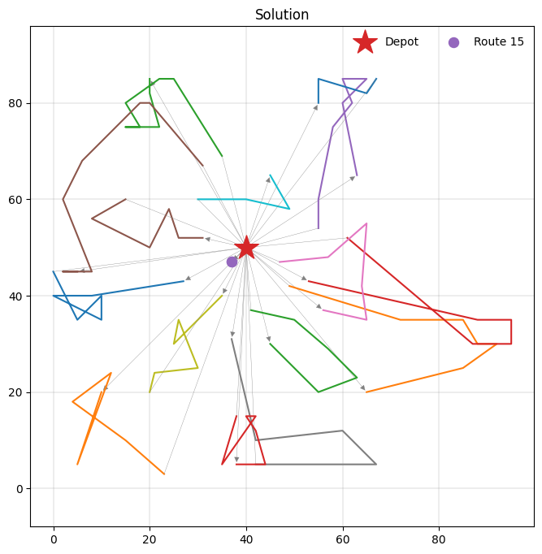

Using PyVRP on MAEnvs4VRP instances¶
Install MAEnvs4VRP and PyVRP¶
Uncomment the following cells:
[1]:
#pip install pyvrp
[2]:
#!git clone https://github.com/ricgama/maenvs4vrp.git
[3]:
# When using Colab
#%cd maenvs4vrp
#%mv maenvs4vrp/ repo_temp/
#%mv repo_temp/ ..
#%cd ..
#%cp maenvs4vrp/setup.py repo_temp/
#%rm -r maenvs4vrp
#%mv repo_temp/ maenvs4vrp/
#%cd maenvs4vrp/
#!pip install .
This notebook demonstrates the process of obtaining CVRPTW solutions from the PyVRP, an open-source, state-of-the-art vehicle routing problem solver, when applied to instances generated using MAEnvs4VRP tools.
[7]:
import numpy as np
import torch
from tqdm import tqdm
import matplotlib.pyplot as plt
from scipy.spatial.distance import pdist, squareform
[8]:
from pyvrp import Model
from pyvrp.stop import MaxRuntime
[9]:
from maenvs4vrp.environments.cvrptw.instances_generator import InstanceGenerator
from maenvs4vrp.environments.cvrptw.benchmark_instances_generator import BenchmarkInstanceGenerator
from maenvs4vrp.environments.cvrptw.env import Environment
from maenvs4vrp.environments.cvrptw.observations import Observations
from maenvs4vrp.environments.cvrptw.env_agent_selector import AgentSelector
from maenvs4vrp.environments.cvrptw.env_agent_reward import DenseReward
Benchmark Instances¶
Let’s start with a classic Solomon instance:
[10]:
BenchmarkInstanceGenerator.get_list_of_benchmark_instances()
[10]:
{'Solomon': ['R102',
'C101',
'C102',
'C103',
'C104',
'C105',
'C106',
'C107',
'C108',
'C109',
'C201',
'C202',
'C203',
'C204',
'C205',
'C206',
'C207',
'C208',
'R101',
'R103',
'R104',
'R105',
'R106',
'R107',
'R108',
'R109',
'R110',
'R111',
'R112',
'R201',
'R202',
'R203',
'R204',
'R205',
'R206',
'R207',
'R208',
'R209',
'R210',
'R211',
'RC101',
'RC102',
'RC103',
'RC104',
'RC105',
'RC106',
'RC107',
'RC108',
'RC201',
'RC202',
'RC203',
'RC204',
'RC205',
'RC206',
'RC207',
'RC208'],
'Homberger': ['C1_10_1',
'C1_10_10',
'C1_10_2',
'C1_10_3',
'C1_10_4',
'C1_10_5',
'C1_10_6',
'C1_10_7',
'C1_10_8',
'C1_10_9',
'C1_2_1',
'C1_2_10',
'C1_2_2',
'C1_2_3',
'C1_2_4',
'C1_2_5',
'C1_2_6',
'C1_2_7',
'C1_6_9',
'C1_8_1',
'C1_8_10',
'C1_8_2',
'C1_8_3',
'C1_8_4',
'C1_8_5',
'C1_8_6',
'C1_8_7',
'C1_8_8',
'C1_8_9',
'C2_10_1',
'C2_10_10',
'C2_10_2',
'C2_10_3',
'C2_10_4',
'C2_10_5',
'C2_10_6',
'C2_10_7',
'C2_10_9',
'C2_2_1',
'C2_2_10',
'C2_2_2',
'C2_2_3',
'C2_2_4',
'C2_2_5',
'C2_2_6',
'C2_2_7',
'C2_2_8',
'C2_2_9',
'C2_4_1',
'C2_4_10',
'C2_4_2',
'C2_4_3',
'C2_4_4',
'C2_4_5',
'C2_4_6',
'C2_4_7',
'C2_4_9',
'C2_6_1',
'C2_6_10',
'C2_6_2',
'C2_6_3',
'C2_6_4',
'C2_6_5',
'C2_6_6',
'C2_6_7',
'C2_6_8',
'C2_6_9',
'C2_8_1',
'C2_8_10',
'C2_8_2',
'C2_8_3',
'C2_8_4',
'C2_8_5',
'C2_8_6',
'C2_8_7',
'C2_8_9',
'R1_10_1',
'R1_10_10',
'R1_10_2',
'R1_10_3',
'R1_10_4',
'R1_10_5',
'R1_10_6',
'R1_10_7',
'R1_10_8',
'R1_10_9',
'R1_2_1',
'R1_2_10',
'R1_2_2',
'R1_2_3',
'R1_2_4',
'R1_2_5',
'R1_2_6',
'R1_2_7',
'C1_2_8',
'C1_6_8',
'C2_10_8',
'C2_4_8',
'C2_8_8',
'R1_2_8',
'R1_6_8',
'R2_10_8',
'R2_4_8',
'R2_8_7',
'RC1_2_6',
'RC1_6_6',
'RC2_10_5',
'RC2_4_5',
'R1_2_9',
'R1_4_1',
'R1_4_10',
'R1_4_2',
'R1_4_3',
'R1_4_4',
'R1_4_5',
'R1_4_6',
'R1_4_7',
'R1_4_8',
'R1_4_9',
'R1_6_1',
'R1_6_10',
'R1_6_2',
'R1_6_3',
'R1_6_4',
'R1_6_5',
'R1_6_6',
'R1_6_7',
'R1_6_9',
'R1_8_1',
'R1_8_10',
'R1_8_2',
'R1_8_3',
'R1_8_4',
'R1_8_5',
'R1_8_6',
'R1_8_7',
'R1_8_8',
'R1_8_9',
'R2_10_1',
'R2_10_10',
'R2_10_2',
'R2_10_3',
'R2_10_4',
'R2_10_5',
'R2_10_6',
'R2_10_7',
'R2_10_9',
'R2_2_1',
'R2_2_10',
'R2_2_2',
'R2_2_3',
'R2_2_4',
'R2_2_5',
'R2_2_6',
'R2_2_7',
'R2_2_8',
'R2_2_9',
'R2_4_1',
'R2_4_10',
'R2_4_2',
'R2_4_3',
'R2_4_4',
'R2_4_5',
'R2_4_6',
'R2_4_7',
'R2_4_9',
'R2_6_1',
'R2_6_10',
'R2_6_2',
'R2_6_3',
'R2_6_4',
'R2_6_5',
'R2_6_6',
'R2_6_7',
'R2_6_8',
'R2_6_9',
'R2_8_1',
'R2_8_10',
'R2_8_2',
'R2_8_3',
'R2_8_4',
'R2_8_5',
'R2_8_6',
'R2_8_8',
'R2_8_9',
'RC1_10_1',
'RC1_10_10',
'RC1_10_2',
'RC1_10_3',
'RC1_10_4',
'RC1_10_5',
'RC1_10_6',
'RC1_10_7',
'RC1_10_8',
'RC1_10_9',
'RC1_2_1',
'RC1_2_10',
'RC1_2_2',
'RC1_2_3',
'RC1_2_4',
'RC1_2_5',
'RC1_2_7',
'RC1_2_8',
'RC1_2_9',
'RC1_4_1',
'RC1_4_10',
'RC1_4_2',
'RC1_4_3',
'RC1_4_4',
'RC1_4_5',
'RC1_4_6',
'RC1_4_7',
'RC1_4_8',
'RC1_4_9',
'RC1_6_1',
'RC1_6_10',
'RC1_6_2',
'RC1_6_3',
'RC1_6_4',
'RC1_6_5',
'RC1_6_7',
'RC1_6_8',
'RC1_6_9',
'RC1_8_1',
'RC1_8_10',
'RC1_8_2',
'RC1_8_3',
'RC1_8_4',
'RC1_8_5',
'RC1_8_6',
'RC1_8_7',
'RC1_8_8',
'RC1_8_9',
'RC2_10_1',
'RC2_10_10',
'RC2_10_2',
'RC2_10_3',
'RC2_10_4',
'RC2_10_6',
'RC2_10_7',
'RC2_10_8',
'RC2_10_9',
'RC2_2_1',
'RC2_2_10',
'RC2_2_2',
'RC2_2_3',
'RC2_2_4',
'RC2_2_5',
'RC2_2_6',
'RC2_2_7',
'RC2_2_8',
'RC2_2_9',
'RC2_4_1',
'RC2_4_10',
'RC2_4_2',
'RC2_4_3',
'RC2_4_4',
'C1_2_9',
'C1_4_1',
'C1_4_10',
'C1_4_2',
'C1_4_3',
'C1_4_4',
'C1_4_5',
'C1_4_6',
'C1_4_7',
'C1_4_8',
'C1_4_9',
'C1_6_1',
'C1_6_10',
'C1_6_2',
'C1_6_3',
'C1_6_4',
'C1_6_5',
'C1_6_6',
'C1_6_7',
'RC2_4_6',
'RC2_4_7',
'RC2_4_8',
'RC2_4_9',
'RC2_6_1',
'RC2_6_10',
'RC2_6_2',
'RC2_6_3',
'RC2_6_4',
'RC2_6_5',
'RC2_6_6',
'RC2_6_7',
'RC2_6_8',
'RC2_6_9',
'RC2_8_1',
'RC2_8_10',
'RC2_8_2',
'RC2_8_3',
'RC2_8_4',
'RC2_8_5',
'RC2_8_6',
'RC2_8_7',
'RC2_8_8',
'RC2_8_9']}
[11]:
all_inst = BenchmarkInstanceGenerator.get_list_of_benchmark_instances()['Solomon']
[12]:
generator = BenchmarkInstanceGenerator(instance_type='Solomon', set_of_instances=all_inst)
[13]:
instance_name='RC101'
[14]:
instance = generator.get_instance(instance_name)
[15]:
instance
[15]:
{'name': 'RC101',
'num_agents': 25,
'num_nodes': 101,
'data': TensorDict(
fields={
capacity: Tensor(shape=torch.Size([1, 1]), device=cpu, dtype=torch.float32, is_shared=False),
coords: Tensor(shape=torch.Size([1, 101, 2]), device=cpu, dtype=torch.float32, is_shared=False),
demands: Tensor(shape=torch.Size([1, 101]), device=cpu, dtype=torch.float32, is_shared=False),
depot_idx: Tensor(shape=torch.Size([1, 1]), device=cpu, dtype=torch.int64, is_shared=False),
end_time: Tensor(shape=torch.Size([1]), device=cpu, dtype=torch.float32, is_shared=False),
is_depot: Tensor(shape=torch.Size([1, 101]), device=cpu, dtype=torch.bool, is_shared=False),
service_time: Tensor(shape=torch.Size([1, 101]), device=cpu, dtype=torch.float32, is_shared=False),
speed: Tensor(shape=torch.Size([1, 1]), device=cpu, dtype=torch.float32, is_shared=False),
start_time: Tensor(shape=torch.Size([1]), device=cpu, dtype=torch.float32, is_shared=False),
tw_high: Tensor(shape=torch.Size([1, 101]), device=cpu, dtype=torch.float32, is_shared=False),
tw_low: Tensor(shape=torch.Size([1, 101]), device=cpu, dtype=torch.float32, is_shared=False)},
batch_size=torch.Size([1]),
device=cpu,
is_shared=False),
'n_digits': 10.0}
Now that we’ve obtained the dictionary containing the instance information, we’ll convert it into the format required by PyVRP.
[16]:
def create_data_model(instance, num_agents=25, n_digits=10, scale = 10):
"""Stores the data for the problem.
Args:
instance: Dictionary containing problem instance data
num_agents: Number of vehicles/agents to use (default: 25)
n_digits: Number of digits to round distances to (default: 10)
scale: Scaling factor for distance/time values (default: 10)
Returns:
Dictionary containing formatted data for the routing problem
"""
data = {}
# Extract coordinates from instance and convert to numpy array
coords = instance['coords'].numpy()
# Calculate pairwise distances between all coordinates
dist = squareform(pdist(coords))
if n_digits:
# Round distances to specified precision if n_digits is provided
dist = np.floor(n_digits * squareform(pdist(coords)))/n_digits
# Store coordinates as regular Python list
data['coords'] = instance['coords'].tolist()
# Scale and convert distance matrix to integers
data['dist_matrix'] = (scale * dist).astype(int).tolist()
# Use same values for time matrix (assuming distance = time)
data['time_matrix'] = (scale * dist).astype(int).tolist()
# Scale and format time windows as tuples of (earliest, latest) arrival times
data['time_windows'] = [(int(scale * tw[0]), int(scale * tw[1])) for tw in zip(instance['tw_low'].tolist(), instance['tw_high'].squeeze(0).tolist())]
# Set number of vehicles available
data['num_vehicles'] = num_agents
# Convert demand values to integer list
data['demands'] = instance['demands'].type(torch.int32).tolist()
# Scale and convert service times to integer list
data['service_times'] = (scale * instance['service_time']).type(torch.int32).tolist()
# Set vehicle capacity
data['capacity'] = int(instance['capacity'])
# Set depot location index
data['depot'] = int(instance['depot_idx'].item())
# Calculate maximum tour duration based on start and end times
start_time = int(scale * instance['start_time'].item())
end_time = int(scale * instance['end_time'].item())
max_tour_duration = end_time - start_time
data['max_tour_duration'] = max_tour_duration
return data
[17]:
scale = 1_000
[18]:
data = create_data_model(instance['data'][0], scale=scale)
[19]:
data['num_vehicles']
[19]:
25
[20]:
def solver(data):
m = Model()
depot = m.add_depot(
x=data['coords'][0][0],
y=data['coords'][0][1])
m.add_vehicle_type(
num_available=data['num_vehicles'],
start_depot=depot,
end_depot=depot,
tw_early=data['time_windows'][0][0],
tw_late=data['time_windows'][0][1],
capacity=data['capacity'])
clients = [
m.add_client(
x=data['coords'][idx][0],
y=data['coords'][idx][1],
delivery= data['demands'][idx] ,
service_duration= data['service_times'][idx] ,
tw_early=data['time_windows'][idx][0],
tw_late=data['time_windows'][idx][1],
)
for idx in range(1, len(data['coords']))
]
locations = [depot, *clients]
for frm_idx, frm in enumerate(locations):
for to_idx, to in enumerate(locations):
distance = data['dist_matrix'][frm_idx][to_idx]
duration = data['time_matrix'][frm_idx][to_idx]
m.add_edge(frm, to, distance=distance, duration=duration)
res = m.solve(stop=MaxRuntime(10))
return res, m
[21]:
res, m = solver(data)
print(res)
PyVRP v0.13.3
Solving an instance with:
1 depot
100 clients
25 vehicles (1 vehicle type)
Iters Time | Current OK Candidate OK Best OK
H 5690 5s | 1634200 Y 1697400 Y 1627500 Y
H 12419 10s | 1631300 Y 1652000 Y 1626100 Y
Search terminated in 10.00s after 12422 iterations.
Best-found solution has cost 1626100.
Solution results
================
# routes: 16
# trips: 16
# clients: 100
objective: 1626100
distance: 1626100
duration: 2788400
# iterations: 12422
run-time: 10.00 seconds
Solution results
================
# routes: 16
# trips: 16
# clients: 100
objective: 1626100
distance: 1626100
duration: 2788400
# iterations: 12422
run-time: 10.00 seconds
Routes
------
Route #1: 82 11 15 16 9 10 13 17
Route #2: 63 33 28 30 34 50 91
Route #3: 5 45 2 7 6 8 3 1 70
Route #4: 92 31 29 27 26 32 93
Route #5: 72 39 36 40 38 41 54 96
Route #6: 69 98 88 53 78 60
Route #7: 95 62 67 71 94 80
Route #8: 83 19 76 89 48
Route #9: 65 52 99 57 86 74
Route #10: 61 81 68 55
Route #11: 42 44 43 37 35
Route #12: 59 75 87 97 58 77
Route #13: 64 51 85 84 56 66
Route #14: 23 21 18 49 22 20 25 24
Route #15: 90
Route #16: 14 47 12 73 79 46 4 100
Let’s examine the resulting solution.
[22]:
from pyvrp.plotting import plot_solution
_, ax = plt.subplots(figsize=(8, 8))
plot_solution(res.best, m.data(), ax=ax)

Next, let’s verify the solution’s validity within the MAEnvs4VRP environment.
[23]:
all_inst = BenchmarkInstanceGenerator.get_list_of_benchmark_instances()
gen = BenchmarkInstanceGenerator(instance_type ='Solomon', set_of_instances=all_inst['Solomon'])
obs = Observations()
sel = AgentSelector()
rew = DenseReward()
env = Environment(instance_generator_object=gen,
obs_builder_object=obs,
agent_selector_object=sel,
reward_evaluator=rew,
seed=0)
[25]:
td = env.reset_agent_select_observe(num_agents=len(res.best.routes()), instance_name=instance_name, sample_type='not_random')
rewards = []
for idx, route in enumerate(res.best.routes(), 1):
actions = route.visits() + [0]
for action in actions:
td['next_action'] = torch.tensor([[action]])
td = env.step_agent_select_observe(td)
rewards.append( td['reward'] + td['penalty'])
env.check_solution_validity()
print('distance: ', -torch.stack(rewards).sum(dim = 0).squeeze(-1).item())
distance: 1626.0999755859375
[26]:
print(f'env best time:, {-torch.stack(rewards).sum(dim = 0).squeeze(-1).item():.2f}')
print(f'solver best time:, {res.best.distance()/scale:.2f}, n agents: {len(res.best.routes())}')
env best time:, 1626.10
solver best time:, 1626.10, n agents: 16
As expected, we get the same value in both cases.
Baseline values using PyVRP¶
Let’s now use PyVRP to obtain baseline reference values for our validation instances, which are crucial for evaluating new neuro-solver algorithms.
[27]:
val_set= 'servs_50_agents_25'
instance_type='validation'
[28]:
generator = InstanceGenerator()
set_of_instances = set(generator.get_list_of_benchmark_instances()[val_set][instance_type])
generator = InstanceGenerator(instance_type=instance_type, set_of_instances=set_of_instances)
[29]:
obs = Observations()
sel = AgentSelector()
rew = DenseReward()
env = Environment(instance_generator_object=generator,
obs_builder_object=obs,
agent_selector_object=sel,
reward_evaluator=rew,
seed=0)
[26]:
total_times = []
total_nv = []
scale = 1_000
instance_name = generator.set_of_instances.pop()
print(instance_name)
inst_dict = generator.get_instance(instance_name)
n_digits = inst_dict.get('n_digits')
num_agents = inst_dict['num_agents']
batch_size = inst_dict['data'].batch_size[0]
for k in range(batch_size):
instance = create_data_model(inst_dict['data'][k], n_digits=n_digits, scale=scale)
res, _ = solver(instance)
total_times.append(res.best.distance()/scale)
total_nv.append(len(res.best.routes()))
print(f'av. time:, {np.mean(total_times)}, av agents: {np.mean(total_nv)}')
cvrptw/data/generated/servs_50_agents_25/validation/generated_val_servs_50_agents_25_27
PyVRP v0.11.3
Solving an instance with:
1 depot
50 clients
25 vehicles (1 vehicle type)
| Feasible | Infeasible
Iters Time | # Avg Best | # Avg Best
H 500 2s | 34 13313 13093 | 35 13943 12874
1000 4s | 41 13396 13093 | 56 13683 12935
1500 6s | 51 13449 13093 | 45 13310 12813
2000 9s | 56 13308 13093 | 36 13320 12924
Search terminated in 10.00s after 2331 iterations.
Best-found solution has cost 13093.
Solution results
================
# routes: 9
# trips: 9
# clients: 50
objective: 13093
distance: 13093
duration: 23183
# iterations: 2331
run-time: 10.00 seconds
PyVRP v0.11.3
Solving an instance with:
1 depot
50 clients
25 vehicles (1 vehicle type)
| Feasible | Infeasible
Iters Time | # Avg Best | # Avg Best
H 500 3s | 62 16920 16352 | 57 17118 16091
H 1000 5s | 49 16674 16279 | 55 17289 16110
1500 7s | 43 16694 16279 | 55 15922 15534
2000 9s | 38 16650 16279 | 33 16645 16147
Search terminated in 10.00s after 2286 iterations.
Best-found solution has cost 16229.
Solution results
================
# routes: 11
# trips: 11
# clients: 50
objective: 16229
distance: 16229
duration: 26472
# iterations: 2286
run-time: 10.00 seconds
PyVRP v0.11.3
Solving an instance with:
1 depot
50 clients
25 vehicles (1 vehicle type)
| Feasible | Infeasible
Iters Time | # Avg Best | # Avg Best
H 500 2s | 55 14662 14289 | 29 16179 14204
1000 4s | 51 14616 14289 | 52 15235 14208
1500 5s | 61 14638 14289 | 51 15502 14224
2000 7s | 34 14492 14289 | 51 14502 14225
2500 9s | 33 14572 14289 | 48 14537 14197
Search terminated in 10.00s after 2874 iterations.
Best-found solution has cost 14289.
Solution results
================
# routes: 10
# trips: 10
# clients: 50
objective: 14289
distance: 14289
duration: 24289
# iterations: 2874
run-time: 10.00 seconds
PyVRP v0.11.3
Solving an instance with:
1 depot
50 clients
25 vehicles (1 vehicle type)
| Feasible | Infeasible
Iters Time | # Avg Best | # Avg Best
H 500 2s | 27 13958 13480 | 27 15129 13257
1000 3s | 27 13870 13480 | 27 14588 13174
1500 5s | 39 13898 13480 | 39 13573 13209
2000 6s | 61 13825 13480 | 47 13591 13178
2500 8s | 59 13762 13480 | 36 13525 13167
3000 10s | 56 13840 13480 | 61 13746 13219
Search terminated in 10.00s after 3145 iterations.
Best-found solution has cost 13480.
Solution results
================
# routes: 9
# trips: 9
# clients: 50
objective: 13480
distance: 13480
duration: 23982
# iterations: 3145
run-time: 10.00 seconds
PyVRP v0.11.3
Solving an instance with:
1 depot
50 clients
25 vehicles (1 vehicle type)
| Feasible | Infeasible
Iters Time | # Avg Best | # Avg Best
H 500 3s | 54 17826 17316 | 55 17916 16789
1000 5s | 48 17841 17316 | 61 17276 16608
1500 8s | 43 17696 17316 | 43 17504 16939
2000 10s | 32 17662 17316 | 33 16997 16542
Search terminated in 10.01s after 2016 iterations.
Best-found solution has cost 17316.
Solution results
================
# routes: 10
# trips: 10
# clients: 50
objective: 17316
distance: 17316
duration: 28148
# iterations: 2016
run-time: 10.01 seconds
PyVRP v0.11.3
Solving an instance with:
1 depot
50 clients
25 vehicles (1 vehicle type)
| Feasible | Infeasible
Iters Time | # Avg Best | # Avg Best
H 500 2s | 32 22173 21389 | 57 23616 21076
1000 4s | 32 21895 21389 | 51 24435 21390
1500 6s | 39 21829 21389 | 61 23638 21235
2000 8s | 60 21881 21389 | 30 21874 20833
Search terminated in 10.00s after 2448 iterations.
Best-found solution has cost 21389.
Solution results
================
# routes: 11
# trips: 11
# clients: 50
objective: 21389
distance: 21389
duration: 31460
# iterations: 2448
run-time: 10.00 seconds
PyVRP v0.11.3
Solving an instance with:
1 depot
50 clients
25 vehicles (1 vehicle type)
| Feasible | Infeasible
Iters Time | # Avg Best | # Avg Best
H 500 3s | 50 16552 16058 | 30 18744 15979
H 1000 5s | 30 16335 16056 | 64 17757 16096
1500 7s | 51 16445 16056 | 60 17403 16001
2000 10s | 33 16291 16056 | 54 17946 16072
Search terminated in 10.00s after 2087 iterations.
Best-found solution has cost 16056.
Solution results
================
# routes: 10
# trips: 10
# clients: 50
objective: 16056
distance: 16056
duration: 26056
# iterations: 2087
run-time: 10.00 seconds
PyVRP v0.11.3
Solving an instance with:
1 depot
50 clients
25 vehicles (1 vehicle type)
| Feasible | Infeasible
Iters Time | # Avg Best | # Avg Best
H 500 2s | 26 11121 10817 | 30 10802 10542
1000 4s | 48 11131 10817 | 36 10800 10542
1500 6s | 53 11089 10817 | 26 10971 10773
2000 8s | 42 11072 10817 | 34 10747 10445
2500 9s | 51 11015 10817 | 65 10933 10732
Search terminated in 10.00s after 2674 iterations.
Best-found solution has cost 10817.
Solution results
================
# routes: 9
# trips: 9
# clients: 50
objective: 10817
distance: 10817
duration: 20910
# iterations: 2674
run-time: 10.00 seconds
PyVRP v0.11.3
Solving an instance with:
1 depot
50 clients
25 vehicles (1 vehicle type)
| Feasible | Infeasible
Iters Time | # Avg Best | # Avg Best
H 500 2s | 46 16968 16569 | 40 17387 16185
1000 4s | 29 16779 16569 | 56 17238 16303
1500 6s | 42 16952 16569 | 28 16602 16246
2000 8s | 42 16894 16569 | 65 16652 16197
Search terminated in 10.00s after 2465 iterations.
Best-found solution has cost 16569.
Solution results
================
# routes: 10
# trips: 10
# clients: 50
objective: 16569
distance: 16569
duration: 26719
# iterations: 2465
run-time: 10.00 seconds
PyVRP v0.11.3
Solving an instance with:
1 depot
50 clients
25 vehicles (1 vehicle type)
| Feasible | Infeasible
Iters Time | # Avg Best | # Avg Best
H 500 3s | 41 17229 16647 | 37 19276 16530
1000 5s | 49 17042 16647 | 58 18639 16568
1500 7s | 60 17063 16647 | 27 20266 16573
2000 9s | 56 17250 16647 | 26 19175 15925
Search terminated in 10.00s after 2157 iterations.
Best-found solution has cost 16647.
Solution results
================
# routes: 10
# trips: 10
# clients: 50
objective: 16647
distance: 16647
duration: 26647
# iterations: 2157
run-time: 10.00 seconds
PyVRP v0.11.3
Solving an instance with:
1 depot
50 clients
25 vehicles (1 vehicle type)
| Feasible | Infeasible
Iters Time | # Avg Best | # Avg Best
H 500 2s | 30 11331 11043 | 44 12366 11036
1000 4s | 35 11330 11043 | 50 12277 11019
1500 5s | 59 11387 11043 | 54 12016 10802
2000 7s | 44 11327 11043 | 31 12973 11090
2500 9s | 29 11326 11043 | 35 12257 10622
Search terminated in 10.00s after 2895 iterations.
Best-found solution has cost 11043.
Solution results
================
# routes: 9
# trips: 9
# clients: 50
objective: 11043
distance: 11043
duration: 21077
# iterations: 2895
run-time: 10.00 seconds
PyVRP v0.11.3
Solving an instance with:
1 depot
50 clients
25 vehicles (1 vehicle type)
| Feasible | Infeasible
Iters Time | # Avg Best | # Avg Best
H 500 2s | 38 16786 16502 | 37 18936 15245
1000 5s | 32 16704 16502 | 30 18481 15838
1500 7s | 61 16891 16502 | 62 17624 15899
H 2000 9s | 43 16737 16489 | 42 18312 16098
Search terminated in 10.01s after 2205 iterations.
Best-found solution has cost 16489.
Solution results
================
# routes: 10
# trips: 10
# clients: 50
objective: 16489
distance: 16489
duration: 26854
# iterations: 2205
run-time: 10.01 seconds
PyVRP v0.11.3
Solving an instance with:
1 depot
50 clients
25 vehicles (1 vehicle type)
| Feasible | Infeasible
Iters Time | # Avg Best | # Avg Best
H 500 2s | 45 11535 11308 | 29 12761 10917
H 1000 4s | 37 11562 11298 | 57 11818 11182
1500 6s | 61 11553 11298 | 60 11134 10930
2000 8s | 56 11536 11298 | 58 11303 11069
2500 10s | 31 11442 11298 | 61 11216 10943
Search terminated in 10.00s after 2571 iterations.
Best-found solution has cost 11298.
Solution results
================
# routes: 8
# trips: 8
# clients: 50
objective: 11298
distance: 11298
duration: 21298
# iterations: 2571
run-time: 10.00 seconds
PyVRP v0.11.3
Solving an instance with:
1 depot
50 clients
25 vehicles (1 vehicle type)
| Feasible | Infeasible
Iters Time | # Avg Best | # Avg Best
H 500 2s | 32 10671 10353 | 65 11731 10268
1000 4s | 43 10806 10353 | 30 11707 9157
1500 6s | 65 10681 10353 | 26 11917 9799
2000 8s | 56 10705 10353 | 36 11170 10305
Search terminated in 10.00s after 2485 iterations.
Best-found solution has cost 10353.
Solution results
================
# routes: 8
# trips: 8
# clients: 50
objective: 10353
distance: 10353
duration: 20648
# iterations: 2485
run-time: 10.00 seconds
PyVRP v0.11.3
Solving an instance with:
1 depot
50 clients
25 vehicles (1 vehicle type)
| Feasible | Infeasible
Iters Time | # Avg Best | # Avg Best
H 500 2s | 32 12162 11911 | 54 13161 11318
1000 3s | 35 12205 11911 | 31 14508 11817
1500 6s | 44 12259 11911 | 34 12815 11871
2000 8s | 39 12238 11911 | 48 11454 10942
2500 10s | 43 12239 11911 | 48 12043 11730
Search terminated in 10.00s after 2533 iterations.
Best-found solution has cost 11911.
Solution results
================
# routes: 9
# trips: 9
# clients: 50
objective: 11911
distance: 11911
duration: 22176
# iterations: 2533
run-time: 10.00 seconds
PyVRP v0.11.3
Solving an instance with:
1 depot
50 clients
25 vehicles (1 vehicle type)
| Feasible | Infeasible
Iters Time | # Avg Best | # Avg Best
H 500 2s | 25 13715 13441 | 42 15633 13307
1000 4s | 52 13804 13441 | 54 13601 13312
1500 6s | 26 13690 13441 | 35 13621 13282
2000 8s | 52 13694 13441 | 63 13592 13290
Search terminated in 10.00s after 2459 iterations.
Best-found solution has cost 13441.
Solution results
================
# routes: 9
# trips: 9
# clients: 50
objective: 13441
distance: 13441
duration: 23555
# iterations: 2459
run-time: 10.00 seconds
PyVRP v0.11.3
Solving an instance with:
1 depot
50 clients
25 vehicles (1 vehicle type)
| Feasible | Infeasible
Iters Time | # Avg Best | # Avg Best
H 500 2s | 36 10831 10624 | 56 11920 10417
1000 3s | 40 10837 10624 | 35 11480 10398
1500 5s | 47 10851 10624 | 27 11981 10450
2000 6s | 45 10846 10624 | 55 11073 10371
2500 8s | 26 10766 10624 | 49 10665 10386
3000 9s | 63 10835 10624 | 28 10752 10505
Search terminated in 10.00s after 3200 iterations.
Best-found solution has cost 10624.
Solution results
================
# routes: 9
# trips: 9
# clients: 50
objective: 10624
distance: 10624
duration: 21050
# iterations: 3200
run-time: 10.00 seconds
PyVRP v0.11.3
Solving an instance with:
1 depot
50 clients
25 vehicles (1 vehicle type)
| Feasible | Infeasible
Iters Time | # Avg Best | # Avg Best
H 500 2s | 52 14107 13770 | 33 16093 13377
1000 4s | 61 14137 13770 | 29 14861 13381
1500 6s | 58 14236 13770 | 51 13826 13347
2000 7s | 39 14120 13770 | 42 13808 13444
2500 9s | 65 14144 13770 | 52 13705 13295
Search terminated in 10.00s after 2734 iterations.
Best-found solution has cost 13770.
Solution results
================
# routes: 10
# trips: 10
# clients: 50
objective: 13770
distance: 13770
duration: 23842
# iterations: 2734
run-time: 10.00 seconds
PyVRP v0.11.3
Solving an instance with:
1 depot
50 clients
25 vehicles (1 vehicle type)
| Feasible | Infeasible
Iters Time | # Avg Best | # Avg Best
H 500 2s | 31 15524 15165 | 43 16107 14861
1000 4s | 60 15494 15165 | 44 15408 13695
1500 6s | 42 15426 15165 | 47 15885 14850
2000 9s | 62 15538 15165 | 47 16029 14852
Search terminated in 10.00s after 2321 iterations.
Best-found solution has cost 15165.
Solution results
================
# routes: 10
# trips: 10
# clients: 50
objective: 15165
distance: 15165
duration: 25165
# iterations: 2321
run-time: 10.00 seconds
PyVRP v0.11.3
Solving an instance with:
1 depot
50 clients
25 vehicles (1 vehicle type)
| Feasible | Infeasible
Iters Time | # Avg Best | # Avg Best
H 500 2s | 53 11670 11474 | 25 11277 10955
1000 4s | 31 11592 11474 | 50 11281 10862
1500 5s | 44 11558 11474 | 29 11314 11086
2000 7s | 62 11666 11474 | 47 11349 10897
2500 9s | 41 11606 11474 | 48 11487 11047
Search terminated in 10.00s after 2708 iterations.
Best-found solution has cost 11474.
Solution results
================
# routes: 9
# trips: 9
# clients: 50
objective: 11474
distance: 11474
duration: 21755
# iterations: 2708
run-time: 10.00 seconds
PyVRP v0.11.3
Solving an instance with:
1 depot
50 clients
25 vehicles (1 vehicle type)
| Feasible | Infeasible
Iters Time | # Avg Best | # Avg Best
H 500 2s | 63 11331 11140 | 36 11118 10880
1000 4s | 28 11314 11140 | 63 11007 10478
1500 6s | 30 11296 11140 | 27 10905 10711
2000 8s | 41 11303 11140 | 64 11066 10736
Search terminated in 10.00s after 2446 iterations.
Best-found solution has cost 11140.
Solution results
================
# routes: 9
# trips: 9
# clients: 50
objective: 11140
distance: 11140
duration: 21698
# iterations: 2446
run-time: 10.00 seconds
PyVRP v0.11.3
Solving an instance with:
1 depot
50 clients
25 vehicles (1 vehicle type)
| Feasible | Infeasible
Iters Time | # Avg Best | # Avg Best
H 500 2s | 42 16889 16425 | 57 17905 16059
1000 5s | 45 16852 16425 | 39 18495 16204
1500 7s | 48 16956 16425 | 26 18608 15852
2000 9s | 54 16815 16425 | 55 17968 16139
Search terminated in 10.00s after 2262 iterations.
Best-found solution has cost 16425.
Solution results
================
# routes: 10
# trips: 10
# clients: 50
objective: 16425
distance: 16425
duration: 26425
# iterations: 2262
run-time: 10.00 seconds
PyVRP v0.11.3
Solving an instance with:
1 depot
50 clients
25 vehicles (1 vehicle type)
| Feasible | Infeasible
Iters Time | # Avg Best | # Avg Best
H 500 2s | 27 20082 19593 | 53 20505 19563
1000 5s | 57 20190 19593 | 26 20209 19295
1500 6s | 38 19983 19593 | 45 20037 19308
2000 8s | 31 19861 19593 | 27 19926 19413
Search terminated in 10.00s after 2390 iterations.
Best-found solution has cost 19593.
Solution results
================
# routes: 11
# trips: 11
# clients: 50
objective: 19593
distance: 19593
duration: 30110
# iterations: 2390
run-time: 10.00 seconds
PyVRP v0.11.3
Solving an instance with:
1 depot
50 clients
25 vehicles (1 vehicle type)
| Feasible | Infeasible
Iters Time | # Avg Best | # Avg Best
H 500 2s | 59 11625 11345 | 42 11336 10880
1000 3s | 46 11621 11345 | 33 11420 11147
1500 5s | 59 11663 11345 | 43 11300 11022
2000 6s | 44 11635 11345 | 46 11455 11074
2500 8s | 31 11586 11345 | 43 11377 10978
Search terminated in 10.00s after 2909 iterations.
Best-found solution has cost 11345.
Solution results
================
# routes: 9
# trips: 9
# clients: 50
objective: 11345
distance: 11345
duration: 21524
# iterations: 2909
run-time: 10.00 seconds
PyVRP v0.11.3
Solving an instance with:
1 depot
50 clients
25 vehicles (1 vehicle type)
| Feasible | Infeasible
Iters Time | # Avg Best | # Avg Best
H 500 3s | 62 25036 24298 | 63 29135 24324
1000 5s | 53 24898 24298 | 43 28358 24173
1500 7s | 39 24824 24298 | 50 26454 24320
H 2000 9s | 56 25044 24296 | 41 23397 22584
Search terminated in 10.00s after 2239 iterations.
Best-found solution has cost 24296.
Solution results
================
# routes: 12
# trips: 12
# clients: 50
objective: 24296
distance: 24296
duration: 34296
# iterations: 2239
run-time: 10.00 seconds
PyVRP v0.11.3
Solving an instance with:
1 depot
50 clients
25 vehicles (1 vehicle type)
| Feasible | Infeasible
Iters Time | # Avg Best | # Avg Best
H 500 2s | 45 15300 14587 | 44 15872 13839
1000 5s | 58 15002 14587 | 38 15840 13702
H 1500 7s | 25 14801 14574 | 32 16855 14500
2000 9s | 52 14922 14574 | 61 16129 14557
Search terminated in 10.01s after 2293 iterations.
Best-found solution has cost 14574.
Solution results
================
# routes: 9
# trips: 9
# clients: 50
objective: 14574
distance: 14574
duration: 24574
# iterations: 2293
run-time: 10.01 seconds
PyVRP v0.11.3
Solving an instance with:
1 depot
50 clients
25 vehicles (1 vehicle type)
| Feasible | Infeasible
Iters Time | # Avg Best | # Avg Best
H 500 2s | 39 13029 12748 | 27 14456 12206
1000 4s | 54 13041 12748 | 38 13571 12496
H 1500 6s | 25 13073 12686 | 50 13474 12565
H 2000 8s | 41 12994 12684 | 53 13406 12498
2500 10s | 64 12982 12684 | 28 13747 12510
Search terminated in 10.00s after 2548 iterations.
Best-found solution has cost 12684.
Solution results
================
# routes: 9
# trips: 9
# clients: 50
objective: 12684
distance: 12684
duration: 22684
# iterations: 2548
run-time: 10.00 seconds
PyVRP v0.11.3
Solving an instance with:
1 depot
50 clients
25 vehicles (1 vehicle type)
| Feasible | Infeasible
Iters Time | # Avg Best | # Avg Best
H 500 2s | 51 18631 18029 | 38 22216 17702
H 1000 4s | 36 18339 17985 | 41 22603 17784
1500 6s | 26 18201 17985 | 60 19569 17855
2000 8s | 32 18352 17985 | 43 19274 17599
2500 10s | 54 18317 17985 | 50 19363 17809
Search terminated in 10.00s after 2507 iterations.
Best-found solution has cost 17985.
Solution results
================
# routes: 11
# trips: 11
# clients: 50
objective: 17985
distance: 17985
duration: 27994
# iterations: 2507
run-time: 10.00 seconds
PyVRP v0.11.3
Solving an instance with:
1 depot
50 clients
25 vehicles (1 vehicle type)
| Feasible | Infeasible
Iters Time | # Avg Best | # Avg Best
H 500 2s | 31 17932 17529 | 65 17822 16638
H 1000 4s | 53 17984 17445 | 56 17141 16656
H 1500 6s | 31 17713 17365 | 59 17569 16869
2000 8s | 63 17861 17365 | 40 17142 16672
Search terminated in 10.00s after 2389 iterations.
Best-found solution has cost 17365.
Solution results
================
# routes: 10
# trips: 10
# clients: 50
objective: 17365
distance: 17365
duration: 27365
# iterations: 2389
run-time: 10.00 seconds
PyVRP v0.11.3
Solving an instance with:
1 depot
50 clients
25 vehicles (1 vehicle type)
| Feasible | Infeasible
Iters Time | # Avg Best | # Avg Best
H 500 2s | 27 16145 15710 | 39 18985 15691
1000 4s | 49 16220 15710 | 60 17274 15572
1500 6s | 62 16118 15710 | 30 19184 15701
2000 8s | 32 15972 15710 | 45 17651 15579
Search terminated in 10.01s after 2479 iterations.
Best-found solution has cost 15710.
Solution results
================
# routes: 10
# trips: 10
# clients: 50
objective: 15710
distance: 15710
duration: 25710
# iterations: 2479
run-time: 10.01 seconds
PyVRP v0.11.3
Solving an instance with:
1 depot
50 clients
25 vehicles (1 vehicle type)
| Feasible | Infeasible
Iters Time | # Avg Best | # Avg Best
H 500 2s | 42 14591 14171 | 26 16768 13825
H 1000 4s | 64 14571 14106 | 39 15479 14024
H 1500 6s | 61 14528 14059 | 26 14179 13912
2000 7s | 43 14408 14059 | 40 14355 13992
2500 9s | 45 14464 14059 | 62 14254 13922
Search terminated in 10.00s after 2820 iterations.
Best-found solution has cost 14059.
Solution results
================
# routes: 10
# trips: 10
# clients: 50
objective: 14059
distance: 14059
duration: 24317
# iterations: 2820
run-time: 10.00 seconds
PyVRP v0.11.3
Solving an instance with:
1 depot
50 clients
25 vehicles (1 vehicle type)
| Feasible | Infeasible
Iters Time | # Avg Best | # Avg Best
H 500 2s | 28 13612 13441 | 47 14038 13134
1000 4s | 56 13632 13441 | 63 13709 13414
1500 6s | 49 13727 13441 | 48 13267 12799
2000 8s | 62 13607 13441 | 36 13616 13402
2500 10s | 50 13629 13441 | 52 13793 13368
Search terminated in 10.00s after 2505 iterations.
Best-found solution has cost 13441.
Solution results
================
# routes: 9
# trips: 9
# clients: 50
objective: 13441
distance: 13441
duration: 23444
# iterations: 2505
run-time: 10.00 seconds
av. time:, 14.689687500000002, av agents: 9.65625
2000 2s | 50 9436 8751 | 60 9031 8672
2500 3s | 63 9354 8751 | 61 9060 8649
3000 3s | 64 9341 8751 | 31 8711 8476
3500 4s | 54 9445 8751 | 40 8898 8645
4000 5s | 58 9445 8751 | 53 8929 8645
4500 5s | 39 9522 8751 | 28 8832 8477
5000 6s | 62 9263 8751 | 55 8804 8476
5500 6s | 32 9673 8751 | 41 9055 8672
6000 7s | 44 9536 8751 | 56 8809 8476
6500 7s | 40 9632 8751 | 58 8984 8645
7000 8s | 42 9576 8751 | 33 9101 8649
7500 9s | 26 9802 8751 | 49 8799 8480
8000 9s | 53 9406 8751 | 63 9045 8649
8500 10s | 63 9334 8751 | 61 8815 8481
Search terminated in 10.00s after 8800 iterations.
Best-found solution has cost 8751.
Solution results
================
# routes: 6
# clients: 25
objective: 8751
distance: 8751
duration: 13751
# iterations: 8800
run-time: 10.00 seconds
PyVRP v0.9.1
Solving an instance with:
1 depot
25 clients
25 vehicles (1 vehicle type)
| Feasible | Infeasible
Iters Time | # Avg Best | # Avg Best
H 500 1s | 41 8470 7939 | 51 8269 7848
1000 1s | 28 8756 7939 | 61 7770 7540
1500 2s | 59 8383 7939 | 34 7732 7540
2000 2s | 45 8514 7939 | 41 8376 7779
2500 3s | 63 8371 7939 | 28 8244 7779
3000 3s | 35 8661 7939 | 32 8200 7779
3500 4s | 41 8570 7939 | 65 8423 7779
4000 4s | 59 8382 7939 | 36 8117 7779
4500 5s | 34 8707 7939 | 53 8054 7779
5000 6s | 35 8693 7939 | 29 8425 7848
5500 6s | 31 8724 7939 | 38 7797 7540
6000 7s | 55 8413 7939 | 42 8322 7848
6500 7s | 37 8592 7939 | 29 7923 7551
7000 8s | 44 8498 7939 | 37 7871 7540
7500 8s | 35 8612 7939 | 32 8256 7779
8000 9s | 42 8532 7939 | 52 8389 7779
8500 9s | 38 8577 7939 | 31 8218 7779
9000 10s | 53 8415 7939 | 41 7942 7571
Search terminated in 10.00s after 9080 iterations.
Best-found solution has cost 7939.
Solution results
================
# routes: 5
# clients: 25
objective: 7939
distance: 7939
duration: 12939
# iterations: 9080
run-time: 10.00 seconds
PyVRP v0.9.1
Solving an instance with:
1 depot
25 clients
25 vehicles (1 vehicle type)
| Feasible | Infeasible
Iters Time | # Avg Best | # Avg Best
H 500 1s | 36 9358 8489 | 46 8783 8482
1000 1s | 44 9188 8489 | 34 8575 8230
1500 2s | 50 9162 8489 | 29 8081 7820
2000 3s | 47 9203 8489 | 37 8073 7820
2500 3s | 49 9207 8489 | 27 8632 8230
3000 4s | 62 9081 8489 | 52 8515 8230
3500 5s | 46 9214 8489 | 38 8120 7820
4000 5s | 58 9106 8489 | 46 8093 7820
4500 6s | 57 9150 8489 | 54 8060 7820
5000 7s | 61 9082 8489 | 31 8549 8230
5500 7s | 29 9532 8489 | 54 8071 7820
6000 8s | 58 9114 8489 | 42 8512 8230
6500 9s | 33 9422 8489 | 35 8092 7820
7000 9s | 50 9175 8489 | 43 8033 7820
Search terminated in 10.00s after 7428 iterations.
Best-found solution has cost 8489.
Solution results
================
# routes: 6
# clients: 25
objective: 8489
distance: 8489
duration: 15044
# iterations: 7428
run-time: 10.00 seconds
PyVRP v0.9.1
Solving an instance with:
1 depot
25 clients
25 vehicles (1 vehicle type)
| Feasible | Infeasible
Iters Time | # Avg Best | # Avg Best
H 500 1s | 44 8334 7782 | 58 7779 7609
1000 1s | 59 8265 7782 | 39 7796 7609
1500 2s | 52 8273 7782 | 64 7763 7609
2000 2s | 27 8553 7782 | 55 7773 7609
2500 3s | 39 8414 7782 | 62 7793 7609
3000 4s | 42 8348 7782 | 59 7767 7609
3500 4s | 65 8188 7782 | 62 7773 7609
4000 5s | 54 8272 7782 | 50 7807 7609
4500 5s | 53 8258 7782 | 52 7764 7609
5000 6s | 63 8226 7782 | 43 7771 7609
5500 7s | 33 8447 7782 | 29 7766 7609
6000 7s | 62 8238 7782 | 57 7751 7609
6500 8s | 60 8221 7782 | 40 7749 7609
7000 8s | 39 8346 7782 | 44 7756 7609
7500 9s | 51 8274 7782 | 35 7776 7609
8000 10s | 61 8240 7782 | 35 7784 7609
Search terminated in 10.00s after 8340 iterations.
Best-found solution has cost 7782.
Solution results
================
# routes: 6
# clients: 25
objective: 7782
distance: 7782
duration: 12782
# iterations: 8340
run-time: 10.00 seconds
PyVRP v0.9.1
Solving an instance with:
1 depot
25 clients
25 vehicles (1 vehicle type)
| Feasible | Infeasible
Iters Time | # Avg Best | # Avg Best
H 500 1s | 49 7419 6925 | 26 6965 6636
1000 1s | 31 7564 6925 | 41 6883 6636
1500 2s | 30 7554 6925 | 31 6939 6636
2000 2s | 48 7375 6925 | 57 6908 6636
2500 3s | 49 7409 6925 | 30 6938 6636
3000 3s | 58 7386 6925 | 59 6870 6636
3500 4s | 30 7612 6925 | 62 6893 6636
4000 4s | 49 7423 6925 | 45 6908 6636
4500 5s | 59 7372 6925 | 29 6953 6636
5000 5s | 30 7603 6925 | 49 6919 6636
5500 6s | 49 7403 6925 | 37 6920 6636
6000 7s | 54 7375 6925 | 34 6935 6636
6500 7s | 32 7539 6925 | 57 6882 6636
7000 8s | 27 7648 6925 | 33 6949 6636
7500 8s | 35 7514 6925 | 60 6900 6636
8000 9s | 64 7364 6925 | 41 6902 6636
8500 9s | 43 7435 6925 | 31 6936 6636
9000 10s | 40 7452 6925 | 52 6904 6636
Search terminated in 10.00s after 9082 iterations.
Best-found solution has cost 6925.
Solution results
================
# routes: 6
# clients: 25
objective: 6925
distance: 6925
duration: 12031
# iterations: 9082
run-time: 10.00 seconds
PyVRP v0.9.1
Solving an instance with:
1 depot
25 clients
25 vehicles (1 vehicle type)
| Feasible | Infeasible
Iters Time | # Avg Best | # Avg Best
H 500 1s | 55 10930 10295 | 31 10030 9815
1000 1s | 36 11125 10295 | 52 10031 9784
1500 2s | 49 10937 10295 | 65 10461 10102
2000 2s | 63 10915 10295 | 37 10255 9890
2500 3s | 39 11044 10295 | 39 10165 9890
3000 4s | 26 11323 10295 | 46 10096 9784
3500 4s | 64 10918 10295 | 27 9516 8765
4000 5s | 39 11141 10295 | 54 10143 9784
4500 6s | 53 10991 10295 | 35 10019 9784
5000 6s | 41 11054 10295 | 58 10077 9784
5500 7s | 62 10896 10295 | 29 10255 9890
6000 8s | 30 11286 10295 | 45 9759 8904
6500 8s | 26 11393 10295 | 59 10148 9815
7000 9s | 52 10988 10295 | 40 10051 9784
7500 10s | 30 11199 10295 | 62 10082 9784
Search terminated in 10.00s after 7839 iterations.
Best-found solution has cost 10295.
Solution results
================
# routes: 6
# clients: 25
objective: 10295
distance: 10295
duration: 15437
# iterations: 7839
run-time: 10.00 seconds
PyVRP v0.9.1
Solving an instance with:
1 depot
25 clients
25 vehicles (1 vehicle type)
| Feasible | Infeasible
Iters Time | # Avg Best | # Avg Best
H 500 1s | 36 7390 6660 | 41 6754 6592
1000 1s | 35 7440 6660 | 52 7062 6694
1500 2s | 52 7321 6660 | 41 7014 6694
2000 2s | 25 7724 6660 | 44 6951 6694
2500 3s | 30 7598 6660 | 39 6967 6694
3000 3s | 43 7414 6660 | 34 7024 6694
3500 4s | 63 7189 6660 | 56 6800 6592
4000 4s | 28 7698 6660 | 58 6989 6694
4500 5s | 52 7353 6660 | 56 6810 6592
5000 5s | 58 7282 6660 | 43 7059 6694
5500 6s | 32 7600 6660 | 36 7018 6694
6000 7s | 60 7253 6660 | 26 6857 6592
6500 7s | 64 7258 6660 | 45 7087 6694
7000 8s | 30 7646 6660 | 34 6891 6592
7500 8s | 42 7463 6660 | 40 6823 6592
8000 9s | 52 7370 6660 | 53 6976 6694
8500 9s | 61 7237 6660 | 55 6983 6694
9000 10s | 26 7728 6660 | 46 6935 6694
Search terminated in 10.00s after 9227 iterations.
Best-found solution has cost 6660.
Solution results
================
# routes: 5
# clients: 25
objective: 6660
distance: 6660
duration: 11660
# iterations: 9227
run-time: 10.00 seconds
PyVRP v0.9.1
Solving an instance with:
1 depot
25 clients
25 vehicles (1 vehicle type)
| Feasible | Infeasible
Iters Time | # Avg Best | # Avg Best
H 500 1s | 56 10235 9359 | 49 8525 8239
1000 2s | 36 10370 9359 | 51 8639 8239
1500 2s | 42 10361 9359 | 30 8734 8239
2000 3s | 52 10212 9359 | 38 8584 8239
2500 4s | 27 10600 9359 | 38 9648 8914
3000 5s | 61 10168 9359 | 58 9811 8914
3500 6s | 33 10452 9359 | 35 8641 8239
4000 6s | 54 10274 9359 | 43 8599 8239
4500 7s | 34 10385 9359 | 47 9803 9250
5000 8s | 61 10179 9359 | 62 8612 8239
5500 9s | 65 10097 9359 | 49 9459 8914
6000 9s | 38 10325 9359 | 55 8654 8239
Search terminated in 10.00s after 6424 iterations.
Best-found solution has cost 9359.
Solution results
================
# routes: 6
# clients: 25
objective: 9359
distance: 9359
duration: 14954
# iterations: 6424
run-time: 10.00 seconds
PyVRP v0.9.1
Solving an instance with:
1 depot
25 clients
25 vehicles (1 vehicle type)
| Feasible | Infeasible
Iters Time | # Avg Best | # Avg Best
H 500 1s | 38 9250 8489 | 55 8443 8166
1000 1s | 37 9216 8489 | 64 8421 8166
1500 2s | 60 9045 8489 | 37 8483 8166
2000 2s | 61 9051 8489 | 26 8488 8166
2500 3s | 48 9125 8489 | 46 8441 8166
3000 4s | 48 9114 8489 | 49 8475 8166
3500 4s | 61 8961 8489 | 28 8476 8166
4000 5s | 45 9117 8489 | 45 8474 8166
4500 6s | 50 9077 8489 | 56 8492 8166
5000 6s | 28 9364 8489 | 32 8594 8274
5500 7s | 43 9170 8489 | 61 8478 8166
6000 8s | 29 9443 8489 | 39 8541 8166
6500 8s | 36 9309 8489 | 57 8498 8166
7000 9s | 61 9042 8489 | 42 8490 8166
7500 10s | 65 9010 8489 | 65 8463 8166
Search terminated in 10.00s after 7905 iterations.
Best-found solution has cost 8489.
Solution results
================
# routes: 6
# clients: 25
objective: 8489
distance: 8489
duration: 14269
# iterations: 7905
run-time: 10.00 seconds
PyVRP v0.9.1
Solving an instance with:
1 depot
25 clients
25 vehicles (1 vehicle type)
| Feasible | Infeasible
Iters Time | # Avg Best | # Avg Best
H 500 1s | 36 7332 6630 | 45 6683 6451
1000 1s | 48 7222 6630 | 32 6757 6451
1500 2s | 56 7142 6630 | 43 6715 6451
2000 2s | 64 7080 6630 | 50 6913 6475
2500 3s | 43 7266 6630 | 44 6692 6451
3000 3s | 46 7249 6630 | 63 6677 6451
3500 4s | 47 7203 6630 | 47 6983 6475
4000 4s | 61 7105 6630 | 61 6735 6451
4500 5s | 45 7242 6630 | 43 6914 6475
5000 6s | 49 7216 6630 | 27 6746 6451
5500 6s | 45 7260 6630 | 56 6847 6475
6000 7s | 54 7209 6630 | 32 6776 6451
6500 7s | 61 7108 6630 | 52 6745 6451
7000 8s | 59 7139 6630 | 37 6953 6475
7500 8s | 65 7116 6630 | 34 6792 6451
8000 9s | 64 7113 6630 | 63 6674 6451
8500 9s | 45 7236 6630 | 57 6685 6451
9000 10s | 63 7108 6630 | 43 6909 6475
Search terminated in 10.00s after 9018 iterations.
Best-found solution has cost 6630.
Solution results
================
# routes: 5
# clients: 25
objective: 6630
distance: 6630
duration: 12009
# iterations: 9018
run-time: 10.00 seconds
PyVRP v0.9.1
Solving an instance with:
1 depot
25 clients
25 vehicles (1 vehicle type)
| Feasible | Infeasible
Iters Time | # Avg Best | # Avg Best
H 500 1s | 47 10919 10224 | 43 9704 9175
1000 1s | 30 11167 10224 | 61 10426 10177
1500 2s | 63 10834 10224 | 60 10480 9783
2000 2s | 60 10872 10224 | 44 10254 9783
2500 3s | 36 11045 10224 | 44 10506 10177
3000 3s | 59 10785 10224 | 33 10430 10177
3500 4s | 34 11072 10224 | 34 9991 9579
4000 5s | 33 11092 10224 | 33 10509 10177
4500 5s | 28 10542 10224 | 27 10442 10177
5000 6s | 60 10485 10224 | 26 10419 10177
5500 6s | 58 10470 10224 | 48 10440 10177
6000 7s | 60 10484 10224 | 53 10479 10177
6500 7s | 52 10441 10224 | 60 10406 10177
7000 8s | 26 10460 10224 | 33 10364 10177
7500 9s | 65 10549 10224 | 30 10081 9579
8000 9s | 64 10495 10224 | 62 10151 9783
8500 10s | 65 10532 10224 | 49 10195 9783
Search terminated in 10.00s after 8829 iterations.
Best-found solution has cost 10224.
Solution results
================
# routes: 6
# clients: 25
objective: 10224
distance: 10224
duration: 15224
# iterations: 8829
run-time: 10.00 seconds
PyVRP v0.9.1
Solving an instance with:
1 depot
25 clients
25 vehicles (1 vehicle type)
| Feasible | Infeasible
Iters Time | # Avg Best | # Avg Best
H 500 1s | 38 14311 13439 | 40 14411 13071
1000 1s | 56 14166 13439 | 26 14088 12747
1500 2s | 33 14386 13439 | 51 13601 13071
2000 2s | 29 14494 13439 | 27 13928 13071
2500 3s | 50 14138 13439 | 48 13431 12747
3000 4s | 53 14124 13439 | 38 13882 13071
3500 4s | 51 13655 13439 | 38 13166 12507
4000 5s | 49 13685 13439 | 44 13303 12747
4500 5s | 35 13692 13439 | 61 12492 11710
5000 6s | 25 13644 13439 | 31 13360 12747
5500 7s | 56 13598 13439 | 60 13561 13071
6000 7s | 57 13598 13439 | 40 13663 13071
6500 8s | 32 13609 13439 | 42 13667 13071
7000 8s | 34 13633 13439 | 29 13917 13071
7500 9s | 33 13666 13439 | 47 12782 12092
8000 10s | 51 13715 13439 | 39 13110 12507
47%|█████████████████▊ | 30/64 [2:40:09<3:01:30, 320.30s/it]
Search terminated in 10.00s after 8410 iterations.
Best-found solution has cost 13439.
Solution results
================
# routes: 7
# clients: 25
objective: 13439
distance: 13439
duration: 18439
# iterations: 8410
run-time: 10.00 seconds
PyVRP v0.9.1
Solving an instance with:
1 depot
25 clients
25 vehicles (1 vehicle type)
| Feasible | Infeasible
Iters Time | # Avg Best | # Avg Best
H 500 1s | 31 8407 7727 | 49 7740 7371
1000 1s | 54 8200 7727 | 55 7665 7371
1500 2s | 43 8282 7727 | 50 7731 7470
2000 2s | 49 8214 7727 | 41 7747 7470
2500 3s | 47 8258 7727 | 47 7726 7470
3000 3s | 50 8266 7727 | 34 7810 7470
3500 4s | 58 8205 7727 | 43 7781 7470
4000 4s | 47 8243 7727 | 26 7942 7621
4500 5s | 64 8160 7727 | 55 7580 7254
5000 6s | 57 8184 7727 | 56 7958 7621
5500 6s | 60 8215 7727 | 25 7756 7371
6000 7s | 45 8245 7727 | 51 7762 7470
6500 7s | 48 8254 7727 | 47 7678 7371
7000 8s | 52 8207 7727 | 59 7682 7371
7500 8s | 44 8242 7727 | 29 7617 7272
8000 9s | 27 8450 7727 | 53 7598 7222
8500 10s | 38 8350 7727 | 43 7666 7371
Search terminated in 10.00s after 8878 iterations.
Best-found solution has cost 7727.
Solution results
================
# routes: 5
# clients: 25
objective: 7727
distance: 7727
duration: 12727
# iterations: 8878
run-time: 10.00 seconds
PyVRP v0.9.1
Solving an instance with:
1 depot
25 clients
25 vehicles (1 vehicle type)
| Feasible | Infeasible
Iters Time | # Avg Best | # Avg Best
H 500 1s | 57 9722 9171 | 45 9324 8958
1000 1s | 52 9722 9171 | 29 9310 8958
1500 2s | 26 10104 9171 | 55 9248 8958
2000 2s | 58 9699 9171 | 26 9339 8958
2500 3s | 25 10074 9171 | 41 9239 8958
H 3000 4s | 28 10056 9129 | 25 8975 8661
3500 4s | 38 9791 9129 | 51 9300 8958
4000 5s | 46 9800 9129 | 37 8953 8661
4500 5s | 45 9779 9129 | 61 9031 8661
5000 6s | 62 9668 9129 | 40 9380 8989
5500 7s | 25 10027 9129 | 50 9239 8958
6000 7s | 39 9842 9129 | 52 9319 8958
6500 8s | 49 9645 9129 | 61 9166 8958
7000 8s | 43 9720 9129 | 36 9234 8958
7500 9s | 47 9696 9129 | 51 9480 9000
8000 9s | 53 9670 9129 | 56 9379 9000
8500 10s | 55 9647 9129 | 37 9255 8958
Search terminated in 10.00s after 8548 iterations.
Best-found solution has cost 9129.
Solution results
================
# routes: 6
# clients: 25
objective: 9129
distance: 9129
duration: 14241
# iterations: 8548
run-time: 10.00 seconds
PyVRP v0.9.1
Solving an instance with:
1 depot
25 clients
25 vehicles (1 vehicle type)
| Feasible | Infeasible
Iters Time | # Avg Best | # Avg Best
H 500 1s | 44 9877 9060 | 62 9304 8951
1000 1s | 30 10083 9060 | 26 9291 8928
1500 2s | 32 10040 9060 | 32 9685 9039
2000 2s | 48 9757 9060 | 46 9564 9039
2500 3s | 61 9687 9060 | 42 9379 8951
3000 3s | 56 9757 9060 | 48 9562 9039
3500 4s | 50 9797 9060 | 64 9266 8951
4000 4s | 34 10053 9060 | 57 9436 8951
4500 5s | 53 9746 9060 | 27 9388 8951
5000 5s | 39 9532 9060 | 63 9536 9039
5500 6s | 53 9463 9060 | 43 9506 8995
6000 6s | 28 9507 9060 | 59 9562 9039
6500 7s | 39 9405 9060 | 30 9378 8951
7000 7s | 58 9429 9060 | 29 9495 8995
7500 8s | 35 9558 9060 | 62 9563 8995
8000 9s | 43 9553 9060 | 31 9591 8995
8500 9s | 49 9538 9060 | 40 9469 8995
9000 10s | 27 9492 9060 | 45 9299 8928
Search terminated in 10.00s after 9309 iterations.
Best-found solution has cost 9060.
Solution results
================
# routes: 6
# clients: 25
objective: 9060
distance: 9060
duration: 14060
# iterations: 9309
run-time: 10.00 seconds
PyVRP v0.9.1
Solving an instance with:
1 depot
25 clients
25 vehicles (1 vehicle type)
| Feasible | Infeasible
Iters Time | # Avg Best | # Avg Best
H 500 1s | 41 10137 9394 | 43 9301 8838
1000 1s | 26 10444 9394 | 33 9541 8924
1500 2s | 44 10057 9394 | 26 9981 9036
2000 2s | 35 10272 9394 | 58 9325 8924
2500 3s | 43 10117 9394 | 33 9225 8838
3000 4s | 57 9959 9394 | 35 9428 8924
3500 4s | 32 10315 9394 | 58 9311 8924
4000 5s | 34 10250 9394 | 37 9647 9036
4500 5s | 60 9924 9394 | 37 9231 8838
5000 6s | 33 10303 9394 | 40 9224 8838
5500 7s | 33 10324 9394 | 30 9382 8924
6000 7s | 51 10015 9394 | 39 9095 8684
6500 8s | 35 10262 9394 | 52 9607 9036
7000 8s | 29 10368 9394 | 42 9126 8684
7500 9s | 52 10003 9394 | 41 8965 8659
8000 10s | 54 9964 9394 | 43 9329 8838
Search terminated in 10.00s after 8369 iterations.
Best-found solution has cost 9394.
Solution results
================
# routes: 6
# clients: 25
objective: 9394
distance: 9394
duration: 14394
# iterations: 8369
run-time: 10.00 seconds
PyVRP v0.9.1
Solving an instance with:
1 depot
25 clients
25 vehicles (1 vehicle type)
| Feasible | Infeasible
Iters Time | # Avg Best | # Avg Best
H 500 1s | 60 8510 8069 | 46 8104 7852
1000 1s | 33 8791 8069 | 47 8113 7852
1500 2s | 52 8584 8069 | 41 8093 7852
2000 2s | 30 8867 8069 | 38 8132 7852
2500 3s | 25 8964 8069 | 26 7993 7600
3000 3s | 27 8912 8069 | 28 8133 7852
3500 4s | 52 8561 8069 | 57 7885 7600
4000 5s | 61 8547 8069 | 57 8081 7852
4500 5s | 33 8779 8069 | 54 8058 7852
5000 6s | 45 8640 8069 | 51 8105 7852
5500 7s | 31 8838 8069 | 46 8090 7852
6000 7s | 59 8540 8069 | 39 8120 7852
6500 8s | 28 8925 8069 | 40 7936 7600
7000 8s | 25 8979 8069 | 42 8145 7852
7500 9s | 41 8682 8069 | 36 8150 7852
8000 9s | 25 9009 8069 | 31 8168 7852
8500 10s | 46 8651 8069 | 65 8058 7852
Search terminated in 10.00s after 8605 iterations.
Best-found solution has cost 8069.
Solution results
================
# routes: 5
# clients: 25
objective: 8069
distance: 8069
duration: 13069
# iterations: 8605
run-time: 10.00 seconds
PyVRP v0.9.1
Solving an instance with:
1 depot
25 clients
25 vehicles (1 vehicle type)
| Feasible | Infeasible
Iters Time | # Avg Best | # Avg Best
H 500 1s | 50 12011 11232 | 31 11291 10832
1000 1s | 37 12198 11232 | 45 11560 11117
1500 2s | 47 12064 11232 | 57 10639 9836
2000 3s | 59 11966 11232 | 31 11402 11117
2500 3s | 65 11870 11232 | 28 11337 11117
3000 4s | 35 12229 11232 | 33 11151 10810
3500 5s | 48 12061 11232 | 39 11582 11117
4000 5s | 45 12073 11232 | 43 11260 10832
4500 6s | 32 12205 11232 | 51 11160 10810
5000 7s | 26 12400 11232 | 26 10459 9941
5500 7s | 58 11980 11232 | 47 11374 10810
6000 8s | 49 12027 11232 | 33 10431 9725
6500 9s | 35 12221 11232 | 40 11097 10810
7000 9s | 60 11982 11232 | 62 10481 9648
Search terminated in 10.00s after 7457 iterations.
Best-found solution has cost 11232.
Solution results
================
# routes: 6
# clients: 25
objective: 11232
distance: 11232
duration: 16232
# iterations: 7457
run-time: 10.00 seconds
PyVRP v0.9.1
Solving an instance with:
1 depot
25 clients
25 vehicles (1 vehicle type)
| Feasible | Infeasible
Iters Time | # Avg Best | # Avg Best
H 500 1s | 44 8440 7823 | 35 7762 7438
1000 1s | 54 8382 7823 | 34 8122 7752
1500 2s | 57 8357 7823 | 37 7992 7595
2000 2s | 33 8509 7823 | 61 8009 7752
2500 3s | 27 8645 7823 | 63 7718 7438
3000 3s | 51 8315 7823 | 26 7990 7595
3500 4s | 29 8578 7823 | 57 7971 7595
4000 4s | 40 8453 7823 | 43 7912 7595
4500 5s | 49 8344 7823 | 51 7973 7752
5000 5s | 50 8321 7823 | 43 7916 7595
5500 6s | 28 8605 7823 | 48 8027 7752
6000 6s | 56 8300 7823 | 54 8035 7752
6500 7s | 65 8224 7823 | 39 7784 7438
7000 7s | 35 8449 7823 | 45 8141 7595
7500 8s | 60 8225 7823 | 61 7978 7595
8000 8s | 33 8509 7823 | 38 8524 7839
8500 9s | 64 8273 7823 | 29 8077 7752
9000 10s | 60 8252 7823 | 25 7779 7438
Search terminated in 10.00s after 9461 iterations.
Best-found solution has cost 7823.
Solution results
================
# routes: 6
# clients: 25
objective: 7823
distance: 7823
duration: 12823
# iterations: 9461
run-time: 10.00 seconds
PyVRP v0.9.1
Solving an instance with:
1 depot
25 clients
25 vehicles (1 vehicle type)
| Feasible | Infeasible
Iters Time | # Avg Best | # Avg Best
H 500 1s | 59 9539 8900 | 48 9213 8853
1000 1s | 41 9771 8900 | 57 9150 8853
1500 2s | 51 9665 8900 | 25 9171 8853
2000 2s | 53 9573 8900 | 30 9137 8853
2500 3s | 49 9659 8900 | 53 9262 8939
3000 4s | 25 10079 8900 | 32 9175 8853
3500 4s | 41 9696 8900 | 60 8964 8581
4000 5s | 60 9541 8900 | 64 9079 8853
4500 5s | 49 9598 8900 | 41 8859 8470
5000 6s | 26 10016 8900 | 61 9121 8853
5500 7s | 65 9612 8900 | 26 9382 8939
6000 7s | 38 9763 8900 | 35 9194 8853
6500 8s | 29 9919 8900 | 37 9185 8853
7000 8s | 59 9642 8900 | 40 9216 8939
7500 9s | 59 9573 8900 | 52 9110 8853
8000 9s | 28 9986 8900 | 64 8918 8470
Search terminated in 10.00s after 8427 iterations.
Best-found solution has cost 8900.
Solution results
================
# routes: 6
# clients: 25
objective: 8900
distance: 8900
duration: 13900
# iterations: 8427
run-time: 10.00 seconds
PyVRP v0.9.1
Solving an instance with:
1 depot
25 clients
25 vehicles (1 vehicle type)
| Feasible | Infeasible
Iters Time | # Avg Best | # Avg Best
H 500 1s | 59 9943 9366 | 49 9607 9249
1000 1s | 64 9932 9366 | 54 9523 9249
1500 2s | 31 10342 9366 | 59 9574 9249
2000 2s | 33 10291 9366 | 40 8993 8555
2500 3s | 34 10306 9366 | 48 8905 8555
3000 4s | 43 10199 9366 | 56 8927 8555
3500 4s | 32 10369 9366 | 64 8904 8555
4000 5s | 36 10255 9366 | 31 8966 8555
4500 6s | 28 10449 9366 | 38 8914 8555
5000 7s | 34 10306 9366 | 46 8914 8555
5500 7s | 47 10126 9366 | 48 9483 9198
6000 8s | 54 10046 9366 | 48 9461 9198
6500 9s | 56 10048 9366 | 53 8912 8555
7000 9s | 53 10053 9366 | 60 9459 9198
7500 10s | 51 10087 9366 | 64 8975 8555
Search terminated in 10.00s after 7648 iterations.
Best-found solution has cost 9366.
Solution results
================
# routes: 6
# clients: 25
objective: 9366
distance: 9366
duration: 14366
# iterations: 7648
run-time: 10.00 seconds
PyVRP v0.9.1
Solving an instance with:
1 depot
25 clients
25 vehicles (1 vehicle type)
| Feasible | Infeasible
Iters Time | # Avg Best | # Avg Best
H 500 1s | 46 9304 8724 | 46 9041 8637
1000 1s | 62 9204 8724 | 32 9169 8635
1500 2s | 44 9376 8724 | 33 8593 8257
2000 2s | 33 9563 8724 | 41 8731 8287
2500 3s | 46 9354 8724 | 35 8542 8257
3000 3s | 41 9374 8724 | 34 8932 8635
3500 4s | 51 9276 8724 | 56 9256 8635
4000 5s | 44 9356 8724 | 33 8498 8257
4500 5s | 53 9215 8724 | 25 8961 8635
5000 6s | 29 9579 8724 | 56 8916 8635
5500 6s | 49 9241 8724 | 58 8896 8635
6000 7s | 64 9211 8724 | 27 9059 8635
6500 8s | 34 9497 8724 | 31 8549 8257
7000 8s | 58 9191 8724 | 26 9121 8637
7500 9s | 45 9339 8724 | 64 9048 8637
8000 9s | 29 9582 8724 | 55 8713 8257
8500 10s | 50 9285 8724 | 40 9103 8637
Search terminated in 10.00s after 8586 iterations.
Best-found solution has cost 8724.
Solution results
================
# routes: 6
# clients: 25
objective: 8724
distance: 8724
duration: 13724
# iterations: 8586
run-time: 10.00 seconds
PyVRP v0.9.1
Solving an instance with:
1 depot
25 clients
25 vehicles (1 vehicle type)
| Feasible | Infeasible
Iters Time | # Avg Best | # Avg Best
H 500 1s | 44 10555 9660 | 27 8906 8198
1000 1s | 56 10367 9660 | 35 8795 8198
1500 2s | 26 11056 9660 | 35 8851 8198
2000 3s | 33 10792 9660 | 59 9771 9339
2500 4s | 49 10459 9660 | 43 9674 9339
3000 4s | 29 10873 9660 | 49 8802 8198
3500 5s | 48 10451 9660 | 30 8952 8198
4000 6s | 26 10969 9660 | 43 8824 8198
4500 6s | 46 10462 9660 | 31 8832 8198
5000 7s | 29 10857 9660 | 39 9736 9433
5500 8s | 43 10552 9660 | 35 8719 8198
6000 9s | 26 10980 9660 | 54 8719 8198
6500 9s | 57 10383 9660 | 28 8770 8198
Search terminated in 10.00s after 6857 iterations.
Best-found solution has cost 9660.
Solution results
================
# routes: 6
# clients: 25
objective: 9660
distance: 9660
duration: 14660
# iterations: 6857
run-time: 10.00 seconds
PyVRP v0.9.1
Solving an instance with:
1 depot
25 clients
25 vehicles (1 vehicle type)
| Feasible | Infeasible
Iters Time | # Avg Best | # Avg Best
H 500 1s | 25 8989 7869 | 60 7840 7529
1000 1s | 25 9058 7869 | 34 7978 7529
1500 2s | 51 8590 7869 | 52 8389 7825
2000 2s | 56 8583 7869 | 62 7889 7529
2500 3s | 30 8846 7869 | 40 7897 7529
3000 4s | 60 8544 7869 | 37 7921 7529
3500 4s | 53 8548 7869 | 64 8532 7825
4000 5s | 25 8949 7869 | 51 7886 7529
4500 5s | 25 8970 7869 | 51 8057 7529
5000 6s | 52 8571 7869 | 63 8433 7825
5500 7s | 45 8577 7869 | 51 7899 7529
6000 7s | 47 8634 7869 | 62 7917 7529
6500 8s | 37 8735 7869 | 63 7870 7529
7000 8s | 34 8808 7869 | 63 7843 7529
7500 9s | 34 8777 7869 | 38 7860 7529
8000 10s | 32 8844 7869 | 46 7865 7529
Search terminated in 10.00s after 8305 iterations.
Best-found solution has cost 7869.
Solution results
================
# routes: 5
# clients: 25
objective: 7869
distance: 7869
duration: 12869
# iterations: 8305
run-time: 10.00 seconds
PyVRP v0.9.1
Solving an instance with:
1 depot
25 clients
25 vehicles (1 vehicle type)
| Feasible | Infeasible
Iters Time | # Avg Best | # Avg Best
H 500 1s | 27 10326 9271 | 25 8870 8467
1000 1s | 61 9921 9271 | 64 8864 8467
1500 2s | 53 9976 9271 | 29 8867 8467
2000 3s | 44 10071 9271 | 32 8788 8467
2500 3s | 52 9997 9271 | 65 8851 8467
3000 4s | 55 9961 9271 | 56 8890 8467
3500 5s | 42 10076 9271 | 53 8876 8467
4000 5s | 60 9961 9271 | 61 8814 8467
4500 6s | 56 9954 9271 | 52 8953 8467
5000 7s | 35 10111 9271 | 40 8880 8467
5500 7s | 59 9940 9271 | 48 8821 8467
6000 8s | 52 9966 9271 | 53 8855 8467
6500 9s | 62 9893 9271 | 47 9400 8994
7000 9s | 58 9938 9271 | 42 8889 8467
Search terminated in 10.00s after 7379 iterations.
Best-found solution has cost 9271.
Solution results
================
# routes: 6
# clients: 25
objective: 9271
distance: 9271
duration: 14628
# iterations: 7379
run-time: 10.00 seconds
PyVRP v0.9.1
Solving an instance with:
1 depot
25 clients
25 vehicles (1 vehicle type)
| Feasible | Infeasible
Iters Time | # Avg Best | # Avg Best
H 500 1s | 43 9641 8977 | 35 8803 8469
1000 1s | 56 9532 8977 | 65 8928 8629
1500 2s | 54 9570 8977 | 56 9342 8747
2000 2s | 43 9661 8977 | 53 9011 8629
2500 3s | 47 9605 8977 | 34 9304 8808
3000 4s | 63 9506 8977 | 28 9383 8721
3500 4s | 58 9543 8977 | 32 9169 8747
4000 5s | 27 9928 8977 | 41 9026 8721
4500 5s | 65 9529 8977 | 38 8787 8038
5000 6s | 56 9563 8977 | 31 8789 8469
5500 6s | 38 9717 8977 | 58 8968 8469
6000 7s | 39 9685 8977 | 63 9150 8799
6500 8s | 53 9562 8977 | 59 9076 8721
7000 8s | 59 9590 8977 | 52 8771 8469
7500 9s | 59 9555 8977 | 51 9175 8747
8000 9s | 39 9694 8977 | 30 8945 8629
Search terminated in 10.00s after 8451 iterations.
Best-found solution has cost 8977.
Solution results
================
# routes: 6
# clients: 25
objective: 8977
distance: 8977
duration: 14427
# iterations: 8451
run-time: 10.00 seconds
PyVRP v0.9.1
Solving an instance with:
1 depot
25 clients
25 vehicles (1 vehicle type)
| Feasible | Infeasible
Iters Time | # Avg Best | # Avg Best
H 500 1s | 62 13031 12301 | 26 12092 11527
1000 1s | 49 13040 12301 | 40 12016 11527
1500 2s | 54 13056 12301 | 29 12812 12334
2000 3s | 42 13103 12301 | 29 12552 12082
2500 3s | 44 13061 12301 | 32 10952 10147
3000 4s | 36 13186 12301 | 39 11988 11545
3500 5s | 38 13170 12301 | 59 12512 11513
4000 5s | 46 13059 12301 | 37 12026 11513
4500 6s | 35 13168 12301 | 56 12353 11802
5000 7s | 62 12965 12301 | 51 12768 12082
5500 7s | 50 13063 12301 | 34 12895 12082
6000 8s | 30 13318 12301 | 30 11925 11513
6500 9s | 40 13145 12301 | 50 12329 11802
7000 9s | 65 12919 12301 | 42 11040 10141
Search terminated in 10.00s after 7493 iterations.
Best-found solution has cost 12301.
Solution results
================
# routes: 7
# clients: 25
objective: 12301
distance: 12301
duration: 17301
# iterations: 7493
run-time: 10.00 seconds
PyVRP v0.9.1
Solving an instance with:
1 depot
25 clients
25 vehicles (1 vehicle type)
| Feasible | Infeasible
Iters Time | # Avg Best | # Avg Best
H 500 1s | 55 13900 13211 | 40 12971 12424
1000 1s | 57 13912 13211 | 28 13518 12424
1500 2s | 54 13964 13211 | 61 12925 12342
2000 3s | 28 14321 13211 | 61 12391 10633
2500 3s | 61 13850 13211 | 30 13765 12510
3000 4s | 51 13960 13211 | 27 13359 12510
3500 5s | 51 13983 13211 | 52 13982 12424
4000 5s | 31 14273 13211 | 35 13753 12510
4500 6s | 50 13960 13211 | 46 12958 12373
5000 7s | 64 13873 13211 | 33 13190 12424
5500 7s | 25 14435 13211 | 56 11693 10511
6000 8s | 58 13950 13211 | 60 13396 12510
6500 8s | 54 13982 13211 | 37 13962 12510
7000 9s | 32 14216 13211 | 37 12037 10517
7500 10s | 32 14270 13211 | 63 13768 12424
Search terminated in 10.00s after 7697 iterations.
Best-found solution has cost 13211.
Solution results
================
# routes: 7
# clients: 25
objective: 13211
distance: 13211
duration: 18211
# iterations: 7697
run-time: 10.00 seconds
PyVRP v0.9.1
Solving an instance with:
1 depot
25 clients
25 vehicles (1 vehicle type)
| Feasible | Infeasible
Iters Time | # Avg Best | # Avg Best
H 500 1s | 27 10923 10025 | 62 10249 9801
1000 1s | 52 10554 10025 | 30 10328 9897
H 1500 2s | 65 10530 9983 | 26 9838 9496
2000 2s | 59 10538 9983 | 33 10140 9638
2500 3s | 35 10836 9983 | 39 9753 9477
3000 4s | 46 10622 9983 | 31 10262 9801
3500 4s | 38 10718 9983 | 26 10126 9801
4000 5s | 54 10582 9983 | 41 10101 9801
4500 5s | 62 10536 9983 | 37 9514 8960
5000 6s | 50 10587 9983 | 43 10123 9801
5500 6s | 62 10506 9983 | 35 10122 9801
6000 7s | 54 10565 9983 | 43 10215 9897
6500 8s | 52 10579 9983 | 29 10221 9801
7000 8s | 56 10543 9983 | 63 10039 9801
7500 9s | 26 10993 9983 | 50 10125 9897
8000 9s | 64 10530 9983 | 57 10120 9801
8500 10s | 25 11055 9983 | 59 9742 8960
Search terminated in 10.00s after 8526 iterations.
Best-found solution has cost 9983.
Solution results
================
# routes: 6
# clients: 25
objective: 9983
distance: 9983
duration: 14983
# iterations: 8526
run-time: 10.00 seconds
PyVRP v0.9.1
Solving an instance with:
1 depot
25 clients
25 vehicles (1 vehicle type)
| Feasible | Infeasible
Iters Time | # Avg Best | # Avg Best
H 500 0s | 48 6652 6216 | 31 6485 6252
1000 1s | 56 6578 6216 | 30 6480 6252
1500 1s | 45 6621 6216 | 39 6451 6252
2000 2s | 32 6750 6216 | 50 6423 6252
2500 2s | 31 6758 6216 | 48 6469 6252
3000 3s | 32 6787 6216 | 51 6441 6252
3500 3s | 28 6811 6216 | 41 6419 6252
4000 4s | 63 6551 6216 | 54 6448 6252
4500 4s | 27 6827 6216 | 61 6429 6252
5000 5s | 30 6753 6216 | 60 6399 6252
5500 5s | 31 6734 6216 | 48 6435 6252
6000 6s | 58 6584 6216 | 25 6481 6252
6500 6s | 56 6607 6216 | 32 6462 6252
7000 7s | 60 6538 6216 | 37 6460 6252
7500 7s | 48 6605 6216 | 37 6449 6252
8000 8s | 41 6662 6216 | 51 6425 6252
8500 8s | 39 6659 6216 | 48 6434 6252
9000 9s | 30 6788 6216 | 47 6492 6252
9500 9s | 37 6664 6216 | 27 6479 6252
10000 10s | 41 6658 6216 | 25 6489 6252
Search terminated in 10.00s after 10240 iterations.
Best-found solution has cost 6216.
Solution results
================
# routes: 5
# clients: 25
objective: 6216
distance: 6216
duration: 11414
# iterations: 10240
run-time: 10.00 seconds
PyVRP v0.9.1
Solving an instance with:
1 depot
25 clients
25 vehicles (1 vehicle type)
| Feasible | Infeasible
Iters Time | # Avg Best | # Avg Best
H 500 1s | 46 8886 8093 | 55 7756 7551
1000 1s | 36 8929 8093 | 31 8359 7926
1500 2s | 65 8637 8093 | 42 7884 7551
2000 2s | 42 8839 8093 | 44 8211 7926
2500 3s | 29 9034 8093 | 30 8360 7926
3000 3s | 55 8697 8093 | 53 7849 7551
3500 4s | 38 8895 8093 | 56 7830 7551
4000 5s | 62 8664 8093 | 29 8182 7926
4500 5s | 45 8782 8093 | 32 8174 7926
5000 6s | 25 9234 8093 | 45 8176 7926
5500 6s | 39 8935 8093 | 32 8271 7926
6000 7s | 53 8703 8093 | 64 7846 7551
6500 8s | 58 8696 8093 | 58 8262 7926
7000 8s | 34 8981 8093 | 61 7927 7551
7500 9s | 43 8787 8093 | 41 8525 7926
8000 9s | 27 9125 8093 | 51 7843 7551
Search terminated in 10.00s after 8476 iterations.
Best-found solution has cost 8093.
Solution results
================
# routes: 5
# clients: 25
objective: 8093
distance: 8093
duration: 13093
# iterations: 8476
run-time: 10.00 seconds
PyVRP v0.9.1
Solving an instance with:
1 depot
25 clients
25 vehicles (1 vehicle type)
| Feasible | Infeasible
Iters Time | # Avg Best | # Avg Best
H 500 1s | 32 9822 8897 | 49 8815 8601
1000 1s | 51 9535 8897 | 58 8854 8601
1500 2s | 37 9721 8897 | 54 8820 8601
2000 3s | 30 9889 8897 | 49 8869 8601
2500 3s | 58 9495 8897 | 41 8854 8601
3000 4s | 42 9603 8897 | 41 8887 8601
3500 5s | 59 9561 8897 | 26 8907 8601
4000 5s | 45 9605 8897 | 59 8857 8601
4500 6s | 38 9711 8897 | 50 8864 8601
5000 7s | 35 9767 8897 | 40 8915 8601
5500 7s | 51 9523 8897 | 38 8906 8601
6000 8s | 41 9663 8897 | 42 8878 8601
6500 8s | 61 9451 8897 | 26 8916 8601
7000 9s | 53 9505 8897 | 48 8932 8601
7500 10s | 42 9711 8897 | 36 8895 8601
Search terminated in 10.00s after 7683 iterations.
Best-found solution has cost 8897.
Solution results
================
# routes: 6
# clients: 25
objective: 8897
distance: 8897
duration: 13897
# iterations: 7683
run-time: 10.00 seconds
PyVRP v0.9.1
Solving an instance with:
1 depot
25 clients
25 vehicles (1 vehicle type)
| Feasible | Infeasible
Iters Time | # Avg Best | # Avg Best
H 500 1s | 54 10302 9179 | 57 9235 8756
1000 1s | 31 10620 9179 | 51 9102 8756
1500 2s | 38 10495 9179 | 62 9831 9150
2000 3s | 30 10660 9179 | 33 9104 8756
2500 3s | 44 10352 9179 | 27 9678 9150
3000 4s | 28 10627 9179 | 56 9538 9150
3500 4s | 51 10351 9179 | 61 9078 8756
4000 5s | 41 10343 9179 | 42 9045 8756
4500 6s | 41 10303 9179 | 47 9207 8756
5000 6s | 34 10544 9179 | 61 9078 8756
5500 7s | 27 10698 9179 | 32 9105 8756
6000 8s | 29 10681 9179 | 61 9830 9150
6500 8s | 61 10187 9179 | 53 9690 9150
7000 9s | 54 10252 9179 | 44 9780 9150
7500 10s | 30 10541 9179 | 51 9595 9150
Search terminated in 10.00s after 7880 iterations.
Best-found solution has cost 9179.
Solution results
================
# routes: 6
# clients: 25
objective: 9179
distance: 9179
duration: 14320
# iterations: 7880
run-time: 10.00 seconds
PyVRP v0.9.1
Solving an instance with:
1 depot
25 clients
25 vehicles (1 vehicle type)
| Feasible | Infeasible
Iters Time | # Avg Best | # Avg Best
H 500 0s | 43 7170 6628 | 52 6730 6533
1000 1s | 32 7326 6628 | 42 6750 6533
1500 2s | 62 7087 6628 | 65 6727 6533
2000 2s | 44 7193 6628 | 44 6718 6533
2500 3s | 38 7244 6628 | 60 6742 6533
3000 3s | 58 7079 6628 | 50 6724 6533
3500 4s | 53 7151 6628 | 39 6732 6533
4000 4s | 27 7428 6628 | 35 6775 6533
4500 5s | 61 7093 6628 | 65 6772 6533
5000 5s | 46 7155 6628 | 51 6762 6533
5500 6s | 40 7235 6628 | 26 6798 6533
6000 6s | 64 7119 6628 | 34 6758 6533
6500 7s | 48 7181 6628 | 26 6805 6533
7000 7s | 42 7217 6628 | 59 6740 6533
7500 8s | 65 7130 6628 | 41 6791 6533
8000 8s | 50 7150 6628 | 36 6826 6533
8500 9s | 37 7272 6628 | 41 6774 6533
9000 9s | 40 7231 6628 | 26 6819 6533
9500 10s | 60 7087 6628 | 36 6777 6533
Search terminated in 10.00s after 9728 iterations.
Best-found solution has cost 6628.
Solution results
================
# routes: 6
# clients: 25
objective: 6628
distance: 6628
duration: 12067
# iterations: 9728
run-time: 10.00 seconds
PyVRP v0.9.1
Solving an instance with:
1 depot
25 clients
25 vehicles (1 vehicle type)
| Feasible | Infeasible
Iters Time | # Avg Best | # Avg Best
H 500 1s | 27 11819 10560 | 53 10198 9208
1000 1s | 53 11611 10560 | 32 10263 9754
1500 2s | 56 11157 10560 | 27 10751 10296
2000 3s | 53 11031 10560 | 51 10603 10253
2500 3s | 58 11292 10560 | 52 10302 9754
3000 4s | 57 11018 10560 | 25 10572 10253
3500 5s | 65 11005 10560 | 38 10165 8989
4000 5s | 29 11042 10560 | 36 10615 10253
4500 6s | 35 11057 10560 | 37 9809 8989
5000 7s | 35 10995 10560 | 31 10605 10253
5500 7s | 41 11052 10560 | 58 10801 10253
6000 8s | 60 11027 10560 | 40 10705 10253
6500 9s | 27 10926 10560 | 43 10740 10277
7000 9s | 29 11037 10560 | 53 10153 8989
7500 10s | 30 11028 10560 | 44 9561 8989
Search terminated in 10.00s after 7680 iterations.
Best-found solution has cost 10560.
Solution results
================
# routes: 6
# clients: 25
objective: 10560
distance: 10560
duration: 15560
# iterations: 7680
run-time: 10.00 seconds
PyVRP v0.9.1
Solving an instance with:
1 depot
25 clients
25 vehicles (1 vehicle type)
| Feasible | Infeasible
Iters Time | # Avg Best | # Avg Best
H 500 1s | 42 11055 10272 | 59 10057 9570
1000 1s | 53 10939 10272 | 63 10407 9984
1500 2s | 65 10911 10272 | 50 9589 9210
2000 3s | 39 11043 10272 | 54 10154 9720
2500 3s | 43 11012 10272 | 27 10025 9570
3000 4s | 34 11199 10272 | 54 10251 9734
3500 5s | 36 11163 10272 | 26 9746 9287
4000 5s | 57 10969 10272 | 39 10082 9570
4500 6s | 55 10990 10272 | 41 9615 9210
5000 7s | 43 11053 10272 | 41 10050 9570
5500 7s | 44 11009 10272 | 53 10078 9570
6000 8s | 26 11377 10272 | 57 10205 9720
6500 9s | 51 10983 10272 | 64 10062 9570
7000 9s | 49 11009 10272 | 37 10315 9734
7500 10s | 53 11008 10272 | 59 10493 9798
Search terminated in 10.00s after 7589 iterations.
Best-found solution has cost 10272.
Solution results
================
# routes: 6
# clients: 25
objective: 10272
distance: 10272
duration: 15272
# iterations: 7589
run-time: 10.00 seconds
PyVRP v0.9.1
Solving an instance with:
1 depot
25 clients
25 vehicles (1 vehicle type)
| Feasible | Infeasible
Iters Time | # Avg Best | # Avg Best
H 500 1s | 45 8489 7969 | 32 8074 7927
1000 1s | 60 8390 7969 | 28 7888 7720
1500 2s | 33 8660 7969 | 34 7891 7670
2000 2s | 40 8498 7969 | 40 8104 7927
2500 3s | 33 8577 7969 | 32 8158 7927
3000 4s | 43 8521 7969 | 60 7977 7808
3500 4s | 60 8425 7969 | 31 8187 7927
4000 5s | 31 8651 7969 | 25 8131 7927
4500 5s | 40 8522 7969 | 56 8115 7927
5000 6s | 44 8524 7969 | 42 8265 7927
5500 6s | 39 8608 7969 | 60 7924 7670
6000 7s | 64 8400 7969 | 64 8183 7927
6500 8s | 32 8634 7969 | 65 7910 7670
7000 8s | 30 8670 7969 | 61 8258 7927
7500 9s | 51 8433 7969 | 47 8171 7927
8000 9s | 65 8463 7969 | 31 7892 7670
8500 10s | 28 8671 7969 | 36 7895 7670
Search terminated in 10.00s after 8542 iterations.
Best-found solution has cost 7969.
Solution results
================
# routes: 6
# clients: 25
objective: 7969
distance: 7969
duration: 12969
# iterations: 8542
run-time: 10.00 seconds
PyVRP v0.9.1
Solving an instance with:
1 depot
25 clients
25 vehicles (1 vehicle type)
| Feasible | Infeasible
Iters Time | # Avg Best | # Avg Best
H 500 1s | 28 8924 8092 | 49 7801 7563
1000 1s | 40 8752 8092 | 40 7791 7563
1500 2s | 44 8700 8092 | 48 7754 7563
2000 3s | 52 8640 8092 | 56 7762 7563
2500 3s | 56 8637 8092 | 47 7764 7563
3000 4s | 59 8645 8092 | 55 7724 7563
3500 5s | 36 8744 8092 | 63 7761 7563
4000 6s | 47 8676 8092 | 30 7771 7563
4500 6s | 47 8684 8092 | 38 7767 7563
5000 7s | 51 8674 8092 | 58 7751 7563
5500 8s | 63 8590 8092 | 25 7819 7563
6000 8s | 62 8570 8092 | 33 7783 7563
6500 9s | 35 8781 8092 | 41 7760 7563
7000 10s | 46 8728 8092 | 49 7757 7563
Search terminated in 10.00s after 7212 iterations.
Best-found solution has cost 8092.
Solution results
================
# routes: 6
# clients: 25
objective: 8092
distance: 8092
duration: 13092
# iterations: 7212
run-time: 10.00 seconds
PyVRP v0.9.1
Solving an instance with:
1 depot
25 clients
25 vehicles (1 vehicle type)
| Feasible | Infeasible
Iters Time | # Avg Best | # Avg Best
H 500 1s | 31 12863 11963 | 61 11733 10768
1000 1s | 44 12647 11963 | 62 10882 9972
H 1500 2s | 33 12840 11662 | 47 11268 10768
2000 2s | 61 12473 11662 | 65 11261 10768
2500 3s | 40 12723 11662 | 44 11801 10884
3000 4s | 58 12530 11662 | 27 11669 10884
3500 4s | 32 12872 11662 | 60 11842 11241
4000 5s | 50 12556 11662 | 43 12248 11241
4500 6s | 43 12654 11662 | 25 10677 9950
5000 6s | 35 12803 11662 | 57 11253 10768
5500 7s | 35 12727 11662 | 43 12560 11241
6000 8s | 56 12491 11662 | 50 11858 11079
6500 8s | 42 12683 11662 | 65 11628 10884
7000 9s | 60 12494 11662 | 46 11504 10884
7500 10s | 33 12815 11662 | 59 11974 11079
Search terminated in 10.00s after 7865 iterations.
Best-found solution has cost 11662.
Solution results
================
# routes: 6
# clients: 25
objective: 11662
distance: 11662
duration: 16662
# iterations: 7865
run-time: 10.00 seconds
PyVRP v0.9.1
Solving an instance with:
1 depot
25 clients
25 vehicles (1 vehicle type)
| Feasible | Infeasible
Iters Time | # Avg Best | # Avg Best
H 500 1s | 34 7781 7068 | 43 7152 6846
1000 1s | 61 7567 7068 | 33 7254 6846
1500 2s | 32 7895 7068 | 65 7127 6846
2000 2s | 52 7634 7068 | 57 7187 6846
2500 3s | 34 7946 7068 | 45 7274 6846
3000 3s | 56 7603 7068 | 37 7210 6846
3500 4s | 42 7714 7068 | 26 7282 6846
4000 4s | 63 7581 7068 | 58 7187 6846
4500 5s | 47 7639 7068 | 40 7192 6846
5000 6s | 43 7657 7068 | 27 7275 6846
5500 6s | 60 7580 7068 | 57 7154 6846
6000 7s | 36 7777 7068 | 37 7217 6846
6500 7s | 29 7900 7068 | 61 7149 6846
7000 8s | 61 7539 7068 | 45 7183 6846
7500 8s | 42 7711 7068 | 27 7317 6846
8000 9s | 35 7851 7068 | 59 7143 6846
8500 10s | 60 7556 7068 | 50 7153 6846
Search terminated in 10.00s after 8894 iterations.
Best-found solution has cost 7068.
Solution results
================
# routes: 5
# clients: 25
objective: 7068
distance: 7068
duration: 12671
# iterations: 8894
run-time: 10.00 seconds
PyVRP v0.9.1
Solving an instance with:
1 depot
25 clients
25 vehicles (1 vehicle type)
| Feasible | Infeasible
Iters Time | # Avg Best | # Avg Best
H 500 1s | 61 7909 7449 | 33 7362 7165
1000 1s | 38 8096 7449 | 39 7555 7248
1500 2s | 58 7880 7449 | 56 7527 7248
2000 2s | 61 7924 7449 | 27 7631 7267
2500 3s | 64 7927 7449 | 62 7335 7165
3000 3s | 37 8117 7449 | 25 7509 7248
3500 4s | 27 8319 7449 | 63 7345 7165
4000 5s | 57 7950 7449 | 60 7407 7165
4500 5s | 40 8038 7449 | 58 7506 7248
5000 6s | 34 8123 7449 | 38 7533 7248
5500 6s | 45 7964 7449 | 34 7372 7165
6000 7s | 64 7876 7449 | 37 7425 7165
6500 7s | 35 8108 7449 | 43 7360 7165
7000 8s | 56 7938 7449 | 31 7516 7248
7500 9s | 39 8113 7449 | 62 7471 7248
8000 9s | 65 7936 7449 | 30 7533 7248
8500 10s | 49 7963 7449 | 63 7525 7248
Search terminated in 10.00s after 8805 iterations.
Best-found solution has cost 7449.
Solution results
================
# routes: 6
# clients: 25
objective: 7449
distance: 7449
duration: 13105
# iterations: 8805
run-time: 10.00 seconds
PyVRP v0.9.1
Solving an instance with:
1 depot
25 clients
25 vehicles (1 vehicle type)
| Feasible | Infeasible
Iters Time | # Avg Best | # Avg Best
H 500 1s | 54 15766 14839 | 52 12852 12187
1000 1s | 41 15827 14839 | 26 13935 12998
1500 2s | 57 15060 14839 | 34 15414 14092
2000 3s | 61 15147 14839 | 55 14826 13817
2500 4s | 63 15312 14839 | 28 12989 12187
3000 4s | 31 15084 14839 | 59 13655 12998
3500 5s | 48 15216 14839 | 49 13565 12998
4000 6s | 51 15146 14839 | 42 15504 14933
4500 6s | 61 15093 14839 | 48 13828 13032
5000 7s | 51 15150 14839 | 25 13241 12291
5500 8s | 37 15182 14839 | 59 13002 12187
6000 8s | 38 15270 14839 | 41 13833 13032
6500 9s | 53 15217 14839 | 38 11896 10424
7000 10s | 65 15185 14839 | 49 14580 14001
Search terminated in 10.00s after 7378 iterations.
Best-found solution has cost 14839.
Solution results
================
# routes: 8
# clients: 25
objective: 14839
distance: 14839
duration: 19839
# iterations: 7378
run-time: 10.00 seconds
PyVRP v0.9.1
Solving an instance with:
1 depot
25 clients
25 vehicles (1 vehicle type)
| Feasible | Infeasible
Iters Time | # Avg Best | # Avg Best
H 500 1s | 57 8324 7798 | 43 7835 7721
1000 1s | 26 8735 7798 | 39 7850 7721
1500 2s | 56 8326 7798 | 30 8060 7827
2000 2s | 30 8638 7798 | 48 7848 7721
2500 3s | 65 8280 7798 | 49 8096 7827
3000 3s | 32 8584 7798 | 32 7840 7721
3500 4s | 44 8440 7798 | 55 7864 7721
4000 5s | 59 8326 7798 | 58 8108 7827
4500 5s | 57 8316 7798 | 44 7853 7721
5000 6s | 63 8291 7798 | 52 7839 7721
5500 6s | 62 8302 7798 | 34 7906 7724
6000 7s | 52 8374 7798 | 42 7872 7724
6500 7s | 51 8398 7798 | 44 7846 7721
7000 8s | 59 8302 7798 | 27 7853 7721
7500 9s | 62 8281 7798 | 32 7830 7721
8000 9s | 56 8327 7798 | 48 7894 7721
8500 10s | 26 8748 7798 | 45 8159 7827
Search terminated in 10.00s after 8736 iterations.
Best-found solution has cost 7798.
Solution results
================
# routes: 5
# clients: 25
objective: 7798
distance: 7798
duration: 12798
# iterations: 8736
run-time: 10.00 seconds
PyVRP v0.9.1
Solving an instance with:
1 depot
25 clients
25 vehicles (1 vehicle type)
| Feasible | Infeasible
Iters Time | # Avg Best | # Avg Best
H 500 1s | 33 10796 9599 | 61 9892 9501
1000 1s | 47 10446 9599 | 49 9731 9312
1500 2s | 58 10264 9599 | 31 9739 9312
2000 2s | 31 10688 9599 | 30 9480 8730
2500 3s | 42 10402 9599 | 52 9792 9503
3000 3s | 49 10329 9599 | 36 9770 9359
3500 4s | 40 10364 9599 | 62 9601 9404
4000 4s | 33 10522 9599 | 58 9737 9501
4500 5s | 48 10335 9599 | 34 9275 8730
5000 5s | 49 10262 9599 | 47 9931 9501
5500 6s | 45 10428 9599 | 50 9774 9312
6000 7s | 49 10416 9599 | 64 9765 9503
6500 7s | 63 10146 9599 | 57 9768 9501
7000 8s | 35 10483 9599 | 28 10284 9503
7500 8s | 62 10185 9599 | 59 10044 9503
8000 9s | 37 10438 9599 | 49 9898 9503
8500 9s | 50 10332 9599 | 35 9730 9312
48%|██████████████████▍ | 31/64 [2:45:29<2:56:09, 320.29s/it]
9000 10s | 49 10354 9599 | 38 9875 9506
Search terminated in 10.00s after 9055 iterations.
Best-found solution has cost 9599.
Solution results
================
# routes: 6
# clients: 25
objective: 9599
distance: 9599
duration: 14599
# iterations: 9055
run-time: 10.00 seconds
PyVRP v0.9.1
Solving an instance with:
1 depot
25 clients
25 vehicles (1 vehicle type)
| Feasible | Infeasible
Iters Time | # Avg Best | # Avg Best
H 500 1s | 39 8073 7481 | 42 7590 7461
1000 1s | 31 8171 7481 | 35 7638 7461
1500 2s | 62 7993 7481 | 35 7616 7461
2000 2s | 61 7943 7481 | 64 7546 7461
2500 3s | 25 8270 7481 | 61 7589 7461
3000 3s | 65 7938 7481 | 50 7599 7461
3500 4s | 65 7973 7481 | 56 7608 7461
4000 4s | 65 7946 7481 | 42 7582 7461
4500 5s | 63 7941 7481 | 31 7595 7461
5000 6s | 27 8209 7481 | 25 7634 7461
5500 6s | 35 8134 7481 | 25 7642 7461
6000 7s | 28 8194 7481 | 31 7630 7461
6500 7s | 63 7966 7481 | 54 7589 7461
7000 8s | 33 8128 7481 | 46 7594 7461
7500 8s | 65 7975 7481 | 50 7591 7461
8000 9s | 49 7994 7481 | 44 7599 7461
8500 9s | 60 7930 7481 | 62 7615 7461
9000 10s | 55 7993 7481 | 41 7603 7461
Search terminated in 10.00s after 9077 iterations.
Best-found solution has cost 7481.
Solution results
================
# routes: 6
# clients: 25
objective: 7481
distance: 7481
duration: 12481
# iterations: 9077
run-time: 10.00 seconds
PyVRP v0.9.1
Solving an instance with:
1 depot
25 clients
25 vehicles (1 vehicle type)
| Feasible | Infeasible
Iters Time | # Avg Best | # Avg Best
H 500 1s | 40 9759 8905 | 52 9017 8758
1000 1s | 33 9993 8905 | 28 9263 8758
1500 2s | 63 9606 8905 | 56 9074 8758
2000 2s | 46 9692 8905 | 51 9506 8823
2500 3s | 29 10025 8905 | 35 8646 8262
3000 3s | 49 9719 8905 | 46 9393 8823
3500 4s | 29 10019 8905 | 33 8608 8262
4000 5s | 63 9663 8905 | 64 9212 8758
4500 5s | 38 9865 8905 | 55 8787 8268
5000 6s | 27 10071 8905 | 57 9515 8823
5500 6s | 43 9728 8905 | 45 9051 8758
6000 7s | 44 9786 8905 | 48 9315 8823
6500 8s | 28 10063 8905 | 49 8581 8262
7000 8s | 53 9692 8905 | 53 9359 8823
7500 9s | 42 9830 8905 | 51 8755 8262
8000 9s | 63 9628 8905 | 62 9311 8823
8500 10s | 43 9709 8905 | 62 9067 8758
Search terminated in 10.00s after 8593 iterations.
Best-found solution has cost 8905.
Solution results
================
# routes: 6
# clients: 25
objective: 8905
distance: 8905
duration: 13905
# iterations: 8593
run-time: 10.00 seconds
PyVRP v0.9.1
Solving an instance with:
1 depot
25 clients
25 vehicles (1 vehicle type)
| Feasible | Infeasible
Iters Time | # Avg Best | # Avg Best
H 500 1s | 40 8255 7672 | 56 7559 7096
1000 1s | 49 8198 7672 | 38 7587 7096
1500 2s | 55 8141 7672 | 52 7542 7096
2000 2s | 26 8547 7672 | 59 7572 7096
2500 3s | 39 8303 7672 | 39 7635 7096
3000 4s | 62 8129 7672 | 29 7648 7096
3500 4s | 42 8283 7672 | 62 7764 7264
4000 5s | 26 8542 7672 | 63 7738 7264
4500 5s | 63 8122 7672 | 56 7658 7264
5000 6s | 42 8257 7672 | 57 7672 7264
5500 7s | 26 8504 7672 | 51 7761 7264
6000 7s | 51 8216 7672 | 53 7551 7096
6500 8s | 25 8534 7672 | 25 7666 7096
7000 9s | 38 8316 7672 | 58 7493 7096
7500 9s | 33 8344 7672 | 28 7663 7096
8000 10s | 56 8108 7672 | 45 7539 7096
Search terminated in 10.00s after 8218 iterations.
Best-found solution has cost 7672.
Solution results
================
# routes: 6
# clients: 25
objective: 7672
distance: 7672
duration: 13271
# iterations: 8218
run-time: 10.00 seconds
PyVRP v0.9.1
Solving an instance with:
1 depot
25 clients
25 vehicles (1 vehicle type)
| Feasible | Infeasible
Iters Time | # Avg Best | # Avg Best
H 500 1s | 40 7777 7213 | 49 6956 6761
1000 1s | 25 8019 7213 | 57 7202 7023
1500 2s | 59 7662 7213 | 32 7078 6761
2000 2s | 38 7829 7213 | 36 7273 7023
2500 3s | 58 7715 7213 | 65 7022 6761
3000 3s | 34 7865 7213 | 56 6984 6761
3500 4s | 56 7688 7213 | 50 7040 6761
4000 4s | 37 7820 7213 | 61 7287 7023
4500 5s | 27 7962 7213 | 38 7106 6761
5000 6s | 56 7633 7213 | 39 7096 6761
5500 6s | 64 7643 7213 | 40 7429 7023
6000 7s | 51 7692 7213 | 62 7072 6761
6500 7s | 32 7833 7213 | 58 7118 6761
7000 8s | 25 8017 7213 | 65 7289 7023
7500 8s | 29 7929 7213 | 34 7425 7023
8000 9s | 64 7638 7213 | 50 7058 6761
8500 10s | 46 7772 7213 | 28 7146 6761
Search terminated in 10.00s after 8883 iterations.
Best-found solution has cost 7213.
Solution results
================
# routes: 5
# clients: 25
objective: 7213
distance: 7213
duration: 12213
# iterations: 8883
run-time: 10.00 seconds
PyVRP v0.9.1
Solving an instance with:
1 depot
25 clients
25 vehicles (1 vehicle type)
| Feasible | Infeasible
Iters Time | # Avg Best | # Avg Best
H 500 1s | 54 10720 10188 | 43 9624 9176
1000 1s | 26 11170 10188 | 33 9652 9176
1500 2s | 25 11285 10188 | 44 10465 9996
2000 3s | 54 10772 10188 | 55 10579 9996
2500 3s | 44 10883 10188 | 61 9473 9176
3000 4s | 25 11263 10188 | 25 9756 9176
3500 5s | 57 10688 10188 | 65 9544 9176
4000 5s | 42 10878 10188 | 41 10432 9996
4500 6s | 42 10861 10188 | 37 10454 9996
5000 7s | 54 10734 10188 | 45 9519 9176
5500 7s | 56 10706 10188 | 56 9538 9176
6000 8s | 55 10709 10188 | 48 9574 9176
6500 9s | 42 10902 10188 | 39 9530 9176
7000 9s | 36 10988 10188 | 30 10438 9996
7500 10s | 64 10684 10188 | 62 9614 9260
Search terminated in 10.00s after 7552 iterations.
Best-found solution has cost 10188.
Solution results
================
# routes: 6
# clients: 25
objective: 10188
distance: 10188
duration: 15188
# iterations: 7552
run-time: 10.00 seconds
PyVRP v0.9.1
Solving an instance with:
1 depot
25 clients
25 vehicles (1 vehicle type)
| Feasible | Infeasible
Iters Time | # Avg Best | # Avg Best
H 500 1s | 51 7134 6756 | 51 6701 6393
1000 1s | 31 7317 6756 | 29 6644 6393
1500 2s | 45 7183 6756 | 60 6660 6393
2000 2s | 28 7376 6756 | 41 6678 6393
2500 3s | 61 7086 6756 | 31 6657 6393
3000 3s | 50 7147 6756 | 25 6660 6393
3500 4s | 35 7265 6756 | 49 6649 6393
4000 4s | 56 7116 6756 | 54 6650 6393
4500 5s | 42 7206 6756 | 43 6645 6393
5000 5s | 50 7163 6756 | 35 6654 6393
5500 6s | 44 7201 6756 | 35 6658 6393
6000 6s | 59 7112 6756 | 25 6681 6393
6500 7s | 30 7367 6756 | 45 6685 6393
7000 8s | 55 7149 6756 | 64 6606 6393
7500 8s | 44 6932 6756 | 57 6642 6393
8000 9s | 52 6939 6756 | 34 6673 6393
8500 9s | 29 6993 6756 | 61 6616 6393
9000 10s | 54 6925 6756 | 38 6651 6393
Search terminated in 10.00s after 9290 iterations.
Best-found solution has cost 6756.
Solution results
================
# routes: 5
# clients: 25
objective: 6756
distance: 6756
duration: 11756
# iterations: 9290
run-time: 10.00 seconds
PyVRP v0.9.1
Solving an instance with:
1 depot
25 clients
25 vehicles (1 vehicle type)
| Feasible | Infeasible
Iters Time | # Avg Best | # Avg Best
H 500 1s | 26 8621 7564 | 27 7928 7620
1000 1s | 61 8094 7564 | 27 7881 7620
1500 2s | 53 8182 7564 | 51 7805 7620
2000 2s | 48 8188 7564 | 56 7840 7620
2500 3s | 40 8343 7564 | 47 7855 7620
3000 3s | 42 8275 7564 | 62 7852 7620
3500 4s | 48 8228 7564 | 52 7859 7620
4000 4s | 52 8214 7564 | 48 7882 7620
4500 5s | 51 8221 7564 | 42 7868 7620
5000 6s | 37 8403 7564 | 34 7898 7620
5500 6s | 65 8084 7564 | 34 7904 7620
6000 7s | 26 8695 7564 | 30 7903 7620
6500 7s | 64 8142 7564 | 38 7841 7620
7000 8s | 31 8504 7564 | 30 7891 7620
7500 8s | 26 8663 7564 | 42 7860 7620
8000 9s | 47 8279 7564 | 33 7875 7620
8500 9s | 40 8374 7564 | 35 7870 7620
9000 10s | 65 8136 7564 | 63 7851 7620
Search terminated in 10.00s after 9121 iterations.
Best-found solution has cost 7564.
Solution results
================
# routes: 5
# clients: 25
objective: 7564
distance: 7564
duration: 12564
# iterations: 9121
run-time: 10.00 seconds
PyVRP v0.9.1
Solving an instance with:
1 depot
25 clients
25 vehicles (1 vehicle type)
| Feasible | Infeasible
Iters Time | # Avg Best | # Avg Best
H 500 1s | 62 8868 8167 | 36 8696 8220
1000 1s | 64 8896 8167 | 34 8809 8270
1500 2s | 29 9289 8167 | 43 8819 8220
2000 2s | 46 9095 8167 | 65 8235 7920
2500 3s | 39 9072 8167 | 45 8394 7992
3000 3s | 38 9191 8167 | 45 8242 7920
3500 4s | 46 9049 8167 | 65 8249 7920
4000 5s | 56 8919 8167 | 57 8300 7920
4500 5s | 35 9226 8167 | 30 8264 7920
5000 6s | 46 8967 8167 | 25 8330 7920
5500 6s | 49 8971 8167 | 51 8321 7981
6000 7s | 28 9372 8167 | 55 8301 7920
6500 8s | 32 9233 8167 | 53 8749 8220
7000 8s | 48 9091 8167 | 54 8234 7920
7500 9s | 50 8953 8167 | 40 8271 7920
8000 9s | 62 8947 8167 | 39 8233 7920
8500 10s | 61 8855 8167 | 30 8264 7920
Search terminated in 10.00s after 8551 iterations.
Best-found solution has cost 8167.
Solution results
================
# routes: 5
# clients: 25
objective: 8167
distance: 8167
duration: 13167
# iterations: 8551
run-time: 10.00 seconds
PyVRP v0.9.1
Solving an instance with:
1 depot
25 clients
25 vehicles (1 vehicle type)
| Feasible | Infeasible
Iters Time | # Avg Best | # Avg Best
H 500 1s | 50 9389 8696 | 44 8485 8305
1000 1s | 48 9388 8696 | 26 8496 8294
1500 2s | 52 9287 8696 | 38 8506 8294
2000 2s | 38 9464 8696 | 43 8780 8522
2500 3s | 32 9606 8696 | 27 8958 8522
3000 4s | 41 9430 8696 | 45 8480 8294
3500 4s | 38 9462 8696 | 35 8552 8294
4000 5s | 65 9286 8696 | 61 8914 8522
4500 5s | 30 9649 8696 | 42 8591 8294
5000 6s | 33 9577 8696 | 47 8513 8294
5500 7s | 32 9560 8696 | 30 8498 8294
6000 7s | 50 9381 8696 | 49 8991 8522
6500 8s | 45 9472 8696 | 65 8922 8522
7000 9s | 36 9508 8696 | 49 8649 8294
7500 9s | 30 9657 8696 | 44 8845 8522
8000 10s | 31 9647 8696 | 53 8953 8522
Search terminated in 10.00s after 8168 iterations.
Best-found solution has cost 8696.
Solution results
================
# routes: 6
# clients: 25
objective: 8696
distance: 8696
duration: 13696
# iterations: 8168
run-time: 10.00 seconds
PyVRP v0.9.1
Solving an instance with:
1 depot
25 clients
25 vehicles (1 vehicle type)
| Feasible | Infeasible
Iters Time | # Avg Best | # Avg Best
H 500 1s | 43 8620 7831 | 31 7908 7634
1000 1s | 64 8425 7831 | 32 8041 7708
1500 2s | 40 8664 7831 | 31 8013 7708
2000 2s | 48 8612 7831 | 43 8032 7708
2500 3s | 47 8594 7831 | 37 8048 7756
3000 3s | 59 8440 7831 | 27 8050 7708
3500 4s | 28 8853 7831 | 38 7892 7634
4000 4s | 39 8669 7831 | 39 8270 7708
4500 5s | 28 8857 7831 | 29 8000 7634
5000 5s | 52 8499 7831 | 59 8077 7708
5500 6s | 35 8668 7831 | 44 8043 7708
6000 6s | 44 8604 7831 | 40 8091 7756
6500 7s | 58 8443 7831 | 41 8004 7708
7000 7s | 44 8551 7831 | 27 8110 7708
7500 8s | 59 8513 7831 | 58 8036 7708
8000 8s | 40 8640 7831 | 55 7956 7708
8500 9s | 55 8507 7831 | 59 8088 7708
9000 9s | 34 8728 7831 | 38 8038 7708
9500 10s | 43 8548 7831 | 43 8278 7708
Search terminated in 10.00s after 9657 iterations.
Best-found solution has cost 7831.
Solution results
================
# routes: 6
# clients: 25
objective: 7831
distance: 7831
duration: 12831
# iterations: 9657
run-time: 10.00 seconds
PyVRP v0.9.1
Solving an instance with:
1 depot
25 clients
25 vehicles (1 vehicle type)
| Feasible | Infeasible
Iters Time | # Avg Best | # Avg Best
H 500 1s | 59 8889 8356 | 33 8445 8230
1000 1s | 40 9053 8356 | 27 8501 8230
1500 2s | 30 9177 8356 | 43 8399 8230
2000 2s | 62 8838 8356 | 36 8226 8049
2500 3s | 53 8899 8356 | 46 8725 8230
3000 4s | 39 9056 8356 | 28 8554 8230
3500 4s | 38 9108 8356 | 49 8235 8042
4000 5s | 42 9013 8356 | 49 8197 8042
4500 6s | 40 8997 8356 | 26 8613 8230
5000 6s | 31 9117 8356 | 36 8220 8049
5500 7s | 33 9115 8356 | 60 9042 8230
6000 7s | 25 9352 8356 | 53 8224 8049
6500 8s | 60 8857 8356 | 25 8300 8052
7000 9s | 37 9032 8356 | 44 8798 8230
7500 9s | 36 9106 8356 | 39 8210 8042
8000 10s | 48 8986 8356 | 47 8230 8042
Search terminated in 10.00s after 8064 iterations.
Best-found solution has cost 8356.
Solution results
================
# routes: 5
# clients: 25
objective: 8356
distance: 8356
duration: 13356
# iterations: 8064
run-time: 10.00 seconds
PyVRP v0.9.1
Solving an instance with:
1 depot
25 clients
25 vehicles (1 vehicle type)
| Feasible | Infeasible
Iters Time | # Avg Best | # Avg Best
H 500 1s | 37 9044 8332 | 32 8529 8152
1000 1s | 32 9114 8332 | 50 8480 8152
1500 2s | 63 8848 8332 | 42 8891 8236
2000 2s | 49 8929 8332 | 63 8566 8152
2500 3s | 33 9078 8332 | 31 8624 8152
3000 4s | 50 8874 8332 | 32 8561 8152
3500 4s | 47 8933 8332 | 60 8382 8012
4000 5s | 38 9015 8332 | 34 8549 8152
4500 5s | 31 9126 8332 | 44 8656 8152
5000 6s | 59 8846 8332 | 49 8661 8152
5500 7s | 52 8896 8332 | 53 8466 8012
6000 7s | 62 8867 8332 | 55 8532 8152
6500 8s | 41 9037 8332 | 55 8418 8152
7000 9s | 50 8881 8332 | 39 8481 8152
7500 9s | 34 9116 8332 | 54 8097 7678
8000 10s | 32 9106 8332 | 31 8620 8236
Search terminated in 10.00s after 8182 iterations.
Best-found solution has cost 8332.
Solution results
================
# routes: 5
# clients: 25
objective: 8332
distance: 8332
duration: 13332
# iterations: 8182
run-time: 10.00 seconds
PyVRP v0.9.1
Solving an instance with:
1 depot
25 clients
25 vehicles (1 vehicle type)
| Feasible | Infeasible
Iters Time | # Avg Best | # Avg Best
H 500 0s | 33 7946 7413 | 40 7352 7239
1000 1s | 36 8015 7413 | 28 7660 7210
1500 1s | 57 7915 7413 | 57 7687 7210
2000 2s | 42 8109 7413 | 54 7577 7210
2500 2s | 56 8005 7413 | 37 7742 7210
3000 3s | 31 8422 7413 | 41 7669 7210
3500 3s | 50 8113 7413 | 33 7826 7239
4000 4s | 58 8090 7413 | 38 7820 7239
4500 5s | 28 8487 7413 | 59 7451 7181
5000 5s | 28 8534 7413 | 27 7782 7210
5500 6s | 32 8378 7413 | 26 7921 7239
6000 6s | 55 8030 7413 | 25 7778 7210
6500 7s | 62 8063 7413 | 53 7973 7297
7000 7s | 63 7956 7413 | 51 7585 7210
7500 8s | 33 8382 7413 | 44 7521 7181
8000 8s | 43 8227 7413 | 49 7785 7239
8500 9s | 28 8533 7413 | 44 7791 7239
9000 9s | 48 8107 7413 | 59 7674 7210
9500 10s | 32 8379 7413 | 52 7646 7210
Search terminated in 10.00s after 9933 iterations.
Best-found solution has cost 7413.
Solution results
================
# routes: 6
# clients: 25
objective: 7413
distance: 7413
duration: 12413
# iterations: 9933
run-time: 10.00 seconds
PyVRP v0.9.1
Solving an instance with:
1 depot
25 clients
25 vehicles (1 vehicle type)
| Feasible | Infeasible
Iters Time | # Avg Best | # Avg Best
H 500 1s | 36 11076 9854 | 63 9902 9603
1000 1s | 52 10781 9854 | 37 10004 9438
1500 2s | 35 10965 9854 | 60 9993 9603
2000 3s | 37 11023 9854 | 25 10050 9603
2500 3s | 51 10866 9854 | 58 9603 9438
3000 4s | 50 10765 9854 | 30 9454 8742
3500 5s | 44 10895 9854 | 43 9590 9049
4000 6s | 48 10862 9854 | 27 9240 8697
4500 6s | 44 10916 9854 | 46 10050 9603
5000 7s | 30 11105 9854 | 46 9043 8680
5500 8s | 25 11294 9854 | 44 10212 9603
6000 8s | 37 10990 9854 | 49 10090 9603
6500 9s | 26 11309 9854 | 46 10564 9797
7000 10s | 44 10910 9854 | 63 9978 9603
Search terminated in 10.00s after 7284 iterations.
Best-found solution has cost 9854.
Solution results
================
# routes: 6
# clients: 25
objective: 9854
distance: 9854
duration: 14854
# iterations: 7284
run-time: 10.00 seconds
PyVRP v0.9.1
Solving an instance with:
1 depot
25 clients
25 vehicles (1 vehicle type)
| Feasible | Infeasible
Iters Time | # Avg Best | # Avg Best
H 500 1s | 35 10101 9301 | 47 9055 8584
1000 1s | 57 9867 9301 | 34 8648 8174
1500 2s | 46 9939 9301 | 46 9050 8584
2000 2s | 61 9832 9301 | 31 8632 8174
2500 3s | 26 10320 9301 | 43 9065 8584
3000 4s | 32 10150 9301 | 50 8615 8174
3500 4s | 35 10110 9301 | 34 9156 8584
4000 5s | 35 10107 9301 | 48 8650 8316
4500 6s | 48 9954 9301 | 44 9008 8584
5000 6s | 63 9822 9301 | 37 9038 8584
5500 7s | 32 10162 9301 | 56 9118 8584
6000 7s | 39 10001 9301 | 34 8608 8174
6500 8s | 33 10121 9301 | 54 9247 8584
7000 9s | 41 9996 9301 | 29 8688 8174
7500 9s | 32 10154 9301 | 52 9101 8584
8000 10s | 28 10227 9301 | 31 8638 8174
Search terminated in 10.00s after 8007 iterations.
Best-found solution has cost 9301.
Solution results
================
# routes: 5
# clients: 25
objective: 9301
distance: 9301
duration: 14301
# iterations: 8007
run-time: 10.00 seconds
PyVRP v0.9.1
Solving an instance with:
1 depot
25 clients
25 vehicles (1 vehicle type)
| Feasible | Infeasible
Iters Time | # Avg Best | # Avg Best
H 500 1s | 56 9809 9173 | 54 8933 8501
1000 1s | 42 9982 9173 | 65 8658 8304
1500 2s | 29 10170 9173 | 32 8782 8304
2000 3s | 58 9736 9173 | 27 9482 8843
2500 3s | 53 9854 9173 | 44 8701 8304
3000 4s | 42 9928 9173 | 39 9459 8843
3500 5s | 43 10019 9173 | 56 8718 8304
4000 5s | 30 10142 9173 | 51 9329 8843
4500 6s | 56 9757 9173 | 29 9305 8843
5000 7s | 30 10090 9173 | 56 8894 8350
5500 7s | 32 10108 9173 | 40 9466 8908
6000 8s | 63 9689 9173 | 62 9341 8843
6500 9s | 44 9932 9173 | 46 8731 8304
7000 9s | 59 9826 9173 | 28 8770 8304
Search terminated in 10.00s after 7426 iterations.
Best-found solution has cost 9173.
Solution results
================
# routes: 6
# clients: 25
objective: 9173
distance: 9173
duration: 14173
# iterations: 7426
run-time: 10.00 seconds
PyVRP v0.9.1
Solving an instance with:
1 depot
25 clients
25 vehicles (1 vehicle type)
| Feasible | Infeasible
Iters Time | # Avg Best | # Avg Best
H 500 1s | 41 9708 9498 | 62 9574 9346
1000 1s | 65 9722 9498 | 55 9308 8658
1500 2s | 47 9679 9498 | 49 9630 9350
2000 2s | 41 9720 9498 | 64 9762 9498
2500 3s | 40 9676 9498 | 65 9630 9346
3000 4s | 37 9711 9498 | 41 9250 8744
3500 4s | 59 9717 9498 | 59 9679 9346
4000 5s | 52 9744 9498 | 39 9719 9346
4500 6s | 36 9744 9498 | 37 9831 9498
5000 6s | 46 9721 9498 | 50 9584 9346
5500 7s | 49 9699 9498 | 50 9281 8744
6000 7s | 48 9752 9498 | 31 9715 9498
6500 8s | 43 9659 9498 | 34 9573 9346
7000 8s | 40 9723 9498 | 37 9614 9346
7500 9s | 60 9728 9498 | 30 9658 9346
8000 10s | 25 9695 9498 | 55 9606 9346
Search terminated in 10.00s after 8205 iterations.
Best-found solution has cost 9498.
Solution results
================
# routes: 6
# clients: 25
objective: 9498
distance: 9498
duration: 14923
# iterations: 8205
run-time: 10.00 seconds
PyVRP v0.9.1
Solving an instance with:
1 depot
25 clients
25 vehicles (1 vehicle type)
| Feasible | Infeasible
Iters Time | # Avg Best | # Avg Best
H 500 1s | 58 9592 9028 | 30 8644 8325
1000 1s | 44 9687 9028 | 62 8623 8325
1500 2s | 61 9544 9028 | 65 8566 8325
2000 3s | 44 9674 9028 | 51 8593 8325
2500 3s | 63 9588 9028 | 59 8579 8325
3000 4s | 35 9842 9028 | 61 8559 8325
3500 5s | 39 9745 9028 | 47 8657 8325
4000 5s | 44 9707 9028 | 60 9142 8775
4500 6s | 48 9705 9028 | 35 8573 8325
5000 7s | 52 9614 9028 | 35 8670 8325
5500 8s | 32 9885 9028 | 29 8618 8325
6000 8s | 52 9631 9028 | 43 8592 8325
6500 9s | 57 9570 9028 | 48 8546 8325
7000 10s | 46 9665 9028 | 65 8538 8325
Search terminated in 10.00s after 7320 iterations.
Best-found solution has cost 9028.
Solution results
================
# routes: 6
# clients: 25
objective: 9028
distance: 9028
duration: 14028
# iterations: 7320
run-time: 10.00 seconds
PyVRP v0.9.1
Solving an instance with:
1 depot
25 clients
25 vehicles (1 vehicle type)
| Feasible | Infeasible
Iters Time | # Avg Best | # Avg Best
H 500 1s | 59 14190 13089 | 48 10854 9990
1000 1s | 47 14323 13089 | 64 10437 9990
1500 2s | 52 14032 13089 | 39 10896 9990
2000 3s | 60 13854 13089 | 61 13378 12136
2500 4s | 42 13758 13089 | 43 10588 9990
3000 5s | 56 13759 13089 | 65 13163 12136
3500 5s | 64 13608 13089 | 41 14120 12882
4000 6s | 26 13591 13089 | 49 10871 9990
4500 7s | 65 13552 13089 | 36 14040 12882
5000 7s | 39 13729 13089 | 28 14518 12882
5500 8s | 41 13805 13089 | 31 12536 11763
6000 9s | 62 13843 13089 | 33 12412 11763
6500 9s | 25 13666 13089 | 49 13586 12136
Search terminated in 10.00s after 6863 iterations.
Best-found solution has cost 13089.
Solution results
================
# routes: 7
# clients: 25
objective: 13089
distance: 13089
duration: 18089
# iterations: 6863
run-time: 10.00 seconds
PyVRP v0.9.1
Solving an instance with:
1 depot
25 clients
25 vehicles (1 vehicle type)
| Feasible | Infeasible
Iters Time | # Avg Best | # Avg Best
H 500 1s | 37 9180 8488 | 26 8275 7989
1000 1s | 35 9176 8488 | 37 8787 8344
1500 2s | 46 9056 8488 | 32 8705 8344
2000 2s | 65 8958 8488 | 37 8224 7985
2500 3s | 64 8993 8488 | 40 8238 7985
3000 4s | 42 9088 8488 | 38 8704 8344
3500 4s | 53 9025 8488 | 33 8240 7989
4000 5s | 29 9276 8488 | 46 8296 7997
4500 6s | 44 9062 8488 | 52 8664 8344
5000 6s | 55 9015 8488 | 31 8712 8344
5500 7s | 30 9266 8488 | 40 8217 7985
6000 8s | 59 8955 8488 | 30 8660 8344
6500 8s | 26 9315 8488 | 65 8800 8344
7000 9s | 39 9111 8488 | 29 8812 8344
7500 9s | 49 9054 8488 | 36 8204 7985
Search terminated in 10.00s after 7949 iterations.
Best-found solution has cost 8488.
Solution results
================
# routes: 6
# clients: 25
objective: 8488
distance: 8488
duration: 13542
# iterations: 7949
run-time: 10.00 seconds
PyVRP v0.9.1
Solving an instance with:
1 depot
25 clients
25 vehicles (1 vehicle type)
| Feasible | Infeasible
Iters Time | # Avg Best | # Avg Best
H 500 1s | 37 11407 10419 | 28 11356 10070
1000 1s | 53 11303 10419 | 48 10347 9852
1500 2s | 45 11283 10419 | 44 10620 10070
2000 2s | 63 11110 10419 | 42 10196 9757
2500 3s | 25 11509 10419 | 31 10902 10070
3000 3s | 65 11136 10419 | 44 10374 9852
3500 4s | 27 11490 10419 | 59 10456 10070
4000 5s | 56 11162 10419 | 25 10929 10430
4500 5s | 48 11223 10419 | 46 9855 9348
5000 6s | 47 11296 10419 | 35 10280 9940
5500 6s | 52 11165 10419 | 40 10561 10230
6000 7s | 41 11223 10419 | 45 10422 10070
6500 7s | 36 11297 10419 | 39 10140 9757
7000 8s | 39 11292 10419 | 38 10095 9734
7500 9s | 26 11524 10419 | 56 10460 9852
8000 9s | 35 11402 10419 | 63 10321 9940
8500 10s | 39 11345 10419 | 65 10101 9757
Search terminated in 10.00s after 8655 iterations.
Best-found solution has cost 10419.
Solution results
================
# routes: 6
# clients: 25
objective: 10419
distance: 10419
duration: 15709
# iterations: 8655
run-time: 10.00 seconds
PyVRP v0.9.1
Solving an instance with:
1 depot
25 clients
25 vehicles (1 vehicle type)
| Feasible | Infeasible
Iters Time | # Avg Best | # Avg Best
H 500 1s | 37 12252 11409 | 44 11639 10961
1000 1s | 43 11658 11409 | 28 12431 11385
1500 2s | 59 11745 11409 | 44 11414 10961
2000 3s | 37 11623 11409 | 52 10738 10114
2500 3s | 62 11660 11409 | 31 11347 10961
3000 4s | 30 11650 11409 | 62 11006 10228
3500 5s | 46 11618 11409 | 65 11973 11030
4000 5s | 55 11737 11409 | 41 11277 10961
4500 6s | 31 11558 11409 | 56 11582 11325
5000 7s | 56 11656 11409 | 55 10860 10187
5500 8s | 44 11738 11409 | 65 10472 9981
6000 8s | 56 11626 11409 | 35 11628 11325
6500 9s | 38 11613 11409 | 65 11319 10961
7000 10s | 49 11679 11409 | 52 11316 10961
Search terminated in 10.00s after 7267 iterations.
Best-found solution has cost 11409.
Solution results
================
# routes: 6
# clients: 25
objective: 11409
distance: 11409
duration: 16409
# iterations: 7267
run-time: 10.00 seconds
PyVRP v0.9.1
Solving an instance with:
1 depot
25 clients
25 vehicles (1 vehicle type)
| Feasible | Infeasible
Iters Time | # Avg Best | # Avg Best
H 500 1s | 61 7482 7084 | 65 6899 6771
1000 1s | 60 7452 7084 | 32 6924 6771
1500 2s | 33 7635 7084 | 40 6903 6771
2000 3s | 42 7539 7084 | 44 7390 6957
2500 3s | 48 7495 7084 | 42 6896 6771
3000 4s | 37 7595 7084 | 32 6921 6771
3500 4s | 32 7616 7084 | 29 6962 6771
4000 5s | 38 7550 7084 | 64 6890 6771
4500 6s | 65 7411 7084 | 31 6928 6771
5000 6s | 38 7558 7084 | 39 6908 6771
5500 7s | 46 7511 7084 | 47 6889 6771
6000 8s | 25 7743 7084 | 55 6921 6771
6500 8s | 61 7462 7084 | 63 6903 6771
7000 9s | 40 7560 7084 | 30 6932 6771
7500 9s | 27 7719 7084 | 38 6911 6771
Search terminated in 10.00s after 7994 iterations.
Best-found solution has cost 7084.
Solution results
================
# routes: 5
# clients: 25
objective: 7084
distance: 7084
duration: 12084
# iterations: 7994
run-time: 10.00 seconds
PyVRP v0.9.1
Solving an instance with:
1 depot
25 clients
25 vehicles (1 vehicle type)
| Feasible | Infeasible
Iters Time | # Avg Best | # Avg Best
H 500 1s | 32 10133 9011 | 57 8755 8537
1000 1s | 55 9842 9011 | 48 8921 8537
1500 2s | 35 10196 9011 | 38 8898 8537
2000 3s | 33 10336 9011 | 58 8897 8537
2500 3s | 43 10052 9011 | 41 8832 8537
3000 4s | 51 9862 9011 | 64 8783 8537
3500 5s | 57 9848 9011 | 49 8878 8537
4000 5s | 57 9829 9011 | 59 8825 8537
4500 6s | 42 10066 9011 | 28 8924 8537
5000 7s | 45 10009 9011 | 41 8835 8537
5500 7s | 46 10024 9011 | 60 8836 8537
6000 8s | 45 9950 9011 | 38 8854 8537
6500 9s | 59 9808 9011 | 61 8837 8537
7000 9s | 47 10060 9011 | 29 8953 8537
7500 10s | 46 10032 9011 | 45 8877 8537
Search terminated in 10.00s after 7521 iterations.
Best-found solution has cost 9011.
Solution results
================
# routes: 6
# clients: 25
objective: 9011
distance: 9011
duration: 14283
# iterations: 7521
run-time: 10.00 seconds
PyVRP v0.9.1
Solving an instance with:
1 depot
25 clients
25 vehicles (1 vehicle type)
| Feasible | Infeasible
Iters Time | # Avg Best | # Avg Best
H 500 1s | 25 12423 11022 | 43 10686 10398
1000 1s | 53 11973 11022 | 31 10749 10398
1500 2s | 51 11970 11022 | 26 10760 10398
2000 3s | 57 11913 11022 | 64 10683 10398
2500 3s | 55 11880 11022 | 45 11043 10685
3000 4s | 45 12049 11022 | 65 10744 10398
3500 5s | 40 12017 11022 | 59 10672 10398
4000 6s | 35 12130 11022 | 48 10672 10398
4500 6s | 40 12152 11022 | 34 9945 9156
5000 7s | 39 12121 11022 | 58 10772 10398
5500 8s | 62 11916 11022 | 47 10682 10398
6000 8s | 59 11902 11022 | 36 10665 10398
6500 9s | 43 12054 11022 | 62 10697 10398
7000 10s | 65 11810 11022 | 55 10745 10398
Search terminated in 10.00s after 7257 iterations.
Best-found solution has cost 11022.
Solution results
================
# routes: 6
# clients: 25
objective: 11022
distance: 11022
duration: 16022
# iterations: 7257
run-time: 10.00 seconds
PyVRP v0.9.1
Solving an instance with:
1 depot
25 clients
25 vehicles (1 vehicle type)
| Feasible | Infeasible
Iters Time | # Avg Best | # Avg Best
H 500 1s | 60 9244 8641 | 54 8532 8184
1000 1s | 54 9299 8641 | 30 8622 8184
1500 2s | 29 9608 8641 | 45 9119 8729
2000 3s | 40 9457 8641 | 61 8466 8184
2500 3s | 55 9227 8641 | 50 8718 8184
3000 4s | 46 9354 8641 | 60 9061 8729
3500 5s | 41 9417 8641 | 63 8505 8184
4000 5s | 62 9304 8641 | 52 9361 8883
4500 6s | 47 9387 8641 | 62 9058 8729
5000 7s | 37 9486 8641 | 38 8660 8184
5500 7s | 62 9259 8641 | 40 8636 8184
6000 8s | 55 9267 8641 | 47 8574 8184
6500 9s | 40 9436 8641 | 53 8557 8184
7000 9s | 32 9542 8641 | 58 8589 8184
7500 10s | 37 9536 8641 | 35 8536 8184
Search terminated in 10.00s after 7602 iterations.
Best-found solution has cost 8641.
Solution results
================
# routes: 6
# clients: 25
objective: 8641
distance: 8641
duration: 13838
# iterations: 7602
run-time: 10.00 seconds
PyVRP v0.9.1
Solving an instance with:
1 depot
25 clients
25 vehicles (1 vehicle type)
| Feasible | Infeasible
Iters Time | # Avg Best | # Avg Best
H 500 1s | 34 10329 9185 | 40 9513 9215
1000 1s | 51 10031 9185 | 40 9554 9320
1500 2s | 46 10098 9185 | 46 9319 8990
2000 2s | 29 10393 9185 | 61 9260 8882
2500 3s | 64 9858 9185 | 41 9648 9320
3000 3s | 30 10361 9185 | 50 9767 9346
3500 4s | 57 9939 9185 | 62 9674 9320
4000 5s | 25 10597 9185 | 59 9189 8882
4500 5s | 34 10274 9185 | 34 9161 8990
5000 6s | 47 10069 9185 | 41 9942 9320
5500 6s | 57 9965 9185 | 54 9657 9320
6000 7s | 28 10467 9185 | 35 9598 9215
6500 8s | 43 10088 9185 | 51 9587 9215
7000 8s | 26 10570 9185 | 30 9693 9346
7500 9s | 48 10055 9185 | 38 9688 9346
8000 9s | 43 10123 9185 | 34 9514 9215
8500 10s | 59 9952 9185 | 47 9282 8882
Search terminated in 10.00s after 8503 iterations.
Best-found solution has cost 9185.
Solution results
================
# routes: 6
# clients: 25
objective: 9185
distance: 9185
duration: 14185
# iterations: 8503
run-time: 10.00 seconds
PyVRP v0.9.1
Solving an instance with:
1 depot
25 clients
25 vehicles (1 vehicle type)
| Feasible | Infeasible
Iters Time | # Avg Best | # Avg Best
H 500 1s | 45 7815 6997 | 25 6925 6579
1000 1s | 64 7660 6997 | 54 6885 6579
1500 2s | 27 8038 6997 | 64 7264 6927
2000 2s | 38 7873 6997 | 26 7042 6579
2500 3s | 45 7786 6997 | 62 7212 6927
3000 3s | 47 7758 6997 | 64 6930 6579
3500 4s | 50 7667 6997 | 49 7003 6579
4000 5s | 26 8018 6997 | 43 6988 6579
4500 5s | 37 7884 6997 | 55 7300 6927
5000 6s | 57 7728 6997 | 33 6998 6579
5500 6s | 25 8046 6997 | 33 6996 6579
6000 7s | 64 7637 6997 | 62 6989 6579
6500 8s | 31 7929 6997 | 51 6937 6579
7000 8s | 46 7737 6997 | 28 7308 6927
7500 9s | 51 7770 6997 | 30 6972 6579
8000 9s | 65 7607 6997 | 59 7228 6927
8500 10s | 50 7751 6997 | 35 7222 6927
Search terminated in 10.00s after 8626 iterations.
Best-found solution has cost 6997.
Solution results
================
# routes: 5
# clients: 25
objective: 6997
distance: 6997
duration: 11997
# iterations: 8626
run-time: 10.00 seconds
PyVRP v0.9.1
Solving an instance with:
1 depot
25 clients
25 vehicles (1 vehicle type)
| Feasible | Infeasible
Iters Time | # Avg Best | # Avg Best
H 500 1s | 48 8678 7945 | 42 8097 7871
1000 1s | 39 8804 7945 | 38 8120 7871
1500 2s | 60 8513 7945 | 38 8103 7871
2000 2s | 36 8823 7945 | 31 8115 7871
2500 3s | 29 8971 7945 | 25 8181 7871
3000 3s | 39 8798 7945 | 47 8125 7871
3500 4s | 56 8580 7945 | 47 8102 7871
4000 4s | 41 8786 7945 | 40 8187 7871
4500 5s | 65 8539 7945 | 37 8122 7871
5000 6s | 54 8623 7945 | 27 8176 7871
5500 6s | 28 9044 7945 | 61 8125 7871
6000 7s | 37 8814 7945 | 25 8145 7871
6500 7s | 64 8549 7945 | 25 8169 7871
7000 8s | 47 8626 7945 | 58 8088 7871
7500 8s | 29 8982 7945 | 27 8169 7871
8000 9s | 62 8527 7945 | 27 8149 7871
8500 9s | 26 9078 7945 | 26 8152 7871
Search terminated in 10.00s after 8990 iterations.
Best-found solution has cost 7945.
Solution results
================
# routes: 5
# clients: 25
objective: 7945
distance: 7945
duration: 12964
# iterations: 8990
run-time: 10.00 seconds
PyVRP v0.9.1
Solving an instance with:
1 depot
25 clients
25 vehicles (1 vehicle type)
| Feasible | Infeasible
Iters Time | # Avg Best | # Avg Best
H 500 1s | 43 8453 7816 | 49 7627 7424
1000 1s | 34 8548 7816 | 41 7662 7424
1500 2s | 63 8258 7816 | 62 7650 7424
2000 2s | 25 8747 7816 | 29 7712 7424
2500 3s | 27 8694 7816 | 37 7671 7424
3000 4s | 63 8337 7816 | 35 7662 7424
3500 4s | 46 8412 7816 | 28 7689 7424
4000 5s | 37 8515 7816 | 32 8377 7783
4500 5s | 28 8672 7816 | 45 8256 7786
5000 6s | 30 8664 7816 | 51 7640 7424
5500 7s | 62 8400 7816 | 59 7652 7424
6000 7s | 57 8329 7816 | 64 8160 7786
6500 8s | 61 8333 7816 | 50 7642 7424
7000 9s | 31 8165 7816 | 58 7595 7424
7500 9s | 37 8139 7816 | 25 7649 7424
8000 10s | 53 8095 7816 | 33 7659 7424
Search terminated in 10.00s after 8208 iterations.
Best-found solution has cost 7816.
Solution results
================
# routes: 5
# clients: 25
objective: 7816
distance: 7816
duration: 12816
# iterations: 8208
run-time: 10.00 seconds
PyVRP v0.9.1
Solving an instance with:
1 depot
25 clients
25 vehicles (1 vehicle type)
| Feasible | Infeasible
Iters Time | # Avg Best | # Avg Best
H 500 1s | 28 11186 9985 | 48 10351 9888
1000 1s | 42 10959 9985 | 41 9609 9315
1500 2s | 58 10799 9985 | 46 10184 9816
2000 2s | 35 11180 9985 | 61 10113 9816
2500 3s | 37 11050 9985 | 25 9916 9638
3000 4s | 65 10734 9985 | 56 10358 9888
3500 4s | 64 10724 9985 | 49 10349 9948
4000 5s | 62 10842 9985 | 63 10015 9638
4500 5s | 40 11020 9985 | 25 10639 9888
5000 6s | 28 11218 9985 | 52 10062 9816
5500 7s | 27 11235 9985 | 44 10097 9816
6000 7s | 34 11025 9985 | 36 10089 9823
6500 8s | 60 10827 9985 | 34 10087 9816
7000 8s | 32 11124 9985 | 44 10376 9638
7500 9s | 57 10792 9985 | 49 10381 9638
8000 9s | 38 11003 9985 | 41 10093 9816
8500 10s | 39 10924 9985 | 53 9813 9252
Search terminated in 10.00s after 8535 iterations.
Best-found solution has cost 9985.
Solution results
================
# routes: 6
# clients: 25
objective: 9985
distance: 9985
duration: 14985
# iterations: 8535
run-time: 10.00 seconds
PyVRP v0.9.1
Solving an instance with:
1 depot
25 clients
25 vehicles (1 vehicle type)
| Feasible | Infeasible
Iters Time | # Avg Best | # Avg Best
H 500 1s | 34 8250 7607 | 38 7669 7426
H 1000 1s | 40 8173 7573 | 44 7689 7426
1500 2s | 29 8312 7573 | 62 7650 7426
2000 2s | 60 8040 7573 | 46 7774 7495
2500 3s | 52 8078 7573 | 28 8184 7567
3000 3s | 41 8162 7573 | 47 7891 7495
3500 4s | 29 8308 7573 | 38 7823 7495
4000 5s | 63 8048 7573 | 51 7662 7426
4500 5s | 26 8382 7573 | 35 7757 7426
5000 6s | 57 8074 7573 | 35 7705 7426
5500 6s | 47 8155 7573 | 44 7742 7495
6000 7s | 53 8108 7573 | 57 7557 7125
6500 7s | 45 8141 7573 | 28 7740 7426
7000 8s | 33 8280 7573 | 61 7647 7426
7500 8s | 57 8117 7573 | 60 7832 7426
8000 9s | 48 8130 7573 | 47 7704 7426
8500 10s | 58 8045 7573 | 60 7498 7125
50%|███████████████████ | 32/64 [2:50:50<2:50:49, 320.29s/it]
Search terminated in 10.00s after 8817 iterations.
Best-found solution has cost 7573.
Solution results
================
# routes: 5
# clients: 25
objective: 7573
distance: 7573
duration: 13194
# iterations: 8817
run-time: 10.00 seconds
PyVRP v0.9.1
Solving an instance with:
1 depot
25 clients
25 vehicles (1 vehicle type)
| Feasible | Infeasible
Iters Time | # Avg Best | # Avg Best
H 500 1s | 27 10244 9299 | 25 8894 8511
1000 1s | 54 9897 9299 | 50 9352 8984
1500 2s | 46 9962 9299 | 53 9241 8928
2000 2s | 49 9932 9299 | 65 9323 8928
2500 3s | 42 10003 9299 | 45 9037 8511
3000 4s | 45 9971 9299 | 62 9472 8987
3500 4s | 52 9859 9299 | 38 9246 8928
4000 5s | 31 10127 9299 | 31 9232 8928
4500 5s | 46 9907 9299 | 61 9209 8928
5000 6s | 29 10163 9299 | 45 9370 8963
5500 7s | 62 9886 9299 | 33 9348 8928
6000 7s | 34 10120 9299 | 39 9481 8987
6500 8s | 53 9949 9299 | 65 9675 8987
7000 9s | 64 9806 9299 | 64 9332 8987
7500 9s | 35 10084 9299 | 37 9402 8987
8000 10s | 58 9894 9299 | 48 9259 8928
Search terminated in 10.00s after 8132 iterations.
Best-found solution has cost 9299.
Solution results
================
# routes: 6
# clients: 25
objective: 9299
distance: 9299
duration: 14581
# iterations: 8132
run-time: 10.00 seconds
PyVRP v0.9.1
Solving an instance with:
1 depot
25 clients
25 vehicles (1 vehicle type)
| Feasible | Infeasible
Iters Time | # Avg Best | # Avg Best
H 500 1s | 27 9093 8219 | 37 8098 7751
1000 1s | 53 8681 8219 | 29 8072 7751
1500 2s | 59 8637 8219 | 32 8042 7751
2000 2s | 25 9098 8219 | 42 8145 7842
2500 3s | 45 8742 8219 | 51 8092 7751
3000 3s | 46 8752 8219 | 50 8027 7751
3500 4s | 55 8691 8219 | 57 8111 7829
4000 5s | 55 8676 8219 | 60 8082 7751
4500 5s | 54 8691 8219 | 35 7864 7440
5000 6s | 31 8937 8219 | 31 8052 7751
5500 6s | 55 8681 8219 | 50 8231 7842
6000 7s | 28 9025 8219 | 28 8157 7842
6500 7s | 43 8404 8219 | 56 8089 7751
7000 8s | 57 8388 8219 | 25 7803 7543
7500 8s | 39 8448 8219 | 47 8015 7751
8000 9s | 46 8406 8219 | 62 8030 7829
8500 10s | 30 8451 8219 | 49 8060 7751
Search terminated in 10.00s after 8877 iterations.
Best-found solution has cost 8219.
Solution results
================
# routes: 6
# clients: 25
objective: 8219
distance: 8219
duration: 13327
# iterations: 8877
run-time: 10.00 seconds
PyVRP v0.9.1
Solving an instance with:
1 depot
25 clients
25 vehicles (1 vehicle type)
| Feasible | Infeasible
Iters Time | # Avg Best | # Avg Best
H 500 1s | 44 8524 7951 | 59 8075 7742
1000 1s | 61 8399 7951 | 41 7996 7818
1500 2s | 29 8787 7951 | 58 8070 7818
2000 2s | 32 8657 7951 | 40 8009 7742
2500 3s | 62 8400 7951 | 29 8003 7742
3000 3s | 39 8583 7951 | 65 7932 7742
3500 4s | 52 8445 7951 | 33 7997 7742
4000 4s | 56 8443 7951 | 40 7896 7666
4500 5s | 59 8452 7951 | 25 8085 7818
5000 6s | 37 8572 7951 | 57 7876 7666
5500 6s | 40 8548 7951 | 47 7872 7666
6000 7s | 42 8549 7951 | 50 7874 7664
6500 7s | 54 8448 7951 | 63 8007 7742
7000 8s | 28 8749 7951 | 26 7958 7666
7500 8s | 55 8419 7951 | 63 7955 7742
8000 9s | 43 8526 7951 | 41 8049 7818
8500 9s | 64 8377 7951 | 53 8041 7818
9000 10s | 65 8385 7951 | 29 8043 7818
Search terminated in 10.00s after 9063 iterations.
Best-found solution has cost 7951.
Solution results
================
# routes: 6
# clients: 25
objective: 7951
distance: 7951
duration: 12951
# iterations: 9063
run-time: 10.00 seconds
PyVRP v0.9.1
Solving an instance with:
1 depot
25 clients
25 vehicles (1 vehicle type)
| Feasible | Infeasible
Iters Time | # Avg Best | # Avg Best
H 500 1s | 31 8380 7295 | 60 7285 6962
1000 1s | 29 8408 7295 | 61 7721 7306
1500 2s | 60 7867 7295 | 34 7280 6962
2000 3s | 39 7902 7295 | 28 7353 6962
2500 3s | 58 7808 7295 | 39 7275 6962
3000 4s | 52 7840 7295 | 42 7868 7306
3500 4s | 64 7926 7295 | 64 7289 6962
4000 5s | 51 7884 7295 | 37 7802 7306
4500 6s | 29 7928 7295 | 30 7401 6962
5000 6s | 51 7906 7295 | 42 7312 6962
5500 7s | 32 7844 7295 | 50 7328 6962
6000 8s | 26 7904 7295 | 34 7370 6962
6500 8s | 64 7850 7295 | 40 7309 6962
7000 9s | 50 7954 7295 | 59 7303 6962
7500 9s | 65 7794 7295 | 45 7411 7156
Search terminated in 10.00s after 7910 iterations.
Best-found solution has cost 7295.
Solution results
================
# routes: 5
# clients: 25
objective: 7295
distance: 7295
duration: 12295
# iterations: 7910
run-time: 10.00 seconds
PyVRP v0.9.1
Solving an instance with:
1 depot
25 clients
25 vehicles (1 vehicle type)
| Feasible | Infeasible
Iters Time | # Avg Best | # Avg Best
H 500 1s | 47 7626 7186 | 55 7146 7001
1000 1s | 53 7577 7186 | 33 7174 7001
1500 2s | 58 7572 7186 | 50 7167 7001
2000 2s | 39 7674 7186 | 65 7154 7001
2500 3s | 61 7550 7186 | 38 7167 7001
3000 3s | 26 7849 7186 | 53 7162 7001
3500 4s | 29 7812 7186 | 57 7175 7001
4000 5s | 64 7564 7186 | 43 7164 7001
4500 5s | 55 7567 7186 | 26 7188 7001
5000 6s | 49 7611 7186 | 42 7144 7001
5500 6s | 35 7752 7186 | 60 7158 7001
6000 7s | 34 7723 7186 | 45 7149 7001
6500 7s | 39 7709 7186 | 62 7181 7001
7000 8s | 63 7554 7186 | 41 7265 7053
7500 9s | 55 7611 7186 | 65 7143 7001
8000 9s | 38 7683 7186 | 45 7147 7001
8500 10s | 39 7682 7186 | 62 7157 7001
Search terminated in 10.00s after 8772 iterations.
Best-found solution has cost 7186.
Solution results
================
# routes: 6
# clients: 25
objective: 7186
distance: 7186
duration: 12901
# iterations: 8772
run-time: 10.00 seconds
PyVRP v0.9.1
Solving an instance with:
1 depot
25 clients
25 vehicles (1 vehicle type)
| Feasible | Infeasible
Iters Time | # Avg Best | # Avg Best
H 500 1s | 43 12644 11910 | 48 11441 10989
1000 1s | 26 12845 11910 | 59 10186 9556
1500 2s | 58 12414 11910 | 64 11755 11320
2000 3s | 40 12596 11910 | 47 9919 9556
2500 4s | 47 12555 11910 | 40 11800 11320
3000 4s | 39 12610 11910 | 56 11984 11410
3500 5s | 41 12624 11910 | 48 11855 11320
4000 6s | 46 12578 11910 | 59 11413 10989
4500 6s | 64 12441 11910 | 57 10079 9556
5000 7s | 28 12872 11910 | 28 11952 11320
5500 8s | 34 12698 11910 | 30 12323 11705
6000 8s | 35 12662 11910 | 58 11843 11320
6500 9s | 36 12631 11910 | 46 11856 11320
7000 10s | 37 12674 11910 | 49 10119 9556
Search terminated in 10.00s after 7093 iterations.
Best-found solution has cost 11910.
Solution results
================
# routes: 7
# clients: 25
objective: 11910
distance: 11910
duration: 16910
# iterations: 7093
run-time: 10.00 seconds
PyVRP v0.9.1
Solving an instance with:
1 depot
25 clients
25 vehicles (1 vehicle type)
| Feasible | Infeasible
Iters Time | # Avg Best | # Avg Best
H 500 1s | 51 9116 8478 | 33 9045 8198
H 1000 1s | 30 9356 8477 | 52 8831 8175
1500 2s | 50 9100 8477 | 57 8555 8175
2000 2s | 63 9054 8477 | 58 8713 8175
2500 3s | 55 9076 8477 | 38 8637 8175
3000 4s | 42 9180 8477 | 48 8583 8175
3500 4s | 63 9032 8477 | 55 8361 7891
4000 5s | 27 9404 8477 | 47 8735 8175
4500 5s | 42 9190 8477 | 43 8748 8198
5000 6s | 43 9161 8477 | 57 8816 8198
5500 6s | 45 9178 8477 | 41 8836 8198
6000 7s | 48 9126 8477 | 36 8924 8178
6500 8s | 52 9117 8477 | 47 8672 8198
7000 8s | 38 9253 8477 | 33 8538 8175
7500 9s | 57 9128 8477 | 62 8760 8198
8000 9s | 60 9026 8477 | 34 8761 8198
8500 10s | 29 9366 8477 | 63 8646 8198
Search terminated in 10.00s after 8561 iterations.
Best-found solution has cost 8477.
Solution results
================
# routes: 6
# clients: 25
objective: 8477
distance: 8477
duration: 13478
# iterations: 8561
run-time: 10.00 seconds
PyVRP v0.9.1
Solving an instance with:
1 depot
25 clients
25 vehicles (1 vehicle type)
| Feasible | Infeasible
Iters Time | # Avg Best | # Avg Best
H 500 1s | 28 8936 7979 | 57 8079 7846
1000 1s | 30 8904 7979 | 49 7778 7442
1500 2s | 38 8747 7979 | 32 8198 7846
2000 2s | 64 8476 7979 | 54 8129 7846
2500 3s | 27 8964 7979 | 26 7984 7442
3000 3s | 29 8933 7979 | 47 8139 7846
3500 4s | 28 8967 7979 | 43 8168 7846
4000 4s | 42 8639 7979 | 61 8125 7846
4500 5s | 46 8635 7979 | 28 8222 7846
5000 6s | 50 8577 7979 | 53 7816 7442
5500 6s | 55 8580 7979 | 25 8204 7846
6000 7s | 56 8500 7979 | 54 8090 7846
6500 7s | 26 9024 7979 | 30 8182 7846
7000 8s | 64 8487 7979 | 60 8093 7846
7500 8s | 35 8803 7979 | 54 8201 7846
8000 9s | 26 8996 7979 | 43 7947 7442
8500 9s | 27 8952 7979 | 34 7852 7442
9000 10s | 36 8744 7979 | 44 8104 7846
Search terminated in 10.00s after 9002 iterations.
Best-found solution has cost 7979.
Solution results
================
# routes: 5
# clients: 25
objective: 7979
distance: 7979
duration: 12979
# iterations: 9002
run-time: 10.00 seconds
PyVRP v0.9.1
Solving an instance with:
1 depot
25 clients
25 vehicles (1 vehicle type)
| Feasible | Infeasible
Iters Time | # Avg Best | # Avg Best
H 500 1s | 40 9378 8693 | 38 8794 8032
1000 1s | 47 9302 8693 | 41 8161 7663
1500 2s | 56 9219 8693 | 41 8208 7663
2000 2s | 25 9620 8693 | 65 8129 7663
2500 3s | 65 9221 8693 | 47 8676 8032
3000 4s | 27 9593 8693 | 50 8868 8032
3500 4s | 32 9476 8693 | 46 8197 7663
4000 5s | 58 9237 8693 | 35 8245 7663
4500 6s | 61 9211 8693 | 45 8239 7663
5000 6s | 61 9233 8693 | 56 8170 7663
5500 7s | 26 9602 8693 | 29 8318 7663
6000 8s | 44 9300 8693 | 55 8239 7663
6500 8s | 39 9397 8693 | 38 9031 8032
7000 9s | 46 9349 8693 | 57 8126 7663
7500 10s | 44 9339 8693 | 48 8746 8032
Search terminated in 10.00s after 7872 iterations.
Best-found solution has cost 8693.
Solution results
================
# routes: 6
# clients: 25
objective: 8693
distance: 8693
duration: 13944
# iterations: 7872
run-time: 10.00 seconds
PyVRP v0.9.1
Solving an instance with:
1 depot
25 clients
25 vehicles (1 vehicle type)
| Feasible | Infeasible
Iters Time | # Avg Best | # Avg Best
H 500 1s | 45 7631 7166 | 51 7205 6818
1000 1s | 50 7594 7166 | 52 7321 6980
1500 2s | 38 7674 7166 | 29 7237 6913
2000 2s | 40 7642 7166 | 51 7140 6818
2500 3s | 54 7551 7166 | 39 7224 6913
3000 3s | 44 7607 7166 | 57 7259 6913
3500 4s | 42 7658 7166 | 38 7082 6723
4000 4s | 43 7643 7166 | 63 7158 6913
4500 5s | 61 7547 7166 | 40 7052 6723
5000 5s | 64 7520 7166 | 59 7044 6723
5500 6s | 54 7594 7166 | 53 7200 6913
6000 6s | 64 7515 7166 | 57 7236 6980
6500 7s | 44 7632 7166 | 30 7272 6913
7000 7s | 42 7647 7166 | 44 7263 6980
7500 8s | 41 7654 7166 | 36 7227 6913
8000 9s | 35 7694 7166 | 48 7181 6913
8500 9s | 43 7652 7166 | 26 7250 6913
9000 10s | 62 7556 7166 | 39 7235 6913
Search terminated in 10.00s after 9402 iterations.
Best-found solution has cost 7166.
Solution results
================
# routes: 6
# clients: 25
objective: 7166
distance: 7166
duration: 12858
# iterations: 9402
run-time: 10.00 seconds
PyVRP v0.9.1
Solving an instance with:
1 depot
25 clients
25 vehicles (1 vehicle type)
| Feasible | Infeasible
Iters Time | # Avg Best | # Avg Best
H 500 1s | 30 9952 8868 | 40 9346 8612
1000 1s | 51 9710 8868 | 53 8990 8497
1500 2s | 44 9705 8868 | 35 9139 8555
2000 3s | 59 9563 8868 | 47 9147 8555
2500 3s | 30 9861 8868 | 60 9515 8612
3000 4s | 39 9801 8868 | 65 8825 8268
3500 4s | 26 9895 8868 | 61 9338 8554
4000 5s | 51 9646 8868 | 29 8339 7379
4500 6s | 43 9653 8868 | 56 9014 8554
5000 6s | 40 9666 8868 | 55 8760 7666
5500 7s | 42 9644 8868 | 35 9170 8612
6000 8s | 52 9537 8868 | 43 9080 8612
6500 8s | 64 9478 8868 | 59 9236 8612
7000 9s | 58 9477 8868 | 39 9211 8555
7500 9s | 40 9757 8868 | 40 8021 7379
Search terminated in 10.00s after 7935 iterations.
Best-found solution has cost 8868.
Solution results
================
# routes: 5
# clients: 25
objective: 8868
distance: 8868
duration: 13881
# iterations: 7935
run-time: 10.00 seconds
PyVRP v0.9.1
Solving an instance with:
1 depot
25 clients
25 vehicles (1 vehicle type)
| Feasible | Infeasible
Iters Time | # Avg Best | # Avg Best
H 500 1s | 58 9941 9157 | 47 9533 8694
1000 1s | 41 9992 9157 | 42 8880 8359
1500 2s | 48 9975 9157 | 35 9747 8713
2000 2s | 63 9865 9157 | 44 9546 8751
2500 3s | 45 9905 9157 | 34 9952 8789
3000 4s | 57 9882 9157 | 29 9303 8694
3500 4s | 35 10122 9157 | 34 9207 8694
4000 5s | 30 10202 9157 | 58 9528 8789
4500 5s | 52 9934 9157 | 41 9525 8748
5000 6s | 48 9901 9157 | 45 10364 8846
5500 6s | 36 10084 9157 | 39 9540 8751
6000 7s | 30 10185 9157 | 41 9655 8789
6500 7s | 56 9810 9157 | 49 9579 8789
7000 8s | 32 10149 9157 | 63 9628 8846
7500 9s | 48 9923 9157 | 60 9689 8789
8000 9s | 30 10199 9157 | 30 9822 8789
8500 10s | 61 9865 9157 | 32 10285 8789
Search terminated in 10.00s after 8838 iterations.
Best-found solution has cost 9157.
Solution results
================
# routes: 6
# clients: 25
objective: 9157
distance: 9157
duration: 14157
# iterations: 8838
run-time: 10.00 seconds
PyVRP v0.9.1
Solving an instance with:
1 depot
25 clients
25 vehicles (1 vehicle type)
| Feasible | Infeasible
Iters Time | # Avg Best | # Avg Best
H 500 1s | 28 12257 10736 | 49 9907 9670
1000 2s | 35 11945 10736 | 57 9909 9670
1500 3s | 39 11785 10736 | 65 11554 10627
2000 3s | 40 11711 10736 | 60 10863 10627
2500 4s | 35 11834 10736 | 59 10844 10627
3000 5s | 46 11689 10736 | 65 9914 9670
3500 6s | 43 11744 10736 | 65 9978 9670
4000 7s | 37 11765 10736 | 63 9920 9670
4500 7s | 26 12053 10736 | 64 11251 10627
5000 8s | 29 11996 10736 | 25 10974 10627
5500 9s | 38 11777 10736 | 26 10923 10627
6000 9s | 63 11541 10736 | 61 10851 10627
6500 10s | 53 11615 10736 | 63 11212 10683
Search terminated in 10.00s after 6548 iterations.
Best-found solution has cost 10736.
Solution results
================
# routes: 6
# clients: 25
objective: 10736
distance: 10736
duration: 15736
# iterations: 6548
run-time: 10.00 seconds
PyVRP v0.9.1
Solving an instance with:
1 depot
25 clients
25 vehicles (1 vehicle type)
| Feasible | Infeasible
Iters Time | # Avg Best | # Avg Best
H 500 1s | 42 9528 8702 | 30 8906 8634
1000 1s | 47 9492 8702 | 32 8835 8587
1500 2s | 58 9375 8702 | 62 8909 8634
2000 2s | 33 9651 8702 | 54 8874 8587
2500 3s | 33 9646 8702 | 44 8745 8457
3000 3s | 35 9652 8702 | 44 8993 8668
3500 4s | 56 9444 8702 | 39 8931 8634
4000 4s | 50 9490 8702 | 44 8890 8634
4500 5s | 40 9541 8702 | 42 8890 8634
5000 5s | 44 9494 8702 | 57 8851 8634
5500 6s | 47 9488 8702 | 65 9042 8634
6000 7s | 30 9741 8702 | 27 8950 8634
6500 7s | 25 9827 8702 | 61 8775 8327
7000 8s | 54 9433 8702 | 41 8950 8587
7500 8s | 32 9641 8702 | 50 9100 8668
8000 9s | 45 9497 8702 | 30 8898 8634
8500 9s | 64 9354 8702 | 57 8860 8587
9000 10s | 41 9519 8702 | 54 8935 8634
Search terminated in 10.00s after 9086 iterations.
Best-found solution has cost 8702.
Solution results
================
# routes: 6
# clients: 25
objective: 8702
distance: 8702
duration: 13702
# iterations: 9086
run-time: 10.00 seconds
PyVRP v0.9.1
Solving an instance with:
1 depot
25 clients
25 vehicles (1 vehicle type)
| Feasible | Infeasible
Iters Time | # Avg Best | # Avg Best
H 500 1s | 25 9446 8295 | 59 8384 8069
1000 1s | 38 9083 8295 | 46 8648 8098
1500 2s | 37 9098 8295 | 63 8343 8098
2000 2s | 65 8828 8295 | 44 8259 7959
2500 3s | 40 9032 8295 | 33 8579 8100
3000 3s | 52 8897 8295 | 58 8224 7959
3500 4s | 47 8936 8295 | 45 8333 8014
4000 5s | 46 8941 8295 | 58 8562 8098
4500 5s | 57 8991 8295 | 45 8336 8014
5000 6s | 46 8916 8295 | 33 8549 8098
5500 6s | 64 8805 8295 | 51 8376 8098
6000 7s | 34 9127 8295 | 36 8335 8069
6500 8s | 50 8904 8295 | 64 8594 8098
7000 8s | 43 8968 8295 | 46 8397 8098
7500 9s | 38 9094 8295 | 30 8466 8098
8000 9s | 58 8817 8295 | 56 8340 8098
8500 10s | 44 8938 8295 | 48 8338 8098
Search terminated in 10.00s after 8677 iterations.
Best-found solution has cost 8295.
Solution results
================
# routes: 6
# clients: 25
objective: 8295
distance: 8295
duration: 13295
# iterations: 8677
run-time: 10.00 seconds
PyVRP v0.9.1
Solving an instance with:
1 depot
25 clients
25 vehicles (1 vehicle type)
| Feasible | Infeasible
Iters Time | # Avg Best | # Avg Best
H 500 1s | 53 8057 7611 | 41 7564 7252
1000 1s | 35 8261 7611 | 56 7563 7252
1500 2s | 64 8057 7611 | 35 7603 7252
2000 2s | 48 8123 7611 | 34 7876 7345
2500 3s | 30 8323 7611 | 33 7595 7252
3000 3s | 42 8241 7611 | 35 7640 7252
3500 4s | 33 8294 7611 | 41 7587 7252
4000 4s | 29 8338 7611 | 39 7553 7252
4500 5s | 54 8091 7611 | 54 7581 7252
5000 6s | 64 8038 7611 | 64 7554 7252
5500 6s | 54 8086 7611 | 30 7644 7252
6000 7s | 31 8295 7611 | 41 7568 7252
6500 7s | 35 8255 7611 | 53 7585 7252
7000 8s | 56 8102 7611 | 48 7538 7252
7500 8s | 34 8252 7611 | 59 7519 7252
8000 9s | 33 8260 7611 | 57 7542 7252
8500 9s | 38 8241 7611 | 62 7540 7252
9000 10s | 51 8098 7611 | 29 7662 7252
Search terminated in 10.00s after 9073 iterations.
Best-found solution has cost 7611.
Solution results
================
# routes: 6
# clients: 25
objective: 7611
distance: 7611
duration: 12997
# iterations: 9073
run-time: 10.00 seconds
PyVRP v0.9.1
Solving an instance with:
1 depot
25 clients
25 vehicles (1 vehicle type)
| Feasible | Infeasible
Iters Time | # Avg Best | # Avg Best
H 500 1s | 52 9572 8950 | 63 8747 8347
1000 1s | 41 9775 8950 | 44 8851 8347
1500 2s | 31 10115 8950 | 62 9259 8932
2000 2s | 41 9862 8950 | 40 9258 8932
2500 3s | 45 9775 8950 | 56 9356 8932
3000 3s | 25 10296 8950 | 55 9393 8932
3500 4s | 31 10033 8950 | 64 9217 8932
4000 5s | 48 9771 8950 | 35 8828 8347
4500 5s | 44 9821 8950 | 50 9345 8737
5000 6s | 47 9756 8950 | 35 9693 9004
5500 6s | 65 9592 8950 | 39 9368 8932
6000 7s | 63 9590 8950 | 34 9354 8932
6500 8s | 49 9760 8950 | 51 9434 8978
7000 8s | 30 10224 8950 | 46 9298 8932
7500 9s | 53 9730 8950 | 58 9186 8737
8000 9s | 65 9617 8950 | 62 9648 9004
8500 10s | 46 9855 8950 | 56 9317 8932
Search terminated in 10.00s after 8575 iterations.
Best-found solution has cost 8950.
Solution results
================
# routes: 5
# clients: 25
objective: 8950
distance: 8950
duration: 13950
# iterations: 8575
run-time: 10.00 seconds
PyVRP v0.9.1
Solving an instance with:
1 depot
25 clients
25 vehicles (1 vehicle type)
| Feasible | Infeasible
Iters Time | # Avg Best | # Avg Best
H 500 1s | 53 9507 8891 | 29 8987 8801
1000 1s | 49 9516 8891 | 51 9097 8801
1500 2s | 46 9486 8891 | 31 9019 8801
2000 2s | 30 9755 8891 | 51 8833 8551
2500 3s | 51 9463 8891 | 61 9003 8801
3000 3s | 53 9470 8891 | 33 8987 8801
3500 4s | 45 9569 8891 | 41 9072 8801
4000 5s | 36 9614 8891 | 53 8935 8801
4500 5s | 33 9706 8891 | 58 8986 8801
5000 6s | 33 9677 8891 | 30 8842 8565
5500 6s | 60 9417 8891 | 37 9266 8801
6000 7s | 56 9446 8891 | 47 9447 8805
6500 8s | 45 9507 8891 | 59 8994 8801
7000 8s | 36 9632 8891 | 58 9019 8801
7500 9s | 28 9783 8891 | 59 8984 8801
8000 9s | 31 9714 8891 | 28 9094 8801
8500 10s | 28 9825 8891 | 38 8990 8801
Search terminated in 10.00s after 8660 iterations.
Best-found solution has cost 8891.
Solution results
================
# routes: 6
# clients: 25
objective: 8891
distance: 8891
duration: 13891
# iterations: 8660
run-time: 10.00 seconds
PyVRP v0.9.1
Solving an instance with:
1 depot
25 clients
25 vehicles (1 vehicle type)
| Feasible | Infeasible
Iters Time | # Avg Best | # Avg Best
H 500 1s | 44 12883 12023 | 56 11931 11351
1000 1s | 32 13104 12023 | 58 12187 11491
1500 2s | 27 13205 12023 | 39 11827 11351
2000 2s | 62 12697 12023 | 29 11813 11351
2500 3s | 27 13250 12023 | 40 11819 11351
3000 3s | 47 12863 12023 | 62 11804 11351
3500 4s | 63 12708 12023 | 63 12223 11566
4000 4s | 27 13249 12023 | 40 11520 10901
4500 5s | 30 13141 12023 | 54 12390 11666
5000 6s | 29 13172 12023 | 34 11762 11351
5500 6s | 35 13001 12023 | 64 11967 11491
6000 7s | 30 13116 12023 | 34 12056 11491
6500 7s | 43 12920 12023 | 37 12193 11566
7000 8s | 41 12928 12023 | 36 12321 11666
7500 8s | 26 13242 12023 | 38 12022 11491
8000 9s | 49 12814 12023 | 38 11984 11441
8500 10s | 29 13149 12023 | 63 11846 11351
Search terminated in 10.00s after 8941 iterations.
Best-found solution has cost 12023.
Solution results
================
# routes: 6
# clients: 25
objective: 12023
distance: 12023
duration: 17140
# iterations: 8941
run-time: 10.00 seconds
PyVRP v0.9.1
Solving an instance with:
1 depot
25 clients
25 vehicles (1 vehicle type)
| Feasible | Infeasible
Iters Time | # Avg Best | # Avg Best
H 500 1s | 28 9626 8322 | 30 8050 7652
1000 1s | 50 9188 8322 | 26 8684 8313
1500 2s | 52 9222 8322 | 43 8002 7652
2000 3s | 41 9314 8322 | 44 8574 8313
2500 3s | 41 9322 8322 | 32 8831 8452
3000 4s | 28 9545 8322 | 26 8838 8444
3500 5s | 54 9186 8322 | 49 8518 8313
4000 5s | 42 9281 8322 | 53 8524 8313
4500 6s | 62 9113 8322 | 40 8172 7652
5000 6s | 44 9254 8322 | 37 8548 8313
5500 7s | 45 9205 8322 | 61 8482 8313
6000 8s | 49 9211 8322 | 27 8760 8313
6500 8s | 38 9316 8322 | 47 8547 8313
7000 9s | 27 9565 8322 | 34 8724 8444
7500 10s | 65 9102 8322 | 29 8110 7652
Search terminated in 10.00s after 7796 iterations.
Best-found solution has cost 8322.
Solution results
================
# routes: 5
# clients: 25
objective: 8322
distance: 8322
duration: 13322
# iterations: 7796
run-time: 10.00 seconds
PyVRP v0.9.1
Solving an instance with:
1 depot
25 clients
25 vehicles (1 vehicle type)
| Feasible | Infeasible
Iters Time | # Avg Best | # Avg Best
H 500 1s | 61 9847 9264 | 30 9075 8770
1000 1s | 46 9973 9264 | 27 8643 8268
1500 2s | 49 9904 9264 | 42 8669 8256
2000 3s | 38 10050 9264 | 40 8624 8256
2500 3s | 60 9875 9264 | 59 9090 8770
3000 4s | 62 9790 9264 | 27 9130 8770
3500 5s | 65 9784 9264 | 32 8700 8256
4000 5s | 46 10029 9264 | 33 9072 8770
4500 6s | 30 10233 9264 | 41 9234 8770
5000 7s | 27 10315 9264 | 36 8696 8256
5500 7s | 41 10041 9264 | 32 8725 8256
6000 8s | 62 9784 9264 | 29 8738 8492
6500 9s | 51 9840 9264 | 51 8760 8373
7000 9s | 31 10197 9264 | 29 8666 8268
Search terminated in 10.00s after 7446 iterations.
Best-found solution has cost 9264.
Solution results
================
# routes: 6
# clients: 25
objective: 9264
distance: 9264
duration: 14264
# iterations: 7446
run-time: 10.00 seconds
PyVRP v0.9.1
Solving an instance with:
1 depot
25 clients
25 vehicles (1 vehicle type)
| Feasible | Infeasible
Iters Time | # Avg Best | # Avg Best
H 500 1s | 27 9194 8073 | 27 8412 8162
1000 1s | 41 8896 8073 | 36 8032 7674
1500 2s | 53 8816 8073 | 61 8014 7674
2000 2s | 25 9262 8073 | 54 8569 8097
2500 3s | 51 8806 8073 | 65 8532 8046
3000 4s | 59 8772 8073 | 29 8050 7674
3500 4s | 63 8745 8073 | 58 8075 7674
4000 5s | 29 9164 8073 | 45 8034 7674
4500 5s | 48 8854 8073 | 54 8014 7674
5000 6s | 59 8796 8073 | 36 8053 7674
5500 7s | 34 9062 8073 | 37 8034 7674
6000 7s | 32 9100 8073 | 57 8609 8046
6500 8s | 33 9098 8073 | 62 7995 7674
7000 8s | 51 8795 8073 | 57 8055 7674
7500 9s | 54 8743 8073 | 56 8025 7674
8000 10s | 61 8744 8073 | 27 8513 8097
Search terminated in 10.00s after 8311 iterations.
Best-found solution has cost 8073.
Solution results
================
# routes: 6
# clients: 25
objective: 8073
distance: 8073
duration: 14240
# iterations: 8311
run-time: 10.00 seconds
PyVRP v0.9.1
Solving an instance with:
1 depot
25 clients
25 vehicles (1 vehicle type)
| Feasible | Infeasible
Iters Time | # Avg Best | # Avg Best
H 500 1s | 57 7444 7003 | 49 6841 6694
1000 1s | 61 7495 7003 | 57 6913 6694
1500 2s | 49 7606 7003 | 65 6928 6694
2000 3s | 44 7659 7003 | 32 7116 6694
2500 3s | 37 7701 7003 | 40 7067 6694
3000 4s | 40 7659 7003 | 48 7004 6694
3500 4s | 35 7777 7003 | 56 7037 6694
4000 5s | 26 7958 7003 | 64 7020 6694
4500 6s | 51 7543 7003 | 31 7089 6694
5000 6s | 30 7845 7003 | 39 7023 6694
5500 7s | 57 7535 7003 | 47 7041 6694
6000 8s | 46 7582 7003 | 55 7023 6694
6500 8s | 43 7648 7003 | 31 7066 6694
7000 9s | 32 7839 7003 | 39 7055 6694
7500 10s | 65 7453 7003 | 47 6989 6694
Search terminated in 10.00s after 7891 iterations.
Best-found solution has cost 7003.
Solution results
================
# routes: 6
# clients: 25
objective: 7003
distance: 7003
duration: 12542
# iterations: 7891
run-time: 10.00 seconds
PyVRP v0.9.1
Solving an instance with:
1 depot
25 clients
25 vehicles (1 vehicle type)
| Feasible | Infeasible
Iters Time | # Avg Best | # Avg Best
H 500 1s | 56 9840 9292 | 39 8577 8292
1000 1s | 55 9866 9292 | 49 9328 8727
1500 2s | 61 9835 9292 | 61 9316 8727
2000 3s | 62 9802 9292 | 43 9546 8727
2500 3s | 32 10077 9292 | 46 9001 8564
3000 4s | 28 10170 9292 | 58 8610 8316
3500 5s | 60 9773 9292 | 54 9316 8727
4000 5s | 37 10059 9292 | 38 8576 8292
4500 6s | 27 10205 9292 | 39 8552 8292
5000 7s | 25 10273 9292 | 44 8611 8292
5500 8s | 34 10087 9292 | 36 8554 8292
6000 8s | 63 9805 9292 | 37 8566 8292
6500 9s | 26 10244 9292 | 35 9425 8727
7000 10s | 39 10088 9292 | 43 8563 8292
Search terminated in 10.00s after 7179 iterations.
Best-found solution has cost 9292.
Solution results
================
# routes: 6
# clients: 25
objective: 9292
distance: 9292
duration: 14502
# iterations: 7179
run-time: 10.00 seconds
PyVRP v0.9.1
Solving an instance with:
1 depot
25 clients
25 vehicles (1 vehicle type)
| Feasible | Infeasible
Iters Time | # Avg Best | # Avg Best
H 500 1s | 64 8778 8304 | 51 8220 8086
1000 1s | 63 8797 8304 | 54 8210 8086
1500 2s | 32 9056 8304 | 63 8243 8086
2000 3s | 59 8794 8304 | 34 8242 8086
2500 3s | 29 9100 8304 | 39 8207 8086
3000 4s | 32 9044 8304 | 46 8234 8086
3500 5s | 45 8873 8304 | 52 8214 8086
4000 5s | 33 9022 8304 | 34 8228 8086
4500 6s | 45 8920 8304 | 61 8227 8086
5000 7s | 53 8814 8304 | 28 8218 8086
5500 7s | 52 8856 8304 | 52 8224 8086
6000 8s | 46 8511 8304 | 25 8224 8086
6500 8s | 36 8513 8304 | 31 8235 8086
7000 9s | 26 8465 8304 | 52 8225 8086
7500 10s | 32 8528 8304 | 56 8242 8086
Search terminated in 10.00s after 7683 iterations.
Best-found solution has cost 8304.
Solution results
================
# routes: 5
# clients: 25
objective: 8304
distance: 8304
duration: 13304
# iterations: 7683
run-time: 10.00 seconds
PyVRP v0.9.1
Solving an instance with:
1 depot
25 clients
25 vehicles (1 vehicle type)
| Feasible | Infeasible
Iters Time | # Avg Best | # Avg Best
H 500 1s | 57 8423 7823 | 52 7874 7735
1000 1s | 25 8738 7823 | 52 7729 7239
1500 2s | 41 8464 7823 | 61 8155 7824
2000 2s | 65 8343 7823 | 50 7900 7735
2500 3s | 30 8706 7823 | 27 7981 7735
3000 3s | 36 8622 7823 | 36 8262 7779
3500 4s | 40 8577 7823 | 50 8005 7575
4000 4s | 40 8535 7823 | 33 8020 7735
4500 5s | 31 8631 7823 | 51 8091 7779
5000 6s | 42 8493 7823 | 25 8440 7813
5500 6s | 37 8545 7823 | 57 8176 7813
6000 7s | 42 8524 7823 | 34 8317 7813
6500 7s | 52 8423 7823 | 36 8029 7735
7000 8s | 54 8440 7823 | 60 8192 7813
7500 8s | 32 8662 7823 | 42 7870 7575
8000 9s | 40 8521 7823 | 34 7969 7590
8500 9s | 31 8619 7823 | 38 8022 7575
9000 10s | 34 8579 7823 | 59 8103 7735
Search terminated in 10.00s after 9017 iterations.
Best-found solution has cost 7823.
Solution results
================
# routes: 6
# clients: 25
objective: 7823
distance: 7823
duration: 12823
# iterations: 9017
run-time: 10.00 seconds
PyVRP v0.9.1
Solving an instance with:
1 depot
25 clients
25 vehicles (1 vehicle type)
| Feasible | Infeasible
Iters Time | # Avg Best | # Avg Best
H 500 1s | 51 10095 9292 | 39 9530 9324
1000 1s | 63 9897 9292 | 62 9379 8566
1500 2s | 42 10123 9292 | 59 9903 9368
2000 2s | 33 10322 9292 | 26 9170 8566
2500 3s | 65 9949 9292 | 57 8997 8468
3000 3s | 58 9925 9292 | 35 9673 9368
3500 4s | 40 10166 9292 | 55 9108 8468
4000 5s | 32 10359 9292 | 34 9633 9308
4500 5s | 28 10377 9292 | 48 9605 9368
5000 6s | 58 10018 9292 | 36 9528 9324
5500 6s | 35 10244 9292 | 32 9629 9324
6000 7s | 38 10172 9292 | 46 9553 9360
6500 8s | 48 9976 9292 | 60 9793 9414
7000 8s | 45 10074 9292 | 39 8924 8468
7500 9s | 33 10241 9292 | 35 8813 8468
8000 10s | 38 10089 9292 | 51 9491 9305
Search terminated in 10.00s after 8404 iterations.
Best-found solution has cost 9292.
Solution results
================
# routes: 6
# clients: 25
objective: 9292
distance: 9292
duration: 14667
# iterations: 8404
run-time: 10.00 seconds
PyVRP v0.9.1
Solving an instance with:
1 depot
25 clients
25 vehicles (1 vehicle type)
| Feasible | Infeasible
Iters Time | # Avg Best | # Avg Best
H 500 1s | 34 8610 7751 | 34 7580 7231
1000 1s | 47 8462 7751 | 51 7561 7141
1500 2s | 65 8350 7751 | 54 7703 7231
2000 2s | 65 8300 7751 | 39 7629 7231
2500 3s | 42 8495 7751 | 39 7888 7584
3000 4s | 51 8362 7751 | 54 8117 7621
3500 4s | 35 8601 7751 | 55 7725 7231
4000 5s | 61 8390 7751 | 58 7895 7621
4500 5s | 42 8527 7751 | 28 8112 7621
5000 6s | 29 8689 7751 | 51 7899 7584
5500 7s | 59 8377 7751 | 33 7953 7584
6000 7s | 32 8731 7751 | 41 7838 7584
6500 8s | 56 8412 7751 | 64 7949 7584
7000 8s | 55 8412 7751 | 34 7803 7301
7500 9s | 43 8514 7751 | 48 7642 7207
8000 10s | 30 8690 7751 | 35 7996 7584
Search terminated in 10.00s after 8246 iterations.
Best-found solution has cost 7751.
Solution results
================
# routes: 5
# clients: 25
objective: 7751
distance: 7751
duration: 12751
# iterations: 8246
run-time: 10.00 seconds
PyVRP v0.9.1
Solving an instance with:
1 depot
25 clients
25 vehicles (1 vehicle type)
| Feasible | Infeasible
Iters Time | # Avg Best | # Avg Best
H 500 1s | 38 10643 9895 | 34 10116 9487
1000 1s | 57 10493 9895 | 41 10075 9487
1500 2s | 49 10542 9895 | 35 9874 9487
2000 2s | 39 10616 9895 | 27 9957 9577
2500 3s | 47 10552 9895 | 37 9698 9397
3000 4s | 63 10474 9895 | 30 9936 9417
3500 4s | 46 10597 9895 | 56 10087 9577
4000 5s | 25 10902 9895 | 60 9760 9397
4500 6s | 38 10615 9895 | 27 10054 9577
5000 6s | 59 10477 9895 | 45 10002 9487
5500 7s | 28 10843 9895 | 53 9769 9397
6000 7s | 48 10499 9895 | 62 9490 9006
6500 8s | 40 10630 9895 | 53 10066 9669
7000 9s | 44 10547 9895 | 51 10101 9577
7500 9s | 54 10410 9895 | 27 9767 9245
8000 10s | 37 10634 9895 | 34 10105 9577
Search terminated in 10.00s after 8141 iterations.
Best-found solution has cost 9895.
Solution results
================
# routes: 6
# clients: 25
objective: 9895
distance: 9895
duration: 14907
# iterations: 8141
run-time: 10.00 seconds
PyVRP v0.9.1
Solving an instance with:
1 depot
25 clients
25 vehicles (1 vehicle type)
| Feasible | Infeasible
Iters Time | # Avg Best | # Avg Best
H 500 1s | 65 7521 7096 | 30 6869 6647
1000 1s | 28 7840 7096 | 60 6876 6647
1500 2s | 38 7736 7096 | 56 6881 6647
2000 3s | 40 7707 7096 | 50 6833 6647
2500 3s | 45 7697 7096 | 31 6843 6647
3000 4s | 33 7800 7096 | 64 6847 6647
3500 5s | 34 7812 7096 | 61 6883 6647
4000 5s | 44 7688 7096 | 56 6858 6647
4500 6s | 55 7632 7096 | 36 6864 6647
5000 6s | 60 7586 7096 | 64 6863 6647
5500 7s | 61 7574 7096 | 38 6891 6647
6000 8s | 55 7569 7096 | 57 6830 6647
6500 8s | 51 7619 7096 | 30 6836 6647
7000 9s | 51 7568 7096 | 57 6846 6647
7500 10s | 44 7711 7096 | 35 6874 6647
Search terminated in 10.00s after 7808 iterations.
Best-found solution has cost 7096.
Solution results
================
# routes: 5
# clients: 25
objective: 7096
distance: 7096
duration: 12096
# iterations: 7808
run-time: 10.00 seconds
PyVRP v0.9.1
Solving an instance with:
1 depot
25 clients
25 vehicles (1 vehicle type)
| Feasible | Infeasible
Iters Time | # Avg Best | # Avg Best
H 500 1s | 42 7627 7042 | 47 6937 6755
1000 1s | 27 7780 7042 | 27 6933 6755
1500 2s | 46 7583 7042 | 61 6901 6755
2000 2s | 43 7642 7042 | 28 6945 6755
2500 3s | 39 7654 7042 | 36 6945 6755
3000 4s | 30 7743 7042 | 44 6938 6755
3500 4s | 31 7755 7042 | 39 6956 6755
4000 5s | 41 7652 7042 | 47 6968 6755
4500 5s | 51 7565 7042 | 55 6937 6755
5000 6s | 49 7599 7042 | 53 6933 6755
5500 7s | 54 7572 7042 | 61 6920 6755
6000 7s | 36 7692 7042 | 28 6999 6755
6500 8s | 33 7760 7042 | 36 6937 6755
7000 8s | 34 7712 7042 | 33 6979 6755
7500 9s | 32 7721 7042 | 41 6934 6755
8000 10s | 26 7827 7042 | 27 7007 6755
Search terminated in 10.00s after 8308 iterations.
Best-found solution has cost 7042.
Solution results
================
# routes: 6
# clients: 25
objective: 7042
distance: 7042
duration: 12270
# iterations: 8308
run-time: 10.00 seconds
PyVRP v0.9.1
Solving an instance with:
1 depot
25 clients
25 vehicles (1 vehicle type)
| Feasible | Infeasible
Iters Time | # Avg Best | # Avg Best
H 500 1s | 49 9442 8868 | 48 9017 8738
1000 1s | 60 9440 8868 | 28 8442 7913
1500 2s | 39 9596 8868 | 52 8988 8738
2000 2s | 51 9474 8868 | 47 8992 8738
2500 3s | 37 9615 8868 | 60 8942 8738
3000 4s | 50 9451 8868 | 39 9011 8738
3500 4s | 43 9483 8868 | 64 8965 8738
4000 5s | 34 9613 8868 | 45 8582 7989
4500 5s | 26 9825 8868 | 51 8814 8508
5000 6s | 53 9444 8868 | 61 9041 8738
5500 7s | 59 9366 8868 | 35 9158 8738
6000 7s | 27 9780 8868 | 26 9043 8738
6500 8s | 53 9499 8868 | 64 9381 8888
7000 8s | 43 9483 8868 | 43 8992 8738
7500 9s | 48 9460 8868 | 41 9071 8738
8000 9s | 58 9458 8868 | 64 8934 8738
52%|███████████████████▌ | 33/64 [2:56:10<2:45:28, 320.28s/it]
Search terminated in 10.00s after 8445 iterations.
Best-found solution has cost 8868.
Solution results
================
# routes: 6
# clients: 25
objective: 8868
distance: 8868
duration: 13868
# iterations: 8445
run-time: 10.00 seconds
PyVRP v0.9.1
Solving an instance with:
1 depot
25 clients
25 vehicles (1 vehicle type)
| Feasible | Infeasible
Iters Time | # Avg Best | # Avg Best
H 500 1s | 33 10164 9255 | 26 9270 8948
1000 1s | 40 10037 9255 | 35 9336 8948
1500 2s | 51 9939 9255 | 64 9292 8948
2000 3s | 64 9885 9255 | 40 9274 8948
2500 3s | 28 10317 9255 | 57 9263 8948
3000 4s | 26 10351 9255 | 54 9303 8948
3500 4s | 51 9987 9255 | 48 9545 9103
4000 5s | 51 9925 9255 | 28 9316 8948
4500 5s | 46 9974 9255 | 64 9282 8948
5000 6s | 28 10331 9255 | 25 9390 8948
5500 7s | 52 9930 9255 | 57 9359 8948
6000 7s | 48 9975 9255 | 40 9117 8748
6500 8s | 39 10100 9255 | 25 9316 8948
7000 9s | 57 9902 9255 | 32 9295 8948
7500 9s | 33 10209 9255 | 64 9465 9103
8000 10s | 61 9905 9255 | 38 9442 9103
Search terminated in 10.00s after 8208 iterations.
Best-found solution has cost 9255.
Solution results
================
# routes: 6
# clients: 25
objective: 9255
distance: 9255
duration: 14255
# iterations: 8208
run-time: 10.00 seconds
PyVRP v0.9.1
Solving an instance with:
1 depot
25 clients
25 vehicles (1 vehicle type)
| Feasible | Infeasible
Iters Time | # Avg Best | # Avg Best
H 500 1s | 35 9487 8271 | 49 8125 7740
1000 1s | 30 9620 8271 | 38 8178 7740
1500 2s | 48 9396 8271 | 46 8157 7740
2000 3s | 40 9480 8271 | 54 8120 7740
2500 3s | 51 9354 8271 | 62 8095 7740
3000 4s | 25 9733 8271 | 29 8228 7740
3500 5s | 62 9187 8271 | 37 8189 7740
4000 5s | 47 9326 8271 | 45 8157 7740
4500 6s | 62 9228 8271 | 54 8146 7740
5000 7s | 50 9316 8271 | 62 8142 7740
5500 7s | 34 9560 8271 | 29 8227 7740
6000 8s | 58 9205 8271 | 37 8167 7740
6500 8s | 65 9176 8271 | 45 8140 7740
7000 9s | 32 9615 8271 | 53 8152 7740
7500 10s | 63 9177 8271 | 61 8137 7740
Search terminated in 10.00s after 7668 iterations.
Best-found solution has cost 8271.
Solution results
================
# routes: 6
# clients: 25
objective: 8271
distance: 8271
duration: 13422
# iterations: 7668
run-time: 10.00 seconds
PyVRP v0.9.1
Solving an instance with:
1 depot
25 clients
25 vehicles (1 vehicle type)
| Feasible | Infeasible
Iters Time | # Avg Best | # Avg Best
H 500 1s | 53 7438 7014 | 45 7158 6818
1000 1s | 40 7568 7014 | 63 7117 6828
1500 2s | 50 7468 7014 | 29 7016 6737
2000 2s | 34 7635 7014 | 36 7225 6818
2500 3s | 31 7684 7014 | 31 7123 6813
3000 3s | 57 7453 7014 | 29 7024 6737
3500 4s | 48 7492 7014 | 44 7339 6853
4000 4s | 34 7600 7014 | 26 7334 6838
4500 5s | 57 7415 7014 | 29 7249 6818
5000 5s | 51 7445 7014 | 57 7182 6828
5500 6s | 51 7424 7014 | 39 7259 6828
6000 6s | 27 7719 7014 | 42 7108 6818
6500 7s | 48 7443 7014 | 29 7328 6828
7000 7s | 64 7422 7014 | 39 7138 6813
7500 8s | 40 7539 7014 | 61 7087 6818
8000 8s | 44 7527 7014 | 39 6987 6737
8500 9s | 61 7435 7014 | 45 7199 6828
9000 9s | 30 7687 7014 | 57 7140 6828
9500 10s | 38 7560 7014 | 43 7180 6818
Search terminated in 10.00s after 9610 iterations.
Best-found solution has cost 7014.
Solution results
================
# routes: 6
# clients: 25
objective: 7014
distance: 7014
duration: 12401
# iterations: 9610
run-time: 10.00 seconds
PyVRP v0.9.1
Solving an instance with:
1 depot
25 clients
25 vehicles (1 vehicle type)
| Feasible | Infeasible
Iters Time | # Avg Best | # Avg Best
H 500 1s | 44 9318 8691 | 63 8508 8118
1000 1s | 47 9293 8691 | 25 8927 8478
1500 2s | 26 9526 8691 | 62 8635 8298
2000 2s | 25 9625 8691 | 36 8842 8478
2500 3s | 42 9382 8691 | 50 8643 8208
3000 3s | 35 9447 8691 | 25 8701 8208
3500 4s | 59 9170 8691 | 49 8801 8478
4000 4s | 41 9336 8691 | 26 8733 8298
4500 5s | 36 9385 8691 | 38 8658 8298
5000 6s | 57 9229 8691 | 49 8861 8478
5500 6s | 38 9356 8691 | 30 8682 8298
6000 7s | 30 9469 8691 | 51 8699 8298
6500 7s | 54 9304 8691 | 55 8813 8208
7000 8s | 27 9552 8691 | 31 8541 8118
7500 8s | 28 9529 8691 | 41 8631 8298
8000 9s | 38 9337 8691 | 42 8641 8298
8500 10s | 55 9268 8691 | 37 8652 8208
Search terminated in 10.00s after 8919 iterations.
Best-found solution has cost 8691.
Solution results
================
# routes: 6
# clients: 25
objective: 8691
distance: 8691
duration: 13691
# iterations: 8919
run-time: 10.00 seconds
PyVRP v0.9.1
Solving an instance with:
1 depot
25 clients
25 vehicles (1 vehicle type)
| Feasible | Infeasible
Iters Time | # Avg Best | # Avg Best
H 500 1s | 50 8093 7620 | 61 7577 7398
1000 1s | 35 8209 7620 | 39 7535 7398
1500 2s | 62 8039 7620 | 46 7558 7398
2000 2s | 59 8073 7620 | 42 7559 7398
2500 3s | 61 8025 7620 | 38 7562 7398
3000 4s | 59 8025 7620 | 46 7539 7398
3500 4s | 48 8099 7620 | 53 7576 7398
4000 5s | 55 8076 7620 | 61 7567 7398
4500 5s | 52 8089 7620 | 26 7820 7624
5000 6s | 50 8103 7620 | 47 7541 7398
5500 7s | 49 8123 7620 | 61 7594 7398
6000 7s | 54 8069 7620 | 26 7581 7398
6500 8s | 47 8135 7620 | 58 7581 7398
7000 8s | 53 8074 7620 | 49 7583 7398
7500 9s | 48 8128 7620 | 57 7611 7398
8000 10s | 39 8195 7620 | 52 7597 7398
Search terminated in 10.00s after 8322 iterations.
Best-found solution has cost 7620.
Solution results
================
# routes: 5
# clients: 25
objective: 7620
distance: 7620
duration: 12620
# iterations: 8322
run-time: 10.00 seconds
PyVRP v0.9.1
Solving an instance with:
1 depot
25 clients
25 vehicles (1 vehicle type)
| Feasible | Infeasible
Iters Time | # Avg Best | # Avg Best
H 500 1s | 32 7527 6693 | 48 6608 6443
1000 1s | 59 7261 6693 | 65 6680 6443
1500 2s | 56 7233 6693 | 35 6733 6443
2000 2s | 43 7344 6693 | 64 6629 6443
2500 3s | 35 7477 6693 | 50 6685 6443
3000 4s | 29 7530 6693 | 32 6729 6443
3500 4s | 52 7277 6693 | 35 6700 6443
4000 5s | 43 7343 6693 | 53 6668 6443
4500 5s | 33 7470 6693 | 63 6675 6443
5000 6s | 54 7282 6693 | 42 6689 6443
5500 7s | 46 7331 6693 | 55 6664 6443
6000 7s | 53 7218 6693 | 60 6639 6443
6500 8s | 33 7472 6693 | 34 6710 6443
7000 8s | 65 7201 6693 | 36 6715 6443
7500 9s | 59 7198 6693 | 59 6645 6443
8000 10s | 26 7640 6693 | 33 6713 6443
Search terminated in 10.00s after 8410 iterations.
Best-found solution has cost 6693.
Solution results
================
# routes: 5
# clients: 25
objective: 6693
distance: 6693
duration: 11693
# iterations: 8410
run-time: 10.00 seconds
PyVRP v0.9.1
Solving an instance with:
1 depot
25 clients
25 vehicles (1 vehicle type)
| Feasible | Infeasible
Iters Time | # Avg Best | # Avg Best
H 500 1s | 37 8859 7909 | 42 8053 7710
1000 1s | 52 8758 7909 | 30 8456 7769
1500 2s | 48 8674 7909 | 59 8105 7745
2000 2s | 54 8625 7909 | 36 8163 7745
2500 3s | 45 8693 7909 | 25 8021 7710
3000 3s | 25 9188 7909 | 55 8107 7745
3500 4s | 29 9092 7909 | 36 8230 7745
4000 5s | 25 9200 7909 | 63 7937 7710
4500 5s | 56 8623 7909 | 42 8069 7710
5000 6s | 46 8761 7909 | 34 8162 7745
5500 6s | 39 8817 7909 | 59 8144 7745
6000 7s | 36 8902 7909 | 44 8166 7745
6500 8s | 61 8637 7909 | 32 8338 7769
7000 8s | 27 9139 7909 | 47 8110 7710
7500 9s | 52 8731 7909 | 36 8273 7745
8000 9s | 42 8798 7909 | 55 8139 7745
8500 10s | 30 9085 7909 | 37 8286 7745
Search terminated in 10.00s after 8649 iterations.
Best-found solution has cost 7909.
Solution results
================
# routes: 5
# clients: 25
objective: 7909
distance: 7909
duration: 12909
# iterations: 8649
run-time: 10.00 seconds
PyVRP v0.9.1
Solving an instance with:
1 depot
25 clients
25 vehicles (1 vehicle type)
| Feasible | Infeasible
Iters Time | # Avg Best | # Avg Best
H 500 1s | 44 8534 7900 | 26 7912 7609
1000 1s | 28 8752 7900 | 31 7921 7609
1500 2s | 44 8566 7900 | 61 7849 7609
2000 2s | 58 8520 7900 | 45 7904 7609
2500 3s | 46 8548 7900 | 28 7737 7243
3000 4s | 33 8763 7900 | 51 7915 7609
3500 4s | 64 8463 7900 | 59 7930 7609
4000 5s | 63 8495 7900 | 45 7915 7609
4500 5s | 46 8563 7900 | 56 7882 7259
5000 6s | 45 8579 7900 | 53 7947 7609
5500 7s | 56 8540 7900 | 38 7980 7609
6000 7s | 62 8456 7900 | 65 7931 7609
6500 8s | 65 8459 7900 | 30 7989 7609
7000 9s | 26 8843 7900 | 58 7899 7609
7500 9s | 63 8465 7900 | 56 7943 7609
8000 10s | 52 8521 7900 | 41 7978 7609
Search terminated in 10.00s after 8128 iterations.
Best-found solution has cost 7900.
Solution results
================
# routes: 6
# clients: 25
objective: 7900
distance: 7900
duration: 13088
# iterations: 8128
run-time: 10.00 seconds
PyVRP v0.9.1
Solving an instance with:
1 depot
25 clients
25 vehicles (1 vehicle type)
| Feasible | Infeasible
Iters Time | # Avg Best | # Avg Best
H 500 1s | 32 8620 7692 | 49 7787 7435
1000 1s | 30 8703 7692 | 57 7777 7435
1500 2s | 27 8779 7692 | 65 8207 7688
2000 2s | 35 8617 7692 | 28 7875 7435
2500 3s | 44 8410 7692 | 31 7822 7435
3000 4s | 42 8468 7692 | 38 7860 7435
3500 4s | 54 8358 7692 | 34 7853 7435
4000 5s | 25 8808 7692 | 42 7798 7435
4500 5s | 25 8822 7692 | 48 7832 7435
5000 6s | 37 8586 7692 | 41 8176 7688
5500 6s | 32 8609 7692 | 35 7836 7435
6000 7s | 44 8451 7692 | 32 7884 7435
6500 8s | 38 8520 7692 | 34 8083 7688
7000 8s | 48 8415 7692 | 28 8183 7688
7500 9s | 46 8402 7692 | 35 8279 7688
8000 9s | 43 8504 7692 | 41 7849 7435
8500 10s | 37 8603 7692 | 49 7812 7435
Search terminated in 10.00s after 8504 iterations.
Best-found solution has cost 7692.
Solution results
================
# routes: 6
# clients: 25
objective: 7692
distance: 7692
duration: 12692
# iterations: 8504
run-time: 10.00 seconds
PyVRP v0.9.1
Solving an instance with:
1 depot
25 clients
25 vehicles (1 vehicle type)
| Feasible | Infeasible
Iters Time | # Avg Best | # Avg Best
H 500 1s | 33 8512 7773 | 48 7936 7697
1000 1s | 49 8357 7773 | 60 7930 7697
1500 2s | 58 8217 7773 | 27 7719 7495
2000 2s | 62 8268 7773 | 46 7900 7697
2500 3s | 27 8615 7773 | 54 7743 7502
3000 3s | 61 8295 7773 | 55 7675 7495
3500 4s | 52 8336 7773 | 36 7738 7495
4000 4s | 58 8276 7773 | 61 7670 7495
4500 5s | 25 8765 7773 | 42 7909 7697
5000 5s | 27 8686 7773 | 31 7740 7495
5500 6s | 63 8341 7773 | 29 7714 7495
6000 6s | 31 8632 7773 | 37 7685 7495
6500 7s | 43 8409 7773 | 49 7717 7495
7000 8s | 47 8381 7773 | 34 8054 7697
7500 8s | 61 8256 7773 | 29 8102 7697
8000 9s | 31 8618 7773 | 27 7716 7495
8500 9s | 41 8456 7773 | 43 7696 7495
9000 10s | 40 8522 7773 | 57 8054 7697
Search terminated in 10.00s after 9283 iterations.
Best-found solution has cost 7773.
Solution results
================
# routes: 6
# clients: 25
objective: 7773
distance: 7773
duration: 12822
# iterations: 9283
run-time: 10.00 seconds
PyVRP v0.9.1
Solving an instance with:
1 depot
25 clients
25 vehicles (1 vehicle type)
| Feasible | Infeasible
Iters Time | # Avg Best | # Avg Best
H 500 1s | 53 8598 8160 | 47 8150 7944
1000 1s | 64 8500 8160 | 54 8104 7944
1500 2s | 31 8810 8160 | 62 8118 7944
2000 2s | 42 8720 8160 | 58 8072 7736
2500 3s | 39 8707 8160 | 60 8131 7960
3000 3s | 26 8927 8160 | 59 8174 7960
3500 4s | 28 8871 8160 | 61 8233 7976
4000 4s | 28 8893 8160 | 58 8212 7976
4500 5s | 46 8672 8160 | 59 8172 7976
5000 5s | 48 8657 8160 | 54 8201 7976
5500 6s | 43 8715 8160 | 45 8252 8000
6000 6s | 27 8917 8160 | 46 8233 8000
6500 7s | 54 8650 8160 | 43 8252 8000
7000 8s | 58 8566 8160 | 43 8150 7944
7500 8s | 25 8979 8160 | 51 8129 7944
8000 9s | 29 8882 8160 | 56 8118 7960
8500 9s | 62 8541 8160 | 60 8141 7944
9000 10s | 25 8986 8160 | 27 8251 7944
Search terminated in 10.00s after 9244 iterations.
Best-found solution has cost 8160.
Solution results
================
# routes: 6
# clients: 25
objective: 8160
distance: 8160
duration: 13496
# iterations: 9244
run-time: 10.00 seconds
PyVRP v0.9.1
Solving an instance with:
1 depot
25 clients
25 vehicles (1 vehicle type)
| Feasible | Infeasible
Iters Time | # Avg Best | # Avg Best
H 500 1s | 40 11385 10408 | 53 9719 9527
1000 1s | 35 11439 10408 | 56 9765 9527
1500 2s | 47 11245 10408 | 62 10013 9527
2000 3s | 54 11185 10408 | 48 9800 9527
2500 4s | 45 11246 10408 | 35 10860 10103
3000 4s | 43 11238 10408 | 51 10421 10091
3500 5s | 30 11513 10408 | 37 9800 9527
4000 6s | 48 11272 10408 | 37 9781 9527
4500 7s | 59 11164 10408 | 58 9931 9527
5000 7s | 37 11433 10408 | 38 9756 9532
5500 8s | 48 11194 10408 | 38 10007 9527
6000 9s | 51 11222 10408 | 63 10883 10091
6500 10s | 26 11718 10408 | 35 9771 9527
Search terminated in 10.00s after 6760 iterations.
Best-found solution has cost 10408.
Solution results
================
# routes: 6
# clients: 25
objective: 10408
distance: 10408
duration: 15408
# iterations: 6760
run-time: 10.00 seconds
PyVRP v0.9.1
Solving an instance with:
1 depot
25 clients
25 vehicles (1 vehicle type)
| Feasible | Infeasible
Iters Time | # Avg Best | # Avg Best
H 500 1s | 32 9624 8649 | 53 8463 8030
1000 1s | 41 9460 8649 | 59 8942 8537
1500 2s | 59 9341 8649 | 51 8391 7995
2000 2s | 33 9539 8649 | 35 8476 7995
2500 3s | 52 9354 8649 | 49 9023 8536
3000 4s | 32 9535 8649 | 34 8895 8536
3500 4s | 36 9454 8649 | 39 8846 8536
4000 5s | 50 9287 8649 | 44 8828 8536
4500 5s | 49 9317 8649 | 47 8843 8536
5000 6s | 29 9556 8649 | 28 8886 8536
5500 7s | 46 9347 8649 | 54 8808 8536
6000 7s | 39 9420 8649 | 37 8885 8536
6500 8s | 50 9270 8649 | 34 8646 8260
7000 8s | 39 9467 8649 | 37 8852 8536
7500 9s | 44 9367 8649 | 43 8804 8536
8000 10s | 47 9290 8649 | 30 8812 8536
Search terminated in 10.00s after 8264 iterations.
Best-found solution has cost 8649.
Solution results
================
# routes: 6
# clients: 25
objective: 8649
distance: 8649
duration: 13649
# iterations: 8264
run-time: 10.00 seconds
PyVRP v0.9.1
Solving an instance with:
1 depot
25 clients
25 vehicles (1 vehicle type)
| Feasible | Infeasible
Iters Time | # Avg Best | # Avg Best
H 500 1s | 25 10135 9147 | 31 9129 8743
1000 1s | 44 9866 9147 | 62 9043 8743
1500 2s | 39 9883 9147 | 48 9271 8825
2000 2s | 49 9753 9147 | 57 9117 8743
2500 3s | 25 10077 9147 | 40 9124 8743
3000 4s | 35 9885 9147 | 60 9097 8743
3500 4s | 40 9816 9147 | 44 9162 8743
4000 5s | 58 9710 9147 | 37 9154 8743
4500 5s | 59 9676 9147 | 54 9109 8743
5000 6s | 38 9858 9147 | 36 9114 8743
5500 7s | 26 10047 9147 | 26 9380 8825
6000 7s | 28 10013 9147 | 45 9102 8743
6500 8s | 43 9814 9147 | 39 9100 8743
7000 8s | 47 9774 9147 | 32 9149 8743
7500 9s | 51 9805 9147 | 62 9074 8743
8000 10s | 35 9891 9147 | 61 9131 8743
Search terminated in 10.00s after 8229 iterations.
Best-found solution has cost 9147.
Solution results
================
# routes: 6
# clients: 25
objective: 9147
distance: 9147
duration: 14147
# iterations: 8229
run-time: 10.00 seconds
PyVRP v0.9.1
Solving an instance with:
1 depot
25 clients
25 vehicles (1 vehicle type)
| Feasible | Infeasible
Iters Time | # Avg Best | # Avg Best
H 500 1s | 40 9074 8269 | 56 8480 8265
1000 1s | 56 8970 8269 | 60 8494 8265
1500 2s | 54 8942 8269 | 39 8510 8265
2000 2s | 33 9147 8269 | 34 8621 8312
2500 3s | 27 9333 8269 | 58 8529 8312
3000 3s | 45 8966 8269 | 63 8619 8312
3500 4s | 63 8794 8269 | 56 8527 8312
4000 5s | 57 8892 8269 | 62 8603 8312
4500 5s | 34 9154 8269 | 30 8607 8312
5000 6s | 30 9249 8269 | 26 8622 8312
5500 6s | 25 9397 8269 | 48 8451 8265
6000 7s | 34 9183 8269 | 57 8489 8265
6500 7s | 46 9030 8269 | 44 8496 8265
7000 8s | 49 8945 8269 | 32 8477 8265
7500 9s | 29 9262 8269 | 26 8650 8312
8000 9s | 28 9264 8269 | 56 8476 8265
8500 10s | 39 9010 8269 | 51 8592 8312
Search terminated in 10.00s after 8808 iterations.
Best-found solution has cost 8269.
Solution results
================
# routes: 5
# clients: 25
objective: 8269
distance: 8269
duration: 13269
# iterations: 8808
run-time: 10.00 seconds
PyVRP v0.9.1
Solving an instance with:
1 depot
25 clients
25 vehicles (1 vehicle type)
| Feasible | Infeasible
Iters Time | # Avg Best | # Avg Best
H 500 1s | 49 10740 10066 | 62 10072 9662
H 1000 1s | 59 10640 9870 | 25 10136 9699
1500 2s | 26 10977 9870 | 37 10124 9683
2000 2s | 34 10758 9870 | 44 10120 9699
2500 3s | 33 10825 9870 | 47 10012 9683
3000 3s | 39 10726 9870 | 46 10036 9671
3500 4s | 47 10668 9870 | 46 10005 9662
4000 4s | 58 10590 9870 | 37 9963 9655
4500 5s | 27 10942 9870 | 36 10012 9655
5000 5s | 32 10804 9870 | 45 10078 9699
5500 6s | 32 10839 9870 | 37 9980 9671
6000 6s | 31 10877 9870 | 44 9990 9671
6500 7s | 53 10633 9870 | 54 10001 9655
7000 7s | 46 10653 9870 | 34 10073 9683
7500 8s | 35 10814 9870 | 32 10182 9699
8000 8s | 63 10564 9870 | 36 10056 9655
8500 9s | 26 10982 9870 | 44 10025 9699
9000 9s | 39 10708 9870 | 51 10024 9683
9500 10s | 46 10629 9870 | 39 10022 9683
Search terminated in 10.00s after 9934 iterations.
Best-found solution has cost 9870.
Solution results
================
# routes: 6
# clients: 25
objective: 9870
distance: 9870
duration: 14870
# iterations: 9934
run-time: 10.00 seconds
PyVRP v0.9.1
Solving an instance with:
1 depot
25 clients
25 vehicles (1 vehicle type)
| Feasible | Infeasible
Iters Time | # Avg Best | # Avg Best
H 500 1s | 63 9564 9051 | 33 9109 8640
1000 1s | 50 9675 9051 | 53 9140 8694
1500 2s | 31 9894 9051 | 47 9143 8640
2000 3s | 55 9667 9051 | 54 9137 8694
2500 3s | 49 9645 9051 | 46 8984 8586
3000 4s | 31 9865 9051 | 65 8963 8586
3500 4s | 53 9643 9051 | 62 9240 8694
4000 5s | 39 9767 9051 | 33 9186 8775
4500 6s | 26 9974 9051 | 42 9152 8694
5000 6s | 43 9724 9051 | 52 9179 8694
5500 7s | 65 9600 9051 | 57 9193 8775
6000 7s | 28 9937 9051 | 48 9286 8640
6500 8s | 55 9621 9051 | 25 9192 8694
7000 9s | 35 9804 9051 | 40 9159 8694
7500 9s | 45 9689 9051 | 35 9146 8694
8000 10s | 52 9658 9051 | 38 9221 8694
Search terminated in 10.00s after 8223 iterations.
Best-found solution has cost 9051.
Solution results
================
# routes: 6
# clients: 25
objective: 9051
distance: 9051
duration: 14896
# iterations: 8223
run-time: 10.00 seconds
PyVRP v0.9.1
Solving an instance with:
1 depot
25 clients
25 vehicles (1 vehicle type)
| Feasible | Infeasible
Iters Time | # Avg Best | # Avg Best
H 500 1s | 35 8983 8137 | 57 8252 8027
1000 1s | 35 8988 8137 | 46 8257 8027
1500 2s | 35 8976 8137 | 38 8450 8159
2000 3s | 35 9003 8137 | 51 8219 8027
2500 3s | 45 8842 8137 | 57 8232 8027
3000 4s | 35 8958 8137 | 52 8260 8027
3500 4s | 32 8997 8137 | 56 8244 8027
4000 5s | 26 9154 8137 | 65 8442 8159
4500 6s | 26 9156 8137 | 62 8487 8159
5000 6s | 61 8771 8137 | 28 8460 8159
5500 7s | 62 8727 8137 | 41 8457 8159
6000 7s | 65 8775 8137 | 39 8294 8027
6500 8s | 61 8704 8137 | 60 8218 8027
7000 9s | 46 8870 8137 | 41 8405 8159
7500 9s | 42 8922 8137 | 43 8246 8027
8000 10s | 60 8755 8137 | 25 8273 8027
Search terminated in 10.00s after 8160 iterations.
Best-found solution has cost 8137.
Solution results
================
# routes: 5
# clients: 25
objective: 8137
distance: 8137
duration: 13165
# iterations: 8160
run-time: 10.00 seconds
PyVRP v0.9.1
Solving an instance with:
1 depot
25 clients
25 vehicles (1 vehicle type)
| Feasible | Infeasible
Iters Time | # Avg Best | # Avg Best
H 500 1s | 36 9631 8711 | 54 8677 8439
1000 1s | 42 9553 8711 | 62 8999 8679
1500 2s | 63 9415 8711 | 63 8937 8679
2000 3s | 36 9515 8711 | 47 8888 8679
2500 3s | 29 9713 8711 | 48 8723 8439
3000 4s | 55 9470 8711 | 29 8678 8439
3500 5s | 38 9608 8711 | 41 8905 8679
4000 6s | 32 9641 8711 | 45 8719 8439
4500 6s | 41 9547 8711 | 33 9185 8679
5000 7s | 26 9820 8711 | 33 8639 8439
5500 8s | 48 9569 8711 | 49 8683 8439
6000 8s | 52 9492 8711 | 37 8689 8439
6500 9s | 31 9659 8711 | 59 8664 8439
7000 10s | 33 9585 8711 | 47 8666 8439
Search terminated in 10.00s after 7075 iterations.
Best-found solution has cost 8711.
Solution results
================
# routes: 6
# clients: 25
objective: 8711
distance: 8711
duration: 13722
# iterations: 7075
run-time: 10.00 seconds
PyVRP v0.9.1
Solving an instance with:
1 depot
25 clients
25 vehicles (1 vehicle type)
| Feasible | Infeasible
Iters Time | # Avg Best | # Avg Best
H 500 1s | 34 9271 8664 | 56 8978 8353
1000 1s | 46 9280 8664 | 33 8941 8377
1500 2s | 30 9528 8664 | 50 9139 8453
2000 2s | 48 9364 8664 | 56 9234 8511
2500 3s | 38 9393 8664 | 45 8741 8409
3000 3s | 35 9456 8664 | 50 8691 8335
3500 4s | 32 9545 8664 | 38 8795 8409
4000 4s | 58 9242 8664 | 29 8707 8353
4500 5s | 26 9705 8664 | 63 8780 8453
5000 5s | 26 9726 8664 | 50 8694 8409
5500 6s | 40 9494 8664 | 29 8775 8409
6000 6s | 47 9323 8664 | 44 8796 8453
6500 7s | 25 9755 8664 | 46 8692 8353
7000 8s | 61 9238 8664 | 26 8981 8589
7500 8s | 32 9585 8664 | 31 8758 8415
8000 9s | 25 9770 8664 | 63 8853 8467
8500 9s | 35 9510 8664 | 30 8866 8535
9000 10s | 42 9375 8664 | 40 8852 8543
Search terminated in 10.00s after 9208 iterations.
Best-found solution has cost 8664.
Solution results
================
# routes: 6
# clients: 25
objective: 8664
distance: 8664
duration: 14063
# iterations: 9208
run-time: 10.00 seconds
PyVRP v0.9.1
Solving an instance with:
1 depot
25 clients
25 vehicles (1 vehicle type)
| Feasible | Infeasible
Iters Time | # Avg Best | # Avg Best
H 500 1s | 58 11333 10800 | 63 10687 10135
1000 1s | 37 11483 10800 | 37 10843 10432
1500 2s | 31 11577 10800 | 32 10449 10141
2000 2s | 44 11391 10800 | 25 10546 10214
2500 3s | 47 11380 10800 | 42 10542 10142
3000 3s | 32 11565 10800 | 28 10621 10287
3500 4s | 46 11353 10800 | 45 10862 10432
4000 5s | 58 11300 10800 | 42 10679 10135
4500 5s | 60 11264 10800 | 35 10797 10432
5000 6s | 36 11456 10800 | 39 10806 10432
5500 6s | 51 11324 10800 | 61 10728 10287
6000 7s | 64 11248 10800 | 25 10799 10432
6500 8s | 34 11569 10800 | 40 10831 10432
7000 8s | 58 11310 10800 | 54 10609 10135
7500 9s | 65 11253 10800 | 42 10881 10345
8000 9s | 60 11247 10800 | 56 10795 10345
8500 10s | 30 11597 10800 | 34 10611 10200
Search terminated in 10.00s after 8576 iterations.
Best-found solution has cost 10800.
Solution results
================
# routes: 7
# clients: 25
objective: 10800
distance: 10800
duration: 15800
# iterations: 8576
run-time: 10.00 seconds
PyVRP v0.9.1
Solving an instance with:
1 depot
25 clients
25 vehicles (1 vehicle type)
| Feasible | Infeasible
Iters Time | # Avg Best | # Avg Best
H 500 1s | 50 15058 14124 | 62 15309 14056
1000 1s | 61 14947 14124 | 61 14674 14056
1500 2s | 53 14907 14124 | 38 14385 14056
2000 2s | 39 15066 14124 | 49 14573 14056
2500 3s | 43 15008 14124 | 47 14623 14056
3000 4s | 41 15113 14124 | 65 15059 14056
3500 4s | 53 15044 14124 | 34 15066 14056
4000 5s | 52 14999 14124 | 35 14500 14056
4500 6s | 52 14946 14124 | 41 14510 14056
5000 6s | 30 15376 14124 | 43 14343 13705
5500 7s | 38 15168 14124 | 38 14806 14056
6000 8s | 52 15058 14124 | 46 14416 14056
6500 8s | 55 15138 14124 | 48 14544 13667
7000 9s | 29 15285 14124 | 53 14375 14056
7500 10s | 34 15192 14124 | 57 14424 14104
Search terminated in 10.00s after 7883 iterations.
Best-found solution has cost 14124.
Solution results
================
# routes: 7
# clients: 25
objective: 14124
distance: 14124
duration: 19124
# iterations: 7883
run-time: 10.00 seconds
PyVRP v0.9.1
Solving an instance with:
1 depot
25 clients
25 vehicles (1 vehicle type)
| Feasible | Infeasible
Iters Time | # Avg Best | # Avg Best
H 500 1s | 42 9447 8715 | 40 8732 8424
1000 1s | 26 9726 8715 | 45 9089 8424
1500 2s | 32 9608 8715 | 60 8737 8424
2000 2s | 46 9402 8715 | 62 9167 8424
2500 3s | 42 9441 8715 | 37 8831 8424
3000 4s | 26 9701 8715 | 64 8765 8424
3500 4s | 64 9255 8715 | 51 8788 8424
4000 5s | 53 9474 8715 | 28 8962 8424
4500 6s | 61 9321 8715 | 28 8889 8424
5000 6s | 38 9523 8715 | 25 9050 8627
5500 7s | 27 9733 8715 | 42 9236 8424
6000 8s | 62 9357 8715 | 52 8299 7999
6500 8s | 45 9442 8715 | 58 8786 8424
7000 9s | 60 9363 8715 | 35 8864 8424
7500 10s | 32 9637 8715 | 46 8774 8424
Search terminated in 10.00s after 7823 iterations.
Best-found solution has cost 8715.
Solution results
================
# routes: 6
# clients: 25
objective: 8715
distance: 8715
duration: 13715
# iterations: 7823
run-time: 10.00 seconds
PyVRP v0.9.1
Solving an instance with:
1 depot
25 clients
25 vehicles (1 vehicle type)
| Feasible | Infeasible
Iters Time | # Avg Best | # Avg Best
H 500 1s | 56 6925 6471 | 29 6630 6339
1000 1s | 59 6916 6471 | 61 6608 6339
1500 2s | 62 6938 6471 | 54 6515 6245
2000 2s | 38 7211 6471 | 59 6634 6339
2500 3s | 34 7304 6471 | 27 6869 6339
3000 3s | 31 7341 6471 | 59 6437 6198
3500 4s | 62 6985 6471 | 35 6620 6198
4000 5s | 63 7035 6471 | 65 6519 6245
4500 5s | 27 7470 6471 | 57 6375 6151
5000 6s | 46 7146 6471 | 47 6769 6339
5500 6s | 64 6982 6471 | 31 6658 6245
6000 7s | 28 7416 6471 | 48 6565 6245
6500 7s | 35 7293 6471 | 62 6663 6339
7000 8s | 59 6983 6471 | 64 6439 6198
7500 8s | 57 7029 6471 | 50 6589 6245
8000 9s | 25 7513 6471 | 65 6453 6198
8500 10s | 34 7355 6471 | 26 6950 6339
Search terminated in 10.00s after 8880 iterations.
Best-found solution has cost 6471.
Solution results
================
# routes: 5
# clients: 25
objective: 6471
distance: 6471
duration: 11536
# iterations: 8880
run-time: 10.00 seconds
PyVRP v0.9.1
Solving an instance with:
1 depot
25 clients
25 vehicles (1 vehicle type)
| Feasible | Infeasible
Iters Time | # Avg Best | # Avg Best
H 500 1s | 47 8435 7700 | 58 7971 7730
1000 1s | 35 8520 7700 | 34 7520 7127
1500 2s | 26 8726 7700 | 54 7915 7730
2000 2s | 32 8614 7700 | 56 7606 7127
2500 3s | 57 8336 7700 | 27 8004 7730
3000 4s | 62 8331 7700 | 61 8016 7730
3500 4s | 41 8527 7700 | 30 8043 7730
4000 5s | 38 8506 7700 | 63 7561 7127
4500 6s | 26 8719 7700 | 26 8003 7730
5000 6s | 37 8498 7700 | 35 7992 7730
5500 7s | 27 8120 7700 | 35 7706 7169
6000 7s | 55 8055 7700 | 54 7510 7127
6500 8s | 49 8090 7700 | 51 7622 7127
7000 9s | 63 8032 7700 | 53 7570 7127
7500 9s | 27 8113 7700 | 63 7582 7127
Search terminated in 10.00s after 7972 iterations.
Best-found solution has cost 7700.
Solution results
================
# routes: 5
# clients: 25
objective: 7700
distance: 7700
duration: 12725
# iterations: 7972
run-time: 10.00 seconds
PyVRP v0.9.1
Solving an instance with:
1 depot
25 clients
25 vehicles (1 vehicle type)
| Feasible | Infeasible
Iters Time | # Avg Best | # Avg Best
H 500 1s | 50 9364 8833 | 33 9255 8560
1000 1s | 63 9297 8833 | 51 8959 8560
1500 2s | 31 9656 8833 | 36 9058 8560
2000 2s | 28 9757 8833 | 41 9043 8560
2500 3s | 63 9324 8833 | 52 8685 8344
3000 4s | 55 9381 8833 | 55 8602 8344
3500 4s | 56 9347 8833 | 28 8750 8344
4000 5s | 35 9575 8833 | 54 8966 8560
4500 5s | 58 9340 8833 | 31 9079 8560
5000 6s | 51 9385 8833 | 61 8516 8344
5500 7s | 50 9375 8833 | 48 8595 8344
6000 7s | 62 9324 8833 | 63 8510 8344
6500 8s | 59 9322 8833 | 43 8627 8344
7000 8s | 48 9473 8833 | 54 8995 8560
7500 9s | 59 9415 8833 | 51 9183 8759
8000 10s | 42 9533 8833 | 35 8549 8344
Search terminated in 10.00s after 8235 iterations.
Best-found solution has cost 8833.
Solution results
================
# routes: 6
# clients: 25
objective: 8833
distance: 8833
duration: 13833
# iterations: 8235
run-time: 10.00 seconds
PyVRP v0.9.1
Solving an instance with:
1 depot
25 clients
25 vehicles (1 vehicle type)
| Feasible | Infeasible
Iters Time | # Avg Best | # Avg Best
H 500 1s | 28 11247 10242 | 29 10089 9693
1000 1s | 54 10914 10242 | 30 10276 9813
1500 2s | 44 10981 10242 | 62 10086 9633
2000 3s | 34 11094 10242 | 62 10059 9693
2500 3s | 32 11181 10242 | 57 10109 9693
3000 4s | 32 11067 10242 | 37 10072 9693
3500 4s | 58 10872 10242 | 36 10379 9813
4000 5s | 34 11046 10242 | 52 10068 9693
4500 6s | 27 11208 10242 | 43 10147 9813
5000 6s | 50 10899 10242 | 63 10262 9813
5500 7s | 48 10924 10242 | 35 10096 9813
6000 8s | 64 10747 10242 | 52 10068 9693
6500 8s | 34 11039 10242 | 35 10008 9693
7000 9s | 39 10437 10242 | 58 10136 9693
7500 9s | 32 10442 10242 | 40 10236 9693
Search terminated in 10.00s after 7977 iterations.
Best-found solution has cost 10242.
Solution results
================
# routes: 6
# clients: 25
objective: 10242
distance: 10242
duration: 15242
# iterations: 7977
run-time: 10.00 seconds
PyVRP v0.9.1
Solving an instance with:
1 depot
25 clients
25 vehicles (1 vehicle type)
| Feasible | Infeasible
Iters Time | # Avg Best | # Avg Best
H 500 1s | 46 7963 7265 | 50 7356 7153
1000 1s | 31 8322 7265 | 52 7415 7153
1500 2s | 59 7861 7265 | 45 7441 7153
2000 2s | 41 8108 7265 | 33 7817 7339
2500 3s | 28 8444 7265 | 58 7388 7153
3000 3s | 59 7890 7265 | 42 7484 7153
3500 4s | 39 8100 7265 | 33 7668 7339
4000 5s | 59 7904 7265 | 34 7702 7339
4500 5s | 52 7964 7265 | 58 7648 7339
5000 6s | 42 8086 7265 | 59 7395 7153
5500 6s | 64 7848 7265 | 49 7409 7153
6000 7s | 42 8088 7265 | 53 7432 7153
6500 8s | 29 8333 7265 | 27 7436 7153
7000 8s | 64 7913 7265 | 25 7713 7339
7500 9s | 43 8087 7265 | 57 7438 7153
8000 9s | 41 8122 7265 | 46 7843 7339
8500 10s | 36 8188 7265 | 41 7434 7153
Search terminated in 10.00s after 8553 iterations.
Best-found solution has cost 7265.
Solution results
================
# routes: 5
# clients: 25
objective: 7265
distance: 7265
duration: 12505
# iterations: 8553
run-time: 10.00 seconds
PyVRP v0.9.1
Solving an instance with:
1 depot
25 clients
25 vehicles (1 vehicle type)
| Feasible | Infeasible
Iters Time | # Avg Best | # Avg Best
H 500 1s | 46 8629 8018 | 32 8156 7926
1000 1s | 36 8964 8018 | 65 7961 7732
1500 2s | 57 8578 8018 | 43 8161 7926
2000 2s | 45 8720 8018 | 54 8138 7926
2500 3s | 33 8881 8018 | 30 8153 7926
3000 3s | 53 8611 8018 | 45 8087 7926
3500 4s | 40 8822 8018 | 25 8258 7927
4000 4s | 32 8919 8018 | 27 8226 7926
4500 5s | 46 8715 8018 | 27 8192 7926
5000 5s | 40 8742 8018 | 54 7977 7748
5500 6s | 53 8656 8018 | 29 8214 7927
6000 6s | 59 8575 8018 | 30 8114 7926
6500 7s | 57 8542 8018 | 35 8135 7926
7000 8s | 38 8793 8018 | 59 8246 7926
7500 8s | 27 9090 8018 | 45 8121 7926
8000 9s | 27 9109 8018 | 41 8269 7927
8500 9s | 57 8562 8018 | 50 7975 7709
9000 10s | 35 8822 8018 | 37 8233 7943
Search terminated in 10.00s after 9262 iterations.
Best-found solution has cost 8018.
Solution results
================
# routes: 6
# clients: 25
objective: 8018
distance: 8018
duration: 13018
# iterations: 9262
run-time: 10.00 seconds
PyVRP v0.9.1
Solving an instance with:
1 depot
25 clients
25 vehicles (1 vehicle type)
| Feasible | Infeasible
Iters Time | # Avg Best | # Avg Best
H 500 1s | 48 9363 8885 | 44 8845 8591
1000 1s | 33 9560 8885 | 60 9035 8716
1500 2s | 26 9669 8885 | 40 9047 8413
2000 2s | 60 9315 8885 | 40 9183 8716
2500 3s | 64 9306 8885 | 41 8821 8591
3000 3s | 64 9289 8885 | 35 8973 8690
3500 4s | 63 9316 8885 | 28 8602 7874
4000 5s | 50 9354 8885 | 43 8973 8690
4500 5s | 48 9464 8885 | 37 9003 8716
5000 6s | 30 9534 8885 | 38 8809 8591
5500 6s | 31 9554 8885 | 63 8884 8413
6000 7s | 54 9318 8885 | 58 8837 8413
6500 7s | 45 9402 8885 | 51 9033 8716
7000 8s | 50 9395 8885 | 37 9134 8716
7500 9s | 45 9426 8885 | 52 9071 8757
8000 9s | 27 9696 8885 | 40 9136 8716
8500 10s | 59 9322 8885 | 38 9016 8690
Search terminated in 10.00s after 8680 iterations.
Best-found solution has cost 8885.
Solution results
================
# routes: 6
# clients: 25
objective: 8885
distance: 8885
duration: 13885
# iterations: 8680
run-time: 10.00 seconds
PyVRP v0.9.1
Solving an instance with:
1 depot
25 clients
25 vehicles (1 vehicle type)
| Feasible | Infeasible
Iters Time | # Avg Best | # Avg Best
H 500 1s | 39 12366 11524 | 49 11227 10760
1000 1s | 32 12381 11524 | 59 11573 11250
1500 2s | 65 12124 11524 | 35 11607 11250
2000 3s | 27 12544 11524 | 50 11472 11250
2500 3s | 41 12266 11524 | 49 11217 10760
3000 4s | 34 12357 11524 | 33 11615 11250
3500 5s | 33 12381 11524 | 62 11235 10760
4000 5s | 27 12482 11524 | 51 11489 11250
4500 6s | 35 12354 11524 | 55 11538 11250
5000 7s | 65 12151 11524 | 57 11222 10760
5500 7s | 35 12353 11524 | 65 11167 10760
6000 8s | 34 12446 11524 | 31 11222 10760
6500 9s | 41 12298 11524 | 62 11522 11261
7000 9s | 59 12218 11524 | 45 11280 10760
Search terminated in 10.00s after 7452 iterations.
Best-found solution has cost 11524.
Solution results
================
# routes: 7
# clients: 25
objective: 11524
distance: 11524
duration: 16524
# iterations: 7452
run-time: 10.00 seconds
PyVRP v0.9.1
Solving an instance with:
1 depot
25 clients
25 vehicles (1 vehicle type)
| Feasible | Infeasible
Iters Time | # Avg Best | # Avg Best
H 500 1s | 28 8102 7048 | 33 7343 6998
1000 1s | 39 7971 7048 | 49 7280 6998
1500 2s | 52 7846 7048 | 58 7292 6998
2000 2s | 56 7820 7048 | 41 7291 6998
2500 3s | 51 7839 7048 | 62 7252 6998
3000 3s | 51 7466 7048 | 27 7337 6998
3500 4s | 34 7449 7048 | 48 7244 6998
4000 4s | 38 7515 7048 | 62 7256 6998
4500 5s | 50 7548 7048 | 57 7286 6998
5000 6s | 63 7517 7048 | 41 7305 6998
5500 6s | 53 7555 7048 | 42 7288 6998
6000 7s | 32 7524 7048 | 31 7283 6998
6500 7s | 35 7506 7048 | 58 7255 6998
7000 8s | 27 7515 7048 | 61 7282 6998
7500 8s | 39 7506 7048 | 61 7286 6998
8000 9s | 40 7475 7048 | 46 7298 6998
8500 9s | 25 7489 7048 | 39 7281 6998
53%|████████████████████▏ | 34/64 [3:01:30<2:40:08, 320.28s/it]
Search terminated in 10.00s after 8967 iterations.
Best-found solution has cost 7048.
Solution results
================
# routes: 5
# clients: 25
objective: 7048
distance: 7048
duration: 12876
# iterations: 8967
run-time: 10.00 seconds
PyVRP v0.9.1
Solving an instance with:
1 depot
25 clients
25 vehicles (1 vehicle type)
| Feasible | Infeasible
Iters Time | # Avg Best | # Avg Best
H 500 1s | 52 7739 7229 | 38 6955 6697
1000 1s | 30 7935 7229 | 61 7156 6906
1500 2s | 36 7826 7229 | 59 7146 6906
2000 2s | 53 7727 7229 | 60 7181 6908
2500 3s | 31 7928 7229 | 59 7153 6906
3000 4s | 46 7763 7229 | 49 6978 6697
3500 4s | 41 7796 7229 | 44 7136 6906
4000 5s | 51 7758 7229 | 31 7164 6906
4500 6s | 35 7897 7229 | 56 7135 6906
5000 6s | 32 7884 7229 | 46 6875 6697
5500 7s | 29 7962 7229 | 47 7138 6908
6000 7s | 64 7657 7229 | 37 6969 6697
6500 8s | 34 7880 7229 | 37 7285 6906
7000 9s | 57 7677 7229 | 32 7230 6906
7500 9s | 56 7712 7229 | 61 6914 6697
8000 10s | 47 7732 7229 | 45 7262 6908
Search terminated in 10.00s after 8060 iterations.
Best-found solution has cost 7229.
Solution results
================
# routes: 5
# clients: 25
objective: 7229
distance: 7229
duration: 12229
# iterations: 8060
run-time: 10.00 seconds
PyVRP v0.9.1
Solving an instance with:
1 depot
25 clients
25 vehicles (1 vehicle type)
| Feasible | Infeasible
Iters Time | # Avg Best | # Avg Best
H 500 1s | 36 7237 6748 | 65 6674 6580
1000 1s | 41 7201 6748 | 63 6703 6580
1500 2s | 48 7147 6748 | 47 6719 6580
2000 2s | 36 7257 6748 | 39 6754 6580
2500 3s | 51 7110 6748 | 28 6798 6580
3000 4s | 51 7135 6748 | 65 6712 6580
3500 4s | 56 7129 6748 | 52 6758 6580
4000 5s | 44 7248 6748 | 62 6716 6580
4500 6s | 39 7270 6748 | 65 6745 6580
5000 6s | 58 7133 6748 | 63 6705 6580
5500 7s | 44 7229 6748 | 64 6746 6580
6000 7s | 39 7287 6748 | 38 6799 6580
6500 8s | 28 7477 6748 | 40 6779 6580
7000 9s | 35 7347 6748 | 59 6752 6580
7500 9s | 40 7281 6748 | 33 6819 6580
8000 10s | 36 7349 6748 | 51 6755 6580
Search terminated in 10.00s after 8156 iterations.
Best-found solution has cost 6748.
Solution results
================
# routes: 5
# clients: 25
objective: 6748
distance: 6748
duration: 11780
# iterations: 8156
run-time: 10.00 seconds
PyVRP v0.9.1
Solving an instance with:
1 depot
25 clients
25 vehicles (1 vehicle type)
| Feasible | Infeasible
Iters Time | # Avg Best | # Avg Best
H 500 1s | 35 13020 12136 | 57 12324 11511
1000 1s | 34 13083 12136 | 45 13674 11587
1500 2s | 51 12809 12136 | 27 13922 11559
H 2000 2s | 52 12781 12113 | 60 12557 11539
2500 3s | 52 12798 12113 | 59 12832 11559
3000 3s | 30 13140 12113 | 33 12218 11503
3500 4s | 29 13121 12113 | 31 13709 11559
4000 4s | 36 12990 12113 | 65 12025 11671
H 4500 5s | 60 12763 12110 | 40 12065 11623
5000 5s | 25 13301 12110 | 29 12066 11523
5500 6s | 51 12793 12110 | 33 12025 11539
6000 6s | 60 12790 12110 | 26 12016 11523
6500 7s | 44 12872 12110 | 64 11987 11559
7000 7s | 46 12847 12110 | 61 11968 11539
7500 8s | 30 13100 12110 | 35 12092 11559
8000 9s | 28 13149 12110 | 27 11998 11587
8500 9s | 63 12703 12110 | 50 11948 11587
9000 10s | 64 12704 12110 | 31 11991 11587
Search terminated in 10.00s after 9398 iterations.
Best-found solution has cost 12110.
Solution results
================
# routes: 7
# clients: 25
objective: 12110
distance: 12110
duration: 17110
# iterations: 9398
run-time: 10.00 seconds
PyVRP v0.9.1
Solving an instance with:
1 depot
25 clients
25 vehicles (1 vehicle type)
| Feasible | Infeasible
Iters Time | # Avg Best | # Avg Best
H 500 1s | 54 8326 7556 | 43 7947 7542
1000 1s | 52 8252 7556 | 33 8056 7542
1500 2s | 38 8405 7556 | 34 7613 7163
2000 2s | 34 8477 7556 | 31 7664 7163
2500 3s | 54 8257 7556 | 59 7603 7163
3000 4s | 64 8145 7556 | 53 7590 7163
3500 4s | 32 8518 7556 | 31 7671 7163
4000 5s | 29 8587 7556 | 48 7538 7163
4500 5s | 32 8564 7556 | 53 7917 7542
5000 6s | 31 8538 7556 | 30 7922 7542
5500 7s | 43 8412 7556 | 37 7896 7542
6000 7s | 45 8337 7556 | 59 7629 7163
6500 8s | 25 8716 7556 | 30 7648 7163
7000 8s | 38 8420 7556 | 42 8067 7542
7500 9s | 33 8569 7556 | 51 7663 7163
8000 10s | 32 8527 7556 | 45 7605 7163
Search terminated in 10.00s after 8383 iterations.
Best-found solution has cost 7556.
Solution results
================
# routes: 6
# clients: 25
objective: 7556
distance: 7556
duration: 12556
# iterations: 8383
run-time: 10.00 seconds
PyVRP v0.9.1
Solving an instance with:
1 depot
25 clients
25 vehicles (1 vehicle type)
| Feasible | Infeasible
Iters Time | # Avg Best | # Avg Best
H 500 1s | 39 9438 8773 | 48 8445 8274
1000 1s | 36 9440 8773 | 55 9002 8599
1500 2s | 42 9380 8773 | 28 8508 8274
2000 3s | 63 9293 8773 | 36 8480 8274
2500 3s | 41 9378 8773 | 41 9251 8691
3000 4s | 53 9354 8773 | 63 8443 8274
3500 5s | 30 9573 8773 | 47 8454 8274
4000 6s | 35 9476 8773 | 62 8979 8599
4500 6s | 26 9687 8773 | 62 8476 8274
5000 7s | 49 9296 8773 | 39 8493 8274
5500 8s | 38 9410 8773 | 44 9034 8599
6000 8s | 36 9461 8773 | 58 8950 8599
6500 9s | 54 9317 8773 | 42 8476 8274
7000 10s | 42 9380 8773 | 44 8674 8274
Search terminated in 10.00s after 7243 iterations.
Best-found solution has cost 8773.
Solution results
================
# routes: 6
# clients: 25
objective: 8773
distance: 8773
duration: 14079
# iterations: 7243
run-time: 10.00 seconds
PyVRP v0.9.1
Solving an instance with:
1 depot
25 clients
25 vehicles (1 vehicle type)
| Feasible | Infeasible
Iters Time | # Avg Best | # Avg Best
H 500 1s | 29 10371 9150 | 38 9953 9270
1000 1s | 64 9925 9150 | 44 9032 8677
1500 2s | 57 9582 9150 | 42 9131 8677
2000 3s | 50 9664 9150 | 46 9028 8677
2500 4s | 38 9535 9150 | 48 9610 9149
3000 4s | 45 9671 9150 | 35 9105 8677
3500 5s | 25 9648 9150 | 43 9089 8677
4000 6s | 56 9587 9150 | 39 9063 8677
4500 6s | 26 9584 9150 | 25 9110 8677
5000 7s | 62 9552 9150 | 59 9117 8677
5500 8s | 40 9569 9150 | 61 8997 8677
6000 9s | 32 9668 9150 | 28 9051 8677
6500 9s | 27 9628 9150 | 65 9056 8677
7000 10s | 55 9622 9150 | 65 9054 8677
Search terminated in 10.00s after 7068 iterations.
Best-found solution has cost 9150.
Solution results
================
# routes: 6
# clients: 25
objective: 9150
distance: 9150
duration: 14150
# iterations: 7068
run-time: 10.00 seconds
PyVRP v0.9.1
Solving an instance with:
1 depot
25 clients
25 vehicles (1 vehicle type)
| Feasible | Infeasible
Iters Time | # Avg Best | # Avg Best
H 500 1s | 34 8384 7729 | 34 7560 7117
1000 1s | 43 8251 7729 | 43 7539 7117
1500 2s | 45 8230 7729 | 30 7609 7117
2000 2s | 64 8119 7729 | 62 7828 7423
2500 3s | 43 8260 7729 | 38 7860 7423
3000 3s | 62 8111 7729 | 37 7858 7423
3500 4s | 33 8397 7729 | 39 7541 7117
4000 4s | 33 8401 7729 | 52 7486 7117
4500 5s | 51 8206 7729 | 52 7718 7423
5000 6s | 58 8135 7729 | 38 7598 7117
5500 6s | 30 8443 7729 | 50 7843 7423
6000 7s | 51 8196 7729 | 31 7544 7117
6500 7s | 51 8187 7729 | 29 7876 7423
7000 8s | 62 8133 7729 | 44 7542 7117
7500 8s | 41 8303 7729 | 52 7779 7423
8000 9s | 60 8135 7729 | 34 7780 7423
8500 10s | 50 8207 7729 | 41 7861 7423
Search terminated in 10.00s after 8800 iterations.
Best-found solution has cost 7729.
Solution results
================
# routes: 5
# clients: 25
objective: 7729
distance: 7729
duration: 12729
# iterations: 8800
run-time: 10.00 seconds
PyVRP v0.9.1
Solving an instance with:
1 depot
25 clients
25 vehicles (1 vehicle type)
| Feasible | Infeasible
Iters Time | # Avg Best | # Avg Best
H 500 1s | 27 11879 10723 | 53 10685 10128
1000 1s | 57 11352 10723 | 40 11182 10518
1500 2s | 48 11535 10723 | 31 11032 10611
2000 2s | 51 11522 10723 | 29 11124 10706
2500 3s | 46 11573 10723 | 49 11066 10611
3000 4s | 58 11433 10723 | 46 10631 10128
3500 4s | 52 11517 10723 | 34 11078 10611
4000 5s | 29 11990 10723 | 28 10457 10016
4500 6s | 34 11842 10723 | 48 10971 10611
5000 6s | 42 11629 10723 | 63 10979 10611
5500 7s | 36 11765 10723 | 39 10940 10518
6000 7s | 45 11598 10723 | 53 11009 10611
6500 8s | 58 11461 10723 | 49 10944 10611
7000 9s | 27 12005 10723 | 59 10944 10611
7500 9s | 38 11724 10723 | 60 10561 9992
8000 10s | 33 11818 10723 | 61 10969 10611
Search terminated in 10.00s after 8161 iterations.
Best-found solution has cost 10723.
Solution results
================
# routes: 6
# clients: 25
objective: 10723
distance: 10723
duration: 15723
# iterations: 8161
run-time: 10.00 seconds
PyVRP v0.9.1
Solving an instance with:
1 depot
25 clients
25 vehicles (1 vehicle type)
| Feasible | Infeasible
Iters Time | # Avg Best | # Avg Best
H 500 1s | 52 8815 8183 | 37 8152 7854
1000 1s | 50 8857 8183 | 57 8078 7854
1500 2s | 38 9008 8183 | 54 8577 8205
2000 3s | 27 9293 8183 | 30 8597 8205
2500 3s | 58 8820 8183 | 30 8639 8205
3000 4s | 52 8825 8183 | 31 8494 8205
3500 5s | 44 8987 8183 | 53 8073 7854
4000 5s | 33 9170 8183 | 38 8499 8205
4500 6s | 50 8890 8183 | 36 8530 8205
5000 7s | 34 9223 8183 | 43 8119 7854
5500 8s | 61 8800 8183 | 62 8540 8205
6000 8s | 44 8945 8183 | 42 8621 8218
6500 9s | 58 8815 8183 | 30 8190 7854
7000 9s | 30 9223 8183 | 26 8272 7854
Search terminated in 10.00s after 7387 iterations.
Best-found solution has cost 8183.
Solution results
================
# routes: 6
# clients: 25
objective: 8183
distance: 8183
duration: 13183
# iterations: 7387
run-time: 10.00 seconds
PyVRP v0.9.1
Solving an instance with:
1 depot
25 clients
25 vehicles (1 vehicle type)
| Feasible | Infeasible
Iters Time | # Avg Best | # Avg Best
H 500 1s | 49 10453 9717 | 65 9836 9628
1000 1s | 26 10815 9717 | 41 9879 9635
1500 2s | 58 10396 9717 | 34 10013 9652
2000 3s | 39 10612 9717 | 64 9914 9650
2500 3s | 56 10329 9717 | 32 10165 9855
3000 4s | 34 10657 9717 | 43 10143 9855
3500 5s | 26 10834 9717 | 47 10347 9855
4000 5s | 54 10442 9717 | 30 9943 9652
4500 6s | 40 10531 9717 | 30 9901 9635
5000 7s | 62 10345 9717 | 36 9948 9650
5500 8s | 36 10568 9717 | 52 10198 9855
6000 8s | 55 10332 9717 | 56 9377 8793
6500 9s | 43 10456 9717 | 35 10401 9855
7000 10s | 28 10788 9717 | 65 9075 8753
Search terminated in 10.00s after 7301 iterations.
Best-found solution has cost 9717.
Solution results
================
# routes: 6
# clients: 25
objective: 9717
distance: 9717
duration: 14789
# iterations: 7301
run-time: 10.00 seconds
PyVRP v0.9.1
Solving an instance with:
1 depot
25 clients
25 vehicles (1 vehicle type)
| Feasible | Infeasible
Iters Time | # Avg Best | # Avg Best
H 500 1s | 50 8997 8476 | 49 8224 7876
1000 1s | 28 9412 8476 | 57 8203 7876
1500 2s | 51 9074 8476 | 65 8173 7876
2000 3s | 31 9320 8476 | 65 8121 7876
2500 3s | 42 9146 8476 | 27 8593 8104
3000 4s | 34 9294 8476 | 29 8181 7876
3500 5s | 56 9006 8476 | 37 8220 7876
4000 5s | 64 8947 8476 | 45 8182 7876
4500 6s | 27 9473 8476 | 45 8246 7876
5000 7s | 50 9102 8476 | 53 8132 7876
5500 7s | 62 9000 8476 | 61 8170 7876
6000 8s | 33 9319 8476 | 28 8217 7876
6500 9s | 39 9222 8476 | 36 8218 7876
7000 9s | 62 8988 8476 | 44 8178 7876
Search terminated in 10.00s after 7444 iterations.
Best-found solution has cost 8476.
Solution results
================
# routes: 6
# clients: 25
objective: 8476
distance: 8476
duration: 13476
# iterations: 7444
run-time: 10.00 seconds
PyVRP v0.9.1
Solving an instance with:
1 depot
25 clients
25 vehicles (1 vehicle type)
| Feasible | Infeasible
Iters Time | # Avg Best | # Avg Best
H 500 1s | 41 9496 8848 | 42 8491 8200
1000 1s | 25 9801 8848 | 40 8697 8374
1500 2s | 33 9645 8848 | 38 8746 8374
2000 3s | 62 9386 8848 | 49 8333 7880
2500 3s | 38 9556 8848 | 44 8676 8374
3000 4s | 36 9652 8848 | 54 8930 8374
3500 4s | 65 9344 8848 | 50 8462 8006
4000 5s | 40 9550 8848 | 55 8990 8374
4500 6s | 56 9401 8848 | 50 8683 8374
5000 6s | 30 9667 8848 | 43 8697 8374
5500 7s | 51 9438 8848 | 31 8695 8374
6000 8s | 34 9590 8848 | 44 8738 8374
6500 8s | 55 9452 8848 | 46 8403 7869
7000 9s | 35 9603 8848 | 41 8666 8374
7500 10s | 57 9428 8848 | 31 8720 8374
Search terminated in 10.00s after 7898 iterations.
Best-found solution has cost 8848.
Solution results
================
# routes: 6
# clients: 25
objective: 8848
distance: 8848
duration: 13884
# iterations: 7898
run-time: 10.00 seconds
PyVRP v0.9.1
Solving an instance with:
1 depot
25 clients
25 vehicles (1 vehicle type)
| Feasible | Infeasible
Iters Time | # Avg Best | # Avg Best
H 500 1s | 39 9542 8724 | 46 8877 8407
H 1000 1s | 51 9352 8621 | 43 9453 8435
1500 2s | 55 9377 8621 | 55 9051 8419
H 2000 2s | 42 9513 8602 | 36 9240 8419
2500 3s | 34 9576 8602 | 30 9297 8419
3000 3s | 36 9555 8602 | 60 9316 8435
3500 4s | 32 9668 8602 | 48 9271 8426
4000 4s | 29 9672 8602 | 56 9006 8414
4500 5s | 33 9581 8602 | 32 9144 8414
5000 5s | 33 9585 8602 | 41 9241 8426
5500 6s | 64 9298 8602 | 38 9102 8419
6000 6s | 55 9387 8602 | 54 9087 8414
6500 7s | 30 9678 8602 | 55 9113 8426
7000 8s | 37 9477 8602 | 56 9187 8435
7500 8s | 53 9458 8602 | 54 9096 8419
8000 9s | 46 9447 8602 | 29 9315 8419
8500 9s | 61 9333 8602 | 61 8962 8419
9000 10s | 37 9561 8602 | 43 9272 8426
Search terminated in 10.00s after 9175 iterations.
Best-found solution has cost 8602.
Solution results
================
# routes: 6
# clients: 25
objective: 8602
distance: 8602
duration: 13899
# iterations: 9175
run-time: 10.00 seconds
PyVRP v0.9.1
Solving an instance with:
1 depot
25 clients
25 vehicles (1 vehicle type)
| Feasible | Infeasible
Iters Time | # Avg Best | # Avg Best
H 500 0s | 25 7845 7061 | 48 7188 7045
1000 1s | 32 7703 7061 | 39 7193 7045
1500 1s | 37 7672 7061 | 28 7197 7045
2000 2s | 51 7526 7061 | 43 7234 7045
2500 2s | 56 7492 7061 | 36 7213 7045
3000 3s | 53 7503 7061 | 33 7204 7045
3500 3s | 43 7596 7061 | 40 7204 7045
4000 4s | 29 7764 7061 | 36 7221 7045
4500 5s | 31 7712 7061 | 27 7247 7045
5000 5s | 25 7830 7061 | 25 7222 7045
5500 6s | 34 7677 7061 | 54 7202 7045
6000 6s | 26 7829 7061 | 48 7180 7045
6500 7s | 35 7666 7061 | 51 7206 7045
7000 7s | 59 7495 7061 | 38 7219 7045
7500 8s | 34 7698 7061 | 47 7155 7045
8000 8s | 31 7744 7061 | 33 7251 7045
8500 9s | 49 7576 7061 | 63 7198 7045
9000 9s | 50 7563 7061 | 51 7188 7045
9500 10s | 46 7581 7061 | 54 7188 7045
Search terminated in 10.00s after 9688 iterations.
Best-found solution has cost 7061.
Solution results
================
# routes: 5
# clients: 25
objective: 7061
distance: 7061
duration: 12557
# iterations: 9688
run-time: 10.00 seconds
PyVRP v0.9.1
Solving an instance with:
1 depot
25 clients
25 vehicles (1 vehicle type)
| Feasible | Infeasible
Iters Time | # Avg Best | # Avg Best
H 500 1s | 36 7873 7425 | 29 7549 7400
1000 1s | 52 7851 7425 | 31 7547 7400
1500 2s | 30 8088 7425 | 64 7534 7400
2000 2s | 48 7903 7425 | 37 7557 7400
2500 3s | 38 7981 7425 | 28 7589 7400
3000 3s | 56 7864 7425 | 60 7542 7400
3500 4s | 39 7956 7425 | 32 7571 7400
4000 4s | 55 7837 7425 | 49 7547 7400
4500 5s | 43 7925 7425 | 39 7579 7400
5000 6s | 50 7859 7425 | 43 7567 7400
5500 6s | 30 8111 7425 | 59 7532 7400
6000 7s | 61 7818 7425 | 49 7562 7400
6500 7s | 38 8000 7425 | 56 7561 7400
7000 8s | 53 7846 7425 | 55 7566 7400
7500 9s | 61 7829 7425 | 52 7732 7443
8000 9s | 38 8007 7425 | 61 7543 7400
8500 10s | 50 7902 7425 | 27 7554 7400
Search terminated in 10.00s after 8703 iterations.
Best-found solution has cost 7425.
Solution results
================
# routes: 6
# clients: 25
objective: 7425
distance: 7425
duration: 12994
# iterations: 8703
run-time: 10.00 seconds
PyVRP v0.9.1
Solving an instance with:
1 depot
25 clients
25 vehicles (1 vehicle type)
| Feasible | Infeasible
Iters Time | # Avg Best | # Avg Best
H 500 1s | 45 7698 7254 | 31 7294 7073
1000 1s | 39 7793 7254 | 49 7313 7073
1500 2s | 64 7640 7254 | 31 7307 7073
2000 3s | 58 7658 7254 | 54 7268 7073
2500 3s | 46 7741 7254 | 33 7287 7073
3000 4s | 26 8014 7254 | 56 7295 7073
3500 4s | 40 7805 7254 | 39 7295 7073
4000 5s | 28 7967 7254 | 59 7297 7073
4500 6s | 30 7922 7254 | 39 7290 7073
5000 6s | 61 7654 7254 | 58 7285 7073
5500 7s | 36 7849 7254 | 38 7273 7073
6000 8s | 31 7914 7254 | 50 7250 7073
6500 8s | 27 7992 7254 | 27 7324 7073
7000 9s | 50 7722 7254 | 48 7273 7073
7500 10s | 64 7624 7254 | 35 7278 7073
Search terminated in 10.00s after 7846 iterations.
Best-found solution has cost 7254.
Solution results
================
# routes: 6
# clients: 25
objective: 7254
distance: 7254
duration: 12254
# iterations: 7846
run-time: 10.00 seconds
PyVRP v0.9.1
Solving an instance with:
1 depot
25 clients
25 vehicles (1 vehicle type)
| Feasible | Infeasible
Iters Time | # Avg Best | # Avg Best
H 500 1s | 64 10425 9691 | 27 9606 9179
1000 1s | 26 10699 9691 | 38 10229 9839
1500 2s | 54 10434 9691 | 42 9769 9453
2000 3s | 51 10426 9691 | 56 9547 9179
2500 3s | 27 10644 9691 | 31 9556 9179
3000 4s | 63 10381 9691 | 40 9616 8754
3500 5s | 48 10451 9691 | 51 9550 9179
4000 5s | 55 10358 9691 | 56 10254 9826
4500 6s | 36 10583 9691 | 33 9124 8376
5000 7s | 45 10505 9691 | 36 9885 9179
5500 7s | 37 10502 9691 | 55 9415 8643
6000 8s | 28 10647 9691 | 58 9895 9453
6500 9s | 60 10266 9691 | 43 9603 8754
7000 9s | 37 10459 9691 | 55 9686 9179
Search terminated in 10.00s after 7415 iterations.
Best-found solution has cost 9691.
Solution results
================
# routes: 6
# clients: 25
objective: 9691
distance: 9691
duration: 14691
# iterations: 7415
run-time: 10.00 seconds
PyVRP v0.9.1
Solving an instance with:
1 depot
25 clients
25 vehicles (1 vehicle type)
| Feasible | Infeasible
Iters Time | # Avg Best | # Avg Best
H 500 1s | 64 10153 9392 | 38 9890 9217
1000 1s | 40 10379 9392 | 64 9607 9119
1500 2s | 36 10428 9392 | 28 9667 9119
2000 2s | 38 10408 9392 | 35 9925 9315
2500 3s | 31 10521 9392 | 27 10017 9315
3000 3s | 41 10331 9392 | 61 9669 9217
3500 4s | 26 10644 9392 | 52 9264 8875
4000 5s | 25 10703 9392 | 28 9823 9315
4500 5s | 48 10302 9392 | 34 10207 9315
5000 6s | 47 10246 9392 | 40 9376 9064
5500 6s | 31 10508 9392 | 37 9496 9064
6000 7s | 34 10481 9392 | 39 9781 9315
6500 7s | 53 10256 9392 | 30 10020 9315
7000 8s | 29 10585 9392 | 62 9351 8879
7500 9s | 27 10650 9392 | 33 9442 9064
8000 9s | 55 10199 9392 | 44 9494 9064
Search terminated in 10.00s after 8433 iterations.
Best-found solution has cost 9392.
Solution results
================
# routes: 5
# clients: 25
objective: 9392
distance: 9392
duration: 14392
# iterations: 8433
run-time: 10.00 seconds
PyVRP v0.9.1
Solving an instance with:
1 depot
25 clients
25 vehicles (1 vehicle type)
| Feasible | Infeasible
Iters Time | # Avg Best | # Avg Best
H 500 1s | 29 10113 8994 | 41 9219 8813
1000 1s | 45 9793 8994 | 40 9236 8813
1500 2s | 37 9983 8994 | 35 9229 8813
2000 3s | 41 9902 8994 | 32 9194 8813
2500 3s | 35 10056 8994 | 33 9189 8813
3000 4s | 36 9990 8994 | 36 9180 8813
3500 4s | 46 9829 8994 | 40 9167 8813
4000 5s | 43 9881 8994 | 38 9188 8813
4500 6s | 45 9820 8994 | 34 9177 8813
5000 6s | 42 9899 8994 | 38 9178 8813
5500 7s | 30 10132 8994 | 49 8837 8470
6000 8s | 47 9816 8994 | 52 9198 8813
6500 8s | 30 10158 8994 | 36 9311 8813
7000 9s | 55 9774 8994 | 59 9584 8813
7500 10s | 60 9611 8994 | 61 9122 8813
Search terminated in 10.00s after 7821 iterations.
Best-found solution has cost 8994.
Solution results
================
# routes: 6
# clients: 25
objective: 8994
distance: 8994
duration: 13994
# iterations: 7821
run-time: 10.00 seconds
PyVRP v0.9.1
Solving an instance with:
1 depot
25 clients
25 vehicles (1 vehicle type)
| Feasible | Infeasible
Iters Time | # Avg Best | # Avg Best
H 500 1s | 49 8577 7990 | 61 8164 7865
1000 1s | 44 8620 7990 | 37 8084 7865
1500 2s | 52 8532 7990 | 62 8046 7865
2000 2s | 60 8481 7990 | 35 8133 7865
2500 3s | 46 8593 7990 | 27 8103 7865
3000 4s | 30 8824 7990 | 54 8017 7865
3500 4s | 26 8899 7990 | 27 8107 7865
4000 5s | 59 8503 7990 | 54 8048 7865
4500 5s | 57 8494 7990 | 29 8088 7865
5000 6s | 56 8505 7990 | 50 8104 7951
5500 7s | 56 8516 7990 | 40 8047 7865
6000 7s | 47 8545 7990 | 62 8138 7951
6500 8s | 36 8669 7990 | 58 8067 7865
7000 8s | 58 8500 7990 | 50 8057 7865
7500 9s | 36 8686 7990 | 38 8089 7865
8000 10s | 50 8521 7990 | 26 8103 7865
Search terminated in 10.00s after 8377 iterations.
Best-found solution has cost 7990.
Solution results
================
# routes: 5
# clients: 25
objective: 7990
distance: 7990
duration: 12990
# iterations: 8377
run-time: 10.00 seconds
PyVRP v0.9.1
Solving an instance with:
1 depot
25 clients
25 vehicles (1 vehicle type)
| Feasible | Infeasible
Iters Time | # Avg Best | # Avg Best
H 500 1s | 32 7790 7550 | 54 7599 7470
1000 1s | 64 7721 7550 | 36 7625 7470
1500 2s | 55 7748 7550 | 50 7676 7491
2000 2s | 32 7769 7550 | 57 7649 7491
2500 3s | 36 7788 7550 | 41 7599 7470
3000 3s | 55 7728 7550 | 31 7690 7491
3500 4s | 63 7750 7550 | 43 7617 7470
4000 5s | 51 7776 7550 | 26 7733 7491
4500 5s | 42 7779 7550 | 62 7603 7470
5000 6s | 29 7781 7550 | 52 7695 7491
5500 6s | 29 7765 7550 | 28 7649 7470
6000 7s | 56 7754 7550 | 49 7735 7512
6500 7s | 43 7768 7550 | 34 7612 7470
7000 8s | 34 7767 7550 | 58 7681 7491
7500 8s | 49 7794 7550 | 47 7631 7470
8000 9s | 45 7788 7550 | 29 7749 7491
8500 9s | 32 7759 7550 | 60 7704 7491
9000 10s | 29 7763 7550 | 39 7613 7470
Search terminated in 10.00s after 9026 iterations.
Best-found solution has cost 7550.
Solution results
================
# routes: 6
# clients: 25
objective: 7550
distance: 7550
duration: 12550
# iterations: 9026
run-time: 10.00 seconds
PyVRP v0.9.1
Solving an instance with:
1 depot
25 clients
25 vehicles (1 vehicle type)
| Feasible | Infeasible
Iters Time | # Avg Best | # Avg Best
H 500 1s | 56 8019 7703 | 26 7801 7483
1000 1s | 64 8027 7703 | 55 7723 7483
1500 2s | 30 8391 7703 | 48 7713 7483
2000 2s | 35 8333 7703 | 39 7734 7483
2500 3s | 44 8231 7703 | 64 7685 7483
3000 3s | 40 8291 7703 | 52 7722 7483
3500 4s | 36 8316 7703 | 64 7715 7483
4000 4s | 39 8273 7703 | 51 7715 7483
4500 5s | 59 8095 7703 | 44 7758 7483
5000 5s | 58 8100 7703 | 36 7780 7483
5500 6s | 64 8064 7703 | 31 7782 7483
6000 6s | 40 8250 7703 | 58 7693 7483
6500 7s | 45 8216 7703 | 38 7739 7483
7000 7s | 39 8285 7703 | 65 7720 7483
7500 8s | 55 8131 7703 | 52 7743 7483
8000 9s | 61 8105 7703 | 44 7753 7483
8500 9s | 63 8073 7703 | 31 7770 7483
9000 10s | 26 8546 7703 | 61 7716 7483
Search terminated in 10.00s after 9259 iterations.
Best-found solution has cost 7703.
Solution results
================
# routes: 6
# clients: 25
objective: 7703
distance: 7703
duration: 12703
# iterations: 9259
run-time: 10.00 seconds
PyVRP v0.9.1
Solving an instance with:
1 depot
25 clients
25 vehicles (1 vehicle type)
| Feasible | Infeasible
Iters Time | # Avg Best | # Avg Best
H 500 1s | 62 11082 10629 | 49 9441 9079
1000 2s | 62 11098 10629 | 57 9471 9079
1500 2s | 48 11110 10629 | 65 9461 9079
2000 3s | 25 11494 10629 | 32 9489 9079
2500 4s | 29 11371 10629 | 37 10391 9626
3000 5s | 53 11127 10629 | 42 9942 9626
3500 5s | 31 11328 10629 | 49 9496 9079
4000 6s | 37 11286 10629 | 57 9432 9079
4500 7s | 50 11135 10629 | 65 9418 9079
5000 8s | 50 11170 10629 | 32 9545 9079
5500 9s | 40 11246 10629 | 40 9510 9079
6000 9s | 48 11131 10629 | 48 9417 9079
Search terminated in 10.00s after 6393 iterations.
Best-found solution has cost 10629.
Solution results
================
# routes: 7
# clients: 25
objective: 10629
distance: 10629
duration: 15629
# iterations: 6393
run-time: 10.00 seconds
PyVRP v0.9.1
Solving an instance with:
1 depot
25 clients
25 vehicles (1 vehicle type)
| Feasible | Infeasible
Iters Time | # Avg Best | # Avg Best
H 500 1s | 63 11268 10698 | 58 10925 10024
1000 1s | 65 11224 10698 | 35 10625 9924
1500 2s | 51 11304 10698 | 55 10394 9874
H 2000 2s | 53 11383 10672 | 39 10780 10024
2500 3s | 52 11304 10672 | 58 10551 9924
3000 4s | 52 11387 10672 | 25 10969 10024
H 3500 4s | 31 11614 10664 | 43 10800 10024
4000 5s | 25 11707 10664 | 47 10597 9924
4500 5s | 37 11523 10664 | 54 10724 10024
5000 6s | 65 11297 10664 | 57 10753 9874
5500 7s | 48 11346 10664 | 59 10747 10024
6000 7s | 54 11263 10664 | 38 10571 9874
6500 8s | 55 11328 10664 | 65 10767 10024
7000 8s | 49 11326 10664 | 50 10748 9924
7500 9s | 54 11353 10664 | 48 10848 10024
8000 10s | 52 11381 10664 | 39 10885 10024
Search terminated in 10.00s after 8375 iterations.
Best-found solution has cost 10664.
Solution results
================
# routes: 6
# clients: 25
objective: 10664
distance: 10664
duration: 16133
# iterations: 8375
run-time: 10.00 seconds
PyVRP v0.9.1
Solving an instance with:
1 depot
25 clients
25 vehicles (1 vehicle type)
| Feasible | Infeasible
Iters Time | # Avg Best | # Avg Best
H 500 1s | 55 12299 11418 | 45 11048 10121
1000 1s | 39 12402 11418 | 43 12169 11489
1500 2s | 53 12401 11418 | 25 11070 10624
2000 3s | 54 12400 11418 | 46 11174 10624
2500 3s | 30 12507 11418 | 58 11050 10132
3000 4s | 53 12455 11418 | 30 11106 10624
3500 5s | 51 12298 11418 | 45 10938 10036
4000 5s | 41 12306 11418 | 64 11546 11205
4500 6s | 65 12139 11418 | 38 11313 10624
5000 7s | 43 12402 11418 | 53 11051 10036
5500 7s | 59 12196 11418 | 65 10397 9239
6000 8s | 51 12374 11418 | 61 12006 11423
6500 8s | 27 12608 11418 | 58 11833 11485
7000 9s | 55 12291 11418 | 64 10860 10036
7500 10s | 53 12130 11418 | 38 10729 9075
Search terminated in 10.00s after 7726 iterations.
Best-found solution has cost 11418.
Solution results
================
# routes: 6
# clients: 25
objective: 11418
distance: 11418
duration: 16418
# iterations: 7726
run-time: 10.00 seconds
PyVRP v0.9.1
Solving an instance with:
1 depot
25 clients
25 vehicles (1 vehicle type)
| Feasible | Infeasible
Iters Time | # Avg Best | # Avg Best
H 500 1s | 40 9118 8208 | 34 8408 8097
1000 1s | 60 8827 8208 | 53 8581 8141
1500 2s | 31 9285 8208 | 56 8465 7956
2000 2s | 57 8953 8208 | 55 8504 8097
2500 3s | 49 8964 8208 | 45 8525 8119
3000 3s | 44 9016 8208 | 55 8339 7958
3500 4s | 30 9254 8208 | 59 8097 7381
4000 5s | 36 9096 8208 | 25 8564 8119
4500 5s | 36 9116 8208 | 43 8524 8119
5000 6s | 32 9186 8208 | 35 8550 8119
5500 6s | 35 9147 8208 | 30 8454 8097
6000 7s | 62 8823 8208 | 64 8422 8097
6500 7s | 46 9003 8208 | 63 8346 7956
7000 8s | 31 9220 8208 | 32 8680 8119
7500 8s | 29 9252 8208 | 40 8292 7956
8000 9s | 62 8812 8208 | 64 8532 8119
8500 9s | 54 8847 8208 | 30 8329 7791
Search terminated in 10.00s after 8984 iterations.
Best-found solution has cost 8208.
Solution results
================
# routes: 6
# clients: 25
objective: 8208
distance: 8208
duration: 13208
# iterations: 8984
run-time: 10.00 seconds
PyVRP v0.9.1
Solving an instance with:
1 depot
25 clients
25 vehicles (1 vehicle type)
| Feasible | Infeasible
Iters Time | # Avg Best | # Avg Best
H 500 1s | 51 8534 7848 | 55 7857 7623
1000 1s | 44 8557 7848 | 65 8032 7836
1500 2s | 50 8533 7848 | 49 7845 7623
2000 2s | 56 8497 7848 | 38 7674 7242
2500 3s | 42 8608 7848 | 27 7933 7623
3000 4s | 49 8512 7848 | 39 7899 7623
3500 4s | 48 8558 7848 | 60 7868 7623
4000 5s | 42 8597 7848 | 50 7874 7623
4500 6s | 46 8547 7848 | 47 7615 7242
5000 6s | 30 8771 7848 | 30 7604 7241
5500 7s | 32 8766 7848 | 62 8080 7836
6000 7s | 38 8578 7848 | 35 7881 7623
6500 8s | 39 8595 7848 | 46 8212 7836
7000 9s | 31 8697 7848 | 63 7561 7242
7500 9s | 41 8575 7848 | 26 7719 7277
8000 10s | 30 8739 7848 | 38 7725 7277
Search terminated in 10.00s after 8242 iterations.
Best-found solution has cost 7848.
Solution results
================
# routes: 5
# clients: 25
objective: 7848
distance: 7848
duration: 13084
# iterations: 8242
run-time: 10.00 seconds
PyVRP v0.9.1
Solving an instance with:
1 depot
25 clients
25 vehicles (1 vehicle type)
| Feasible | Infeasible
Iters Time | # Avg Best | # Avg Best
H 500 1s | 36 8834 8068 | 49 8398 8080
1000 1s | 48 8782 8068 | 40 8111 7919
1500 2s | 56 8765 8068 | 38 8124 7919
2000 3s | 46 8740 8068 | 62 8091 7919
2500 3s | 55 8687 8068 | 36 8103 7919
3000 4s | 39 8831 8068 | 62 8071 7919
3500 4s | 52 8769 8068 | 49 8146 7919
4000 5s | 38 8876 8068 | 45 8099 7919
4500 6s | 25 9063 8068 | 31 8112 7919
5000 6s | 60 8725 8068 | 63 8150 7919
5500 7s | 50 8756 8068 | 54 8090 7919
6000 7s | 41 8831 8068 | 30 8157 7919
6500 8s | 25 9037 8068 | 44 8148 7919
7000 9s | 53 8695 8068 | 29 8128 7919
7500 9s | 32 8902 8068 | 51 8138 7919
8000 10s | 37 8880 8068 | 37 8123 7919
Search terminated in 10.00s after 8027 iterations.
Best-found solution has cost 8068.
Solution results
================
# routes: 5
# clients: 25
objective: 8068
distance: 8068
duration: 13068
# iterations: 8027
run-time: 10.00 seconds
PyVRP v0.9.1
Solving an instance with:
1 depot
25 clients
25 vehicles (1 vehicle type)
| Feasible | Infeasible
Iters Time | # Avg Best | # Avg Best
H 500 1s | 52 10997 10082 | 25 10425 9835
1000 1s | 44 11157 10082 | 63 10484 9974
1500 2s | 29 11536 10082 | 32 10369 9835
2000 2s | 50 11137 10082 | 42 10319 9835
2500 3s | 27 11602 10082 | 49 10255 9835
3000 4s | 51 11053 10082 | 63 10298 9835
3500 4s | 45 11125 10082 | 58 10403 9835
4000 5s | 41 11081 10082 | 42 10379 9835
4500 5s | 52 11100 10082 | 26 10350 9835
5000 6s | 37 11254 10082 | 28 10298 9835
5500 7s | 34 11297 10082 | 35 10106 9122
6000 7s | 59 10951 10082 | 43 10117 9122
6500 8s | 56 10997 10082 | 49 9991 9122
7000 8s | 26 11574 10082 | 31 10303 9835
7500 9s | 30 11492 10082 | 42 10506 9974
8000 10s | 48 11097 10082 | 38 10490 9974
Search terminated in 10.00s after 8202 iterations.
Best-found solution has cost 10082.
Solution results
================
# routes: 6
# clients: 25
objective: 10082
distance: 10082
duration: 15082
# iterations: 8202
run-time: 10.00 seconds
PyVRP v0.9.1
Solving an instance with:
1 depot
25 clients
25 vehicles (1 vehicle type)
| Feasible | Infeasible
Iters Time | # Avg Best | # Avg Best
H 500 1s | 51 7203 6886 | 33 7198 6838
1000 1s | 27 7474 6886 | 40 7179 6838
1500 2s | 47 7206 6886 | 59 7113 6838
2000 2s | 60 7186 6886 | 50 7118 6838
2500 3s | 39 7295 6886 | 62 6897 6637
3000 4s | 58 7194 6886 | 27 6985 6637
3500 4s | 51 7232 6886 | 29 6921 6637
4000 5s | 34 7351 6886 | 44 6903 6637
4500 5s | 42 7280 6886 | 61 6909 6637
5000 6s | 42 7263 6886 | 59 7081 6838
5500 6s | 54 7203 6886 | 61 6837 6637
6000 7s | 40 7282 6886 | 39 6923 6637
6500 8s | 63 7203 6886 | 63 6878 6637
7000 8s | 59 7171 6886 | 60 7099 6838
7500 9s | 55 7181 6886 | 26 6948 6637
8000 9s | 33 7355 6886 | 55 6846 6637
8500 10s | 47 7231 6886 | 29 6934 6637
Search terminated in 10.00s after 8710 iterations.
Best-found solution has cost 6886.
Solution results
================
# routes: 5
# clients: 25
objective: 6886
distance: 6886
duration: 11886
# iterations: 8710
run-time: 10.00 seconds
PyVRP v0.9.1
Solving an instance with:
1 depot
25 clients
25 vehicles (1 vehicle type)
| Feasible | Infeasible
Iters Time | # Avg Best | # Avg Best
H 500 0s | 48 6779 6413 | 27 6707 6349
1000 1s | 34 6925 6413 | 55 6641 6349
1500 1s | 50 6862 6413 | 52 6687 6349
2000 2s | 31 7048 6413 | 50 6650 6349
2500 2s | 60 6872 6413 | 37 6741 6349
3000 3s | 64 6852 6413 | 61 6606 6349
3500 3s | 41 7025 6413 | 48 6694 6349
4000 4s | 59 6911 6413 | 33 6766 6349
4500 5s | 35 7115 6413 | 57 6569 6345
5000 5s | 51 6932 6413 | 52 6647 6349
5500 6s | 40 7052 6413 | 44 6586 6345
6000 6s | 25 7335 6413 | 40 6677 6349
6500 7s | 31 7179 6413 | 40 6598 6345
7000 7s | 48 6973 6413 | 43 6678 6349
7500 8s | 44 6976 6413 | 35 6634 6345
8000 8s | 32 7166 6413 | 55 6584 6345
8500 9s | 35 7089 6413 | 46 6682 6349
9000 9s | 25 7313 6413 | 39 6701 6349
9500 10s | 53 6869 6413 | 36 6711 6349
Search terminated in 10.00s after 9882 iterations.
Best-found solution has cost 6413.
Solution results
================
# routes: 5
# clients: 25
objective: 6413
distance: 6413
duration: 11980
# iterations: 9882
run-time: 10.00 seconds
PyVRP v0.9.1
Solving an instance with:
1 depot
25 clients
25 vehicles (1 vehicle type)
| Feasible | Infeasible
Iters Time | # Avg Best | # Avg Best
H 500 1s | 36 8452 7757 | 56 7730 7536
1000 1s | 44 8411 7757 | 33 7800 7536
1500 2s | 38 8437 7757 | 49 7743 7536
2000 2s | 44 8405 7757 | 55 7750 7536
2500 3s | 33 8482 7757 | 28 7796 7536
3000 4s | 31 8508 7757 | 65 7806 7536
3500 4s | 40 8347 7757 | 43 7826 7559
4000 5s | 46 8365 7757 | 48 7785 7536
4500 5s | 50 8368 7757 | 41 7728 7536
5000 6s | 56 8296 7757 | 41 7722 7536
5500 7s | 64 8246 7757 | 64 7755 7536
6000 7s | 27 8599 7757 | 57 7981 7686
6500 8s | 40 8380 7757 | 51 7973 7686
7000 8s | 57 8356 7757 | 47 7778 7536
7500 9s | 31 8556 7757 | 51 7758 7536
8000 10s | 63 8235 7757 | 51 8044 7686
55%|████████████████████▊ | 35/64 [3:06:51<2:34:48, 320.28s/it]
Search terminated in 10.00s after 8299 iterations.
Best-found solution has cost 7757.
Solution results
================
# routes: 6
# clients: 25
objective: 7757
distance: 7757
duration: 13029
# iterations: 8299
run-time: 10.00 seconds
PyVRP v0.9.1
Solving an instance with:
1 depot
25 clients
25 vehicles (1 vehicle type)
| Feasible | Infeasible
Iters Time | # Avg Best | # Avg Best
H 500 1s | 33 7285 6841 | 49 6786 6751
1000 1s | 35 7305 6841 | 32 7121 6826
1500 2s | 65 7238 6841 | 63 7029 6801
2000 2s | 56 7360 6841 | 43 7313 6826
2500 3s | 40 7639 6841 | 49 7300 6826
3000 3s | 60 7419 6841 | 51 7223 6811
3500 4s | 49 7634 6841 | 57 7129 6801
4000 4s | 37 7800 6841 | 32 7299 6801
4500 5s | 28 8016 6841 | 25 7395 6801
5000 5s | 27 8032 6841 | 65 7060 6791
5500 6s | 45 7659 6841 | 25 7512 6811
6000 6s | 49 7592 6841 | 59 7175 6811
6500 7s | 64 7554 6841 | 28 7404 6801
7000 7s | 58 7619 6841 | 56 7237 6811
7500 8s | 62 7454 6841 | 53 7193 6801
8000 8s | 50 7624 6841 | 31 7365 6801
8500 9s | 37 7877 6841 | 31 7452 6811
9000 9s | 54 7632 6841 | 40 7359 6811
9500 10s | 62 7616 6841 | 61 7218 6811
Search terminated in 10.00s after 9657 iterations.
Best-found solution has cost 6841.
Solution results
================
# routes: 5
# clients: 25
objective: 6841
distance: 6841
duration: 12029
# iterations: 9657
run-time: 10.00 seconds
PyVRP v0.9.1
Solving an instance with:
1 depot
25 clients
25 vehicles (1 vehicle type)
| Feasible | Infeasible
Iters Time | # Avg Best | # Avg Best
H 500 1s | 60 9732 8924 | 33 8979 8513
1000 1s | 52 9769 8924 | 36 9154 8905
1500 2s | 31 9980 8924 | 25 9164 8905
2000 2s | 39 9927 8924 | 65 9265 8941
2500 3s | 49 9806 8924 | 62 9250 8941
3000 4s | 35 9928 8924 | 44 9086 8905
3500 4s | 35 9934 8924 | 36 9366 8941
4000 5s | 48 9726 8924 | 61 9194 8941
4500 6s | 37 9840 8924 | 53 9252 8941
5000 6s | 46 9839 8924 | 41 9353 8905
5500 7s | 43 9792 8924 | 28 9123 8905
6000 7s | 26 10061 8924 | 52 9027 8721
6500 8s | 38 9785 8924 | 51 8985 8402
7000 9s | 28 9984 8924 | 40 9510 8941
7500 9s | 53 9749 8924 | 34 9416 8941
8000 10s | 64 9658 8924 | 45 9420 8941
Search terminated in 10.00s after 8189 iterations.
Best-found solution has cost 8924.
Solution results
================
# routes: 6
# clients: 25
objective: 8924
distance: 8924
duration: 13924
# iterations: 8189
run-time: 10.00 seconds
PyVRP v0.9.1
Solving an instance with:
1 depot
25 clients
25 vehicles (1 vehicle type)
| Feasible | Infeasible
Iters Time | # Avg Best | # Avg Best
H 500 1s | 29 11725 10467 | 44 10836 10213
1000 1s | 58 11257 10467 | 43 10796 10213
1500 2s | 58 11237 10467 | 37 10394 10021
2000 3s | 46 11487 10467 | 35 10850 10213
2500 3s | 28 11747 10467 | 36 10143 9845
3000 4s | 34 11639 10467 | 36 10765 10213
3500 4s | 50 11303 10467 | 38 10462 10021
4000 5s | 52 11284 10467 | 40 10794 10213
4500 6s | 58 11182 10467 | 39 10310 10021
5000 6s | 58 11231 10467 | 40 10348 10021
5500 7s | 61 11278 10467 | 37 10724 10213
6000 8s | 27 11753 10467 | 35 10390 10021
6500 8s | 27 11775 10467 | 37 10641 10213
7000 9s | 49 11328 10467 | 42 10151 9845
7500 10s | 63 11230 10467 | 46 10042 9845
Search terminated in 10.00s after 7711 iterations.
Best-found solution has cost 10467.
Solution results
================
# routes: 6
# clients: 25
objective: 10467
distance: 10467
duration: 15467
# iterations: 7711
run-time: 10.00 seconds
PyVRP v0.9.1
Solving an instance with:
1 depot
25 clients
25 vehicles (1 vehicle type)
| Feasible | Infeasible
Iters Time | # Avg Best | # Avg Best
H 500 1s | 36 7683 7065 | 53 7177 6988
1000 1s | 36 7659 7065 | 57 7160 6988
1500 2s | 42 7624 7065 | 59 7138 6988
2000 2s | 47 7617 7065 | 57 7130 6988
2500 3s | 34 7731 7065 | 65 7119 6988
3000 3s | 62 7562 7065 | 27 7181 6988
3500 4s | 62 7565 7065 | 52 7128 6988
4000 5s | 51 7612 7065 | 54 7133 6988
4500 5s | 33 7735 7065 | 61 7145 6988
5000 6s | 30 7756 7065 | 52 7133 6988
5500 6s | 55 7565 7065 | 40 7124 6988
6000 7s | 48 7578 7065 | 64 7128 6988
6500 8s | 42 7652 7065 | 59 7125 6988
7000 8s | 37 7697 7065 | 57 7112 6988
7500 9s | 34 7716 7065 | 38 7111 6988
8000 9s | 29 7795 7065 | 38 7149 6988
8500 10s | 58 7576 7065 | 43 7118 6988
Search terminated in 10.00s after 8589 iterations.
Best-found solution has cost 7065.
Solution results
================
# routes: 6
# clients: 25
objective: 7065
distance: 7065
duration: 12260
# iterations: 8589
run-time: 10.00 seconds
PyVRP v0.9.1
Solving an instance with:
1 depot
25 clients
25 vehicles (1 vehicle type)
| Feasible | Infeasible
Iters Time | # Avg Best | # Avg Best
H 500 1s | 44 7661 6895 | 35 7175 6880
1000 1s | 58 7546 6895 | 28 7541 7033
1500 2s | 64 7474 6895 | 51 7172 6880
2000 2s | 63 7434 6895 | 50 7168 6880
2500 3s | 64 7472 6895 | 39 7219 6880
3000 3s | 27 8056 6895 | 35 7176 6880
3500 4s | 41 7779 6895 | 45 7473 7033
4000 5s | 56 7513 6895 | 38 7158 6880
4500 5s | 29 7973 6895 | 60 7141 6880
5000 6s | 37 7786 6895 | 26 7189 6880
5500 6s | 36 7838 6895 | 62 7144 6880
6000 7s | 45 7635 6895 | 39 7127 6880
6500 8s | 44 7751 6895 | 43 7153 6880
7000 8s | 52 7579 6895 | 40 7134 6880
7500 9s | 49 7635 6895 | 49 7492 7033
8000 9s | 40 7735 6895 | 53 7159 6880
Search terminated in 10.00s after 8485 iterations.
Best-found solution has cost 6895.
Solution results
================
# routes: 5
# clients: 25
objective: 6895
distance: 6895
duration: 11963
# iterations: 8485
run-time: 10.00 seconds
PyVRP v0.9.1
Solving an instance with:
1 depot
25 clients
25 vehicles (1 vehicle type)
| Feasible | Infeasible
Iters Time | # Avg Best | # Avg Best
H 500 1s | 60 8222 7608 | 50 7898 7524
1000 1s | 44 8387 7608 | 27 8172 7541
1500 2s | 43 8473 7608 | 42 8072 7541
2000 2s | 64 8283 7608 | 54 7981 7541
2500 3s | 41 8364 7608 | 59 7911 7524
3000 3s | 41 8402 7608 | 31 7801 7481
3500 4s | 59 8277 7608 | 40 7954 7524
4000 5s | 62 8251 7608 | 51 7935 7524
4500 5s | 36 8432 7608 | 56 7753 7481
5000 6s | 46 8380 7608 | 29 8169 7541
5500 6s | 41 8399 7608 | 36 7786 7481
6000 7s | 46 8322 7608 | 52 7766 7481
6500 8s | 48 8317 7608 | 26 8098 7541
7000 8s | 46 8341 7608 | 44 7988 7541
7500 9s | 58 8197 7608 | 61 7829 7524
8000 9s | 65 8204 7608 | 59 7755 7481
8500 10s | 42 8374 7608 | 64 7862 7541
Search terminated in 10.00s after 8670 iterations.
Best-found solution has cost 7608.
Solution results
================
# routes: 6
# clients: 25
objective: 7608
distance: 7608
duration: 13011
# iterations: 8670
run-time: 10.00 seconds
PyVRP v0.9.1
Solving an instance with:
1 depot
25 clients
25 vehicles (1 vehicle type)
| Feasible | Infeasible
Iters Time | # Avg Best | # Avg Best
H 500 1s | 61 8710 8205 | 48 8285 7955
1000 1s | 39 8839 8205 | 55 8424 7983
1500 2s | 48 8752 8205 | 55 8356 7955
2000 2s | 41 8805 8205 | 50 8248 7983
2500 3s | 46 8772 8205 | 44 8322 7983
3000 4s | 42 8784 8205 | 46 7974 7735
3500 4s | 28 8968 8205 | 51 8179 7955
4000 5s | 56 8704 8205 | 58 8238 7955
4500 5s | 50 8740 8205 | 62 8364 7983
5000 6s | 48 8766 8205 | 50 8388 7983
5500 7s | 32 8922 8205 | 49 8303 7983
6000 7s | 35 8899 8205 | 46 8094 7735
6500 8s | 33 8897 8205 | 48 8273 7955
7000 8s | 30 8954 8205 | 51 8066 7735
7500 9s | 35 8442 8205 | 52 8408 7983
8000 10s | 62 8445 8205 | 52 8306 7955
Search terminated in 10.00s after 8217 iterations.
Best-found solution has cost 8205.
Solution results
================
# routes: 5
# clients: 25
objective: 8205
distance: 8205
duration: 13205
# iterations: 8217
run-time: 10.00 seconds
PyVRP v0.9.1
Solving an instance with:
1 depot
25 clients
25 vehicles (1 vehicle type)
| Feasible | Infeasible
Iters Time | # Avg Best | # Avg Best
H 500 1s | 55 7176 6841 | 63 6874 6675
1000 1s | 27 7510 6841 | 35 6974 6675
1500 2s | 55 7242 6841 | 47 7263 6777
2000 2s | 34 7360 6841 | 48 6892 6675
2500 3s | 53 7238 6841 | 27 7199 6730
3000 3s | 32 7419 6841 | 45 6930 6675
3500 4s | 42 7320 6841 | 57 6926 6777
4000 4s | 38 7345 6841 | 63 6992 6777
4500 5s | 30 7461 6841 | 62 6945 6730
5000 5s | 64 7237 6841 | 26 7111 6787
5500 6s | 35 7374 6841 | 49 6890 6675
6000 6s | 45 7294 6841 | 65 6908 6675
6500 6s | 60 7238 6841 | 53 6896 6675
7000 7s | 28 7500 6841 | 27 6954 6675
7500 7s | 35 7407 6841 | 30 7032 6787
8000 8s | 30 7494 6841 | 35 6911 6675
8500 8s | 60 7214 6841 | 51 6981 6730
9000 9s | 40 7376 6841 | 48 7058 6777
9500 9s | 63 7188 6841 | 59 6971 6777
10000 10s | 42 7324 6841 | 46 6949 6730
Search terminated in 10.00s after 10079 iterations.
Best-found solution has cost 6841.
Solution results
================
# routes: 5
# clients: 25
objective: 6841
distance: 6841
duration: 11841
# iterations: 10079
run-time: 10.00 seconds
PyVRP v0.9.1
Solving an instance with:
1 depot
25 clients
25 vehicles (1 vehicle type)
| Feasible | Infeasible
Iters Time | # Avg Best | # Avg Best
H 500 1s | 25 9029 8078 | 44 8136 7911
1000 1s | 41 8677 8078 | 44 8112 7911
1500 2s | 54 8575 8078 | 33 8223 8042
2000 2s | 62 8492 8078 | 25 7895 7154
2500 3s | 58 8609 8078 | 45 8217 7911
3000 4s | 36 8762 8078 | 36 8198 7994
3500 4s | 35 8745 8078 | 54 7466 7154
4000 5s | 28 8897 8078 | 50 7648 7154
4500 5s | 56 8596 8078 | 60 7491 7154
5000 6s | 33 8847 8078 | 60 7894 7154
5500 7s | 61 8500 8078 | 38 8240 8044
6000 7s | 58 8589 8078 | 33 8192 7911
6500 8s | 48 8608 8078 | 50 8302 8050
7000 8s | 28 8887 8078 | 39 7700 7154
7500 9s | 35 8733 8078 | 56 8218 8042
8000 10s | 27 8910 8078 | 50 7589 7154
Search terminated in 10.00s after 8151 iterations.
Best-found solution has cost 8078.
Solution results
================
# routes: 6
# clients: 25
objective: 8078
distance: 8078
duration: 13328
# iterations: 8151
run-time: 10.00 seconds
PyVRP v0.9.1
Solving an instance with:
1 depot
25 clients
25 vehicles (1 vehicle type)
| Feasible | Infeasible
Iters Time | # Avg Best | # Avg Best
H 500 1s | 38 8618 8083 | 57 8122 7930
1000 1s | 60 8509 8083 | 35 8108 7890
1500 2s | 41 8595 8083 | 47 8009 7845
2000 2s | 28 8758 8083 | 30 8054 7845
2500 3s | 29 8787 8083 | 50 8079 7845
3000 4s | 63 8500 8083 | 40 8108 7890
3500 4s | 64 8475 8083 | 61 8121 7890
4000 5s | 50 8574 8083 | 26 8177 7930
4500 5s | 53 8539 8083 | 62 7864 7563
5000 6s | 34 8692 8083 | 37 8066 7845
5500 6s | 30 8748 8083 | 62 8083 7890
6000 7s | 43 8586 8083 | 47 8106 7890
6500 7s | 45 8591 8083 | 25 8077 7845
7000 8s | 55 8506 8083 | 49 8131 7890
7500 9s | 33 8680 8083 | 56 8057 7845
8000 9s | 33 8697 8083 | 42 8164 7890
8500 10s | 39 8649 8083 | 48 7920 7563
Search terminated in 10.00s after 8740 iterations.
Best-found solution has cost 8083.
Solution results
================
# routes: 6
# clients: 25
objective: 8083
distance: 8083
duration: 13083
# iterations: 8740
run-time: 10.00 seconds
PyVRP v0.9.1
Solving an instance with:
1 depot
25 clients
25 vehicles (1 vehicle type)
| Feasible | Infeasible
Iters Time | # Avg Best | # Avg Best
H 500 1s | 47 12090 10942 | 53 11262 10798
1000 1s | 52 12099 10942 | 39 11406 10798
1500 2s | 50 12065 10942 | 55 10687 9867
2000 3s | 26 12573 10942 | 27 11274 10798
2500 3s | 57 11967 10942 | 27 10583 10164
3000 4s | 63 12014 10942 | 33 11319 10798
3500 5s | 27 12436 10942 | 47 11241 10798
4000 5s | 65 11810 10942 | 48 10860 9867
4500 6s | 54 11989 10942 | 29 11363 10798
5000 7s | 46 12108 10942 | 43 11832 10798
5500 8s | 35 12272 10942 | 50 11828 11035
6000 8s | 26 12560 10942 | 57 11948 10964
6500 9s | 53 11982 10942 | 57 11248 10798
7000 10s | 36 12338 10942 | 48 11298 10798
Search terminated in 10.00s after 7208 iterations.
Best-found solution has cost 10942.
Solution results
================
# routes: 6
# clients: 25
objective: 10942
distance: 10942
duration: 15942
# iterations: 7208
run-time: 10.00 seconds
PyVRP v0.9.1
Solving an instance with:
1 depot
25 clients
25 vehicles (1 vehicle type)
| Feasible | Infeasible
Iters Time | # Avg Best | # Avg Best
H 500 1s | 41 8804 8246 | 55 8130 7903
1000 1s | 26 8998 8246 | 36 7840 7567
1500 2s | 65 8625 8246 | 42 7954 7567
2000 2s | 50 8714 8246 | 45 7845 7567
2500 3s | 31 8917 8246 | 26 7886 7567
3000 4s | 45 8745 8246 | 60 8192 7903
3500 4s | 33 8860 8246 | 51 8190 7903
4000 5s | 32 8904 8246 | 39 7826 7567
4500 5s | 53 8708 8246 | 51 7809 7567
5000 6s | 63 8663 8246 | 53 8237 7903
5500 6s | 49 8712 8246 | 62 8142 7903
6000 7s | 26 9006 8246 | 55 7780 7567
6500 8s | 38 8829 8246 | 59 8313 7938
7000 8s | 57 8668 8246 | 46 8264 7903
7500 9s | 56 8698 8246 | 37 8243 7903
8000 9s | 50 8710 8246 | 27 7879 7567
8500 10s | 52 8690 8246 | 55 8168 7903
Search terminated in 10.00s after 8626 iterations.
Best-found solution has cost 8246.
Solution results
================
# routes: 6
# clients: 25
objective: 8246
distance: 8246
duration: 13681
# iterations: 8626
run-time: 10.00 seconds
PyVRP v0.9.1
Solving an instance with:
1 depot
25 clients
25 vehicles (1 vehicle type)
| Feasible | Infeasible
Iters Time | # Avg Best | # Avg Best
H 500 1s | 36 7079 6629 | 29 6849 6585
1000 1s | 55 6946 6629 | 37 6988 6585
1500 2s | 53 6998 6629 | 45 6973 6585
2000 2s | 45 7079 6629 | 52 7030 6585
2500 3s | 51 7073 6629 | 62 6978 6585
3000 3s | 31 7279 6629 | 25 7260 6585
3500 4s | 63 7021 6629 | 37 7169 6585
4000 5s | 43 7138 6629 | 29 7304 6585
4500 5s | 32 7286 6629 | 27 7317 6585
5000 6s | 63 7003 6629 | 40 7175 6585
5500 6s | 43 7136 6629 | 53 7154 6585
6000 7s | 49 7087 6629 | 57 7012 6585
6500 7s | 31 7301 6629 | 54 7138 6585
7000 8s | 60 6999 6629 | 59 7133 6585
7500 9s | 50 7088 6629 | 33 7250 6585
8000 9s | 35 7268 6629 | 25 7401 6585
8500 10s | 61 7014 6629 | 40 7178 6585
Search terminated in 10.00s after 8681 iterations.
Best-found solution has cost 6629.
Solution results
================
# routes: 5
# clients: 25
objective: 6629
distance: 6629
duration: 11629
# iterations: 8681
run-time: 10.00 seconds
PyVRP v0.9.1
Solving an instance with:
1 depot
25 clients
25 vehicles (1 vehicle type)
| Feasible | Infeasible
Iters Time | # Avg Best | # Avg Best
H 500 1s | 61 8905 8539 | 34 8485 8079
1000 1s | 51 8978 8539 | 28 8518 8079
1500 2s | 46 9043 8539 | 26 8670 8213
2000 2s | 27 9330 8539 | 33 8465 8079
2500 3s | 65 8943 8539 | 33 8416 8079
3000 4s | 39 9160 8539 | 31 8583 8213
3500 4s | 26 9464 8539 | 39 8785 8233
4000 5s | 27 9433 8539 | 30 8416 8079
4500 5s | 60 9006 8539 | 51 8394 8079
5000 6s | 58 9050 8539 | 54 8687 8245
5500 7s | 28 9409 8539 | 40 8440 8079
6000 7s | 61 8997 8539 | 46 8706 8213
6500 8s | 38 9203 8539 | 33 8642 8213
7000 8s | 57 9010 8539 | 53 8882 8233
7500 9s | 62 8990 8539 | 65 8591 8213
8000 9s | 50 9075 8539 | 64 8724 8233
8500 10s | 27 9432 8539 | 29 8137 7544
Search terminated in 10.00s after 8528 iterations.
Best-found solution has cost 8539.
Solution results
================
# routes: 6
# clients: 25
objective: 8539
distance: 8539
duration: 13539
# iterations: 8528
run-time: 10.00 seconds
PyVRP v0.9.1
Solving an instance with:
1 depot
25 clients
25 vehicles (1 vehicle type)
| Feasible | Infeasible
Iters Time | # Avg Best | # Avg Best
H 500 1s | 52 9779 9036 | 27 9570 8870
1000 1s | 31 10025 9036 | 25 9568 8881
1500 2s | 46 9817 9036 | 29 9137 8839
2000 2s | 61 9659 9036 | 42 8859 8397
2500 3s | 47 9838 9036 | 29 9182 8839
3000 4s | 63 9677 9036 | 31 9378 8870
3500 4s | 60 9706 9036 | 50 9355 8870
4000 5s | 32 10048 9036 | 64 8988 8397
4500 5s | 37 9974 9036 | 37 8885 8458
5000 6s | 57 9784 9036 | 55 9390 8870
5500 6s | 51 9862 9036 | 25 9643 8881
6000 7s | 38 9977 9036 | 58 9625 8881
6500 8s | 38 9897 9036 | 50 9332 8870
7000 8s | 65 9677 9036 | 43 8848 8397
7500 9s | 58 9755 9036 | 27 9278 8839
8000 9s | 43 9899 9036 | 42 9315 8870
Search terminated in 10.00s after 8454 iterations.
Best-found solution has cost 9036.
Solution results
================
# routes: 6
# clients: 25
objective: 9036
distance: 9036
duration: 14779
# iterations: 8454
run-time: 10.00 seconds
PyVRP v0.9.1
Solving an instance with:
1 depot
25 clients
25 vehicles (1 vehicle type)
| Feasible | Infeasible
Iters Time | # Avg Best | # Avg Best
H 500 1s | 37 9017 8442 | 26 8808 8291
1000 1s | 60 8828 8442 | 52 8903 8305
1500 2s | 43 8987 8442 | 61 8653 8291
2000 2s | 60 8839 8442 | 51 8872 8305
2500 3s | 36 8982 8442 | 32 8382 8011
3000 4s | 63 8810 8442 | 63 8577 8291
3500 4s | 56 8870 8442 | 50 8659 8291
4000 5s | 38 9031 8442 | 43 8877 8305
4500 5s | 37 9000 8442 | 53 8656 8291
5000 6s | 64 8804 8442 | 43 8666 8291
5500 7s | 46 9002 8442 | 64 8610 8291
6000 7s | 48 8926 8442 | 48 8636 8291
6500 8s | 39 8975 8442 | 39 8657 8291
7000 8s | 36 9037 8442 | 26 8893 8291
7500 9s | 37 9063 8442 | 56 8596 8241
8000 9s | 42 8953 8442 | 44 8695 8291
8500 10s | 62 8862 8442 | 28 8811 8291
Search terminated in 10.00s after 8503 iterations.
Best-found solution has cost 8442.
Solution results
================
# routes: 6
# clients: 25
objective: 8442
distance: 8442
duration: 13532
# iterations: 8503
run-time: 10.00 seconds
PyVRP v0.9.1
Solving an instance with:
1 depot
25 clients
25 vehicles (1 vehicle type)
| Feasible | Infeasible
Iters Time | # Avg Best | # Avg Best
H 500 1s | 58 9116 8655 | 49 8656 8528
1000 1s | 28 9434 8655 | 57 8649 8528
1500 2s | 40 9226 8655 | 65 8638 8528
2000 2s | 56 9079 8655 | 32 8642 8528
2500 3s | 31 9399 8655 | 40 8643 8528
3000 3s | 48 9178 8655 | 48 8647 8528
3500 4s | 46 9162 8655 | 56 8733 8576
4000 5s | 62 9059 8655 | 64 8712 8576
4500 5s | 39 9258 8655 | 31 8840 8576
5000 6s | 37 9300 8655 | 39 8772 8576
5500 6s | 49 9164 8655 | 47 8766 8576
6000 7s | 51 9141 8655 | 55 8751 8576
6500 7s | 53 9091 8655 | 63 8793 8624
7000 8s | 30 9385 8655 | 36 8728 8471
7500 9s | 37 9265 8655 | 44 8623 8461
8000 9s | 45 9166 8655 | 52 8625 8528
8500 10s | 30 9396 8655 | 60 8655 8528
Search terminated in 10.00s after 8740 iterations.
Best-found solution has cost 8655.
Solution results
================
# routes: 5
# clients: 25
objective: 8655
distance: 8655
duration: 13742
# iterations: 8740
run-time: 10.00 seconds
PyVRP v0.9.1
Solving an instance with:
1 depot
25 clients
25 vehicles (1 vehicle type)
| Feasible | Infeasible
Iters Time | # Avg Best | # Avg Best
H 500 1s | 38 7194 6677 | 49 6735 6602
1000 1s | 56 7055 6677 | 53 6800 6602
1500 2s | 36 7189 6677 | 52 6843 6602
2000 2s | 51 7104 6677 | 56 6586 6326
2500 3s | 58 7079 6677 | 45 6921 6602
3000 3s | 39 7142 6677 | 37 6585 6360
3500 4s | 61 7084 6677 | 37 6476 6310
4000 5s | 46 7166 6677 | 38 6746 6602
4500 5s | 62 7131 6677 | 62 6546 6353
5000 6s | 44 7225 6677 | 60 6499 6310
5500 6s | 61 7125 6677 | 64 6495 6310
6000 7s | 26 7452 6677 | 59 6884 6602
6500 7s | 44 7133 6677 | 45 6622 6360
7000 8s | 60 7063 6677 | 40 6524 6310
7500 9s | 40 7225 6677 | 31 6492 6326
8000 9s | 62 7084 6677 | 55 6539 6326
8500 10s | 54 7060 6677 | 25 6818 6602
Search terminated in 10.00s after 8663 iterations.
Best-found solution has cost 6677.
Solution results
================
# routes: 5
# clients: 25
objective: 6677
distance: 6677
duration: 11677
# iterations: 8663
run-time: 10.00 seconds
PyVRP v0.9.1
Solving an instance with:
1 depot
25 clients
25 vehicles (1 vehicle type)
| Feasible | Infeasible
Iters Time | # Avg Best | # Avg Best
H 500 1s | 45 9784 9130 | 49 8194 7921
1000 2s | 26 10187 9130 | 57 8235 7921
1500 2s | 26 10193 9130 | 65 8209 7921
2000 3s | 34 9999 9130 | 32 8244 7921
2500 4s | 41 9348 9130 | 40 8233 7921
3000 5s | 56 9331 9130 | 48 8184 7921
3500 5s | 28 9370 9130 | 56 8221 7921
4000 6s | 38 9339 9130 | 64 8241 7921
4500 7s | 27 9423 9130 | 31 8263 7921
5000 8s | 35 9385 9130 | 39 8244 7921
5500 8s | 33 9355 9130 | 47 8193 7921
6000 9s | 30 9367 9130 | 47 9198 8378
6500 10s | 45 9358 9130 | 29 9498 8523
Search terminated in 10.00s after 6581 iterations.
Best-found solution has cost 9130.
Solution results
================
# routes: 6
# clients: 25
objective: 9130
distance: 9130
duration: 14130
# iterations: 6581
run-time: 10.00 seconds
PyVRP v0.9.1
Solving an instance with:
1 depot
25 clients
25 vehicles (1 vehicle type)
| Feasible | Infeasible
Iters Time | # Avg Best | # Avg Best
H 500 1s | 58 7692 7158 | 35 7321 7090
1000 1s | 48 7765 7158 | 25 7422 7090
1500 2s | 43 7811 7158 | 44 7358 7090
2000 2s | 31 7963 7158 | 30 7402 7090
2500 3s | 61 7655 7158 | 64 7285 7090
3000 3s | 51 7735 7158 | 41 7373 7090
3500 4s | 48 7763 7158 | 28 7467 7090
4000 4s | 52 7699 7158 | 50 7369 7090
4500 5s | 50 7711 7158 | 35 7416 7090
5000 5s | 37 7858 7158 | 62 7361 7090
5500 6s | 41 7791 7158 | 52 7388 7090
6000 7s | 26 8063 7158 | 35 7415 7090
6500 7s | 40 7809 7158 | 52 7371 7090
7000 8s | 34 7974 7158 | 37 7431 7090
7500 8s | 65 7680 7158 | 35 7440 7090
8000 9s | 46 7830 7158 | 27 7498 7090
8500 9s | 26 8066 7158 | 51 7379 7090
9000 10s | 48 7718 7158 | 37 7437 7090
Search terminated in 10.00s after 9295 iterations.
Best-found solution has cost 7158.
Solution results
================
# routes: 5
# clients: 25
objective: 7158
distance: 7158
duration: 12158
# iterations: 9295
run-time: 10.00 seconds
PyVRP v0.9.1
Solving an instance with:
1 depot
25 clients
25 vehicles (1 vehicle type)
| Feasible | Infeasible
Iters Time | # Avg Best | # Avg Best
H 500 1s | 48 7971 7456 | 48 7648 7409
1000 1s | 38 8003 7456 | 41 7624 7409
1500 2s | 26 8173 7456 | 33 7664 7409
2000 2s | 48 7906 7456 | 29 7731 7453
2500 3s | 56 7867 7456 | 61 7554 7259
3000 3s | 47 7953 7456 | 59 7715 7453
3500 4s | 61 7858 7456 | 58 7707 7453
4000 4s | 34 8046 7456 | 57 7665 7409
4500 5s | 25 8225 7456 | 59 7495 7259
5000 6s | 59 7859 7456 | 55 7629 7409
5500 6s | 53 7908 7456 | 46 7711 7453
6000 7s | 60 7895 7456 | 34 7702 7453
6500 7s | 64 7872 7456 | 35 7496 7259
7000 8s | 51 7921 7456 | 37 7681 7453
7500 8s | 58 7890 7456 | 40 7671 7453
8000 9s | 35 8026 7456 | 39 7673 7453
8500 9s | 34 8034 7456 | 45 7732 7453
9000 10s | 43 7945 7456 | 45 7645 7453
Search terminated in 10.00s after 9011 iterations.
Best-found solution has cost 7456.
Solution results
================
# routes: 5
# clients: 25
objective: 7456
distance: 7456
duration: 12884
# iterations: 9011
run-time: 10.00 seconds
PyVRP v0.9.1
Solving an instance with:
1 depot
25 clients
25 vehicles (1 vehicle type)
| Feasible | Infeasible
Iters Time | # Avg Best | # Avg Best
H 500 1s | 65 11730 11050 | 38 10886 10392
1000 1s | 38 11898 11050 | 38 10947 9584
1500 2s | 31 12051 11050 | 52 10939 10392
2000 3s | 64 11767 11050 | 27 11047 10392
2500 3s | 37 12014 11050 | 56 11187 10392
3000 4s | 53 11823 11050 | 34 11195 10392
3500 5s | 35 12051 11050 | 50 9945 9557
4000 5s | 36 11973 11050 | 41 11346 10780
4500 6s | 49 11875 11050 | 35 10098 9557
5000 7s | 54 11816 11050 | 39 10973 10392
5500 7s | 55 11876 11050 | 52 9957 9557
6000 8s | 41 11948 11050 | 54 11359 10780
6500 9s | 61 11818 11050 | 29 10885 10392
7000 9s | 59 11793 11050 | 25 11399 10780
7500 10s | 50 11903 11050 | 43 12130 11128
Search terminated in 10.00s after 7505 iterations.
Best-found solution has cost 11050.
Solution results
================
# routes: 7
# clients: 25
objective: 11050
distance: 11050
duration: 16830
# iterations: 7505
run-time: 10.00 seconds
PyVRP v0.9.1
Solving an instance with:
1 depot
25 clients
25 vehicles (1 vehicle type)
| Feasible | Infeasible
Iters Time | # Avg Best | # Avg Best
H 500 1s | 38 7571 6956 | 49 7059 6932
1000 1s | 38 7598 6956 | 53 7048 6932
1500 2s | 35 7657 6956 | 50 7138 6937
2000 2s | 47 7528 6956 | 33 7184 6937
2500 3s | 53 7508 6956 | 65 7168 6937
3000 3s | 59 7468 6956 | 61 7188 6937
3500 4s | 27 7796 6956 | 50 7165 6937
4000 5s | 57 7465 6956 | 47 6859 6525
4500 5s | 52 7497 6956 | 55 6795 6525
5000 6s | 39 7619 6956 | 63 6802 6525
5500 7s | 34 7638 6956 | 30 6851 6525
6000 7s | 26 7779 6956 | 38 6815 6525
6500 8s | 52 7482 6956 | 46 6858 6525
7000 9s | 41 7584 6956 | 54 6834 6525
7500 9s | 26 7793 6956 | 62 6830 6525
8000 10s | 63 7491 6956 | 29 6838 6525
Search terminated in 10.00s after 8064 iterations.
Best-found solution has cost 6956.
Solution results
================
# routes: 5
# clients: 25
objective: 6956
distance: 6956
duration: 11956
# iterations: 8064
run-time: 10.00 seconds
PyVRP v0.9.1
Solving an instance with:
1 depot
25 clients
25 vehicles (1 vehicle type)
| Feasible | Infeasible
Iters Time | # Avg Best | # Avg Best
H 500 1s | 25 9010 7987 | 31 8131 7956
1000 1s | 59 8507 7987 | 60 8115 7956
1500 2s | 46 8647 7987 | 48 8122 7956
2000 2s | 36 8792 7987 | 36 8167 7956
2500 3s | 58 8514 7987 | 61 8099 7956
3000 4s | 39 8690 7987 | 46 8137 7956
3500 4s | 39 8700 7987 | 34 8124 7956
4000 5s | 56 8516 7987 | 51 8110 7956
4500 5s | 33 8841 7987 | 40 8143 7956
5000 6s | 65 8474 7987 | 54 8112 7956
5500 7s | 43 8669 7987 | 42 8115 7956
6000 7s | 36 8797 7987 | 33 8180 7956
6500 8s | 33 8857 7987 | 60 8085 7956
7000 9s | 65 8505 7987 | 54 8122 7956
7500 9s | 40 8674 7987 | 39 8156 7956
8000 10s | 31 8869 7987 | 30 8195 7956
Search terminated in 10.00s after 8198 iterations.
Best-found solution has cost 7987.
Solution results
================
# routes: 5
# clients: 25
objective: 7987
distance: 7987
duration: 12987
# iterations: 8198
run-time: 10.00 seconds
PyVRP v0.9.1
Solving an instance with:
1 depot
25 clients
25 vehicles (1 vehicle type)
| Feasible | Infeasible
Iters Time | # Avg Best | # Avg Best
H 500 1s | 34 7967 7053 | 28 7281 7005
1000 1s | 29 8050 7053 | 44 7190 7005
1500 2s | 48 7772 7053 | 46 7257 7005
2000 2s | 28 8047 7053 | 48 7246 7005
2500 3s | 54 7699 7053 | 51 7207 7005
3000 3s | 56 7769 7053 | 26 7255 7005
3500 4s | 36 7874 7053 | 59 7270 7005
4000 5s | 43 7825 7053 | 35 7270 7005
4500 5s | 57 7731 7053 | 40 7224 7005
5000 6s | 61 7746 7053 | 60 7212 7005
5500 6s | 39 7854 7053 | 30 7282 7005
6000 7s | 48 7738 7053 | 37 7215 7005
6500 7s | 30 8019 7053 | 60 7207 7005
7000 8s | 38 7870 7053 | 43 7191 7005
7500 9s | 48 7754 7053 | 54 7158 7005
8000 9s | 30 8002 7053 | 65 7174 7005
8500 10s | 63 7668 7053 | 28 7226 7005
Search terminated in 10.00s after 8612 iterations.
Best-found solution has cost 7053.
Solution results
================
# routes: 5
# clients: 25
objective: 7053
distance: 7053
duration: 12458
# iterations: 8612
run-time: 10.00 seconds
PyVRP v0.9.1
Solving an instance with:
1 depot
25 clients
25 vehicles (1 vehicle type)
| Feasible | Infeasible
Iters Time | # Avg Best | # Avg Best
H 500 1s | 59 9495 8943 | 26 9292 8728
1000 1s | 62 9490 8943 | 26 8628 8383
1500 2s | 36 9708 8943 | 63 8795 8399
2000 3s | 27 9805 8943 | 49 8959 8608
2500 3s | 32 9750 8943 | 26 8720 8383
3000 4s | 41 9635 8943 | 45 9162 8728
3500 4s | 51 9539 8943 | 63 8622 8383
4000 5s | 44 9566 8943 | 58 9000 8608
4500 6s | 31 9742 8943 | 27 9033 8608
5000 6s | 36 9720 8943 | 28 8658 8383
5500 7s | 53 9496 8943 | 45 9016 8608
6000 7s | 63 9524 8943 | 25 8627 8383
6500 8s | 25 9926 8943 | 53 8983 8608
7000 9s | 36 9697 8943 | 43 9040 8608
7500 9s | 46 9628 8943 | 47 9145 8608
8000 10s | 30 9794 8943 | 42 9113 8728
Search terminated in 10.00s after 8127 iterations.
Best-found solution has cost 8943.
Solution results
================
# routes: 6
# clients: 25
objective: 8943
distance: 8943
duration: 13943
# iterations: 8127
run-time: 10.00 seconds
PyVRP v0.9.1
Solving an instance with:
1 depot
25 clients
25 vehicles (1 vehicle type)
| Feasible | Infeasible
Iters Time | # Avg Best | # Avg Best
H 500 1s | 27 9233 8317 | 26 8508 8248
1000 1s | 43 8943 8317 | 64 8651 8334
1500 2s | 63 8844 8317 | 52 8538 8097
2000 2s | 50 8874 8317 | 50 8484 8248
2500 3s | 28 9188 8317 | 30 8252 7820
3000 4s | 30 9169 8317 | 35 8454 8178
3500 4s | 49 8853 8317 | 56 8622 8340
4000 5s | 53 8892 8317 | 63 8484 8097
4500 5s | 29 9146 8317 | 31 8635 8248
5000 6s | 50 8804 8317 | 40 8640 8340
5500 7s | 38 8950 8317 | 51 8661 8340
6000 7s | 36 9006 8317 | 25 8461 8178
6500 8s | 43 8914 8317 | 36 8474 8248
7000 8s | 56 8840 8317 | 30 8438 8097
7500 9s | 50 8873 8317 | 29 8437 8097
8000 10s | 58 8805 8317 | 34 8152 7650
Search terminated in 10.00s after 8369 iterations.
Best-found solution has cost 8317.
Solution results
================
# routes: 6
# clients: 25
objective: 8317
distance: 8317
duration: 13317
# iterations: 8369
run-time: 10.00 seconds
PyVRP v0.9.1
Solving an instance with:
1 depot
25 clients
25 vehicles (1 vehicle type)
| Feasible | Infeasible
Iters Time | # Avg Best | # Avg Best
H 500 1s | 36 8689 7917 | 28 7966 7530
1000 1s | 40 8590 7917 | 37 7948 7530
1500 2s | 44 8625 7917 | 29 8023 7530
2000 2s | 57 8503 7917 | 31 8018 7530
2500 3s | 62 8479 7917 | 58 7909 7530
3000 3s | 30 8820 7917 | 60 7897 7530
3500 4s | 51 8541 7917 | 58 7865 7530
4000 4s | 62 8542 7917 | 41 7994 7530
4500 5s | 37 8730 7917 | 30 8021 7530
5000 5s | 39 8675 7917 | 57 7928 7530
5500 6s | 50 8591 7917 | 56 7970 7530
6000 7s | 53 8526 7917 | 65 7970 7530
6500 7s | 64 8468 7917 | 32 8086 7530
7000 8s | 27 8879 7917 | 28 8088 7530
7500 8s | 39 8702 7917 | 57 7897 7530
8000 9s | 38 8701 7917 | 42 8019 7530
8500 9s | 42 8590 7917 | 27 8125 7530
9000 10s | 50 8578 7917 | 40 8036 7530
Search terminated in 10.00s after 9083 iterations.
Best-found solution has cost 7917.
Solution results
================
# routes: 6
# clients: 25
objective: 7917
distance: 7917
duration: 12937
# iterations: 9083
run-time: 10.00 seconds
PyVRP v0.9.1
Solving an instance with:
1 depot
25 clients
25 vehicles (1 vehicle type)
| Feasible | Infeasible
Iters Time | # Avg Best | # Avg Best
H 500 1s | 56 8659 8256 | 55 8311 8115
1000 1s | 59 8695 8256 | 43 8318 8115
1500 2s | 50 8760 8256 | 58 8347 8115
2000 2s | 62 8736 8256 | 58 8336 8115
2500 3s | 47 8867 8256 | 60 8343 8115
3000 3s | 56 8810 8256 | 42 8332 8115
3500 4s | 62 8781 8256 | 45 8322 8115
4000 5s | 29 9356 8256 | 33 8386 8115
4500 5s | 30 9281 8256 | 57 8364 8115
5000 6s | 26 9430 8256 | 54 8348 8115
5500 6s | 48 9000 8256 | 52 8651 8155
6000 7s | 31 9313 8256 | 51 8384 8115
6500 7s | 27 9393 8256 | 37 8360 8115
7000 8s | 47 8890 8256 | 29 8402 8115
7500 9s | 50 8884 8256 | 42 8360 8115
8000 9s | 51 8945 8256 | 59 8522 8155
8500 10s | 61 8794 8256 | 36 8404 8115
Search terminated in 10.00s after 8871 iterations.
Best-found solution has cost 8256.
Solution results
================
# routes: 6
# clients: 25
objective: 8256
distance: 8256
duration: 13256
# iterations: 8871
run-time: 10.00 seconds
PyVRP v0.9.1
Solving an instance with:
1 depot
25 clients
25 vehicles (1 vehicle type)
| Feasible | Infeasible
Iters Time | # Avg Best | # Avg Best
H 500 1s | 49 9996 9292 | 29 9271 8434
1000 1s | 31 10276 9292 | 63 9483 9259
1500 2s | 39 10201 9292 | 53 9595 9276
2000 2s | 50 10036 9292 | 64 9616 9276
2500 3s | 65 9964 9292 | 59 9537 9259
3000 4s | 41 10269 9292 | 41 9961 9632
3500 4s | 61 10005 9292 | 44 9147 8402
4000 5s | 65 9876 9292 | 53 9504 9276
4500 5s | 59 10041 9292 | 55 9579 9276
5000 6s | 34 10358 9292 | 44 9594 9276
5500 7s | 65 10229 9292 | 53 9899 9285
6000 7s | 30 10393 9292 | 64 9607 9276
6500 8s | 41 10146 9292 | 50 9642 9259
7000 8s | 56 9979 9292 | 52 9541 9276
7500 9s | 38 10217 9292 | 60 9570 9276
8000 9s | 63 9951 9292 | 29 9679 9276
Search terminated in 10.00s after 8399 iterations.
Best-found solution has cost 9292.
Solution results
================
# routes: 6
# clients: 25
objective: 9292
distance: 9292
duration: 14292
# iterations: 8399
run-time: 10.00 seconds
PyVRP v0.9.1
Solving an instance with:
1 depot
25 clients
25 vehicles (1 vehicle type)
| Feasible | Infeasible
Iters Time | # Avg Best | # Avg Best
H 500 1s | 54 8771 8306 | 46 8142 7873
1000 1s | 65 8714 8306 | 48 8135 7873
1500 2s | 26 9008 8306 | 45 8282 7824
2000 2s | 54 8748 8306 | 54 8194 7873
2500 3s | 29 8986 8306 | 31 8042 7824
3000 3s | 47 8814 8306 | 27 7936 7603
3500 4s | 57 8721 8306 | 55 8095 7873
4000 5s | 48 8784 8306 | 40 8120 7873
4500 5s | 58 8757 8306 | 52 8254 7873
5000 6s | 57 8768 8306 | 33 8330 7873
5500 6s | 54 8812 8306 | 25 8169 7873
6000 7s | 59 8758 8306 | 51 8152 7873
6500 7s | 27 9066 8306 | 48 8185 7873
7000 8s | 58 8780 8306 | 42 8138 7873
7500 9s | 27 9087 8306 | 53 8116 7873
8000 9s | 44 8859 8306 | 63 8196 7873
8500 10s | 56 8811 8306 | 37 8173 7873
Search terminated in 10.00s after 8705 iterations.
Best-found solution has cost 8306.
Solution results
================
# routes: 6
# clients: 25
objective: 8306
distance: 8306
duration: 13306
# iterations: 8705
run-time: 10.00 seconds
PyVRP v0.9.1
Solving an instance with:
1 depot
25 clients
25 vehicles (1 vehicle type)
| Feasible | Infeasible
Iters Time | # Avg Best | # Avg Best
H 500 1s | 25 9150 7967 | 43 8342 7957
1000 1s | 29 9068 7967 | 27 8250 7957
1500 2s | 58 8575 7967 | 34 8082 7890
2000 2s | 56 8611 7967 | 35 8171 7930
2500 3s | 58 8708 7967 | 32 8278 7957
3000 3s | 34 9210 7967 | 54 8244 7957
3500 4s | 35 9139 7967 | 62 8321 8000
4000 4s | 63 8755 7967 | 49 8268 7957
4500 5s | 62 8753 7967 | 56 8296 7957
5000 5s | 50 8862 7967 | 48 8235 7957
5500 6s | 27 9522 7967 | 37 8258 7930
6000 6s | 31 9296 7967 | 27 8200 7930
6500 7s | 40 9027 7967 | 57 8239 7957
7000 7s | 43 8978 7967 | 52 8216 7957
7500 8s | 55 8730 7967 | 46 8117 7930
8000 8s | 48 8870 7967 | 25 8219 7930
8500 9s | 48 8895 7967 | 60 8223 7957
9000 10s | 28 9438 7967 | 64 8265 8000
56%|█████████████████████▍ | 36/64 [3:12:11<2:29:28, 320.32s/it]
Search terminated in 10.00s after 9430 iterations.
Best-found solution has cost 7967.
Solution results
================
# routes: 5
# clients: 25
objective: 7967
distance: 7967
duration: 12967
# iterations: 9430
run-time: 10.00 seconds
PyVRP v0.9.1
Solving an instance with:
1 depot
25 clients
25 vehicles (1 vehicle type)
| Feasible | Infeasible
Iters Time | # Avg Best | # Avg Best
H 500 1s | 40 10066 9067 | 31 9689 9034
1000 1s | 58 9778 9067 | 47 9428 9034
1500 2s | 51 9843 9067 | 39 9669 9034
2000 2s | 35 10082 9067 | 63 9500 9034
2500 3s | 36 10108 9067 | 64 9490 8836
3000 3s | 58 9869 9067 | 45 9139 8347
3500 4s | 29 10306 9067 | 38 9350 9010
4000 5s | 64 9748 9067 | 57 9433 9010
4500 5s | 27 10329 9067 | 54 9129 8836
5000 6s | 35 10077 9067 | 46 9347 9010
5500 6s | 28 10388 9067 | 31 9522 9022
6000 7s | 65 9737 9067 | 43 9382 9022
6500 7s | 27 10427 9067 | 34 9588 9034
7000 8s | 62 9754 9067 | 42 9461 9034
7500 9s | 50 9869 9067 | 39 9405 9022
8000 9s | 44 9993 9067 | 61 9286 9010
8500 10s | 51 9998 9067 | 43 8860 8347
Search terminated in 10.00s after 8751 iterations.
Best-found solution has cost 9067.
Solution results
================
# routes: 5
# clients: 25
objective: 9067
distance: 9067
duration: 14067
# iterations: 8751
run-time: 10.00 seconds
PyVRP v0.9.1
Solving an instance with:
1 depot
25 clients
25 vehicles (1 vehicle type)
| Feasible | Infeasible
Iters Time | # Avg Best | # Avg Best
H 500 1s | 49 8720 8145 | 43 8203 7701
1000 1s | 29 8986 8145 | 36 8301 7740
1500 2s | 45 8780 8145 | 26 8348 7740
2000 2s | 62 8680 8145 | 42 8248 7740
2500 3s | 51 8782 8145 | 32 8188 7701
3000 3s | 63 8671 8145 | 35 8226 7740
3500 4s | 41 8841 8145 | 29 8215 7740
4000 4s | 30 9036 8145 | 37 8164 7701
4500 5s | 39 8856 8145 | 45 7954 7572
5000 6s | 43 8828 8145 | 36 8123 7675
5500 6s | 26 9136 8145 | 38 8232 7740
6000 7s | 63 8645 8145 | 33 8339 7701
6500 7s | 45 8818 8145 | 48 8073 7675
7000 8s | 31 9054 8145 | 32 8035 7572
7500 8s | 58 8757 8145 | 48 8064 7572
8000 9s | 64 8677 8145 | 54 8174 7740
8500 10s | 37 8881 8145 | 32 8154 7675
Search terminated in 10.00s after 8880 iterations.
Best-found solution has cost 8145.
Solution results
================
# routes: 6
# clients: 25
objective: 8145
distance: 8145
duration: 13480
# iterations: 8880
run-time: 10.00 seconds
PyVRP v0.9.1
Solving an instance with:
1 depot
25 clients
25 vehicles (1 vehicle type)
| Feasible | Infeasible
Iters Time | # Avg Best | # Avg Best
H 500 1s | 41 13461 12539 | 63 12330 11632
1000 1s | 36 13404 12539 | 41 12840 12029
1500 2s | 44 13294 12539 | 38 13327 12030
2000 3s | 28 13579 12539 | 59 12618 11940
2500 4s | 56 13196 12539 | 30 11383 9933
3000 4s | 28 13502 12539 | 59 12250 11343
3500 5s | 57 12837 12539 | 38 12541 12024
4000 5s | 61 12845 12539 | 33 12062 10117
4500 6s | 49 12829 12539 | 45 11898 10117
5000 7s | 39 12773 12539 | 54 12641 12024
5500 7s | 47 12818 12539 | 27 12461 12024
6000 8s | 54 12883 12539 | 31 11944 11343
6500 9s | 38 12823 12539 | 25 12576 12030
7000 9s | 50 12879 12539 | 55 12403 11343
Search terminated in 10.00s after 7455 iterations.
Best-found solution has cost 12539.
Solution results
================
# routes: 7
# clients: 25
objective: 12539
distance: 12539
duration: 17539
# iterations: 7455
run-time: 10.00 seconds
PyVRP v0.9.1
Solving an instance with:
1 depot
25 clients
25 vehicles (1 vehicle type)
| Feasible | Infeasible
Iters Time | # Avg Best | # Avg Best
H 500 1s | 58 10797 10261 | 52 10304 9976
H 1000 1s | 60 10761 10246 | 61 10051 9697
1500 2s | 36 10903 10246 | 49 9961 9591
2000 3s | 28 11029 10246 | 58 10193 9724
2500 3s | 31 10962 10246 | 32 9999 9697
3000 4s | 29 11025 10246 | 40 9793 9409
3500 5s | 31 11042 10246 | 30 9677 9229
4000 5s | 58 10766 10246 | 53 10522 9976
4500 6s | 28 11023 10246 | 29 10470 9976
5000 7s | 58 10751 10246 | 56 9732 9159
5500 7s | 54 10769 10246 | 35 9979 9591
6000 8s | 37 10910 10246 | 61 10651 9988
6500 9s | 57 10790 10246 | 39 10019 9697
7000 9s | 57 10803 10246 | 54 10420 9790
7500 10s | 54 10811 10246 | 36 10223 9790
Search terminated in 10.00s after 7534 iterations.
Best-found solution has cost 10246.
Solution results
================
# routes: 6
# clients: 25
objective: 10246
distance: 10246
duration: 15275
# iterations: 7534
run-time: 10.00 seconds
PyVRP v0.9.1
Solving an instance with:
1 depot
25 clients
25 vehicles (1 vehicle type)
| Feasible | Infeasible
Iters Time | # Avg Best | # Avg Best
H 500 1s | 63 9999 9184 | 43 9300 8824
1000 1s | 64 9888 9184 | 28 9148 8776
1500 2s | 39 10073 9184 | 42 9234 8896
2000 2s | 50 10044 9184 | 25 9185 8776
H 2500 3s | 31 10330 9090 | 41 9354 8896
3000 3s | 65 9798 9090 | 35 9395 8896
3500 4s | 30 10374 9090 | 37 9224 8776
4000 5s | 34 10229 9090 | 54 9308 8896
4500 5s | 51 9978 9090 | 55 9364 8896
5000 6s | 61 9856 9090 | 61 9266 8896
5500 6s | 62 9858 9090 | 58 9326 8896
6000 7s | 61 9816 9090 | 52 9275 8896
6500 8s | 56 9855 9090 | 54 9386 8896
7000 8s | 61 9875 9090 | 50 9327 8824
7500 9s | 43 10028 9090 | 54 9321 8896
8000 9s | 31 10256 9090 | 55 9333 8896
8500 10s | 53 9878 9090 | 62 9469 8992
Search terminated in 10.00s after 8630 iterations.
Best-found solution has cost 9090.
Solution results
================
# routes: 5
# clients: 25
objective: 9090
distance: 9090
duration: 14090
# iterations: 8630
run-time: 10.00 seconds
PyVRP v0.9.1
Solving an instance with:
1 depot
25 clients
25 vehicles (1 vehicle type)
| Feasible | Infeasible
Iters Time | # Avg Best | # Avg Best
H 500 1s | 48 9964 9323 | 61 9383 9159
1000 1s | 65 9838 9323 | 40 9417 9159
1500 2s | 53 9942 9323 | 53 9458 9159
2000 2s | 46 10026 9323 | 64 9392 9162
2500 3s | 63 9820 9323 | 63 9473 9166
3000 3s | 45 9971 9323 | 47 9604 9166
3500 4s | 35 10050 9323 | 31 9551 9166
4000 4s | 33 10152 9323 | 31 9555 9166
4500 5s | 53 9866 9323 | 63 9325 8977
5000 5s | 35 10125 9323 | 48 9614 9171
5500 6s | 49 9903 9323 | 52 9450 9166
6000 6s | 34 10103 9323 | 33 9583 9171
6500 7s | 32 10190 9323 | 64 9466 9162
7000 7s | 48 9945 9323 | 62 9464 9166
7500 8s | 42 9990 9323 | 49 9420 9159
8000 8s | 54 9933 9323 | 55 9497 9162
8500 9s | 28 9608 9323 | 47 9513 9171
9000 9s | 44 9538 9323 | 50 9512 9171
9500 10s | 62 9516 9323 | 62 9530 9171
Search terminated in 10.00s after 9759 iterations.
Best-found solution has cost 9323.
Solution results
================
# routes: 6
# clients: 25
objective: 9323
distance: 9323
duration: 14323
# iterations: 9759
run-time: 10.00 seconds
PyVRP v0.9.1
Solving an instance with:
1 depot
25 clients
25 vehicles (1 vehicle type)
| Feasible | Infeasible
Iters Time | # Avg Best | # Avg Best
H 500 1s | 62 7745 7191 | 31 7557 6967
1000 1s | 47 7822 7191 | 55 7310 6943
1500 2s | 54 7762 7191 | 35 7510 6967
2000 2s | 41 7835 7191 | 36 7509 6967
2500 3s | 56 7752 7191 | 32 7490 6967
3000 3s | 35 7937 7191 | 28 7492 6967
3500 4s | 29 7990 7191 | 59 7440 6967
4000 4s | 55 7781 7191 | 51 7412 6967
4500 5s | 45 7851 7191 | 34 7608 6967
5000 5s | 43 7802 7191 | 54 7463 6967
5500 6s | 26 8076 7191 | 45 7393 6951
6000 6s | 33 8002 7191 | 36 7477 6951
6500 7s | 39 7869 7191 | 29 7493 6967
7000 7s | 52 7785 7191 | 46 7400 6943
7500 8s | 39 7893 7191 | 59 7460 6967
8000 8s | 35 7933 7191 | 41 7381 6951
8500 9s | 55 7752 7191 | 32 7492 6951
9000 9s | 32 8020 7191 | 52 7395 6943
9500 10s | 36 7887 7191 | 30 7231 6768
Search terminated in 10.00s after 9678 iterations.
Best-found solution has cost 7191.
Solution results
================
# routes: 5
# clients: 25
objective: 7191
distance: 7191
duration: 12424
# iterations: 9678
run-time: 10.00 seconds
PyVRP v0.9.1
Solving an instance with:
1 depot
25 clients
25 vehicles (1 vehicle type)
| Feasible | Infeasible
Iters Time | # Avg Best | # Avg Best
H 500 1s | 45 10321 9674 | 59 9556 8812
1000 1s | 41 10379 9674 | 47 9339 8812
1500 2s | 40 10395 9674 | 63 9363 8812
2000 3s | 61 10231 9674 | 44 9331 8812
2500 3s | 44 9915 9674 | 38 10001 9328
3000 4s | 36 9903 9674 | 39 9805 9328
3500 5s | 28 9870 9674 | 25 9885 9328
4000 5s | 52 9918 9674 | 61 9337 8812
4500 6s | 60 9942 9674 | 49 9823 9328
5000 7s | 49 9940 9674 | 39 9882 9328
5500 8s | 43 9908 9674 | 31 9367 8812
6000 8s | 65 9982 9674 | 60 9289 8812
6500 9s | 51 9902 9674 | 56 10219 9328
7000 10s | 53 9962 9674 | 25 9572 8812
Search terminated in 10.00s after 7250 iterations.
Best-found solution has cost 9674.
Solution results
================
# routes: 7
# clients: 25
objective: 9674
distance: 9674
duration: 14875
# iterations: 7250
run-time: 10.00 seconds
PyVRP v0.9.1
Solving an instance with:
1 depot
25 clients
25 vehicles (1 vehicle type)
| Feasible | Infeasible
Iters Time | # Avg Best | # Avg Best
H 500 1s | 55 11436 10582 | 27 11145 10522
1000 1s | 35 11570 10582 | 50 11025 10518
1500 2s | 26 11671 10582 | 35 10699 10376
2000 3s | 46 11465 10582 | 30 10572 9929
2500 3s | 37 11510 10582 | 30 10659 10376
3000 4s | 60 11445 10582 | 64 10981 10518
3500 4s | 55 11347 10582 | 41 10487 9939
4000 5s | 35 11520 10582 | 27 11399 10528
4500 6s | 60 11393 10582 | 25 11121 10522
5000 6s | 62 11415 10582 | 65 10635 10376
5500 7s | 47 11451 10582 | 64 10661 10376
6000 8s | 34 11599 10582 | 59 10648 10376
6500 8s | 34 11551 10582 | 48 10938 10518
7000 9s | 65 11238 10582 | 28 10545 9939
7500 10s | 50 11427 10582 | 62 10617 10376
Search terminated in 10.00s after 7908 iterations.
Best-found solution has cost 10582.
Solution results
================
# routes: 7
# clients: 25
objective: 10582
distance: 10582
duration: 15582
# iterations: 7908
run-time: 10.00 seconds
PyVRP v0.9.1
Solving an instance with:
1 depot
25 clients
25 vehicles (1 vehicle type)
| Feasible | Infeasible
Iters Time | # Avg Best | # Avg Best
H 500 1s | 36 9308 8350 | 54 8469 8284
1000 1s | 32 9440 8350 | 30 8482 8284
1500 2s | 31 9479 8350 | 40 8491 8284
2000 3s | 62 9036 8350 | 38 8520 8284
2500 3s | 59 9063 8350 | 29 8565 8284
3000 4s | 59 9054 8350 | 29 8533 8284
3500 5s | 64 9103 8350 | 37 8558 8284
4000 5s | 64 9031 8350 | 54 8513 8284
4500 6s | 58 9064 8350 | 51 8514 8284
5000 7s | 53 9113 8350 | 55 8507 8284
5500 7s | 27 9686 8350 | 40 8543 8284
6000 8s | 56 9046 8350 | 34 8561 8284
6500 8s | 28 9635 8350 | 62 8490 8284
7000 9s | 40 9342 8350 | 38 8504 8284
7500 10s | 28 9639 8350 | 41 8550 8284
Search terminated in 10.00s after 7730 iterations.
Best-found solution has cost 8350.
Solution results
================
# routes: 6
# clients: 25
objective: 8350
distance: 8350
duration: 13627
# iterations: 7730
run-time: 10.00 seconds
PyVRP v0.9.1
Solving an instance with:
1 depot
25 clients
25 vehicles (1 vehicle type)
| Feasible | Infeasible
Iters Time | # Avg Best | # Avg Best
H 500 1s | 39 11879 10797 | 42 11114 10323
1000 1s | 39 11728 10797 | 55 10978 10499
1500 2s | 33 11856 10797 | 26 10740 10147
2000 2s | 29 11965 10797 | 51 10960 10323
2500 3s | 26 12015 10797 | 62 11006 10323
3000 4s | 36 11774 10797 | 60 9579 9066
3500 4s | 30 11881 10797 | 37 11075 10499
4000 5s | 41 11646 10797 | 52 10872 10323
4500 6s | 59 11503 10797 | 37 11013 10499
5000 6s | 42 11670 10797 | 60 11095 10323
5500 7s | 28 11957 10797 | 40 10989 10323
6000 8s | 44 11665 10797 | 29 10495 10035
6500 8s | 40 11662 10797 | 61 10768 10357
7000 9s | 53 11532 10797 | 35 11002 10323
7500 10s | 34 11120 10797 | 43 10853 10323
Search terminated in 10.00s after 7740 iterations.
Best-found solution has cost 10797.
Solution results
================
# routes: 6
# clients: 25
objective: 10797
distance: 10797
duration: 15797
# iterations: 7740
run-time: 10.00 seconds
PyVRP v0.9.1
Solving an instance with:
1 depot
25 clients
25 vehicles (1 vehicle type)
| Feasible | Infeasible
Iters Time | # Avg Best | # Avg Best
H 500 1s | 54 8128 7617 | 33 7747 7514
1000 1s | 64 8057 7617 | 29 7747 7514
1500 2s | 35 8372 7617 | 39 7740 7514
2000 2s | 65 8143 7617 | 32 7747 7514
2500 3s | 31 8428 7617 | 28 7749 7514
3000 3s | 33 8414 7617 | 59 7736 7514
3500 4s | 45 8229 7617 | 38 7767 7514
4000 5s | 33 8414 7617 | 48 7717 7514
4500 5s | 40 8313 7617 | 42 7711 7514
5000 6s | 48 8239 7617 | 48 7695 7514
5500 6s | 37 8369 7617 | 44 7686 7514
6000 7s | 49 8202 7617 | 37 7707 7514
6500 7s | 44 8280 7617 | 34 7716 7514
7000 8s | 28 8541 7617 | 34 7740 7514
7500 9s | 28 8491 7617 | 57 7710 7514
8000 9s | 32 8397 7617 | 46 7700 7514
8500 10s | 29 8495 7617 | 31 7741 7514
Search terminated in 10.00s after 8758 iterations.
Best-found solution has cost 7617.
Solution results
================
# routes: 5
# clients: 25
objective: 7617
distance: 7617
duration: 12617
# iterations: 8758
run-time: 10.00 seconds
PyVRP v0.9.1
Solving an instance with:
1 depot
25 clients
25 vehicles (1 vehicle type)
| Feasible | Infeasible
Iters Time | # Avg Best | # Avg Best
H 500 1s | 42 10414 9626 | 49 9732 9317
1000 1s | 61 10236 9626 | 57 9787 9317
1500 2s | 28 10684 9626 | 65 9726 9317
2000 3s | 34 10590 9626 | 30 9930 9317
2500 3s | 59 10259 9626 | 38 9871 9317
3000 4s | 28 10709 9626 | 46 9837 9317
3500 5s | 57 10292 9626 | 51 9850 9317
4000 5s | 47 10332 9626 | 40 9593 9011
4500 6s | 45 10345 9626 | 46 9754 9317
5000 7s | 49 10330 9626 | 50 9756 9317
5500 7s | 61 10222 9626 | 44 8919 8468
6000 8s | 30 10618 9626 | 51 9546 9011
6500 9s | 30 10670 9626 | 56 9485 9011
7000 10s | 40 10469 9626 | 61 9475 9011
Search terminated in 10.00s after 7214 iterations.
Best-found solution has cost 9626.
Solution results
================
# routes: 6
# clients: 25
objective: 9626
distance: 9626
duration: 14626
# iterations: 7214
run-time: 10.00 seconds
PyVRP v0.9.1
Solving an instance with:
1 depot
25 clients
25 vehicles (1 vehicle type)
| Feasible | Infeasible
Iters Time | # Avg Best | # Avg Best
H 500 1s | 65 7448 6860 | 47 6698 6468
1000 1s | 29 7745 6860 | 43 6774 6468
1500 2s | 26 7841 6860 | 25 6801 6468
2000 3s | 58 7422 6860 | 46 6794 6468
2500 3s | 64 7404 6860 | 63 6740 6468
3000 4s | 61 7422 6860 | 61 6686 6468
3500 4s | 32 7731 6860 | 40 6738 6468
4000 5s | 44 7564 6860 | 43 6711 6468
4500 6s | 34 7640 6860 | 59 6776 6468
5000 6s | 64 7359 6860 | 40 6729 6468
5500 7s | 30 7747 6860 | 50 6715 6468
6000 8s | 35 7649 6860 | 65 6747 6468
6500 8s | 62 7416 6860 | 33 6778 6468
7000 9s | 52 7530 6860 | 59 6712 6468
7500 10s | 41 7596 6860 | 32 6762 6468
Search terminated in 10.00s after 7866 iterations.
Best-found solution has cost 6860.
Solution results
================
# routes: 5
# clients: 25
objective: 6860
distance: 6860
duration: 11860
# iterations: 7866
run-time: 10.00 seconds
PyVRP v0.9.1
Solving an instance with:
1 depot
25 clients
25 vehicles (1 vehicle type)
| Feasible | Infeasible
Iters Time | # Avg Best | # Avg Best
H 500 1s | 50 7619 6986 | 33 6963 6680
1000 1s | 38 7703 6986 | 32 6964 6680
1500 2s | 35 7716 6986 | 56 7001 6680
2000 3s | 56 7585 6986 | 51 6962 6680
2500 3s | 47 7665 6986 | 59 6914 6680
3000 4s | 59 7578 6986 | 55 6949 6680
3500 4s | 45 7679 6986 | 45 6950 6680
4000 5s | 28 7813 6986 | 48 7273 6911
4500 6s | 52 7602 6986 | 35 6975 6680
5000 6s | 33 7742 6986 | 43 6958 6680
5500 7s | 53 7583 6986 | 54 7009 6680
6000 8s | 45 7630 6986 | 40 6960 6680
6500 8s | 63 7581 6986 | 37 6941 6680
7000 9s | 48 7600 6986 | 26 7005 6680
7500 10s | 41 7686 6986 | 63 6945 6680
Search terminated in 10.00s after 7807 iterations.
Best-found solution has cost 6986.
Solution results
================
# routes: 6
# clients: 25
objective: 6986
distance: 6986
duration: 11986
# iterations: 7807
run-time: 10.00 seconds
PyVRP v0.9.1
Solving an instance with:
1 depot
25 clients
25 vehicles (1 vehicle type)
| Feasible | Infeasible
Iters Time | # Avg Best | # Avg Best
H 500 1s | 59 10459 9854 | 48 9634 9252
1000 1s | 25 11184 9854 | 30 9674 9252
1500 2s | 51 10589 9854 | 30 9043 8544
2000 3s | 32 10906 9854 | 56 8870 8544
2500 4s | 61 10622 9854 | 45 8922 8544
3000 5s | 31 10938 9854 | 31 9832 9252
3500 5s | 49 10566 9854 | 46 9753 9252
4000 6s | 55 10501 9854 | 34 9733 9252
4500 7s | 37 10870 9854 | 42 8888 8544
5000 8s | 51 10561 9854 | 41 8966 8544
5500 8s | 43 10679 9854 | 49 8919 8544
6000 9s | 54 10501 9854 | 34 9743 9252
6500 10s | 57 10563 9854 | 27 9712 9252
Search terminated in 10.00s after 6528 iterations.
Best-found solution has cost 9854.
Solution results
================
# routes: 6
# clients: 25
objective: 9854
distance: 9854
duration: 14854
# iterations: 6528
run-time: 10.00 seconds
PyVRP v0.9.1
Solving an instance with:
1 depot
25 clients
25 vehicles (1 vehicle type)
| Feasible | Infeasible
Iters Time | # Avg Best | # Avg Best
H 500 1s | 42 7922 7379 | 54 7341 7134
1000 1s | 51 7865 7379 | 44 7335 7134
1500 2s | 61 7780 7379 | 62 7668 7329
2000 2s | 42 7906 7379 | 29 7628 7329
2500 3s | 29 8146 7379 | 51 7352 7134
3000 4s | 47 7853 7379 | 52 7344 7134
3500 4s | 65 7757 7379 | 48 7357 7134
4000 5s | 43 7925 7379 | 30 7408 7134
4500 5s | 50 7895 7379 | 58 7552 7329
5000 6s | 35 8070 7379 | 59 7360 7134
5500 7s | 27 8179 7379 | 55 7589 7329
6000 7s | 28 8190 7379 | 55 7340 7134
6500 8s | 34 8059 7379 | 54 7413 7199
7000 9s | 43 7957 7379 | 53 7333 7134
7500 9s | 50 7884 7379 | 27 7423 7134
8000 10s | 28 8134 7379 | 58 7492 7329
Search terminated in 10.00s after 8201 iterations.
Best-found solution has cost 7379.
Solution results
================
# routes: 6
# clients: 25
objective: 7379
distance: 7379
duration: 12693
# iterations: 8201
run-time: 10.00 seconds
PyVRP v0.9.1
Solving an instance with:
1 depot
25 clients
25 vehicles (1 vehicle type)
| Feasible | Infeasible
Iters Time | # Avg Best | # Avg Best
H 500 1s | 60 7885 7417 | 57 7447 7100
1000 1s | 45 7917 7417 | 34 7441 7100
1500 2s | 34 8034 7417 | 51 7475 7100
2000 2s | 26 8173 7417 | 25 7544 7100
2500 3s | 64 7837 7417 | 39 7458 7100
3000 4s | 41 7978 7417 | 26 7543 7100
3500 4s | 44 7968 7417 | 29 7524 7100
4000 5s | 65 7823 7417 | 63 7410 7100
4500 5s | 25 8188 7417 | 26 7528 7100
5000 6s | 60 7897 7417 | 50 7456 7100
5500 6s | 52 7847 7417 | 38 7474 7100
6000 7s | 48 7897 7417 | 46 7447 7100
6500 8s | 29 8132 7417 | 51 7444 7100
7000 8s | 62 7845 7417 | 46 7477 7100
7500 9s | 53 7864 7417 | 59 7428 7100
8000 9s | 35 8010 7417 | 65 7365 7100
Search terminated in 10.00s after 8440 iterations.
Best-found solution has cost 7417.
Solution results
================
# routes: 6
# clients: 25
objective: 7417
distance: 7417
duration: 13231
# iterations: 8440
run-time: 10.00 seconds
PyVRP v0.9.1
Solving an instance with:
1 depot
25 clients
25 vehicles (1 vehicle type)
| Feasible | Infeasible
Iters Time | # Avg Best | # Avg Best
H 500 1s | 56 12560 11603 | 57 11674 11037
1000 1s | 43 12466 11603 | 36 12059 11589
1500 2s | 32 12756 11603 | 28 11685 11386
2000 3s | 46 12489 11603 | 57 11843 11386
2500 4s | 26 13004 11603 | 58 10262 9698
3000 4s | 59 12647 11603 | 51 10339 9698
3500 5s | 44 12566 11603 | 56 11640 11386
4000 6s | 54 12465 11603 | 52 11392 11096
4500 6s | 50 12570 11603 | 33 11384 11001
5000 7s | 30 12848 11603 | 45 11667 11386
5500 8s | 59 12286 11603 | 65 11937 11589
6000 8s | 34 12712 11603 | 57 11654 11386
6500 9s | 50 12426 11603 | 52 11616 11386
7000 10s | 55 12521 11603 | 37 12226 11416
Search terminated in 10.00s after 7313 iterations.
Best-found solution has cost 11603.
Solution results
================
# routes: 6
# clients: 25
objective: 11603
distance: 11603
duration: 16603
# iterations: 7313
run-time: 10.00 seconds
PyVRP v0.9.1
Solving an instance with:
1 depot
25 clients
25 vehicles (1 vehicle type)
| Feasible | Infeasible
Iters Time | # Avg Best | # Avg Best
H 500 0s | 54 7734 7358 | 61 7395 7148
1000 1s | 60 7740 7358 | 64 7494 7275
1500 1s | 39 7867 7358 | 64 7415 7148
2000 2s | 55 7764 7358 | 25 7454 7148
2500 3s | 47 7792 7358 | 28 7449 7148
3000 3s | 50 7758 7358 | 41 7422 7148
3500 4s | 59 7727 7358 | 45 7416 7148
4000 4s | 31 7993 7358 | 38 7430 7148
4500 5s | 37 7888 7358 | 29 7447 7148
5000 5s | 54 7753 7358 | 60 7403 7148
5500 6s | 25 8123 7358 | 54 7399 7148
6000 6s | 29 8027 7358 | 39 7449 7148
6500 7s | 65 7685 7358 | 47 7386 7148
7000 7s | 38 7889 7358 | 41 7566 7275
7500 8s | 35 7937 7358 | 34 7577 7275
8000 8s | 46 7802 7358 | 56 7375 7148
8500 9s | 32 7966 7358 | 25 7613 7275
9000 9s | 39 7868 7358 | 31 7490 7148
9500 10s | 32 8013 7358 | 43 7473 7148
Search terminated in 10.00s after 9824 iterations.
Best-found solution has cost 7358.
Solution results
================
# routes: 6
# clients: 25
objective: 7358
distance: 7358
duration: 12358
# iterations: 9824
run-time: 10.00 seconds
PyVRP v0.9.1
Solving an instance with:
1 depot
25 clients
25 vehicles (1 vehicle type)
| Feasible | Infeasible
Iters Time | # Avg Best | # Avg Best
H 500 1s | 46 10315 9322 | 38 10084 9385
1000 1s | 46 10359 9322 | 58 9478 9209
1500 2s | 42 10430 9322 | 49 9638 9209
2000 3s | 63 10219 9322 | 30 9553 9209
2500 3s | 65 10226 9322 | 47 9574 9209
3000 4s | 55 10278 9322 | 61 9837 9393
3500 4s | 27 10707 9322 | 49 9493 9209
4000 5s | 45 10377 9322 | 64 9509 9209
4500 6s | 52 10283 9322 | 58 9449 9209
5000 6s | 45 10392 9322 | 31 9518 9209
5500 7s | 25 10759 9322 | 28 9668 9209
6000 7s | 57 10178 9322 | 61 9235 8704
6500 8s | 56 10261 9322 | 63 9803 9393
7000 9s | 35 10563 9322 | 31 9093 8612
7500 9s | 60 10227 9322 | 38 9800 9209
8000 10s | 50 10265 9322 | 49 9506 9209
Search terminated in 10.00s after 8037 iterations.
Best-found solution has cost 9322.
Solution results
================
# routes: 6
# clients: 25
objective: 9322
distance: 9322
duration: 14322
# iterations: 8037
run-time: 10.00 seconds
PyVRP v0.9.1
Solving an instance with:
1 depot
25 clients
25 vehicles (1 vehicle type)
| Feasible | Infeasible
Iters Time | # Avg Best | # Avg Best
H 500 1s | 43 11332 10397 | 30 8995 8647
1000 2s | 54 11176 10397 | 28 9637 8647
1500 3s | 27 11536 10397 | 32 9019 8647
2000 3s | 64 11129 10397 | 63 8974 8647
2500 4s | 35 11336 10397 | 27 10459 9806
3000 5s | 40 11330 10397 | 44 10375 9770
3500 6s | 55 11186 10397 | 65 10327 9681
4000 6s | 64 11197 10397 | 52 10253 9702
4500 7s | 49 11107 10397 | 61 10743 10056
5000 8s | 50 11209 10397 | 49 10712 9869
5500 9s | 40 10651 10397 | 46 10235 9806
6000 9s | 60 10692 10397 | 37 10226 9806
6500 10s | 55 10737 10397 | 52 11094 10056
Search terminated in 10.00s after 6532 iterations.
Best-found solution has cost 10397.
Solution results
================
# routes: 6
# clients: 25
objective: 10397
distance: 10397
duration: 15614
# iterations: 6532
run-time: 10.00 seconds
PyVRP v0.9.1
Solving an instance with:
1 depot
25 clients
25 vehicles (1 vehicle type)
| Feasible | Infeasible
Iters Time | # Avg Best | # Avg Best
H 500 1s | 25 8003 6929 | 53 7106 6595
1000 1s | 52 7602 6929 | 60 6931 6552
1500 2s | 48 7679 6929 | 58 6947 6552
2000 2s | 28 7948 6929 | 63 7031 6595
2500 3s | 29 7983 6929 | 31 7132 6595
3000 3s | 35 7841 6929 | 43 7096 6595
3500 4s | 59 7561 6929 | 54 6961 6552
4000 5s | 49 7640 6929 | 54 7096 6595
4500 5s | 39 7718 6929 | 32 7167 6595
5000 6s | 47 7657 6929 | 44 6992 6552
5500 6s | 30 7897 6929 | 64 7112 6595
6000 7s | 34 7826 6929 | 35 7149 6595
6500 7s | 31 7919 6929 | 47 6952 6552
7000 8s | 55 7583 6929 | 52 7046 6595
7500 9s | 62 7551 6929 | 57 7117 6595
8000 9s | 58 7535 6929 | 53 7042 6595
8500 10s | 65 7536 6929 | 62 6910 6552
Search terminated in 10.00s after 8814 iterations.
Best-found solution has cost 6929.
Solution results
================
# routes: 5
# clients: 25
objective: 6929
distance: 6929
duration: 12091
# iterations: 8814
run-time: 10.00 seconds
PyVRP v0.9.1
Solving an instance with:
1 depot
25 clients
25 vehicles (1 vehicle type)
| Feasible | Infeasible
Iters Time | # Avg Best | # Avg Best
H 500 1s | 64 9532 8908 | 32 8862 8274
1000 1s | 29 9992 8908 | 37 8700 8274
1500 2s | 51 9677 8908 | 57 8613 8274
2000 2s | 60 9607 8908 | 51 8861 8274
2500 3s | 52 9585 8908 | 51 8849 8274
3000 4s | 55 9569 8908 | 53 8665 8274
3500 4s | 50 9694 8908 | 38 9523 9005
4000 5s | 41 9719 8908 | 29 8854 8274
4500 5s | 43 9256 8908 | 29 8709 8274
5000 6s | 50 9230 8908 | 31 9452 9005
5500 7s | 61 9287 8908 | 64 9479 9005
6000 7s | 39 9263 8908 | 45 9465 9005
6500 8s | 35 9339 8908 | 51 8924 8274
7000 8s | 63 9302 8908 | 35 8868 8274
7500 9s | 50 9327 8908 | 44 8708 8274
8000 9s | 26 9362 8908 | 33 9482 9014
8500 10s | 38 9348 8908 | 36 9590 9005
Search terminated in 10.00s after 8530 iterations.
Best-found solution has cost 8908.
Solution results
================
# routes: 5
# clients: 25
objective: 8908
distance: 8908
duration: 13908
# iterations: 8530
run-time: 10.00 seconds
PyVRP v0.9.1
Solving an instance with:
1 depot
25 clients
25 vehicles (1 vehicle type)
| Feasible | Infeasible
Iters Time | # Avg Best | # Avg Best
H 500 1s | 34 8212 7458 | 34 7642 7308
1000 1s | 34 8153 7458 | 60 7500 7308
1500 2s | 54 7933 7458 | 45 7560 7308
2000 2s | 46 8020 7458 | 45 7609 7308
2500 3s | 51 7958 7458 | 44 7554 7308
3000 4s | 55 7973 7458 | 44 7571 7308
3500 4s | 51 7958 7458 | 32 7885 7419
4000 5s | 58 7950 7458 | 25 7662 7308
4500 5s | 65 7855 7458 | 27 7619 7308
5000 6s | 58 7938 7458 | 28 7628 7308
5500 6s | 65 7878 7458 | 62 7542 7308
6000 7s | 29 8233 7458 | 59 7561 7308
6500 8s | 26 8266 7458 | 56 7564 7308
7000 8s | 40 8034 7458 | 55 7552 7308
7500 9s | 45 8012 7458 | 55 7825 7419
8000 9s | 53 7968 7458 | 44 7588 7308
8500 10s | 44 8066 7458 | 40 7611 7308
Search terminated in 10.00s after 8600 iterations.
Best-found solution has cost 7458.
Solution results
================
# routes: 6
# clients: 25
objective: 7458
distance: 7458
duration: 12458
# iterations: 8600
run-time: 10.00 seconds
PyVRP v0.9.1
Solving an instance with:
1 depot
25 clients
25 vehicles (1 vehicle type)
| Feasible | Infeasible
Iters Time | # Avg Best | # Avg Best
H 500 1s | 25 11640 10552 | 27 10591 10427
1000 1s | 60 11116 10552 | 40 10624 10429
1500 2s | 32 11423 10552 | 47 10016 9384
2000 2s | 26 11614 10552 | 59 10476 10313
2500 3s | 26 11598 10552 | 37 9792 9318
3000 4s | 52 11171 10552 | 25 10927 10429
3500 4s | 44 11252 10552 | 54 10729 10429
4000 5s | 27 11605 10552 | 61 11151 10546
4500 6s | 52 11241 10552 | 38 10634 10313
5000 6s | 45 11236 10552 | 29 10728 10546
5500 7s | 44 11246 10552 | 41 10324 9468
6000 7s | 30 11409 10552 | 33 10518 10313
6500 8s | 46 11264 10552 | 26 9940 9384
7000 9s | 47 11348 10552 | 37 10019 9384
7500 9s | 59 11165 10552 | 34 10007 9468
8000 10s | 31 11522 10552 | 26 9841 9318
Search terminated in 10.00s after 8040 iterations.
Best-found solution has cost 10552.
Solution results
================
# routes: 6
# clients: 25
objective: 10552
distance: 10552
duration: 15552
# iterations: 8040
run-time: 10.00 seconds
PyVRP v0.9.1
Solving an instance with:
1 depot
25 clients
25 vehicles (1 vehicle type)
| Feasible | Infeasible
Iters Time | # Avg Best | # Avg Best
H 500 1s | 35 7731 7183 | 63 7201 7076
1000 1s | 52 7620 7183 | 55 7188 7076
1500 2s | 64 7574 7183 | 60 7220 7076
2000 2s | 30 7820 7183 | 40 7228 7076
2500 3s | 28 7896 7183 | 42 7212 7076
3000 3s | 49 7658 7183 | 36 7250 7076
3500 4s | 31 7823 7183 | 39 7240 7076
4000 5s | 64 7537 7183 | 46 7216 7076
4500 5s | 53 7626 7183 | 48 7204 7076
5000 6s | 64 7578 7183 | 30 7244 7076
5500 6s | 48 7661 7183 | 25 7236 7076
6000 7s | 33 7807 7183 | 28 7231 7076
6500 8s | 57 7615 7183 | 53 7214 7076
7000 8s | 28 7877 7183 | 28 7247 7076
7500 9s | 63 7551 7183 | 60 7189 7076
8000 9s | 55 7637 7183 | 45 7217 7076
8500 10s | 58 7573 7183 | 46 7206 7076
Search terminated in 10.00s after 8709 iterations.
Best-found solution has cost 7183.
Solution results
================
# routes: 6
# clients: 25
objective: 7183
distance: 7183
duration: 12541
# iterations: 8709
run-time: 10.00 seconds
PyVRP v0.9.1
Solving an instance with:
1 depot
25 clients
25 vehicles (1 vehicle type)
| Feasible | Infeasible
Iters Time | # Avg Best | # Avg Best
H 500 1s | 55 10764 10042 | 43 10351 9658
1000 1s | 50 10787 10042 | 57 9444 9140
1500 2s | 41 10866 10042 | 53 9677 9140
2000 2s | 34 10965 10042 | 64 10354 9658
2500 3s | 32 11076 10042 | 31 10144 9479
3000 4s | 65 10696 10042 | 37 10473 9658
3500 4s | 28 11112 10042 | 58 9439 9073
4000 5s | 45 10881 10042 | 30 10491 9658
4500 6s | 34 10982 10042 | 40 10211 9658
5000 6s | 54 10811 10042 | 64 10187 9479
5500 7s | 44 10837 10042 | 52 10306 9658
6000 7s | 46 10793 10042 | 33 9621 9140
6500 8s | 35 10956 10042 | 40 10251 9658
7000 9s | 26 11148 10042 | 39 10304 9479
7500 9s | 55 10783 10042 | 58 10353 9658
8000 10s | 55 10720 10042 | 50 9878 9479
Search terminated in 10.00s after 8076 iterations.
Best-found solution has cost 10042.
Solution results
================
# routes: 6
# clients: 25
objective: 10042
distance: 10042
duration: 15299
# iterations: 8076
run-time: 10.00 seconds
PyVRP v0.9.1
Solving an instance with:
1 depot
25 clients
25 vehicles (1 vehicle type)
| Feasible | Infeasible
Iters Time | # Avg Best | # Avg Best
H 500 1s | 25 8174 7139 | 29 7339 6941
1000 1s | 27 8092 7139 | 54 7322 6966
1500 2s | 52 7782 7139 | 59 7203 6915
2000 2s | 47 7834 7139 | 62 7406 6982
2500 3s | 36 7900 7139 | 40 7336 6941
3000 3s | 31 7941 7139 | 58 7298 6982
3500 4s | 42 7845 7139 | 34 7396 6982
4000 4s | 63 7759 7139 | 41 7327 6966
4500 5s | 45 7743 7139 | 44 7319 6966
5000 5s | 61 7713 7139 | 32 7401 6982
5500 6s | 35 7851 7139 | 62 7290 6982
6000 6s | 62 7768 7139 | 56 7443 6998
6500 7s | 53 7805 7139 | 51 7326 6966
7000 7s | 49 7785 7139 | 63 7252 6982
7500 8s | 30 7990 7139 | 54 7281 6982
8000 8s | 42 7780 7139 | 27 7320 6966
8500 9s | 35 7873 7139 | 65 7149 6915
9000 9s | 32 7919 7139 | 49 7288 6941
Search terminated in 10.00s after 9498 iterations.
Best-found solution has cost 7139.
Solution results
================
# routes: 6
# clients: 25
objective: 7139
distance: 7139
duration: 12887
# iterations: 9498
run-time: 10.00 seconds
PyVRP v0.9.1
Solving an instance with:
1 depot
25 clients
25 vehicles (1 vehicle type)
| Feasible | Infeasible
Iters Time | # Avg Best | # Avg Best
H 500 1s | 36 8636 7877 | 29 7844 7560
1000 1s | 57 8449 7877 | 44 7813 7560
1500 2s | 49 8468 7877 | 57 8060 7844
2000 2s | 40 8602 7877 | 58 8044 7844
2500 3s | 36 8677 7877 | 62 8107 7844
3000 3s | 62 8418 7877 | 28 8121 7844
3500 4s | 51 8487 7877 | 35 8026 7844
4000 5s | 47 8546 7877 | 43 8041 7844
4500 5s | 63 8388 7877 | 45 8009 7844
5000 6s | 33 8657 7877 | 52 8074 7844
5500 7s | 56 8422 7877 | 61 8057 7844
6000 7s | 42 8580 7877 | 38 8050 7844
6500 8s | 36 8639 7877 | 60 7857 7560
7000 8s | 63 8417 7877 | 33 7812 7560
7500 9s | 45 8541 7877 | 27 7897 7560
8000 9s | 59 8424 7877 | 61 7815 7560
Search terminated in 10.00s after 8487 iterations.
Best-found solution has cost 7877.
Solution results
================
# routes: 5
# clients: 25
objective: 7877
distance: 7877
duration: 12877
# iterations: 8487
run-time: 10.00 seconds
PyVRP v0.9.1
Solving an instance with:
1 depot
25 clients
25 vehicles (1 vehicle type)
| Feasible | Infeasible
Iters Time | # Avg Best | # Avg Best
H 500 1s | 28 7582 7083 | 38 7140 6957
1000 1s | 42 7442 7083 | 64 7127 6957
1500 2s | 41 7471 7083 | 56 7149 6957
2000 2s | 33 7557 7083 | 46 7177 6957
2500 3s | 45 7428 7083 | 65 7158 6957
3000 3s | 54 7390 7083 | 30 7241 6957
3500 4s | 37 7556 7083 | 48 7249 6957
4000 4s | 65 7387 7083 | 63 7199 6957
4500 5s | 51 7464 7083 | 47 7221 6957
5000 5s | 37 7594 7083 | 49 7241 6957
5500 6s | 36 7588 7083 | 29 7265 6957
6000 6s | 48 7487 7083 | 48 7242 6957
6500 7s | 33 7596 7083 | 34 7209 6957
7000 8s | 51 7431 7083 | 55 7204 6957
7500 8s | 37 7560 7083 | 40 7229 6957
8000 9s | 58 7411 7083 | 49 7184 6957
8500 9s | 61 7388 7083 | 42 7203 6957
9000 10s | 65 7409 7083 | 36 7245 6957
Search terminated in 10.00s after 9263 iterations.
Best-found solution has cost 7083.
Solution results
================
# routes: 5
# clients: 25
objective: 7083
distance: 7083
duration: 12260
# iterations: 9263
run-time: 10.00 seconds
PyVRP v0.9.1
Solving an instance with:
1 depot
25 clients
25 vehicles (1 vehicle type)
| Feasible | Infeasible
Iters Time | # Avg Best | # Avg Best
H 500 1s | 62 7358 7008 | 47 6969 6768
1000 1s | 36 7564 7008 | 55 6999 6768
1500 2s | 43 7492 7008 | 63 7004 6768
2000 2s | 60 7385 7008 | 30 6999 6768
2500 3s | 65 7333 7008 | 37 6978 6768
3000 3s | 31 7645 7008 | 45 6966 6768
3500 4s | 64 7348 7008 | 55 7303 6996
4000 5s | 26 7752 7008 | 45 7197 6996
4500 5s | 31 7644 7008 | 52 6975 6768
5000 6s | 43 7512 7008 | 43 6977 6768
5500 6s | 45 7497 7008 | 38 7203 6996
6000 7s | 53 7451 7008 | 63 7004 6768
6500 8s | 53 7420 7008 | 29 6990 6768
7000 8s | 40 7531 7008 | 53 7272 6996
7500 9s | 44 7470 7008 | 37 7008 6768
8000 9s | 41 7502 7008 | 25 7221 6996
8500 10s | 36 7546 7008 | 51 7068 6773
58%|█████████████████████▉ | 37/64 [3:17:31<2:24:08, 320.30s/it]
Search terminated in 10.00s after 8732 iterations.
Best-found solution has cost 7008.
Solution results
================
# routes: 5
# clients: 25
objective: 7008
distance: 7008
duration: 12008
# iterations: 8732
run-time: 10.00 seconds
PyVRP v0.9.1
Solving an instance with:
1 depot
25 clients
25 vehicles (1 vehicle type)
| Feasible | Infeasible
Iters Time | # Avg Best | # Avg Best
H 500 1s | 59 10337 9749 | 29 9330 8971
1000 1s | 29 10650 9749 | 26 10132 9661
1500 2s | 40 10041 9749 | 29 9229 8959
2000 3s | 36 10072 9749 | 65 9360 8959
2500 4s | 45 10080 9749 | 32 9209 8959
3000 5s | 60 10143 9749 | 40 9162 8959
3500 5s | 65 10002 9749 | 32 9311 8971
4000 6s | 62 10121 9749 | 40 9201 8959
4500 7s | 43 10015 9749 | 60 9536 8971
5000 8s | 56 10132 9749 | 27 9203 8959
5500 9s | 54 10128 9749 | 35 9206 8959
6000 9s | 28 10051 9749 | 53 10000 9661
Search terminated in 10.00s after 6439 iterations.
Best-found solution has cost 9749.
Solution results
================
# routes: 6
# clients: 25
objective: 9749
distance: 9749
duration: 14809
# iterations: 6439
run-time: 10.00 seconds
PyVRP v0.9.1
Solving an instance with:
1 depot
25 clients
25 vehicles (1 vehicle type)
| Feasible | Infeasible
Iters Time | # Avg Best | # Avg Best
H 500 1s | 31 12091 10899 | 39 11899 10779
1000 1s | 63 11798 10899 | 40 11505 10779
1500 2s | 63 11785 10899 | 29 11739 10719
2000 2s | 47 11889 10899 | 62 11508 10779
2500 3s | 33 11946 10899 | 25 10991 10425
3000 4s | 45 11897 10899 | 58 11287 10719
3500 4s | 52 11851 10899 | 62 11227 10653
4000 5s | 27 12190 10899 | 47 11376 10506
4500 5s | 33 12032 10899 | 29 11908 10779
5000 6s | 52 11803 10899 | 29 11705 10779
5500 7s | 63 11840 10899 | 39 11151 10653
6000 7s | 25 12286 10899 | 33 11549 10719
6500 8s | 42 11931 10899 | 37 11712 10779
7000 8s | 59 11747 10899 | 62 10926 10425
7500 9s | 57 11772 10899 | 39 11528 10779
8000 9s | 60 11841 10899 | 62 11213 10719
Search terminated in 10.00s after 8429 iterations.
Best-found solution has cost 10899.
Solution results
================
# routes: 6
# clients: 25
objective: 10899
distance: 10899
duration: 15899
# iterations: 8429
run-time: 10.00 seconds
PyVRP v0.9.1
Solving an instance with:
1 depot
25 clients
25 vehicles (1 vehicle type)
| Feasible | Infeasible
Iters Time | # Avg Best | # Avg Best
H 500 1s | 37 11745 10890 | 54 10062 9660
1000 2s | 61 11472 10890 | 30 10020 9660
1500 2s | 55 11551 10890 | 46 9977 9660
2000 3s | 28 11950 10890 | 51 10089 9692
2500 4s | 51 11562 10890 | 29 10070 9660
3000 5s | 62 11118 10890 | 25 10258 9724
3500 5s | 25 11104 10890 | 38 10040 9660
4000 6s | 59 11070 10890 | 39 11115 10631
4500 7s | 47 11148 10890 | 65 10083 9660
5000 8s | 63 11095 10890 | 65 11470 10631
5500 8s | 52 11074 10890 | 42 11134 10636
6000 9s | 59 11124 10890 | 60 10931 10631
6500 10s | 60 11099 10890 | 34 11295 10631
Search terminated in 10.00s after 6665 iterations.
Best-found solution has cost 10890.
Solution results
================
# routes: 6
# clients: 25
objective: 10890
distance: 10890
duration: 15890
# iterations: 6665
run-time: 10.00 seconds
PyVRP v0.9.1
Solving an instance with:
1 depot
25 clients
25 vehicles (1 vehicle type)
| Feasible | Infeasible
Iters Time | # Avg Best | # Avg Best
H 500 1s | 25 9910 8858 | 45 8862 8549
1000 1s | 59 9401 8858 | 34 9093 8675
1500 2s | 65 9335 8858 | 54 9059 8675
2000 2s | 27 9884 8858 | 30 8922 8549
2500 3s | 25 9961 8858 | 47 9131 8675
3000 4s | 50 9468 8858 | 27 9129 8675
3500 4s | 64 9382 8858 | 54 9107 8675
4000 5s | 34 9719 8858 | 27 9133 8675
4500 5s | 26 9927 8858 | 38 8953 8549
5000 6s | 29 9842 8858 | 58 9195 8746
5500 6s | 33 9677 8858 | 65 8857 8549
6000 7s | 37 9693 8858 | 48 8878 8549
6500 8s | 26 9877 8858 | 25 8935 8551
7000 8s | 65 9351 8858 | 42 9141 8675
7500 9s | 58 9419 8858 | 63 9072 8675
8000 9s | 61 9419 8858 | 46 9132 8675
8500 10s | 62 9384 8858 | 26 8911 8549
Search terminated in 10.00s after 8626 iterations.
Best-found solution has cost 8858.
Solution results
================
# routes: 6
# clients: 25
objective: 8858
distance: 8858
duration: 14133
# iterations: 8626
run-time: 10.00 seconds
PyVRP v0.9.1
Solving an instance with:
1 depot
25 clients
25 vehicles (1 vehicle type)
| Feasible | Infeasible
Iters Time | # Avg Best | # Avg Best
H 500 1s | 30 7882 7302 | 26 7201 7019
1000 1s | 54 7714 7302 | 65 7340 7134
1500 2s | 41 7795 7302 | 65 7165 7019
2000 2s | 58 7696 7302 | 42 7162 7019
2500 3s | 49 7706 7302 | 55 7142 7019
3000 4s | 41 7761 7302 | 54 7186 7019
3500 4s | 57 7669 7302 | 57 7163 7019
4000 5s | 41 7754 7302 | 31 7186 7019
4500 5s | 50 7725 7302 | 38 7165 7019
5000 6s | 40 7775 7302 | 44 7171 7019
5500 7s | 31 7884 7302 | 53 7160 7019
6000 7s | 35 7843 7302 | 52 7163 7019
6500 8s | 29 7969 7302 | 64 7173 7019
7000 8s | 55 7729 7302 | 36 7167 7019
7500 9s | 49 7727 7302 | 51 7154 7019
8000 10s | 35 7870 7302 | 62 7152 7019
Search terminated in 10.00s after 8399 iterations.
Best-found solution has cost 7302.
Solution results
================
# routes: 5
# clients: 25
objective: 7302
distance: 7302
duration: 12302
# iterations: 8399
run-time: 10.00 seconds
PyVRP v0.9.1
Solving an instance with:
1 depot
25 clients
25 vehicles (1 vehicle type)
| Feasible | Infeasible
Iters Time | # Avg Best | # Avg Best
H 500 1s | 48 8083 7568 | 64 7257 7064
1000 1s | 61 7970 7568 | 50 7259 7063
1500 2s | 63 7983 7568 | 35 7235 7063
2000 3s | 56 8026 7568 | 64 7234 7063
2500 3s | 36 8227 7568 | 51 7237 7063
3000 4s | 52 8020 7568 | 40 7259 7063
3500 5s | 41 8162 7568 | 32 7232 7063
4000 6s | 26 8426 7568 | 62 7245 7063
4500 6s | 46 8134 7568 | 50 7256 7063
5000 7s | 42 8172 7568 | 41 7266 7063
5500 8s | 55 8014 7568 | 28 7252 7063
6000 8s | 46 8085 7568 | 60 7267 7063
6500 9s | 64 8009 7568 | 58 7287 7063
7000 10s | 51 8062 7568 | 48 7299 7063
Search terminated in 10.00s after 7246 iterations.
Best-found solution has cost 7568.
Solution results
================
# routes: 6
# clients: 25
objective: 7568
distance: 7568
duration: 13054
# iterations: 7246
run-time: 10.00 seconds
PyVRP v0.9.1
Solving an instance with:
1 depot
25 clients
25 vehicles (1 vehicle type)
| Feasible | Infeasible
Iters Time | # Avg Best | # Avg Best
H 500 1s | 53 9700 9073 | 45 9299 9044
1000 1s | 42 9830 9073 | 26 9504 9048
1500 2s | 43 9806 9073 | 60 9460 9044
2000 2s | 60 9756 9073 | 58 9337 9052
2500 3s | 49 9728 9073 | 41 9373 9044
3000 3s | 26 10067 9073 | 57 9683 9058
3500 4s | 51 9726 9073 | 59 9607 9044
4000 4s | 32 9914 9073 | 47 9534 9044
4500 5s | 65 9661 9073 | 29 8962 8422
5000 5s | 50 9659 9073 | 34 9470 9044
5500 6s | 38 9841 9073 | 56 9666 9048
6000 7s | 57 9683 9073 | 34 8842 8429
6500 7s | 65 9586 9073 | 32 9420 9044
7000 8s | 48 9811 9073 | 40 9571 9124
7500 8s | 36 9885 9073 | 53 9648 9044
8000 9s | 57 9668 9073 | 47 9502 9044
8500 9s | 28 10049 9073 | 50 9474 9048
9000 10s | 44 9849 9073 | 43 9286 9042
Search terminated in 10.00s after 9088 iterations.
Best-found solution has cost 9073.
Solution results
================
# routes: 6
# clients: 25
objective: 9073
distance: 9073
duration: 14073
# iterations: 9088
run-time: 10.00 seconds
PyVRP v0.9.1
Solving an instance with:
1 depot
25 clients
25 vehicles (1 vehicle type)
| Feasible | Infeasible
Iters Time | # Avg Best | # Avg Best
H 500 1s | 60 10324 9642 | 52 9885 9616
1000 1s | 37 10433 9642 | 57 9960 9632
1500 2s | 29 10616 9642 | 44 9948 9632
2000 2s | 61 10226 9642 | 39 10027 9632
2500 3s | 29 10604 9642 | 31 10043 9632
3000 4s | 49 10387 9642 | 38 9942 9616
3500 4s | 37 10461 9642 | 35 10059 9632
4000 5s | 39 10416 9642 | 28 10005 9632
4500 6s | 37 10509 9642 | 60 10046 9616
5000 6s | 28 10604 9642 | 62 9945 9632
5500 7s | 26 10686 9642 | 45 9961 9616
6000 7s | 27 10640 9642 | 48 9981 9632
6500 8s | 43 10414 9642 | 25 9665 9154
7000 9s | 29 10567 9642 | 37 9949 9632
7500 9s | 62 10254 9642 | 50 9845 9616
8000 10s | 60 10302 9642 | 59 9989 9616
Search terminated in 10.00s after 8165 iterations.
Best-found solution has cost 9642.
Solution results
================
# routes: 6
# clients: 25
objective: 9642
distance: 9642
duration: 14642
# iterations: 8165
run-time: 10.00 seconds
PyVRP v0.9.1
Solving an instance with:
1 depot
25 clients
25 vehicles (1 vehicle type)
| Feasible | Infeasible
Iters Time | # Avg Best | # Avg Best
H 500 1s | 49 9562 9085 | 56 8988 8521
1000 1s | 26 9889 9085 | 42 9224 8817
1500 2s | 26 9875 9085 | 61 9233 8817
2000 2s | 31 9744 9085 | 38 9206 8699
2500 3s | 35 9685 9085 | 26 9313 8817
3000 4s | 25 9881 9085 | 58 9268 8817
3500 4s | 28 9796 9085 | 47 9119 8699
4000 5s | 51 9505 9085 | 35 9151 8699
4500 5s | 53 9502 9085 | 59 9266 8817
5000 6s | 63 9455 9085 | 52 9171 8699
5500 7s | 29 9803 9085 | 58 9274 8699
6000 7s | 41 9663 9085 | 48 9275 8817
6500 8s | 51 9515 9085 | 54 9211 8817
7000 8s | 36 9693 9085 | 65 9209 8817
7500 9s | 28 9803 9085 | 32 9340 8817
8000 10s | 43 9593 9085 | 31 9165 8699
Search terminated in 10.00s after 8344 iterations.
Best-found solution has cost 9085.
Solution results
================
# routes: 7
# clients: 25
objective: 9085
distance: 9085
duration: 14085
# iterations: 8344
run-time: 10.00 seconds
PyVRP v0.9.1
Solving an instance with:
1 depot
25 clients
25 vehicles (1 vehicle type)
| Feasible | Infeasible
Iters Time | # Avg Best | # Avg Best
H 500 1s | 33 9888 9123 | 32 9081 8845
1000 1s | 43 9792 9123 | 28 9074 8845
1500 2s | 26 10011 9123 | 31 9386 8902
H 2000 3s | 40 9771 9088 | 33 9228 8902
2500 3s | 48 9739 9088 | 62 9186 8902
3000 4s | 58 9647 9088 | 65 9194 8902
3500 4s | 44 9719 9088 | 31 9048 8845
4000 5s | 27 10018 9088 | 33 9129 8845
4500 6s | 53 9753 9088 | 37 9164 8845
5000 6s | 33 9871 9088 | 29 9262 8902
5500 7s | 59 9706 9088 | 38 9097 8845
6000 8s | 37 9850 9088 | 33 9118 8845
6500 8s | 45 9781 9088 | 37 9133 8845
7000 9s | 47 9772 9088 | 37 9144 8845
7500 9s | 30 9899 9088 | 30 9186 8902
8000 10s | 25 10020 9088 | 42 9107 8845
Search terminated in 10.00s after 8081 iterations.
Best-found solution has cost 9088.
Solution results
================
# routes: 5
# clients: 25
objective: 9088
distance: 9088
duration: 14088
# iterations: 8081
run-time: 10.00 seconds
PyVRP v0.9.1
Solving an instance with:
1 depot
25 clients
25 vehicles (1 vehicle type)
| Feasible | Infeasible
Iters Time | # Avg Best | # Avg Best
H 500 1s | 27 7780 7041 | 34 6953 6792
1000 1s | 61 7448 7041 | 39 7218 6897
1500 2s | 37 7627 7041 | 54 7153 6897
2000 2s | 65 7430 7041 | 32 6997 6792
2500 3s | 56 7504 7041 | 47 6965 6792
3000 3s | 42 7581 7041 | 53 6937 6792
3500 4s | 33 7712 7041 | 62 6945 6792
4000 5s | 31 7715 7041 | 59 7156 6897
4500 5s | 61 7434 7041 | 61 7111 6897
5000 6s | 57 7464 7041 | 28 7162 6897
5500 6s | 42 7593 7041 | 49 6995 6818
6000 7s | 48 7540 7041 | 63 6931 6792
6500 7s | 27 7781 7041 | 65 6930 6792
7000 8s | 58 7462 7041 | 28 6978 6792
7500 8s | 60 7460 7041 | 39 6939 6792
8000 9s | 40 7620 7041 | 52 7161 6897
8500 10s | 59 7456 7041 | 59 6944 6792
Search terminated in 10.00s after 8814 iterations.
Best-found solution has cost 7041.
Solution results
================
# routes: 6
# clients: 25
objective: 7041
distance: 7041
duration: 12098
# iterations: 8814
run-time: 10.00 seconds
PyVRP v0.9.1
Solving an instance with:
1 depot
25 clients
25 vehicles (1 vehicle type)
| Feasible | Infeasible
Iters Time | # Avg Best | # Avg Best
H 500 1s | 28 10568 9574 | 47 9662 9387
1000 1s | 55 10216 9574 | 52 9755 9427
1500 2s | 27 10609 9574 | 64 9716 9427
2000 2s | 38 10408 9574 | 57 9728 9387
2500 3s | 31 10472 9574 | 43 9857 9427
3000 3s | 30 10492 9574 | 43 9480 9031
3500 4s | 58 10206 9574 | 31 9779 9427
4000 4s | 44 10295 9574 | 63 9723 9467
4500 5s | 34 10415 9574 | 63 9604 9031
5000 6s | 55 10216 9574 | 39 9751 9427
5500 6s | 55 10246 9574 | 42 9746 9467
6000 7s | 32 10437 9574 | 27 9973 9427
6500 7s | 44 10338 9574 | 25 10036 9467
7000 8s | 62 10153 9574 | 59 9625 9031
7500 8s | 32 10501 9574 | 54 9750 9427
8000 9s | 50 10223 9574 | 30 9706 9427
8500 9s | 55 10241 9574 | 62 9799 9527
9000 10s | 42 10306 9574 | 26 9740 9427
Search terminated in 10.00s after 9109 iterations.
Best-found solution has cost 9574.
Solution results
================
# routes: 7
# clients: 25
objective: 9574
distance: 9574
duration: 14574
# iterations: 9109
run-time: 10.00 seconds
PyVRP v0.9.1
Solving an instance with:
1 depot
25 clients
25 vehicles (1 vehicle type)
| Feasible | Infeasible
Iters Time | # Avg Best | # Avg Best
H 500 1s | 50 10880 10159 | 62 9966 9590
1000 1s | 37 10982 10159 | 65 9538 8716
1500 2s | 44 10967 10159 | 63 9892 9407
2000 3s | 57 10751 10159 | 61 9829 9399
2500 3s | 31 11145 10159 | 45 10117 9590
3000 4s | 33 11084 10159 | 31 10038 9590
3500 5s | 29 11186 10159 | 45 9748 9399
4000 5s | 56 10819 10159 | 63 9758 9399
4500 6s | 45 10915 10159 | 43 9990 9590
5000 7s | 61 10781 10159 | 31 9726 9399
5500 7s | 33 11156 10159 | 25 9698 9399
6000 8s | 25 11343 10159 | 51 9885 9590
6500 9s | 63 10772 10159 | 44 9853 9407
7000 9s | 37 11042 10159 | 48 9976 9590
7500 10s | 26 11210 10159 | 50 9793 9399
Search terminated in 10.00s after 7627 iterations.
Best-found solution has cost 10159.
Solution results
================
# routes: 6
# clients: 25
objective: 10159
distance: 10159
duration: 15502
# iterations: 7627
run-time: 10.00 seconds
PyVRP v0.9.1
Solving an instance with:
1 depot
25 clients
25 vehicles (1 vehicle type)
| Feasible | Infeasible
Iters Time | # Avg Best | # Avg Best
H 500 1s | 45 11625 10942 | 44 11158 10431
1000 1s | 37 11728 10942 | 59 10091 9098
1500 2s | 60 11605 10942 | 63 10848 10121
2000 2s | 31 11917 10942 | 44 10970 10431
2500 3s | 35 11841 10942 | 37 11474 10431
3000 4s | 53 11656 10942 | 30 10640 9938
3500 4s | 53 11603 10942 | 65 10290 9098
4000 5s | 31 11848 10942 | 48 11329 10741
4500 5s | 34 11829 10942 | 29 11273 10431
5000 6s | 37 11774 10942 | 54 10518 9189
5500 7s | 28 11905 10942 | 47 11261 10431
6000 7s | 55 11570 10942 | 58 11302 10431
6500 8s | 32 11877 10942 | 57 10762 10121
7000 8s | 34 11793 10942 | 37 11028 10431
7500 9s | 28 11933 10942 | 30 11426 10741
8000 10s | 32 11817 10942 | 39 11124 10431
Search terminated in 10.00s after 8333 iterations.
Best-found solution has cost 10942.
Solution results
================
# routes: 6
# clients: 25
objective: 10942
distance: 10942
duration: 15942
# iterations: 8333
run-time: 10.00 seconds
PyVRP v0.9.1
Solving an instance with:
1 depot
25 clients
25 vehicles (1 vehicle type)
| Feasible | Infeasible
Iters Time | # Avg Best | # Avg Best
H 500 1s | 29 13852 12860 | 25 11127 10312
1000 2s | 27 13882 12860 | 25 12913 12489
1500 2s | 51 13634 12860 | 64 10888 10474
2000 3s | 30 13843 12860 | 63 12937 12532
2500 4s | 46 13543 12860 | 42 13187 12539
3000 4s | 30 13763 12860 | 27 13240 12489
3500 5s | 61 13503 12860 | 59 12794 12489
4000 6s | 40 13683 12860 | 59 12817 12489
4500 6s | 63 13526 12860 | 63 12789 12489
5000 7s | 56 13578 12860 | 25 12878 12532
5500 8s | 64 13558 12860 | 38 12229 11880
6000 9s | 43 13631 12860 | 29 12392 11880
6500 9s | 64 13595 12860 | 39 12263 11880
Search terminated in 10.00s after 6971 iterations.
Best-found solution has cost 12860.
Solution results
================
# routes: 7
# clients: 25
objective: 12860
distance: 12860
duration: 17860
# iterations: 6971
run-time: 10.00 seconds
PyVRP v0.9.1
Solving an instance with:
1 depot
25 clients
25 vehicles (1 vehicle type)
| Feasible | Infeasible
Iters Time | # Avg Best | # Avg Best
H 500 1s | 57 8884 8398 | 38 8573 8261
1000 1s | 65 8830 8398 | 36 8253 7980
1500 2s | 48 8869 8398 | 31 8258 7980
2000 2s | 33 9057 8398 | 57 8270 7980
2500 3s | 48 8889 8398 | 47 8552 8188
3000 4s | 30 9043 8398 | 43 8423 8188
3500 4s | 49 8909 8398 | 38 8479 8188
4000 5s | 62 8898 8398 | 31 8536 8261
4500 6s | 31 9040 8398 | 61 8247 7980
5000 6s | 61 8870 8398 | 46 8448 8188
5500 7s | 44 8941 8398 | 46 8392 8188
6000 7s | 44 8952 8398 | 32 8243 7980
6500 8s | 36 9017 8398 | 53 8535 8188
7000 9s | 28 9112 8398 | 44 8444 8188
7500 9s | 55 8873 8398 | 60 8254 7980
8000 10s | 33 9042 8398 | 65 8565 8261
Search terminated in 10.00s after 8040 iterations.
Best-found solution has cost 8398.
Solution results
================
# routes: 6
# clients: 25
objective: 8398
distance: 8398
duration: 13398
# iterations: 8040
run-time: 10.00 seconds
PyVRP v0.9.1
Solving an instance with:
1 depot
25 clients
25 vehicles (1 vehicle type)
| Feasible | Infeasible
Iters Time | # Avg Best | # Avg Best
H 500 1s | 27 9897 8785 | 36 8460 8130
1000 1s | 34 9807 8785 | 27 8452 8130
1500 2s | 26 9927 8785 | 49 8623 8130
2000 3s | 58 9531 8785 | 28 8475 8130
2500 4s | 40 9636 8785 | 62 8434 8130
3000 4s | 54 9521 8785 | 30 9274 8818
3500 5s | 65 9484 8785 | 60 8418 8130
4000 6s | 65 9406 8785 | 28 9179 8818
4500 6s | 40 9635 8785 | 37 8521 8130
5000 7s | 63 9490 8785 | 59 8492 8130
5500 8s | 31 9768 8785 | 51 8491 8130
6000 8s | 50 9547 8785 | 53 8460 8130
6500 9s | 49 9585 8785 | 38 8453 8130
7000 10s | 39 9667 8785 | 52 8411 8130
Search terminated in 10.00s after 7016 iterations.
Best-found solution has cost 8785.
Solution results
================
# routes: 5
# clients: 25
objective: 8785
distance: 8785
duration: 13785
# iterations: 7016
run-time: 10.00 seconds
PyVRP v0.9.1
Solving an instance with:
1 depot
25 clients
25 vehicles (1 vehicle type)
| Feasible | Infeasible
Iters Time | # Avg Best | # Avg Best
H 500 1s | 38 8733 8107 | 30 8091 7813
1000 1s | 54 8532 8107 | 61 8277 7855
1500 2s | 36 8726 8107 | 45 8396 7897
2000 2s | 64 8514 8107 | 46 8359 7897
2500 3s | 52 8600 8107 | 45 8548 7981
3000 3s | 64 8511 8107 | 27 8393 7897
3500 4s | 30 8825 8107 | 48 8420 7897
4000 4s | 56 8559 8107 | 36 8570 7981
4500 5s | 36 8764 8107 | 30 8388 7897
5000 6s | 46 8647 8107 | 44 8373 7897
5500 6s | 37 8799 8107 | 26 8025 7813
6000 7s | 58 8599 8107 | 51 8391 7897
6500 7s | 43 8672 8107 | 65 8297 7897
7000 8s | 58 8521 8107 | 27 8457 7897
7500 8s | 41 8710 8107 | 64 8312 7897
8000 9s | 35 8843 8107 | 60 8194 7855
8500 10s | 45 8679 8107 | 34 8299 7855
Search terminated in 10.00s after 8881 iterations.
Best-found solution has cost 8107.
Solution results
================
# routes: 6
# clients: 25
objective: 8107
distance: 8107
duration: 13178
# iterations: 8881
run-time: 10.00 seconds
PyVRP v0.9.1
Solving an instance with:
1 depot
25 clients
25 vehicles (1 vehicle type)
| Feasible | Infeasible
Iters Time | # Avg Best | # Avg Best
H 500 1s | 46 9543 9031 | 58 8656 8200
1000 1s | 29 9822 9031 | 55 8723 8200
1500 2s | 43 9591 9031 | 55 8665 8200
2000 2s | 32 9748 9031 | 39 9396 8541
2500 3s | 33 9702 9031 | 63 8680 8200
3000 3s | 51 9495 9031 | 64 8691 8200
3500 4s | 63 9387 9031 | 29 8782 8200
4000 4s | 64 9429 9031 | 41 8693 8200
4500 5s | 51 9490 9031 | 43 8745 8200
5000 6s | 25 9976 9031 | 42 8688 8200
5500 6s | 58 9481 9031 | 51 8640 8200
6000 7s | 60 9504 9031 | 56 9251 8541
6500 7s | 28 9955 9031 | 29 8714 8200
7000 8s | 49 9571 9031 | 46 8626 8200
7500 8s | 61 9454 9031 | 59 8620 8200
8000 9s | 64 9461 9031 | 40 8726 8200
8500 9s | 25 10012 9031 | 25 8710 8200
Search terminated in 10.00s after 8948 iterations.
Best-found solution has cost 9031.
Solution results
================
# routes: 6
# clients: 25
objective: 9031
distance: 9031
duration: 14031
# iterations: 8948
run-time: 10.00 seconds
PyVRP v0.9.1
Solving an instance with:
1 depot
25 clients
25 vehicles (1 vehicle type)
| Feasible | Infeasible
Iters Time | # Avg Best | # Avg Best
H 500 1s | 61 10648 9988 | 65 9877 9299
1000 1s | 30 10935 9988 | 30 9190 8497
1500 2s | 65 10669 9988 | 29 9346 8824
2000 3s | 34 10888 9988 | 42 10460 10006
2500 3s | 43 10731 9988 | 60 9154 8590
3000 4s | 29 10941 9988 | 40 9907 9616
3500 5s | 48 10329 9988 | 33 9133 8610
4000 5s | 51 10307 9988 | 56 10397 10043
4500 6s | 31 10374 9988 | 59 9209 8497
5000 7s | 61 10420 9988 | 52 9644 9299
5500 8s | 57 10258 9988 | 63 9984 9616
6000 8s | 40 10316 9988 | 63 9998 9616
6500 9s | 63 10336 9988 | 33 10001 9616
7000 10s | 45 10320 9988 | 58 9619 9299
Search terminated in 10.00s after 7251 iterations.
Best-found solution has cost 9988.
Solution results
================
# routes: 6
# clients: 25
objective: 9988
distance: 9988
duration: 14988
# iterations: 7251
run-time: 10.00 seconds
PyVRP v0.9.1
Solving an instance with:
1 depot
25 clients
25 vehicles (1 vehicle type)
| Feasible | Infeasible
Iters Time | # Avg Best | # Avg Best
H 500 1s | 37 9420 8463 | 59 8819 8422
1000 1s | 34 9428 8463 | 39 8720 8341
1500 2s | 50 9322 8463 | 58 8669 8287
2000 2s | 44 9300 8463 | 39 8647 8287
2500 3s | 44 9372 8463 | 31 8812 8341
3000 3s | 58 9228 8463 | 58 8643 8287
3500 4s | 38 9406 8463 | 45 8770 8287
4000 4s | 37 9430 8463 | 33 8764 8341
4500 5s | 47 9261 8463 | 49 8618 8233
5000 6s | 62 9166 8463 | 34 8680 8287
5500 6s | 42 9400 8463 | 61 8742 8287
6000 7s | 63 9183 8463 | 58 8656 8233
6500 7s | 65 9176 8463 | 43 8506 8179
7000 8s | 42 9415 8463 | 35 8577 8206
7500 8s | 29 9561 8463 | 64 8757 8341
8000 9s | 51 9266 8463 | 39 8741 8341
8500 9s | 33 9526 8463 | 58 8717 8287
9000 10s | 60 9205 8463 | 42 8761 8287
Search terminated in 10.00s after 9070 iterations.
Best-found solution has cost 8463.
Solution results
================
# routes: 5
# clients: 25
objective: 8463
distance: 8463
duration: 13799
# iterations: 9070
run-time: 10.00 seconds
PyVRP v0.9.1
Solving an instance with:
1 depot
25 clients
25 vehicles (1 vehicle type)
| Feasible | Infeasible
Iters Time | # Avg Best | # Avg Best
H 500 1s | 59 11749 10999 | 33 11707 10961
1000 1s | 47 11868 10999 | 39 11577 10961
1500 2s | 48 11859 10999 | 60 11458 10961
2000 2s | 35 11964 10999 | 26 11557 10961
2500 3s | 31 12057 10999 | 28 11562 10961
3000 4s | 31 12106 10999 | 61 11370 10961
3500 4s | 25 12269 10999 | 45 11262 10973
4000 5s | 65 11728 10999 | 31 10167 9184
4500 5s | 34 12050 10999 | 35 11500 10973
5000 6s | 25 12294 10999 | 46 11585 10973
5500 7s | 59 11765 10999 | 27 10926 10246
6000 7s | 58 11676 10999 | 65 11261 10961
6500 8s | 54 11834 10999 | 58 10967 10246
7000 9s | 52 11770 10999 | 54 11373 10961
7500 9s | 32 11999 10999 | 50 11281 10961
8000 10s | 37 11939 10999 | 62 11244 10961
Search terminated in 10.00s after 8041 iterations.
Best-found solution has cost 10999.
Solution results
================
# routes: 6
# clients: 25
objective: 10999
distance: 10999
duration: 15999
# iterations: 8041
run-time: 10.00 seconds
PyVRP v0.9.1
Solving an instance with:
1 depot
25 clients
25 vehicles (1 vehicle type)
| Feasible | Infeasible
Iters Time | # Avg Best | # Avg Best
H 500 1s | 40 8561 7913 | 50 7757 7358
1000 1s | 65 8364 7913 | 58 7720 7358
1500 2s | 41 8551 7913 | 34 7721 7358
2000 3s | 42 8534 7913 | 32 7634 7358
2500 3s | 51 8515 7913 | 32 7695 7358
3000 4s | 33 8694 7913 | 48 7648 7358
3500 4s | 37 8653 7913 | 55 7698 7358
4000 5s | 41 8635 7913 | 27 7657 7358
4500 6s | 53 8474 7913 | 30 8166 7768
5000 6s | 28 8825 7913 | 43 7645 7358
5500 7s | 58 8452 7913 | 53 7772 7358
6000 8s | 41 8576 7913 | 64 8288 7768
6500 8s | 49 8504 7913 | 65 7839 7358
7000 9s | 29 8800 7913 | 44 7767 7358
7500 10s | 36 8672 7913 | 33 8175 7768
Search terminated in 10.00s after 7821 iterations.
Best-found solution has cost 7913.
Solution results
================
# routes: 6
# clients: 25
objective: 7913
distance: 7913
duration: 13368
# iterations: 7821
run-time: 10.00 seconds
PyVRP v0.9.1
Solving an instance with:
1 depot
25 clients
25 vehicles (1 vehicle type)
| Feasible | Infeasible
Iters Time | # Avg Best | # Avg Best
H 500 1s | 37 7491 6960 | 49 6771 6455
1000 1s | 39 7500 6960 | 54 6709 6387
1500 2s | 48 7431 6960 | 62 6691 6455
2000 2s | 32 7622 6960 | 29 6812 6455
2500 3s | 43 7452 6960 | 30 6717 6387
3000 3s | 26 7708 6960 | 34 6719 6387
3500 4s | 30 7614 6960 | 35 6546 6319
4000 4s | 64 7324 6960 | 43 6753 6455
4500 5s | 47 7409 6960 | 51 6764 6455
5000 6s | 37 7519 6960 | 48 6829 6387
5500 6s | 25 7733 6960 | 37 6682 6387
6000 7s | 49 7405 6960 | 39 6672 6387
6500 7s | 34 7545 6960 | 47 6733 6455
7000 8s | 44 7427 6960 | 42 6793 6455
7500 8s | 35 7553 6960 | 44 6758 6455
8000 9s | 63 7349 6960 | 44 6800 6455
8500 10s | 38 7515 6960 | 48 6691 6387
Search terminated in 10.00s after 8840 iterations.
Best-found solution has cost 6960.
Solution results
================
# routes: 5
# clients: 25
objective: 6960
distance: 6960
duration: 11986
# iterations: 8840
run-time: 10.00 seconds
PyVRP v0.9.1
Solving an instance with:
1 depot
25 clients
25 vehicles (1 vehicle type)
| Feasible | Infeasible
Iters Time | # Avg Best | # Avg Best
H 500 0s | 64 7960 7606 | 45 7704 7380
1000 1s | 31 8355 7606 | 61 7691 7380
1500 2s | 49 8098 7606 | 26 7827 7380
2000 2s | 25 8439 7606 | 33 7751 7380
2500 3s | 33 8268 7606 | 52 7628 7380
3000 3s | 47 8101 7606 | 35 7740 7380
3500 4s | 29 8330 7606 | 40 7719 7380
4000 4s | 44 8122 7606 | 29 7796 7380
4500 5s | 48 8076 7606 | 62 7662 7380
5000 5s | 47 8128 7606 | 52 7673 7380
5500 6s | 45 8118 7606 | 34 7752 7380
6000 6s | 49 8093 7606 | 59 7683 7380
6500 7s | 53 8073 7606 | 47 7665 7380
7000 7s | 54 7840 7606 | 57 7675 7380
7500 8s | 47 7834 7606 | 44 7714 7380
8000 8s | 43 7810 7606 | 65 7640 7380
8500 9s | 42 7829 7606 | 36 7750 7380
9000 9s | 47 7844 7606 | 49 7749 7380
9500 10s | 54 7806 7606 | 39 7717 7380
Search terminated in 10.00s after 9506 iterations.
Best-found solution has cost 7606.
Solution results
================
# routes: 5
# clients: 25
objective: 7606
distance: 7606
duration: 12606
# iterations: 9506
run-time: 10.00 seconds
PyVRP v0.9.1
Solving an instance with:
1 depot
25 clients
25 vehicles (1 vehicle type)
| Feasible | Infeasible
Iters Time | # Avg Best | # Avg Best
H 500 1s | 61 8164 7720 | 27 7900 7713
1000 1s | 36 8374 7720 | 40 7905 7713
1500 2s | 36 8418 7720 | 41 7901 7713
2000 2s | 49 8263 7720 | 42 7906 7713
2500 3s | 33 8401 7720 | 41 7893 7713
3000 3s | 52 8252 7720 | 43 7912 7713
3500 4s | 30 8453 7720 | 41 7937 7713
4000 5s | 49 8264 7720 | 39 7953 7713
4500 5s | 63 8166 7720 | 38 7900 7713
5000 6s | 25 8084 7720 | 42 7914 7713
5500 6s | 49 7994 7720 | 38 7923 7713
6000 7s | 41 8040 7720 | 48 7954 7713
6500 7s | 51 7980 7720 | 35 7902 7713
7000 8s | 29 8025 7720 | 34 7944 7713
7500 8s | 39 8039 7720 | 30 8000 7713
8000 9s | 39 8025 7720 | 31 7970 7713
8500 10s | 29 8036 7720 | 27 7954 7713
Search terminated in 10.00s after 8807 iterations.
Best-found solution has cost 7720.
Solution results
================
# routes: 6
# clients: 25
objective: 7720
distance: 7720
duration: 12733
# iterations: 8807
run-time: 10.00 seconds
PyVRP v0.9.1
Solving an instance with:
1 depot
25 clients
25 vehicles (1 vehicle type)
| Feasible | Infeasible
Iters Time | # Avg Best | # Avg Best
H 500 1s | 51 11435 10503 | 59 10731 10206
1000 1s | 55 11396 10503 | 53 10573 10199
1500 2s | 53 11309 10503 | 55 10545 10199
2000 2s | 56 11357 10503 | 28 10590 10147
2500 3s | 61 11282 10503 | 57 10694 10215
3000 3s | 31 11670 10503 | 31 10796 10243
3500 4s | 34 11498 10503 | 25 10876 10243
4000 4s | 31 11613 10503 | 28 10865 10243
4500 5s | 63 11286 10503 | 55 10720 10227
5000 5s | 25 11791 10503 | 40 10598 10147
5500 6s | 25 11806 10503 | 47 10854 10265
6000 6s | 51 11272 10503 | 52 10621 10215
6500 7s | 42 11468 10503 | 54 10722 10227
7000 7s | 29 11664 10503 | 55 10474 10147
7500 8s | 28 11647 10503 | 54 10696 10243
8000 9s | 27 11749 10503 | 37 10620 10215
8500 9s | 61 11308 10503 | 61 10742 10243
9000 10s | 25 11791 10503 | 42 10474 10051
Search terminated in 10.00s after 9352 iterations.
Best-found solution has cost 10503.
Solution results
================
# routes: 6
# clients: 25
objective: 10503
distance: 10503
duration: 15503
# iterations: 9352
run-time: 10.00 seconds
PyVRP v0.9.1
Solving an instance with:
1 depot
25 clients
25 vehicles (1 vehicle type)
| Feasible | Infeasible
Iters Time | # Avg Best | # Avg Best
H 500 1s | 42 11435 10645 | 54 10766 10354
H 1000 1s | 32 11565 10564 | 37 10622 10174
1500 2s | 61 11260 10564 | 31 10574 10174
2000 3s | 45 11406 10564 | 58 10335 9444
2500 3s | 60 11249 10564 | 27 10626 10174
3000 4s | 32 11613 10564 | 55 10778 10354
3500 4s | 64 11259 10564 | 65 10574 10174
4000 5s | 40 11487 10564 | 55 10687 10354
4500 6s | 55 11310 10564 | 65 10591 10174
5000 6s | 49 11346 10564 | 60 10535 10174
5500 7s | 26 11779 10564 | 54 10333 9444
6000 7s | 58 11275 10564 | 27 10835 10354
6500 8s | 49 11320 10564 | 62 10646 10352
7000 9s | 63 11205 10564 | 47 10496 9878
7500 9s | 35 11537 10564 | 36 10792 10354
8000 10s | 63 11283 10564 | 62 10584 10174
Search terminated in 10.00s after 8163 iterations.
Best-found solution has cost 10564.
Solution results
================
# routes: 6
# clients: 25
objective: 10564
distance: 10564
duration: 16338
# iterations: 8163
run-time: 10.00 seconds
PyVRP v0.9.1
Solving an instance with:
1 depot
25 clients
25 vehicles (1 vehicle type)
| Feasible | Infeasible
Iters Time | # Avg Best | # Avg Best
H 500 1s | 26 9376 8436 | 25 8323 8052
1000 1s | 61 8880 8436 | 51 8344 8052
1500 2s | 50 8990 8436 | 41 8282 8052
2000 2s | 49 8967 8436 | 30 8299 8052
2500 3s | 41 9162 8436 | 51 8304 8052
3000 4s | 35 9171 8436 | 34 8291 8052
3500 4s | 49 9054 8436 | 56 8307 8052
4000 5s | 31 9250 8436 | 30 8283 8052
4500 5s | 25 9444 8436 | 57 8254 8052
5000 6s | 50 9001 8436 | 40 8249 8052
5500 6s | 34 9233 8436 | 29 8286 8052
6000 7s | 59 8930 8436 | 26 8287 8052
6500 7s | 33 9190 8436 | 54 8296 8052
7000 8s | 65 8911 8436 | 36 8299 8052
7500 9s | 63 8916 8436 | 52 8296 8052
8000 9s | 29 9376 8436 | 42 8278 8052
8500 10s | 52 8966 8436 | 38 8287 8052
Search terminated in 10.00s after 8819 iterations.
Best-found solution has cost 8436.
Solution results
================
# routes: 6
# clients: 25
objective: 8436
distance: 8436
duration: 13436
# iterations: 8819
run-time: 10.00 seconds
PyVRP v0.9.1
Solving an instance with:
1 depot
25 clients
25 vehicles (1 vehicle type)
| Feasible | Infeasible
Iters Time | # Avg Best | # Avg Best
H 500 1s | 55 11845 11095 | 27 10933 10400
1000 1s | 49 11905 11095 | 45 11225 10400
1500 2s | 43 11911 11095 | 56 11010 10400
2000 3s | 29 12159 11095 | 60 10965 10400
2500 3s | 30 12131 11095 | 38 10415 9213
3000 4s | 58 11823 11095 | 31 11276 10731
3500 5s | 57 11804 11095 | 37 10926 10400
4000 5s | 47 11883 11095 | 51 10476 9353
4500 6s | 26 12296 11095 | 56 11225 10731
5000 7s | 42 11959 11095 | 29 10701 10196
5500 7s | 46 11900 11095 | 57 10934 10400
6000 8s | 54 11825 11095 | 40 10357 8656
6500 9s | 59 11489 11095 | 44 10909 10400
7000 9s | 42 11460 11095 | 60 10816 10400
7500 10s | 34 11463 11095 | 51 11106 10400
Search terminated in 10.00s after 7521 iterations.
Best-found solution has cost 11095.
Solution results
================
# routes: 6
# clients: 25
objective: 11095
distance: 11095
duration: 16095
# iterations: 7521
run-time: 10.00 seconds
PyVRP v0.9.1
Solving an instance with:
1 depot
25 clients
25 vehicles (1 vehicle type)
| Feasible | Infeasible
Iters Time | # Avg Best | # Avg Best
H 500 1s | 39 9467 8639 | 54 8426 8229
1000 2s | 65 9220 8639 | 62 8429 8229
1500 2s | 64 9207 8639 | 40 8432 8229
2000 3s | 51 9262 8639 | 51 8475 8229
2500 4s | 49 9307 8639 | 63 8457 8229
3000 4s | 50 9326 8639 | 35 8422 8229
3500 5s | 36 9450 8639 | 42 8481 8229
4000 5s | 41 9343 8639 | 50 8513 8229
4500 6s | 65 9201 8639 | 29 8426 8229
5000 7s | 52 9288 8639 | 52 8445 8229
5500 8s | 52 9288 8639 | 34 8439 8229
6000 8s | 56 9242 8639 | 61 8417 8229
6500 9s | 58 9222 8639 | 38 8410 8229
7000 10s | 55 9240 8639 | 58 8431 8229
Search terminated in 10.00s after 7353 iterations.
Best-found solution has cost 8639.
Solution results
================
# routes: 6
# clients: 25
objective: 8639
distance: 8639
duration: 13639
# iterations: 7353
run-time: 10.00 seconds
PyVRP v0.9.1
Solving an instance with:
1 depot
25 clients
25 vehicles (1 vehicle type)
| Feasible | Infeasible
Iters Time | # Avg Best | # Avg Best
H 500 1s | 58 6973 6608 | 28 6664 6572
1000 1s | 41 7163 6608 | 26 6697 6572
1500 2s | 27 7394 6608 | 47 6661 6572
2000 2s | 50 7102 6608 | 42 6682 6572
2500 3s | 62 7042 6608 | 47 6685 6572
3000 3s | 58 7010 6608 | 44 6665 6572
3500 4s | 33 7289 6608 | 65 6649 6572
4000 4s | 55 7054 6608 | 25 6689 6572
4500 5s | 40 7206 6608 | 62 6679 6572
5000 5s | 58 7023 6608 | 51 6668 6572
5500 6s | 52 7085 6608 | 41 6665 6572
6000 6s | 40 7205 6608 | 31 6674 6572
6500 7s | 25 7493 6608 | 58 6647 6572
7000 7s | 49 7101 6608 | 52 6679 6572
7500 8s | 46 7144 6608 | 41 6665 6572
8000 8s | 33 7317 6608 | 27 6666 6572
8500 9s | 49 7106 6608 | 43 6646 6572
9000 10s | 43 7174 6608 | 26 6700 6572
59%|██████████████████████▌ | 38/64 [3:22:51<2:18:47, 320.29s/it]
Search terminated in 10.00s after 9459 iterations.
Best-found solution has cost 6608.
Solution results
================
# routes: 5
# clients: 25
objective: 6608
distance: 6608
duration: 11667
# iterations: 9459
run-time: 10.00 seconds
PyVRP v0.9.1
Solving an instance with:
1 depot
25 clients
25 vehicles (1 vehicle type)
| Feasible | Infeasible
Iters Time | # Avg Best | # Avg Best
H 500 1s | 60 10980 10329 | 38 9882 9510
1000 1s | 32 11219 10329 | 65 10639 10099
1500 2s | 63 10977 10329 | 29 10475 10099
2000 3s | 33 11265 10329 | 63 10511 10099
2500 3s | 51 11085 10329 | 43 10594 10126
3000 4s | 65 10922 10329 | 63 10682 10220
3500 5s | 60 10987 10329 | 53 10688 10220
4000 5s | 39 11174 10329 | 28 10626 10126
4500 6s | 63 10974 10329 | 33 9754 9428
5000 7s | 29 11329 10329 | 30 9774 9477
5500 7s | 26 11418 10329 | 60 10461 10126
6000 8s | 39 11157 10329 | 38 10511 10126
6500 9s | 37 11179 10329 | 53 10870 10271
7000 9s | 39 11145 10329 | 30 11210 10271
Search terminated in 10.00s after 7397 iterations.
Best-found solution has cost 10329.
Solution results
================
# routes: 6
# clients: 25
objective: 10329
distance: 10329
duration: 15389
# iterations: 7397
run-time: 10.00 seconds
PyVRP v0.9.1
Solving an instance with:
1 depot
25 clients
25 vehicles (1 vehicle type)
| Feasible | Infeasible
Iters Time | # Avg Best | # Avg Best
H 500 1s | 31 8891 8208 | 53 7940 7570
1000 1s | 33 8853 8208 | 40 7915 7570
1500 2s | 43 8753 8208 | 26 8015 7570
2000 2s | 30 8937 8208 | 33 7945 7570
2500 3s | 31 8943 8208 | 30 8034 7570
3000 4s | 49 8752 8208 | 48 7962 7570
3500 4s | 29 9009 8208 | 59 7864 7570
4000 5s | 46 8737 8208 | 52 8268 7952
4500 5s | 32 8916 8208 | 32 7985 7570
5000 6s | 39 8827 8208 | 34 7985 7570
5500 6s | 57 8662 8208 | 38 7967 7570
6000 7s | 28 8955 8208 | 47 7916 7570
6500 8s | 44 8771 8208 | 50 7898 7570
7000 8s | 61 8690 8208 | 60 7848 7570
7500 9s | 33 8896 8208 | 55 7955 7570
8000 9s | 43 8759 8208 | 33 8027 7570
Search terminated in 10.00s after 8498 iterations.
Best-found solution has cost 8208.
Solution results
================
# routes: 6
# clients: 25
objective: 8208
distance: 8208
duration: 13208
# iterations: 8498
run-time: 10.00 seconds
PyVRP v0.9.1
Solving an instance with:
1 depot
25 clients
25 vehicles (1 vehicle type)
| Feasible | Infeasible
Iters Time | # Avg Best | # Avg Best
H 500 1s | 31 9009 8113 | 49 8133 7857
1000 1s | 50 8885 8113 | 57 8124 7857
1500 2s | 26 9101 8113 | 64 8057 7857
2000 3s | 33 8991 8113 | 28 8200 7857
2500 3s | 35 8969 8113 | 36 8092 7857
3000 4s | 45 8866 8113 | 44 8037 7857
3500 5s | 63 8820 8113 | 52 8045 7857
4000 5s | 32 9009 8113 | 52 8093 7857
4500 6s | 25 9120 8113 | 58 8068 7857
5000 7s | 41 8906 8113 | 56 8051 7857
5500 7s | 59 8790 8113 | 64 8064 7857
6000 8s | 34 8945 8113 | 30 8124 7857
6500 9s | 45 8952 8113 | 38 8123 7857
7000 9s | 52 8825 8113 | 46 8087 7857
7500 10s | 55 8845 8113 | 54 8044 7857
Search terminated in 10.00s after 7611 iterations.
Best-found solution has cost 8113.
Solution results
================
# routes: 6
# clients: 25
objective: 8113
distance: 8113
duration: 13143
# iterations: 7611
run-time: 10.00 seconds
PyVRP v0.9.1
Solving an instance with:
1 depot
25 clients
25 vehicles (1 vehicle type)
| Feasible | Infeasible
Iters Time | # Avg Best | # Avg Best
H 500 1s | 51 12546 11460 | 30 11680 10995
1000 1s | 43 12531 11460 | 28 12065 11225
1500 2s | 57 12387 11460 | 42 11919 11225
2000 2s | 50 12428 11460 | 34 11556 11087
2500 3s | 34 12683 11460 | 26 11650 11087
3000 3s | 64 12279 11460 | 48 11469 10995
3500 4s | 57 12468 11460 | 25 12390 11409
4000 5s | 48 12503 11460 | 28 11672 11087
4500 5s | 25 12918 11460 | 25 11862 11087
5000 6s | 61 12364 11460 | 25 11914 11087
5500 7s | 40 12644 11460 | 38 11851 11225
6000 7s | 44 12629 11460 | 43 11160 10735
6500 8s | 58 12449 11460 | 60 11837 11225
7000 8s | 35 12784 11460 | 49 11314 10737
7500 9s | 62 12385 11460 | 40 11875 11225
8000 10s | 37 12668 11460 | 44 11837 11225
Search terminated in 10.00s after 8394 iterations.
Best-found solution has cost 11460.
Solution results
================
# routes: 6
# clients: 25
objective: 11460
distance: 11460
duration: 16460
# iterations: 8394
run-time: 10.00 seconds
PyVRP v0.9.1
Solving an instance with:
1 depot
25 clients
25 vehicles (1 vehicle type)
| Feasible | Infeasible
Iters Time | # Avg Best | # Avg Best
H 500 1s | 26 7590 6929 | 49 6904 6707
1000 1s | 26 7751 6929 | 44 6949 6707
1500 2s | 63 7303 6929 | 40 6989 6707
2000 2s | 40 7465 6929 | 32 7105 6804
2500 3s | 62 7294 6929 | 57 7032 6804
3000 3s | 55 7363 6929 | 33 7077 6804
3500 4s | 37 7492 6929 | 64 7009 6804
4000 5s | 58 7352 6929 | 38 6986 6707
4500 5s | 33 7554 6929 | 36 6946 6707
5000 6s | 40 7458 6929 | 30 6996 6707
5500 6s | 28 7675 6929 | 62 7050 6850
6000 7s | 56 7320 6929 | 51 6887 6707
6500 8s | 33 7577 6929 | 43 7033 6804
7000 8s | 65 7284 6929 | 31 6977 6707
7500 9s | 51 7405 6929 | 56 7020 6804
8000 9s | 35 7548 6929 | 42 6941 6707
8500 10s | 34 7547 6929 | 44 6923 6707
Search terminated in 10.00s after 8561 iterations.
Best-found solution has cost 6929.
Solution results
================
# routes: 5
# clients: 25
objective: 6929
distance: 6929
duration: 12979
# iterations: 8561
run-time: 10.00 seconds
PyVRP v0.9.1
Solving an instance with:
1 depot
25 clients
25 vehicles (1 vehicle type)
| Feasible | Infeasible
Iters Time | # Avg Best | # Avg Best
H 500 1s | 58 9857 9356 | 56 9858 9099
1000 1s | 35 10155 9356 | 58 9139 8589
1500 2s | 46 10080 9356 | 29 9522 8994
2000 2s | 63 9809 9356 | 62 9519 9099
2500 3s | 51 9908 9356 | 41 9551 9099
3000 3s | 48 9920 9356 | 35 9441 9083
3500 4s | 57 9903 9356 | 30 9793 8994
4000 5s | 52 9862 9356 | 56 9471 9099
4500 5s | 33 10150 9356 | 47 9596 9099
5000 6s | 48 9976 9356 | 34 9594 9099
5500 6s | 60 9852 9356 | 36 9437 9083
6000 7s | 28 10268 9356 | 45 9724 8994
6500 8s | 40 10033 9356 | 45 9543 9099
7000 8s | 52 9902 9356 | 48 9403 8994
7500 9s | 40 10015 9356 | 56 9640 9099
8000 9s | 30 10210 9356 | 40 9717 9099
8500 10s | 51 10001 9356 | 33 10014 9115
Search terminated in 10.00s after 8536 iterations.
Best-found solution has cost 9356.
Solution results
================
# routes: 6
# clients: 25
objective: 9356
distance: 9356
duration: 14416
# iterations: 8536
run-time: 10.00 seconds
PyVRP v0.9.1
Solving an instance with:
1 depot
25 clients
25 vehicles (1 vehicle type)
| Feasible | Infeasible
Iters Time | # Avg Best | # Avg Best
H 500 1s | 58 7773 7310 | 43 7413 7145
1000 1s | 55 7779 7310 | 55 7396 7145
1500 2s | 51 7814 7310 | 55 7413 7145
2000 2s | 33 8058 7310 | 43 7408 7145
2500 3s | 31 8130 7310 | 29 7453 7145
3000 4s | 63 7754 7310 | 33 7466 7145
3500 4s | 60 7763 7310 | 65 7394 7145
4000 5s | 32 8104 7310 | 58 7371 7145
4500 6s | 27 8193 7310 | 38 7410 7145
5000 6s | 59 7779 7310 | 63 7316 7145
5500 7s | 25 8308 7310 | 38 7405 7145
6000 7s | 51 7828 7310 | 35 7383 7145
6500 8s | 47 7879 7310 | 26 7418 7145
7000 9s | 43 7959 7310 | 49 7390 7145
7500 9s | 36 8067 7310 | 52 7395 7145
8000 10s | 26 8297 7310 | 59 7356 7145
Search terminated in 10.00s after 8099 iterations.
Best-found solution has cost 7310.
Solution results
================
# routes: 5
# clients: 25
objective: 7310
distance: 7310
duration: 12310
# iterations: 8099
run-time: 10.00 seconds
PyVRP v0.9.1
Solving an instance with:
1 depot
25 clients
25 vehicles (1 vehicle type)
| Feasible | Infeasible
Iters Time | # Avg Best | # Avg Best
H 500 1s | 58 7634 7173 | 59 7619 7008
1000 1s | 47 7865 7173 | 30 7422 6994
1500 2s | 30 8131 7173 | 25 7811 7008
2000 2s | 50 7840 7173 | 56 7622 7001
2500 3s | 38 7946 7173 | 38 7543 7001
3000 3s | 63 7724 7173 | 53 7690 7022
3500 4s | 30 8068 7173 | 52 7566 7008
4000 4s | 32 8026 7173 | 42 7597 7008
4500 5s | 31 8028 7173 | 51 7610 7022
5000 5s | 48 7830 7173 | 31 7747 7008
5500 6s | 42 7822 7173 | 65 7508 7008
6000 6s | 27 8090 7173 | 43 7618 7008
6500 7s | 34 7932 7173 | 26 7789 7008
7000 7s | 40 7895 7173 | 59 7536 7008
7500 8s | 37 7914 7173 | 49 7635 7001
8000 8s | 49 7716 7173 | 59 7502 7008
8500 9s | 27 8112 7173 | 37 7642 7008
9000 9s | 47 7848 7173 | 62 7608 7001
9500 10s | 28 8077 7173 | 57 7527 7008
Search terminated in 10.00s after 9535 iterations.
Best-found solution has cost 7173.
Solution results
================
# routes: 5
# clients: 25
objective: 7173
distance: 7173
duration: 12302
# iterations: 9535
run-time: 10.00 seconds
PyVRP v0.9.1
Solving an instance with:
1 depot
25 clients
25 vehicles (1 vehicle type)
| Feasible | Infeasible
Iters Time | # Avg Best | # Avg Best
H 500 1s | 61 11007 10150 | 54 10326 9768
1000 1s | 33 11272 10150 | 58 10334 9688
1500 2s | 56 10910 10150 | 31 10290 9828
2000 2s | 45 11093 10150 | 27 10184 9728
2500 3s | 55 11009 10150 | 53 10155 9728
3000 4s | 49 11042 10150 | 27 10111 9668
3500 4s | 25 11382 10150 | 27 10366 9828
4000 5s | 33 11194 10150 | 44 10415 9828
4500 5s | 37 11149 10150 | 64 10202 9768
5000 6s | 37 11132 10150 | 29 10241 9728
5500 6s | 47 11041 10150 | 47 10412 9768
6000 7s | 33 11289 10150 | 63 10200 9728
6500 8s | 41 11098 10150 | 26 10316 9908
7000 8s | 61 10884 10150 | 52 10068 9668
7500 9s | 29 11262 10150 | 43 10161 9728
8000 9s | 61 10915 10150 | 65 10254 9768
Search terminated in 10.00s after 8424 iterations.
Best-found solution has cost 10150.
Solution results
================
# routes: 6
# clients: 25
objective: 10150
distance: 10150
duration: 15241
# iterations: 8424
run-time: 10.00 seconds
PyVRP v0.9.1
Solving an instance with:
1 depot
25 clients
25 vehicles (1 vehicle type)
| Feasible | Infeasible
Iters Time | # Avg Best | # Avg Best
H 500 1s | 53 11121 10456 | 44 10587 10371
1000 1s | 33 11368 10456 | 39 10578 10371
1500 2s | 58 11168 10456 | 41 10601 10371
2000 2s | 53 11152 10456 | 44 10611 10371
2500 3s | 31 11431 10456 | 58 10337 9872
3000 4s | 51 11092 10456 | 45 10524 10371
3500 4s | 30 11497 10456 | 39 10237 9798
4000 5s | 46 11215 10456 | 40 10637 10371
4500 5s | 65 11083 10456 | 34 10629 10371
5000 6s | 45 11220 10456 | 28 10572 10371
5500 7s | 60 11116 10456 | 29 10613 10371
6000 7s | 25 11625 10456 | 34 10615 10371
6500 8s | 27 11526 10456 | 43 10670 10371
7000 8s | 28 11513 10456 | 44 10620 10371
7500 9s | 48 11184 10456 | 38 10564 10371
8000 9s | 39 11253 10456 | 41 10601 10371
Search terminated in 10.00s after 8443 iterations.
Best-found solution has cost 10456.
Solution results
================
# routes: 7
# clients: 25
objective: 10456
distance: 10456
duration: 15456
# iterations: 8443
run-time: 10.00 seconds
PyVRP v0.9.1
Solving an instance with:
1 depot
25 clients
25 vehicles (1 vehicle type)
| Feasible | Infeasible
Iters Time | # Avg Best | # Avg Best
H 500 1s | 29 8348 7521 | 54 7743 7458
1000 1s | 51 8070 7521 | 33 7627 7335
1500 2s | 57 8014 7521 | 49 7750 7458
2000 2s | 56 8046 7521 | 44 7572 7335
2500 3s | 64 8032 7521 | 52 7543 7335
3000 3s | 62 7935 7521 | 65 7549 7335
3500 4s | 43 8132 7521 | 41 7715 7458
4000 5s | 32 8177 7521 | 43 7798 7459
4500 5s | 40 8101 7521 | 60 7573 7335
5000 6s | 46 8061 7521 | 47 7617 7335
5500 6s | 36 8130 7521 | 38 7738 7458
6000 7s | 37 8140 7521 | 30 7549 7335
6500 7s | 52 8051 7521 | 35 7793 7458
7000 8s | 53 8014 7521 | 62 7728 7458
7500 8s | 64 7944 7521 | 32 7825 7458
8000 9s | 30 8202 7521 | 28 7544 7335
8500 10s | 34 8188 7521 | 62 7600 7335
Search terminated in 10.00s after 8800 iterations.
Best-found solution has cost 7521.
Solution results
================
# routes: 6
# clients: 25
objective: 7521
distance: 7521
duration: 12579
# iterations: 8800
run-time: 10.00 seconds
PyVRP v0.9.1
Solving an instance with:
1 depot
25 clients
25 vehicles (1 vehicle type)
| Feasible | Infeasible
Iters Time | # Avg Best | # Avg Best
H 500 1s | 49 8099 7552 | 47 7756 7505
1000 1s | 29 8391 7552 | 43 7749 7475
1500 2s | 50 8076 7552 | 38 7537 7320
2000 2s | 34 8298 7552 | 38 7517 7320
2500 3s | 46 8155 7552 | 46 7719 7475
3000 4s | 34 8308 7552 | 42 7587 7320
3500 4s | 35 8323 7552 | 33 7779 7505
4000 5s | 59 8059 7552 | 63 7708 7482
4500 5s | 47 8114 7552 | 57 7535 7320
5000 6s | 63 8003 7552 | 45 7547 7320
5500 7s | 63 8034 7552 | 63 7870 7475
6000 7s | 58 8071 7552 | 63 7545 7320
6500 8s | 39 8267 7552 | 58 7781 7475
7000 8s | 26 8485 7552 | 56 7571 7320
7500 9s | 51 8107 7552 | 38 7596 7320
8000 10s | 41 8188 7552 | 26 7640 7320
Search terminated in 10.00s after 8427 iterations.
Best-found solution has cost 7552.
Solution results
================
# routes: 5
# clients: 25
objective: 7552
distance: 7552
duration: 12722
# iterations: 8427
run-time: 10.00 seconds
PyVRP v0.9.1
Solving an instance with:
1 depot
25 clients
25 vehicles (1 vehicle type)
| Feasible | Infeasible
Iters Time | # Avg Best | # Avg Best
H 500 1s | 54 7723 7231 | 36 7206 6976
1000 1s | 42 7799 7231 | 27 7207 6976
1500 2s | 37 7861 7231 | 57 7175 6976
2000 2s | 25 8044 7231 | 50 7183 6976
2500 3s | 26 8016 7231 | 26 7203 6976
3000 3s | 40 7799 7231 | 58 7165 6976
3500 4s | 35 7824 7231 | 39 7262 7067
4000 5s | 46 7774 7231 | 62 7166 6976
4500 5s | 38 7807 7231 | 47 7109 6885
5000 6s | 53 7686 7231 | 33 7073 6866
5500 6s | 58 7672 7231 | 64 7189 6976
6000 7s | 55 7691 7231 | 55 7156 6976
6500 8s | 43 7766 7231 | 32 7185 6976
7000 8s | 54 7695 7231 | 58 7159 6976
7500 9s | 42 7810 7231 | 27 7183 6976
8000 9s | 52 7721 7231 | 47 7219 7067
8500 10s | 31 7936 7231 | 56 7127 6976
Search terminated in 10.00s after 8577 iterations.
Best-found solution has cost 7231.
Solution results
================
# routes: 5
# clients: 25
objective: 7231
distance: 7231
duration: 12459
# iterations: 8577
run-time: 10.00 seconds
PyVRP v0.9.1
Solving an instance with:
1 depot
25 clients
25 vehicles (1 vehicle type)
| Feasible | Infeasible
Iters Time | # Avg Best | # Avg Best
H 500 1s | 35 11242 10162 | 55 10045 9540
1000 1s | 45 10968 10162 | 25 10276 10078
1500 2s | 40 11127 10162 | 38 10314 10078
2000 3s | 47 11036 10162 | 46 10086 9618
2500 3s | 37 11073 10162 | 62 10323 10078
3000 4s | 46 10931 10162 | 40 10325 10078
3500 5s | 31 11180 10162 | 52 10259 10078
4000 5s | 58 10954 10162 | 59 10780 10078
4500 6s | 60 10860 10162 | 32 10337 10078
5000 6s | 46 10965 10162 | 42 10297 10078
5500 7s | 59 10835 10162 | 52 9975 9540
6000 8s | 54 10867 10162 | 32 10276 10078
6500 8s | 41 11004 10162 | 42 10262 10078
7000 9s | 38 11023 10162 | 60 10286 10078
7500 10s | 36 11114 10162 | 37 10313 10078
Search terminated in 10.00s after 7752 iterations.
Best-found solution has cost 10162.
Solution results
================
# routes: 6
# clients: 25
objective: 10162
distance: 10162
duration: 15162
# iterations: 7752
run-time: 10.00 seconds
PyVRP v0.9.1
Solving an instance with:
1 depot
25 clients
25 vehicles (1 vehicle type)
| Feasible | Infeasible
Iters Time | # Avg Best | # Avg Best
H 500 1s | 56 12885 12166 | 41 12657 11890
1000 1s | 56 12776 12166 | 34 12271 11812
1500 2s | 37 13022 12166 | 63 12274 11812
2000 3s | 28 13170 12166 | 61 12517 11812
2500 4s | 55 12815 12166 | 42 13086 11890
3000 4s | 30 13229 12166 | 28 12426 11710
3500 5s | 63 12882 12166 | 47 12401 11773
4000 6s | 30 12512 12166 | 48 12455 11812
4500 6s | 57 12520 12166 | 53 11037 10249
5000 7s | 47 12452 12166 | 42 11260 10249
5500 8s | 62 12441 12166 | 38 12253 11812
6000 8s | 38 12446 12166 | 50 12593 11812
6500 9s | 39 12505 12166 | 51 12399 11773
7000 10s | 58 12429 12166 | 53 12359 11812
Search terminated in 10.00s after 7210 iterations.
Best-found solution has cost 12166.
Solution results
================
# routes: 7
# clients: 25
objective: 12166
distance: 12166
duration: 17640
# iterations: 7210
run-time: 10.00 seconds
PyVRP v0.9.1
Solving an instance with:
1 depot
25 clients
25 vehicles (1 vehicle type)
| Feasible | Infeasible
Iters Time | # Avg Best | # Avg Best
H 500 1s | 36 9128 8464 | 54 8852 8416
1000 1s | 56 8976 8464 | 61 8423 8113
1500 2s | 40 9039 8464 | 38 8340 8095
2000 3s | 56 9004 8464 | 56 8377 8095
2500 3s | 31 9181 8464 | 65 8891 8416
3000 4s | 42 9054 8464 | 26 8392 8095
3500 5s | 33 9124 8464 | 53 8439 8113
4000 5s | 46 9027 8464 | 35 8371 8095
4500 6s | 31 9186 8464 | 37 8454 8113
5000 6s | 35 9139 8464 | 35 8356 8095
5500 7s | 38 9088 8464 | 29 8332 8095
6000 8s | 46 9042 8464 | 42 8716 8416
6500 8s | 55 8984 8464 | 45 8383 8095
7000 9s | 27 9244 8464 | 44 8948 8416
7500 10s | 42 9096 8464 | 40 8333 8095
Search terminated in 10.00s after 7772 iterations.
Best-found solution has cost 8464.
Solution results
================
# routes: 5
# clients: 25
objective: 8464
distance: 8464
duration: 13757
# iterations: 7772
run-time: 10.00 seconds
PyVRP v0.9.1
Solving an instance with:
1 depot
25 clients
25 vehicles (1 vehicle type)
| Feasible | Infeasible
Iters Time | # Avg Best | # Avg Best
H 500 1s | 58 12573 11869 | 44 11901 11275
1000 2s | 57 12663 11869 | 57 10428 10179
1500 2s | 35 12898 11869 | 54 12609 11775
2000 3s | 55 12645 11869 | 40 10444 10179
2500 4s | 31 12929 11869 | 27 12165 11275
3000 4s | 53 12722 11869 | 46 12059 11275
3500 5s | 39 12817 11869 | 61 10552 10179
4000 6s | 25 13206 11869 | 49 12027 11275
4500 7s | 53 12696 11869 | 35 10597 10179
5000 7s | 34 12916 11869 | 42 10781 10179
5500 8s | 44 12761 11869 | 30 11905 11275
6000 9s | 36 12877 11869 | 25 12071 11275
6500 10s | 42 12752 11869 | 48 10637 10179
Search terminated in 10.00s after 6766 iterations.
Best-found solution has cost 11869.
Solution results
================
# routes: 7
# clients: 25
objective: 11869
distance: 11869
duration: 16869
# iterations: 6766
run-time: 10.00 seconds
PyVRP v0.9.1
Solving an instance with:
1 depot
25 clients
25 vehicles (1 vehicle type)
| Feasible | Infeasible
Iters Time | # Avg Best | # Avg Best
H 500 1s | 58 7240 6665 | 41 6606 6386
1000 1s | 30 7527 6665 | 65 6548 6386
1500 2s | 55 7202 6665 | 49 6578 6386
2000 3s | 46 7305 6665 | 33 6612 6386
2500 3s | 51 7255 6665 | 34 6626 6386
3000 4s | 50 7251 6665 | 64 6862 6666
3500 5s | 49 7327 6665 | 62 6576 6386
4000 5s | 52 7226 6665 | 56 6576 6386
4500 6s | 58 7212 6665 | 59 6579 6386
5000 7s | 27 7613 6665 | 60 6577 6386
5500 7s | 48 7321 6665 | 52 6590 6386
6000 8s | 65 7239 6665 | 51 6580 6386
6500 9s | 57 7214 6665 | 29 6653 6386
7000 9s | 50 7252 6665 | 39 6601 6386
7500 10s | 25 7666 6665 | 25 6637 6386
Search terminated in 10.00s after 7625 iterations.
Best-found solution has cost 6665.
Solution results
================
# routes: 5
# clients: 25
objective: 6665
distance: 6665
duration: 11665
# iterations: 7625
run-time: 10.00 seconds
PyVRP v0.9.1
Solving an instance with:
1 depot
25 clients
25 vehicles (1 vehicle type)
| Feasible | Infeasible
Iters Time | # Avg Best | # Avg Best
H 500 1s | 30 15346 14433 | 48 14991 13754
1000 2s | 31 15318 14433 | 56 14811 13982
1500 2s | 31 15330 14433 | 39 11707 9508
2000 3s | 51 14625 14433 | 50 14774 14022
2500 4s | 59 14671 14433 | 34 11145 9508
3000 5s | 25 14615 14433 | 53 12901 12052
3500 5s | 40 14666 14433 | 63 13463 12270
4000 6s | 49 14621 14433 | 27 11291 9686
4500 7s | 35 14658 14433 | 58 14585 13754
5000 7s | 46 14664 14433 | 56 14609 13982
5500 8s | 25 14616 14433 | 29 14213 13982
6000 9s | 32 14611 14433 | 61 14592 13982
6500 9s | 26 14607 14433 | 51 14026 13754
Search terminated in 10.00s after 6869 iterations.
Best-found solution has cost 14433.
Solution results
================
# routes: 8
# clients: 25
objective: 14433
distance: 14433
duration: 19433
# iterations: 6869
run-time: 10.00 seconds
PyVRP v0.9.1
Solving an instance with:
1 depot
25 clients
25 vehicles (1 vehicle type)
| Feasible | Infeasible
Iters Time | # Avg Best | # Avg Best
H 500 1s | 43 13034 12295 | 41 12829 12144
1000 1s | 47 13032 12295 | 48 13031 12144
1500 2s | 46 13156 12295 | 36 12054 11320
2000 3s | 48 13015 12295 | 56 12675 12114
2500 3s | 32 13299 12295 | 51 12867 12144
3000 4s | 53 12997 12295 | 46 12837 12144
3500 5s | 30 12650 12295 | 62 13049 12144
4000 5s | 51 12684 12295 | 26 11842 10923
4500 6s | 40 12602 12295 | 65 13231 12189
5000 6s | 40 12588 12295 | 31 12631 12030
5500 7s | 62 12624 12295 | 41 10512 9576
6000 8s | 36 12637 12295 | 49 12700 12144
6500 8s | 29 12701 12295 | 65 12078 11320
7000 9s | 41 12580 12295 | 30 12738 12144
7500 10s | 35 12631 12295 | 27 12919 12144
Search terminated in 10.00s after 7745 iterations.
Best-found solution has cost 12295.
Solution results
================
# routes: 7
# clients: 25
objective: 12295
distance: 12295
duration: 18007
# iterations: 7745
run-time: 10.00 seconds
PyVRP v0.9.1
Solving an instance with:
1 depot
25 clients
25 vehicles (1 vehicle type)
| Feasible | Infeasible
Iters Time | # Avg Best | # Avg Best
H 500 1s | 44 10684 9938 | 43 9734 9395
1000 1s | 33 10870 9938 | 27 9838 9395
1500 2s | 37 10738 9938 | 48 9713 9395
2000 2s | 41 10658 9938 | 34 9683 9395
2500 3s | 39 10706 9938 | 57 9463 9050
3000 4s | 27 10895 9938 | 62 9652 9050
3500 5s | 50 10596 9938 | 59 9721 9395
4000 5s | 55 10593 9938 | 59 9775 9395
4500 6s | 59 10577 9938 | 35 9432 9050
5000 6s | 30 10820 9938 | 50 9571 9212
5500 7s | 41 10643 9938 | 54 9664 9050
6000 8s | 38 10712 9938 | 51 9740 9395
6500 8s | 26 10926 9938 | 63 9670 9395
7000 9s | 37 10691 9938 | 49 9724 9395
7500 10s | 35 10864 9938 | 46 9736 9395
Search terminated in 10.00s after 7819 iterations.
Best-found solution has cost 9938.
Solution results
================
# routes: 7
# clients: 25
objective: 9938
distance: 9938
duration: 14938
# iterations: 7819
run-time: 10.00 seconds
PyVRP v0.9.1
Solving an instance with:
1 depot
25 clients
25 vehicles (1 vehicle type)
| Feasible | Infeasible
Iters Time | # Avg Best | # Avg Best
H 500 1s | 46 8290 7451 | 34 7819 7525
1000 1s | 42 8311 7451 | 32 7853 7525
1500 2s | 58 8170 7451 | 27 7896 7525
2000 3s | 25 8802 7451 | 39 7432 6916
2500 3s | 36 8477 7451 | 55 7482 6916
3000 4s | 41 8438 7451 | 63 7847 7525
3500 4s | 60 8093 7451 | 41 7837 7525
4000 5s | 57 8106 7451 | 39 7844 7525
4500 6s | 65 8091 7451 | 46 7175 6916
5000 6s | 26 8686 7451 | 64 8059 7527
5500 7s | 42 8332 7451 | 59 7860 7525
6000 7s | 61 8142 7451 | 56 7301 6916
6500 8s | 45 8266 7451 | 52 7900 7525
7000 9s | 62 8095 7451 | 40 7832 7525
7500 9s | 53 8205 7451 | 39 7847 7525
8000 10s | 43 8344 7451 | 64 7193 6916
Search terminated in 10.00s after 8080 iterations.
Best-found solution has cost 7451.
Solution results
================
# routes: 5
# clients: 25
objective: 7451
distance: 7451
duration: 12477
# iterations: 8080
run-time: 10.00 seconds
PyVRP v0.9.1
Solving an instance with:
1 depot
25 clients
25 vehicles (1 vehicle type)
| Feasible | Infeasible
Iters Time | # Avg Best | # Avg Best
H 500 1s | 29 9031 8234 | 35 8170 7916
1000 1s | 26 9134 8234 | 55 8179 7916
1500 2s | 64 8747 8234 | 48 8129 7916
2000 3s | 34 8981 8234 | 43 8168 7916
2500 3s | 41 8891 8234 | 32 8200 7916
3000 4s | 33 8979 8234 | 56 8161 7916
3500 5s | 44 8836 8234 | 47 8159 7916
4000 5s | 42 8867 8234 | 44 8142 7916
4500 6s | 49 8818 8234 | 36 8172 7916
5000 7s | 25 9126 8234 | 30 8173 7916
5500 7s | 42 8878 8234 | 54 8143 7916
6000 8s | 33 8977 8234 | 48 8167 7916
6500 9s | 37 8909 8234 | 37 8159 7916
7000 9s | 36 8914 8234 | 31 8232 7916
Search terminated in 10.00s after 7453 iterations.
Best-found solution has cost 8234.
Solution results
================
# routes: 6
# clients: 25
objective: 8234
distance: 8234
duration: 13234
# iterations: 7453
run-time: 10.00 seconds
PyVRP v0.9.1
Solving an instance with:
1 depot
25 clients
25 vehicles (1 vehicle type)
| Feasible | Infeasible
Iters Time | # Avg Best | # Avg Best
H 500 1s | 34 8465 7705 | 37 7992 7712
1000 1s | 39 8473 7705 | 59 7625 7309
1500 2s | 48 8354 7705 | 31 8219 7712
2000 2s | 58 8316 7705 | 58 7552 7299
2500 3s | 33 8517 7705 | 65 7931 7712
3000 4s | 45 8365 7705 | 37 7668 7299
3500 4s | 45 8346 7705 | 54 7944 7712
4000 5s | 51 8309 7705 | 36 7652 7309
4500 5s | 59 8228 7705 | 56 7927 7712
5000 6s | 64 8268 7705 | 42 7979 7712
5500 7s | 26 8684 7705 | 37 8332 7754
6000 7s | 58 8242 7705 | 30 7983 7712
6500 8s | 60 8301 7705 | 47 8042 7713
7000 8s | 32 8570 7705 | 65 7910 7712
7500 9s | 54 8293 7705 | 49 7954 7712
8000 9s | 28 8644 7705 | 29 8082 7712
Search terminated in 10.00s after 8483 iterations.
Best-found solution has cost 7705.
Solution results
================
# routes: 5
# clients: 25
objective: 7705
distance: 7705
duration: 12705
# iterations: 8483
run-time: 10.00 seconds
PyVRP v0.9.1
Solving an instance with:
1 depot
25 clients
25 vehicles (1 vehicle type)
| Feasible | Infeasible
Iters Time | # Avg Best | # Avg Best
H 500 1s | 25 10401 9435 | 52 8779 8440
1000 1s | 48 10055 9435 | 50 8727 8440
1500 2s | 26 10382 9435 | 35 8753 8440
2000 3s | 52 10021 9435 | 50 8782 8440
2500 3s | 56 10006 9435 | 54 8754 8440
3000 4s | 32 10270 9435 | 44 8755 8503
3500 5s | 48 10080 9435 | 48 8814 8503
4000 5s | 26 10377 9435 | 27 8760 8440
4500 6s | 56 9978 9435 | 53 8785 8440
5000 7s | 63 9961 9435 | 36 8686 8503
5500 7s | 53 9950 9435 | 26 9425 9287
6000 8s | 56 9977 9435 | 64 9470 9287
6500 9s | 64 9995 9435 | 64 8753 8440
7000 9s | 34 10207 9435 | 54 8945 8440
7500 10s | 48 10035 9435 | 55 9221 8578
Search terminated in 10.00s after 7629 iterations.
Best-found solution has cost 9435.
Solution results
================
# routes: 6
# clients: 25
objective: 9435
distance: 9435
duration: 14435
# iterations: 7629
run-time: 10.00 seconds
PyVRP v0.9.1
Solving an instance with:
1 depot
25 clients
25 vehicles (1 vehicle type)
| Feasible | Infeasible
Iters Time | # Avg Best | # Avg Best
H 500 1s | 55 11050 10252 | 44 10424 10050
1000 1s | 53 11095 10252 | 38 10308 9988
1500 2s | 40 11261 10252 | 36 10400 9988
2000 3s | 60 11088 10252 | 32 9661 9197
2500 3s | 36 10748 10252 | 30 9754 9197
3000 4s | 56 10666 10252 | 40 10373 9988
3500 5s | 34 10758 10252 | 33 9632 9197
4000 5s | 55 10712 10252 | 43 10328 9988
4500 6s | 60 10670 10252 | 39 10362 9988
5000 7s | 26 10778 10252 | 57 10404 10050
5500 7s | 32 10738 10252 | 63 10480 10051
6000 8s | 25 10737 10252 | 65 9876 9221
6500 9s | 53 10695 10252 | 30 10410 9988
7000 9s | 63 10658 10252 | 63 10337 9988
Search terminated in 10.00s after 7486 iterations.
Best-found solution has cost 10252.
Solution results
================
# routes: 6
# clients: 25
objective: 10252
distance: 10252
duration: 15252
# iterations: 7486
run-time: 10.00 seconds
PyVRP v0.9.1
Solving an instance with:
1 depot
25 clients
25 vehicles (1 vehicle type)
| Feasible | Infeasible
Iters Time | # Avg Best | # Avg Best
H 500 0s | 37 7902 7394 | 35 7403 7244
1000 1s | 25 8172 7394 | 62 7419 7244
1500 2s | 34 8058 7394 | 49 7423 7244
2000 2s | 39 8018 7394 | 53 7420 7244
2500 3s | 55 7946 7394 | 65 7394 7244
3000 3s | 49 8000 7394 | 53 7399 7244
3500 4s | 50 8024 7394 | 46 7414 7244
4000 4s | 60 7953 7394 | 42 7716 7354
4500 5s | 56 8003 7394 | 47 7488 7244
5000 5s | 55 8018 7394 | 47 7690 7354
5500 6s | 53 8020 7394 | 54 7476 7244
6000 6s | 49 8063 7394 | 62 7476 7244
6500 7s | 46 8071 7394 | 39 7462 7244
7000 7s | 46 8080 7394 | 40 7474 7244
7500 8s | 27 8496 7394 | 44 7504 7274
8000 8s | 42 8143 7394 | 56 7474 7244
8500 9s | 42 8112 7394 | 62 7412 7244
9000 9s | 37 8190 7394 | 36 7491 7244
9500 10s | 28 8437 7394 | 34 7493 7244
Search terminated in 10.00s after 9510 iterations.
Best-found solution has cost 7394.
Solution results
================
# routes: 6
# clients: 25
objective: 7394
distance: 7394
duration: 12394
# iterations: 9510
run-time: 10.00 seconds
PyVRP v0.9.1
Solving an instance with:
1 depot
25 clients
25 vehicles (1 vehicle type)
| Feasible | Infeasible
Iters Time | # Avg Best | # Avg Best
H 500 1s | 35 8800 7978 | 51 8251 7923
1000 1s | 42 8725 7978 | 52 8245 7941
1500 2s | 34 8855 7978 | 55 8078 7859
2000 2s | 55 8579 7978 | 48 8182 7923
2500 3s | 54 8584 7978 | 48 8190 7941
3000 3s | 28 8929 7978 | 46 8225 7923
3500 4s | 32 8877 7978 | 58 8054 7713
4000 4s | 27 8949 7978 | 64 8056 7713
4500 5s | 44 8691 7978 | 60 8206 7923
5000 6s | 27 8982 7978 | 48 8161 7905
5500 6s | 60 8584 7978 | 55 8208 7923
6000 7s | 32 8830 7978 | 34 8243 7905
6500 7s | 36 8759 7978 | 29 8131 7713
7000 8s | 31 8902 7978 | 30 8317 7923
7500 8s | 27 8979 7978 | 25 8354 7923
8000 9s | 43 8734 7978 | 61 8268 7896
8500 10s | 45 8622 7978 | 61 8199 7905
Search terminated in 10.00s after 8860 iterations.
Best-found solution has cost 7978.
Solution results
================
# routes: 6
# clients: 25
objective: 7978
distance: 7978
duration: 12994
# iterations: 8860
run-time: 10.00 seconds
PyVRP v0.9.1
Solving an instance with:
1 depot
25 clients
25 vehicles (1 vehicle type)
| Feasible | Infeasible
Iters Time | # Avg Best | # Avg Best
H 500 1s | 39 9530 8939 | 39 8899 8255
1000 1s | 60 9414 8939 | 59 8738 8109
1500 2s | 27 9813 8939 | 61 8892 8287
2000 2s | 51 9492 8939 | 63 8867 8287
2500 3s | 30 9719 8939 | 44 8764 8109
3000 3s | 56 9433 8939 | 46 8783 8255
3500 4s | 42 9515 8939 | 47 8647 8212
4000 4s | 33 9648 8939 | 38 8783 8109
4500 5s | 49 9503 8939 | 31 9150 8335
5000 5s | 47 9489 8939 | 62 8591 8212
5500 6s | 61 9381 8939 | 47 8987 8287
6000 7s | 34 9623 8939 | 42 8913 8287
6500 7s | 40 9531 8939 | 64 8818 8287
7000 8s | 51 9456 8939 | 34 9293 8287
7500 8s | 27 9772 8939 | 57 9274 8109
8000 9s | 52 9430 8939 | 49 8719 8212
8500 10s | 26 9796 8939 | 39 8688 8212
Search terminated in 10.00s after 8955 iterations.
Best-found solution has cost 8939.
Solution results
================
# routes: 6
# clients: 25
objective: 8939
distance: 8939
duration: 13996
# iterations: 8955
run-time: 10.00 seconds
PyVRP v0.9.1
Solving an instance with:
1 depot
25 clients
25 vehicles (1 vehicle type)
| Feasible | Infeasible
Iters Time | # Avg Best | # Avg Best
H 500 1s | 46 9145 8542 | 41 8571 8180
1000 1s | 49 9124 8542 | 37 8737 8180
1500 2s | 55 9097 8542 | 43 8590 8180
2000 2s | 62 9058 8542 | 38 8504 8180
2500 3s | 34 9284 8542 | 65 8538 8180
3000 4s | 63 9062 8542 | 48 8552 8180
3500 4s | 65 9069 8542 | 43 8485 8180
4000 5s | 61 9046 8542 | 35 8709 8265
4500 5s | 61 9090 8542 | 27 8545 8180
5000 6s | 62 9060 8542 | 34 8622 8265
5500 7s | 62 9077 8542 | 31 8531 8180
6000 7s | 55 9123 8542 | 43 8069 7659
6500 8s | 52 9091 8542 | 36 8371 7876
7000 9s | 46 9128 8542 | 64 8481 8180
7500 9s | 36 9241 8542 | 64 8659 8180
8000 10s | 61 9069 8542 | 61 8457 8180
Search terminated in 10.00s after 8126 iterations.
Best-found solution has cost 8542.
Solution results
================
# routes: 6
# clients: 25
objective: 8542
distance: 8542
duration: 13542
# iterations: 8126
run-time: 10.00 seconds
PyVRP v0.9.1
Solving an instance with:
1 depot
25 clients
25 vehicles (1 vehicle type)
| Feasible | Infeasible
Iters Time | # Avg Best | # Avg Best
H 500 1s | 39 8939 7911 | 55 8262 7856
1000 1s | 26 9069 7911 | 44 8260 7856
1500 2s | 50 8724 7911 | 41 8298 7856
2000 2s | 36 8883 7911 | 34 8414 7913
2500 3s | 48 8712 7911 | 27 8452 7856
3000 3s | 47 8664 7911 | 56 8083 7588
3500 4s | 63 8612 7911 | 50 8322 7856
4000 4s | 45 8766 7911 | 37 8454 7913
4500 5s | 31 8971 7911 | 26 8188 7722
5000 6s | 62 8662 7911 | 30 8437 7856
5500 6s | 65 8600 7911 | 51 8280 7856
6000 7s | 64 8590 7911 | 44 8230 7856
6500 7s | 53 8716 7911 | 33 8249 7856
7000 8s | 36 8837 7911 | 52 8306 7856
7500 8s | 48 8715 7911 | 28 8299 7856
8000 9s | 47 8701 7911 | 54 7994 7588
8500 9s | 61 8597 7911 | 43 8055 7588
9000 10s | 40 8783 7911 | 48 7963 7588
Search terminated in 10.00s after 9007 iterations.
Best-found solution has cost 7911.
Solution results
================
# routes: 6
# clients: 25
objective: 7911
distance: 7911
duration: 13741
# iterations: 9007
run-time: 10.00 seconds
PyVRP v0.9.1
Solving an instance with:
1 depot
25 clients
25 vehicles (1 vehicle type)
| Feasible | Infeasible
Iters Time | # Avg Best | # Avg Best
H 500 1s | 27 10083 9271 | 43 9417 8922
1000 1s | 65 9698 9271 | 28 9231 8922
1500 2s | 40 9889 9271 | 35 9259 8922
2000 2s | 55 9763 9271 | 53 9354 8933
2500 3s | 58 9755 9271 | 47 9222 8922
3000 4s | 62 9734 9271 | 40 9222 8922
3500 4s | 31 10030 9271 | 39 9238 8922
4000 5s | 28 10107 9271 | 36 9171 8922
4500 5s | 62 9753 9271 | 62 9217 9021
5000 6s | 58 9745 9271 | 54 8989 8683
5500 7s | 55 9799 9271 | 63 9141 8922
6000 7s | 27 10134 9271 | 28 9128 8614
6500 8s | 52 9800 9271 | 48 9360 9042
7000 8s | 28 10059 9271 | 30 9008 8614
7500 9s | 42 9828 9271 | 65 9427 8922
8000 10s | 30 10044 9271 | 65 9447 9073
61%|███████████████████████▏ | 39/64 [3:28:12<2:13:27, 320.29s/it]
Search terminated in 10.00s after 8263 iterations.
Best-found solution has cost 9271.
Solution results
================
# routes: 7
# clients: 25
objective: 9271
distance: 9271
duration: 14474
# iterations: 8263
run-time: 10.00 seconds
PyVRP v0.9.1
Solving an instance with:
1 depot
25 clients
25 vehicles (1 vehicle type)
| Feasible | Infeasible
Iters Time | # Avg Best | # Avg Best
H 500 1s | 64 7722 7231 | 48 7229 7031
1000 1s | 60 7721 7231 | 60 7514 7156
1500 2s | 32 7963 7231 | 63 7225 7031
2000 3s | 37 7903 7231 | 57 7476 7156
2500 3s | 36 7882 7231 | 50 7298 7031
3000 4s | 35 7918 7231 | 39 7281 7031
3500 4s | 45 7839 7231 | 56 7262 7031
4000 5s | 54 7792 7231 | 45 7260 7031
4500 6s | 52 7794 7231 | 44 7515 7156
5000 6s | 63 7691 7231 | 29 7376 7031
5500 7s | 65 7755 7231 | 35 7310 7031
6000 8s | 62 7706 7231 | 63 7488 7156
6500 8s | 31 7971 7231 | 41 7489 7156
7000 9s | 30 7996 7231 | 56 7245 7031
7500 9s | 30 7996 7231 | 47 7471 7156
Search terminated in 10.00s after 7948 iterations.
Best-found solution has cost 7231.
Solution results
================
# routes: 5
# clients: 25
objective: 7231
distance: 7231
duration: 12349
# iterations: 7948
run-time: 10.00 seconds
PyVRP v0.9.1
Solving an instance with:
1 depot
25 clients
25 vehicles (1 vehicle type)
| Feasible | Infeasible
Iters Time | # Avg Best | # Avg Best
H 500 1s | 28 10000 8900 | 39 8987 8539
1000 1s | 50 9590 8900 | 65 9017 8600
1500 2s | 42 9692 8900 | 53 8980 8539
2000 2s | 62 9529 8900 | 64 8947 8539
2500 3s | 60 9576 8900 | 56 9075 8600
3000 4s | 57 9556 8900 | 48 9046 8539
3500 4s | 49 9622 8900 | 33 9151 8600
4000 5s | 29 9924 8900 | 64 8997 8539
4500 6s | 27 9995 8900 | 61 8908 8539
5000 6s | 62 9575 8900 | 25 9282 8600
5500 7s | 56 9579 8900 | 60 9038 8539
6000 7s | 30 9921 8900 | 60 9024 8539
6500 8s | 47 9636 8900 | 30 9142 8600
7000 9s | 43 9737 8900 | 65 8726 8399
7500 9s | 30 9912 8900 | 31 9109 8600
8000 10s | 41 9698 8900 | 37 8996 8539
Search terminated in 10.00s after 8018 iterations.
Best-found solution has cost 8900.
Solution results
================
# routes: 6
# clients: 25
objective: 8900
distance: 8900
duration: 13958
# iterations: 8018
run-time: 10.00 seconds
PyVRP v0.9.1
Solving an instance with:
1 depot
25 clients
25 vehicles (1 vehicle type)
| Feasible | Infeasible
Iters Time | # Avg Best | # Avg Best
H 500 1s | 51 9715 8940 | 47 9089 8700
1000 1s | 47 9755 8940 | 34 8825 8480
1500 2s | 40 9832 8940 | 41 9068 8700
2000 3s | 31 9974 8940 | 48 9088 8700
2500 3s | 65 9603 8940 | 46 8774 8480
3000 4s | 64 9587 8940 | 31 8809 8480
3500 4s | 54 9691 8940 | 39 8724 8480
4000 5s | 38 9850 8940 | 40 8731 8480
4500 6s | 33 9907 8940 | 48 9047 8700
5000 6s | 51 9747 8940 | 56 9117 8700
5500 7s | 56 9676 8940 | 62 9061 8700
6000 7s | 64 9610 8940 | 29 9063 8700
6500 8s | 46 9388 8940 | 34 9047 8700
7000 9s | 49 9375 8940 | 41 9019 8700
7500 9s | 51 9414 8940 | 49 9043 8700
8000 10s | 51 9372 8940 | 54 9024 8700
Search terminated in 10.00s after 8154 iterations.
Best-found solution has cost 8940.
Solution results
================
# routes: 6
# clients: 25
objective: 8940
distance: 8940
duration: 13940
# iterations: 8154
run-time: 10.00 seconds
PyVRP v0.9.1
Solving an instance with:
1 depot
25 clients
25 vehicles (1 vehicle type)
| Feasible | Infeasible
Iters Time | # Avg Best | # Avg Best
H 500 1s | 64 12632 12081 | 50 11985 11380
1000 1s | 61 12640 12081 | 56 11976 11380
1500 2s | 44 12791 12081 | 38 12515 11969
2000 3s | 43 12776 12081 | 25 13161 11969
2500 3s | 35 12942 12081 | 42 12417 11921
3000 4s | 57 12631 12081 | 52 12530 11921
3500 5s | 60 12673 12081 | 56 11587 11173
4000 5s | 48 12734 12081 | 61 11672 11105
4500 6s | 25 13112 12081 | 41 11800 11380
5000 7s | 47 12734 12081 | 57 11766 11380
5500 7s | 39 12833 12081 | 25 12279 11921
6000 8s | 47 12738 12081 | 28 11740 11380
6500 9s | 55 12725 12081 | 63 12231 11921
7000 9s | 46 12766 12081 | 55 11446 11093
7500 10s | 61 12689 12081 | 52 12507 11921
Search terminated in 10.00s after 7605 iterations.
Best-found solution has cost 12081.
Solution results
================
# routes: 7
# clients: 25
objective: 12081
distance: 12081
duration: 17082
# iterations: 7605
run-time: 10.00 seconds
PyVRP v0.9.1
Solving an instance with:
1 depot
25 clients
25 vehicles (1 vehicle type)
| Feasible | Infeasible
Iters Time | # Avg Best | # Avg Best
H 500 1s | 43 12880 11758 | 58 11470 10884
1000 1s | 49 12817 11758 | 30 11593 10884
1500 2s | 27 13195 11758 | 61 11556 10884
2000 3s | 54 12738 11758 | 59 12133 11599
2500 3s | 53 12814 11758 | 43 11466 10884
3000 4s | 44 12782 11758 | 37 10045 9001
3500 5s | 63 12766 11758 | 56 11406 10884
4000 5s | 65 12770 11758 | 65 11481 10884
4500 6s | 45 12743 11758 | 56 11050 10598
5000 7s | 52 12725 11758 | 37 11415 10884
5500 7s | 31 12996 11758 | 50 11470 10884
6000 8s | 62 12657 11758 | 25 12042 11599
6500 8s | 52 12782 11758 | 26 11801 11170
7000 9s | 59 12587 11758 | 29 12505 12070
7500 10s | 57 12711 11758 | 55 11264 10598
Search terminated in 10.00s after 7610 iterations.
Best-found solution has cost 11758.
Solution results
================
# routes: 7
# clients: 25
objective: 11758
distance: 11758
duration: 16758
# iterations: 7610
run-time: 10.00 seconds
PyVRP v0.9.1
Solving an instance with:
1 depot
25 clients
25 vehicles (1 vehicle type)
| Feasible | Infeasible
Iters Time | # Avg Best | # Avg Best
H 500 1s | 41 8883 8170 | 61 8038 7775
1000 1s | 59 8740 8170 | 32 8095 7775
1500 2s | 37 8947 8170 | 46 8164 7775
2000 3s | 53 8760 8170 | 47 8109 7775
2500 3s | 32 8983 8170 | 55 8126 7775
3000 4s | 60 8675 8170 | 50 8087 7775
3500 4s | 34 8973 8170 | 37 8104 7775
4000 5s | 47 8799 8170 | 29 8099 7775
4500 6s | 30 9021 8170 | 38 8042 7775
5000 6s | 34 8991 8170 | 44 8104 7775
5500 7s | 64 8735 8170 | 53 8102 7775
6000 7s | 47 8809 8170 | 27 8104 7775
6500 8s | 41 8859 8170 | 40 8067 7775
7000 9s | 25 9200 8170 | 47 8153 7775
7500 9s | 40 8848 8170 | 62 8061 7775
8000 10s | 51 8763 8170 | 41 8058 7775
Search terminated in 10.00s after 8068 iterations.
Best-found solution has cost 8170.
Solution results
================
# routes: 6
# clients: 25
objective: 8170
distance: 8170
duration: 13170
# iterations: 8068
run-time: 10.00 seconds
PyVRP v0.9.1
Solving an instance with:
1 depot
25 clients
25 vehicles (1 vehicle type)
| Feasible | Infeasible
Iters Time | # Avg Best | # Avg Best
H 500 1s | 38 11180 10142 | 60 9794 9341
1000 1s | 63 11057 10142 | 32 12605 9964
1500 2s | 57 11134 10142 | 27 11192 9826
2000 3s | 35 11411 10142 | 34 11011 9826
2500 3s | 43 11277 10142 | 53 11055 9826
3000 4s | 34 11395 10142 | 40 9937 9341
3500 5s | 64 10976 10142 | 64 10923 9826
4000 5s | 28 11690 10142 | 26 9774 9360
4500 6s | 65 10955 10142 | 44 10691 9826
5000 6s | 61 10850 10142 | 37 9832 9341
5500 7s | 44 11206 10142 | 52 9946 9360
6000 8s | 30 11607 10142 | 30 12208 9964
6500 8s | 60 10911 10142 | 36 11787 9964
7000 9s | 33 11511 10142 | 57 11165 9964
7500 10s | 59 11018 10142 | 61 11236 9964
Search terminated in 10.00s after 7704 iterations.
Best-found solution has cost 10142.
Solution results
================
# routes: 6
# clients: 25
objective: 10142
distance: 10142
duration: 15142
# iterations: 7704
run-time: 10.00 seconds
PyVRP v0.9.1
Solving an instance with:
1 depot
25 clients
25 vehicles (1 vehicle type)
| Feasible | Infeasible
Iters Time | # Avg Best | # Avg Best
H 500 1s | 25 13280 11823 | 35 12100 11504
1000 1s | 40 12894 11823 | 42 11704 11208
1500 2s | 30 13036 11823 | 35 11543 11086
2000 2s | 29 13088 11823 | 43 11650 11086
2500 3s | 58 12630 11823 | 59 12337 11681
3000 4s | 60 12653 11823 | 39 12063 11504
3500 4s | 34 12900 11823 | 31 11571 11086
4000 5s | 43 12810 11823 | 46 12315 11681
4500 5s | 31 12983 11823 | 27 11759 11208
5000 6s | 27 13124 11823 | 39 11553 11086
5500 7s | 60 12576 11823 | 48 12172 11681
6000 7s | 48 12767 11823 | 25 11804 11208
6500 8s | 39 12833 11823 | 34 11737 11208
7000 8s | 34 12896 11823 | 39 12097 11504
7500 9s | 36 12975 11823 | 33 12087 11504
8000 10s | 56 12756 11823 | 33 12020 11386
Search terminated in 10.00s after 8377 iterations.
Best-found solution has cost 11823.
Solution results
================
# routes: 7
# clients: 25
objective: 11823
distance: 11823
duration: 16823
# iterations: 8377
run-time: 10.00 seconds
PyVRP v0.9.1
Solving an instance with:
1 depot
25 clients
25 vehicles (1 vehicle type)
| Feasible | Infeasible
Iters Time | # Avg Best | # Avg Best
H 500 1s | 30 8313 7375 | 52 7476 7270
1000 1s | 28 8306 7375 | 33 7973 7391
1500 2s | 64 7853 7375 | 35 7463 7270
2000 3s | 31 8248 7375 | 30 7465 7270
2500 3s | 36 8162 7375 | 31 7471 7270
3000 4s | 33 8125 7375 | 37 7478 7270
3500 4s | 36 8088 7375 | 37 7467 7270
4000 5s | 41 8051 7375 | 63 7413 7270
4500 6s | 39 8054 7375 | 64 7409 7270
5000 6s | 26 8276 7375 | 46 7446 7270
5500 7s | 65 7894 7375 | 25 7512 7270
6000 8s | 26 8328 7375 | 39 7476 7270
6500 8s | 25 8411 7375 | 44 7433 7270
7000 9s | 41 7674 7375 | 64 7431 7270
7500 10s | 31 7717 7375 | 48 7441 7270
Search terminated in 10.00s after 7810 iterations.
Best-found solution has cost 7375.
Solution results
================
# routes: 5
# clients: 25
objective: 7375
distance: 7375
duration: 13058
# iterations: 7810
run-time: 10.00 seconds
PyVRP v0.9.1
Solving an instance with:
1 depot
25 clients
25 vehicles (1 vehicle type)
| Feasible | Infeasible
Iters Time | # Avg Best | # Avg Best
H 500 1s | 55 7892 7355 | 65 7505 7345
1000 1s | 40 8047 7355 | 39 7535 7345
1500 2s | 27 8333 7355 | 44 7566 7345
2000 2s | 33 8201 7355 | 55 7589 7345
2500 3s | 44 8042 7355 | 33 7671 7345
3000 3s | 47 7983 7355 | 53 7549 7345
3500 4s | 57 7928 7355 | 31 7681 7345
4000 4s | 61 7888 7355 | 45 7567 7345
4500 5s | 36 8196 7355 | 61 7551 7345
5000 6s | 49 8041 7355 | 37 7607 7345
5500 6s | 29 8404 7355 | 51 7581 7345
6000 7s | 45 8030 7355 | 32 7649 7345
6500 7s | 61 7941 7355 | 50 7594 7345
7000 8s | 34 8196 7355 | 63 7520 7345
7500 8s | 42 8083 7355 | 43 7592 7345
8000 9s | 65 7908 7355 | 61 7558 7345
8500 9s | 57 8002 7355 | 32 7774 7353
9000 10s | 46 8055 7355 | 43 7618 7345
Search terminated in 10.00s after 9075 iterations.
Best-found solution has cost 7355.
Solution results
================
# routes: 5
# clients: 25
objective: 7355
distance: 7355
duration: 12355
# iterations: 9075
run-time: 10.00 seconds
PyVRP v0.9.1
Solving an instance with:
1 depot
25 clients
25 vehicles (1 vehicle type)
| Feasible | Infeasible
Iters Time | # Avg Best | # Avg Best
H 500 1s | 48 8273 7587 | 58 7691 7526
1000 1s | 37 8396 7587 | 52 7893 7560
1500 2s | 40 8316 7587 | 29 7705 7526
2000 2s | 34 8406 7587 | 34 7875 7530
2500 3s | 48 8283 7587 | 45 7741 7526
3000 3s | 42 8344 7587 | 28 7436 7143
3500 4s | 40 8327 7587 | 43 7708 7528
4000 5s | 56 8279 7587 | 45 7729 7526
4500 5s | 51 8264 7587 | 46 7508 7073
5000 6s | 64 8233 7587 | 60 7620 7343
5500 6s | 28 8519 7587 | 42 7719 7526
6000 7s | 51 8247 7587 | 46 7578 7263
6500 7s | 43 8321 7587 | 54 7752 7530
7000 8s | 29 8474 7587 | 54 7538 7143
7500 8s | 64 8217 7587 | 26 7513 7073
8000 9s | 35 8396 7587 | 36 7700 7526
8500 10s | 28 8514 7587 | 62 7497 7073
Search terminated in 10.00s after 8934 iterations.
Best-found solution has cost 7587.
Solution results
================
# routes: 5
# clients: 25
objective: 7587
distance: 7587
duration: 12587
# iterations: 8934
run-time: 10.00 seconds
PyVRP v0.9.1
Solving an instance with:
1 depot
25 clients
25 vehicles (1 vehicle type)
| Feasible | Infeasible
Iters Time | # Avg Best | # Avg Best
H 500 1s | 61 11312 10255 | 44 10776 10076
1000 1s | 30 11648 10255 | 37 10470 10004
1500 2s | 26 11727 10255 | 34 10584 10076
2000 3s | 29 11690 10255 | 55 10426 10076
2500 3s | 61 11274 10255 | 47 10521 10105
3000 4s | 50 11331 10255 | 51 10431 10076
3500 4s | 37 11550 10255 | 39 10454 9919
4000 5s | 34 11451 10255 | 28 10430 10076
4500 6s | 59 11280 10255 | 54 10464 10076
5000 6s | 65 11282 10255 | 49 10463 9907
5500 7s | 43 11387 10255 | 37 10453 10076
6000 8s | 25 11715 10255 | 26 10491 10076
6500 8s | 52 11311 10255 | 60 10440 10076
7000 9s | 30 11608 10255 | 36 10390 10076
7500 9s | 50 11357 10255 | 56 10430 10076
8000 10s | 41 11440 10255 | 41 9403 8815
Search terminated in 10.00s after 8031 iterations.
Best-found solution has cost 10255.
Solution results
================
# routes: 6
# clients: 25
objective: 10255
distance: 10255
duration: 15865
# iterations: 8031
run-time: 10.00 seconds
PyVRP v0.9.1
Solving an instance with:
1 depot
25 clients
25 vehicles (1 vehicle type)
| Feasible | Infeasible
Iters Time | # Avg Best | # Avg Best
H 500 1s | 64 5925 5631 | 32 5708 5558
1000 1s | 41 6126 5631 | 52 5742 5558
1500 2s | 59 6035 5631 | 54 5754 5558
2000 2s | 56 6060 5631 | 35 5803 5558
2500 3s | 31 6448 5631 | 43 5751 5558
3000 3s | 41 6266 5631 | 49 5797 5558
3500 4s | 61 6100 5631 | 35 5772 5558
4000 5s | 30 6501 5631 | 50 5764 5558
4500 5s | 30 6499 5631 | 29 5807 5558
5000 6s | 29 6531 5631 | 37 5773 5558
5500 6s | 37 6374 5631 | 51 5742 5558
6000 7s | 31 6512 5631 | 27 5792 5558
6500 8s | 57 6128 5631 | 31 5774 5558
7000 8s | 28 6555 5631 | 36 5757 5558
7500 9s | 36 6415 5631 | 52 5733 5558
8000 9s | 35 6421 5631 | 34 5754 5558
8500 10s | 64 6083 5631 | 48 5744 5558
Search terminated in 10.00s after 8626 iterations.
Best-found solution has cost 5631.
Solution results
================
# routes: 5
# clients: 25
objective: 5631
distance: 5631
duration: 11637
# iterations: 8626
run-time: 10.00 seconds
PyVRP v0.9.1
Solving an instance with:
1 depot
25 clients
25 vehicles (1 vehicle type)
| Feasible | Infeasible
Iters Time | # Avg Best | # Avg Best
H 500 0s | 28 7686 6967 | 34 7197 6999
1000 1s | 50 7480 6967 | 57 7164 6999
1500 2s | 61 7434 6967 | 37 7188 6999
2000 2s | 60 7457 6967 | 26 7229 6999
2500 3s | 52 7457 6967 | 58 7175 6999
3000 3s | 56 7456 6967 | 43 7171 6999
3500 4s | 61 7468 6967 | 42 7161 6999
4000 4s | 57 7498 6967 | 40 7192 6999
4500 5s | 58 7456 6967 | 41 7227 6999
5000 5s | 58 7407 6967 | 43 7213 6999
5500 6s | 30 7678 6967 | 28 7263 6999
6000 6s | 56 7462 6967 | 57 7233 6999
6500 7s | 61 7411 6967 | 25 7286 6999
7000 7s | 41 7556 6967 | 33 7238 6999
7500 8s | 48 7545 6967 | 26 7266 6999
8000 8s | 29 7653 6967 | 47 7229 6999
8500 9s | 48 7486 6967 | 46 7206 6999
9000 9s | 39 7547 6967 | 62 7175 6999
9500 10s | 57 7413 6967 | 47 7213 6999
Search terminated in 10.00s after 9582 iterations.
Best-found solution has cost 6967.
Solution results
================
# routes: 6
# clients: 25
objective: 6967
distance: 6967
duration: 11967
# iterations: 9582
run-time: 10.00 seconds
PyVRP v0.9.1
Solving an instance with:
1 depot
25 clients
25 vehicles (1 vehicle type)
| Feasible | Infeasible
Iters Time | # Avg Best | # Avg Best
H 500 1s | 58 10823 10069 | 32 10114 9573
1000 1s | 58 10751 10069 | 42 10282 9713
1500 2s | 63 10724 10069 | 55 10286 9789
2000 2s | 38 10953 10069 | 61 9739 9437
2500 3s | 59 10754 10069 | 29 10129 9647
3000 4s | 31 11133 10069 | 50 10246 9713
3500 4s | 65 10734 10069 | 40 10105 9647
4000 5s | 32 11067 10069 | 64 9857 9437
4500 5s | 33 11070 10069 | 53 10242 9713
5000 6s | 47 10830 10069 | 58 9731 9437
5500 7s | 43 10847 10069 | 33 9843 9437
6000 7s | 26 11200 10069 | 48 9967 9647
6500 8s | 50 10762 10069 | 49 9979 9647
7000 8s | 43 10922 10069 | 58 9904 9437
7500 9s | 56 10759 10069 | 30 10197 9713
8000 9s | 39 10978 10069 | 52 10222 9713
8500 10s | 31 11064 10069 | 36 10017 9647
Search terminated in 10.00s after 8653 iterations.
Best-found solution has cost 10069.
Solution results
================
# routes: 6
# clients: 25
objective: 10069
distance: 10069
duration: 15069
# iterations: 8653
run-time: 10.00 seconds
PyVRP v0.9.1
Solving an instance with:
1 depot
25 clients
25 vehicles (1 vehicle type)
| Feasible | Infeasible
Iters Time | # Avg Best | # Avg Best
H 500 1s | 50 7125 6882 | 45 6901 6855
1000 1s | 47 7141 6882 | 48 6917 6855
1500 2s | 46 7153 6882 | 53 6922 6855
2000 2s | 45 7152 6882 | 58 6974 6855
2500 3s | 37 7214 6882 | 62 6954 6855
3000 3s | 59 7093 6882 | 65 6928 6855
3500 4s | 27 7375 6882 | 27 7009 6855
4000 4s | 39 7250 6882 | 31 6986 6855
4500 5s | 29 7407 6882 | 27 7016 6855
5000 6s | 53 7183 6882 | 27 7021 6855
5500 6s | 61 7141 6882 | 26 7014 6855
6000 7s | 36 7312 6882 | 25 7021 6855
6500 7s | 36 7312 6882 | 25 7370 6873
7000 8s | 52 7198 6882 | 28 7003 6855
7500 8s | 25 7535 6882 | 64 6932 6855
8000 9s | 32 7392 6882 | 64 6956 6855
8500 9s | 61 7196 6882 | 61 6959 6855
9000 10s | 51 7235 6882 | 58 6956 6855
Search terminated in 10.00s after 9016 iterations.
Best-found solution has cost 6882.
Solution results
================
# routes: 6
# clients: 25
objective: 6882
distance: 6882
duration: 12124
# iterations: 9016
run-time: 10.00 seconds
PyVRP v0.9.1
Solving an instance with:
1 depot
25 clients
25 vehicles (1 vehicle type)
| Feasible | Infeasible
Iters Time | # Avg Best | # Avg Best
H 500 1s | 47 8121 7648 | 39 7629 7484
1000 1s | 64 8068 7648 | 27 7651 7484
1500 2s | 43 8169 7648 | 55 7624 7484
2000 2s | 59 8123 7648 | 38 7655 7484
2500 3s | 34 8255 7648 | 63 7645 7484
3000 4s | 60 8048 7648 | 49 7656 7484
3500 4s | 50 8071 7648 | 32 7946 7621
4000 5s | 31 8301 7648 | 52 7617 7484
4500 5s | 28 8343 7648 | 36 7644 7484
5000 6s | 55 8095 7648 | 57 7637 7484
5500 6s | 36 8229 7648 | 42 7647 7484
6000 7s | 63 8054 7648 | 64 7648 7484
6500 8s | 41 8160 7648 | 49 7649 7484
7000 8s | 31 8264 7648 | 27 7699 7484
7500 9s | 45 8136 7648 | 62 7653 7484
8000 10s | 31 8315 7648 | 43 7680 7484
Search terminated in 10.00s after 8338 iterations.
Best-found solution has cost 7648.
Solution results
================
# routes: 6
# clients: 25
objective: 7648
distance: 7648
duration: 12648
# iterations: 8338
run-time: 10.00 seconds
PyVRP v0.9.1
Solving an instance with:
1 depot
25 clients
25 vehicles (1 vehicle type)
| Feasible | Infeasible
Iters Time | # Avg Best | # Avg Best
H 500 1s | 56 13211 12483 | 29 12697 12373
1000 1s | 49 12910 12483 | 49 12305 12026
1500 2s | 30 12655 12483 | 63 12724 12357
2000 3s | 50 12681 12483 | 46 12625 12357
2500 3s | 65 12870 12483 | 35 12787 12357
3000 4s | 37 12847 12483 | 25 11938 11102
3500 5s | 53 12834 12483 | 44 12844 12373
4000 5s | 33 12711 12483 | 36 13018 12357
4500 6s | 37 12887 12483 | 31 10746 9556
5000 7s | 42 12762 12483 | 64 12948 12357
5500 7s | 46 12854 12483 | 33 13064 12357
6000 8s | 55 12802 12483 | 37 12810 12386
6500 9s | 50 12708 12483 | 47 13386 12357
7000 9s | 32 12649 12483 | 59 12678 12357
Search terminated in 10.00s after 7383 iterations.
Best-found solution has cost 12483.
Solution results
================
# routes: 7
# clients: 25
objective: 12483
distance: 12483
duration: 17483
# iterations: 7383
run-time: 10.00 seconds
PyVRP v0.9.1
Solving an instance with:
1 depot
25 clients
25 vehicles (1 vehicle type)
| Feasible | Infeasible
Iters Time | # Avg Best | # Avg Best
H 500 1s | 53 9499 8823 | 34 8860 8364
1000 1s | 41 9557 8823 | 62 8762 8364
1500 2s | 54 9455 8823 | 50 8792 8364
2000 2s | 30 9748 8823 | 39 8806 8364
2500 3s | 25 9851 8823 | 32 8885 8364
3000 4s | 65 9399 8823 | 48 8849 8364
3500 4s | 37 9580 8823 | 33 8561 8204
4000 5s | 48 9525 8823 | 60 8836 8364
4500 5s | 36 9622 8823 | 44 8516 8204
5000 6s | 28 9794 8823 | 41 8910 8364
5500 7s | 39 9642 8823 | 64 8831 8364
6000 7s | 56 9495 8823 | 49 8794 8364
6500 8s | 53 9454 8823 | 30 8572 8204
7000 8s | 26 9886 8823 | 56 8801 8364
7500 9s | 26 9875 8823 | 51 8612 8204
8000 9s | 37 9695 8823 | 42 8851 8364
Search terminated in 10.00s after 8439 iterations.
Best-found solution has cost 8823.
Solution results
================
# routes: 6
# clients: 25
objective: 8823
distance: 8823
duration: 13823
# iterations: 8439
run-time: 10.00 seconds
PyVRP v0.9.1
Solving an instance with:
1 depot
25 clients
25 vehicles (1 vehicle type)
| Feasible | Infeasible
Iters Time | # Avg Best | # Avg Best
H 500 1s | 60 9145 8508 | 35 8383 8040
1000 1s | 62 9156 8508 | 30 8347 8040
1500 2s | 42 9227 8508 | 64 8367 8040
2000 3s | 47 9164 8508 | 52 8356 8040
2500 3s | 32 9288 8508 | 46 8449 8238
3000 4s | 39 9190 8508 | 27 8804 8407
3500 4s | 62 9068 8508 | 54 8412 8040
4000 5s | 51 9203 8508 | 50 8402 8040
4500 6s | 52 9158 8508 | 31 8372 8040
5000 6s | 58 9131 8508 | 33 8388 8040
5500 7s | 28 9386 8508 | 63 8421 8130
6000 8s | 42 9214 8508 | 29 8888 8407
6500 8s | 35 9275 8508 | 39 8997 8407
7000 9s | 58 9057 8508 | 46 8820 8407
7500 10s | 44 9135 8508 | 51 8345 8040
Search terminated in 10.00s after 7851 iterations.
Best-found solution has cost 8508.
Solution results
================
# routes: 5
# clients: 25
objective: 8508
distance: 8508
duration: 13508
# iterations: 7851
run-time: 10.00 seconds
PyVRP v0.9.1
Solving an instance with:
1 depot
25 clients
25 vehicles (1 vehicle type)
| Feasible | Infeasible
Iters Time | # Avg Best | # Avg Best
H 500 1s | 47 9782 9067 | 28 8601 8217
1000 1s | 38 9935 9067 | 46 8463 8217
1500 2s | 40 9853 9067 | 32 9388 9015
2000 3s | 42 9808 9067 | 43 8554 8217
2500 4s | 62 9794 9067 | 43 8484 8217
3000 5s | 44 9839 9067 | 49 8513 8217
3500 5s | 58 9791 9067 | 38 8539 8217
4000 6s | 29 10057 9067 | 43 9542 8805
4500 7s | 64 9743 9067 | 27 8490 8217
5000 7s | 43 9811 9067 | 41 9144 8805
5500 8s | 59 9773 9067 | 51 8589 8217
6000 9s | 59 9720 9067 | 41 8531 8217
6500 10s | 32 9898 9067 | 65 8535 8217
Search terminated in 10.00s after 6766 iterations.
Best-found solution has cost 9067.
Solution results
================
# routes: 5
# clients: 25
objective: 9067
distance: 9067
duration: 14067
# iterations: 6766
run-time: 10.00 seconds
PyVRP v0.9.1
Solving an instance with:
1 depot
25 clients
25 vehicles (1 vehicle type)
| Feasible | Infeasible
Iters Time | # Avg Best | # Avg Best
H 500 1s | 34 10989 10058 | 40 9876 9626
1000 1s | 34 10964 10058 | 33 9873 9626
1500 2s | 27 11144 10058 | 35 9884 9626
2000 3s | 51 10842 10058 | 26 9837 9626
2500 3s | 41 10835 10058 | 58 9846 9626
3000 4s | 51 10833 10058 | 47 10154 9875
3500 5s | 41 10903 10058 | 41 9908 9626
4000 5s | 40 10955 10058 | 56 9329 8675
4500 6s | 33 11024 10058 | 38 9873 9626
5000 7s | 34 10967 10058 | 51 9855 9640
5500 7s | 40 10854 10058 | 43 9846 9626
6000 8s | 46 10917 10058 | 28 9305 8675
6500 9s | 32 11007 10058 | 53 9838 9626
7000 9s | 33 10985 10058 | 36 9875 9626
Search terminated in 10.00s after 7401 iterations.
Best-found solution has cost 10058.
Solution results
================
# routes: 6
# clients: 25
objective: 10058
distance: 10058
duration: 15058
# iterations: 7401
run-time: 10.00 seconds
PyVRP v0.9.1
Solving an instance with:
1 depot
25 clients
25 vehicles (1 vehicle type)
| Feasible | Infeasible
Iters Time | # Avg Best | # Avg Best
H 500 1s | 30 9627 8712 | 54 8782 8424
1000 1s | 58 9253 8712 | 52 8770 8424
1500 2s | 63 9247 8712 | 32 8926 8424
2000 2s | 45 9413 8712 | 41 8339 8001
2500 3s | 65 9237 8712 | 53 8347 8001
3000 3s | 58 9284 8712 | 65 8784 8424
3500 4s | 49 9378 8712 | 35 8904 8424
4000 5s | 34 9600 8712 | 63 8305 8001
4500 5s | 27 9801 8712 | 52 8745 8424
5000 6s | 47 9400 8712 | 52 8323 8001
5500 6s | 25 9868 8712 | 64 8819 8424
6000 7s | 65 9266 8712 | 29 8555 8001
6500 8s | 61 9252 8712 | 57 8808 8424
7000 8s | 51 9325 8712 | 41 8845 8424
7500 9s | 48 9347 8712 | 26 8908 8424
8000 9s | 33 9603 8712 | 36 8863 8424
8500 10s | 54 9357 8712 | 27 8496 8001
Search terminated in 10.00s after 8660 iterations.
Best-found solution has cost 8712.
Solution results
================
# routes: 6
# clients: 25
objective: 8712
distance: 8712
duration: 14532
# iterations: 8660
run-time: 10.00 seconds
PyVRP v0.9.1
Solving an instance with:
1 depot
25 clients
25 vehicles (1 vehicle type)
| Feasible | Infeasible
Iters Time | # Avg Best | # Avg Best
H 500 1s | 49 8315 7752 | 37 7758 7338
1000 1s | 34 8490 7752 | 64 7975 7766
1500 2s | 53 8276 7752 | 58 8028 7766
2000 2s | 43 8370 7752 | 65 7708 7298
2500 3s | 26 8662 7752 | 32 8165 7766
3000 3s | 56 8257 7752 | 42 7726 7298
3500 4s | 53 8268 7752 | 31 8136 7766
4000 4s | 45 8350 7752 | 36 8083 7766
4500 5s | 62 8248 7752 | 58 7731 7338
5000 5s | 49 8288 7752 | 58 7630 7298
5500 6s | 36 8446 7752 | 45 8170 7766
6000 6s | 26 8625 7752 | 44 8226 7766
6500 7s | 27 8612 7752 | 60 8027 7766
7000 7s | 36 8447 7752 | 52 7967 7766
7500 8s | 56 8264 7752 | 63 7965 7766
8000 8s | 45 8331 7752 | 50 8001 7766
8500 9s | 65 8192 7752 | 42 7844 7338
9000 9s | 41 8385 7752 | 57 8140 7766
9500 10s | 41 8379 7752 | 65 8086 7766
Search terminated in 10.00s after 9572 iterations.
Best-found solution has cost 7752.
Solution results
================
# routes: 6
# clients: 25
objective: 7752
distance: 7752
duration: 12752
# iterations: 9572
run-time: 10.00 seconds
PyVRP v0.9.1
Solving an instance with:
1 depot
25 clients
25 vehicles (1 vehicle type)
| Feasible | Infeasible
Iters Time | # Avg Best | # Avg Best
H 500 0s | 32 7657 7020 | 57 7097 6871
1000 1s | 58 7395 7020 | 46 7107 6871
1500 2s | 57 7411 7020 | 42 7106 6871
2000 2s | 33 7629 7020 | 60 7099 6871
2500 3s | 55 7405 7020 | 33 7111 6871
3000 3s | 27 7723 7020 | 56 7094 6871
3500 4s | 50 7455 7020 | 57 7098 6871
4000 4s | 51 7463 7020 | 53 7075 6871
4500 5s | 55 7428 7020 | 30 7193 6874
5000 5s | 61 7403 7020 | 61 7091 6871
5500 6s | 27 7726 7020 | 47 7073 6871
6000 6s | 25 7766 7020 | 37 7074 6871
6500 7s | 35 7581 7020 | 52 7057 6871
7000 7s | 35 7596 7020 | 54 7076 6871
7500 8s | 65 7422 7020 | 37 7160 6874
8000 8s | 35 7630 7020 | 29 7122 6871
8500 9s | 43 7521 7020 | 53 7084 6871
9000 9s | 44 7531 7020 | 40 7075 6871
9500 10s | 58 7472 7020 | 58 7089 6871
Search terminated in 10.00s after 9817 iterations.
Best-found solution has cost 7020.
Solution results
================
# routes: 5
# clients: 25
objective: 7020
distance: 7020
duration: 12020
# iterations: 9817
run-time: 10.00 seconds
PyVRP v0.9.1
Solving an instance with:
1 depot
25 clients
25 vehicles (1 vehicle type)
| Feasible | Infeasible
Iters Time | # Avg Best | # Avg Best
H 500 1s | 27 7591 6746 | 61 7066 6928
1000 1s | 63 7244 6746 | 53 7262 6928
1500 2s | 27 7667 6746 | 56 7195 6928
2000 2s | 35 7450 6746 | 59 7231 6928
2500 3s | 39 7416 6746 | 37 7271 6928
3000 3s | 40 7408 6746 | 36 7254 6928
3500 4s | 36 7517 6746 | 29 7275 6928
4000 4s | 41 7431 6746 | 59 7149 6928
4500 5s | 53 7301 6746 | 44 7190 6928
5000 5s | 54 7262 6746 | 26 7279 6928
5500 6s | 55 7302 6746 | 29 7240 6928
6000 6s | 65 7204 6746 | 64 7210 6928
6500 7s | 34 7501 6746 | 39 7211 6928
7000 7s | 42 7403 6746 | 31 7251 6928
7500 8s | 42 7346 6746 | 64 7179 6928
8000 8s | 53 7278 6746 | 64 7205 6928
8500 9s | 45 7382 6746 | 45 7181 6928
9000 9s | 53 7264 6746 | 39 7240 6928
9500 10s | 39 7453 6746 | 51 7213 6928
Search terminated in 10.00s after 9965 iterations.
Best-found solution has cost 6746.
Solution results
================
# routes: 5
# clients: 25
objective: 6746
distance: 6746
duration: 12366
# iterations: 9965
run-time: 10.00 seconds
PyVRP v0.9.1
Solving an instance with:
1 depot
25 clients
25 vehicles (1 vehicle type)
| Feasible | Infeasible
Iters Time | # Avg Best | # Avg Best
H 500 1s | 53 8658 8001 | 63 8257 7797
1000 1s | 43 8604 8001 | 45 8554 7977
1500 2s | 31 8844 8001 | 48 8616 7977
2000 2s | 35 8851 8001 | 61 7848 7385
2500 3s | 32 8784 8001 | 26 8550 7977
3000 3s | 31 8887 8001 | 35 7850 7385
3500 4s | 39 8714 8001 | 37 8083 7797
4000 5s | 50 8614 8001 | 45 8398 7977
4500 5s | 58 8593 8001 | 31 7802 7385
5000 6s | 26 8939 8001 | 32 8294 7857
5500 6s | 58 8601 8001 | 60 8112 7857
6000 7s | 54 8563 8001 | 27 8556 7977
6500 7s | 47 8609 8001 | 32 8482 7977
7000 8s | 52 8606 8001 | 25 8208 7857
7500 9s | 65 8499 8001 | 36 7923 7628
8000 9s | 36 8747 8001 | 27 8155 7857
8500 10s | 32 8872 8001 | 37 7882 7512
Search terminated in 10.00s after 8890 iterations.
Best-found solution has cost 8001.
Solution results
================
# routes: 5
# clients: 25
objective: 8001
distance: 8001
duration: 13001
# iterations: 8890
run-time: 10.00 seconds
PyVRP v0.9.1
Solving an instance with:
1 depot
25 clients
25 vehicles (1 vehicle type)
| Feasible | Infeasible
Iters Time | # Avg Best | # Avg Best
H 500 1s | 63 9316 8727 | 59 8534 8122
1000 1s | 41 9565 8727 | 52 8494 8122
1500 2s | 45 9529 8727 | 63 8396 8122
2000 3s | 51 9485 8727 | 58 8366 8122
2500 3s | 59 9450 8727 | 39 8409 8122
3000 4s | 63 9358 8727 | 35 8455 8122
3500 4s | 35 9601 8727 | 61 8505 8122
4000 5s | 42 9534 8727 | 37 8440 8122
4500 6s | 57 9380 8727 | 57 8564 8122
5000 6s | 33 9673 8727 | 44 8499 8122
5500 7s | 44 9556 8727 | 63 8472 8122
6000 8s | 48 9478 8727 | 45 8452 8122
6500 8s | 54 9521 8727 | 27 8475 8122
7000 9s | 62 9426 8727 | 56 8463 8122
7500 10s | 47 9443 8727 | 46 8471 8122
Search terminated in 10.00s after 7821 iterations.
Best-found solution has cost 8727.
Solution results
================
# routes: 5
# clients: 25
objective: 8727
distance: 8727
duration: 13727
# iterations: 7821
run-time: 10.00 seconds
PyVRP v0.9.1
Solving an instance with:
1 depot
25 clients
25 vehicles (1 vehicle type)
| Feasible | Infeasible
Iters Time | # Avg Best | # Avg Best
H 500 1s | 62 10993 10370 | 53 10081 9629
1000 1s | 39 11171 10370 | 41 10279 9950
1500 2s | 31 11260 10370 | 63 10499 10110
2000 2s | 53 11026 10370 | 30 10583 10110
2500 3s | 58 10996 10370 | 65 9976 9629
3000 4s | 65 10904 10370 | 57 9792 9378
3500 4s | 43 11071 10370 | 44 10418 10110
4000 5s | 31 11254 10370 | 32 10340 9950
4500 5s | 60 10895 10370 | 53 10396 10110
5000 6s | 59 10978 10370 | 56 10453 10110
5500 6s | 58 10934 10370 | 39 10104 9629
6000 7s | 59 10954 10370 | 57 10246 9950
6500 8s | 62 10947 10370 | 61 10480 10110
7000 8s | 34 11253 10370 | 27 10442 10125
7500 9s | 34 11195 10370 | 54 10417 10125
8000 9s | 64 10947 10370 | 33 9921 9378
8500 10s | 35 11147 10370 | 35 10581 10310
Search terminated in 10.00s after 8574 iterations.
Best-found solution has cost 10370.
Solution results
================
# routes: 6
# clients: 25
objective: 10370
distance: 10370
duration: 15370
# iterations: 8574
run-time: 10.00 seconds
PyVRP v0.9.1
Solving an instance with:
1 depot
25 clients
25 vehicles (1 vehicle type)
| Feasible | Infeasible
Iters Time | # Avg Best | # Avg Best
H 500 1s | 26 10340 9537 | 53 9236 8738
1000 1s | 37 10248 9537 | 39 9656 9369
1500 2s | 32 10256 9537 | 61 9591 9369
2000 3s | 63 10103 9537 | 41 9826 9503
2500 3s | 61 10078 9537 | 47 9631 9369
3000 4s | 27 10306 9537 | 44 9393 8809
3500 5s | 52 10161 9537 | 64 8942 8738
4000 5s | 45 10153 9537 | 39 9753 9369
4500 6s | 31 10251 9537 | 53 9759 9369
5000 6s | 25 10335 9537 | 49 9990 9503
5500 7s | 62 10081 9537 | 43 10256 9168
6000 8s | 44 10163 9537 | 26 9756 9168
6500 8s | 64 10043 9537 | 35 9430 8832
7000 9s | 41 10180 9537 | 36 9654 9369
7500 10s | 35 10206 9537 | 47 9679 9369
Search terminated in 10.00s after 7804 iterations.
Best-found solution has cost 9537.
Solution results
================
# routes: 7
# clients: 25
objective: 9537
distance: 9537
duration: 14537
# iterations: 7804
run-time: 10.00 seconds
PyVRP v0.9.1
Solving an instance with:
1 depot
25 clients
25 vehicles (1 vehicle type)
| Feasible | Infeasible
Iters Time | # Avg Best | # Avg Best
H 500 1s | 31 8829 7552 | 56 7696 7442
1000 1s | 35 8633 7552 | 43 7757 7442
1500 2s | 51 8372 7552 | 51 7731 7442
2000 2s | 51 8384 7552 | 30 7843 7442
2500 3s | 65 8211 7552 | 31 7871 7442
3000 4s | 34 8626 7552 | 49 7752 7442
3500 4s | 50 8355 7552 | 30 7934 7442
4000 5s | 41 8451 7552 | 37 7830 7442
4500 5s | 63 8297 7552 | 58 7720 7442
5000 6s | 61 8334 7552 | 48 8404 7721
5500 7s | 50 8404 7552 | 57 7750 7442
6000 7s | 38 8520 7552 | 28 7908 7442
6500 8s | 64 8314 7552 | 57 7790 7442
7000 8s | 39 8575 7552 | 33 7836 7442
7500 9s | 27 8881 7552 | 63 7739 7442
8000 10s | 31 8738 7552 | 56 7768 7442
Search terminated in 10.00s after 8229 iterations.
Best-found solution has cost 7552.
Solution results
================
# routes: 5
# clients: 25
objective: 7552
distance: 7552
duration: 12552
# iterations: 8229
run-time: 10.00 seconds
PyVRP v0.9.1
Solving an instance with:
1 depot
25 clients
25 vehicles (1 vehicle type)
| Feasible | Infeasible
Iters Time | # Avg Best | # Avg Best
H 500 1s | 31 12181 11182 | 40 11329 10718
H 1000 1s | 64 11816 11177 | 57 10425 9746
1500 2s | 63 11854 11177 | 64 10381 9746
2000 3s | 33 12161 11177 | 65 11310 10718
2500 3s | 56 11867 11177 | 54 11232 10718
3000 4s | 40 12040 11177 | 41 11236 10718
3500 5s | 64 11830 11177 | 28 10364 9746
4000 6s | 62 11874 11177 | 38 11066 10522
4500 6s | 64 11842 11177 | 32 12085 10718
5000 7s | 49 11902 11177 | 28 11467 10718
5500 8s | 35 12163 11177 | 35 11260 10535
6000 8s | 41 12063 11177 | 28 10948 10478
6500 9s | 29 12238 11177 | 42 10995 10478
7000 10s | 48 11906 11177 | 50 11497 10718
62%|███████████████████████▊ | 40/64 [3:33:32<2:08:06, 320.28s/it]
Search terminated in 10.00s after 7177 iterations.
Best-found solution has cost 11177.
Solution results
================
# routes: 6
# clients: 25
objective: 11177
distance: 11177
duration: 16177
# iterations: 7177
run-time: 10.00 seconds
PyVRP v0.9.1
Solving an instance with:
1 depot
25 clients
25 vehicles (1 vehicle type)
| Feasible | Infeasible
Iters Time | # Avg Best | # Avg Best
H 500 0s | 35 7590 6861 | 44 7201 6905
1000 1s | 49 7464 6861 | 36 7220 6905
1500 1s | 30 7687 6861 | 50 7205 6905
2000 2s | 37 7569 6861 | 30 7197 6905
2500 2s | 57 7442 6861 | 29 7249 6905
3000 3s | 31 7679 6861 | 55 7209 6905
3500 4s | 44 7468 6861 | 36 7243 6905
4000 4s | 63 7376 6861 | 48 7256 6905
4500 4s | 47 7455 6861 | 54 7176 6905
5000 5s | 27 7780 6861 | 59 7164 6905
5500 6s | 41 7490 6861 | 25 7287 6905
6000 6s | 53 7410 6861 | 37 7254 6905
6500 7s | 31 7618 6861 | 29 7246 6905
7000 7s | 32 7641 6861 | 42 7236 6905
7500 8s | 54 7418 6861 | 46 7223 6905
8000 8s | 25 7832 6861 | 59 7225 6905
8500 9s | 33 7613 6861 | 29 7252 6905
9000 9s | 57 7425 6861 | 58 7222 6905
9500 10s | 41 7536 6861 | 56 7224 6905
Search terminated in 10.00s after 9950 iterations.
Best-found solution has cost 6861.
Solution results
================
# routes: 5
# clients: 25
objective: 6861
distance: 6861
duration: 12534
# iterations: 9950
run-time: 10.00 seconds
PyVRP v0.9.1
Solving an instance with:
1 depot
25 clients
25 vehicles (1 vehicle type)
| Feasible | Infeasible
Iters Time | # Avg Best | # Avg Best
H 500 1s | 35 7761 7129 | 46 7228 6935
1000 1s | 57 7559 7129 | 48 7177 6935
1500 2s | 36 7738 7129 | 49 7155 6935
2000 2s | 64 7533 7129 | 42 7245 6935
2500 3s | 46 7628 7129 | 42 7193 6935
3000 3s | 28 7882 7129 | 42 7240 6935
3500 4s | 46 7635 7129 | 40 7204 6935
4000 4s | 26 7934 7129 | 34 7220 6935
4500 5s | 61 7522 7129 | 31 7249 6935
5000 5s | 52 7584 7129 | 30 7279 6935
5500 6s | 26 7928 7129 | 29 7319 6944
6000 6s | 53 7586 7129 | 28 7287 6935
6500 7s | 43 7666 7129 | 65 7147 6935
7000 8s | 37 7724 7129 | 65 7167 6935
7500 8s | 25 7969 7129 | 28 7307 6935
8000 9s | 50 7583 7129 | 28 7314 6935
8500 9s | 37 7762 7129 | 56 7188 6935
9000 10s | 56 7573 7129 | 52 7208 6935
Search terminated in 10.00s after 9298 iterations.
Best-found solution has cost 7129.
Solution results
================
# routes: 5
# clients: 25
objective: 7129
distance: 7129
duration: 12129
# iterations: 9298
run-time: 10.00 seconds
PyVRP v0.9.1
Solving an instance with:
1 depot
25 clients
25 vehicles (1 vehicle type)
| Feasible | Infeasible
Iters Time | # Avg Best | # Avg Best
H 500 1s | 62 9667 9091 | 47 9189 8924
1000 1s | 56 9780 9091 | 46 9623 8924
1500 2s | 31 9999 9091 | 29 9152 8924
2000 3s | 61 9673 9091 | 27 9212 8924
2500 3s | 51 9751 9091 | 48 9172 8924
3000 4s | 44 9790 9091 | 25 9179 8933
3500 5s | 37 9880 9091 | 33 8688 8154
4000 5s | 55 9712 9091 | 59 9400 9128
4500 6s | 48 9767 9091 | 43 8929 8389
5000 7s | 28 10035 9091 | 39 8667 8305
5500 7s | 52 9728 9091 | 42 9158 8924
6000 8s | 45 9783 9091 | 60 9176 8924
6500 9s | 62 9671 9091 | 38 9142 8924
7000 9s | 31 10006 9091 | 65 9222 8924
7500 10s | 28 10059 9091 | 43 9081 8531
Search terminated in 10.00s after 7559 iterations.
Best-found solution has cost 9091.
Solution results
================
# routes: 6
# clients: 25
objective: 9091
distance: 9091
duration: 14091
# iterations: 7559
run-time: 10.00 seconds
PyVRP v0.9.1
Solving an instance with:
1 depot
25 clients
25 vehicles (1 vehicle type)
| Feasible | Infeasible
Iters Time | # Avg Best | # Avg Best
H 500 1s | 45 7972 7246 | 32 7226 6798
1000 1s | 59 7863 7246 | 35 7404 6842
1500 2s | 50 7915 7246 | 26 7485 6842
2000 2s | 50 7929 7246 | 65 7100 6798
2500 3s | 59 7875 7246 | 28 7455 6842
3000 3s | 43 7999 7246 | 62 7071 6798
3500 4s | 27 8242 7246 | 28 7227 6798
4000 4s | 41 8035 7246 | 40 7348 6842
4500 5s | 34 8118 7246 | 37 7217 6798
5000 5s | 31 8187 7246 | 37 7341 6842
5500 6s | 32 8199 7246 | 60 7147 6798
6000 6s | 29 8243 7246 | 57 7271 6842
6500 7s | 25 8377 7246 | 43 7403 6842
7000 7s | 37 8145 7246 | 46 7232 6798
7500 8s | 25 8348 7246 | 47 7172 6798
8000 8s | 44 8006 7246 | 43 7294 6842
8500 9s | 54 7934 7246 | 45 7361 6842
9000 10s | 63 7935 7246 | 45 7324 6842
Search terminated in 10.00s after 9433 iterations.
Best-found solution has cost 7246.
Solution results
================
# routes: 5
# clients: 25
objective: 7246
distance: 7246
duration: 12324
# iterations: 9433
run-time: 10.00 seconds
PyVRP v0.9.1
Solving an instance with:
1 depot
25 clients
25 vehicles (1 vehicle type)
| Feasible | Infeasible
Iters Time | # Avg Best | # Avg Best
H 500 1s | 25 10452 9439 | 49 9164 8611
1000 1s | 46 10093 9439 | 30 8887 8286
1500 2s | 51 10038 9439 | 38 9263 8611
2000 3s | 59 9999 9439 | 37 9311 8867
2500 3s | 50 10049 9439 | 51 9604 9277
3000 4s | 36 10179 9439 | 56 9235 8611
3500 5s | 39 10201 9439 | 64 9265 8611
4000 5s | 64 9949 9439 | 31 9231 8611
4500 6s | 62 9980 9439 | 39 9184 8611
5000 6s | 28 10360 9439 | 47 9236 8611
5500 7s | 46 10071 9439 | 36 9266 8611
6000 8s | 56 10035 9439 | 40 9207 8611
6500 8s | 60 10006 9439 | 38 9382 8867
7000 9s | 34 10228 9439 | 28 9656 9277
7500 10s | 47 10097 9439 | 49 9416 8611
Search terminated in 10.00s after 7716 iterations.
Best-found solution has cost 9439.
Solution results
================
# routes: 6
# clients: 25
objective: 9439
distance: 9439
duration: 14499
# iterations: 7716
run-time: 10.00 seconds
PyVRP v0.9.1
Solving an instance with:
1 depot
25 clients
25 vehicles (1 vehicle type)
| Feasible | Infeasible
Iters Time | # Avg Best | # Avg Best
H 500 1s | 26 12345 11024 | 54 11411 10784
1000 1s | 42 11907 11024 | 26 11243 10976
1500 2s | 28 12231 11024 | 63 10942 10356
2000 2s | 64 11712 11024 | 29 11238 10976
2500 3s | 59 11701 11024 | 44 11239 11060
3000 3s | 36 12054 11024 | 26 11120 10784
3500 4s | 38 11906 11024 | 25 11273 10976
4000 4s | 33 12087 11024 | 44 11125 10784
4500 5s | 42 11849 11024 | 32 10987 10249
5000 5s | 45 11975 11024 | 57 10928 10172
5500 6s | 50 11767 11024 | 32 11298 10976
6000 7s | 52 11801 11024 | 49 11113 10570
6500 7s | 47 11856 11024 | 40 11181 10784
7000 8s | 63 11685 11024 | 31 11296 10784
7500 8s | 58 11831 11024 | 43 11134 10570
8000 9s | 31 12127 11024 | 58 11189 10570
8500 9s | 61 11717 11024 | 32 11407 10976
9000 10s | 65 11733 11024 | 57 11170 10784
Search terminated in 10.00s after 9106 iterations.
Best-found solution has cost 11024.
Solution results
================
# routes: 7
# clients: 25
objective: 11024
distance: 11024
duration: 16271
# iterations: 9106
run-time: 10.00 seconds
PyVRP v0.9.1
Solving an instance with:
1 depot
25 clients
25 vehicles (1 vehicle type)
| Feasible | Infeasible
Iters Time | # Avg Best | # Avg Best
H 500 1s | 25 8110 7177 | 52 7231 7077
1000 1s | 34 7891 7177 | 40 7264 7077
1500 2s | 49 7762 7177 | 35 7319 7077
2000 2s | 57 7678 7177 | 48 7257 7077
2500 3s | 51 7751 7177 | 32 7316 7077
3000 4s | 60 7700 7177 | 54 7253 7077
3500 4s | 41 7833 7177 | 63 7288 7077
4000 5s | 60 7663 7177 | 35 7272 7077
4500 5s | 48 7742 7177 | 47 7273 7077
5000 6s | 27 8021 7177 | 47 7273 7077
5500 7s | 26 8049 7177 | 60 7289 7077
6000 7s | 40 7881 7177 | 64 7253 7077
6500 8s | 36 7867 7177 | 59 7264 7077
7000 8s | 27 8034 7177 | 64 7236 7077
7500 9s | 26 8069 7177 | 28 7297 7077
8000 9s | 57 7674 7177 | 40 7244 7077
Search terminated in 10.00s after 8441 iterations.
Best-found solution has cost 7177.
Solution results
================
# routes: 5
# clients: 25
objective: 7177
distance: 7177
duration: 12285
# iterations: 8441
run-time: 10.00 seconds
PyVRP v0.9.1
Solving an instance with:
1 depot
25 clients
25 vehicles (1 vehicle type)
| Feasible | Infeasible
Iters Time | # Avg Best | # Avg Best
H 500 1s | 33 8647 7866 | 31 8228 7918
1000 1s | 61 8459 7866 | 62 7854 7662
1500 2s | 64 8345 7866 | 34 7886 7662
2000 2s | 48 8521 7866 | 57 7855 7662
2500 3s | 55 8525 7866 | 37 8226 7918
3000 3s | 40 8625 7866 | 26 7894 7662
3500 4s | 49 8498 7866 | 56 7868 7662
4000 4s | 25 8875 7866 | 34 8204 7918
4500 5s | 44 8570 7866 | 47 8184 7918
5000 5s | 59 8398 7866 | 29 7898 7662
5500 6s | 40 8583 7866 | 54 7841 7662
6000 6s | 30 8232 7866 | 36 7905 7662
6500 7s | 35 8246 7866 | 28 7870 7662
7000 8s | 62 8155 7866 | 49 7859 7662
7500 8s | 64 8198 7866 | 42 7910 7662
8000 9s | 35 8202 7866 | 57 7860 7662
8500 9s | 34 8221 7866 | 30 7887 7662
9000 10s | 45 8195 7866 | 42 7841 7662
Search terminated in 10.00s after 9280 iterations.
Best-found solution has cost 7866.
Solution results
================
# routes: 6
# clients: 25
objective: 7866
distance: 7866
duration: 12866
# iterations: 9280
run-time: 10.00 seconds
PyVRP v0.9.1
Solving an instance with:
1 depot
25 clients
25 vehicles (1 vehicle type)
| Feasible | Infeasible
Iters Time | # Avg Best | # Avg Best
H 500 1s | 32 10481 9438 | 29 9532 9151
1000 1s | 60 10078 9438 | 40 9762 9293
1500 2s | 55 10086 9438 | 28 9650 9151
2000 3s | 44 10198 9438 | 60 9166 8670
2500 3s | 29 10427 9438 | 45 9741 9293
3000 4s | 53 10047 9438 | 44 9719 9293
3500 5s | 41 10237 9438 | 34 9031 8665
4000 5s | 28 10489 9438 | 41 9545 9151
4500 6s | 46 10201 9438 | 35 9078 8670
5000 6s | 52 10081 9438 | 38 9870 9293
5500 7s | 36 10300 9438 | 41 9553 9151
6000 8s | 49 10177 9438 | 45 9564 9151
6500 8s | 65 10018 9438 | 60 9224 8797
7000 9s | 41 10250 9438 | 35 9552 9151
7500 10s | 40 10261 9438 | 28 9706 9151
Search terminated in 10.00s after 7740 iterations.
Best-found solution has cost 9438.
Solution results
================
# routes: 6
# clients: 25
objective: 9438
distance: 9438
duration: 14438
# iterations: 7740
run-time: 10.00 seconds
PyVRP v0.9.1
Solving an instance with:
1 depot
25 clients
25 vehicles (1 vehicle type)
| Feasible | Infeasible
Iters Time | # Avg Best | # Avg Best
H 500 1s | 56 10021 9464 | 54 9032 8874
1000 1s | 52 10100 9464 | 52 9054 8868
1500 2s | 63 9939 9464 | 35 9977 9401
2000 3s | 52 10035 9464 | 47 8992 8868
2500 4s | 51 10166 9464 | 48 9033 8874
3000 4s | 43 10213 9464 | 46 9073 8874
3500 5s | 60 10036 9464 | 63 10128 9401
4000 6s | 60 10010 9464 | 39 9029 8868
4500 6s | 57 10103 9464 | 42 9057 8868
5000 7s | 36 10268 9464 | 36 9602 9401
5500 8s | 59 10028 9464 | 44 10097 9435
6000 8s | 26 10469 9464 | 62 10041 9401
6500 9s | 26 10452 9464 | 25 9093 8868
7000 10s | 33 10294 9464 | 61 9683 9401
Search terminated in 10.00s after 7140 iterations.
Best-found solution has cost 9464.
Solution results
================
# routes: 6
# clients: 25
objective: 9464
distance: 9464
duration: 14559
# iterations: 7140
run-time: 10.00 seconds
PyVRP v0.9.1
Solving an instance with:
1 depot
25 clients
25 vehicles (1 vehicle type)
| Feasible | Infeasible
Iters Time | # Avg Best | # Avg Best
H 500 1s | 30 8902 8349 | 49 7793 7505
1000 1s | 54 8697 8349 | 57 7984 7505
1500 2s | 49 8884 8349 | 58 8081 7505
2000 2s | 56 8856 8349 | 25 8297 7505
2500 3s | 64 8844 8349 | 33 8219 7505
3000 3s | 48 9002 8349 | 63 7968 7387
3500 4s | 26 9436 8349 | 30 8554 7623
4000 5s | 56 8936 8349 | 47 8160 7505
4500 5s | 58 8956 8349 | 55 8153 7505
5000 6s | 42 9078 8349 | 58 8100 7505
5500 7s | 55 8916 8349 | 25 8461 7505
6000 7s | 53 8951 8349 | 33 8501 7623
6500 8s | 64 8861 8349 | 41 8129 7505
7000 8s | 35 9236 8349 | 46 8237 7623
7500 9s | 27 9435 8349 | 44 8176 7505
8000 10s | 44 9075 8349 | 52 8112 7505
Search terminated in 10.00s after 8412 iterations.
Best-found solution has cost 8349.
Solution results
================
# routes: 6
# clients: 25
objective: 8349
distance: 8349
duration: 13349
# iterations: 8412
run-time: 10.00 seconds
PyVRP v0.9.1
Solving an instance with:
1 depot
25 clients
25 vehicles (1 vehicle type)
| Feasible | Infeasible
Iters Time | # Avg Best | # Avg Best
H 500 1s | 43 10236 9255 | 45 9607 9412
1000 1s | 31 10402 9255 | 49 9479 8996
1500 2s | 62 10097 9255 | 50 9626 9412
2000 2s | 29 10548 9255 | 26 9763 9412
2500 3s | 49 10255 9255 | 37 10012 9431
3000 4s | 62 10140 9255 | 51 9533 9145
3500 4s | 41 10245 9255 | 61 9411 9037
4000 5s | 56 10102 9255 | 55 9800 9307
4500 5s | 31 10479 9255 | 59 9801 9307
5000 6s | 56 10085 9255 | 27 9685 9412
5500 7s | 56 10104 9255 | 49 9674 9412
6000 7s | 57 10101 9255 | 47 9636 9412
6500 8s | 51 10222 9255 | 54 9332 9001
7000 9s | 47 9940 9255 | 60 10021 9431
7500 9s | 64 9816 9255 | 64 9699 9412
8000 10s | 30 9877 9255 | 30 9808 9508
Search terminated in 10.00s after 8245 iterations.
Best-found solution has cost 9255.
Solution results
================
# routes: 5
# clients: 25
objective: 9255
distance: 9255
duration: 14255
# iterations: 8245
run-time: 10.00 seconds
PyVRP v0.9.1
Solving an instance with:
1 depot
25 clients
25 vehicles (1 vehicle type)
| Feasible | Infeasible
Iters Time | # Avg Best | # Avg Best
H 500 1s | 47 8561 7511 | 40 7986 7437
1000 1s | 30 8855 7511 | 26 8031 7437
1500 2s | 32 8829 7511 | 59 7874 7437
2000 2s | 43 8617 7511 | 57 7897 7437
2500 3s | 59 8454 7511 | 47 8001 7437
3000 4s | 33 8809 7511 | 39 8054 7437
3500 4s | 45 8661 7511 | 32 8283 7492
4000 5s | 26 9048 7511 | 49 7909 7437
4500 5s | 37 8645 7511 | 48 7877 7437
5000 6s | 46 8499 7511 | 41 7918 7437
5500 7s | 59 8464 7511 | 41 7951 7437
6000 7s | 35 8721 7511 | 39 7908 7437
6500 8s | 57 8464 7511 | 37 7954 7437
7000 8s | 25 9112 7511 | 26 8019 7437
7500 9s | 58 8535 7511 | 56 7971 7437
8000 10s | 29 8941 7511 | 55 7855 7437
Search terminated in 10.00s after 8317 iterations.
Best-found solution has cost 7511.
Solution results
================
# routes: 5
# clients: 25
objective: 7511
distance: 7511
duration: 12511
# iterations: 8317
run-time: 10.00 seconds
PyVRP v0.9.1
Solving an instance with:
1 depot
25 clients
25 vehicles (1 vehicle type)
| Feasible | Infeasible
Iters Time | # Avg Best | # Avg Best
H 500 1s | 43 11585 10622 | 46 10864 10146
1000 1s | 53 11450 10622 | 27 10870 10146
H 1500 2s | 52 11463 10508 | 37 10930 10146
2000 3s | 63 11395 10508 | 27 9765 9053
2500 3s | 60 11324 10508 | 36 10990 10146
3000 4s | 43 11623 10508 | 43 10250 9776
3500 5s | 35 11605 10508 | 41 10895 10146
4000 5s | 57 11349 10508 | 39 10744 10146
4500 6s | 55 11477 10508 | 44 10906 10068
5000 7s | 39 11617 10508 | 41 11225 10146
5500 7s | 41 11595 10508 | 40 10337 9776
6000 8s | 55 11491 10508 | 33 11367 10146
6500 9s | 47 11516 10508 | 28 11214 10146
7000 9s | 41 11547 10508 | 53 10858 10068
7500 10s | 53 11420 10508 | 34 11221 10146
Search terminated in 10.00s after 7650 iterations.
Best-found solution has cost 10508.
Solution results
================
# routes: 6
# clients: 25
objective: 10508
distance: 10508
duration: 15508
# iterations: 7650
run-time: 10.00 seconds
PyVRP v0.9.1
Solving an instance with:
1 depot
25 clients
25 vehicles (1 vehicle type)
| Feasible | Infeasible
Iters Time | # Avg Best | # Avg Best
H 500 1s | 57 7417 6965 | 54 7049 6797
1000 1s | 52 7433 6965 | 43 6950 6718
1500 2s | 37 7566 6965 | 60 7000 6797
2000 2s | 28 7723 6965 | 57 6962 6718
2500 3s | 59 7381 6965 | 37 7019 6797
3000 3s | 54 7454 6965 | 60 7011 6718
3500 4s | 26 7760 6965 | 57 7038 6797
4000 4s | 34 7587 6965 | 41 6981 6718
4500 5s | 33 7646 6965 | 49 6993 6718
5000 5s | 52 7443 6965 | 51 7070 6797
5500 6s | 39 7519 6965 | 36 6999 6718
6000 6s | 41 7557 6965 | 34 6877 6561
6500 7s | 56 7426 6965 | 63 6935 6718
7000 7s | 41 7529 6965 | 56 6971 6718
7500 8s | 58 7407 6965 | 25 7064 6718
8000 8s | 27 7757 6965 | 50 7049 6797
8500 9s | 37 7547 6965 | 38 7041 6797
9000 9s | 60 7402 6965 | 41 6876 6561
Search terminated in 10.00s after 9477 iterations.
Best-found solution has cost 6965.
Solution results
================
# routes: 5
# clients: 25
objective: 6965
distance: 6965
duration: 12023
# iterations: 9477
run-time: 10.00 seconds
PyVRP v0.9.1
Solving an instance with:
1 depot
25 clients
25 vehicles (1 vehicle type)
| Feasible | Infeasible
Iters Time | # Avg Best | # Avg Best
H 500 1s | 44 9895 9283 | 48 9351 9231
H 1000 1s | 37 9943 9280 | 47 9296 8932
1500 2s | 48 9894 9280 | 32 8752 8165
2000 2s | 57 9759 9280 | 39 9379 9231
2500 3s | 32 10059 9280 | 31 9467 8989
3000 4s | 25 10209 9280 | 33 9408 9233
3500 4s | 54 9808 9280 | 63 9504 8932
4000 5s | 61 9785 9280 | 55 9172 8932
4500 5s | 62 9752 9280 | 53 9284 8932
5000 6s | 50 9831 9280 | 26 9166 8932
5500 6s | 57 9794 9280 | 55 9187 8932
6000 7s | 44 9867 9280 | 63 9441 9231
6500 8s | 50 9816 9280 | 31 9189 8932
7000 8s | 51 9842 9280 | 53 9258 8965
7500 9s | 45 9860 9280 | 50 9395 9231
8000 10s | 48 9840 9280 | 47 9431 9231
Search terminated in 10.00s after 8425 iterations.
Best-found solution has cost 9280.
Solution results
================
# routes: 6
# clients: 25
objective: 9280
distance: 9280
duration: 14329
# iterations: 8425
run-time: 10.00 seconds
PyVRP v0.9.1
Solving an instance with:
1 depot
25 clients
25 vehicles (1 vehicle type)
| Feasible | Infeasible
Iters Time | # Avg Best | # Avg Best
H 500 1s | 52 12219 11343 | 47 11139 10614
1000 1s | 57 12162 11343 | 27 11617 10824
1500 2s | 65 12070 11343 | 51 11412 10614
2000 3s | 29 12436 11343 | 43 11838 10614
2500 3s | 57 12099 11343 | 25 11365 10614
3000 4s | 60 12143 11343 | 26 11414 10637
3500 5s | 65 12074 11343 | 28 11307 10614
4000 5s | 52 12135 11343 | 30 10536 10082
4500 6s | 43 12225 11343 | 25 11621 10637
5000 7s | 29 12457 11343 | 62 11184 10614
5500 7s | 54 12159 11343 | 28 11811 10637
6000 8s | 38 12304 11343 | 65 10511 10082
6500 9s | 28 12475 11343 | 44 11519 10824
7000 9s | 48 12187 11343 | 34 11281 10614
Search terminated in 10.00s after 7438 iterations.
Best-found solution has cost 11343.
Solution results
================
# routes: 6
# clients: 25
objective: 11343
distance: 11343
duration: 16343
# iterations: 7438
run-time: 10.00 seconds
PyVRP v0.9.1
Solving an instance with:
1 depot
25 clients
25 vehicles (1 vehicle type)
| Feasible | Infeasible
Iters Time | # Avg Best | # Avg Best
H 500 1s | 53 9202 8715 | 30 8546 8375
1000 1s | 29 9443 8715 | 50 8655 8375
1500 2s | 28 9441 8715 | 59 8614 8375
2000 2s | 44 9255 8715 | 56 8556 8375
2500 3s | 49 9222 8715 | 56 8714 8290
3000 3s | 43 9259 8715 | 35 8588 8375
3500 4s | 40 9328 8715 | 50 8568 8290
4000 4s | 47 9278 8715 | 64 8610 8375
4500 5s | 48 9232 8715 | 65 8580 8375
5000 6s | 25 9510 8715 | 26 8554 8375
5500 6s | 32 9418 8715 | 56 8651 8290
6000 7s | 33 9394 8715 | 29 8513 8375
6500 7s | 65 9172 8715 | 52 8530 8290
7000 8s | 29 9474 8715 | 26 8405 8037
7500 8s | 55 9195 8715 | 34 8398 8037
8000 9s | 61 9161 8715 | 54 8525 8290
8500 9s | 53 9205 8715 | 36 8550 8375
Search terminated in 10.00s after 8987 iterations.
Best-found solution has cost 8715.
Solution results
================
# routes: 6
# clients: 25
objective: 8715
distance: 8715
duration: 13715
# iterations: 8987
run-time: 10.00 seconds
PyVRP v0.9.1
Solving an instance with:
1 depot
25 clients
25 vehicles (1 vehicle type)
| Feasible | Infeasible
Iters Time | # Avg Best | # Avg Best
H 500 1s | 32 9629 8881 | 38 9729 8753
1000 1s | 31 9639 8881 | 52 9489 8753
1500 2s | 39 9479 8881 | 59 9411 8753
2000 2s | 40 9576 8881 | 28 9099 8451
2500 3s | 29 9651 8881 | 57 9290 8721
3000 3s | 25 9791 8881 | 50 9300 8721
3500 4s | 52 9519 8881 | 32 9825 8753
4000 4s | 61 9413 8881 | 45 9598 8753
4500 5s | 51 9495 8881 | 52 9707 8793
5000 5s | 62 9427 8881 | 64 9666 8793
5500 6s | 27 9752 8881 | 31 9937 8753
6000 7s | 26 9782 8881 | 45 8888 8539
6500 7s | 58 9391 8881 | 29 9917 8753
7000 8s | 36 9616 8881 | 61 8767 8265
7500 8s | 26 9732 8881 | 36 9747 8753
8000 9s | 47 9475 8881 | 37 9180 8637
8500 9s | 58 9362 8881 | 31 9846 8753
9000 10s | 38 9578 8881 | 35 9242 8637
Search terminated in 10.00s after 9257 iterations.
Best-found solution has cost 8881.
Solution results
================
# routes: 5
# clients: 25
objective: 8881
distance: 8881
duration: 13881
# iterations: 9257
run-time: 10.00 seconds
PyVRP v0.9.1
Solving an instance with:
1 depot
25 clients
25 vehicles (1 vehicle type)
| Feasible | Infeasible
Iters Time | # Avg Best | # Avg Best
H 500 1s | 47 9577 8865 | 33 9025 8754
1000 1s | 46 9708 8865 | 30 9179 8770
1500 2s | 49 9594 8865 | 65 9120 8687
2000 2s | 34 9804 8865 | 32 9106 8770
2500 3s | 43 9702 8865 | 51 9160 8770
3000 3s | 45 9581 8865 | 64 9019 8754
3500 4s | 53 9542 8865 | 50 9069 8770
4000 4s | 45 9647 8865 | 63 8767 8374
4500 5s | 49 9656 8865 | 49 8863 8407
5000 5s | 28 9881 8865 | 43 8983 8687
5500 6s | 63 9519 8865 | 29 9138 8770
6000 6s | 35 9745 8865 | 29 8765 8374
6500 7s | 50 9629 8865 | 59 9075 8770
7000 8s | 41 9614 8865 | 43 9143 8770
7500 8s | 50 9623 8865 | 40 8813 8530
8000 9s | 63 9510 8865 | 28 9063 8754
8500 9s | 51 9638 8865 | 54 9448 8810
9000 10s | 55 9605 8865 | 51 9298 8810
Search terminated in 10.00s after 9335 iterations.
Best-found solution has cost 8865.
Solution results
================
# routes: 5
# clients: 25
objective: 8865
distance: 8865
duration: 13865
# iterations: 9335
run-time: 10.00 seconds
PyVRP v0.9.1
Solving an instance with:
1 depot
25 clients
25 vehicles (1 vehicle type)
| Feasible | Infeasible
Iters Time | # Avg Best | # Avg Best
H 500 0s | 51 9769 9003 | 51 9249 8584
1000 1s | 57 9881 9003 | 58 9288 8660
1500 1s | 64 9750 9003 | 30 9410 8584
2000 2s | 40 9998 9003 | 25 9324 8546
2500 2s | 58 9682 9003 | 41 9280 8660
3000 3s | 30 10191 9003 | 49 8974 8508
3500 3s | 58 9722 9003 | 61 9070 8508
4000 4s | 39 10007 9003 | 63 9274 8584
4500 5s | 50 9800 9003 | 41 9218 8546
5000 5s | 28 10197 9003 | 60 8902 8508
5500 6s | 54 9752 9003 | 56 9306 8736
6000 6s | 30 10077 9003 | 27 9284 8584
6500 7s | 39 9913 9003 | 35 9432 8660
7000 7s | 63 9649 9003 | 57 9260 8660
7500 8s | 34 10039 9003 | 41 9382 8660
8000 8s | 54 9747 9003 | 37 9314 8660
8500 9s | 48 9725 9003 | 39 9120 8584
9000 9s | 52 9771 9003 | 58 8970 8508
9500 10s | 41 9852 9003 | 34 9310 8660
Search terminated in 10.00s after 9827 iterations.
Best-found solution has cost 9003.
Solution results
================
# routes: 6
# clients: 25
objective: 9003
distance: 9003
duration: 14003
# iterations: 9827
run-time: 10.00 seconds
PyVRP v0.9.1
Solving an instance with:
1 depot
25 clients
25 vehicles (1 vehicle type)
| Feasible | Infeasible
Iters Time | # Avg Best | # Avg Best
H 500 1s | 37 8385 7853 | 49 7466 7249
1000 1s | 47 8331 7853 | 57 7433 7249
H 1500 2s | 47 8343 7775 | 65 7485 7249
2000 3s | 63 8249 7775 | 32 7519 7249
2500 3s | 54 8314 7775 | 38 7482 7249
3000 4s | 39 8393 7775 | 55 7527 7268
3500 4s | 33 8454 7775 | 63 7450 7249
4000 5s | 36 8408 7775 | 30 7516 7249
4500 6s | 31 8462 7775 | 38 7434 7249
5000 6s | 38 8384 7775 | 34 7495 7249
5500 7s | 43 8334 7775 | 27 7460 7249
6000 8s | 36 8409 7775 | 35 7455 7249
6500 8s | 40 8366 7775 | 35 7481 7249
7000 9s | 37 8382 7775 | 43 7474 7249
7500 10s | 56 8242 7775 | 31 7775 7478
Search terminated in 10.00s after 7880 iterations.
Best-found solution has cost 7775.
Solution results
================
# routes: 5
# clients: 25
objective: 7775
distance: 7775
duration: 12775
# iterations: 7880
run-time: 10.00 seconds
PyVRP v0.9.1
Solving an instance with:
1 depot
25 clients
25 vehicles (1 vehicle type)
| Feasible | Infeasible
Iters Time | # Avg Best | # Avg Best
H 500 1s | 50 12564 11873 | 36 11401 11123
1000 1s | 46 12593 11873 | 42 11999 11327
1500 2s | 31 12735 11873 | 32 11317 11123
2000 3s | 41 12617 11873 | 51 11552 11253
2500 4s | 50 12554 11873 | 60 12067 11129
3000 4s | 42 12647 11873 | 39 11475 11129
3500 5s | 37 12647 11873 | 28 11458 11129
4000 6s | 37 12661 11873 | 33 11901 11477
4500 7s | 46 12586 11873 | 57 11450 11123
5000 7s | 62 12422 11873 | 37 11439 11129
5500 8s | 38 12589 11873 | 39 11628 11253
6000 9s | 52 12528 11873 | 44 11466 11129
6500 9s | 54 12435 11873 | 60 11601 11253
Search terminated in 10.00s after 6913 iterations.
Best-found solution has cost 11873.
Solution results
================
# routes: 7
# clients: 25
objective: 11873
distance: 11873
duration: 16873
# iterations: 6913
run-time: 10.00 seconds
PyVRP v0.9.1
Solving an instance with:
1 depot
25 clients
25 vehicles (1 vehicle type)
| Feasible | Infeasible
Iters Time | # Avg Best | # Avg Best
H 500 1s | 28 6900 6212 | 38 6243 5976
1000 1s | 55 6615 6212 | 42 6235 5976
1500 2s | 57 6647 6212 | 31 6300 5976
2000 2s | 41 6756 6212 | 58 6278 5976
2500 3s | 48 6691 6212 | 56 6225 5976
3000 4s | 50 6683 6212 | 52 6299 5976
3500 4s | 28 6959 6212 | 53 6030 5836
4000 5s | 25 7000 6212 | 48 6206 5976
4500 6s | 38 6782 6212 | 42 6257 5976
5000 6s | 59 6650 6212 | 38 6099 5836
5500 7s | 55 6674 6212 | 39 6048 5836
6000 7s | 57 6626 6212 | 37 6239 5976
6500 8s | 53 6678 6212 | 31 6331 5976
7000 9s | 37 6807 6212 | 35 6051 5836
7500 9s | 51 6687 6212 | 37 6105 5836
8000 10s | 29 6937 6212 | 39 6287 5976
Search terminated in 10.00s after 8202 iterations.
Best-found solution has cost 6212.
Solution results
================
# routes: 5
# clients: 25
objective: 6212
distance: 6212
duration: 11296
# iterations: 8202
run-time: 10.00 seconds
PyVRP v0.9.1
Solving an instance with:
1 depot
25 clients
25 vehicles (1 vehicle type)
| Feasible | Infeasible
Iters Time | # Avg Best | # Avg Best
H 500 1s | 44 9011 8178 | 49 8197 7889
1000 1s | 36 9130 8178 | 57 8259 7889
1500 2s | 27 9306 8178 | 61 8221 7889
2000 3s | 36 9140 8178 | 57 8204 7889
2500 3s | 57 8874 8178 | 61 8202 7889
3000 4s | 38 9051 8178 | 65 8198 7889
3500 4s | 65 8811 8178 | 30 8296 7889
4000 5s | 47 8948 8178 | 34 8354 7889
4500 6s | 43 9015 8178 | 34 8280 7889
5000 6s | 32 9208 8178 | 40 8274 7889
5500 7s | 34 9163 8178 | 41 8299 7889
6000 7s | 56 8893 8178 | 44 8246 7889
6500 8s | 63 8847 8178 | 50 8248 7889
7000 9s | 55 8876 8178 | 56 8239 7889
7500 9s | 49 8885 8178 | 61 8227 7889
8000 10s | 50 8925 8178 | 64 8204 7889
Search terminated in 10.00s after 8100 iterations.
Best-found solution has cost 8178.
Solution results
================
# routes: 6
# clients: 25
objective: 8178
distance: 8178
duration: 13464
# iterations: 8100
run-time: 10.00 seconds
PyVRP v0.9.1
Solving an instance with:
1 depot
25 clients
25 vehicles (1 vehicle type)
| Feasible | Infeasible
Iters Time | # Avg Best | # Avg Best
H 500 1s | 46 8649 7781 | 35 8314 7741
1000 1s | 29 8944 7781 | 37 8287 7741
1500 2s | 49 8632 7781 | 38 7761 7563
2000 2s | 51 8580 7781 | 33 8326 7741
2500 3s | 60 8586 7781 | 37 8264 7741
3000 3s | 35 8864 7781 | 26 8403 7741
3500 4s | 43 8666 7781 | 53 8072 7718
4000 4s | 65 8544 7781 | 64 8096 7718
4500 5s | 62 8532 7781 | 28 8309 7741
5000 6s | 35 8859 7781 | 65 8072 7718
5500 6s | 62 8569 7781 | 49 8260 7741
6000 7s | 43 8640 7781 | 36 7849 7563
6500 7s | 54 8609 7781 | 39 8100 7718
7000 8s | 50 8639 7781 | 42 8084 7718
7500 8s | 33 8841 7781 | 32 7944 7563
8000 9s | 56 8541 7781 | 28 8151 7718
8500 9s | 34 8852 7781 | 55 8185 7741
Search terminated in 10.00s after 8996 iterations.
Best-found solution has cost 7781.
Solution results
================
# routes: 5
# clients: 25
objective: 7781
distance: 7781
duration: 12781
# iterations: 8996
run-time: 10.00 seconds
PyVRP v0.9.1
Solving an instance with:
1 depot
25 clients
25 vehicles (1 vehicle type)
| Feasible | Infeasible
Iters Time | # Avg Best | # Avg Best
H 500 1s | 35 8487 7864 | 42 7730 7490
1000 1s | 51 8383 7864 | 40 8019 7655
1500 2s | 62 8287 7864 | 51 7936 7655
2000 2s | 34 8452 7864 | 64 7920 7655
2500 3s | 42 8394 7864 | 48 7843 7576
3000 3s | 43 8464 7864 | 35 7875 7576
3500 4s | 39 8439 7864 | 39 7844 7576
4000 4s | 39 8480 7864 | 62 7816 7576
4500 5s | 54 8334 7864 | 30 8214 7808
5000 6s | 45 8369 7864 | 26 8163 7808
5500 6s | 41 8420 7864 | 28 7985 7655
6000 7s | 63 8298 7864 | 27 7811 7490
6500 7s | 63 8367 7864 | 42 7841 7576
7000 8s | 47 8378 7864 | 33 7956 7655
7500 8s | 52 8357 7864 | 36 7945 7655
8000 9s | 54 8306 7864 | 34 8002 7655
8500 9s | 48 8352 7864 | 39 8115 7808
9000 10s | 61 8364 7864 | 54 8012 7655
Search terminated in 10.00s after 9049 iterations.
Best-found solution has cost 7864.
Solution results
================
# routes: 5
# clients: 25
objective: 7864
distance: 7864
duration: 12864
# iterations: 9049
run-time: 10.00 seconds
PyVRP v0.9.1
Solving an instance with:
1 depot
25 clients
25 vehicles (1 vehicle type)
| Feasible | Infeasible
Iters Time | # Avg Best | # Avg Best
H 500 1s | 63 9243 8700 | 39 8354 7943
H 1000 1s | 34 9530 8665 | 63 8496 8148
1500 2s | 58 9274 8665 | 43 8734 8148
2000 2s | 39 9527 8665 | 46 8707 8148
2500 3s | 37 9514 8665 | 55 8876 8353
3000 4s | 49 9350 8665 | 50 8582 8148
3500 4s | 65 9265 8665 | 47 8809 8353
4000 5s | 28 9733 8665 | 61 9146 8763
4500 5s | 55 9312 8665 | 27 8710 8148
5000 6s | 56 9305 8665 | 61 8780 8353
5500 6s | 30 9716 8665 | 45 8966 8353
6000 7s | 39 9498 8665 | 49 8835 8353
6500 8s | 32 9629 8665 | 31 9414 8763
7000 8s | 57 9301 8665 | 60 8775 8353
7500 9s | 36 9521 8665 | 42 8830 8353
8000 9s | 47 9389 8665 | 60 8493 7943
8500 10s | 44 9433 8665 | 47 8367 7943
Search terminated in 10.00s after 8661 iterations.
Best-found solution has cost 8665.
Solution results
================
# routes: 6
# clients: 25
objective: 8665
distance: 8665
duration: 13775
# iterations: 8661
run-time: 10.00 seconds
PyVRP v0.9.1
Solving an instance with:
1 depot
25 clients
25 vehicles (1 vehicle type)
| Feasible | Infeasible
Iters Time | # Avg Best | # Avg Best
H 500 1s | 43 10405 9300 | 47 9080 8902
1000 1s | 61 10266 9300 | 53 9146 8902
1500 2s | 39 10417 9300 | 58 9143 8902
2000 3s | 63 10202 9300 | 25 9300 8902
2500 4s | 52 10258 9300 | 32 9244 8902
3000 4s | 26 10768 9300 | 39 9211 8902
3500 5s | 51 10341 9300 | 38 9237 8902
4000 6s | 42 10467 9300 | 46 9216 8902
4500 7s | 31 10657 9300 | 54 9147 8902
5000 8s | 58 10279 9300 | 61 9178 8902
5500 8s | 57 10218 9300 | 64 9170 8902
6000 9s | 51 10268 9300 | 27 9292 8902
6500 10s | 31 10670 9300 | 31 9244 8902
Search terminated in 10.00s after 6592 iterations.
Best-found solution has cost 9300.
Solution results
================
# routes: 6
# clients: 25
objective: 9300
distance: 9300
duration: 14300
# iterations: 6592
run-time: 10.00 seconds
PyVRP v0.9.1
Solving an instance with:
1 depot
25 clients
25 vehicles (1 vehicle type)
| Feasible | Infeasible
Iters Time | # Avg Best | # Avg Best
H 500 1s | 65 11842 11042 | 65 11424 10982
1000 1s | 59 11768 11042 | 64 11339 10982
1500 2s | 46 11953 11042 | 39 11470 10982
2000 2s | 51 11847 11042 | 46 11278 10809
2500 3s | 48 11826 11042 | 26 11647 10982
3000 4s | 37 12135 11042 | 39 11414 10537
3500 4s | 61 11787 11042 | 64 10867 9615
4000 5s | 30 12261 11042 | 58 11478 10982
4500 6s | 30 12186 11042 | 45 11670 10982
5000 6s | 32 12214 11042 | 27 11465 10982
5500 7s | 27 12283 11042 | 54 11393 10982
6000 8s | 52 11863 11042 | 49 11166 10809
6500 8s | 50 11913 11042 | 34 11228 10809
7000 9s | 50 11913 11042 | 65 11285 10537
7500 10s | 62 11816 11042 | 59 11214 10537
Search terminated in 10.00s after 7860 iterations.
Best-found solution has cost 11042.
Solution results
================
# routes: 6
# clients: 25
objective: 11042
distance: 11042
duration: 16042
# iterations: 7860
run-time: 10.00 seconds
PyVRP v0.9.1
Solving an instance with:
1 depot
25 clients
25 vehicles (1 vehicle type)
| Feasible | Infeasible
Iters Time | # Avg Best | # Avg Best
H 500 1s | 60 8501 7976 | 25 8112 7685
1000 1s | 50 8535 7976 | 48 7953 7685
1500 2s | 32 8737 7976 | 40 8102 7685
2000 2s | 41 8615 7976 | 27 7863 7597
2500 3s | 37 8652 7976 | 50 8093 7685
3000 3s | 56 8513 7976 | 56 7914 7597
3500 4s | 36 8619 7976 | 62 7845 7597
4000 4s | 34 8675 7976 | 37 7920 7597
4500 5s | 62 8464 7976 | 46 7992 7773
5000 5s | 60 8477 7976 | 30 7927 7597
5500 6s | 64 8487 7976 | 51 7910 7597
6000 6s | 28 8789 7976 | 63 8026 7773
6500 7s | 38 8653 7976 | 41 8023 7773
7000 7s | 37 8647 7976 | 32 7903 7597
7500 8s | 54 8507 7976 | 47 8016 7773
8000 8s | 50 8535 7976 | 49 8013 7773
8500 9s | 49 8577 7976 | 57 8139 7847
9000 9s | 37 8656 7976 | 38 8048 7773
9500 10s | 63 8460 7976 | 42 8089 7773
Search terminated in 10.00s after 9606 iterations.
Best-found solution has cost 7976.
Solution results
================
# routes: 5
# clients: 25
objective: 7976
distance: 7976
duration: 12976
# iterations: 9606
run-time: 10.00 seconds
PyVRP v0.9.1
Solving an instance with:
1 depot
25 clients
25 vehicles (1 vehicle type)
| Feasible | Infeasible
Iters Time | # Avg Best | # Avg Best
H 500 1s | 48 8424 7904 | 45 7895 7687
1000 1s | 47 8458 7904 | 43 7927 7687
1500 2s | 50 8399 7904 | 48 7909 7687
2000 2s | 48 8392 7904 | 61 7728 7541
2500 3s | 52 8346 7904 | 61 7983 7687
3000 3s | 59 8346 7904 | 45 8004 7781
3500 4s | 45 8457 7904 | 42 7946 7687
4000 4s | 64 8312 7904 | 43 7956 7687
4500 5s | 28 8730 7904 | 50 7753 7541
5000 6s | 28 8752 7904 | 47 8032 7781
5500 6s | 25 8852 7904 | 55 7870 7687
6000 7s | 52 8405 7904 | 49 7884 7687
6500 7s | 32 8676 7904 | 49 7953 7781
7000 8s | 63 8348 7904 | 54 7953 7687
7500 8s | 61 8336 7904 | 63 7919 7687
8000 9s | 55 8390 7904 | 59 7932 7687
8500 10s | 29 8757 7904 | 31 8093 7781
64%|████████████████████████▎ | 41/64 [3:38:52<2:02:46, 320.28s/it]
Search terminated in 10.00s after 8958 iterations.
Best-found solution has cost 7904.
Solution results
================
# routes: 5
# clients: 25
objective: 7904
distance: 7904
duration: 12904
# iterations: 8958
run-time: 10.00 seconds
PyVRP v0.9.1
Solving an instance with:
1 depot
25 clients
25 vehicles (1 vehicle type)
| Feasible | Infeasible
Iters Time | # Avg Best | # Avg Best
H 500 1s | 39 10664 9594 | 57 9684 9134
1000 1s | 33 10650 9594 | 34 9796 9114
1500 2s | 25 10852 9594 | 65 9770 9146
2000 2s | 29 10720 9594 | 49 9860 9178
2500 3s | 29 10744 9594 | 27 9647 9114
3000 3s | 48 10532 9594 | 35 9080 8433
3500 4s | 54 10403 9594 | 35 9809 9178
4000 4s | 33 10673 9594 | 39 9851 9178
4500 5s | 38 10630 9594 | 42 9850 9195
5000 6s | 36 10621 9594 | 44 10037 9146
5500 6s | 34 10687 9594 | 38 9222 8433
6000 7s | 37 10570 9594 | 53 10064 9178
6500 7s | 57 10453 9594 | 56 9744 9098
7000 8s | 53 10390 9594 | 36 9914 9178
7500 8s | 32 10702 9594 | 51 9806 9146
8000 9s | 62 10424 9594 | 30 10185 9178
8500 10s | 40 10583 9594 | 61 9742 9146
Search terminated in 10.00s after 8876 iterations.
Best-found solution has cost 9594.
Solution results
================
# routes: 5
# clients: 25
objective: 9594
distance: 9594
duration: 14594
# iterations: 8876
run-time: 10.00 seconds
PyVRP v0.9.1
Solving an instance with:
1 depot
25 clients
25 vehicles (1 vehicle type)
| Feasible | Infeasible
Iters Time | # Avg Best | # Avg Best
H 500 1s | 31 10646 9676 | 48 9189 8870
1000 1s | 55 10327 9676 | 35 9231 8870
1500 2s | 28 10865 9676 | 33 9275 8870
2000 3s | 64 10334 9676 | 37 9183 8870
2500 3s | 28 10980 9676 | 34 9132 8870
3000 4s | 31 10869 9676 | 60 9155 8870
3500 5s | 43 10611 9676 | 50 9138 8870
4000 5s | 55 10459 9676 | 49 9255 8870
4500 6s | 50 10482 9676 | 53 9216 8870
5000 7s | 63 10324 9676 | 40 9342 8870
5500 7s | 35 10756 9676 | 41 9221 8870
6000 8s | 40 10645 9676 | 28 10457 9293
6500 9s | 55 10374 9676 | 62 10129 9293
7000 9s | 30 10921 9676 | 27 9232 8870
7500 10s | 43 10539 9676 | 30 9387 8870
Search terminated in 10.00s after 7516 iterations.
Best-found solution has cost 9676.
Solution results
================
# routes: 6
# clients: 25
objective: 9676
distance: 9676
duration: 14676
# iterations: 7516
run-time: 10.00 seconds
PyVRP v0.9.1
Solving an instance with:
1 depot
25 clients
25 vehicles (1 vehicle type)
| Feasible | Infeasible
Iters Time | # Avg Best | # Avg Best
H 500 1s | 59 10072 9642 | 59 9699 9384
1000 1s | 34 10311 9642 | 43 9344 9154
1500 2s | 32 10327 9642 | 39 9688 9384
2000 2s | 43 10200 9642 | 60 9675 9384
2500 3s | 43 10188 9642 | 41 9443 9154
3000 3s | 48 10216 9642 | 28 9900 9479
3500 4s | 51 10165 9642 | 48 9857 9479
4000 5s | 31 10410 9642 | 30 9712 9384
4500 5s | 65 10071 9642 | 43 9818 9479
5000 6s | 32 10333 9642 | 64 9622 9384
5500 6s | 25 10475 9642 | 65 9611 9384
6000 7s | 26 10477 9642 | 43 9651 9384
6500 8s | 62 10049 9642 | 65 9641 9384
7000 8s | 42 10174 9642 | 39 9485 9154
7500 9s | 64 10080 9642 | 27 9728 9384
8000 9s | 39 10237 9642 | 44 9845 9479
8500 10s | 41 10234 9642 | 25 9755 9384
Search terminated in 10.00s after 8595 iterations.
Best-found solution has cost 9642.
Solution results
================
# routes: 7
# clients: 25
objective: 9642
distance: 9642
duration: 14642
# iterations: 8595
run-time: 10.00 seconds
PyVRP v0.9.1
Solving an instance with:
1 depot
25 clients
25 vehicles (1 vehicle type)
| Feasible | Infeasible
Iters Time | # Avg Best | # Avg Best
H 500 1s | 46 11451 10682 | 36 9665 9317
1000 1s | 45 11479 10682 | 33 9850 9317
1500 2s | 54 11357 10682 | 32 11122 10544
2000 3s | 45 11495 10682 | 35 9682 9317
2500 4s | 58 11342 10682 | 54 9803 9317
3000 5s | 31 11549 10682 | 62 9660 9317
3500 5s | 35 10990 10682 | 29 9646 9317
4000 6s | 63 11059 10682 | 37 11184 10333
4500 7s | 39 11009 10682 | 58 9666 9317
5000 8s | 58 11025 10682 | 57 9607 9317
5500 8s | 64 11097 10682 | 25 9693 9317
6000 9s | 44 11020 10682 | 33 9649 9317
6500 10s | 45 11011 10682 | 58 9822 9317
Search terminated in 10.00s after 6548 iterations.
Best-found solution has cost 10682.
Solution results
================
# routes: 6
# clients: 25
objective: 10682
distance: 10682
duration: 15682
# iterations: 6548
run-time: 10.00 seconds
PyVRP v0.9.1
Solving an instance with:
1 depot
25 clients
25 vehicles (1 vehicle type)
| Feasible | Infeasible
Iters Time | # Avg Best | # Avg Best
H 500 1s | 37 13313 12328 | 62 12947 11723
1000 1s | 45 13104 12328 | 34 12288 11601
1500 2s | 40 13206 12328 | 30 10916 9945
2000 3s | 47 13150 12328 | 50 12122 11134
2500 3s | 27 13566 12328 | 49 11703 10116
3000 4s | 51 13127 12328 | 43 10732 9918
3500 5s | 65 12935 12328 | 57 12606 11723
4000 5s | 28 13464 12328 | 48 12543 11757
4500 6s | 59 13063 12328 | 44 11854 11186
5000 7s | 61 13043 12328 | 51 13139 11723
5500 7s | 41 13209 12328 | 47 12359 11601
6000 8s | 26 13521 12328 | 44 12790 11723
6500 9s | 32 13398 12328 | 59 12373 11653
7000 9s | 48 13129 12328 | 53 12080 11134
7500 10s | 26 13524 12328 | 54 12524 11653
Search terminated in 10.00s after 7636 iterations.
Best-found solution has cost 12328.
Solution results
================
# routes: 7
# clients: 25
objective: 12328
distance: 12328
duration: 17328
# iterations: 7636
run-time: 10.00 seconds
PyVRP v0.9.1
Solving an instance with:
1 depot
25 clients
25 vehicles (1 vehicle type)
| Feasible | Infeasible
Iters Time | # Avg Best | # Avg Best
H 500 1s | 55 7242 6840 | 58 7482 6773
1000 1s | 48 7330 6840 | 29 7313 6733
1500 2s | 28 7583 6840 | 51 7090 6703
2000 2s | 36 7417 6840 | 56 7066 6733
2500 3s | 60 7281 6840 | 59 7010 6703
3000 3s | 42 7385 6840 | 30 7095 6703
3500 4s | 63 7238 6840 | 50 6847 6483
4000 4s | 36 7443 6840 | 53 7014 6703
4500 5s | 60 7262 6840 | 43 7023 6703
5000 6s | 34 7478 6840 | 53 7046 6703
5500 6s | 26 7646 6840 | 37 7062 6703
6000 7s | 65 7192 6840 | 48 7073 6683
6500 7s | 53 7261 6840 | 63 6790 6483
7000 8s | 35 7491 6840 | 33 7125 6703
7500 8s | 45 7351 6840 | 40 7116 6733
8000 9s | 40 7405 6840 | 60 6945 6653
8500 9s | 49 7270 6840 | 26 7064 6663
9000 10s | 43 7349 6840 | 62 6900 6653
Search terminated in 10.00s after 9167 iterations.
Best-found solution has cost 6840.
Solution results
================
# routes: 6
# clients: 25
objective: 6840
distance: 6840
duration: 12706
# iterations: 9167
run-time: 10.00 seconds
PyVRP v0.9.1
Solving an instance with:
1 depot
25 clients
25 vehicles (1 vehicle type)
| Feasible | Infeasible
Iters Time | # Avg Best | # Avg Best
H 500 1s | 48 13126 12256 | 42 12726 12120
1000 1s | 43 13080 12256 | 41 13120 12247
1500 2s | 60 13009 12256 | 32 12853 12202
2000 2s | 61 12965 12256 | 41 12613 12120
2500 3s | 36 12602 12256 | 39 12826 12202
3000 3s | 56 12580 12256 | 27 12711 12259
3500 4s | 33 12555 12256 | 52 12539 12202
4000 5s | 33 12646 12256 | 56 12740 12259
4500 5s | 54 12520 12256 | 60 12717 12247
5000 6s | 28 12561 12256 | 55 12515 12202
5500 6s | 60 12565 12256 | 34 12466 12202
6000 7s | 46 12545 12256 | 37 12427 12202
6500 7s | 47 12667 12256 | 51 11806 11251
7000 8s | 30 12621 12256 | 47 12225 11918
7500 9s | 47 12731 12256 | 57 12853 12259
8000 9s | 29 12638 12256 | 48 12556 12300
8500 10s | 54 12698 12256 | 59 12657 12202
Search terminated in 10.00s after 8741 iterations.
Best-found solution has cost 12256.
Solution results
================
# routes: 6
# clients: 25
objective: 12256
distance: 12256
duration: 17256
# iterations: 8741
run-time: 10.00 seconds
PyVRP v0.9.1
Solving an instance with:
1 depot
25 clients
25 vehicles (1 vehicle type)
| Feasible | Infeasible
Iters Time | # Avg Best | # Avg Best
H 500 1s | 46 10666 9594 | 35 10138 9689
1000 1s | 26 11100 9594 | 26 9939 9375
1500 2s | 28 11049 9594 | 56 9982 9643
2000 3s | 45 10685 9594 | 47 9808 9375
2500 3s | 49 10536 9594 | 34 10307 9625
3000 4s | 49 10642 9594 | 53 10065 9625
3500 4s | 44 10723 9594 | 52 10180 9375
4000 5s | 63 10447 9594 | 49 10189 9500
4500 6s | 43 10749 9594 | 38 9864 9375
5000 6s | 32 10841 9594 | 57 9828 9375
5500 7s | 46 10583 9594 | 27 9227 8847
6000 8s | 58 10497 9594 | 57 10093 9375
6500 8s | 35 10799 9594 | 61 9548 8848
7000 9s | 31 10945 9594 | 55 9781 9375
7500 10s | 43 10671 9594 | 48 9473 8848
Search terminated in 10.00s after 7776 iterations.
Best-found solution has cost 9594.
Solution results
================
# routes: 6
# clients: 25
objective: 9594
distance: 9594
duration: 14594
# iterations: 7776
run-time: 10.00 seconds
PyVRP v0.9.1
Solving an instance with:
1 depot
25 clients
25 vehicles (1 vehicle type)
| Feasible | Infeasible
Iters Time | # Avg Best | # Avg Best
H 500 1s | 32 7469 6896 | 32 6981 6754
1000 1s | 59 7321 6896 | 64 6966 6754
1500 1s | 55 7358 6896 | 62 7180 6789
2000 2s | 63 7305 6896 | 44 7172 6789
2500 2s | 39 7467 6896 | 52 7170 6789
3000 3s | 47 7442 6896 | 48 7054 6754
3500 3s | 47 7431 6896 | 43 7054 6754
4000 4s | 56 7365 6896 | 29 7177 6789
4500 4s | 64 7346 6896 | 48 7018 6754
5000 5s | 31 7609 6896 | 44 7113 6789
5500 5s | 45 7434 6896 | 26 7160 6789
6000 6s | 56 7343 6896 | 61 6983 6754
6500 6s | 48 7403 6896 | 51 7021 6754
7000 7s | 48 7440 6896 | 31 7026 6754
7500 7s | 61 7318 6896 | 55 7008 6754
8000 8s | 63 7278 6896 | 49 6990 6754
8500 8s | 59 7349 6896 | 44 7018 6754
9000 9s | 65 7324 6896 | 30 7039 6754
9500 9s | 60 7341 6896 | 33 7024 6754
10000 10s | 61 7334 6896 | 25 7170 6789
Search terminated in 10.00s after 10030 iterations.
Best-found solution has cost 6896.
Solution results
================
# routes: 5
# clients: 25
objective: 6896
distance: 6896
duration: 12099
# iterations: 10030
run-time: 10.00 seconds
PyVRP v0.9.1
Solving an instance with:
1 depot
25 clients
25 vehicles (1 vehicle type)
| Feasible | Infeasible
Iters Time | # Avg Best | # Avg Best
H 500 1s | 43 14685 13139 | 63 13687 13157
1000 1s | 47 14576 13139 | 31 12958 12588
1500 2s | 58 14237 13139 | 46 14085 13473
2000 3s | 27 14808 13139 | 52 13371 13148
2500 3s | 34 14667 13139 | 36 13117 12588
3000 4s | 33 14622 13139 | 34 13860 13412
3500 5s | 38 14586 13139 | 31 12997 12588
4000 6s | 59 14329 13139 | 65 13467 13157
4500 6s | 26 14692 13139 | 26 13811 13157
5000 7s | 33 14618 13139 | 35 12925 12588
5500 8s | 52 14467 13139 | 51 12976 12588
6000 8s | 27 14673 13139 | 28 12006 10960
6500 9s | 26 14722 13139 | 48 13617 13148
7000 10s | 39 14418 13139 | 34 14099 13412
Search terminated in 10.01s after 7159 iterations.
Best-found solution has cost 13139.
Solution results
================
# routes: 7
# clients: 25
objective: 13139
distance: 13139
duration: 18139
# iterations: 7159
run-time: 10.01 seconds
PyVRP v0.9.1
Solving an instance with:
1 depot
25 clients
25 vehicles (1 vehicle type)
| Feasible | Infeasible
Iters Time | # Avg Best | # Avg Best
H 500 1s | 45 11947 11146 | 37 12187 11055
1000 1s | 60 11766 11146 | 30 11017 10639
1500 2s | 57 11803 11146 | 45 10940 10561
2000 2s | 31 12051 11146 | 36 11184 10873
2500 3s | 47 11912 11146 | 26 10952 10639
3000 4s | 26 12114 11146 | 28 11273 11055
3500 4s | 56 11770 11146 | 51 11162 10873
4000 5s | 64 11799 11146 | 28 10998 10743
4500 5s | 63 11711 11146 | 47 10995 10743
5000 6s | 65 11777 11146 | 51 11108 10873
5500 6s | 49 11840 11146 | 33 10979 10743
6000 7s | 26 12138 11146 | 59 11139 10873
6500 7s | 28 12151 11146 | 33 10817 10561
7000 8s | 39 11923 11146 | 42 10983 10743
7500 9s | 29 12108 11146 | 25 11449 11190
8000 9s | 30 12045 11146 | 46 10953 10743
8500 10s | 47 11869 11146 | 46 11230 11055
Search terminated in 10.00s after 8641 iterations.
Best-found solution has cost 11146.
Solution results
================
# routes: 6
# clients: 25
objective: 11146
distance: 11146
duration: 16146
# iterations: 8641
run-time: 10.00 seconds
PyVRP v0.9.1
Solving an instance with:
1 depot
25 clients
25 vehicles (1 vehicle type)
| Feasible | Infeasible
Iters Time | # Avg Best | # Avg Best
H 500 1s | 58 10193 9814 | 31 9704 8789
1000 1s | 50 10284 9814 | 34 9054 8552
1500 2s | 64 10205 9814 | 33 10908 9565
2000 3s | 33 10754 9814 | 29 10215 9263
2500 3s | 61 10319 9814 | 43 8989 8552
3000 4s | 63 10353 9814 | 49 10467 9565
3500 4s | 54 10391 9814 | 32 9055 8552
4000 5s | 50 10435 9814 | 63 8846 8552
4500 6s | 55 10422 9814 | 28 10793 9263
5000 6s | 27 10951 9814 | 39 9037 8552
5500 7s | 61 10328 9814 | 37 9058 8552
6000 8s | 30 10842 9814 | 43 10264 9263
6500 8s | 53 10432 9814 | 38 10069 9565
7000 9s | 27 10951 9814 | 57 8994 8552
7500 10s | 46 10486 9814 | 48 9381 8789
Search terminated in 10.00s after 7839 iterations.
Best-found solution has cost 9814.
Solution results
================
# routes: 6
# clients: 25
objective: 9814
distance: 9814
duration: 14814
# iterations: 7839
run-time: 10.00 seconds
PyVRP v0.9.1
Solving an instance with:
1 depot
25 clients
25 vehicles (1 vehicle type)
| Feasible | Infeasible
Iters Time | # Avg Best | # Avg Best
H 500 1s | 55 8075 7351 | 53 7427 7242
1000 1s | 57 8008 7351 | 41 7451 7242
1500 2s | 48 8042 7351 | 30 7438 7242
2000 2s | 43 8133 7351 | 29 7418 7242
2500 3s | 37 8231 7351 | 56 7391 7242
3000 3s | 64 7966 7351 | 41 7418 7242
3500 4s | 61 8025 7351 | 28 7454 7242
4000 5s | 26 8489 7351 | 52 7440 7242
4500 5s | 61 7905 7351 | 31 7417 7242
5000 6s | 59 7983 7351 | 31 7434 7242
5500 6s | 56 8012 7351 | 51 7422 7242
6000 7s | 55 8032 7351 | 64 7396 7242
6500 7s | 27 8478 7351 | 52 7383 7242
7000 8s | 63 7971 7351 | 47 7412 7242
7500 9s | 53 8034 7351 | 42 7422 7242
8000 9s | 63 7969 7351 | 30 7466 7242
8500 10s | 46 8128 7351 | 61 7421 7242
Search terminated in 10.00s after 8703 iterations.
Best-found solution has cost 7351.
Solution results
================
# routes: 5
# clients: 25
objective: 7351
distance: 7351
duration: 12351
# iterations: 8703
run-time: 10.00 seconds
PyVRP v0.9.1
Solving an instance with:
1 depot
25 clients
25 vehicles (1 vehicle type)
| Feasible | Infeasible
Iters Time | # Avg Best | # Avg Best
H 500 1s | 31 7725 6949 | 47 7202 6816
1000 1s | 64 7473 6949 | 27 7410 6816
1500 2s | 26 7919 6949 | 34 7201 6717
2000 2s | 27 7919 6949 | 53 6856 6522
2500 3s | 28 7894 6949 | 63 7182 6816
3000 3s | 60 7493 6949 | 57 6950 6600
3500 4s | 28 7859 6949 | 31 7335 6816
4000 5s | 58 7454 6949 | 48 7636 6994
4500 5s | 28 7906 6949 | 35 6905 6522
5000 6s | 48 7672 6949 | 64 7085 6717
5500 6s | 31 7883 6949 | 55 6902 6522
6000 7s | 33 7814 6949 | 32 6967 6522
6500 8s | 53 7602 6949 | 40 7382 6816
7000 8s | 46 7630 6949 | 25 7334 6717
7500 9s | 33 7829 6949 | 65 7285 6816
8000 9s | 35 7710 6949 | 42 7307 6816
8500 10s | 44 7709 6949 | 59 7271 6816
Search terminated in 10.00s after 8608 iterations.
Best-found solution has cost 6949.
Solution results
================
# routes: 5
# clients: 25
objective: 6949
distance: 6949
duration: 11949
# iterations: 8608
run-time: 10.00 seconds
PyVRP v0.9.1
Solving an instance with:
1 depot
25 clients
25 vehicles (1 vehicle type)
| Feasible | Infeasible
Iters Time | # Avg Best | # Avg Best
H 500 1s | 55 7722 7312 | 43 7329 7065
H 1000 1s | 25 8022 7275 | 26 7410 7065
1500 2s | 37 7891 7275 | 25 7393 7065
2000 2s | 42 7810 7275 | 32 7353 7065
2500 3s | 45 7820 7275 | 62 7246 6996
3000 3s | 46 7767 7275 | 32 7399 7065
3500 4s | 48 7773 7275 | 37 7366 7134
4000 4s | 56 7766 7275 | 35 7350 7065
4500 5s | 58 7717 7275 | 42 7342 7065
5000 5s | 26 8020 7275 | 27 7352 7065
5500 6s | 28 7990 7275 | 26 7273 6996
6000 6s | 33 7925 7275 | 25 7338 7065
6500 7s | 44 7790 7275 | 46 7337 7065
7000 7s | 43 7853 7275 | 53 7213 6996
7500 8s | 25 8039 7275 | 65 7211 6996
8000 8s | 46 7764 7275 | 53 7309 7065
8500 9s | 30 7963 7275 | 45 7296 7065
9000 9s | 33 7946 7275 | 39 7230 6996
9500 10s | 32 7963 7275 | 46 7293 7065
Search terminated in 10.00s after 9722 iterations.
Best-found solution has cost 7275.
Solution results
================
# routes: 5
# clients: 25
objective: 7275
distance: 7275
duration: 12772
# iterations: 9722
run-time: 10.00 seconds
PyVRP v0.9.1
Solving an instance with:
1 depot
25 clients
25 vehicles (1 vehicle type)
| Feasible | Infeasible
Iters Time | # Avg Best | # Avg Best
H 500 1s | 38 9072 7835 | 32 8710 7821
1000 1s | 34 9195 7835 | 65 8284 7807
1500 2s | 60 8779 7835 | 59 8336 7821
2000 2s | 55 8904 7835 | 59 8277 7791
2500 3s | 30 9267 7835 | 30 8398 7721
3000 3s | 40 8944 7835 | 55 8265 7807
3500 4s | 38 9084 7835 | 55 8480 7839
4000 4s | 42 8986 7835 | 57 8289 7821
4500 5s | 35 9132 7835 | 65 8115 7701
5000 5s | 63 8709 7835 | 42 8591 7839
5500 6s | 59 8769 7835 | 48 8405 7821
6000 6s | 59 8852 7835 | 30 8504 7807
6500 7s | 47 8815 7835 | 34 8479 7821
7000 7s | 46 8772 7835 | 35 8365 7791
7500 8s | 64 8698 7835 | 38 8316 7807
8000 8s | 39 8941 7835 | 51 8200 7751
8500 9s | 31 9029 7835 | 39 8270 7791
9000 9s | 29 9220 7835 | 60 8119 7721
9500 10s | 50 8788 7835 | 55 8131 7701
Search terminated in 10.00s after 9603 iterations.
Best-found solution has cost 7835.
Solution results
================
# routes: 6
# clients: 25
objective: 7835
distance: 7835
duration: 13063
# iterations: 9603
run-time: 10.00 seconds
PyVRP v0.9.1
Solving an instance with:
1 depot
25 clients
25 vehicles (1 vehicle type)
| Feasible | Infeasible
Iters Time | # Avg Best | # Avg Best
H 500 1s | 63 11766 11199 | 30 11207 10353
1000 1s | 30 12062 11199 | 52 11963 10812
1500 2s | 41 11886 11199 | 46 11422 10812
2000 3s | 53 11772 11199 | 46 11618 10812
2500 3s | 26 12179 11199 | 62 11473 10812
3000 4s | 63 11762 11199 | 58 11535 10353
3500 4s | 32 12048 11199 | 33 11986 10855
4000 5s | 29 12139 11199 | 28 11597 10812
4500 6s | 27 12246 11199 | 56 11746 10855
5000 6s | 44 11836 11199 | 27 11252 10506
5500 7s | 43 11873 11199 | 36 11378 10812
6000 7s | 26 12197 11199 | 43 11174 10506
6500 8s | 63 11662 11199 | 59 11365 10834
7000 8s | 42 11908 11199 | 51 11346 10506
7500 9s | 54 11732 11199 | 31 11669 10855
8000 10s | 26 12139 11199 | 53 10906 9868
Search terminated in 10.00s after 8297 iterations.
Best-found solution has cost 11199.
Solution results
================
# routes: 7
# clients: 25
objective: 11199
distance: 11199
duration: 16199
# iterations: 8297
run-time: 10.00 seconds
PyVRP v0.9.1
Solving an instance with:
1 depot
25 clients
25 vehicles (1 vehicle type)
| Feasible | Infeasible
Iters Time | # Avg Best | # Avg Best
H 500 1s | 55 8502 7951 | 31 8344 7904
1000 1s | 41 8672 7951 | 38 8331 7904
1500 2s | 41 8642 7951 | 38 8076 7840
2000 2s | 30 8801 7951 | 49 8298 7904
2500 3s | 61 8486 7951 | 38 8105 7840
3000 3s | 51 8537 7951 | 64 8097 7840
3500 4s | 35 8726 7951 | 52 8178 7840
4000 4s | 28 8875 7951 | 33 8138 7840
4500 5s | 26 8902 7951 | 53 8067 7840
5000 5s | 61 8421 7951 | 55 8063 7840
5500 6s | 62 8440 7951 | 52 8016 7840
6000 7s | 55 8463 7951 | 47 8064 7840
6500 7s | 45 8524 7951 | 55 8030 7840
7000 8s | 63 8437 7951 | 29 8304 7904
7500 8s | 52 8557 7951 | 65 8183 7904
8000 9s | 38 8677 7951 | 39 8225 7904
8500 9s | 63 8427 7951 | 62 8204 7904
9000 10s | 45 8638 7951 | 33 8140 7840
Search terminated in 10.00s after 9178 iterations.
Best-found solution has cost 7951.
Solution results
================
# routes: 5
# clients: 25
objective: 7951
distance: 7951
duration: 12951
# iterations: 9178
run-time: 10.00 seconds
PyVRP v0.9.1
Solving an instance with:
1 depot
25 clients
25 vehicles (1 vehicle type)
| Feasible | Infeasible
Iters Time | # Avg Best | # Avg Best
H 500 1s | 33 9485 8659 | 25 8970 8684
1000 1s | 65 9234 8659 | 30 8952 8684
1500 2s | 52 9316 8659 | 54 8942 8707
2000 2s | 47 9364 8659 | 61 8934 8707
2500 3s | 28 9637 8659 | 57 8847 8684
3000 4s | 50 9285 8659 | 39 8860 8707
3500 4s | 44 9322 8659 | 45 8370 8015
4000 5s | 58 9208 8659 | 53 8894 8684
4500 5s | 26 9680 8659 | 49 8938 8684
5000 6s | 58 9233 8659 | 54 8935 8684
5500 6s | 64 9195 8659 | 50 8870 8684
6000 7s | 38 9413 8659 | 35 8916 8684
6500 8s | 28 9629 8659 | 47 8980 8684
7000 8s | 29 9585 8659 | 45 8445 8006
7500 9s | 60 9286 8659 | 26 8636 7983
8000 9s | 65 9162 8659 | 32 8912 8707
Search terminated in 10.00s after 8495 iterations.
Best-found solution has cost 8659.
Solution results
================
# routes: 5
# clients: 25
objective: 8659
distance: 8659
duration: 13659
# iterations: 8495
run-time: 10.00 seconds
PyVRP v0.9.1
Solving an instance with:
1 depot
25 clients
25 vehicles (1 vehicle type)
| Feasible | Infeasible
Iters Time | # Avg Best | # Avg Best
H 500 1s | 60 9686 9170 | 44 9283 8946
1000 1s | 60 9680 9170 | 63 9526 9091
1500 2s | 28 10151 9170 | 29 8896 8416
2000 2s | 26 10205 9170 | 52 9411 8946
2500 3s | 65 9666 9170 | 56 9369 8962
3000 4s | 27 10154 9170 | 62 9211 8946
3500 4s | 55 9699 9170 | 35 9250 8946
4000 5s | 47 9775 9170 | 47 9314 8946
4500 5s | 31 10037 9170 | 43 8731 8416
5000 6s | 32 10002 9170 | 53 9245 8946
5500 7s | 35 9911 9170 | 43 8891 8416
6000 7s | 61 9641 9170 | 31 9328 8946
6500 8s | 29 10071 9170 | 29 8721 8416
7000 8s | 52 9707 9170 | 63 9265 8946
7500 9s | 54 9709 9170 | 39 8762 8416
8000 10s | 48 9792 9170 | 57 9186 8946
Search terminated in 10.00s after 8271 iterations.
Best-found solution has cost 9170.
Solution results
================
# routes: 6
# clients: 25
objective: 9170
distance: 9170
duration: 14170
# iterations: 8271
run-time: 10.00 seconds
PyVRP v0.9.1
Solving an instance with:
1 depot
25 clients
25 vehicles (1 vehicle type)
| Feasible | Infeasible
Iters Time | # Avg Best | # Avg Best
H 500 1s | 64 7589 7138 | 49 6956 6720
1000 1s | 35 7794 7138 | 57 6959 6720
1500 2s | 51 7680 7138 | 65 6981 6720
2000 3s | 31 7876 7138 | 32 7039 6720
2500 3s | 47 7706 7138 | 40 7054 6720
3000 4s | 30 7881 7138 | 48 7114 6720
3500 5s | 58 7622 7138 | 56 7036 6720
4000 5s | 47 7690 7138 | 64 6973 6720
4500 6s | 50 7700 7138 | 25 7133 6720
5000 7s | 64 7579 7138 | 33 7071 6720
5500 7s | 30 7891 7138 | 41 7043 6720
6000 8s | 48 7631 7138 | 42 7562 7089
6500 9s | 61 7588 7138 | 47 7003 6720
7000 9s | 29 7814 7138 | 55 6993 6720
Search terminated in 10.00s after 7409 iterations.
Best-found solution has cost 7138.
Solution results
================
# routes: 5
# clients: 25
objective: 7138
distance: 7138
duration: 12138
# iterations: 7409
run-time: 10.00 seconds
PyVRP v0.9.1
Solving an instance with:
1 depot
25 clients
25 vehicles (1 vehicle type)
| Feasible | Infeasible
Iters Time | # Avg Best | # Avg Best
H 500 1s | 36 9437 8605 | 54 8848 8478
1000 1s | 57 9229 8605 | 63 8309 8077
1500 2s | 29 9541 8605 | 59 8708 8459
2000 3s | 42 9310 8605 | 48 8710 8459
2500 3s | 61 9217 8605 | 60 8362 8077
3000 4s | 32 9470 8605 | 25 8984 8478
3500 4s | 57 9191 8605 | 36 8798 8459
4000 5s | 34 9471 8605 | 43 8372 8077
4500 6s | 65 9139 8605 | 37 8425 8077
5000 6s | 46 9287 8605 | 42 8265 8077
5500 7s | 34 9435 8605 | 34 8282 8077
6000 8s | 54 9235 8605 | 43 8872 8468
6500 8s | 31 9487 8605 | 32 8951 8478
7000 9s | 35 9488 8605 | 51 8308 8077
7500 10s | 32 9516 8605 | 53 8347 8077
Search terminated in 10.00s after 7871 iterations.
Best-found solution has cost 8605.
Solution results
================
# routes: 5
# clients: 25
objective: 8605
distance: 8605
duration: 13605
# iterations: 7871
run-time: 10.00 seconds
PyVRP v0.9.1
Solving an instance with:
1 depot
25 clients
25 vehicles (1 vehicle type)
| Feasible | Infeasible
Iters Time | # Avg Best | # Avg Best
H 500 1s | 33 9150 8120 | 30 8269 8078
1000 1s | 48 8947 8120 | 62 8237 8078
1500 2s | 26 9233 8120 | 57 8202 8078
2000 2s | 46 8884 8120 | 37 8264 8078
2500 3s | 48 8925 8120 | 55 8246 8078
3000 4s | 28 9163 8120 | 46 8261 8078
3500 4s | 41 8932 8120 | 31 8294 8078
4000 5s | 58 8830 8120 | 49 8224 8078
4500 6s | 47 8939 8120 | 46 8252 8078
5000 6s | 57 8946 8120 | 39 8262 8078
5500 7s | 60 8880 8120 | 31 8338 8078
6000 7s | 43 8896 8120 | 54 8245 8078
6500 8s | 64 8847 8120 | 31 8359 8078
7000 9s | 37 9046 8120 | 50 8257 8078
7500 9s | 46 9025 8120 | 41 8317 8078
8000 10s | 26 9214 8120 | 62 8248 8078
Search terminated in 10.00s after 8166 iterations.
Best-found solution has cost 8120.
Solution results
================
# routes: 6
# clients: 25
objective: 8120
distance: 8120
duration: 13713
# iterations: 8166
run-time: 10.00 seconds
PyVRP v0.9.1
Solving an instance with:
1 depot
25 clients
25 vehicles (1 vehicle type)
| Feasible | Infeasible
Iters Time | # Avg Best | # Avg Best
H 500 1s | 48 11471 10801 | 33 11157 10687
1000 1s | 42 11549 10801 | 55 10143 9275
1500 2s | 52 11400 10801 | 60 10651 10396
2000 3s | 34 11639 10801 | 54 10860 10135
2500 3s | 56 11460 10801 | 26 9782 9243
3000 4s | 40 11521 10801 | 45 10801 10396
3500 5s | 35 11630 10801 | 44 9518 9243
4000 5s | 65 11400 10801 | 48 10397 10037
4500 6s | 50 11420 10801 | 52 10641 10396
5000 7s | 39 11554 10801 | 31 10562 10094
5500 7s | 49 11449 10801 | 53 10874 10396
6000 8s | 32 11658 10801 | 48 10734 10396
6500 9s | 36 11587 10801 | 43 10720 10396
7000 9s | 39 11574 10801 | 45 10688 10396
7500 10s | 63 11381 10801 | 41 10385 10037
Search terminated in 10.00s after 7557 iterations.
Best-found solution has cost 10801.
Solution results
================
# routes: 6
# clients: 25
objective: 10801
distance: 10801
duration: 15927
# iterations: 7557
run-time: 10.00 seconds
PyVRP v0.9.1
Solving an instance with:
1 depot
25 clients
25 vehicles (1 vehicle type)
| Feasible | Infeasible
Iters Time | # Avg Best | # Avg Best
H 500 1s | 26 10252 8820 | 39 8742 8534
1000 1s | 64 9682 8820 | 36 8761 8534
1500 2s | 28 10104 8820 | 31 8788 8534
2000 3s | 30 10047 8820 | 26 8732 8534
2500 4s | 42 9733 8820 | 37 8886 8583
3000 4s | 55 9634 8820 | 56 8781 8534
3500 5s | 27 10137 8820 | 43 8770 8534
4000 6s | 29 10085 8820 | 37 8776 8534
4500 6s | 37 9967 8820 | 35 8807 8534
5000 7s | 30 10098 8820 | 29 8775 8534
5500 8s | 39 9900 8820 | 59 8795 8534
6000 9s | 26 10123 8820 | 53 8756 8534
6500 9s | 39 9790 8820 | 43 8726 8534
7000 10s | 58 9686 8820 | 42 8764 8534
Search terminated in 10.00s after 7064 iterations.
Best-found solution has cost 8820.
Solution results
================
# routes: 6
# clients: 25
objective: 8820
distance: 8820
duration: 14000
# iterations: 7064
run-time: 10.00 seconds
PyVRP v0.9.1
Solving an instance with:
1 depot
25 clients
25 vehicles (1 vehicle type)
| Feasible | Infeasible
Iters Time | # Avg Best | # Avg Best
H 500 1s | 36 8911 7984 | 42 8669 7998
1000 1s | 58 8505 7984 | 30 8085 7549
1500 2s | 61 8506 7984 | 25 8120 7549
2000 2s | 53 8620 7984 | 31 8106 7549
2500 3s | 46 8709 7984 | 41 8040 7549
3000 4s | 37 8784 7984 | 56 8633 7998
3500 4s | 46 8655 7984 | 44 7992 7549
4000 5s | 44 8701 7984 | 31 8143 7549
4500 5s | 26 8377 7984 | 56 8404 7998
5000 6s | 54 8270 7984 | 26 8163 7549
5500 6s | 35 8295 7984 | 49 8524 7998
6000 7s | 27 8296 7984 | 30 8107 7549
6500 7s | 51 8254 7984 | 49 8169 7931
7000 8s | 46 8218 7984 | 26 8172 7549
7500 9s | 31 8317 7984 | 34 8027 7549
8000 9s | 63 8284 7984 | 31 8069 7549
8500 10s | 62 8243 7984 | 53 7972 7549
Search terminated in 10.00s after 8677 iterations.
Best-found solution has cost 7984.
Solution results
================
# routes: 5
# clients: 25
objective: 7984
distance: 7984
duration: 12984
# iterations: 8677
run-time: 10.00 seconds
PyVRP v0.9.1
Solving an instance with:
1 depot
25 clients
25 vehicles (1 vehicle type)
| Feasible | Infeasible
Iters Time | # Avg Best | # Avg Best
H 500 1s | 37 9665 8994 | 57 8919 8603
1000 1s | 41 9719 8994 | 62 8587 8074
1500 2s | 47 9646 8994 | 30 9069 8877
2000 2s | 36 9710 8994 | 50 8461 8074
2500 3s | 42 9691 8994 | 61 8880 8603
3000 4s | 59 9532 8994 | 57 8876 8603
3500 4s | 40 9692 8994 | 32 9014 8603
4000 5s | 40 9660 8994 | 38 9128 8877
4500 5s | 53 9545 8994 | 32 8898 8603
5000 6s | 32 9757 8994 | 31 8875 8603
5500 7s | 37 9678 8994 | 40 8915 8603
6000 7s | 35 9729 8994 | 48 8926 8603
6500 8s | 49 9630 8994 | 47 8693 8074
7000 9s | 54 9599 8994 | 51 8671 8074
7500 9s | 48 9620 8994 | 45 8901 8603
8000 10s | 51 9605 8994 | 47 9045 8877
Search terminated in 10.00s after 8037 iterations.
Best-found solution has cost 8994.
Solution results
================
# routes: 6
# clients: 25
objective: 8994
distance: 8994
duration: 13994
# iterations: 8037
run-time: 10.00 seconds
PyVRP v0.9.1
Solving an instance with:
1 depot
25 clients
25 vehicles (1 vehicle type)
| Feasible | Infeasible
Iters Time | # Avg Best | # Avg Best
H 500 1s | 41 9427 8645 | 56 8875 8519
1000 1s | 45 9387 8645 | 56 8603 8211
1500 2s | 41 9466 8645 | 50 8867 8519
2000 3s | 63 9444 8645 | 30 8423 8092
2500 3s | 40 9537 8645 | 52 8843 8519
3000 4s | 39 9439 8645 | 51 8779 8519
3500 4s | 33 9619 8645 | 32 8828 8519
4000 5s | 29 9644 8645 | 56 9123 8519
4500 6s | 49 9427 8645 | 28 8892 8519
5000 6s | 61 9388 8645 | 29 8864 8519
5500 7s | 57 9329 8645 | 33 8929 8519
6000 8s | 52 9392 8645 | 51 8498 8129
6500 8s | 32 9575 8645 | 43 8893 8519
7000 9s | 49 9410 8645 | 47 8868 8519
7500 9s | 29 9676 8645 | 50 8826 8519
Search terminated in 10.00s after 7958 iterations.
Best-found solution has cost 8645.
Solution results
================
# routes: 6
# clients: 25
objective: 8645
distance: 8645
duration: 13645
# iterations: 7958
run-time: 10.00 seconds
PyVRP v0.9.1
Solving an instance with:
1 depot
25 clients
25 vehicles (1 vehicle type)
| Feasible | Infeasible
Iters Time | # Avg Best | # Avg Best
H 500 1s | 37 11642 10859 | 36 11469 10690
1000 1s | 55 11424 10859 | 58 11285 10994
1500 2s | 48 11456 10859 | 64 10633 10158
2000 2s | 62 11428 10859 | 59 10478 10158
2500 3s | 30 11726 10859 | 53 10764 10310
3000 3s | 45 11506 10859 | 37 11123 10462
3500 4s | 64 11398 10859 | 49 10879 10462
4000 4s | 40 11610 10859 | 29 11024 10462
4500 5s | 28 11812 10859 | 54 10911 10462
5000 5s | 31 11711 10859 | 55 11138 10690
5500 6s | 26 11862 10859 | 61 11058 10690
6000 6s | 52 11438 10859 | 43 11410 10994
6500 7s | 43 11582 10859 | 26 10652 10158
7000 7s | 49 11474 10859 | 56 10743 10310
7500 8s | 60 11375 10859 | 46 10731 10310
8000 8s | 39 11584 10859 | 42 10980 10462
8500 9s | 49 11505 10859 | 30 11223 10690
9000 10s | 31 11682 10859 | 52 11535 10994
Search terminated in 10.00s after 9440 iterations.
Best-found solution has cost 10859.
Solution results
================
# routes: 7
# clients: 25
objective: 10859
distance: 10859
duration: 16672
# iterations: 9440
run-time: 10.00 seconds
PyVRP v0.9.1
Solving an instance with:
1 depot
25 clients
25 vehicles (1 vehicle type)
| Feasible | Infeasible
Iters Time | # Avg Best | # Avg Best
H 500 1s | 44 8353 7628 | 43 7939 7557
1000 1s | 25 8598 7628 | 42 7896 7501
1500 2s | 44 8402 7628 | 48 7867 7501
2000 2s | 31 8504 7628 | 27 7983 7501
2500 3s | 25 8684 7628 | 56 7754 7445
3000 3s | 41 8348 7628 | 25 7977 7501
3500 4s | 34 8450 7628 | 47 7892 7501
4000 4s | 30 8454 7628 | 29 7854 7445
4500 5s | 61 8165 7628 | 45 7834 7501
5000 5s | 58 8266 7628 | 62 7802 7501
5500 6s | 57 8138 7628 | 34 7819 7445
6000 6s | 32 8452 7628 | 41 7882 7501
6500 7s | 56 8261 7628 | 44 7855 7501
7000 7s | 26 8616 7628 | 60 7824 7501
7500 8s | 50 8213 7628 | 41 7898 7557
8000 9s | 35 8472 7628 | 61 7782 7501
8500 9s | 35 8366 7628 | 32 7869 7445
9000 10s | 42 8399 7628 | 48 7910 7501
Search terminated in 10.00s after 9310 iterations.
Best-found solution has cost 7628.
Solution results
================
# routes: 5
# clients: 25
objective: 7628
distance: 7628
duration: 12782
# iterations: 9310
run-time: 10.00 seconds
PyVRP v0.9.1
Solving an instance with:
1 depot
25 clients
25 vehicles (1 vehicle type)
| Feasible | Infeasible
Iters Time | # Avg Best | # Avg Best
H 500 1s | 53 9727 9136 | 40 9240 8948
1000 1s | 34 9926 9136 | 48 9230 8948
1500 2s | 35 9928 9136 | 55 9222 8948
2000 2s | 39 9862 9136 | 49 9028 8585
2500 3s | 34 9943 9136 | 34 9232 8948
3000 4s | 38 9824 9136 | 56 9204 8948
3500 4s | 57 9712 9136 | 44 9260 8948
4000 5s | 35 9932 9136 | 29 9295 8948
4500 5s | 39 9810 9136 | 33 9219 8948
5000 6s | 45 9779 9136 | 35 8870 8355
5500 7s | 62 9671 9136 | 41 9172 8948
6000 7s | 62 9630 9136 | 47 9261 8948
6500 8s | 52 9716 9136 | 43 9206 8948
7000 8s | 31 9905 9136 | 25 9215 8948
7500 9s | 37 9889 9136 | 64 9172 8948
8000 9s | 59 9672 9136 | 44 9178 8948
Search terminated in 10.00s after 8444 iterations.
Best-found solution has cost 9136.
Solution results
================
# routes: 6
# clients: 25
objective: 9136
distance: 9136
duration: 14298
# iterations: 8444
run-time: 10.00 seconds
PyVRP v0.9.1
Solving an instance with:
1 depot
25 clients
25 vehicles (1 vehicle type)
| Feasible | Infeasible
Iters Time | # Avg Best | # Avg Best
H 500 1s | 53 11989 11009 | 54 11549 10970
1000 1s | 40 12159 11009 | 60 11217 10878
1500 2s | 49 12159 11009 | 65 11554 10678
2000 3s | 40 12079 11009 | 47 11361 10878
2500 3s | 50 11939 11009 | 56 11451 10970
3000 4s | 32 12227 11009 | 26 11613 10970
3500 4s | 52 11973 11009 | 43 11569 10970
4000 5s | 65 11757 11009 | 27 11774 10982
4500 5s | 53 11905 11009 | 40 11487 10970
5000 6s | 36 12134 11009 | 44 11516 10970
5500 7s | 64 11806 11009 | 52 11102 10663
6000 7s | 41 12119 11009 | 31 11104 10663
6500 8s | 47 11922 11009 | 34 11572 10970
7000 9s | 25 12426 11009 | 47 11561 10970
7500 9s | 47 11846 11009 | 47 11249 10878
66%|████████████████████████▉ | 42/64 [3:44:13<1:57:26, 320.28s/it]
8000 10s | 55 11969 11009 | 26 11130 10678
Search terminated in 10.00s after 8124 iterations.
Best-found solution has cost 11009.
Solution results
================
# routes: 6
# clients: 25
objective: 11009
distance: 11009
duration: 16009
# iterations: 8124
run-time: 10.00 seconds
PyVRP v0.9.1
Solving an instance with:
1 depot
25 clients
25 vehicles (1 vehicle type)
| Feasible | Infeasible
Iters Time | # Avg Best | # Avg Best
H 500 1s | 54 8377 7996 | 33 8564 7944
1000 1s | 30 8634 7996 | 58 7570 7324
1500 2s | 51 8436 7996 | 25 7685 7324
2000 3s | 45 8497 7996 | 33 7626 7324
2500 4s | 46 8471 7996 | 41 7576 7324
3000 4s | 33 8663 7996 | 49 7593 7324
3500 5s | 57 8425 7996 | 57 7538 7324
4000 6s | 27 8770 7996 | 65 7564 7324
4500 7s | 56 8421 7996 | 32 7626 7324
5000 7s | 26 8839 7996 | 40 7597 7324
5500 8s | 65 8397 7996 | 38 7625 7324
6000 9s | 59 8470 7996 | 46 7581 7324
6500 9s | 39 8616 7996 | 54 7585 7324
Search terminated in 10.00s after 6842 iterations.
Best-found solution has cost 7996.
Solution results
================
# routes: 6
# clients: 25
objective: 7996
distance: 7996
duration: 13417
# iterations: 6842
run-time: 10.00 seconds
PyVRP v0.9.1
Solving an instance with:
1 depot
25 clients
25 vehicles (1 vehicle type)
| Feasible | Infeasible
Iters Time | # Avg Best | # Avg Best
H 500 1s | 57 8147 7665 | 49 7505 7325
1000 1s | 33 8501 7665 | 57 7537 7325
1500 2s | 49 8258 7665 | 65 7510 7325
2000 3s | 38 8393 7665 | 32 7589 7325
2500 3s | 52 8195 7665 | 40 7620 7325
3000 4s | 25 8696 7665 | 62 7540 7325
3500 5s | 65 8101 7665 | 62 7518 7325
4000 5s | 32 8463 7665 | 29 7618 7325
4500 6s | 46 8242 7665 | 37 7596 7325
5000 7s | 47 8285 7665 | 38 7602 7325
5500 7s | 62 8117 7665 | 46 7566 7325
6000 8s | 27 8613 7665 | 43 7575 7325
6500 9s | 52 8210 7665 | 51 7549 7325
7000 9s | 32 8456 7665 | 59 7530 7325
7500 10s | 54 8182 7665 | 26 7629 7325
Search terminated in 10.00s after 7526 iterations.
Best-found solution has cost 7665.
Solution results
================
# routes: 6
# clients: 25
objective: 7665
distance: 7665
duration: 12904
# iterations: 7526
run-time: 10.00 seconds
PyVRP v0.9.1
Solving an instance with:
1 depot
25 clients
25 vehicles (1 vehicle type)
| Feasible | Infeasible
Iters Time | # Avg Best | # Avg Best
H 500 1s | 31 10314 9486 | 58 9633 9080
1000 1s | 46 10133 9486 | 48 9497 9080
1500 2s | 52 10063 9486 | 57 9593 9080
2000 2s | 29 10368 9486 | 50 9718 9167
2500 3s | 51 10079 9486 | 35 9516 9080
3000 4s | 48 10130 9486 | 27 9547 9080
3500 4s | 65 9951 9486 | 30 9512 9080
4000 5s | 61 9988 9486 | 29 9488 9080
4500 5s | 42 10157 9486 | 30 9476 9080
5000 6s | 45 10089 9486 | 60 9528 9080
5500 7s | 62 9987 9486 | 45 9188 8759
6000 7s | 25 10450 9486 | 46 9539 9080
6500 8s | 27 10420 9486 | 25 9567 9080
7000 8s | 34 10283 9486 | 56 9507 9080
7500 9s | 25 10486 9486 | 57 9541 9080
8000 9s | 62 9952 9486 | 48 9530 9080
8500 10s | 39 10206 9486 | 44 9506 9080
Search terminated in 10.00s after 8510 iterations.
Best-found solution has cost 9486.
Solution results
================
# routes: 6
# clients: 25
objective: 9486
distance: 9486
duration: 14486
# iterations: 8510
run-time: 10.00 seconds
PyVRP v0.9.1
Solving an instance with:
1 depot
25 clients
25 vehicles (1 vehicle type)
| Feasible | Infeasible
Iters Time | # Avg Best | # Avg Best
H 500 1s | 56 10694 9540 | 44 9144 8818
1000 1s | 48 10612 9540 | 45 9139 8818
1500 2s | 55 10510 9540 | 49 9143 8818
2000 3s | 51 10559 9540 | 52 9100 8818
2500 4s | 64 10559 9540 | 65 9182 8818
3000 4s | 30 11066 9540 | 60 9160 8818
3500 5s | 36 10904 9540 | 60 9102 8818
4000 6s | 45 10635 9540 | 64 9079 8818
4500 6s | 49 10613 9540 | 34 9107 8818
5000 7s | 60 10396 9540 | 40 9137 8818
5500 8s | 62 10465 9540 | 48 9065 8818
6000 9s | 26 11148 9540 | 44 9090 8818
6500 9s | 37 10797 9540 | 46 9093 8818
Search terminated in 10.00s after 6983 iterations.
Best-found solution has cost 9540.
Solution results
================
# routes: 6
# clients: 25
objective: 9540
distance: 9540
duration: 14540
# iterations: 6983
run-time: 10.00 seconds
PyVRP v0.9.1
Solving an instance with:
1 depot
25 clients
25 vehicles (1 vehicle type)
| Feasible | Infeasible
Iters Time | # Avg Best | # Avg Best
H 500 1s | 50 7124 6764 | 34 6608 6514
1000 1s | 31 7389 6764 | 42 6684 6514
1500 2s | 41 7403 6764 | 35 6863 6514
2000 2s | 43 7410 6764 | 43 6802 6514
2500 3s | 54 7276 6764 | 27 6880 6514
3000 3s | 34 7508 6764 | 35 6852 6514
3500 4s | 29 7661 6764 | 61 6769 6514
4000 5s | 51 7307 6764 | 28 6910 6514
4500 5s | 61 7233 6764 | 61 6742 6514
5000 6s | 37 7486 6764 | 51 6795 6514
5500 6s | 50 7338 6764 | 59 6777 6514
6000 7s | 59 7284 6764 | 26 6915 6514
6500 7s | 27 7754 6764 | 34 6834 6514
7000 8s | 41 7446 6764 | 42 6809 6514
7500 9s | 26 7795 6764 | 35 6801 6514
8000 9s | 37 7545 6764 | 43 6764 6514
8500 10s | 48 7374 6764 | 34 6818 6514
Search terminated in 10.00s after 8661 iterations.
Best-found solution has cost 6764.
Solution results
================
# routes: 5
# clients: 25
objective: 6764
distance: 6764
duration: 11764
# iterations: 8661
run-time: 10.00 seconds
PyVRP v0.9.1
Solving an instance with:
1 depot
25 clients
25 vehicles (1 vehicle type)
| Feasible | Infeasible
Iters Time | # Avg Best | # Avg Best
H 500 1s | 64 9505 9012 | 42 9171 8861
1000 1s | 64 9589 9012 | 45 9230 8861
1500 2s | 43 9634 9012 | 50 9270 8861
2000 2s | 29 9903 9012 | 42 8809 8464
2500 3s | 58 9596 9012 | 42 9216 8861
3000 4s | 61 9530 9012 | 46 9199 8861
3500 4s | 59 9525 9012 | 39 9189 8861
4000 5s | 55 9571 9012 | 32 9180 8861
4500 5s | 56 9567 9012 | 56 9131 8861
5000 6s | 53 9593 9012 | 45 8912 8464
5500 7s | 48 9660 9012 | 40 9248 8861
6000 7s | 34 9773 9012 | 32 9147 8819
6500 8s | 44 9687 9012 | 61 8972 8489
7000 8s | 51 9612 9012 | 51 9212 8945
7500 9s | 49 9655 9012 | 34 8886 8464
8000 10s | 46 9654 9012 | 56 9272 8861
Search terminated in 10.00s after 8228 iterations.
Best-found solution has cost 9012.
Solution results
================
# routes: 6
# clients: 25
objective: 9012
distance: 9012
duration: 14012
# iterations: 8228
run-time: 10.00 seconds
PyVRP v0.9.1
Solving an instance with:
1 depot
25 clients
25 vehicles (1 vehicle type)
| Feasible | Infeasible
Iters Time | # Avg Best | # Avg Best
H 500 1s | 32 9592 8637 | 38 9006 8337
1000 1s | 51 9357 8637 | 52 8529 8090
1500 2s | 56 9284 8637 | 60 8465 8090
2000 3s | 28 9667 8637 | 37 8520 8090
2500 3s | 30 9673 8637 | 50 8521 8090
3000 4s | 45 9380 8637 | 34 8557 8090
3500 5s | 25 9792 8637 | 25 8647 8090
4000 5s | 42 9419 8637 | 42 8532 8090
4500 6s | 53 9319 8637 | 63 9069 8337
5000 7s | 57 9287 8637 | 42 8508 8090
5500 7s | 46 9386 8637 | 59 8549 8090
6000 8s | 25 9783 8637 | 29 8579 8090
6500 9s | 37 9539 8637 | 38 8995 8337
7000 9s | 51 9321 8637 | 45 8566 8090
Search terminated in 10.00s after 7446 iterations.
Best-found solution has cost 8637.
Solution results
================
# routes: 6
# clients: 25
objective: 8637
distance: 8637
duration: 13927
# iterations: 7446
run-time: 10.00 seconds
PyVRP v0.9.1
Solving an instance with:
1 depot
25 clients
25 vehicles (1 vehicle type)
| Feasible | Infeasible
Iters Time | # Avg Best | # Avg Best
H 500 1s | 38 10113 9367 | 56 9679 9339
1000 1s | 39 10154 9367 | 62 8899 8145
1500 2s | 43 10165 9367 | 56 9311 8859
2000 2s | 37 10162 9367 | 40 9304 8859
2500 3s | 40 10054 9367 | 63 9435 9311
3000 4s | 31 10246 9367 | 54 9422 9283
3500 4s | 27 10343 9367 | 64 9437 9283
4000 5s | 50 9928 9367 | 40 9522 9311
4500 5s | 40 10102 9367 | 37 9346 8859
5000 6s | 36 10091 9367 | 47 9370 8859
5500 6s | 60 9894 9367 | 58 9519 9311
6000 7s | 51 9931 9367 | 46 9535 9311
6500 8s | 60 10030 9367 | 41 9255 8859
7000 8s | 52 10037 9367 | 47 9253 8859
7500 9s | 45 10090 9367 | 62 9428 8859
8000 9s | 64 9904 9367 | 31 8860 8145
8500 10s | 39 10153 9367 | 29 9262 8859
Search terminated in 10.00s after 8593 iterations.
Best-found solution has cost 9367.
Solution results
================
# routes: 6
# clients: 25
objective: 9367
distance: 9367
duration: 15275
# iterations: 8593
run-time: 10.00 seconds
PyVRP v0.9.1
Solving an instance with:
1 depot
25 clients
25 vehicles (1 vehicle type)
| Feasible | Infeasible
Iters Time | # Avg Best | # Avg Best
H 500 0s | 49 7861 7548 | 49 7499 7410
1000 1s | 25 8212 7548 | 57 7510 7410
1500 2s | 60 7825 7548 | 65 7493 7410
2000 2s | 38 7985 7548 | 32 7530 7410
2500 3s | 63 7811 7548 | 40 7532 7410
3000 3s | 38 8005 7548 | 48 7553 7410
3500 4s | 47 7901 7548 | 56 7542 7410
4000 4s | 63 7832 7548 | 64 7677 7433
4500 5s | 47 7963 7548 | 31 7889 7433
5000 5s | 44 8093 7548 | 39 7851 7433
5500 6s | 29 8618 7548 | 47 7936 7433
6000 6s | 35 8453 7548 | 55 7861 7433
6500 7s | 50 8212 7548 | 63 7838 7433
7000 7s | 58 8184 7548 | 30 8132 7433
7500 8s | 31 8727 7548 | 38 8015 7433
8000 9s | 38 8591 7548 | 46 7958 7433
8500 9s | 49 8405 7548 | 53 7896 7433
9000 10s | 58 8331 7548 | 59 7965 7456
Search terminated in 10.00s after 9357 iterations.
Best-found solution has cost 7548.
Solution results
================
# routes: 6
# clients: 25
objective: 7548
distance: 7548
duration: 12968
# iterations: 9357
run-time: 10.00 seconds
PyVRP v0.9.1
Solving an instance with:
1 depot
25 clients
25 vehicles (1 vehicle type)
| Feasible | Infeasible
Iters Time | # Avg Best | # Avg Best
H 500 1s | 48 10710 10029 | 63 10089 9789
1000 1s | 36 10740 10029 | 27 10025 9789
1500 2s | 58 10675 10029 | 41 10152 9789
2000 3s | 48 10753 10029 | 50 9563 9190
2500 3s | 34 10849 10029 | 25 10196 9854
3000 4s | 29 10959 10029 | 29 9542 9268
3500 5s | 32 10389 10029 | 46 9551 9268
4000 5s | 25 10308 10029 | 28 10193 9854
4500 6s | 58 10423 10029 | 46 9544 9190
5000 7s | 57 10432 10029 | 46 10584 9854
5500 7s | 54 10303 10029 | 29 10039 9789
6000 8s | 35 10309 10029 | 34 10044 9789
6500 9s | 62 10290 10029 | 34 10146 9789
7000 9s | 43 10336 10029 | 54 10159 9789
7500 10s | 29 10331 10029 | 29 10050 9789
Search terminated in 10.00s after 7612 iterations.
Best-found solution has cost 10029.
Solution results
================
# routes: 6
# clients: 25
objective: 10029
distance: 10029
duration: 15029
# iterations: 7612
run-time: 10.00 seconds
PyVRP v0.9.1
Solving an instance with:
1 depot
25 clients
25 vehicles (1 vehicle type)
| Feasible | Infeasible
Iters Time | # Avg Best | # Avg Best
H 500 1s | 39 8965 8435 | 63 8546 8199
1000 1s | 50 8907 8435 | 51 8456 8199
1500 2s | 28 9231 8435 | 26 8617 8245
2000 2s | 56 8898 8435 | 43 8331 8107
2500 3s | 40 9046 8435 | 38 8490 8199
3000 3s | 64 8863 8435 | 57 8519 8245
3500 4s | 32 9134 8435 | 34 8539 8199
4000 4s | 35 9086 8435 | 57 8474 8199
4500 5s | 63 8873 8435 | 29 8337 8107
5000 5s | 39 9022 8435 | 45 8506 8199
5500 6s | 30 9188 8435 | 48 8354 8130
6000 6s | 40 9045 8435 | 54 8543 8199
6500 7s | 43 8969 8435 | 59 8511 8199
7000 7s | 51 8930 8435 | 64 8346 8107
7500 8s | 54 8916 8435 | 44 8368 8107
8000 9s | 35 9085 8435 | 59 8505 8199
8500 9s | 52 8923 8435 | 64 8546 8199
9000 10s | 34 9108 8435 | 45 8512 8199
Search terminated in 10.00s after 9372 iterations.
Best-found solution has cost 8435.
Solution results
================
# routes: 6
# clients: 25
objective: 8435
distance: 8435
duration: 13435
# iterations: 9372
run-time: 10.00 seconds
PyVRP v0.9.1
Solving an instance with:
1 depot
25 clients
25 vehicles (1 vehicle type)
| Feasible | Infeasible
Iters Time | # Avg Best | # Avg Best
H 500 1s | 29 10330 9379 | 55 8998 8651
1000 1s | 28 10317 9379 | 29 8982 8651
1500 2s | 35 10156 9379 | 50 8890 8651
2000 3s | 39 10101 9379 | 45 8898 8651
2500 3s | 38 10137 9379 | 63 8997 8651
3000 4s | 54 9994 9379 | 36 8912 8651
3500 5s | 28 10411 9379 | 27 8906 8651
4000 5s | 37 10190 9379 | 43 8899 8651
4500 6s | 32 10331 9379 | 32 9585 9135
5000 7s | 32 10292 9379 | 33 8929 8651
5500 7s | 60 9918 9379 | 46 8938 8651
6000 8s | 62 9884 9379 | 34 8928 8651
6500 9s | 49 10077 9379 | 25 8916 8651
7000 9s | 52 10023 9379 | 53 8935 8651
7500 10s | 64 10014 9379 | 25 9597 9135
Search terminated in 10.00s after 7681 iterations.
Best-found solution has cost 9379.
Solution results
================
# routes: 6
# clients: 25
objective: 9379
distance: 9379
duration: 14928
# iterations: 7681
run-time: 10.00 seconds
PyVRP v0.9.1
Solving an instance with:
1 depot
25 clients
25 vehicles (1 vehicle type)
| Feasible | Infeasible
Iters Time | # Avg Best | # Avg Best
H 500 1s | 60 9016 8363 | 48 8664 8266
1000 1s | 38 9243 8363 | 50 8805 8277
1500 2s | 32 9298 8363 | 34 8735 8277
2000 2s | 60 9036 8363 | 64 8778 8277
2500 3s | 29 9428 8363 | 63 8625 8231
3000 3s | 25 9489 8363 | 25 8878 8277
3500 4s | 37 9240 8363 | 64 8806 8231
4000 4s | 33 9304 8363 | 28 8753 8266
4500 5s | 29 9384 8363 | 36 9011 8279
5000 5s | 26 9459 8363 | 44 9038 8277
5500 6s | 28 9377 8363 | 33 8777 8277
6000 7s | 49 9085 8363 | 46 8929 8277
6500 7s | 40 9229 8363 | 28 8363 7848
7000 8s | 40 9227 8363 | 58 8757 8231
7500 8s | 26 9444 8363 | 35 8539 8196
8000 9s | 47 9165 8363 | 48 8948 8277
8500 9s | 46 9135 8363 | 33 8903 8277
9000 10s | 64 9034 8363 | 60 8638 8266
Search terminated in 10.00s after 9106 iterations.
Best-found solution has cost 8363.
Solution results
================
# routes: 6
# clients: 25
objective: 8363
distance: 8363
duration: 13363
# iterations: 9106
run-time: 10.00 seconds
PyVRP v0.9.1
Solving an instance with:
1 depot
25 clients
25 vehicles (1 vehicle type)
| Feasible | Infeasible
Iters Time | # Avg Best | # Avg Best
H 500 1s | 41 7890 7274 | 30 7282 7068
1000 1s | 46 7950 7274 | 64 7245 7068
1500 2s | 28 8138 7274 | 28 7326 7068
2000 2s | 54 7860 7274 | 58 7280 7068
2500 3s | 55 7835 7274 | 37 7534 7274
3000 3s | 26 8148 7274 | 34 7288 7068
3500 4s | 52 7865 7274 | 54 7283 7068
4000 4s | 26 8154 7274 | 49 7333 7068
4500 5s | 33 8049 7274 | 48 7260 7068
5000 5s | 43 7969 7274 | 63 7589 7274
5500 6s | 35 8048 7274 | 63 7258 7068
6000 7s | 42 7939 7274 | 43 7298 7068
6500 7s | 52 7836 7274 | 56 7303 7068
7000 8s | 30 8101 7274 | 29 7262 7068
7500 8s | 34 8036 7274 | 61 7296 7068
8000 9s | 39 7991 7274 | 49 7281 7068
8500 9s | 54 7851 7274 | 55 7554 7274
9000 10s | 58 7902 7274 | 53 7606 7274
Search terminated in 10.00s after 9125 iterations.
Best-found solution has cost 7274.
Solution results
================
# routes: 5
# clients: 25
objective: 7274
distance: 7274
duration: 12274
# iterations: 9125
run-time: 10.00 seconds
PyVRP v0.9.1
Solving an instance with:
1 depot
25 clients
25 vehicles (1 vehicle type)
| Feasible | Infeasible
Iters Time | # Avg Best | # Avg Best
H 500 1s | 25 10461 9496 | 29 9684 9204
1000 1s | 61 9974 9496 | 49 9374 9066
1500 2s | 41 10146 9496 | 61 9297 8997
2000 2s | 28 10367 9496 | 39 9537 9190
2500 3s | 33 10279 9496 | 55 9287 8997
3000 3s | 59 10069 9496 | 57 9711 9218
3500 4s | 62 10006 9496 | 33 9725 9204
4000 4s | 27 10384 9496 | 63 9469 9190
4500 5s | 32 10296 9496 | 63 9462 9190
5000 6s | 28 10364 9496 | 43 9520 9190
5500 6s | 62 9989 9496 | 63 9488 9190
6000 7s | 27 10354 9496 | 40 9760 9218
6500 7s | 30 10354 9496 | 65 9892 9239
7000 8s | 28 10430 9496 | 36 9735 9218
7500 8s | 48 10130 9496 | 43 9609 9204
8000 9s | 45 10148 9496 | 31 9596 9066
8500 9s | 50 10085 9496 | 30 9525 9190
9000 10s | 31 10294 9496 | 62 9579 9204
Search terminated in 10.00s after 9094 iterations.
Best-found solution has cost 9496.
Solution results
================
# routes: 6
# clients: 25
objective: 9496
distance: 9496
duration: 15095
# iterations: 9094
run-time: 10.00 seconds
PyVRP v0.9.1
Solving an instance with:
1 depot
25 clients
25 vehicles (1 vehicle type)
| Feasible | Infeasible
Iters Time | # Avg Best | # Avg Best
H 500 1s | 52 11777 11011 | 35 10925 10626
H 1000 1s | 39 11907 10941 | 39 10939 10586
1500 2s | 55 11820 10941 | 61 11467 10626
2000 3s | 26 12148 10941 | 43 10519 9783
2500 3s | 61 11612 10941 | 60 11006 10586
3000 4s | 31 12084 10941 | 48 10225 9501
3500 5s | 51 11651 10941 | 60 11004 10626
4000 5s | 50 11884 10941 | 46 11273 10586
4500 6s | 41 11944 10941 | 32 10169 9501
5000 6s | 44 11763 10941 | 57 11374 10903
5500 7s | 54 11732 10941 | 39 10286 9743
6000 8s | 48 11818 10941 | 38 10966 10586
6500 8s | 26 12155 10941 | 56 10999 10586
7000 9s | 47 11719 10941 | 57 11892 11055
7500 10s | 31 12020 10941 | 28 11059 10626
Search terminated in 10.00s after 7695 iterations.
Best-found solution has cost 10941.
Solution results
================
# routes: 6
# clients: 25
objective: 10941
distance: 10941
duration: 15941
# iterations: 7695
run-time: 10.00 seconds
PyVRP v0.9.1
Solving an instance with:
1 depot
25 clients
25 vehicles (1 vehicle type)
| Feasible | Infeasible
Iters Time | # Avg Best | # Avg Best
H 500 1s | 54 7549 7135 | 47 7279 7085
1000 1s | 54 7597 7135 | 33 7322 7085
1500 2s | 33 7822 7135 | 58 7309 7085
2000 2s | 49 7634 7135 | 31 7305 7085
2500 3s | 55 7617 7135 | 54 7283 7085
3000 3s | 33 7788 7135 | 30 7343 7085
3500 4s | 45 7702 7135 | 51 7289 7085
4000 4s | 52 7649 7135 | 64 7311 7085
4500 5s | 57 7593 7135 | 45 7284 7085
5000 6s | 27 7917 7135 | 61 7296 7085
5500 6s | 56 7604 7135 | 45 7308 7085
6000 7s | 61 7613 7135 | 58 7295 7085
6500 7s | 27 7912 7135 | 33 7331 7085
7000 8s | 58 7669 7135 | 38 7330 7085
7500 8s | 43 7725 7135 | 40 7337 7085
8000 9s | 28 7947 7135 | 59 7316 7085
8500 9s | 39 7761 7135 | 42 7316 7085
Search terminated in 10.00s after 8934 iterations.
Best-found solution has cost 7135.
Solution results
================
# routes: 5
# clients: 25
objective: 7135
distance: 7135
duration: 12153
# iterations: 8934
run-time: 10.00 seconds
PyVRP v0.9.1
Solving an instance with:
1 depot
25 clients
25 vehicles (1 vehicle type)
| Feasible | Infeasible
Iters Time | # Avg Best | # Avg Best
H 500 1s | 37 10083 9415 | 35 9179 8927
1000 1s | 53 9963 9415 | 52 9334 9094
1500 2s | 25 10229 9415 | 39 9359 9094
2000 2s | 37 9992 9415 | 26 9286 9074
2500 3s | 29 10141 9415 | 58 9305 9094
3000 3s | 34 10138 9415 | 37 9333 9094
3500 4s | 29 10194 9415 | 49 9305 9074
4000 4s | 53 9930 9415 | 55 9483 9082
4500 5s | 58 9910 9415 | 43 9388 9094
5000 5s | 35 10018 9415 | 34 9389 9110
5500 6s | 38 9991 9415 | 62 9327 9082
6000 6s | 27 10201 9415 | 39 9422 9110
6500 7s | 29 10150 9415 | 38 9377 9082
7000 7s | 31 10117 9415 | 25 9393 9110
7500 8s | 31 10117 9415 | 65 9316 9074
8000 8s | 49 9932 9415 | 25 9422 9110
8500 9s | 57 9895 9415 | 41 9400 9074
9000 9s | 43 9998 9415 | 39 9412 9110
9500 10s | 28 10172 9415 | 50 9193 8927
Search terminated in 10.00s after 9546 iterations.
Best-found solution has cost 9415.
Solution results
================
# routes: 6
# clients: 25
objective: 9415
distance: 9415
duration: 14970
# iterations: 9546
run-time: 10.00 seconds
PyVRP v0.9.1
Solving an instance with:
1 depot
25 clients
25 vehicles (1 vehicle type)
| Feasible | Infeasible
Iters Time | # Avg Best | # Avg Best
H 500 1s | 37 10315 9625 | 64 9357 8998
1000 2s | 49 10288 9625 | 40 9390 8998
1500 2s | 49 10312 9625 | 44 9354 8998
2000 3s | 62 10131 9625 | 58 9266 8998
2500 4s | 65 10269 9625 | 33 9386 8998
3000 4s | 65 10289 9625 | 65 9317 8998
3500 5s | 35 10190 9625 | 49 9360 8998
4000 6s | 55 10177 9625 | 64 9263 8998
4500 7s | 32 10258 9625 | 45 9303 8998
5000 7s | 64 10271 9625 | 26 9369 8998
5500 8s | 28 10228 9625 | 46 9378 8998
6000 9s | 33 10260 9625 | 41 9400 8998
6500 10s | 29 10209 9625 | 64 9332 8998
Search terminated in 10.00s after 6683 iterations.
Best-found solution has cost 9625.
Solution results
================
# routes: 6
# clients: 25
objective: 9625
distance: 9625
duration: 14625
# iterations: 6683
run-time: 10.00 seconds
PyVRP v0.9.1
Solving an instance with:
1 depot
25 clients
25 vehicles (1 vehicle type)
| Feasible | Infeasible
Iters Time | # Avg Best | # Avg Best
H 500 1s | 49 7392 6917 | 60 6789 6601
1000 1s | 31 7580 6917 | 27 6847 6601
1500 2s | 55 7342 6917 | 35 7232 6815
2000 3s | 39 7482 6917 | 58 6816 6601
2500 3s | 65 7333 6917 | 59 6821 6601
3000 4s | 32 7587 6917 | 28 6839 6601
3500 5s | 25 7727 6917 | 50 6846 6601
4000 5s | 49 7386 6917 | 28 6864 6601
4500 6s | 31 7640 6917 | 55 6826 6601
5000 7s | 63 7337 6917 | 63 6802 6601
5500 7s | 57 7329 6917 | 64 6847 6601
6000 8s | 49 7434 6917 | 31 6813 6601
6500 9s | 47 7424 6917 | 57 6843 6601
7000 9s | 30 7601 6917 | 39 6882 6601
Search terminated in 10.00s after 7382 iterations.
Best-found solution has cost 6917.
Solution results
================
# routes: 5
# clients: 25
objective: 6917
distance: 6917
duration: 11917
# iterations: 7382
run-time: 10.00 seconds
PyVRP v0.9.1
Solving an instance with:
1 depot
25 clients
25 vehicles (1 vehicle type)
| Feasible | Infeasible
Iters Time | # Avg Best | # Avg Best
H 500 1s | 58 12178 11400 | 59 11633 11124
1000 1s | 49 11702 11400 | 34 11832 11124
1500 2s | 27 11621 11400 | 51 11895 10870
2000 3s | 36 11701 11400 | 26 11347 10640
2500 3s | 51 11669 11400 | 33 10904 9842
3000 4s | 50 11742 11400 | 49 11574 10640
3500 5s | 50 11724 11400 | 39 11708 10833
4000 5s | 60 11803 11400 | 51 11228 10640
4500 6s | 55 11706 11400 | 41 11691 11124
5000 7s | 64 11815 11400 | 52 11669 11124
5500 7s | 63 11861 11400 | 56 11232 10640
6000 8s | 60 11793 11400 | 47 11190 10640
6500 9s | 32 11705 11400 | 65 10303 9740
7000 9s | 43 11787 11400 | 57 10244 9740
Search terminated in 10.00s after 7487 iterations.
Best-found solution has cost 11400.
Solution results
================
# routes: 6
# clients: 25
objective: 11400
distance: 11400
duration: 16400
# iterations: 7487
run-time: 10.00 seconds
PyVRP v0.9.1
Solving an instance with:
1 depot
25 clients
25 vehicles (1 vehicle type)
| Feasible | Infeasible
Iters Time | # Avg Best | # Avg Best
H 500 1s | 65 9583 9011 | 42 8982 8825
1000 1s | 32 9807 9011 | 41 9005 8881
1500 2s | 37 9342 9011 | 29 9355 9028
2000 3s | 48 9423 9011 | 52 9613 9028
2500 3s | 64 9283 9011 | 35 9314 9028
3000 4s | 34 9323 9011 | 50 8961 8825
3500 4s | 31 9310 9011 | 41 8983 8825
4000 5s | 27 9305 9011 | 64 9020 8825
4500 6s | 41 9261 9011 | 50 8979 8825
5000 6s | 54 9288 9011 | 34 9257 9028
5500 7s | 32 9300 9011 | 53 8990 8825
6000 8s | 28 9286 9011 | 44 8971 8825
6500 8s | 25 9362 9011 | 43 9023 8834
7000 9s | 33 9268 9011 | 61 8986 8825
7500 10s | 38 9311 9011 | 63 8973 8825
Search terminated in 10.00s after 7884 iterations.
Best-found solution has cost 9011.
Solution results
================
# routes: 6
# clients: 25
objective: 9011
distance: 9011
duration: 14011
# iterations: 7884
run-time: 10.00 seconds
PyVRP v0.9.1
Solving an instance with:
1 depot
25 clients
25 vehicles (1 vehicle type)
| Feasible | Infeasible
Iters Time | # Avg Best | # Avg Best
H 500 1s | 49 9864 9167 | 57 9454 8988
1000 1s | 58 9730 9167 | 27 9659 9172
1500 2s | 50 9791 9167 | 40 9670 9172
2000 3s | 40 9932 9167 | 63 8634 8144
2500 3s | 31 10010 9167 | 39 10536 9303
3000 4s | 50 9832 9167 | 42 9737 9172
3500 5s | 62 9733 9167 | 59 9538 9172
4000 5s | 47 9843 9167 | 34 9317 8988
4500 6s | 33 10031 9167 | 62 9310 8988
5000 6s | 54 9822 9167 | 52 9279 8945
5500 7s | 40 9939 9167 | 61 9235 8945
6000 8s | 53 9802 9167 | 50 9452 9172
6500 8s | 35 9920 9167 | 56 9490 9172
7000 9s | 60 9720 9167 | 38 9492 9172
7500 9s | 34 9955 9167 | 27 9408 9172
Search terminated in 10.00s after 7947 iterations.
Best-found solution has cost 9167.
Solution results
================
# routes: 6
# clients: 25
objective: 9167
distance: 9167
duration: 14167
# iterations: 7947
run-time: 10.00 seconds
PyVRP v0.9.1
Solving an instance with:
1 depot
25 clients
25 vehicles (1 vehicle type)
| Feasible | Infeasible
Iters Time | # Avg Best | # Avg Best
H 500 1s | 48 9445 8708 | 34 8556 8050
1000 1s | 39 9536 8708 | 26 8590 8050
1500 2s | 30 9710 8708 | 51 8434 8050
2000 3s | 34 9578 8708 | 36 8534 8050
2500 3s | 62 9334 8708 | 26 8634 8050
3000 4s | 52 9401 8708 | 59 8563 8050
3500 4s | 65 9360 8708 | 44 8566 8050
4000 5s | 52 9422 8708 | 41 8560 8050
4500 6s | 42 9472 8708 | 36 8639 8050
5000 6s | 40 9497 8708 | 61 8548 8050
5500 7s | 25 9862 8708 | 43 8607 8050
6000 8s | 48 9489 8708 | 29 8653 8050
6500 8s | 37 9543 8708 | 57 8532 8050
7000 9s | 29 9693 8708 | 37 8587 8050
7500 9s | 48 9502 8708 | 51 8569 8050
Search terminated in 10.00s after 7956 iterations.
Best-found solution has cost 8708.
Solution results
================
# routes: 6
# clients: 25
objective: 8708
distance: 8708
duration: 13708
# iterations: 7956
run-time: 10.00 seconds
PyVRP v0.9.1
Solving an instance with:
1 depot
25 clients
25 vehicles (1 vehicle type)
| Feasible | Infeasible
Iters Time | # Avg Best | # Avg Best
H 500 1s | 44 9400 8752 | 56 8352 8118
1000 1s | 45 9413 8752 | 64 8322 8118
1500 2s | 50 9356 8752 | 38 8495 8125
2000 3s | 62 9311 8752 | 27 8895 8567
2500 3s | 42 9450 8752 | 44 8392 8118
3000 4s | 37 9482 8752 | 52 8434 8118
3500 5s | 64 9246 8752 | 47 8445 8125
4000 5s | 56 9327 8752 | 26 8908 8567
4500 6s | 59 9294 8752 | 43 8419 8118
5000 6s | 34 9568 8752 | 51 8412 8118
5500 7s | 29 9626 8752 | 59 8356 8118
6000 8s | 36 9538 8752 | 26 8469 8118
6500 9s | 30 9579 8752 | 27 8503 8118
7000 9s | 52 9316 8752 | 59 8534 8136
7500 10s | 59 9282 8752 | 32 8900 8567
Search terminated in 10.00s after 7503 iterations.
Best-found solution has cost 8752.
Solution results
================
# routes: 6
# clients: 25
objective: 8752
distance: 8752
duration: 13837
# iterations: 7503
run-time: 10.00 seconds
PyVRP v0.9.1
Solving an instance with:
1 depot
25 clients
25 vehicles (1 vehicle type)
| Feasible | Infeasible
Iters Time | # Avg Best | # Avg Best
H 500 1s | 32 8267 7584 | 64 7671 7466
1000 1s | 44 8145 7584 | 31 7679 7417
1500 2s | 55 8091 7584 | 39 7915 7523
2000 2s | 63 8035 7584 | 41 7664 7466
2500 3s | 35 8247 7584 | 50 7680 7466
3000 3s | 49 8130 7584 | 64 7814 7523
3500 4s | 49 8096 7584 | 30 7767 7466
4000 4s | 60 8074 7584 | 63 7765 7523
4500 5s | 62 8008 7584 | 32 7737 7466
5000 5s | 64 8055 7584 | 33 7754 7417
5500 6s | 46 8154 7584 | 47 7663 7417
6000 6s | 46 8152 7584 | 47 7862 7523
6500 7s | 39 8223 7584 | 50 7797 7523
7000 7s | 32 8306 7584 | 61 7663 7417
7500 8s | 65 8034 7584 | 64 7708 7493
8000 9s | 63 8023 7584 | 38 7759 7466
8500 9s | 39 8275 7584 | 31 7957 7523
9000 10s | 26 8440 7584 | 33 7734 7466
Search terminated in 10.00s after 9369 iterations.
Best-found solution has cost 7584.
Solution results
================
# routes: 5
# clients: 25
objective: 7584
distance: 7584
duration: 12584
# iterations: 9369
run-time: 10.00 seconds
PyVRP v0.9.1
Solving an instance with:
1 depot
25 clients
25 vehicles (1 vehicle type)
| Feasible | Infeasible
Iters Time | # Avg Best | # Avg Best
H 500 1s | 41 11278 10155 | 29 9600 9074
1000 1s | 54 11045 10155 | 60 10272 9990
1500 2s | 51 11055 10155 | 45 10629 10112
2000 3s | 31 11288 10155 | 60 10616 10112
2500 3s | 59 11120 10155 | 31 10453 9990
3000 4s | 65 10966 10155 | 34 10398 9990
3500 5s | 62 11063 10155 | 42 10716 10112
4000 5s | 37 11245 10155 | 59 9688 9074
4500 6s | 32 11326 10155 | 53 9785 9217
5000 7s | 47 11113 10155 | 65 10599 10112
5500 7s | 58 11012 10155 | 37 10361 9990
6000 8s | 40 11143 10155 | 33 10221 9990
6500 9s | 56 11106 10155 | 48 9971 9217
7000 10s | 27 11397 10155 | 62 10510 10112
Search terminated in 10.00s after 7341 iterations.
Best-found solution has cost 10155.
Solution results
================
# routes: 6
# clients: 25
objective: 10155
distance: 10155
duration: 15276
# iterations: 7341
run-time: 10.00 seconds
PyVRP v0.9.1
Solving an instance with:
1 depot
25 clients
25 vehicles (1 vehicle type)
| Feasible | Infeasible
Iters Time | # Avg Best | # Avg Best
H 500 1s | 58 7846 7503 | 27 7902 7439
1000 1s | 25 8263 7503 | 44 7793 7439
1500 2s | 30 8263 7503 | 61 7713 7439
2000 2s | 65 8071 7503 | 60 7837 7449
2500 3s | 54 8056 7503 | 30 7828 7429
3000 3s | 35 8419 7503 | 55 7971 7449
3500 4s | 32 8594 7503 | 36 7840 7429
4000 4s | 58 8123 7503 | 56 8084 7449
4500 5s | 61 8127 7503 | 57 7703 7429
5000 5s | 45 8267 7503 | 55 7831 7439
5500 6s | 62 8148 7503 | 65 7874 7439
6000 6s | 59 8098 7503 | 38 7844 7434
6500 7s | 53 8154 7503 | 30 8283 7449
7000 8s | 46 8207 7503 | 26 8298 7449
7500 8s | 64 8040 7503 | 29 7776 7429
8000 9s | 44 8242 7503 | 25 7999 7434
8500 9s | 64 8067 7503 | 58 7732 7434
9000 10s | 44 8319 7503 | 51 7977 7449
Search terminated in 10.00s after 9206 iterations.
Best-found solution has cost 7503.
Solution results
================
# routes: 6
# clients: 25
objective: 7503
distance: 7503
duration: 12771
# iterations: 9206
run-time: 10.00 seconds
PyVRP v0.9.1
Solving an instance with:
1 depot
25 clients
25 vehicles (1 vehicle type)
| Feasible | Infeasible
Iters Time | # Avg Best | # Avg Best
H 500 1s | 30 8203 7392 | 35 7394 6887
1000 1s | 58 7979 7392 | 30 7680 7290
1500 2s | 33 8240 7392 | 35 7628 7290
2000 2s | 64 7891 7392 | 64 7421 7048
2500 3s | 27 8444 7392 | 58 7572 7290
3000 3s | 27 8445 7392 | 56 7594 7290
3500 4s | 57 8015 7392 | 49 7577 7290
4000 4s | 56 8014 7392 | 54 7529 7290
4500 5s | 51 8094 7392 | 27 7695 7290
5000 5s | 25 8484 7392 | 51 7436 7176
5500 6s | 60 8035 7392 | 32 7667 7290
6000 7s | 31 8329 7392 | 29 7725 7290
6500 7s | 39 8148 7392 | 63 7500 7290
7000 8s | 28 8363 7392 | 55 7521 7290
7500 8s | 59 7938 7392 | 64 7462 7233
8000 9s | 63 8000 7392 | 40 7548 7233
8500 9s | 46 8055 7392 | 26 7592 7233
9000 10s | 58 7989 7392 | 26 7582 7233
Search terminated in 10.00s after 9182 iterations.
Best-found solution has cost 7392.
Solution results
================
# routes: 6
# clients: 25
objective: 7392
distance: 7392
duration: 12437
# iterations: 9182
run-time: 10.00 seconds
PyVRP v0.9.1
Solving an instance with:
1 depot
25 clients
25 vehicles (1 vehicle type)
| Feasible | Infeasible
Iters Time | # Avg Best | # Avg Best
H 500 1s | 40 9638 9021 | 29 8984 8788
1000 1s | 38 9715 9021 | 37 9015 8788
1500 2s | 49 9597 9021 | 36 8910 8638
2000 2s | 60 9484 9021 | 25 9018 8788
2500 3s | 63 9470 9021 | 34 8966 8788
3000 3s | 48 9564 9021 | 50 8972 8788
3500 4s | 62 9485 9021 | 33 8997 8788
4000 5s | 26 9994 9021 | 64 8865 8638
4500 5s | 53 9530 9021 | 45 8961 8788
5000 6s | 46 9605 9021 | 64 8956 8788
5500 6s | 34 9773 9021 | 40 8669 8469
6000 7s | 40 9683 9021 | 29 8976 8788
6500 7s | 26 9921 9021 | 32 8994 8788
7000 8s | 29 9856 9021 | 46 9014 8638
7500 9s | 43 9623 9021 | 26 9023 8788
8000 9s | 25 9983 9021 | 28 8892 8638
8500 10s | 25 9957 9021 | 47 8859 8638
Search terminated in 10.00s after 8727 iterations.
Best-found solution has cost 9021.
Solution results
================
# routes: 6
# clients: 25
objective: 9021
distance: 9021
duration: 14021
# iterations: 8727
run-time: 10.00 seconds
PyVRP v0.9.1
Solving an instance with:
1 depot
25 clients
25 vehicles (1 vehicle type)
| Feasible | Infeasible
Iters Time | # Avg Best | # Avg Best
H 500 1s | 25 7438 6798 | 31 7024 6606
1000 1s | 38 7259 6798 | 58 6594 6312
1500 2s | 29 7371 6798 | 45 6932 6628
2000 2s | 42 7248 6798 | 36 6995 6606
2500 3s | 60 7159 6798 | 61 6856 6606
3000 3s | 49 7226 6798 | 31 6678 6312
3500 4s | 35 7305 6798 | 58 6734 6606
4000 4s | 61 7144 6798 | 37 6753 6606
4500 5s | 58 7166 6798 | 48 6750 6606
5000 6s | 50 7209 6798 | 35 6845 6661
5500 6s | 48 7257 6798 | 46 6819 6606
6000 7s | 62 7178 6798 | 30 6827 6606
6500 7s | 64 7179 6798 | 54 6789 6606
7000 8s | 44 7266 6798 | 45 6858 6606
7500 8s | 30 7376 6798 | 27 6787 6606
8000 9s | 47 7218 6798 | 52 6763 6606
8500 9s | 26 7404 6798 | 36 6818 6606
9000 10s | 55 7201 6798 | 57 6816 6606
Search terminated in 10.00s after 9146 iterations.
Best-found solution has cost 6798.
Solution results
================
# routes: 5
# clients: 25
objective: 6798
distance: 6798
duration: 11798
# iterations: 9146
run-time: 10.00 seconds
PyVRP v0.9.1
Solving an instance with:
1 depot
25 clients
25 vehicles (1 vehicle type)
| Feasible | Infeasible
Iters Time | # Avg Best | # Avg Best
H 500 1s | 57 8089 7418 | 43 8140 7289
1000 1s | 52 8262 7418 | 27 8194 7273
1500 2s | 53 8257 7418 | 57 8049 7289
2000 2s | 50 8366 7418 | 47 8193 7289
2500 3s | 40 8464 7418 | 44 8086 7273
3000 3s | 50 8255 7418 | 41 7989 7273
3500 4s | 46 8323 7418 | 41 8041 7273
4000 4s | 37 8528 7418 | 36 8136 7273
4500 5s | 31 8661 7418 | 30 8085 7273
5000 6s | 30 8665 7418 | 25 8195 7273
5500 6s | 37 8532 7418 | 55 7721 7265
6000 7s | 39 8471 7418 | 51 7844 7273
6500 7s | 43 8317 7418 | 46 7896 7273
7000 8s | 42 8446 7418 | 40 7928 7289
7500 8s | 46 8414 7418 | 63 7690 7265
8000 9s | 34 8674 7418 | 54 7902 7289
8500 9s | 46 8368 7418 | 45 7910 7289
67%|█████████████████████████▌ | 43/64 [3:49:33<1:52:05, 320.28s/it]
Search terminated in 10.00s after 8958 iterations.
Best-found solution has cost 7418.
Solution results
================
# routes: 5
# clients: 25
objective: 7418
distance: 7418
duration: 12418
# iterations: 8958
run-time: 10.00 seconds
PyVRP v0.9.1
Solving an instance with:
1 depot
25 clients
25 vehicles (1 vehicle type)
| Feasible | Infeasible
Iters Time | # Avg Best | # Avg Best
H 500 1s | 63 7620 7225 | 49 7416 7168
1000 1s | 37 7875 7225 | 57 7523 7168
1500 2s | 44 7803 7225 | 65 7533 7168
2000 2s | 49 7851 7225 | 32 7823 7168
2500 3s | 40 8153 7225 | 36 8037 7192
3000 3s | 46 8104 7225 | 36 7968 7192
3500 4s | 44 8281 7225 | 32 8019 7192
4000 4s | 45 8357 7225 | 28 8104 7192
4500 5s | 55 8089 7225 | 26 8138 7192
5000 5s | 51 8171 7225 | 63 7847 7192
5500 6s | 59 8100 7225 | 65 7727 7192
6000 6s | 56 8039 7225 | 39 7748 7168
6500 7s | 60 8021 7225 | 47 7768 7176
7000 8s | 61 8024 7225 | 55 7741 7176
7500 8s | 62 8161 7225 | 57 8019 7192
8000 9s | 34 8586 7225 | 54 7916 7192
8500 9s | 27 8818 7225 | 51 7911 7192
9000 10s | 27 8844 7225 | 47 7962 7192
Search terminated in 10.00s after 9128 iterations.
Best-found solution has cost 7225.
Solution results
================
# routes: 5
# clients: 25
objective: 7225
distance: 7225
duration: 12450
# iterations: 9128
run-time: 10.00 seconds
PyVRP v0.9.1
Solving an instance with:
1 depot
25 clients
25 vehicles (1 vehicle type)
| Feasible | Infeasible
Iters Time | # Avg Best | # Avg Best
H 500 1s | 52 10357 9750 | 59 10650 9725
1000 2s | 54 10391 9750 | 28 10687 9432
1500 2s | 48 10326 9750 | 33 9043 8839
2000 3s | 34 10542 9750 | 56 9107 8839
2500 4s | 39 10462 9750 | 56 9156 8848
3000 5s | 55 10275 9750 | 48 9105 8839
3500 5s | 65 10290 9750 | 37 9115 8839
4000 6s | 36 10041 9750 | 50 9099 8839
4500 7s | 49 9962 9750 | 32 9037 8839
5000 8s | 25 9998 9750 | 41 9130 8839
5500 8s | 57 10082 9750 | 49 9111 8839
6000 9s | 41 10034 9750 | 27 9092 8839
6500 10s | 38 10042 9750 | 40 9014 8839
Search terminated in 10.00s after 6504 iterations.
Best-found solution has cost 9750.
Solution results
================
# routes: 6
# clients: 25
objective: 9750
distance: 9750
duration: 14876
# iterations: 6504
run-time: 10.00 seconds
PyVRP v0.9.1
Solving an instance with:
1 depot
25 clients
25 vehicles (1 vehicle type)
| Feasible | Infeasible
Iters Time | # Avg Best | # Avg Best
H 500 1s | 62 11094 10489 | 61 10542 10148
1000 1s | 36 11447 10489 | 58 10514 10148
1500 2s | 61 11209 10489 | 62 10474 10148
2000 3s | 36 11527 10489 | 49 10633 10148
2500 3s | 29 11712 10489 | 43 10523 10148
3000 4s | 33 11467 10489 | 45 10453 10148
3500 4s | 64 11109 10489 | 48 10497 10148
4000 5s | 31 11526 10489 | 29 10602 10148
4500 6s | 60 11138 10489 | 44 10454 10078
5000 6s | 28 11676 10489 | 28 10574 10148
5500 7s | 42 11374 10489 | 41 10534 10148
6000 8s | 37 11406 10489 | 54 10520 10078
6500 8s | 33 11512 10489 | 64 10489 10148
7000 9s | 30 11684 10489 | 38 10586 10148
7500 9s | 29 11657 10489 | 50 10571 10148
Search terminated in 10.00s after 7910 iterations.
Best-found solution has cost 10489.
Solution results
================
# routes: 6
# clients: 25
objective: 10489
distance: 10489
duration: 15489
# iterations: 7910
run-time: 10.00 seconds
PyVRP v0.9.1
Solving an instance with:
1 depot
25 clients
25 vehicles (1 vehicle type)
| Feasible | Infeasible
Iters Time | # Avg Best | # Avg Best
H 500 1s | 56 10513 9965 | 44 9343 9125
1000 2s | 35 10653 9965 | 50 9311 9125
1500 2s | 27 10832 9965 | 60 9904 9631
2000 3s | 26 10869 9965 | 51 10485 9631
2500 4s | 34 10708 9965 | 52 9312 9125
3000 5s | 26 10793 9965 | 37 9339 9125
3500 5s | 58 10461 9965 | 36 9373 9125
4000 6s | 54 10541 9965 | 61 9426 9125
4500 7s | 32 10738 9965 | 63 9340 9125
5000 8s | 38 10637 9965 | 64 9308 9125
5500 8s | 28 10809 9965 | 53 9324 9125
6000 9s | 58 10432 9965 | 46 10000 9631
6500 10s | 52 10554 9965 | 36 9395 9125
Search terminated in 10.00s after 6518 iterations.
Best-found solution has cost 9965.
Solution results
================
# routes: 6
# clients: 25
objective: 9965
distance: 9965
duration: 14965
# iterations: 6518
run-time: 10.00 seconds
PyVRP v0.9.1
Solving an instance with:
1 depot
25 clients
25 vehicles (1 vehicle type)
| Feasible | Infeasible
Iters Time | # Avg Best | # Avg Best
H 500 1s | 46 10269 9382 | 41 9144 8848
1000 1s | 55 10239 9382 | 38 9131 8848
1500 2s | 35 10448 9382 | 42 9202 8848
2000 3s | 43 10307 9382 | 39 9157 8848
2500 4s | 39 10294 9382 | 38 9163 8848
3000 4s | 53 10140 9382 | 34 9791 9308
3500 5s | 27 10510 9382 | 34 9198 8848
4000 6s | 39 10290 9382 | 36 9170 8848
4500 6s | 55 10157 9382 | 41 9162 8848
5000 7s | 34 10446 9382 | 44 9186 8848
5500 8s | 42 10361 9382 | 47 9137 8848
6000 9s | 37 10439 9382 | 50 9133 8848
6500 9s | 55 10223 9382 | 55 9156 8848
Search terminated in 10.00s after 6976 iterations.
Best-found solution has cost 9382.
Solution results
================
# routes: 6
# clients: 25
objective: 9382
distance: 9382
duration: 14382
# iterations: 6976
run-time: 10.00 seconds
PyVRP v0.9.1
Solving an instance with:
1 depot
25 clients
25 vehicles (1 vehicle type)
| Feasible | Infeasible
Iters Time | # Avg Best | # Avg Best
H 500 1s | 54 11762 11224 | 46 11053 10396
1000 1s | 25 12185 11224 | 65 10181 8689
1500 2s | 36 12025 11224 | 51 11034 10396
2000 3s | 57 11785 11224 | 49 10303 8891
2500 4s | 43 11941 11224 | 63 10870 10396
3000 4s | 57 11693 11224 | 38 10888 10429
3500 5s | 32 12056 11224 | 49 11004 10429
4000 6s | 39 11950 11224 | 61 10389 9762
4500 6s | 51 11806 11224 | 32 9598 8689
5000 7s | 25 12246 11224 | 49 10875 10396
5500 8s | 44 11838 11224 | 48 10826 10396
6000 8s | 63 11744 11224 | 65 11109 10436
6500 9s | 50 11802 11224 | 36 10822 10396
7000 10s | 65 11728 11224 | 63 11063 10436
Search terminated in 10.00s after 7216 iterations.
Best-found solution has cost 11224.
Solution results
================
# routes: 6
# clients: 25
objective: 11224
distance: 11224
duration: 16224
# iterations: 7216
run-time: 10.00 seconds
PyVRP v0.9.1
Solving an instance with:
1 depot
25 clients
25 vehicles (1 vehicle type)
| Feasible | Infeasible
Iters Time | # Avg Best | # Avg Best
H 500 1s | 35 8495 7586 | 38 7976 7700
1000 1s | 48 8254 7586 | 57 7890 7700
1500 2s | 42 8307 7586 | 42 7975 7700
2000 2s | 28 8613 7586 | 38 7923 7700
2500 3s | 45 8287 7586 | 56 7910 7700
3000 3s | 42 8371 7586 | 49 7974 7700
3500 4s | 38 8390 7586 | 57 7931 7700
4000 4s | 47 8259 7586 | 43 7905 7700
4500 5s | 50 8242 7586 | 37 7938 7700
5000 5s | 45 8260 7586 | 55 7922 7700
5500 6s | 44 8289 7586 | 46 7897 7700
6000 6s | 63 8185 7586 | 35 7948 7700
6500 7s | 61 8155 7586 | 42 7933 7700
7000 8s | 43 8323 7586 | 47 7954 7700
7500 8s | 56 8239 7586 | 29 7977 7700
8000 9s | 51 8283 7586 | 58 7888 7700
8500 9s | 33 8477 7586 | 49 7898 7700
9000 10s | 51 8242 7586 | 40 7938 7700
Search terminated in 10.00s after 9238 iterations.
Best-found solution has cost 7586.
Solution results
================
# routes: 5
# clients: 25
objective: 7586
distance: 7586
duration: 12748
# iterations: 9238
run-time: 10.00 seconds
PyVRP v0.9.1
Solving an instance with:
1 depot
25 clients
25 vehicles (1 vehicle type)
| Feasible | Infeasible
Iters Time | # Avg Best | # Avg Best
H 500 1s | 51 9728 9017 | 57 8617 8190
1000 1s | 32 9986 9017 | 39 8673 8190
1500 2s | 25 10181 9017 | 56 8596 8190
2000 3s | 54 9667 9017 | 50 9189 8939
2500 4s | 39 9845 9017 | 29 8693 8190
3000 4s | 35 9956 9017 | 27 8688 8190
3500 5s | 59 9652 9017 | 47 8624 8190
4000 6s | 42 9804 9017 | 26 8671 8190
4500 6s | 65 9646 9017 | 47 8573 8190
5000 7s | 43 9802 9017 | 63 8610 8190
5500 8s | 50 9695 9017 | 49 8575 8190
6000 9s | 55 9682 9017 | 58 8545 8190
6500 9s | 28 10092 9017 | 39 8580 8190
Search terminated in 10.00s after 6991 iterations.
Best-found solution has cost 9017.
Solution results
================
# routes: 6
# clients: 25
objective: 9017
distance: 9017
duration: 14017
# iterations: 6991
run-time: 10.00 seconds
PyVRP v0.9.1
Solving an instance with:
1 depot
25 clients
25 vehicles (1 vehicle type)
| Feasible | Infeasible
Iters Time | # Avg Best | # Avg Best
H 500 1s | 43 7950 7366 | 57 7710 7368
1000 1s | 30 8027 7366 | 57 7381 7226
1500 2s | 50 7856 7366 | 49 7453 7226
2000 2s | 27 8066 7366 | 36 7399 7226
2500 3s | 37 7975 7366 | 58 7407 7226
3000 3s | 56 7815 7366 | 29 7409 7226
3500 4s | 26 8065 7366 | 64 7613 7368
4000 5s | 32 7958 7366 | 62 7596 7368
4500 5s | 51 7836 7366 | 42 7392 7226
5000 6s | 53 7854 7366 | 59 7446 7226
5500 6s | 30 8010 7366 | 47 7625 7368
6000 7s | 44 7885 7366 | 60 7444 7226
6500 8s | 62 7774 7366 | 59 7621 7368
7000 8s | 48 7587 7366 | 50 7643 7368
7500 9s | 56 7630 7366 | 61 7397 7226
8000 9s | 36 7574 7366 | 61 7454 7297
8500 10s | 56 7612 7366 | 36 7401 7226
Search terminated in 10.00s after 8615 iterations.
Best-found solution has cost 7366.
Solution results
================
# routes: 5
# clients: 25
objective: 7366
distance: 7366
duration: 12366
# iterations: 8615
run-time: 10.00 seconds
PyVRP v0.9.1
Solving an instance with:
1 depot
25 clients
25 vehicles (1 vehicle type)
| Feasible | Infeasible
Iters Time | # Avg Best | # Avg Best
H 500 1s | 30 9196 8167 | 33 8461 8073
1000 1s | 30 9265 8167 | 47 8346 8073
1500 2s | 63 8770 8167 | 50 8257 8004
2000 2s | 37 9037 8167 | 33 8426 8073
2500 3s | 38 9021 8167 | 46 8359 8073
3000 3s | 32 9165 8167 | 63 8337 8073
3500 4s | 32 9119 8167 | 25 8522 8073
4000 4s | 62 8748 8167 | 29 8556 8073
4500 5s | 50 8853 8167 | 50 8404 8073
5000 6s | 30 9210 8167 | 62 8399 8073
5500 6s | 65 8793 8167 | 58 8377 8073
6000 7s | 41 8985 8167 | 59 8375 8073
6500 7s | 35 9117 8167 | 36 8438 8073
7000 8s | 58 8795 8167 | 48 8396 8073
7500 8s | 39 9003 8167 | 50 8351 8073
8000 9s | 33 9147 8167 | 51 8258 8004
8500 9s | 55 8823 8167 | 65 8435 8073
9000 10s | 25 9349 8167 | 31 8527 8073
Search terminated in 10.00s after 9074 iterations.
Best-found solution has cost 8167.
Solution results
================
# routes: 5
# clients: 25
objective: 8167
distance: 8167
duration: 13167
# iterations: 9074
run-time: 10.00 seconds
PyVRP v0.9.1
Solving an instance with:
1 depot
25 clients
25 vehicles (1 vehicle type)
| Feasible | Infeasible
Iters Time | # Avg Best | # Avg Best
H 500 1s | 40 7537 6866 | 45 7046 6881
1000 1s | 47 7450 6866 | 38 7063 6881
1500 2s | 27 7841 6866 | 32 7123 6881
2000 2s | 48 7492 6866 | 44 7054 6881
2500 3s | 58 7410 6866 | 36 7076 6881
3000 3s | 44 7546 6866 | 33 7122 6881
3500 4s | 52 7413 6866 | 62 7045 6881
4000 5s | 37 7590 6866 | 41 7108 6881
4500 5s | 63 7407 6866 | 31 7151 6881
5000 6s | 63 7366 6866 | 47 7051 6881
5500 6s | 31 7684 6866 | 62 7077 6881
6000 7s | 42 7518 6866 | 50 7081 6881
6500 7s | 65 7370 6866 | 25 7172 6881
7000 8s | 33 7680 6866 | 38 7097 6881
7500 8s | 48 7470 6866 | 50 7091 6881
8000 9s | 41 7574 6866 | 35 7132 6881
8500 10s | 47 7527 6866 | 59 7083 6881
Search terminated in 10.00s after 8827 iterations.
Best-found solution has cost 6866.
Solution results
================
# routes: 5
# clients: 25
objective: 6866
distance: 6866
duration: 12574
# iterations: 8827
run-time: 10.00 seconds
PyVRP v0.9.1
Solving an instance with:
1 depot
25 clients
25 vehicles (1 vehicle type)
| Feasible | Infeasible
Iters Time | # Avg Best | # Avg Best
H 500 1s | 43 10080 9357 | 25 8906 8131
1000 1s | 63 9606 9357 | 50 8662 8131
1500 2s | 40 9702 9357 | 27 9678 8819
2000 2s | 31 9689 9357 | 32 9695 8905
2500 3s | 54 9566 9357 | 46 9247 8763
3000 3s | 40 9663 9357 | 32 9312 8763
3500 4s | 47 9650 9357 | 35 9496 8819
4000 5s | 45 9554 9357 | 31 9525 8819
4500 5s | 31 9613 9357 | 40 9225 8763
5000 6s | 48 9617 9357 | 31 9580 8819
5500 6s | 53 9647 9357 | 29 8818 8131
6000 7s | 63 9679 9357 | 56 9417 8819
6500 7s | 34 9694 9357 | 29 9140 8819
7000 8s | 34 9670 9357 | 35 9286 8766
7500 9s | 45 9633 9357 | 65 9260 8763
8000 9s | 40 9617 9357 | 42 9139 8763
8500 10s | 62 9622 9357 | 61 9389 8763
Search terminated in 10.00s after 8720 iterations.
Best-found solution has cost 9357.
Solution results
================
# routes: 6
# clients: 25
objective: 9357
distance: 9357
duration: 15360
# iterations: 8720
run-time: 10.00 seconds
PyVRP v0.9.1
Solving an instance with:
1 depot
25 clients
25 vehicles (1 vehicle type)
| Feasible | Infeasible
Iters Time | # Avg Best | # Avg Best
H 500 1s | 51 8901 8267 | 62 8411 8053
1000 1s | 47 8869 8267 | 44 8396 8053
1500 2s | 54 8785 8267 | 37 8420 8053
2000 2s | 49 8872 8267 | 36 8446 8053
2500 3s | 30 9083 8267 | 61 8334 8053
3000 4s | 52 8834 8267 | 47 8458 8053
3500 4s | 36 8991 8267 | 63 8366 8053
4000 5s | 34 9008 8267 | 55 8421 8053
4500 5s | 32 9031 8267 | 46 8382 8053
5000 6s | 44 8845 8267 | 28 8420 8053
5500 6s | 55 8816 8267 | 50 8517 8132
6000 7s | 50 8827 8267 | 31 8433 8053
6500 8s | 37 9020 8267 | 29 8409 8053
7000 8s | 61 8867 8267 | 41 8362 8053
7500 9s | 60 8839 8267 | 33 8386 8053
8000 9s | 52 8848 8267 | 64 8369 8053
8500 10s | 44 8926 8267 | 48 8369 8053
Search terminated in 10.00s after 8589 iterations.
Best-found solution has cost 8267.
Solution results
================
# routes: 5
# clients: 25
objective: 8267
distance: 8267
duration: 13352
# iterations: 8589
run-time: 10.00 seconds
PyVRP v0.9.1
Solving an instance with:
1 depot
25 clients
25 vehicles (1 vehicle type)
| Feasible | Infeasible
Iters Time | # Avg Best | # Avg Best
H 500 1s | 27 7949 7259 | 64 7270 7088
1000 1s | 31 7915 7259 | 59 7254 7088
1500 2s | 44 7790 7259 | 47 7240 7088
2000 2s | 47 7737 7259 | 28 7432 7206
2500 3s | 33 7862 7259 | 58 7382 7206
3000 3s | 65 7664 7259 | 28 7434 7206
3500 4s | 49 7698 7259 | 63 7223 7088
4000 5s | 45 7793 7259 | 51 7270 7088
4500 5s | 32 7924 7259 | 50 7455 7206
5000 6s | 37 7816 7259 | 30 7256 7117
5500 6s | 55 7700 7259 | 56 7239 7088
6000 7s | 34 7877 7259 | 39 7285 7088
6500 7s | 48 7750 7259 | 28 7423 7206
7000 8s | 50 7697 7259 | 48 7368 7206
7500 9s | 49 7742 7259 | 64 7254 7088
8000 9s | 65 7653 7259 | 57 7270 7088
8500 10s | 37 7826 7259 | 32 7486 7206
Search terminated in 10.00s after 8732 iterations.
Best-found solution has cost 7259.
Solution results
================
# routes: 5
# clients: 25
objective: 7259
distance: 7259
duration: 12259
# iterations: 8732
run-time: 10.00 seconds
PyVRP v0.9.1
Solving an instance with:
1 depot
25 clients
25 vehicles (1 vehicle type)
| Feasible | Infeasible
Iters Time | # Avg Best | # Avg Best
H 500 1s | 28 7393 6715 | 53 6757 6465
1000 1s | 55 7158 6715 | 31 6828 6465
1500 2s | 57 7164 6715 | 51 6781 6465
2000 2s | 60 7138 6715 | 40 6813 6465
2500 3s | 34 7316 6715 | 48 6786 6465
3000 3s | 30 7403 6715 | 59 6789 6465
3500 4s | 51 7161 6715 | 42 6800 6465
4000 5s | 58 7171 6715 | 58 6756 6465
4500 5s | 34 7370 6715 | 38 6823 6465
5000 6s | 63 7148 6715 | 25 6855 6465
5500 6s | 35 7326 6715 | 46 6815 6465
6000 7s | 38 7334 6715 | 61 6774 6465
6500 8s | 30 7418 6715 | 56 6737 6465
7000 8s | 33 7339 6715 | 65 6760 6465
7500 9s | 43 7243 6715 | 44 6794 6465
8000 9s | 44 7250 6715 | 56 6743 6465
8500 10s | 41 7294 6715 | 25 6845 6465
Search terminated in 10.00s after 8670 iterations.
Best-found solution has cost 6715.
Solution results
================
# routes: 5
# clients: 25
objective: 6715
distance: 6715
duration: 11715
# iterations: 8670
run-time: 10.00 seconds
PyVRP v0.9.1
Solving an instance with:
1 depot
25 clients
25 vehicles (1 vehicle type)
| Feasible | Infeasible
Iters Time | # Avg Best | # Avg Best
H 500 1s | 50 8211 7412 | 58 7465 7154
1000 1s | 33 8313 7412 | 42 7441 7154
1500 2s | 47 8225 7412 | 32 7499 7154
2000 2s | 43 8258 7412 | 61 7475 7154
2500 3s | 25 8522 7412 | 48 7492 7154
3000 4s | 54 8169 7412 | 26 7558 7154
3500 4s | 49 8150 7412 | 55 7472 7154
4000 5s | 38 8277 7412 | 47 7471 7154
4500 5s | 39 8250 7412 | 34 7490 7154
5000 6s | 60 8071 7412 | 57 7447 7154
5500 7s | 60 8170 7412 | 43 7511 7154
6000 7s | 52 8203 7412 | 38 7487 7154
6500 8s | 26 8496 7412 | 56 7436 7154
7000 9s | 40 8249 7412 | 42 8148 7374
7500 9s | 52 8253 7412 | 62 7488 7154
8000 10s | 47 8147 7412 | 37 7466 7154
Search terminated in 10.00s after 8201 iterations.
Best-found solution has cost 7412.
Solution results
================
# routes: 6
# clients: 25
objective: 7412
distance: 7412
duration: 12981
# iterations: 8201
run-time: 10.00 seconds
PyVRP v0.9.1
Solving an instance with:
1 depot
25 clients
25 vehicles (1 vehicle type)
| Feasible | Infeasible
Iters Time | # Avg Best | # Avg Best
H 500 1s | 26 12768 11647 | 31 11801 11635
1000 1s | 47 12299 11647 | 57 11205 10166
1500 2s | 38 12382 11647 | 40 11767 11635
2000 2s | 44 12289 11647 | 30 11780 11635
2500 3s | 49 12243 11647 | 44 11733 11635
3000 4s | 51 12277 11647 | 33 12108 11644
3500 4s | 48 12257 11647 | 65 11878 11644
4000 5s | 51 12206 11647 | 39 11544 11065
4500 5s | 63 12193 11647 | 38 11661 11065
5000 6s | 60 12184 11647 | 25 11785 11635
5500 7s | 28 12623 11647 | 41 12058 11724
6000 7s | 65 12111 11647 | 56 11198 10058
6500 8s | 41 12347 11647 | 46 12163 11635
7000 8s | 33 12576 11647 | 55 11177 10058
7500 9s | 56 12215 11647 | 34 12317 11644
8000 10s | 40 12371 11647 | 59 11732 11635
Search terminated in 10.00s after 8301 iterations.
Best-found solution has cost 11647.
Solution results
================
# routes: 6
# clients: 25
objective: 11647
distance: 11647
duration: 16647
# iterations: 8301
run-time: 10.00 seconds
PyVRP v0.9.1
Solving an instance with:
1 depot
25 clients
25 vehicles (1 vehicle type)
| Feasible | Infeasible
Iters Time | # Avg Best | # Avg Best
H 500 1s | 46 14100 13324 | 56 13496 12768
1000 1s | 29 14293 13324 | 50 11100 10358
1500 2s | 25 14387 13324 | 30 13025 12604
2000 3s | 27 14368 13324 | 32 13079 12604
2500 4s | 32 14229 13324 | 51 13112 12632
3000 4s | 62 13952 13324 | 42 13019 12604
3500 5s | 46 14050 13324 | 34 12995 12604
4000 6s | 39 14164 13324 | 35 11352 10358
4500 6s | 30 14300 13324 | 44 13054 12604
5000 7s | 59 13951 13324 | 56 13292 12604
5500 8s | 46 14029 13324 | 45 11366 10358
6000 8s | 47 14022 13324 | 54 12866 12604
6500 9s | 44 14064 13324 | 63 13198 11941
7000 10s | 30 14292 13324 | 57 13064 12604
Search terminated in 10.00s after 7152 iterations.
Best-found solution has cost 13324.
Solution results
================
# routes: 7
# clients: 25
objective: 13324
distance: 13324
duration: 18324
# iterations: 7152
run-time: 10.00 seconds
PyVRP v0.9.1
Solving an instance with:
1 depot
25 clients
25 vehicles (1 vehicle type)
| Feasible | Infeasible
Iters Time | # Avg Best | # Avg Best
H 500 1s | 48 6810 6221 | 57 6258 6038
1000 1s | 54 6760 6221 | 37 6561 6114
1500 2s | 30 6996 6221 | 34 6535 6114
2000 2s | 51 6749 6221 | 57 6344 6057
2500 3s | 52 6757 6221 | 30 6489 6076
3000 3s | 42 6862 6221 | 48 6456 6114
3500 4s | 38 6884 6221 | 58 6485 6114
4000 4s | 28 7016 6221 | 29 6378 6057
4500 5s | 46 6798 6221 | 37 6362 6057
5000 5s | 40 6869 6221 | 40 6445 6076
5500 6s | 31 7001 6221 | 39 6437 6057
6000 6s | 36 6930 6221 | 49 6468 6076
6500 7s | 25 7103 6221 | 58 6441 6114
7000 7s | 51 6789 6221 | 56 6376 6076
7500 8s | 62 6717 6221 | 25 6452 6076
8000 9s | 25 7115 6221 | 25 6558 6114
8500 9s | 39 6905 6221 | 40 6314 6038
9000 10s | 62 6708 6221 | 43 6390 6057
Search terminated in 10.00s after 9366 iterations.
Best-found solution has cost 6221.
Solution results
================
# routes: 5
# clients: 25
objective: 6221
distance: 6221
duration: 11409
# iterations: 9366
run-time: 10.00 seconds
PyVRP v0.9.1
Solving an instance with:
1 depot
25 clients
25 vehicles (1 vehicle type)
| Feasible | Infeasible
Iters Time | # Avg Best | # Avg Best
H 500 1s | 57 9239 8607 | 46 8233 7940
1000 1s | 57 9256 8607 | 43 8731 8369
1500 2s | 35 9431 8607 | 54 8206 7940
2000 3s | 27 9640 8607 | 58 8251 7940
2500 3s | 49 9260 8607 | 34 8330 7940
3000 4s | 48 9296 8607 | 34 8313 7940
3500 5s | 45 9373 8607 | 35 8308 7940
4000 6s | 61 9260 8607 | 40 8287 7940
4500 6s | 64 9194 8607 | 36 8303 7940
5000 7s | 55 9262 8607 | 38 8298 7940
5500 8s | 49 9325 8607 | 42 8278 7940
6000 8s | 50 9276 8607 | 33 8686 8369
6500 9s | 49 9288 8607 | 60 8246 7940
7000 10s | 37 9429 8607 | 26 8373 7940
Search terminated in 10.00s after 7096 iterations.
Best-found solution has cost 8607.
Solution results
================
# routes: 6
# clients: 25
objective: 8607
distance: 8607
duration: 13607
# iterations: 7096
run-time: 10.00 seconds
PyVRP v0.9.1
Solving an instance with:
1 depot
25 clients
25 vehicles (1 vehicle type)
| Feasible | Infeasible
Iters Time | # Avg Best | # Avg Best
H 500 1s | 38 11493 10538 | 31 10557 10071
1000 1s | 30 11703 10538 | 61 10036 9075
1500 2s | 46 11445 10538 | 50 10643 10378
2000 3s | 38 11548 10538 | 37 10525 10071
2500 3s | 35 10894 10538 | 52 10366 9075
3000 4s | 25 10956 10538 | 46 10700 10378
3500 4s | 56 10970 10538 | 52 10815 10071
4000 5s | 45 10908 10538 | 52 10639 10378
4500 6s | 62 10930 10538 | 34 10534 10156
5000 6s | 31 10865 10538 | 29 10534 10156
5500 7s | 35 10918 10538 | 63 10572 10071
6000 8s | 35 10913 10538 | 60 10505 10071
6500 8s | 30 10927 10538 | 50 9923 9139
7000 9s | 65 10866 10538 | 29 10845 10378
7500 10s | 57 10827 10538 | 44 10894 10378
Search terminated in 10.00s after 7893 iterations.
Best-found solution has cost 10538.
Solution results
================
# routes: 6
# clients: 25
objective: 10538
distance: 10538
duration: 15538
# iterations: 7893
run-time: 10.00 seconds
PyVRP v0.9.1
Solving an instance with:
1 depot
25 clients
25 vehicles (1 vehicle type)
| Feasible | Infeasible
Iters Time | # Avg Best | # Avg Best
H 500 1s | 26 10784 9749 | 55 9945 9661
1000 1s | 29 10616 9749 | 47 9937 9661
1500 2s | 38 10502 9749 | 31 9979 9661
2000 2s | 42 10452 9749 | 26 9979 9661
2500 3s | 43 10528 9749 | 55 9328 8990
3000 4s | 47 10411 9749 | 53 10274 9776
3500 4s | 35 10512 9749 | 35 9960 9661
4000 5s | 32 10553 9749 | 32 9951 9661
4500 6s | 36 10515 9749 | 46 9941 9661
5000 6s | 36 10494 9749 | 52 10183 9776
5500 7s | 36 10613 9749 | 55 9895 9661
6000 8s | 39 10454 9749 | 40 9875 9661
6500 8s | 50 10351 9749 | 33 9938 9661
7000 9s | 28 10723 9749 | 62 9421 8990
7500 10s | 27 10720 9749 | 27 9918 9661
Search terminated in 10.00s after 7776 iterations.
Best-found solution has cost 9749.
Solution results
================
# routes: 6
# clients: 25
objective: 9749
distance: 9749
duration: 15005
# iterations: 7776
run-time: 10.00 seconds
PyVRP v0.9.1
Solving an instance with:
1 depot
25 clients
25 vehicles (1 vehicle type)
| Feasible | Infeasible
Iters Time | # Avg Best | # Avg Best
H 500 1s | 38 7093 6506 | 41 6586 6471
1000 1s | 62 6948 6506 | 47 6621 6471
1500 2s | 58 7003 6506 | 36 6636 6471
2000 2s | 64 6944 6506 | 57 6635 6471
2500 3s | 54 6958 6506 | 43 6634 6471
3000 3s | 26 7274 6506 | 37 6611 6471
3500 4s | 57 6937 6506 | 47 6611 6471
4000 4s | 52 7006 6506 | 65 6611 6471
4500 5s | 45 7044 6506 | 53 6592 6471
5000 5s | 37 7101 6506 | 28 6635 6471
5500 6s | 58 6968 6506 | 26 6613 6471
6000 6s | 45 7030 6506 | 41 6598 6471
6500 7s | 33 7095 6506 | 38 6624 6471
7000 7s | 65 6914 6506 | 54 6638 6471
7500 8s | 29 7199 6506 | 41 6669 6471
8000 8s | 26 7289 6506 | 55 6605 6471
8500 9s | 37 7166 6506 | 40 6617 6471
9000 9s | 51 6988 6506 | 33 6632 6471
9500 10s | 53 6981 6506 | 65 6599 6471
Search terminated in 10.00s after 9590 iterations.
Best-found solution has cost 6506.
Solution results
================
# routes: 5
# clients: 25
objective: 6506
distance: 6506
duration: 11633
# iterations: 9590
run-time: 10.00 seconds
PyVRP v0.9.1
Solving an instance with:
1 depot
25 clients
25 vehicles (1 vehicle type)
| Feasible | Infeasible
Iters Time | # Avg Best | # Avg Best
H 500 1s | 42 10183 9231 | 40 9147 8665
1000 2s | 48 10087 9231 | 41 9002 8665
1500 2s | 30 10347 9231 | 34 9083 8665
2000 3s | 37 10232 9231 | 27 9074 8665
2500 4s | 56 10069 9231 | 27 9041 8665
3000 4s | 33 10406 9231 | 64 8966 8665
3500 5s | 47 10024 9231 | 61 8938 8665
4000 6s | 25 10571 9231 | 64 8883 8665
4500 6s | 55 10022 9231 | 64 8942 8665
5000 7s | 63 9946 9231 | 62 8968 8665
5500 8s | 35 10252 9231 | 65 8897 8665
6000 9s | 44 10189 9231 | 32 9032 8665
6500 9s | 44 10026 9231 | 31 9065 8665
7000 10s | 39 10209 9231 | 32 9061 8665
Search terminated in 10.00s after 7021 iterations.
Best-found solution has cost 9231.
Solution results
================
# routes: 6
# clients: 25
objective: 9231
distance: 9231
duration: 14370
# iterations: 7021
run-time: 10.00 seconds
PyVRP v0.9.1
Solving an instance with:
1 depot
25 clients
25 vehicles (1 vehicle type)
| Feasible | Infeasible
Iters Time | # Avg Best | # Avg Best
H 500 1s | 52 9986 9395 | 47 8846 8530
1000 2s | 42 10113 9395 | 48 8847 8530
1500 2s | 57 9947 9395 | 50 8861 8530
2000 3s | 51 10069 9395 | 51 8847 8530
2500 4s | 33 10307 9395 | 58 8833 8530
3000 5s | 31 10343 9395 | 61 8797 8530
3500 5s | 29 10399 9395 | 25 8895 8530
4000 6s | 64 9926 9395 | 31 8904 8530
4500 7s | 47 10055 9395 | 39 8897 8530
5000 8s | 65 9955 9395 | 47 8882 8530
5500 8s | 57 9977 9395 | 53 8825 8530
6000 9s | 37 10206 9395 | 61 8798 8530
6500 10s | 34 10204 9395 | 64 8816 8530
Search terminated in 10.00s after 6615 iterations.
Best-found solution has cost 9395.
Solution results
================
# routes: 6
# clients: 25
objective: 9395
distance: 9395
duration: 14606
# iterations: 6615
run-time: 10.00 seconds
PyVRP v0.9.1
Solving an instance with:
1 depot
25 clients
25 vehicles (1 vehicle type)
| Feasible | Infeasible
Iters Time | # Avg Best | # Avg Best
H 500 1s | 39 8920 8242 | 49 7652 7184
1000 1s | 59 8766 8242 | 56 8186 7723
1500 2s | 48 8817 8242 | 62 8170 7723
2000 3s | 45 8866 8242 | 56 8572 8201
2500 3s | 50 8782 8242 | 47 8471 8201
3000 4s | 37 8942 8242 | 50 8198 7723
3500 4s | 32 9048 8242 | 53 8176 7723
4000 5s | 54 8788 8242 | 55 8218 7723
4500 6s | 42 8846 8242 | 57 8290 8144
5000 6s | 45 8818 8242 | 53 8449 8201
5500 7s | 44 8858 8242 | 38 8650 8234
6000 7s | 53 8747 8242 | 35 8282 8144
6500 8s | 45 8838 8242 | 29 8394 8201
7000 8s | 29 9090 8242 | 60 8274 8144
7500 9s | 54 8779 8242 | 42 8376 8201
8000 9s | 29 9103 8242 | 62 8109 7723
Search terminated in 10.00s after 8401 iterations.
Best-found solution has cost 8242.
Solution results
================
# routes: 5
# clients: 25
objective: 8242
distance: 8242
duration: 13242
# iterations: 8401
run-time: 10.00 seconds
PyVRP v0.9.1
Solving an instance with:
1 depot
25 clients
25 vehicles (1 vehicle type)
| Feasible | Infeasible
Iters Time | # Avg Best | # Avg Best
H 500 1s | 46 7533 7083 | 46 6970 6685
1000 1s | 37 7569 7083 | 50 7231 6849
1500 2s | 64 7419 7083 | 60 7095 6849
2000 2s | 58 7416 7083 | 61 6975 6685
2500 3s | 39 7545 7083 | 62 7075 6849
3000 3s | 26 7779 7083 | 37 6988 6685
3500 4s | 57 7435 7083 | 46 7014 6716
4000 4s | 42 7520 7083 | 52 6934 6685
4500 5s | 55 7486 7083 | 63 7009 6747
5000 5s | 42 7580 7083 | 32 6975 6685
5500 6s | 47 7269 7083 | 56 7348 6849
6000 7s | 38 7314 7083 | 61 6982 6716
6500 7s | 44 7250 7083 | 42 7185 6849
7000 8s | 60 7245 7083 | 47 7266 6849
7500 8s | 29 7307 7083 | 37 7002 6685
8000 9s | 40 7261 7083 | 40 7241 6849
8500 9s | 44 7250 7083 | 51 7236 6849
9000 10s | 54 7296 7083 | 58 6976 6685
Search terminated in 10.00s after 9150 iterations.
Best-found solution has cost 7083.
Solution results
================
# routes: 5
# clients: 25
objective: 7083
distance: 7083
duration: 12090
# iterations: 9150
run-time: 10.00 seconds
PyVRP v0.9.1
Solving an instance with:
1 depot
25 clients
25 vehicles (1 vehicle type)
| Feasible | Infeasible
Iters Time | # Avg Best | # Avg Best
H 500 1s | 44 9905 9222 | 48 9043 8642
1000 1s | 40 9957 9222 | 61 9276 8694
1500 2s | 32 10099 9222 | 29 9044 8642
2000 2s | 46 9847 9222 | 27 9376 8694
2500 3s | 35 10074 9222 | 33 9319 8694
3000 3s | 41 9914 9222 | 28 9385 8694
3500 4s | 64 9723 9222 | 30 9340 8694
4000 5s | 25 10281 9222 | 57 8956 8642
4500 5s | 49 9851 9222 | 31 9365 8694
5000 6s | 60 9785 9222 | 59 9039 8642
5500 6s | 47 9862 9222 | 42 9094 8642
6000 7s | 43 9901 9222 | 34 9352 8694
6500 7s | 28 10181 9222 | 60 9555 8694
7000 8s | 38 10008 9222 | 40 9575 8694
7500 9s | 49 9845 9222 | 47 9300 8694
8000 9s | 35 9990 9222 | 44 9246 8694
8500 10s | 58 9749 9222 | 33 9377 8694
Search terminated in 10.00s after 8764 iterations.
Best-found solution has cost 9222.
Solution results
================
# routes: 6
# clients: 25
objective: 9222
distance: 9222
duration: 14222
# iterations: 8764
run-time: 10.00 seconds
PyVRP v0.9.1
Solving an instance with:
1 depot
25 clients
25 vehicles (1 vehicle type)
| Feasible | Infeasible
Iters Time | # Avg Best | # Avg Best
H 500 1s | 52 12475 11375 | 36 10833 10065
1000 1s | 61 12374 11375 | 34 11697 11173
1500 2s | 58 12470 11375 | 35 11628 11173
2000 3s | 46 12465 11375 | 43 10602 9878
2500 3s | 62 12372 11375 | 43 11539 11173
3000 4s | 45 12576 11375 | 42 11750 11173
3500 5s | 28 12867 11375 | 48 12262 11173
4000 6s | 33 12753 11375 | 59 11681 11173
4500 6s | 35 12651 11375 | 34 11130 10187
5000 7s | 27 12898 11375 | 50 12055 11173
5500 8s | 47 12519 11375 | 52 12328 11308
6000 8s | 28 12845 11375 | 54 12125 11308
6500 9s | 33 12669 11375 | 50 11618 11173
7000 10s | 63 12399 11375 | 55 11624 11173
Search terminated in 10.00s after 7234 iterations.
Best-found solution has cost 11375.
Solution results
================
# routes: 6
# clients: 25
objective: 11375
distance: 11375
duration: 16375
# iterations: 7234
run-time: 10.00 seconds
PyVRP v0.9.1
Solving an instance with:
1 depot
25 clients
25 vehicles (1 vehicle type)
| Feasible | Infeasible
Iters Time | # Avg Best | # Avg Best
H 500 1s | 57 8080 7539 | 58 7598 7419
1000 1s | 32 8485 7539 | 45 7774 7448
1500 2s | 29 8519 7539 | 65 7690 7419
2000 2s | 36 8438 7539 | 50 7768 7448
2500 3s | 47 8279 7539 | 44 7754 7448
3000 3s | 57 8135 7539 | 44 7630 7419
3500 4s | 58 8154 7539 | 57 7775 7448
4000 4s | 57 8161 7539 | 46 7659 7419
4500 5s | 44 8280 7539 | 28 7779 7448
5000 5s | 59 8094 7539 | 43 7748 7448
5500 6s | 26 8649 7539 | 57 7726 7448
6000 7s | 46 8253 7539 | 25 7787 7448
6500 7s | 31 8504 7539 | 55 7605 7419
7000 8s | 48 8168 7539 | 33 7770 7448
7500 8s | 55 8147 7539 | 26 7798 7448
8000 9s | 26 8594 7539 | 49 7745 7448
8500 9s | 38 8295 7539 | 30 7810 7448
9000 10s | 63 8080 7539 | 48 7713 7448
Search terminated in 10.00s after 9057 iterations.
Best-found solution has cost 7539.
Solution results
================
# routes: 6
# clients: 25
objective: 7539
distance: 7539
duration: 12641
# iterations: 9057
run-time: 10.00 seconds
PyVRP v0.9.1
Solving an instance with:
1 depot
25 clients
25 vehicles (1 vehicle type)
| Feasible | Infeasible
Iters Time | # Avg Best | # Avg Best
H 500 1s | 34 7436 6519 | 50 6720 6460
1000 1s | 48 7186 6519 | 29 6756 6460
1500 2s | 49 7246 6519 | 49 6695 6460
2000 2s | 62 7161 6519 | 64 6698 6460
2500 3s | 52 7180 6519 | 35 6792 6460
3000 3s | 37 7364 6519 | 65 6641 6460
3500 4s | 57 7115 6519 | 48 6748 6460
4000 4s | 52 7204 6519 | 47 6674 6460
4500 5s | 50 7170 6519 | 56 6934 6588
5000 5s | 65 7148 6519 | 49 6679 6460
5500 6s | 25 7744 6519 | 54 6707 6460
6000 6s | 38 7384 6519 | 27 6815 6460
6500 7s | 31 7526 6519 | 53 6687 6460
7000 7s | 32 7078 6519 | 48 6695 6460
7500 8s | 40 6937 6519 | 37 6762 6460
8000 8s | 52 6899 6519 | 60 6640 6460
8500 9s | 59 6873 6519 | 33 6694 6460
9000 9s | 32 7006 6519 | 48 6691 6460
9500 10s | 39 6932 6519 | 54 6697 6460
Search terminated in 10.00s after 9541 iterations.
Best-found solution has cost 6519.
Solution results
================
# routes: 5
# clients: 25
objective: 6519
distance: 6519
duration: 11519
# iterations: 9541
run-time: 10.00 seconds
PyVRP v0.9.1
Solving an instance with:
1 depot
25 clients
25 vehicles (1 vehicle type)
| Feasible | Infeasible
Iters Time | # Avg Best | # Avg Best
H 500 1s | 48 7423 7079 | 25 7022 6852
1000 1s | 34 7530 7079 | 37 7001 6852
1500 2s | 59 7378 7079 | 52 6997 6852
2000 2s | 54 7416 7079 | 59 7015 6852
2500 3s | 37 7495 7079 | 27 7022 6852
3000 3s | 40 7467 7079 | 43 7008 6852
3500 4s | 64 7377 7079 | 48 7005 6852
4000 5s | 42 7484 7079 | 29 7023 6852
4500 5s | 65 7381 7079 | 54 7031 6852
5000 6s | 54 7426 7079 | 64 6987 6852
5500 6s | 28 7611 7079 | 42 6996 6852
6000 7s | 45 7467 7079 | 60 7009 6852
6500 7s | 59 7358 7079 | 36 6999 6852
7000 8s | 51 7440 7079 | 54 7015 6852
7500 9s | 27 7622 7079 | 55 7200 6980
8000 9s | 61 7390 7079 | 56 7002 6852
8500 10s | 34 7528 7079 | 25 7031 6852
69%|██████████████████████████▏ | 44/64 [3:54:53<1:46:45, 320.27s/it]
Search terminated in 10.00s after 8712 iterations.
Best-found solution has cost 7079.
Solution results
================
# routes: 5
# clients: 25
objective: 7079
distance: 7079
duration: 12141
# iterations: 8712
run-time: 10.00 seconds
PyVRP v0.9.1
Solving an instance with:
1 depot
25 clients
25 vehicles (1 vehicle type)
| Feasible | Infeasible
Iters Time | # Avg Best | # Avg Best
H 500 1s | 37 12316 11455 | 45 11475 11157
1000 1s | 55 12154 11455 | 47 11461 11157
1500 2s | 59 12134 11455 | 33 11504 11157
2000 2s | 46 12298 11455 | 42 10375 9579
2500 3s | 43 12232 11455 | 50 11008 10604
3000 4s | 59 11704 11455 | 61 12299 11455
3500 4s | 48 11842 11455 | 30 12239 11455
4000 5s | 32 11802 11455 | 64 11539 11157
4500 6s | 28 11774 11455 | 28 11517 11157
5000 6s | 39 11799 11455 | 45 12244 11460
5500 7s | 31 11840 11455 | 37 10396 9585
6000 7s | 51 11736 11455 | 34 11188 9892
6500 8s | 32 11784 11455 | 64 11523 11157
7000 9s | 56 11827 11455 | 31 11667 11157
7500 9s | 61 11798 11455 | 62 11522 11157
8000 10s | 34 11752 11455 | 36 10964 9937
Search terminated in 10.00s after 8014 iterations.
Best-found solution has cost 11455.
Solution results
================
# routes: 7
# clients: 25
objective: 11455
distance: 11455
duration: 16455
# iterations: 8014
run-time: 10.00 seconds
PyVRP v0.9.1
Solving an instance with:
1 depot
25 clients
25 vehicles (1 vehicle type)
| Feasible | Infeasible
Iters Time | # Avg Best | # Avg Best
H 500 1s | 34 11476 10591 | 40 11739 10600
1000 1s | 62 11154 10591 | 62 10758 10354
1500 2s | 60 11230 10591 | 30 10699 10190
2000 2s | 58 11350 10591 | 45 10532 9990
2500 3s | 61 11182 10591 | 40 10163 9072
3000 3s | 62 11225 10591 | 32 10285 9877
3500 4s | 30 11490 10591 | 45 10734 10354
4000 4s | 63 11189 10591 | 40 10774 10354
4500 5s | 54 11181 10591 | 36 10980 10600
5000 6s | 27 11517 10591 | 33 10818 10354
5500 6s | 42 11333 10591 | 61 10713 10190
6000 7s | 36 11355 10591 | 61 10969 10600
6500 7s | 65 11231 10591 | 28 10812 10354
7000 8s | 25 11587 10591 | 37 10730 10354
7500 8s | 60 11188 10591 | 33 10229 9072
8000 9s | 58 11145 10591 | 49 10209 9877
8500 10s | 42 11308 10591 | 51 10703 10354
Search terminated in 10.00s after 8850 iterations.
Best-found solution has cost 10591.
Solution results
================
# routes: 7
# clients: 25
objective: 10591
distance: 10591
duration: 15591
# iterations: 8850
run-time: 10.00 seconds
PyVRP v0.9.1
Solving an instance with:
1 depot
25 clients
25 vehicles (1 vehicle type)
| Feasible | Infeasible
Iters Time | # Avg Best | # Avg Best
H 500 1s | 25 7940 7164 | 33 7310 7085
1000 1s | 30 7827 7164 | 33 7265 7085
1500 2s | 49 7687 7164 | 37 7189 7085
2000 2s | 41 7656 7164 | 35 7290 7085
2500 3s | 57 7607 7164 | 46 7272 7085
3000 3s | 51 7655 7164 | 52 7281 7085
3500 4s | 58 7598 7164 | 46 7291 7085
4000 4s | 35 7814 7164 | 52 7208 7025
4500 5s | 45 7622 7164 | 56 7253 7085
5000 6s | 58 7606 7164 | 64 7240 7085
5500 6s | 64 7631 7164 | 25 7348 7085
6000 7s | 53 7622 7164 | 34 7357 7085
6500 7s | 40 7657 7164 | 61 7287 7085
7000 8s | 34 7813 7164 | 33 7226 7025
7500 8s | 56 7639 7164 | 36 7238 7085
8000 9s | 39 7698 7164 | 36 7222 7085
8500 9s | 46 7704 7164 | 38 7195 7085
9000 10s | 51 7678 7164 | 46 7288 7147
Search terminated in 10.00s after 9025 iterations.
Best-found solution has cost 7164.
Solution results
================
# routes: 5
# clients: 25
objective: 7164
distance: 7164
duration: 12492
# iterations: 9025
run-time: 10.00 seconds
PyVRP v0.9.1
Solving an instance with:
1 depot
25 clients
25 vehicles (1 vehicle type)
| Feasible | Infeasible
Iters Time | # Avg Best | # Avg Best
H 500 1s | 52 11423 10666 | 49 10903 9655
1000 1s | 47 11432 10666 | 46 11102 10581
1500 2s | 54 11360 10666 | 43 11034 10419
2000 2s | 37 11467 10666 | 62 10060 9164
2500 3s | 51 11363 10666 | 64 10731 10419
3000 4s | 42 11442 10666 | 51 9774 9164
3500 4s | 41 11463 10666 | 34 10391 9948
4000 5s | 34 11499 10666 | 51 11070 10581
4500 6s | 61 11297 10666 | 35 10993 10419
5000 6s | 45 11433 10666 | 37 10991 10419
5500 7s | 35 11508 10666 | 28 10276 9655
6000 7s | 28 11696 10666 | 30 10852 10419
6500 8s | 32 11584 10666 | 45 10629 9717
7000 9s | 46 11374 10666 | 34 11040 10419
7500 9s | 36 11510 10666 | 43 10948 10581
8000 10s | 53 11403 10666 | 34 11070 10667
Search terminated in 10.00s after 8183 iterations.
Best-found solution has cost 10666.
Solution results
================
# routes: 7
# clients: 25
objective: 10666
distance: 10666
duration: 15666
# iterations: 8183
run-time: 10.00 seconds
PyVRP v0.9.1
Solving an instance with:
1 depot
25 clients
25 vehicles (1 vehicle type)
| Feasible | Infeasible
Iters Time | # Avg Best | # Avg Best
H 500 1s | 37 10597 9862 | 27 9492 8628
H 1000 1s | 30 10631 9861 | 64 9355 8664
H 1500 2s | 46 10441 9859 | 45 9559 8685
2000 2s | 45 10425 9859 | 49 9393 8637
2500 3s | 51 10355 9859 | 33 9611 8685
3000 3s | 25 10680 9859 | 59 9275 8664
3500 4s | 58 10308 9859 | 64 9301 8685
4000 4s | 37 10514 9859 | 30 9494 8712
4500 5s | 31 10577 9859 | 33 9474 8664
5000 5s | 64 10328 9859 | 29 9587 8685
5500 6s | 58 10328 9859 | 33 9467 8685
6000 6s | 26 10679 9859 | 32 9376 8664
6500 7s | 31 10574 9859 | 50 9478 8712
7000 7s | 39 10485 9859 | 49 9417 8748
7500 8s | 28 10680 9859 | 30 9440 8649
8000 8s | 57 10367 9859 | 45 9377 8748
8500 9s | 31 10583 9859 | 49 9190 8685
9000 9s | 55 10387 9859 | 25 9522 8748
9500 10s | 26 10705 9859 | 29 9502 8748
Search terminated in 10.00s after 9594 iterations.
Best-found solution has cost 9859.
Solution results
================
# routes: 6
# clients: 25
objective: 9859
distance: 9859
duration: 14993
# iterations: 9594
run-time: 10.00 seconds
PyVRP v0.9.1
Solving an instance with:
1 depot
25 clients
25 vehicles (1 vehicle type)
| Feasible | Infeasible
Iters Time | # Avg Best | # Avg Best
H 500 1s | 30 10489 9490 | 35 9565 9110
1000 1s | 25 10636 9490 | 36 9726 9174
1500 2s | 65 10095 9490 | 64 9910 9110
2000 3s | 65 10131 9490 | 54 9633 9110
2500 3s | 58 10133 9490 | 61 9751 9174
3000 4s | 27 10591 9490 | 54 9235 8927
3500 5s | 54 10166 9490 | 27 9529 9110
4000 5s | 44 10263 9490 | 52 9605 9110
4500 6s | 52 10204 9490 | 35 9737 9174
5000 7s | 54 10121 9490 | 41 9468 9110
5500 7s | 38 10317 9490 | 59 9707 9110
6000 8s | 62 10110 9490 | 31 9728 9174
6500 9s | 40 10350 9490 | 37 10248 9302
7000 9s | 29 10543 9490 | 30 9797 9174
7500 10s | 36 10401 9490 | 35 9804 9174
Search terminated in 10.00s after 7705 iterations.
Best-found solution has cost 9490.
Solution results
================
# routes: 6
# clients: 25
objective: 9490
distance: 9490
duration: 14714
# iterations: 7705
run-time: 10.00 seconds
PyVRP v0.9.1
Solving an instance with:
1 depot
25 clients
25 vehicles (1 vehicle type)
| Feasible | Infeasible
Iters Time | # Avg Best | # Avg Best
H 500 1s | 50 11556 10708 | 55 11173 10695
1000 1s | 48 11767 10708 | 27 11638 10727
1500 2s | 26 12226 10708 | 27 11303 10695
2000 2s | 45 11673 10708 | 53 10152 9737
2500 3s | 37 11905 10708 | 51 10152 9737
3000 4s | 55 11524 10708 | 43 10629 9814
3500 4s | 37 11831 10708 | 64 11375 10727
4000 5s | 45 11670 10708 | 55 10578 9878
4500 6s | 36 12015 10708 | 58 10943 10363
5000 6s | 26 12216 10708 | 64 11131 10363
5500 7s | 60 11549 10708 | 56 11242 10695
6000 7s | 37 11870 10708 | 60 11131 10695
6500 8s | 30 12007 10708 | 31 11559 10727
7000 9s | 33 11881 10708 | 54 11019 10363
7500 9s | 57 11537 10708 | 54 10527 9814
8000 10s | 39 11842 10708 | 54 11325 10695
Search terminated in 10.00s after 8071 iterations.
Best-found solution has cost 10708.
Solution results
================
# routes: 6
# clients: 25
objective: 10708
distance: 10708
duration: 15708
# iterations: 8071
run-time: 10.00 seconds
PyVRP v0.9.1
Solving an instance with:
1 depot
25 clients
25 vehicles (1 vehicle type)
| Feasible | Infeasible
Iters Time | # Avg Best | # Avg Best
H 500 1s | 44 7504 7052 | 49 6970 6821
1000 1s | 28 7851 7052 | 54 6990 6821
1500 2s | 46 7643 7052 | 54 7081 6821
2000 2s | 28 7991 7052 | 60 7075 6821
2500 3s | 32 7995 7052 | 65 7072 6821
3000 4s | 53 7656 7052 | 29 7264 6821
3500 4s | 34 7979 7052 | 33 7197 6821
4000 5s | 58 7627 7052 | 37 7207 6821
4500 5s | 31 8069 7052 | 42 7157 6821
5000 6s | 38 7906 7052 | 48 7152 6821
5500 6s | 59 7664 7052 | 54 7303 6851
6000 7s | 29 8156 7052 | 55 7260 6851
6500 7s | 32 8098 7052 | 57 7400 6881
7000 8s | 44 7833 7052 | 50 7441 6881
7500 8s | 35 7932 7052 | 54 7173 6821
8000 9s | 49 7729 7052 | 59 7118 6821
8500 10s | 63 7576 7052 | 65 7119 6821
Search terminated in 10.00s after 8834 iterations.
Best-found solution has cost 7052.
Solution results
================
# routes: 5
# clients: 25
objective: 7052
distance: 7052
duration: 12060
# iterations: 8834
run-time: 10.00 seconds
PyVRP v0.9.1
Solving an instance with:
1 depot
25 clients
25 vehicles (1 vehicle type)
| Feasible | Infeasible
Iters Time | # Avg Best | # Avg Best
H 500 1s | 50 9806 9098 | 63 8735 8447
1000 1s | 64 9720 9098 | 27 8904 8447
1500 2s | 35 9856 9098 | 60 8839 8447
2000 3s | 54 9828 9098 | 49 8832 8447
2500 3s | 57 9826 9098 | 48 8752 8447
3000 4s | 28 10070 9098 | 64 8823 8447
3500 5s | 57 9740 9098 | 48 8806 8447
4000 5s | 31 9964 9098 | 64 8763 8447
4500 6s | 58 9648 9098 | 33 9394 9047
5000 7s | 28 10035 9098 | 49 8745 8447
5500 7s | 50 9782 9098 | 40 8783 8447
6000 8s | 65 9649 9098 | 57 8774 8447
6500 9s | 38 9858 9098 | 57 8916 8447
7000 9s | 60 9662 9098 | 46 9452 9087
Search terminated in 10.00s after 7487 iterations.
Best-found solution has cost 9098.
Solution results
================
# routes: 6
# clients: 25
objective: 9098
distance: 9098
duration: 14147
# iterations: 7487
run-time: 10.00 seconds
PyVRP v0.9.1
Solving an instance with:
1 depot
25 clients
25 vehicles (1 vehicle type)
| Feasible | Infeasible
Iters Time | # Avg Best | # Avg Best
H 500 0s | 59 6686 6448 | 37 6497 6432
1000 1s | 28 6964 6448 | 31 6697 6432
1500 1s | 27 7004 6448 | 52 6621 6432
2000 2s | 31 7023 6448 | 43 6701 6432
2500 2s | 42 6892 6448 | 48 6701 6432
3000 3s | 27 7117 6448 | 25 6751 6432
3500 3s | 41 6932 6448 | 63 6650 6432
4000 4s | 37 7021 6448 | 40 6660 6432
4500 4s | 53 6868 6448 | 32 6727 6432
5000 5s | 42 6961 6448 | 50 6670 6432
5500 5s | 39 6991 6448 | 56 6653 6432
6000 6s | 37 7033 6448 | 50 6692 6432
6500 6s | 36 7043 6448 | 28 6751 6432
7000 7s | 38 7010 6448 | 39 6707 6432
7500 7s | 40 6968 6448 | 46 6702 6432
8000 8s | 36 7016 6448 | 46 6724 6432
8500 8s | 34 7056 6448 | 47 6696 6432
9000 9s | 29 7189 6448 | 63 6642 6432
9500 9s | 57 6857 6448 | 40 6706 6432
10000 10s | 59 6843 6448 | 35 6763 6432
Search terminated in 10.00s after 10179 iterations.
Best-found solution has cost 6448.
Solution results
================
# routes: 5
# clients: 25
objective: 6448
distance: 6448
duration: 11657
# iterations: 10179
run-time: 10.00 seconds
PyVRP v0.9.1
Solving an instance with:
1 depot
25 clients
25 vehicles (1 vehicle type)
| Feasible | Infeasible
Iters Time | # Avg Best | # Avg Best
H 500 1s | 38 10837 10071 | 33 10289 9672
1000 1s | 56 10719 10071 | 64 10067 9672
H 1500 2s | 53 10681 10070 | 38 10173 9776
2000 2s | 53 10733 10070 | 60 10082 9493
2500 3s | 29 11014 10070 | 32 10054 9672
3000 4s | 40 10847 10070 | 61 9949 9672
3500 4s | 51 10720 10070 | 52 10118 9776
4000 5s | 57 10711 10070 | 49 9974 9672
4500 5s | 61 10762 10070 | 47 10195 9672
5000 6s | 46 10768 10070 | 45 10046 9672
5500 7s | 28 10987 10070 | 53 10034 9493
6000 7s | 28 11010 10070 | 41 10116 9776
6500 8s | 56 10837 10070 | 46 9957 9609
7000 8s | 38 10892 10070 | 35 9989 9672
7500 9s | 26 11068 10070 | 64 9995 9672
8000 10s | 43 10934 10070 | 64 10056 9672
Search terminated in 10.00s after 8402 iterations.
Best-found solution has cost 10070.
Solution results
================
# routes: 6
# clients: 25
objective: 10070
distance: 10070
duration: 15170
# iterations: 8402
run-time: 10.00 seconds
PyVRP v0.9.1
Solving an instance with:
1 depot
25 clients
25 vehicles (1 vehicle type)
| Feasible | Infeasible
Iters Time | # Avg Best | # Avg Best
H 500 1s | 49 13296 12487 | 32 13642 12272
1000 1s | 26 13618 12487 | 44 12622 12150
1500 2s | 40 13318 12487 | 63 12752 12455
2000 2s | 60 13150 12487 | 33 12448 11723
2500 3s | 52 13122 12487 | 31 12533 11906
3000 3s | 29 13473 12487 | 29 12828 12455
3500 4s | 62 13122 12487 | 36 12343 11723
4000 5s | 63 13074 12487 | 49 12214 11601
4500 5s | 27 13567 12487 | 41 12623 11906
5000 6s | 39 13325 12487 | 59 12487 11601
5500 6s | 25 13604 12487 | 62 12891 12455
6000 7s | 55 13127 12487 | 30 12438 11723
6500 7s | 57 13129 12487 | 64 12602 12150
7000 8s | 42 13240 12487 | 54 12399 11723
7500 9s | 40 13263 12487 | 62 12648 12150
8000 9s | 61 13019 12487 | 55 12578 11906
8500 10s | 30 13474 12487 | 33 12538 11906
Search terminated in 10.00s after 8627 iterations.
Best-found solution has cost 12487.
Solution results
================
# routes: 7
# clients: 25
objective: 12487
distance: 12487
duration: 17515
# iterations: 8627
run-time: 10.00 seconds
PyVRP v0.9.1
Solving an instance with:
1 depot
25 clients
25 vehicles (1 vehicle type)
| Feasible | Infeasible
Iters Time | # Avg Best | # Avg Best
H 500 1s | 61 10787 10197 | 40 10196 9740
1000 1s | 28 11136 10197 | 25 9459 8921
1500 2s | 38 10952 10197 | 32 9333 8921
2000 3s | 62 10790 10197 | 42 10494 10029
2500 3s | 58 10727 10197 | 25 10041 9740
3000 4s | 25 11205 10197 | 31 10188 9740
3500 5s | 33 11011 10197 | 36 9718 9243
4000 6s | 48 10854 10197 | 45 10078 9740
4500 6s | 42 10916 10197 | 48 10022 9740
5000 7s | 59 10732 10197 | 44 10028 9740
5500 8s | 65 10754 10197 | 34 9592 8921
6000 8s | 25 11162 10197 | 25 10052 9740
6500 9s | 58 10845 10197 | 25 9371 8921
7000 10s | 30 11018 10197 | 35 10190 9740
Search terminated in 10.00s after 7205 iterations.
Best-found solution has cost 10197.
Solution results
================
# routes: 6
# clients: 25
objective: 10197
distance: 10197
duration: 15197
# iterations: 7205
run-time: 10.00 seconds
PyVRP v0.9.1
Solving an instance with:
1 depot
25 clients
25 vehicles (1 vehicle type)
| Feasible | Infeasible
Iters Time | # Avg Best | # Avg Best
H 500 1s | 36 7634 6860 | 36 6806 6617
1000 1s | 58 7457 6860 | 45 6825 6617
1500 2s | 35 7575 6860 | 50 6832 6617
2000 2s | 50 7437 6860 | 60 6809 6617
2500 3s | 29 7670 6860 | 58 6857 6617
3000 3s | 61 7374 6860 | 63 6842 6617
3500 4s | 31 7687 6860 | 65 6837 6617
4000 5s | 65 7360 6860 | 33 6836 6617
4500 5s | 40 7546 6860 | 30 6832 6617
5000 6s | 57 7413 6860 | 42 6844 6617
5500 6s | 34 7567 6860 | 46 6884 6617
6000 7s | 47 7491 6860 | 62 6831 6617
6500 7s | 58 7402 6860 | 62 6819 6617
7000 8s | 50 7505 6860 | 26 6889 6617
7500 8s | 35 7635 6860 | 65 6807 6617
8000 9s | 65 7412 6860 | 34 6862 6617
8500 10s | 65 7386 6860 | 28 6884 6617
Search terminated in 10.00s after 8891 iterations.
Best-found solution has cost 6860.
Solution results
================
# routes: 5
# clients: 25
objective: 6860
distance: 6860
duration: 11860
# iterations: 8891
run-time: 10.00 seconds
PyVRP v0.9.1
Solving an instance with:
1 depot
25 clients
25 vehicles (1 vehicle type)
| Feasible | Infeasible
Iters Time | # Avg Best | # Avg Best
H 500 1s | 40 11739 10813 | 42 11003 10707
1000 1s | 61 11462 10813 | 39 10586 9682
1500 2s | 27 11966 10813 | 44 11189 10793
2000 3s | 49 11584 10813 | 50 11094 10707
2500 3s | 48 11679 10813 | 38 11130 10707
3000 4s | 35 11978 10813 | 39 10851 10472
3500 4s | 36 11847 10813 | 27 11106 10707
4000 5s | 38 11794 10813 | 65 10489 9239
4500 6s | 59 11658 10813 | 54 10900 10472
5000 6s | 63 11554 10813 | 32 11062 10707
5500 7s | 27 12043 10813 | 31 10840 10472
6000 8s | 61 11546 10813 | 30 11156 10707
6500 8s | 63 11521 10813 | 47 10462 9391
7000 9s | 29 11984 10813 | 52 11092 10707
7500 9s | 50 11685 10813 | 47 11337 10707
Search terminated in 10.00s after 7939 iterations.
Best-found solution has cost 10813.
Solution results
================
# routes: 6
# clients: 25
objective: 10813
distance: 10813
duration: 15813
# iterations: 7939
run-time: 10.00 seconds
PyVRP v0.9.1
Solving an instance with:
1 depot
25 clients
25 vehicles (1 vehicle type)
| Feasible | Infeasible
Iters Time | # Avg Best | # Avg Best
H 500 1s | 31 10706 9679 | 57 9868 9476
1000 1s | 41 10498 9679 | 30 9573 9251
1500 2s | 25 10927 9679 | 50 9164 8826
2000 3s | 29 10764 9679 | 59 9742 9476
2500 3s | 52 10400 9679 | 64 10202 9476
3000 4s | 65 10221 9679 | 38 10225 9611
3500 5s | 33 10704 9679 | 56 9166 8826
4000 5s | 28 10845 9679 | 32 10032 9476
4500 6s | 49 10377 9679 | 45 9842 9476
5000 7s | 25 10964 9679 | 39 9914 9476
5500 7s | 28 10839 9679 | 38 9391 8827
6000 8s | 50 10384 9679 | 32 9960 9476
6500 9s | 64 10237 9679 | 64 9840 9476
7000 9s | 55 10294 9679 | 46 9832 9476
7500 10s | 26 10891 9679 | 55 9860 9476
Search terminated in 10.00s after 7552 iterations.
Best-found solution has cost 9679.
Solution results
================
# routes: 6
# clients: 25
objective: 9679
distance: 9679
duration: 15215
# iterations: 7552
run-time: 10.00 seconds
PyVRP v0.9.1
Solving an instance with:
1 depot
25 clients
25 vehicles (1 vehicle type)
| Feasible | Infeasible
Iters Time | # Avg Best | # Avg Best
H 500 1s | 38 9889 9238 | 44 9592 9055
1000 1s | 27 10137 9238 | 35 8938 8551
1500 2s | 43 9953 9238 | 27 8781 8548
2000 3s | 52 9797 9238 | 26 8752 8548
2500 3s | 29 10033 9238 | 53 9299 9052
3000 4s | 48 9833 9238 | 25 8845 8551
3500 5s | 27 10122 9238 | 55 9348 9052
4000 5s | 36 9988 9238 | 28 8836 8548
4500 6s | 45 9892 9238 | 51 8882 8548
5000 7s | 56 9857 9238 | 33 8776 8548
5500 7s | 29 10046 9238 | 41 8729 8548
6000 8s | 56 9814 9238 | 35 8791 8548
6500 9s | 36 9920 9238 | 62 9426 9055
7000 9s | 50 9898 9238 | 61 8731 8548
Search terminated in 10.00s after 7481 iterations.
Best-found solution has cost 9238.
Solution results
================
# routes: 7
# clients: 25
objective: 9238
distance: 9238
duration: 14512
# iterations: 7481
run-time: 10.00 seconds
PyVRP v0.9.1
Solving an instance with:
1 depot
25 clients
25 vehicles (1 vehicle type)
| Feasible | Infeasible
Iters Time | # Avg Best | # Avg Best
H 500 1s | 54 12276 11296 | 60 11911 11048
1000 1s | 27 12800 11296 | 48 10608 9993
1500 2s | 30 12643 11296 | 60 11992 11080
2000 2s | 36 12592 11296 | 59 12013 11080
2500 3s | 40 12429 11296 | 64 11847 11080
3000 3s | 50 12314 11296 | 47 11230 10866
3500 4s | 59 12172 11296 | 64 11742 11080
4000 5s | 38 12476 11296 | 46 11686 11016
4500 5s | 62 12179 11296 | 38 11405 10895
5000 6s | 62 12171 11296 | 63 11852 11080
5500 6s | 62 12096 11296 | 63 11502 10971
6000 7s | 43 12378 11296 | 45 11551 10866
6500 8s | 45 12373 11296 | 39 11507 10866
7000 8s | 50 12270 11296 | 35 11867 11168
7500 9s | 49 12391 11296 | 61 11274 10866
8000 9s | 60 12154 11296 | 43 12085 11080
Search terminated in 10.00s after 8447 iterations.
Best-found solution has cost 11296.
Solution results
================
# routes: 6
# clients: 25
objective: 11296
distance: 11296
duration: 16296
# iterations: 8447
run-time: 10.00 seconds
PyVRP v0.9.1
Solving an instance with:
1 depot
25 clients
25 vehicles (1 vehicle type)
| Feasible | Infeasible
Iters Time | # Avg Best | # Avg Best
H 500 1s | 60 9577 9042 | 29 9616 8843
1000 2s | 36 9747 9042 | 32 9129 8757
1500 2s | 61 9646 9042 | 56 8164 7777
2000 3s | 25 9940 9042 | 43 8466 7777
2500 3s | 64 9481 9042 | 54 9155 8843
3000 4s | 42 9680 9042 | 55 8140 7777
3500 5s | 39 9745 9042 | 63 8128 7777
4000 6s | 29 9840 9042 | 53 9250 8843
4500 6s | 61 9476 9042 | 28 9354 8843
5000 7s | 54 9579 9042 | 52 9309 8843
5500 8s | 31 9851 9042 | 63 8711 7777
6000 8s | 39 9749 9042 | 48 8985 8757
6500 9s | 63 9616 9042 | 30 8284 7777
7000 10s | 28 9916 9042 | 45 8202 7777
Search terminated in 10.00s after 7313 iterations.
Best-found solution has cost 9042.
Solution results
================
# routes: 6
# clients: 25
objective: 9042
distance: 9042
duration: 14042
# iterations: 7313
run-time: 10.00 seconds
PyVRP v0.9.1
Solving an instance with:
1 depot
25 clients
25 vehicles (1 vehicle type)
| Feasible | Infeasible
Iters Time | # Avg Best | # Avg Best
H 500 1s | 51 9055 8429 | 30 9004 8408
1000 1s | 57 8977 8429 | 46 8621 8365
1500 2s | 37 9175 8429 | 45 8694 8365
2000 2s | 63 8924 8429 | 29 8613 8365
2500 3s | 37 9162 8429 | 59 8452 8072
3000 4s | 39 9063 8429 | 51 8822 8408
3500 4s | 28 9232 8429 | 55 8462 8072
4000 5s | 56 8994 8429 | 51 8392 8072
4500 5s | 43 9085 8429 | 52 8387 8072
5000 6s | 64 8981 8429 | 49 8668 8365
5500 7s | 33 9108 8429 | 58 8641 8365
6000 7s | 58 8970 8429 | 33 8708 8365
6500 8s | 31 9143 8429 | 53 8641 8365
7000 8s | 58 8949 8429 | 47 8479 8072
7500 9s | 43 9057 8429 | 29 8396 8072
8000 10s | 51 8986 8429 | 61 8665 8365
Search terminated in 10.00s after 8441 iterations.
Best-found solution has cost 8429.
Solution results
================
# routes: 6
# clients: 25
objective: 8429
distance: 8429
duration: 13829
# iterations: 8441
run-time: 10.00 seconds
PyVRP v0.9.1
Solving an instance with:
1 depot
25 clients
25 vehicles (1 vehicle type)
| Feasible | Infeasible
Iters Time | # Avg Best | # Avg Best
H 500 1s | 37 17170 16370 | 47 20032 16298
1000 1s | 27 17323 16370 | 47 16403 15809
1500 2s | 34 17212 16370 | 33 15827 15201
2000 2s | 31 17230 16370 | 35 17104 16265
2500 3s | 33 17231 16370 | 31 16594 15809
3000 3s | 61 16963 16370 | 35 17088 16265
3500 4s | 36 17121 16370 | 42 16448 15809
4000 5s | 43 17054 16370 | 65 15795 15201
4500 5s | 32 17202 16370 | 26 16173 15467
5000 6s | 40 17063 16370 | 52 15973 15467
5500 6s | 39 17168 16370 | 48 16688 16265
6000 7s | 28 17242 16370 | 46 15862 15467
6500 7s | 38 17158 16370 | 27 15810 15201
7000 8s | 48 17020 16370 | 48 16258 15809
7500 8s | 51 16968 16370 | 27 16352 15809
8000 9s | 26 17318 16370 | 40 15757 15201
8500 10s | 63 16903 16370 | 31 16794 16265
Search terminated in 10.00s after 8943 iterations.
Best-found solution has cost 16370.
Solution results
================
# routes: 8
# clients: 25
objective: 16370
distance: 16370
duration: 21370
# iterations: 8943
run-time: 10.00 seconds
PyVRP v0.9.1
Solving an instance with:
1 depot
25 clients
25 vehicles (1 vehicle type)
| Feasible | Infeasible
Iters Time | # Avg Best | # Avg Best
H 500 1s | 46 7808 7256 | 37 7226 7132
1000 1s | 65 7759 7256 | 41 7259 7132
1500 2s | 60 7771 7256 | 39 7266 7132
2000 2s | 36 8099 7256 | 45 7354 7132
2500 3s | 40 7964 7256 | 51 7299 7132
3000 3s | 37 8123 7256 | 50 7325 7132
3500 4s | 44 7961 7256 | 39 7301 7132
4000 4s | 52 7826 7256 | 50 7332 7132
4500 5s | 63 7813 7256 | 46 7347 7132
5000 6s | 65 7731 7256 | 43 7288 7132
5500 6s | 65 7815 7256 | 49 7349 7132
6000 7s | 41 8097 7256 | 52 7362 7132
6500 7s | 40 8065 7256 | 53 7282 7132
7000 8s | 28 8440 7256 | 26 7434 7132
7500 9s | 40 8168 7256 | 46 7318 7132
8000 9s | 64 7851 7256 | 40 7401 7132
8500 10s | 58 7916 7256 | 57 7337 7132
Search terminated in 10.00s after 8806 iterations.
Best-found solution has cost 7256.
Solution results
================
# routes: 6
# clients: 25
objective: 7256
distance: 7256
duration: 12369
# iterations: 8806
run-time: 10.00 seconds
PyVRP v0.9.1
Solving an instance with:
1 depot
25 clients
25 vehicles (1 vehicle type)
| Feasible | Infeasible
Iters Time | # Avg Best | # Avg Best
H 500 1s | 57 6916 6516 | 49 6743 6469
1000 1s | 26 7301 6516 | 51 6650 6469
1500 2s | 40 7047 6516 | 54 6665 6469
2000 2s | 34 7112 6516 | 57 6525 6342
2500 3s | 25 7285 6516 | 65 6515 6342
3000 3s | 63 6871 6516 | 32 6572 6342
3500 4s | 55 6930 6516 | 39 6545 6342
4000 4s | 57 6970 6516 | 45 6674 6469
4500 5s | 53 6993 6516 | 57 6675 6469
5000 5s | 50 6977 6516 | 59 6637 6469
5500 6s | 27 7298 6516 | 62 6674 6469
6000 6s | 34 7185 6516 | 26 6741 6469
6500 7s | 36 7156 6516 | 41 6580 6396
7000 8s | 46 7038 6516 | 47 6664 6469
7500 8s | 46 7019 6516 | 53 6646 6469
8000 9s | 59 6953 6516 | 55 6689 6469
8500 9s | 32 7184 6516 | 36 6696 6469
9000 10s | 34 7253 6516 | 34 6731 6469
Search terminated in 10.00s after 9303 iterations.
Best-found solution has cost 6516.
Solution results
================
# routes: 5
# clients: 25
objective: 6516
distance: 6516
duration: 11516
# iterations: 9303
run-time: 10.00 seconds
PyVRP v0.9.1
Solving an instance with:
1 depot
25 clients
25 vehicles (1 vehicle type)
| Feasible | Infeasible
Iters Time | # Avg Best | # Avg Best
H 500 1s | 39 12014 11047 | 45 11263 10788
1000 1s | 51 11882 11047 | 35 11362 10788
1500 2s | 29 12226 11047 | 44 11588 11067
2000 2s | 63 11773 11047 | 33 11312 10788
2500 3s | 49 11902 11047 | 30 12005 11067
3000 4s | 38 12122 11047 | 49 11180 10788
3500 4s | 59 11846 11047 | 52 11297 10788
4000 5s | 31 12208 11047 | 59 11565 11067
4500 6s | 29 12302 11047 | 49 10950 10592
5000 6s | 63 11783 11047 | 33 11175 10788
5500 7s | 27 12324 11047 | 50 11129 10788
6000 7s | 51 11941 11047 | 52 11292 11022
6500 8s | 29 12375 11047 | 52 11433 11067
7000 9s | 58 11911 11047 | 48 11078 10788
7500 9s | 46 11956 11047 | 49 11269 11022
8000 10s | 37 12096 11047 | 48 11415 11134
Search terminated in 10.00s after 8172 iterations.
Best-found solution has cost 11047.
Solution results
================
# routes: 7
# clients: 25
objective: 11047
distance: 11047
duration: 16047
# iterations: 8172
run-time: 10.00 seconds
PyVRP v0.9.1
Solving an instance with:
1 depot
25 clients
25 vehicles (1 vehicle type)
| Feasible | Infeasible
Iters Time | # Avg Best | # Avg Best
H 500 1s | 36 8049 7158 | 47 7070 6711
1000 1s | 45 7927 7158 | 36 7206 6711
1500 2s | 49 7842 7158 | 38 7315 6711
2000 3s | 47 7884 7158 | 25 7450 6711
2500 3s | 54 7826 7158 | 27 7442 6711
3000 4s | 54 7905 7158 | 27 7417 6711
3500 4s | 44 7918 7158 | 25 7458 6711
4000 5s | 46 7931 7158 | 65 7233 6711
4500 6s | 46 7861 7158 | 61 7152 6711
5000 6s | 36 7989 7158 | 35 7333 6711
5500 7s | 32 8119 7158 | 38 7290 6711
6000 8s | 63 7740 7158 | 31 7305 6711
6500 8s | 59 7798 7158 | 34 7333 6711
7000 9s | 25 8260 7158 | 31 7333 6711
7500 10s | 56 7804 7158 | 37 7284 6711
Search terminated in 10.00s after 7851 iterations.
Best-found solution has cost 7158.
Solution results
================
# routes: 6
# clients: 25
objective: 7158
distance: 7158
duration: 12158
# iterations: 7851
run-time: 10.00 seconds
PyVRP v0.9.1
Solving an instance with:
1 depot
25 clients
25 vehicles (1 vehicle type)
| Feasible | Infeasible
Iters Time | # Avg Best | # Avg Best
H 500 1s | 43 10890 10107 | 35 10901 9954
1000 1s | 40 10884 10107 | 45 10353 9936
1500 2s | 33 11008 10107 | 50 10501 9906
2000 2s | 41 10931 10107 | 53 10238 9891
2500 3s | 35 10970 10107 | 57 10513 9891
3000 3s | 40 10909 10107 | 28 10579 9954
3500 4s | 54 10389 10107 | 30 10439 9936
4000 5s | 25 10476 10107 | 62 10442 9963
4500 5s | 65 10453 10107 | 54 10579 9954
5000 6s | 52 10460 10107 | 52 10605 9906
5500 6s | 30 10511 10107 | 59 9760 9285
6000 7s | 41 10508 10107 | 62 10067 9285
6500 8s | 35 10469 10107 | 29 10441 9954
7000 8s | 60 10450 10107 | 61 10275 9954
7500 9s | 64 10381 10107 | 64 10246 9936
8000 9s | 45 10508 10107 | 64 10396 9906
8500 10s | 53 10509 10107 | 27 10279 9891
Search terminated in 10.00s after 8597 iterations.
Best-found solution has cost 10107.
Solution results
================
# routes: 6
# clients: 25
objective: 10107
distance: 10107
duration: 15495
# iterations: 8597
run-time: 10.00 seconds
PyVRP v0.9.1
Solving an instance with:
1 depot
25 clients
25 vehicles (1 vehicle type)
| Feasible | Infeasible
Iters Time | # Avg Best | # Avg Best
H 500 1s | 50 8966 8287 | 29 8243 8002
1000 1s | 48 8984 8287 | 65 8239 8002
1500 2s | 46 8924 8287 | 35 8242 8002
2000 2s | 47 8975 8287 | 60 8249 8002
2500 3s | 55 8943 8287 | 38 8286 8002
3000 3s | 40 9063 8287 | 54 8259 8002
3500 4s | 29 9282 8287 | 49 8298 8002
4000 5s | 37 9072 8287 | 43 8519 8247
4500 5s | 25 9433 8287 | 57 8313 8002
5000 6s | 63 8932 8287 | 55 8646 8247
5500 6s | 59 8837 8287 | 37 8331 8002
6000 7s | 46 8959 8287 | 45 8334 8002
6500 7s | 27 9282 8287 | 53 8355 8002
7000 8s | 57 8851 8287 | 31 8383 8002
7500 9s | 49 8897 8287 | 37 8558 8247
8000 9s | 43 9029 8287 | 38 8672 8247
8500 10s | 39 9083 8287 | 63 8437 8247
Search terminated in 10.00s after 8700 iterations.
Best-found solution has cost 8287.
Solution results
================
# routes: 5
# clients: 25
objective: 8287
distance: 8287
duration: 13287
# iterations: 8700
run-time: 10.00 seconds
PyVRP v0.9.1
Solving an instance with:
1 depot
25 clients
25 vehicles (1 vehicle type)
| Feasible | Infeasible
Iters Time | # Avg Best | # Avg Best
H 500 1s | 65 8276 7887 | 41 8015 7793
1000 1s | 32 8656 7887 | 41 8029 7793
1500 2s | 29 8798 7887 | 26 8175 7842
2000 2s | 63 8424 7887 | 35 8096 7793
2500 3s | 47 8510 7887 | 33 8046 7793
3000 3s | 41 8621 7887 | 35 8106 7793
3500 4s | 51 8524 7887 | 42 7800 7527
4000 5s | 55 8410 7887 | 48 8027 7793
4500 5s | 44 8544 7887 | 38 8129 7793
5000 6s | 31 8707 7887 | 40 8098 7793
5500 6s | 57 8443 7887 | 37 7829 7527
6000 7s | 25 8915 7887 | 44 7984 7793
6500 7s | 48 8450 7887 | 42 8082 7842
7000 8s | 50 8430 7887 | 36 8029 7793
7500 9s | 43 8563 7887 | 40 8061 7793
8000 9s | 38 8580 7887 | 33 8144 7842
8500 10s | 35 8628 7887 | 33 7777 7527
Search terminated in 10.00s after 8739 iterations.
Best-found solution has cost 7887.
Solution results
================
# routes: 5
# clients: 25
objective: 7887
distance: 7887
duration: 12887
# iterations: 8739
run-time: 10.00 seconds
PyVRP v0.9.1
Solving an instance with:
1 depot
25 clients
25 vehicles (1 vehicle type)
| Feasible | Infeasible
Iters Time | # Avg Best | # Avg Best
H 500 1s | 59 9814 9153 | 27 9432 9137
1000 1s | 31 10098 9153 | 28 9437 9137
1500 2s | 35 9954 9153 | 58 9113 8779
2000 3s | 40 9864 9153 | 48 9072 8779
2500 3s | 52 9801 9153 | 48 9100 8779
3000 4s | 47 9821 9153 | 25 8787 8278
3500 5s | 46 9858 9153 | 52 9133 8779
4000 5s | 52 9766 9153 | 26 9134 8779
4500 6s | 26 10213 9153 | 47 8701 8267
5000 6s | 36 9980 9153 | 63 8625 8267
5500 7s | 60 9738 9153 | 42 9114 8779
6000 8s | 26 10189 9153 | 58 9153 8779
6500 8s | 33 9981 9153 | 61 8656 8267
7000 9s | 48 9813 9153 | 35 9141 8779
7500 10s | 56 9726 9153 | 49 9157 8779
Search terminated in 10.00s after 7705 iterations.
Best-found solution has cost 9153.
Solution results
================
# routes: 6
# clients: 25
objective: 9153
distance: 9153
duration: 14575
# iterations: 7705
run-time: 10.00 seconds
PyVRP v0.9.1
Solving an instance with:
1 depot
25 clients
25 vehicles (1 vehicle type)
| Feasible | Infeasible
Iters Time | # Avg Best | # Avg Best
H 500 1s | 54 9733 9261 | 39 8348 8001
1000 1s | 50 9339 9261 | 28 9506 8856
1500 2s | 36 9317 9261 | 41 9340 8766
2000 3s | 36 9349 9261 | 64 8353 8001
2500 3s | 47 9358 9261 | 49 8286 8001
3000 4s | 55 9313 9261 | 28 8975 8685
3500 5s | 25 9318 9261 | 63 8319 8001
4000 5s | 51 9358 9261 | 55 8683 8001
4500 6s | 53 9373 9261 | 25 8363 8001
5000 7s | 55 9348 9261 | 35 8561 8012
5500 7s | 51 9329 9261 | 56 9274 8766
6000 8s | 57 9355 9261 | 46 8403 8001
6500 9s | 58 9325 9261 | 43 9519 8824
7000 9s | 57 9346 9261 | 29 8901 8685
7500 10s | 41 9323 9261 | 49 9535 8824
Search terminated in 10.00s after 7755 iterations.
Best-found solution has cost 9261.
Solution results
================
# routes: 6
# clients: 25
objective: 9261
distance: 9261
duration: 14261
# iterations: 7755
run-time: 10.00 seconds
PyVRP v0.9.1
Solving an instance with:
1 depot
25 clients
25 vehicles (1 vehicle type)
| Feasible | Infeasible
Iters Time | # Avg Best | # Avg Best
H 500 1s | 35 8944 8234 | 37 8050 7627
1000 1s | 38 8884 8234 | 60 8370 8075
1500 2s | 30 9090 8234 | 56 7950 7627
2000 2s | 64 8739 8234 | 61 7971 7627
2500 3s | 65 8408 8234 | 26 8003 7627
3000 4s | 25 8503 8234 | 30 7994 7627
3500 4s | 55 8459 8234 | 30 8598 8075
4000 5s | 30 8488 8234 | 36 7947 7627
4500 6s | 46 8442 8234 | 40 7948 7627
5000 6s | 50 8490 8234 | 45 7905 7627
5500 7s | 59 8489 8234 | 52 7958 7627
6000 8s | 48 8417 8234 | 50 8725 8075
6500 8s | 60 8463 8234 | 37 7976 7627
7000 9s | 28 8523 8234 | 42 8019 7627
7500 9s | 36 8512 8234 | 42 7959 7627
Search terminated in 10.00s after 7908 iterations.
Best-found solution has cost 8234.
Solution results
================
# routes: 6
# clients: 25
objective: 8234
distance: 8234
duration: 13234
# iterations: 7908
run-time: 10.00 seconds
PyVRP v0.9.1
Solving an instance with:
1 depot
25 clients
25 vehicles (1 vehicle type)
| Feasible | Infeasible
Iters Time | # Avg Best | # Avg Best
H 500 1s | 65 12715 11638 | 48 11896 11380
1000 1s | 52 12672 11638 | 56 11059 9504
1500 2s | 38 12818 11638 | 25 12068 11380
2000 3s | 47 12715 11638 | 42 12068 11380
2500 4s | 43 12596 11638 | 63 12833 11681
3000 4s | 57 12684 11638 | 28 12815 11532
3500 5s | 49 12571 11638 | 61 11880 11380
4000 6s | 41 12812 11638 | 58 10090 9425
4500 6s | 26 13005 11638 | 50 12340 11446
5000 7s | 58 12759 11638 | 49 9991 9425
5500 8s | 34 12881 11638 | 63 12314 11598
6000 8s | 54 12713 11638 | 56 11540 11016
6500 9s | 59 12491 11638 | 56 12004 11500
7000 10s | 47 12633 11638 | 40 12428 11598
70%|██████████████████████████▋ | 45/64 [4:00:13<1:41:25, 320.27s/it]
Search terminated in 10.00s after 7287 iterations.
Best-found solution has cost 11638.
Solution results
================
# routes: 7
# clients: 25
objective: 11638
distance: 11638
duration: 16693
# iterations: 7287
run-time: 10.00 seconds
PyVRP v0.9.1
Solving an instance with:
1 depot
25 clients
25 vehicles (1 vehicle type)
| Feasible | Infeasible
Iters Time | # Avg Best | # Avg Best
H 500 1s | 32 10734 9854 | 42 9935 9514
1000 1s | 42 10545 9854 | 37 9955 9514
1500 2s | 25 10891 9854 | 42 9926 9284
2000 2s | 51 10448 9854 | 53 9711 9284
2500 3s | 44 10517 9854 | 58 9879 9514
3000 4s | 35 10655 9854 | 51 9922 9514
3500 4s | 39 10541 9854 | 46 9889 9514
4000 5s | 56 10466 9854 | 50 9902 9514
4500 5s | 54 10456 9854 | 48 9575 9000
5000 6s | 50 10474 9854 | 49 9897 9514
5500 7s | 42 10569 9854 | 44 9788 9284
6000 7s | 34 10695 9854 | 30 9885 9514
6500 8s | 50 10453 9854 | 65 9825 9514
7000 8s | 46 10514 9854 | 61 9671 9284
7500 9s | 45 10486 9854 | 37 9635 9010
8000 10s | 42 10600 9854 | 36 9811 9284
Search terminated in 10.00s after 8340 iterations.
Best-found solution has cost 9854.
Solution results
================
# routes: 6
# clients: 25
objective: 9854
distance: 9854
duration: 14854
# iterations: 8340
run-time: 10.00 seconds
PyVRP v0.9.1
Solving an instance with:
1 depot
25 clients
25 vehicles (1 vehicle type)
| Feasible | Infeasible
Iters Time | # Avg Best | # Avg Best
H 500 1s | 53 9968 9159 | 52 9256 9004
1000 1s | 43 10038 9159 | 59 9291 9004
1500 2s | 63 9845 9159 | 32 9305 9004
2000 2s | 39 10112 9159 | 47 9296 9004
2500 3s | 59 9875 9159 | 26 9311 9004
3000 4s | 26 10451 9159 | 33 9355 9004
3500 4s | 28 10355 9159 | 38 9277 9004
4000 5s | 52 9988 9159 | 42 9280 9004
4500 6s | 55 9959 9159 | 37 9317 9004
5000 6s | 65 9913 9159 | 38 9257 9004
5500 7s | 48 9977 9159 | 26 9291 9004
6000 8s | 40 10091 9159 | 50 9244 9004
6500 8s | 53 9937 9159 | 54 9244 9004
7000 9s | 25 10496 9159 | 60 9287 9004
7500 9s | 48 10022 9159 | 62 9249 9004
Search terminated in 10.00s after 7970 iterations.
Best-found solution has cost 9159.
Solution results
================
# routes: 6
# clients: 25
objective: 9159
distance: 9159
duration: 14269
# iterations: 7970
run-time: 10.00 seconds
PyVRP v0.9.1
Solving an instance with:
1 depot
25 clients
25 vehicles (1 vehicle type)
| Feasible | Infeasible
Iters Time | # Avg Best | # Avg Best
H 500 1s | 64 10809 10172 | 43 10803 9841
1000 2s | 52 10886 10172 | 30 10208 9841
1500 2s | 37 10951 10172 | 58 10652 10225
2000 3s | 49 10916 10172 | 62 10651 10292
2500 4s | 28 11143 10172 | 57 10214 9841
3000 4s | 53 10826 10172 | 34 10261 9841
3500 5s | 48 10930 10172 | 40 10254 9841
4000 6s | 40 10992 10172 | 52 10586 9841
4500 7s | 58 10814 10172 | 42 10210 9841
5000 7s | 53 10822 10172 | 61 10207 9841
5500 8s | 37 10928 10172 | 63 10493 10013
6000 9s | 58 10764 10172 | 64 10230 9841
6500 9s | 56 10757 10172 | 27 10209 9841
Search terminated in 10.00s after 6946 iterations.
Best-found solution has cost 10172.
Solution results
================
# routes: 6
# clients: 25
objective: 10172
distance: 10172
duration: 15172
# iterations: 6946
run-time: 10.00 seconds
PyVRP v0.9.1
Solving an instance with:
1 depot
25 clients
25 vehicles (1 vehicle type)
| Feasible | Infeasible
Iters Time | # Avg Best | # Avg Best
H 500 1s | 41 8943 8405 | 56 8467 8299
1000 1s | 35 9034 8405 | 30 8467 8299
1500 2s | 40 8981 8405 | 41 8491 8299
2000 2s | 41 9000 8405 | 31 8472 8299
2500 3s | 61 8915 8405 | 39 8509 8299
3000 4s | 28 9177 8405 | 27 8468 8299
3500 4s | 55 8624 8405 | 47 8447 8299
4000 5s | 31 8631 8405 | 42 8493 8299
4500 5s | 60 8610 8405 | 57 8473 8299
5000 6s | 26 8594 8405 | 47 8442 8299
5500 7s | 51 8608 8405 | 44 8459 8299
6000 7s | 61 8637 8405 | 50 8482 8299
6500 8s | 49 8613 8405 | 65 8473 8299
7000 9s | 42 8637 8405 | 34 8482 8299
7500 9s | 65 8617 8405 | 46 8446 8299
8000 10s | 27 8610 8405 | 48 8454 8299
Search terminated in 10.00s after 8165 iterations.
Best-found solution has cost 8405.
Solution results
================
# routes: 6
# clients: 25
objective: 8405
distance: 8405
duration: 13405
# iterations: 8165
run-time: 10.00 seconds
PyVRP v0.9.1
Solving an instance with:
1 depot
25 clients
25 vehicles (1 vehicle type)
| Feasible | Infeasible
Iters Time | # Avg Best | # Avg Best
H 500 1s | 45 8388 7662 | 49 7621 7168
1000 1s | 49 8326 7662 | 57 7591 7168
1500 2s | 54 8320 7662 | 65 7621 7168
2000 2s | 62 8287 7662 | 32 7740 7168
2500 3s | 35 8511 7662 | 40 7681 7168
3000 4s | 36 8470 7662 | 48 7649 7168
3500 4s | 56 8266 7662 | 56 7584 7168
4000 5s | 48 8403 7662 | 64 7626 7168
4500 6s | 54 8411 7662 | 27 8041 7647
5000 6s | 38 8463 7662 | 63 7886 7647
5500 7s | 58 8306 7662 | 63 7950 7647
6000 7s | 65 8267 7662 | 26 7980 7647
6500 8s | 48 8313 7662 | 27 7952 7647
7000 8s | 32 8529 7662 | 30 7737 7168
7500 9s | 29 8649 7662 | 38 7680 7168
8000 10s | 35 8502 7662 | 46 7629 7168
Search terminated in 10.00s after 8244 iterations.
Best-found solution has cost 7662.
Solution results
================
# routes: 6
# clients: 25
objective: 7662
distance: 7662
duration: 12902
# iterations: 8244
run-time: 10.00 seconds
PyVRP v0.9.1
Solving an instance with:
1 depot
25 clients
25 vehicles (1 vehicle type)
| Feasible | Infeasible
Iters Time | # Avg Best | # Avg Best
H 500 1s | 60 8560 7902 | 53 8147 7778
1000 1s | 30 8756 7902 | 54 8155 7778
1500 2s | 52 8501 7902 | 33 8132 7778
2000 2s | 30 8713 7902 | 37 7906 7510
2500 3s | 36 8606 7902 | 38 7898 7428
3000 3s | 51 8470 7902 | 59 7827 7510
3500 4s | 36 8625 7902 | 54 7966 7510
4000 4s | 30 8654 7902 | 31 8026 7657
4500 5s | 52 8460 7902 | 32 8132 7778
5000 6s | 42 8519 7902 | 41 7946 7657
5500 6s | 51 8431 7902 | 63 8025 7778
6000 7s | 46 8470 7902 | 41 7906 7657
6500 7s | 50 8518 7902 | 49 7741 7428
7000 8s | 29 8682 7902 | 26 8021 7428
7500 8s | 37 8541 7902 | 55 7972 7657
8000 9s | 37 8521 7902 | 65 8033 7778
8500 9s | 27 8680 7902 | 41 8145 7864
9000 10s | 27 8691 7902 | 52 8094 7778
Search terminated in 10.00s after 9018 iterations.
Best-found solution has cost 7902.
Solution results
================
# routes: 5
# clients: 25
objective: 7902
distance: 7902
duration: 12902
# iterations: 9018
run-time: 10.00 seconds
PyVRP v0.9.1
Solving an instance with:
1 depot
25 clients
25 vehicles (1 vehicle type)
| Feasible | Infeasible
Iters Time | # Avg Best | # Avg Best
H 500 1s | 28 7786 7174 | 59 7297 7103
1000 1s | 30 7760 7174 | 34 7325 7009
1500 2s | 33 7713 7174 | 35 7271 7009
2000 2s | 50 7591 7174 | 58 7027 6890
2500 3s | 52 7588 7174 | 58 7234 7009
3000 3s | 61 7541 7174 | 25 7459 7103
3500 4s | 58 7543 7174 | 35 7269 7009
4000 4s | 63 7523 7174 | 60 7040 6890
4500 5s | 63 7506 7174 | 32 7056 6890
5000 6s | 30 7789 7174 | 30 6996 6890
5500 6s | 45 7625 7174 | 54 7070 6890
6000 7s | 43 7641 7174 | 35 7279 7009
6500 7s | 49 7614 7174 | 36 7276 7009
7000 8s | 62 7535 7174 | 51 6992 6890
7500 8s | 49 7611 7174 | 31 7281 7009
8000 9s | 64 7521 7174 | 50 7280 7009
8500 10s | 64 7516 7174 | 25 7405 7103
Search terminated in 10.00s after 8846 iterations.
Best-found solution has cost 7174.
Solution results
================
# routes: 5
# clients: 25
objective: 7174
distance: 7174
duration: 12174
# iterations: 8846
run-time: 10.00 seconds
PyVRP v0.9.1
Solving an instance with:
1 depot
25 clients
25 vehicles (1 vehicle type)
| Feasible | Infeasible
Iters Time | # Avg Best | # Avg Best
H 500 1s | 44 9846 9224 | 58 9414 9096
1000 1s | 42 9925 9224 | 41 9664 9096
1500 2s | 49 9894 9224 | 54 9637 9096
2000 2s | 65 9786 9224 | 51 9765 9096
2500 3s | 34 10225 9224 | 54 9466 9096
3000 4s | 41 10103 9224 | 56 9384 9096
3500 4s | 34 10241 9224 | 25 9595 9096
4000 5s | 62 9881 9224 | 59 9049 8756
4500 5s | 31 10301 9224 | 25 9664 9096
5000 6s | 43 10095 9224 | 64 9073 8756
5500 7s | 36 10185 9224 | 65 9663 9096
6000 7s | 43 10045 9224 | 65 9435 9096
6500 8s | 37 10174 9224 | 60 9413 9096
7000 8s | 62 9851 9224 | 58 9804 9096
7500 9s | 46 10016 9224 | 54 9445 9096
8000 10s | 25 10512 9224 | 48 9428 9096
Search terminated in 10.00s after 8241 iterations.
Best-found solution has cost 9224.
Solution results
================
# routes: 6
# clients: 25
objective: 9224
distance: 9224
duration: 14224
# iterations: 8241
run-time: 10.00 seconds
PyVRP v0.9.1
Solving an instance with:
1 depot
25 clients
25 vehicles (1 vehicle type)
| Feasible | Infeasible
Iters Time | # Avg Best | # Avg Best
H 500 0s | 58 6445 6164 | 32 6310 5947
1000 1s | 32 6722 6164 | 32 6406 5947
1500 1s | 42 6652 6164 | 64 6356 5947
2000 2s | 64 6469 6164 | 50 6331 5947
2500 2s | 62 6472 6164 | 43 6374 5947
3000 3s | 41 6619 6164 | 48 6325 5947
3500 3s | 50 6550 6164 | 45 6358 5947
4000 4s | 30 6832 6164 | 46 6348 5947
4500 4s | 58 6546 6164 | 41 6369 5947
5000 5s | 65 6519 6164 | 63 6482 5985
5500 5s | 42 6746 6164 | 52 6308 5947
6000 6s | 63 6566 6164 | 60 6476 5985
6500 6s | 35 6811 6164 | 43 6526 5985
7000 7s | 46 6697 6164 | 45 6515 5985
7500 7s | 30 6948 6164 | 41 6385 5947
8000 8s | 26 7111 6164 | 43 6603 5985
8500 8s | 43 6798 6164 | 50 6555 5985
9000 9s | 65 6605 6164 | 51 6373 5947
9500 9s | 64 6623 6164 | 56 6316 5947
10000 10s | 42 6784 6164 | 32 6416 5947
Search terminated in 10.00s after 10338 iterations.
Best-found solution has cost 6164.
Solution results
================
# routes: 5
# clients: 25
objective: 6164
distance: 6164
duration: 11164
# iterations: 10338
run-time: 10.00 seconds
PyVRP v0.9.1
Solving an instance with:
1 depot
25 clients
25 vehicles (1 vehicle type)
| Feasible | Infeasible
Iters Time | # Avg Best | # Avg Best
H 500 1s | 54 8401 7865 | 29 7988 7617
1000 1s | 57 8347 7865 | 43 7927 7596
1500 2s | 55 8322 7865 | 39 7967 7708
2000 2s | 54 8391 7865 | 64 7822 7561
2500 3s | 40 8465 7865 | 52 7934 7708
3000 3s | 44 8420 7865 | 40 8003 7715
3500 4s | 49 8412 7865 | 41 7816 7561
4000 5s | 58 8279 7865 | 65 7834 7547
4500 5s | 32 8563 7865 | 48 7817 7561
5000 6s | 47 8422 7865 | 59 7796 7540
5500 6s | 48 8380 7865 | 53 7908 7603
6000 7s | 56 8364 7865 | 48 7857 7561
6500 7s | 32 8534 7865 | 42 7787 7484
7000 8s | 32 8562 7865 | 41 7769 7477
7500 8s | 29 8642 7865 | 38 7808 7533
8000 9s | 36 8532 7865 | 40 7810 7561
8500 10s | 39 8481 7865 | 35 7770 7505
Search terminated in 10.00s after 8846 iterations.
Best-found solution has cost 7865.
Solution results
================
# routes: 5
# clients: 25
objective: 7865
distance: 7865
duration: 12865
# iterations: 8846
run-time: 10.00 seconds
PyVRP v0.9.1
Solving an instance with:
1 depot
25 clients
25 vehicles (1 vehicle type)
| Feasible | Infeasible
Iters Time | # Avg Best | # Avg Best
H 500 1s | 64 10590 10031 | 49 9502 9143
1000 1s | 45 10694 10031 | 41 9583 9143
1500 2s | 30 10858 10031 | 40 10285 9815
2000 2s | 57 10652 10031 | 57 9470 9143
2500 3s | 36 10785 10031 | 49 10206 9815
3000 4s | 30 10858 10031 | 30 10008 9714
3500 4s | 64 10557 10031 | 32 10293 9815
4000 5s | 50 10663 10031 | 29 10203 9815
4500 5s | 41 10758 10031 | 47 10354 9815
5000 6s | 54 10604 10031 | 42 10091 9714
5500 7s | 25 10996 10031 | 26 10290 9815
6000 7s | 53 10583 10031 | 44 10515 9815
6500 8s | 58 10535 10031 | 30 10243 9815
7000 9s | 46 10633 10031 | 58 10234 9883
7500 9s | 58 10537 10031 | 59 10220 9815
8000 10s | 58 10578 10031 | 46 10330 9883
Search terminated in 10.00s after 8207 iterations.
Best-found solution has cost 10031.
Solution results
================
# routes: 7
# clients: 25
objective: 10031
distance: 10031
duration: 15031
# iterations: 8207
run-time: 10.00 seconds
PyVRP v0.9.1
Solving an instance with:
1 depot
25 clients
25 vehicles (1 vehicle type)
| Feasible | Infeasible
Iters Time | # Avg Best | # Avg Best
H 500 1s | 36 8290 7676 | 29 7973 7514
1000 1s | 25 8519 7676 | 62 7632 7305
1500 2s | 32 8353 7676 | 58 7894 7514
2000 2s | 37 8292 7676 | 58 7639 7305
2500 3s | 35 8322 7676 | 31 7699 7305
3000 3s | 26 8488 7676 | 48 7601 7305
3500 4s | 39 8297 7676 | 49 7666 7305
4000 4s | 37 8275 7676 | 63 7907 7514
4500 5s | 59 8093 7676 | 31 8024 7514
5000 6s | 43 8231 7676 | 31 7687 7305
5500 6s | 30 8403 7676 | 45 7791 7514
6000 7s | 64 8068 7676 | 54 7809 7514
6500 7s | 48 8193 7676 | 28 7871 7514
7000 8s | 36 8284 7676 | 39 7825 7514
7500 9s | 32 8344 7676 | 48 7882 7514
8000 9s | 57 8127 7676 | 64 7993 7514
8500 10s | 29 8418 7676 | 42 7649 7305
Search terminated in 10.00s after 8783 iterations.
Best-found solution has cost 7676.
Solution results
================
# routes: 5
# clients: 25
objective: 7676
distance: 7676
duration: 12720
# iterations: 8783
run-time: 10.00 seconds
PyVRP v0.9.1
Solving an instance with:
1 depot
25 clients
25 vehicles (1 vehicle type)
| Feasible | Infeasible
Iters Time | # Avg Best | # Avg Best
H 500 1s | 26 8804 7878 | 65 8158 7876
1000 1s | 55 8523 7878 | 48 8031 7592
1500 2s | 33 8730 7878 | 55 7982 7592
2000 2s | 58 8511 7878 | 28 8303 7784
2500 3s | 43 8638 7878 | 50 8033 7592
3000 3s | 28 8849 7878 | 56 8044 7656
3500 4s | 46 8613 7878 | 65 8084 7656
4000 4s | 59 8546 7878 | 59 8153 7784
4500 5s | 29 8807 7878 | 44 8139 7656
5000 5s | 51 8525 7878 | 30 8270 7784
5500 6s | 27 8848 7878 | 39 8291 7876
6000 6s | 47 8594 7878 | 38 8320 7784
6500 7s | 43 8540 7878 | 42 8105 7784
7000 8s | 58 8471 7878 | 28 8090 7592
7500 8s | 49 8501 7878 | 34 7973 7592
8000 9s | 37 8654 7878 | 25 8038 7592
8500 9s | 53 8527 7878 | 63 8258 7784
9000 10s | 37 8649 7878 | 51 8136 7876
Search terminated in 10.03s after 9013 iterations.
Best-found solution has cost 7878.
Solution results
================
# routes: 5
# clients: 25
objective: 7878
distance: 7878
duration: 12878
# iterations: 9013
run-time: 10.03 seconds
PyVRP v0.9.1
Solving an instance with:
1 depot
25 clients
25 vehicles (1 vehicle type)
| Feasible | Infeasible
Iters Time | # Avg Best | # Avg Best
H 500 1s | 58 8485 7846 | 39 8202 7845
1000 1s | 45 8511 7846 | 49 8211 7845
1500 2s | 36 8637 7846 | 52 8117 7845
2000 2s | 63 8400 7846 | 43 8124 7845
2500 3s | 55 8451 7846 | 48 8129 7845
3000 4s | 50 8530 7846 | 54 8079 7845
3500 4s | 62 8452 7846 | 57 8084 7845
4000 5s | 50 8517 7846 | 53 7783 7545
4500 5s | 32 8670 7846 | 27 7820 7545
5000 6s | 38 8563 7846 | 51 8183 7845
5500 7s | 33 8701 7846 | 34 7807 7545
6000 7s | 61 8387 7846 | 36 8102 7845
6500 8s | 49 8477 7846 | 49 8115 7845
7000 8s | 34 8592 7846 | 33 8196 7845
7500 9s | 28 8792 7846 | 54 7836 7545
8000 10s | 52 8582 7846 | 41 8141 7845
Search terminated in 10.00s after 8404 iterations.
Best-found solution has cost 7846.
Solution results
================
# routes: 6
# clients: 25
objective: 7846
distance: 7846
duration: 12846
# iterations: 8404
run-time: 10.00 seconds
PyVRP v0.9.1
Solving an instance with:
1 depot
25 clients
25 vehicles (1 vehicle type)
| Feasible | Infeasible
Iters Time | # Avg Best | # Avg Best
H 500 1s | 56 11952 11329 | 49 11112 10669
1000 1s | 60 11915 11329 | 50 11535 10915
1500 2s | 53 11908 11329 | 33 10236 9585
2000 3s | 31 12251 11329 | 49 11113 10669
2500 3s | 37 12081 11329 | 27 11502 10915
3000 4s | 48 11958 11329 | 27 11530 10915
3500 5s | 34 12182 11329 | 62 10390 9365
4000 5s | 38 12124 11329 | 65 10205 9365
4500 6s | 38 12103 11329 | 34 11315 10669
5000 7s | 51 11954 11329 | 54 11629 10915
5500 7s | 44 12017 11329 | 49 11712 10915
6000 8s | 34 12335 11329 | 47 10050 9368
6500 9s | 27 12384 11329 | 45 11712 10915
7000 9s | 54 12015 11329 | 39 11316 10669
7500 10s | 50 11940 11329 | 37 11115 10669
Search terminated in 10.00s after 7629 iterations.
Best-found solution has cost 11329.
Solution results
================
# routes: 6
# clients: 25
objective: 11329
distance: 11329
duration: 16329
# iterations: 7629
run-time: 10.00 seconds
PyVRP v0.9.1
Solving an instance with:
1 depot
25 clients
25 vehicles (1 vehicle type)
| Feasible | Infeasible
Iters Time | # Avg Best | # Avg Best
H 500 1s | 59 8987 8330 | 31 8286 7868
1000 1s | 25 9417 8330 | 56 8169 7868
1500 2s | 58 8992 8330 | 39 8543 8299
2000 3s | 64 9036 8330 | 60 8184 7868
2500 3s | 63 9007 8330 | 45 8190 7868
3000 4s | 25 9466 8330 | 26 8547 8299
3500 4s | 31 9270 8330 | 58 8800 8299
4000 5s | 26 9402 8330 | 32 8559 8299
4500 6s | 45 9145 8330 | 26 8295 7868
5000 6s | 40 9127 8330 | 33 8569 8299
5500 7s | 61 9081 8330 | 37 8240 7868
6000 8s | 65 9030 8330 | 43 8626 8299
6500 8s | 34 9258 8330 | 26 8249 7868
7000 9s | 36 9204 8330 | 43 8520 8299
7500 9s | 40 9153 8330 | 38 8258 7868
Search terminated in 10.00s after 7928 iterations.
Best-found solution has cost 8330.
Solution results
================
# routes: 6
# clients: 25
objective: 8330
distance: 8330
duration: 13859
# iterations: 7928
run-time: 10.00 seconds
PyVRP v0.9.1
Solving an instance with:
1 depot
25 clients
25 vehicles (1 vehicle type)
| Feasible | Infeasible
Iters Time | # Avg Best | # Avg Best
H 500 1s | 55 10738 10072 | 41 10236 9553
1000 1s | 47 10722 10072 | 52 10577 9984
1500 2s | 38 10834 10072 | 52 9531 8545
2000 3s | 36 10832 10072 | 39 10727 9984
2500 3s | 53 10745 10072 | 65 10019 9553
3000 4s | 42 10844 10072 | 43 9885 9270
3500 4s | 38 10809 10072 | 60 10368 9984
4000 5s | 31 10936 10072 | 30 10581 9984
4500 6s | 47 10772 10072 | 25 9719 9270
5000 6s | 35 10892 10072 | 41 10574 9984
5500 7s | 46 10863 10072 | 50 10123 9553
6000 8s | 56 10798 10072 | 54 9986 9270
6500 8s | 38 10866 10072 | 40 9213 8545
7000 9s | 47 10814 10072 | 56 9999 9553
7500 9s | 31 10940 10072 | 25 10603 9984
Search terminated in 10.00s after 7890 iterations.
Best-found solution has cost 10072.
Solution results
================
# routes: 7
# clients: 25
objective: 10072
distance: 10072
duration: 15072
# iterations: 7890
run-time: 10.00 seconds
PyVRP v0.9.1
Solving an instance with:
1 depot
25 clients
25 vehicles (1 vehicle type)
| Feasible | Infeasible
Iters Time | # Avg Best | # Avg Best
H 500 1s | 38 10153 9325 | 59 9461 9022
1000 1s | 32 10317 9325 | 28 9625 9028
1500 2s | 53 9974 9325 | 44 9623 9040
2000 2s | 28 10464 9325 | 29 9580 9022
2500 3s | 26 10531 9325 | 38 9237 9016
3000 3s | 28 10424 9325 | 37 9136 8723
3500 4s | 45 10054 9325 | 40 9703 9040
4000 4s | 60 9951 9325 | 46 9527 9028
4500 5s | 42 10119 9325 | 65 9449 9028
5000 6s | 64 9909 9325 | 51 9454 9022
5500 6s | 44 10062 9325 | 42 9160 8723
6000 7s | 29 10422 9325 | 43 9496 9028
6500 7s | 50 10047 9325 | 54 9536 9028
7000 8s | 35 10221 9325 | 33 9426 9022
7500 8s | 33 10260 9325 | 60 9444 9028
8000 9s | 59 9927 9325 | 27 9471 9028
8500 9s | 37 10275 9325 | 30 9575 9040
9000 10s | 25 10598 9325 | 46 9338 9022
Search terminated in 10.00s after 9131 iterations.
Best-found solution has cost 9325.
Solution results
================
# routes: 6
# clients: 25
objective: 9325
distance: 9325
duration: 14325
# iterations: 9131
run-time: 10.00 seconds
PyVRP v0.9.1
Solving an instance with:
1 depot
25 clients
25 vehicles (1 vehicle type)
| Feasible | Infeasible
Iters Time | # Avg Best | # Avg Best
H 500 1s | 59 9592 8962 | 64 8830 8371
1000 1s | 54 9554 8962 | 31 9331 8823
1500 2s | 48 9628 8962 | 31 9128 8687
2000 2s | 43 9679 8962 | 44 9309 8823
2500 3s | 44 9659 8962 | 54 9078 8619
3000 3s | 35 9772 8962 | 25 8789 8430
3500 4s | 58 9607 8962 | 47 9255 8619
4000 5s | 56 9526 8962 | 41 9236 8687
4500 5s | 52 9545 8962 | 63 8813 8371
5000 6s | 29 9889 8962 | 44 9091 8619
5500 6s | 47 9701 8962 | 47 9290 8619
6000 7s | 55 9607 8962 | 62 9212 8619
6500 8s | 37 9758 8962 | 43 9277 8823
7000 8s | 32 9776 8962 | 64 9216 8823
7500 9s | 33 9801 8962 | 44 8972 8619
8000 9s | 65 9586 8962 | 33 9110 8687
8500 10s | 51 9660 8962 | 35 8985 8619
Search terminated in 10.00s after 8569 iterations.
Best-found solution has cost 8962.
Solution results
================
# routes: 6
# clients: 25
objective: 8962
distance: 8962
duration: 13962
# iterations: 8569
run-time: 10.00 seconds
PyVRP v0.9.1
Solving an instance with:
1 depot
25 clients
25 vehicles (1 vehicle type)
| Feasible | Infeasible
Iters Time | # Avg Best | # Avg Best
H 500 1s | 39 7338 6828 | 46 6730 6531
1000 1s | 63 7202 6828 | 50 6752 6531
1500 2s | 31 7417 6828 | 55 6748 6531
2000 2s | 26 7535 6828 | 51 6785 6531
2500 3s | 42 7318 6828 | 60 6745 6531
3000 4s | 65 7178 6828 | 62 6743 6531
3500 4s | 54 7230 6828 | 65 6732 6531
4000 5s | 27 7500 6828 | 25 6823 6531
4500 5s | 51 7248 6828 | 64 6724 6531
5000 6s | 35 7381 6828 | 36 6777 6531
5500 7s | 57 7223 6828 | 47 6776 6531
6000 7s | 60 7173 6828 | 58 6743 6531
6500 8s | 49 7290 6828 | 39 6762 6531
7000 8s | 39 7334 6828 | 45 6760 6531
7500 9s | 61 7219 6828 | 47 6729 6531
8000 10s | 53 7277 6828 | 25 6824 6531
Search terminated in 10.00s after 8405 iterations.
Best-found solution has cost 6828.
Solution results
================
# routes: 6
# clients: 25
objective: 6828
distance: 6828
duration: 12621
# iterations: 8405
run-time: 10.00 seconds
PyVRP v0.9.1
Solving an instance with:
1 depot
25 clients
25 vehicles (1 vehicle type)
| Feasible | Infeasible
Iters Time | # Avg Best | # Avg Best
H 500 1s | 36 8871 8380 | 65 8402 7925
1000 1s | 56 8757 8380 | 35 8747 7957
1500 2s | 55 8773 8380 | 61 8489 7957
2000 2s | 31 9063 8380 | 64 8477 7957
2500 3s | 52 8820 8380 | 55 8323 7917
3000 3s | 56 8812 8380 | 55 8472 7925
3500 4s | 31 9091 8380 | 45 8454 7957
4000 4s | 64 8777 8380 | 26 8451 7925
4500 5s | 60 8830 8380 | 64 8404 7957
5000 5s | 25 9301 8380 | 36 8507 7973
5500 6s | 28 9206 8380 | 55 8325 7925
6000 6s | 65 8807 8380 | 45 8425 7957
6500 7s | 27 9259 8380 | 60 8402 7957
7000 7s | 33 9095 8380 | 26 8350 7917
7500 8s | 28 9215 8380 | 27 8434 7941
8000 9s | 43 8989 8380 | 47 8433 7957
8500 9s | 51 8895 8380 | 50 8417 7941
9000 10s | 40 9083 8380 | 50 8318 7917
Search terminated in 10.00s after 9435 iterations.
Best-found solution has cost 8380.
Solution results
================
# routes: 6
# clients: 25
objective: 8380
distance: 8380
duration: 13423
# iterations: 9435
run-time: 10.00 seconds
PyVRP v0.9.1
Solving an instance with:
1 depot
25 clients
25 vehicles (1 vehicle type)
| Feasible | Infeasible
Iters Time | # Avg Best | # Avg Best
H 500 1s | 55 8513 7953 | 42 8116 7868
1000 1s | 47 8637 7953 | 49 8214 7868
1500 2s | 44 8720 7953 | 55 8205 7868
2000 2s | 28 8948 7953 | 56 8173 7868
2500 3s | 28 8990 7953 | 31 8289 7868
3000 3s | 58 8596 7953 | 57 8233 7868
3500 4s | 47 8657 7953 | 36 8283 7868
4000 4s | 29 8965 7953 | 34 8279 7868
4500 5s | 33 8826 7953 | 39 8189 7868
5000 5s | 29 8934 7953 | 63 8166 7868
5500 6s | 55 8574 7953 | 50 8222 7868
6000 6s | 58 8571 7953 | 44 8232 7868
6500 7s | 50 8626 7953 | 45 8225 7868
7000 8s | 38 8733 7953 | 53 8245 7868
7500 8s | 61 8490 7953 | 57 8185 7868
8000 9s | 29 8932 7953 | 62 8191 7868
8500 9s | 60 8509 7953 | 62 8169 7868
9000 10s | 49 8621 7953 | 61 8216 7868
Search terminated in 10.00s after 9265 iterations.
Best-found solution has cost 7953.
Solution results
================
# routes: 6
# clients: 25
objective: 7953
distance: 7953
duration: 13001
# iterations: 9265
run-time: 10.00 seconds
PyVRP v0.9.1
Solving an instance with:
1 depot
25 clients
25 vehicles (1 vehicle type)
| Feasible | Infeasible
Iters Time | # Avg Best | # Avg Best
H 500 1s | 49 9613 8915 | 57 8839 8489
1000 1s | 44 9652 8915 | 57 8810 8489
1500 2s | 42 9634 8915 | 46 8985 8651
2000 2s | 34 9767 8915 | 64 9039 8651
2500 3s | 32 9793 8915 | 58 8738 8183
3000 3s | 63 9499 8915 | 64 8807 8489
3500 4s | 41 9663 8915 | 26 8858 8489
4000 5s | 45 9624 8915 | 58 8969 8651
4500 5s | 38 9692 8915 | 55 8817 8489
5000 6s | 39 9654 8915 | 58 8935 8489
5500 6s | 42 9572 8915 | 64 9006 8651
6000 7s | 42 9610 8915 | 42 8793 8489
6500 8s | 58 9547 8915 | 56 8525 8183
7000 8s | 34 9732 8915 | 63 8812 8489
7500 9s | 56 9513 8915 | 47 8999 8651
8000 9s | 39 9652 8915 | 37 8807 8489
8500 10s | 56 9582 8915 | 47 8780 8489
Search terminated in 10.00s after 8516 iterations.
Best-found solution has cost 8915.
Solution results
================
# routes: 5
# clients: 25
objective: 8915
distance: 8915
duration: 13967
# iterations: 8516
run-time: 10.00 seconds
PyVRP v0.9.1
Solving an instance with:
1 depot
25 clients
25 vehicles (1 vehicle type)
| Feasible | Infeasible
Iters Time | # Avg Best | # Avg Best
H 500 1s | 50 8037 7518 | 40 7477 7205
1000 1s | 26 8255 7518 | 53 7678 7440
1500 2s | 25 8271 7518 | 43 7517 7205
2000 2s | 43 8039 7518 | 34 7712 7440
2500 3s | 47 8021 7518 | 30 7497 7205
3000 3s | 38 8076 7518 | 51 7479 7205
3500 4s | 28 8235 7518 | 54 7473 7205
4000 5s | 50 7998 7518 | 39 7673 7440
4500 5s | 48 8018 7518 | 31 7514 7205
5000 6s | 42 8069 7518 | 59 7483 7205
5500 6s | 30 8197 7518 | 44 7712 7440
6000 7s | 62 7985 7518 | 37 7722 7440
6500 8s | 55 7984 7518 | 31 7691 7440
7000 8s | 41 8064 7518 | 51 7687 7440
7500 9s | 45 8059 7518 | 61 7508 7205
8000 9s | 47 8045 7518 | 42 7530 7205
8500 10s | 37 8105 7518 | 26 7696 7440
Search terminated in 10.00s after 8525 iterations.
Best-found solution has cost 7518.
Solution results
================
# routes: 6
# clients: 25
objective: 7518
distance: 7518
duration: 12545
# iterations: 8525
run-time: 10.00 seconds
PyVRP v0.9.1
Solving an instance with:
1 depot
25 clients
25 vehicles (1 vehicle type)
| Feasible | Infeasible
Iters Time | # Avg Best | # Avg Best
H 500 1s | 49 13364 12404 | 55 13803 12109
1000 1s | 39 13346 12404 | 59 12931 11953
1500 2s | 61 13274 12404 | 28 12444 12018
2000 2s | 47 13349 12404 | 62 12288 11831
2500 3s | 48 13257 12404 | 25 12567 12018
3000 3s | 27 13576 12404 | 35 12479 11953
3500 4s | 27 13579 12404 | 51 12231 11831
4000 4s | 47 13237 12404 | 61 12575 12018
4500 5s | 56 13239 12404 | 58 12606 12018
5000 6s | 62 13133 12404 | 34 12338 11836
5500 6s | 60 13231 12404 | 48 12469 12018
6000 7s | 33 13503 12404 | 41 12454 11953
6500 7s | 57 13158 12404 | 26 12384 11862
7000 8s | 57 13172 12404 | 40 12353 11953
7500 8s | 27 13538 12404 | 62 12486 12018
8000 9s | 64 13186 12404 | 25 12505 11953
8500 9s | 31 13522 12404 | 61 12256 11862
9000 10s | 43 13340 12404 | 33 12350 11901
Search terminated in 10.00s after 9009 iterations.
Best-found solution has cost 12404.
Solution results
================
# routes: 7
# clients: 25
objective: 12404
distance: 12404
duration: 17404
# iterations: 9009
run-time: 10.00 seconds
PyVRP v0.9.1
Solving an instance with:
1 depot
25 clients
25 vehicles (1 vehicle type)
| Feasible | Infeasible
Iters Time | # Avg Best | # Avg Best
H 500 1s | 26 9403 8105 | 45 7995 7803
1000 1s | 59 8738 8105 | 49 8066 7803
1500 2s | 38 9085 8105 | 51 8094 7803
2000 3s | 27 9379 8105 | 25 8132 7803
2500 3s | 58 8777 8105 | 43 8054 7803
3000 4s | 46 8893 8105 | 28 8104 7803
3500 4s | 28 9392 8105 | 43 8134 7803
4000 5s | 42 8989 8105 | 43 8085 7803
4500 6s | 61 8738 8105 | 56 8090 7803
5000 6s | 44 8904 8105 | 52 8029 7803
5500 7s | 29 9265 8105 | 63 8031 7803
6000 8s | 44 8545 8105 | 31 8123 7803
6500 8s | 64 8434 8105 | 53 8014 7803
7000 9s | 41 8468 8105 | 30 8091 7803
7500 9s | 36 8516 8105 | 64 8092 7803
Search terminated in 10.00s after 7910 iterations.
Best-found solution has cost 8105.
Solution results
================
# routes: 6
# clients: 25
objective: 8105
distance: 8105
duration: 13105
# iterations: 7910
run-time: 10.00 seconds
PyVRP v0.9.1
Solving an instance with:
1 depot
25 clients
25 vehicles (1 vehicle type)
| Feasible | Infeasible
Iters Time | # Avg Best | # Avg Best
H 500 1s | 35 7388 6673 | 29 6731 6385
1000 1s | 60 7222 6673 | 59 6591 6385
1500 2s | 37 7348 6673 | 49 6639 6385
2000 2s | 29 7431 6673 | 42 6684 6385
2500 3s | 56 7262 6673 | 35 6704 6385
3000 3s | 44 7285 6673 | 32 6708 6385
3500 4s | 31 7419 6673 | 57 6648 6385
4000 5s | 28 7468 6673 | 49 6674 6385
4500 5s | 57 7247 6673 | 42 6674 6385
5000 6s | 37 7407 6673 | 26 6765 6385
5500 7s | 59 7263 6673 | 54 6710 6385
6000 7s | 48 7320 6673 | 44 6713 6385
6500 8s | 55 7271 6673 | 26 6818 6385
7000 8s | 32 7385 6673 | 50 6679 6385
7500 9s | 57 7247 6673 | 33 6794 6385
8000 10s | 44 7327 6673 | 53 6689 6385
Search terminated in 10.00s after 8406 iterations.
Best-found solution has cost 6673.
Solution results
================
# routes: 5
# clients: 25
objective: 6673
distance: 6673
duration: 11673
# iterations: 8406
run-time: 10.00 seconds
PyVRP v0.9.1
Solving an instance with:
1 depot
25 clients
25 vehicles (1 vehicle type)
| Feasible | Infeasible
Iters Time | # Avg Best | # Avg Best
H 500 1s | 52 9413 8753 | 31 8912 8635
H 1000 1s | 30 9683 8609 | 43 8730 8394
1500 2s | 46 9494 8609 | 37 8908 8693
2000 2s | 50 9397 8609 | 31 8724 8394
2500 3s | 63 9265 8609 | 39 8740 8558
3000 3s | 48 9344 8609 | 25 8970 8693
3500 4s | 38 9502 8609 | 27 8716 8394
4000 5s | 54 9320 8609 | 39 9077 8635
4500 5s | 57 9322 8609 | 58 8953 8558
5000 6s | 30 9636 8609 | 62 9025 8394
5500 6s | 51 9436 8609 | 36 8862 8558
6000 7s | 26 9749 8609 | 58 9089 8635
6500 7s | 45 9437 8609 | 56 9017 8635
7000 8s | 38 9518 8609 | 37 9149 8672
7500 8s | 37 9482 8609 | 55 9010 8635
8000 9s | 53 9315 8609 | 60 8814 8558
8500 10s | 54 9314 8609 | 61 9198 8635
Search terminated in 10.00s after 8792 iterations.
Best-found solution has cost 8609.
Solution results
================
# routes: 5
# clients: 25
objective: 8609
distance: 8609
duration: 13609
# iterations: 8792
run-time: 10.00 seconds
PyVRP v0.9.1
Solving an instance with:
1 depot
25 clients
25 vehicles (1 vehicle type)
| Feasible | Infeasible
Iters Time | # Avg Best | # Avg Best
H 500 1s | 38 8110 7323 | 47 7337 7061
1000 1s | 25 8255 7323 | 50 7306 7061
1500 2s | 49 7988 7323 | 55 7335 7061
2000 2s | 65 7920 7323 | 59 7330 7061
2500 3s | 42 8045 7323 | 61 7287 7061
3000 4s | 40 8046 7323 | 55 7325 7061
3500 4s | 56 7989 7323 | 26 7394 7061
4000 5s | 52 7992 7323 | 29 7343 7061
4500 5s | 42 8046 7323 | 28 7378 7061
5000 6s | 36 8131 7323 | 34 7379 7061
5500 7s | 59 7958 7323 | 29 7390 7061
6000 7s | 33 8188 7323 | 39 7367 7061
6500 8s | 43 8072 7323 | 38 7326 7061
7000 8s | 29 8261 7323 | 46 7361 7061
7500 9s | 48 8045 7323 | 48 7344 7061
8000 10s | 27 8326 7323 | 57 7367 7061
Search terminated in 10.00s after 8144 iterations.
Best-found solution has cost 7323.
Solution results
================
# routes: 5
# clients: 25
objective: 7323
distance: 7323
duration: 12323
# iterations: 8144
run-time: 10.00 seconds
PyVRP v0.9.1
Solving an instance with:
1 depot
25 clients
25 vehicles (1 vehicle type)
| Feasible | Infeasible
Iters Time | # Avg Best | # Avg Best
H 500 1s | 29 10921 9966 | 32 10446 9824
1000 1s | 54 10663 9966 | 64 10325 9824
1500 2s | 27 11009 9966 | 57 10192 9824
2000 3s | 36 10780 9966 | 35 9895 9446
2500 3s | 55 10669 9966 | 61 10186 9824
3000 4s | 33 10948 9966 | 33 9759 9446
3500 5s | 32 10906 9966 | 48 10406 9824
4000 6s | 61 10736 9966 | 65 9649 9446
4500 6s | 39 10849 9966 | 50 9724 9446
5000 7s | 48 10705 9966 | 39 10334 9824
5500 8s | 65 10663 9966 | 40 9767 9446
6000 8s | 43 10792 9966 | 42 9722 9446
6500 9s | 64 10589 9966 | 48 9797 9446
7000 10s | 48 10678 9966 | 44 10207 9824
Search terminated in 10.00s after 7225 iterations.
Best-found solution has cost 9966.
Solution results
================
# routes: 6
# clients: 25
objective: 9966
distance: 9966
duration: 15221
# iterations: 7225
run-time: 10.00 seconds
PyVRP v0.9.1
Solving an instance with:
1 depot
25 clients
25 vehicles (1 vehicle type)
| Feasible | Infeasible
Iters Time | # Avg Best | # Avg Best
H 500 1s | 41 8454 7965 | 41 7829 7543
1000 1s | 57 8395 7965 | 34 7849 7543
1500 2s | 34 8555 7965 | 39 7764 7543
2000 2s | 30 8612 7965 | 39 7786 7543
2500 3s | 44 8492 7965 | 32 7875 7543
3000 3s | 31 8609 7965 | 32 7882 7543
3500 4s | 59 8392 7965 | 34 7873 7543
4000 5s | 34 8598 7965 | 40 7850 7543
4500 5s | 57 8411 7965 | 47 7815 7543
5000 6s | 51 8440 7965 | 45 7865 7543
5500 6s | 54 8461 7965 | 26 7896 7543
6000 7s | 37 8648 7965 | 32 7888 7543
6500 8s | 50 8507 7965 | 37 7860 7543
7000 8s | 25 8846 7965 | 40 7890 7543
7500 9s | 45 8518 7965 | 34 7883 7543
8000 9s | 30 8739 7965 | 31 7873 7543
8500 10s | 48 8524 7965 | 49 7816 7543
Search terminated in 10.00s after 8501 iterations.
Best-found solution has cost 7965.
Solution results
================
# routes: 6
# clients: 25
objective: 7965
distance: 7965
duration: 12965
# iterations: 8501
run-time: 10.00 seconds
PyVRP v0.9.1
Solving an instance with:
1 depot
25 clients
25 vehicles (1 vehicle type)
| Feasible | Infeasible
Iters Time | # Avg Best | # Avg Best
H 500 1s | 57 9761 9184 | 31 9043 8789
1000 1s | 36 9944 9184 | 54 9013 8789
1500 2s | 42 9890 9184 | 37 9019 8789
2000 3s | 31 10039 9184 | 25 9010 8789
2500 3s | 42 9870 9184 | 55 9046 8789
3000 4s | 59 9779 9184 | 39 9005 8789
3500 5s | 35 9937 9184 | 32 9011 8789
4000 6s | 26 10089 9184 | 59 9031 8789
4500 6s | 35 9944 9184 | 47 9040 8789
5000 7s | 30 10008 9184 | 30 8984 8789
5500 8s | 33 9994 9184 | 56 9029 8789
6000 8s | 44 9891 9184 | 50 9011 8789
6500 9s | 53 9785 9184 | 25 9036 8789
7000 10s | 38 9930 9184 | 56 9039 8789
72%|███████████████████████████▎ | 46/64 [4:05:34<1:36:05, 320.28s/it]
Search terminated in 10.00s after 7160 iterations.
Best-found solution has cost 9184.
Solution results
================
# routes: 6
# clients: 25
objective: 9184
distance: 9184
duration: 14184
# iterations: 7160
run-time: 10.00 seconds
PyVRP v0.9.1
Solving an instance with:
1 depot
25 clients
25 vehicles (1 vehicle type)
| Feasible | Infeasible
Iters Time | # Avg Best | # Avg Best
H 500 1s | 33 7429 6761 | 46 6936 6743
1000 1s | 34 7418 6761 | 50 6921 6743
1500 2s | 26 7600 6761 | 32 6988 6743
2000 2s | 32 7471 6761 | 31 6960 6743
2500 3s | 47 7274 6761 | 37 6954 6743
3000 3s | 41 7344 6761 | 50 6927 6743
3500 4s | 49 7257 6761 | 60 6949 6743
4000 5s | 51 7256 6761 | 46 6979 6743
4500 5s | 40 7331 6761 | 31 6946 6743
5000 6s | 34 7442 6761 | 50 6963 6743
5500 6s | 35 7433 6761 | 52 6958 6743
6000 7s | 44 7318 6761 | 34 6941 6743
6500 7s | 63 7168 6761 | 30 6943 6743
7000 8s | 31 7502 6761 | 65 6950 6743
7500 9s | 36 7394 6761 | 46 6927 6743
8000 9s | 34 7423 6761 | 27 6962 6743
8500 10s | 35 7414 6761 | 44 6941 6743
Search terminated in 10.00s after 8753 iterations.
Best-found solution has cost 6761.
Solution results
================
# routes: 5
# clients: 25
objective: 6761
distance: 6761
duration: 11761
# iterations: 8753
run-time: 10.00 seconds
PyVRP v0.9.1
Solving an instance with:
1 depot
25 clients
25 vehicles (1 vehicle type)
| Feasible | Infeasible
Iters Time | # Avg Best | # Avg Best
H 500 1s | 43 9059 8361 | 30 8608 8102
1000 1s | 31 9284 8361 | 29 8090 7841
1500 2s | 47 9034 8361 | 38 8490 8102
2000 2s | 28 9361 8361 | 40 8378 7988
2500 3s | 53 8978 8361 | 59 8349 7988
3000 3s | 30 9258 8361 | 47 8523 8102
3500 4s | 27 9338 8361 | 40 8567 8102
4000 5s | 64 8957 8361 | 65 8440 7931
4500 5s | 27 9345 8361 | 61 8631 7988
5000 6s | 43 9066 8361 | 62 8475 8102
5500 6s | 45 9099 8361 | 35 8427 7988
6000 7s | 58 8981 8361 | 27 8365 7988
6500 7s | 42 9094 8361 | 54 8482 8102
7000 8s | 54 8981 8361 | 41 8532 8102
7500 9s | 54 8948 8361 | 41 8398 7988
8000 9s | 54 8961 8361 | 59 8165 7841
8500 10s | 34 9153 8361 | 53 8487 8102
Search terminated in 10.00s after 8744 iterations.
Best-found solution has cost 8361.
Solution results
================
# routes: 5
# clients: 25
objective: 8361
distance: 8361
duration: 13623
# iterations: 8744
run-time: 10.00 seconds
PyVRP v0.9.1
Solving an instance with:
1 depot
25 clients
25 vehicles (1 vehicle type)
| Feasible | Infeasible
Iters Time | # Avg Best | # Avg Best
H 500 1s | 44 10986 10156 | 47 9974 9489
1000 1s | 52 10924 10156 | 38 10375 10053
1500 2s | 48 11011 10156 | 42 11142 10142
2000 3s | 65 10890 10156 | 38 10364 10053
2500 3s | 34 11144 10156 | 56 10381 10053
3000 4s | 38 11109 10156 | 33 10431 10053
3500 5s | 61 10967 10156 | 50 9716 9374
4000 6s | 32 11168 10156 | 48 10370 10053
4500 6s | 40 11046 10156 | 25 10491 10053
5000 7s | 49 11001 10156 | 63 10291 10053
5500 8s | 58 10893 10156 | 48 10329 10053
6000 8s | 53 10938 10156 | 48 11144 10177
6500 9s | 60 10901 10156 | 34 10426 10053
7000 10s | 29 11324 10156 | 44 9735 9374
Search terminated in 10.00s after 7227 iterations.
Best-found solution has cost 10156.
Solution results
================
# routes: 6
# clients: 25
objective: 10156
distance: 10156
duration: 15156
# iterations: 7227
run-time: 10.00 seconds
PyVRP v0.9.1
Solving an instance with:
1 depot
25 clients
25 vehicles (1 vehicle type)
| Feasible | Infeasible
Iters Time | # Avg Best | # Avg Best
H 500 1s | 36 8553 7903 | 52 7797 7493
1000 1s | 60 8386 7903 | 59 8490 7839
1500 2s | 63 8467 7903 | 57 8380 7839
2000 2s | 45 8512 7903 | 29 7836 7493
2500 3s | 41 8615 7903 | 32 8383 7839
3000 4s | 49 8520 7903 | 33 8377 7839
3500 4s | 32 8726 7903 | 34 7801 7493
4000 5s | 49 8555 7903 | 46 8423 7839
4500 5s | 50 8595 7903 | 54 8316 7839
5000 6s | 38 8694 7903 | 50 7784 7493
5500 6s | 45 8587 7903 | 59 8365 7839
6000 7s | 43 8676 7903 | 55 8325 7839
6500 8s | 32 8882 7903 | 32 8456 7839
7000 8s | 31 8914 7903 | 36 8424 7839
7500 9s | 60 8588 7903 | 48 7825 7493
8000 9s | 45 8666 7903 | 32 8437 7839
8500 10s | 46 8730 7903 | 31 8537 7839
Search terminated in 10.00s after 8520 iterations.
Best-found solution has cost 7903.
Solution results
================
# routes: 5
# clients: 25
objective: 7903
distance: 7903
duration: 12903
# iterations: 8520
run-time: 10.00 seconds
PyVRP v0.9.1
Solving an instance with:
1 depot
25 clients
25 vehicles (1 vehicle type)
| Feasible | Infeasible
Iters Time | # Avg Best | # Avg Best
H 500 1s | 26 10220 9259 | 54 9216 8897
1000 1s | 50 9949 9259 | 36 9196 8885
1500 2s | 26 10533 9259 | 36 10342 9319
2000 3s | 45 10076 9259 | 26 9167 8885
2500 3s | 58 9918 9259 | 32 9217 8885
3000 4s | 29 10485 9259 | 52 10423 9319
3500 5s | 52 9965 9259 | 57 9169 8885
4000 6s | 28 10517 9259 | 53 10395 9319
4500 6s | 41 10127 9259 | 49 9142 8885
5000 7s | 29 10454 9259 | 51 9159 8885
5500 8s | 50 9996 9259 | 55 9320 8918
6000 8s | 61 9876 9259 | 63 9119 8885
6500 9s | 27 10545 9259 | 55 10252 9319
7000 10s | 35 10259 9259 | 65 10327 9319
Search terminated in 10.00s after 7144 iterations.
Best-found solution has cost 9259.
Solution results
================
# routes: 6
# clients: 25
objective: 9259
distance: 9259
duration: 14410
# iterations: 7144
run-time: 10.00 seconds
PyVRP v0.9.1
Solving an instance with:
1 depot
25 clients
25 vehicles (1 vehicle type)
| Feasible | Infeasible
Iters Time | # Avg Best | # Avg Best
H 500 1s | 37 8786 8200 | 51 8236 7982
1000 1s | 27 8954 8200 | 29 8165 7935
1500 2s | 64 8645 8200 | 35 8186 7935
2000 2s | 48 8703 8200 | 48 8248 7935
2500 3s | 53 8692 8200 | 32 8290 7982
3000 3s | 27 8919 8200 | 52 8204 7935
3500 4s | 64 8620 8200 | 30 7995 7801
4000 4s | 30 8892 8200 | 38 8187 7935
4500 5s | 53 8689 8200 | 52 8176 7935
5000 5s | 39 8775 8200 | 46 8146 7935
5500 6s | 36 8823 8200 | 53 8146 7935
6000 6s | 62 8695 8200 | 28 8164 7935
6500 7s | 63 8693 8200 | 53 7967 7801
7000 7s | 27 8985 8200 | 26 8178 7935
7500 8s | 29 8945 8200 | 29 7999 7801
8000 8s | 54 8721 8200 | 42 8210 7935
8500 9s | 52 8737 8200 | 42 8172 7935
9000 9s | 46 8710 8200 | 57 8176 7935
9500 10s | 41 8794 8200 | 58 7944 7801
Search terminated in 10.00s after 9592 iterations.
Best-found solution has cost 8200.
Solution results
================
# routes: 7
# clients: 25
objective: 8200
distance: 8200
duration: 13200
# iterations: 9592
run-time: 10.00 seconds
PyVRP v0.9.1
Solving an instance with:
1 depot
25 clients
25 vehicles (1 vehicle type)
| Feasible | Infeasible
Iters Time | # Avg Best | # Avg Best
H 500 1s | 41 19652 18751 | 63 18668 17169
1000 1s | 60 19483 18751 | 60 18516 17809
1500 2s | 43 19628 18751 | 52 17373 16273
2000 2s | 41 19665 18751 | 61 17516 16657
2500 3s | 35 19743 18751 | 31 18336 17809
3000 4s | 48 19634 18751 | 63 19155 18295
3500 4s | 29 19808 18751 | 59 17445 16657
4000 5s | 36 19632 18751 | 33 17123 16273
4500 5s | 41 19560 18751 | 55 19032 18295
5000 6s | 37 19650 18751 | 57 19233 18460
5500 7s | 63 19492 18751 | 39 16800 16273
6000 7s | 60 19506 18751 | 53 18976 18403
6500 8s | 26 19105 18751 | 58 18151 16657
7000 8s | 44 19158 18751 | 45 17194 16657
7500 9s | 50 19115 18751 | 41 17777 16273
8000 9s | 65 19034 18751 | 37 18877 18295
8500 10s | 41 19033 18751 | 27 17191 16657
Search terminated in 10.00s after 8588 iterations.
Best-found solution has cost 18751.
Solution results
================
# routes: 9
# clients: 25
objective: 18751
distance: 18751
duration: 23751
# iterations: 8588
run-time: 10.00 seconds
PyVRP v0.9.1
Solving an instance with:
1 depot
25 clients
25 vehicles (1 vehicle type)
| Feasible | Infeasible
Iters Time | # Avg Best | # Avg Best
H 500 1s | 35 8360 7497 | 25 7612 7229
1000 1s | 36 8385 7497 | 46 7578 7229
1500 2s | 41 8387 7497 | 34 7637 7229
2000 2s | 59 8147 7497 | 38 7580 7229
2500 3s | 41 8333 7497 | 29 7699 7229
3000 4s | 54 8230 7497 | 42 7554 7229
3500 4s | 56 8165 7497 | 64 7544 7229
4000 5s | 34 8396 7497 | 31 7685 7229
4500 6s | 58 8182 7497 | 29 7653 7229
5000 6s | 27 8575 7497 | 44 7584 7229
5500 7s | 47 8279 7497 | 57 7586 7229
6000 7s | 25 8623 7497 | 64 7505 7229
6500 8s | 47 8242 7497 | 33 7630 7229
7000 9s | 63 8149 7497 | 38 7573 7229
7500 9s | 57 8178 7497 | 30 7645 7229
8000 10s | 61 8193 7497 | 33 7581 7229
Search terminated in 10.00s after 8167 iterations.
Best-found solution has cost 7497.
Solution results
================
# routes: 5
# clients: 25
objective: 7497
distance: 7497
duration: 12497
# iterations: 8167
run-time: 10.00 seconds
PyVRP v0.9.1
Solving an instance with:
1 depot
25 clients
25 vehicles (1 vehicle type)
| Feasible | Infeasible
Iters Time | # Avg Best | # Avg Best
H 500 1s | 45 8671 8088 | 49 8333 8011
1000 1s | 26 9114 8088 | 57 8573 8071
1500 2s | 55 8649 8088 | 65 8519 8071
2000 2s | 31 9024 8088 | 32 8671 8071
2500 3s | 58 8701 8088 | 40 8660 8071
3000 3s | 52 8762 8088 | 48 8616 8071
3500 4s | 25 9272 8088 | 56 8542 8071
4000 5s | 52 8852 8088 | 64 8600 8071
4500 5s | 31 9062 8088 | 31 8705 8071
5000 6s | 26 9274 8088 | 39 8666 8071
5500 6s | 45 8783 8088 | 47 8487 8071
6000 7s | 63 8669 8088 | 55 8510 8071
6500 7s | 65 8714 8088 | 63 8517 8071
7000 8s | 52 8764 8088 | 30 8463 8011
7500 9s | 29 9156 8088 | 38 8584 8071
8000 9s | 41 8939 8088 | 46 8595 8071
8500 10s | 56 8747 8088 | 54 8501 8071
Search terminated in 10.00s after 8612 iterations.
Best-found solution has cost 8088.
Solution results
================
# routes: 5
# clients: 25
objective: 8088
distance: 8088
duration: 13088
# iterations: 8612
run-time: 10.00 seconds
PyVRP v0.9.1
Solving an instance with:
1 depot
25 clients
25 vehicles (1 vehicle type)
| Feasible | Infeasible
Iters Time | # Avg Best | # Avg Best
H 500 1s | 57 10130 9584 | 53 9632 9104
1000 1s | 50 10181 9584 | 56 9576 9143
1500 2s | 45 10258 9584 | 50 9828 9430
2000 2s | 39 10280 9584 | 32 9294 8941
2500 3s | 26 10430 9584 | 27 9268 8941
3000 4s | 37 10256 9584 | 51 9061 8445
3500 4s | 47 10230 9584 | 58 9410 8941
4000 5s | 38 10257 9584 | 55 9498 9104
4500 6s | 26 10427 9584 | 49 9243 8507
5000 6s | 43 10255 9584 | 54 9504 8941
5500 7s | 60 10138 9584 | 53 9504 9104
6000 7s | 61 10181 9584 | 46 9209 8941
6500 8s | 49 10174 9584 | 31 9496 9104
7000 9s | 38 10290 9584 | 37 9472 9104
7500 9s | 46 10231 9584 | 26 9525 9104
8000 10s | 62 10119 9584 | 44 9842 9430
Search terminated in 10.00s after 8060 iterations.
Best-found solution has cost 9584.
Solution results
================
# routes: 6
# clients: 25
objective: 9584
distance: 9584
duration: 14584
# iterations: 8060
run-time: 10.00 seconds
PyVRP v0.9.1
Solving an instance with:
1 depot
25 clients
25 vehicles (1 vehicle type)
| Feasible | Infeasible
Iters Time | # Avg Best | # Avg Best
H 500 1s | 26 11067 9858 | 39 9878 9388
1000 1s | 44 10687 9858 | 28 9890 9388
1500 2s | 45 10664 9858 | 49 9891 9388
2000 3s | 59 10551 9858 | 62 9801 9388
2500 3s | 33 10818 9858 | 46 9778 9388
3000 4s | 28 11091 9858 | 31 9968 9388
3500 5s | 36 10892 9858 | 43 9555 8985
4000 5s | 33 10889 9858 | 36 10331 9388
4500 6s | 36 10875 9858 | 50 9825 9388
5000 7s | 42 10723 9858 | 31 9862 9388
5500 7s | 50 10682 9858 | 56 9894 9388
6000 8s | 56 10597 9858 | 36 9823 9388
6500 9s | 59 10554 9858 | 55 9927 9388
7000 9s | 43 10750 9858 | 64 10137 9388
7500 10s | 52 10787 9858 | 45 9239 8943
Search terminated in 10.00s after 7502 iterations.
Best-found solution has cost 9858.
Solution results
================
# routes: 6
# clients: 25
objective: 9858
distance: 9858
duration: 14858
# iterations: 7502
run-time: 10.00 seconds
PyVRP v0.9.1
Solving an instance with:
1 depot
25 clients
25 vehicles (1 vehicle type)
| Feasible | Infeasible
Iters Time | # Avg Best | # Avg Best
H 500 1s | 54 8252 7656 | 52 7768 7493
1000 1s | 48 8391 7656 | 51 7826 7493
1500 2s | 39 8482 7656 | 61 7802 7493
2000 3s | 28 8638 7656 | 45 7781 7493
2500 3s | 36 8492 7656 | 48 7814 7493
3000 4s | 37 8488 7656 | 44 7808 7493
3500 5s | 34 8475 7656 | 54 7808 7493
4000 5s | 29 8642 7656 | 64 7834 7493
4500 6s | 34 8460 7656 | 55 7782 7493
5000 6s | 25 8681 7656 | 51 7820 7493
5500 7s | 58 8238 7656 | 33 7848 7493
6000 8s | 56 8234 7656 | 52 7785 7493
6500 8s | 36 8454 7656 | 35 7834 7493
7000 9s | 45 8372 7656 | 64 7789 7493
7500 9s | 55 8279 7656 | 40 7788 7493
Search terminated in 10.00s after 7881 iterations.
Best-found solution has cost 7656.
Solution results
================
# routes: 6
# clients: 25
objective: 7656
distance: 7656
duration: 12656
# iterations: 7881
run-time: 10.00 seconds
PyVRP v0.9.1
Solving an instance with:
1 depot
25 clients
25 vehicles (1 vehicle type)
| Feasible | Infeasible
Iters Time | # Avg Best | # Avg Best
H 500 1s | 61 11860 11330 | 25 12763 10565
1000 1s | 64 11817 11330 | 50 11075 10421
1500 2s | 39 12010 11330 | 27 12562 10565
2000 2s | 32 12132 11330 | 28 11236 10421
2500 3s | 62 11834 11330 | 60 10946 10421
3000 3s | 47 11946 11330 | 41 12513 10645
3500 4s | 62 11844 11330 | 53 11227 10453
4000 4s | 41 11992 11330 | 41 11221 10453
4500 5s | 49 11879 11330 | 59 11450 10501
5000 6s | 41 12013 11330 | 45 11658 10565
5500 6s | 63 11846 11330 | 35 12407 10645
6000 7s | 33 12072 11330 | 63 10938 10453
6500 7s | 60 11858 11330 | 28 10965 10501
7000 8s | 60 11848 11330 | 39 10868 10453
7500 8s | 34 12076 11330 | 57 10964 10565
8000 9s | 34 12071 11330 | 38 11067 10645
8500 9s | 34 12082 11330 | 62 10777 10421
9000 10s | 25 12286 11330 | 42 10842 10421
Search terminated in 10.00s after 9069 iterations.
Best-found solution has cost 11330.
Solution results
================
# routes: 7
# clients: 25
objective: 11330
distance: 11330
duration: 16330
# iterations: 9069
run-time: 10.00 seconds
PyVRP v0.9.1
Solving an instance with:
1 depot
25 clients
25 vehicles (1 vehicle type)
| Feasible | Infeasible
Iters Time | # Avg Best | # Avg Best
H 500 1s | 42 9336 8703 | 47 8562 8159
1000 1s | 29 9522 8703 | 54 8707 8159
1500 2s | 28 9549 8703 | 59 8591 8159
2000 2s | 26 9612 8703 | 29 8659 8159
2500 3s | 33 9441 8703 | 28 8888 8228
3000 3s | 50 9280 8703 | 31 8636 8159
3500 4s | 61 9207 8703 | 43 8599 8159
4000 5s | 46 9322 8703 | 46 8661 8159
4500 5s | 39 9391 8703 | 49 8366 8090
5000 6s | 37 9379 8703 | 63 8549 8159
5500 6s | 55 9218 8703 | 63 8635 8159
6000 7s | 55 9206 8703 | 38 8657 8159
6500 8s | 57 9205 8703 | 48 8673 8159
7000 8s | 45 9334 8703 | 27 8729 8159
7500 9s | 65 9175 8703 | 60 8752 8228
8000 9s | 29 9546 8703 | 27 8522 8090
8500 10s | 50 9249 8703 | 37 8658 8159
Search terminated in 10.00s after 8677 iterations.
Best-found solution has cost 8703.
Solution results
================
# routes: 6
# clients: 25
objective: 8703
distance: 8703
duration: 13703
# iterations: 8677
run-time: 10.00 seconds
PyVRP v0.9.1
Solving an instance with:
1 depot
25 clients
25 vehicles (1 vehicle type)
| Feasible | Infeasible
Iters Time | # Avg Best | # Avg Best
H 500 1s | 45 9542 8846 | 30 8798 8568
1000 1s | 45 9553 8846 | 58 8805 8568
1500 2s | 32 9790 8846 | 26 8872 8631
2000 2s | 64 9395 8846 | 42 8811 8568
2500 3s | 33 9701 8846 | 58 8528 7965
3000 4s | 33 9713 8846 | 31 8843 8568
3500 4s | 57 9438 8846 | 50 8818 8568
4000 5s | 46 9493 8846 | 32 8784 8568
4500 5s | 64 9332 8846 | 44 8800 8568
5000 6s | 59 9428 8846 | 25 9051 8775
5500 6s | 62 9343 8846 | 34 8870 8568
6000 7s | 50 9405 8846 | 59 9050 8734
6500 8s | 42 9560 8846 | 60 8801 8568
7000 8s | 25 9889 8846 | 39 8848 8568
7500 9s | 37 9616 8846 | 62 8885 8568
8000 9s | 65 9377 8846 | 44 8930 8568
8500 10s | 54 9442 8846 | 58 8827 8568
Search terminated in 10.00s after 8551 iterations.
Best-found solution has cost 8846.
Solution results
================
# routes: 6
# clients: 25
objective: 8846
distance: 8846
duration: 13846
# iterations: 8551
run-time: 10.00 seconds
PyVRP v0.9.1
Solving an instance with:
1 depot
25 clients
25 vehicles (1 vehicle type)
| Feasible | Infeasible
Iters Time | # Avg Best | # Avg Best
H 500 1s | 59 11368 10629 | 45 11144 10544
1000 1s | 44 11403 10629 | 40 10897 10544
1500 2s | 48 11411 10629 | 38 10515 9604
2000 2s | 34 11647 10629 | 25 10929 10544
2500 3s | 39 11473 10629 | 28 11139 10544
3000 4s | 33 11683 10629 | 34 10116 9487
3500 4s | 36 11561 10629 | 45 10895 10544
4000 5s | 44 11439 10629 | 51 11592 10827
4500 6s | 40 11520 10629 | 26 10870 10609
5000 6s | 42 11504 10629 | 52 11027 10348
5500 7s | 38 11598 10629 | 42 10004 9371
6000 7s | 40 11522 10629 | 50 10732 10348
6500 8s | 46 11486 10629 | 59 10035 9530
7000 9s | 50 11423 10629 | 55 10794 10302
7500 9s | 30 11676 10629 | 58 11034 10544
8000 10s | 37 11515 10629 | 31 11098 10544
Search terminated in 10.00s after 8057 iterations.
Best-found solution has cost 10629.
Solution results
================
# routes: 6
# clients: 25
objective: 10629
distance: 10629
duration: 16602
# iterations: 8057
run-time: 10.00 seconds
PyVRP v0.9.1
Solving an instance with:
1 depot
25 clients
25 vehicles (1 vehicle type)
| Feasible | Infeasible
Iters Time | # Avg Best | # Avg Best
H 500 1s | 40 9431 8605 | 44 8807 8485
1000 1s | 27 9612 8605 | 63 8579 8419
1500 2s | 57 9192 8605 | 52 8687 8431
2000 2s | 26 9632 8605 | 52 8647 8443
2500 3s | 50 9271 8605 | 36 8681 8419
3000 3s | 31 9504 8605 | 36 8707 8443
3500 4s | 29 9542 8605 | 30 8802 8461
4000 4s | 33 9453 8605 | 55 8695 8443
4500 5s | 48 9273 8605 | 45 8781 8485
5000 5s | 51 9253 8605 | 34 8725 8443
5500 6s | 61 9130 8605 | 63 8708 8485
6000 6s | 50 9303 8605 | 45 8792 8461
6500 7s | 25 9659 8605 | 45 8603 8419
7000 7s | 64 9159 8605 | 29 8750 8461
7500 8s | 51 9222 8605 | 43 8681 8443
8000 9s | 35 9427 8605 | 40 8757 8461
8500 9s | 43 9294 8605 | 53 8616 8431
9000 10s | 49 9277 8605 | 29 8800 8443
Search terminated in 10.00s after 9380 iterations.
Best-found solution has cost 8605.
Solution results
================
# routes: 5
# clients: 25
objective: 8605
distance: 8605
duration: 13605
# iterations: 9380
run-time: 10.00 seconds
PyVRP v0.9.1
Solving an instance with:
1 depot
25 clients
25 vehicles (1 vehicle type)
| Feasible | Infeasible
Iters Time | # Avg Best | # Avg Best
H 500 1s | 25 7550 6783 | 54 6710 6636
1000 1s | 25 7558 6783 | 26 6790 6636
1500 2s | 27 7506 6783 | 42 6750 6636
2000 2s | 27 7543 6783 | 48 6756 6636
2500 3s | 33 7425 6783 | 59 6749 6636
3000 3s | 63 7142 6783 | 31 6869 6636
3500 4s | 44 7311 6783 | 48 6787 6636
4000 4s | 43 7276 6783 | 54 6806 6636
4500 5s | 44 7310 6783 | 61 6780 6636
5000 5s | 36 7409 6783 | 30 6831 6636
5500 6s | 39 7357 6783 | 35 6815 6636
6000 6s | 25 7618 6783 | 45 6802 6636
6500 7s | 54 7208 6783 | 58 6760 6636
7000 7s | 53 7232 6783 | 60 6781 6636
7500 8s | 43 7274 6783 | 63 6750 6636
8000 9s | 36 7365 6783 | 32 6810 6636
8500 9s | 63 7133 6783 | 45 6778 6636
9000 10s | 53 7206 6783 | 57 6770 6636
Search terminated in 10.00s after 9344 iterations.
Best-found solution has cost 6783.
Solution results
================
# routes: 5
# clients: 25
objective: 6783
distance: 6783
duration: 11783
# iterations: 9344
run-time: 10.00 seconds
PyVRP v0.9.1
Solving an instance with:
1 depot
25 clients
25 vehicles (1 vehicle type)
| Feasible | Infeasible
Iters Time | # Avg Best | # Avg Best
H 500 1s | 48 7785 7354 | 29 7531 7280
1000 1s | 40 7887 7354 | 65 7384 7176
1500 2s | 30 7999 7354 | 65 7264 6993
2000 2s | 57 7827 7354 | 42 7412 7176
2500 3s | 53 7854 7354 | 60 7324 6993
3000 3s | 46 7847 7354 | 53 7408 7176
3500 4s | 29 8032 7354 | 31 7425 7176
4000 4s | 43 7888 7354 | 57 7416 7176
4500 5s | 25 8101 7354 | 54 7492 7280
5000 5s | 55 7795 7354 | 65 7446 7176
5500 6s | 41 7897 7354 | 57 7406 7176
6000 7s | 34 7929 7354 | 56 7447 7176
6500 7s | 39 7874 7354 | 48 7411 7176
7000 8s | 39 7879 7354 | 44 7398 7176
7500 8s | 65 7738 7354 | 31 7432 7176
8000 9s | 54 7778 7354 | 50 7416 7176
8500 9s | 64 7764 7354 | 43 7409 7176
Search terminated in 10.00s after 8942 iterations.
Best-found solution has cost 7354.
Solution results
================
# routes: 6
# clients: 25
objective: 7354
distance: 7354
duration: 12354
# iterations: 8942
run-time: 10.00 seconds
PyVRP v0.9.1
Solving an instance with:
1 depot
25 clients
25 vehicles (1 vehicle type)
| Feasible | Infeasible
Iters Time | # Avg Best | # Avg Best
H 500 1s | 44 7708 7052 | 45 7288 7031
1000 1s | 53 7639 7052 | 47 7311 7031
1500 2s | 62 7567 7052 | 52 7292 7031
2000 2s | 38 7801 7052 | 52 7246 7031
2500 3s | 49 7664 7052 | 61 7265 7031
3000 3s | 65 7582 7052 | 60 7204 7031
3500 4s | 50 7659 7052 | 64 7208 7031
4000 5s | 35 7859 7052 | 64 7205 7031
4500 5s | 48 7718 7052 | 34 7284 7031
5000 6s | 62 7558 7052 | 61 7246 7031
5500 6s | 36 7813 7052 | 52 7252 7031
6000 7s | 57 7597 7052 | 34 7279 7031
6500 7s | 29 7945 7052 | 44 7279 7031
7000 8s | 36 7827 7052 | 41 7255 7031
7500 9s | 59 7558 7052 | 36 7333 7031
8000 9s | 45 7720 7052 | 36 7268 7031
8500 10s | 35 7869 7052 | 38 7282 7031
Search terminated in 10.00s after 8670 iterations.
Best-found solution has cost 7052.
Solution results
================
# routes: 6
# clients: 25
objective: 7052
distance: 7052
duration: 13489
# iterations: 8670
run-time: 10.00 seconds
PyVRP v0.9.1
Solving an instance with:
1 depot
25 clients
25 vehicles (1 vehicle type)
| Feasible | Infeasible
Iters Time | # Avg Best | # Avg Best
H 500 1s | 26 7324 6528 | 54 6598 6353
1000 1s | 39 7115 6528 | 32 6588 6353
1500 2s | 61 6938 6528 | 30 6577 6353
2000 2s | 53 7055 6528 | 28 6975 6509
2500 3s | 65 6942 6528 | 47 6561 6353
3000 3s | 29 7282 6528 | 43 6571 6353
3500 4s | 58 6999 6528 | 42 6586 6353
4000 4s | 27 7344 6528 | 42 6607 6353
4500 5s | 39 7180 6528 | 42 6568 6360
5000 5s | 50 7046 6528 | 34 6588 6353
5500 6s | 60 6992 6528 | 47 6624 6353
6000 7s | 35 7217 6528 | 47 6545 6353
6500 7s | 38 7170 6528 | 30 7134 6509
7000 8s | 56 7008 6528 | 52 6586 6353
7500 8s | 58 6995 6528 | 25 6653 6353
8000 9s | 32 7292 6528 | 35 6606 6353
8500 9s | 37 7230 6528 | 28 6638 6353
9000 10s | 52 7067 6528 | 26 6633 6353
Search terminated in 10.00s after 9057 iterations.
Best-found solution has cost 6528.
Solution results
================
# routes: 5
# clients: 25
objective: 6528
distance: 6528
duration: 11528
# iterations: 9057
run-time: 10.00 seconds
PyVRP v0.9.1
Solving an instance with:
1 depot
25 clients
25 vehicles (1 vehicle type)
| Feasible | Infeasible
Iters Time | # Avg Best | # Avg Best
H 500 1s | 58 12515 11888 | 39 12157 11621
1000 1s | 52 12530 11888 | 47 11277 10916
1500 2s | 36 12177 11888 | 63 10890 9933
2000 3s | 33 12139 11888 | 61 11571 11003
2500 3s | 48 12201 11888 | 47 11763 11328
3000 4s | 28 12159 11888 | 40 11757 11328
3500 5s | 59 12188 11888 | 42 11754 10916
4000 5s | 59 12201 11888 | 45 11898 11328
4500 6s | 35 12229 11888 | 65 11473 10907
5000 7s | 63 12138 11888 | 25 11952 11621
5500 7s | 31 12307 11888 | 63 11004 10018
6000 8s | 62 12160 11888 | 39 12116 11621
6500 9s | 42 12142 11888 | 27 11965 11621
7000 9s | 29 12146 11888 | 51 12185 11621
7500 10s | 39 12218 11888 | 34 10620 10018
Search terminated in 10.00s after 7628 iterations.
Best-found solution has cost 11888.
Solution results
================
# routes: 6
# clients: 25
objective: 11888
distance: 11888
duration: 16888
# iterations: 7628
run-time: 10.00 seconds
PyVRP v0.9.1
Solving an instance with:
1 depot
25 clients
25 vehicles (1 vehicle type)
| Feasible | Infeasible
Iters Time | # Avg Best | # Avg Best
H 500 1s | 45 7169 6766 | 37 6416 6209
1000 1s | 61 7104 6766 | 40 6408 6209
1500 2s | 48 7150 6766 | 43 6419 6209
2000 3s | 44 7172 6766 | 46 6439 6209
2500 3s | 33 7230 6766 | 46 6455 6209
3000 4s | 53 7112 6766 | 49 6402 6209
3500 5s | 36 7204 6766 | 55 6394 6209
4000 5s | 37 7194 6766 | 61 6362 6209
4500 6s | 62 7134 6766 | 27 6423 6209
5000 7s | 38 7206 6766 | 31 6428 6209
5500 7s | 59 7109 6766 | 38 6399 6209
6000 8s | 57 7128 6766 | 44 6409 6209
6500 9s | 43 7169 6766 | 48 6387 6209
7000 9s | 59 7120 6766 | 55 6361 6209
Search terminated in 10.00s after 7413 iterations.
Best-found solution has cost 6766.
Solution results
================
# routes: 5
# clients: 25
objective: 6766
distance: 6766
duration: 11766
# iterations: 7413
run-time: 10.00 seconds
PyVRP v0.9.1
Solving an instance with:
1 depot
25 clients
25 vehicles (1 vehicle type)
| Feasible | Infeasible
Iters Time | # Avg Best | # Avg Best
H 500 1s | 61 7184 6810 | 53 6760 6755
1000 1s | 31 7502 6810 | 48 6775 6755
1500 2s | 62 7161 6810 | 40 6808 6755
2000 2s | 42 7370 6810 | 28 6874 6755
2500 3s | 59 7229 6810 | 61 6874 6755
3000 3s | 26 7685 6810 | 44 6884 6755
3500 4s | 43 7393 6810 | 43 6912 6755
4000 5s | 49 7293 6810 | 33 7004 6755
4500 5s | 31 7553 6810 | 46 6963 6755
5000 6s | 38 7420 6810 | 59 6937 6755
5500 6s | 51 7287 6810 | 42 7027 6755
6000 7s | 52 7283 6810 | 59 6907 6755
6500 7s | 58 7245 6810 | 41 7070 6755
7000 8s | 65 7205 6810 | 48 7024 6755
7500 9s | 25 7751 6810 | 26 7185 6755
8000 9s | 58 7240 6810 | 60 7030 6755
8500 10s | 60 7217 6810 | 29 7104 6755
Search terminated in 10.00s after 8635 iterations.
Best-found solution has cost 6810.
Solution results
================
# routes: 5
# clients: 25
objective: 6810
distance: 6810
duration: 11810
# iterations: 8635
run-time: 10.00 seconds
PyVRP v0.9.1
Solving an instance with:
1 depot
25 clients
25 vehicles (1 vehicle type)
| Feasible | Infeasible
Iters Time | # Avg Best | # Avg Best
H 500 1s | 56 7146 6829 | 31 7297 6674
1000 1s | 42 7295 6829 | 39 7055 6666
1500 1s | 40 7335 6829 | 54 6979 6662
2000 2s | 65 7180 6829 | 65 6857 6658
2500 2s | 44 7308 6829 | 29 7117 6674
3000 3s | 32 7471 6829 | 36 7078 6674
3500 3s | 60 7235 6829 | 46 7026 6666
4000 4s | 28 7518 6829 | 38 7017 6674
4500 4s | 49 7280 6829 | 40 6986 6666
5000 5s | 38 7382 6829 | 52 6878 6658
5500 5s | 64 7224 6829 | 25 7148 6674
6000 6s | 59 7237 6829 | 36 6938 6658
6500 6s | 33 7476 6829 | 52 6980 6666
7000 7s | 59 7225 6829 | 64 6867 6658
7500 7s | 28 7556 6829 | 31 7062 6662
8000 8s | 61 7252 6829 | 37 7180 6674
8500 9s | 39 7400 6829 | 64 6937 6666
9000 9s | 64 7237 6829 | 27 6989 6658
9500 10s | 41 7356 6829 | 54 7043 6674
Search terminated in 10.00s after 9959 iterations.
Best-found solution has cost 6829.
Solution results
================
# routes: 5
# clients: 25
objective: 6829
distance: 6829
duration: 11829
# iterations: 9959
run-time: 10.00 seconds
PyVRP v0.9.1
Solving an instance with:
1 depot
25 clients
25 vehicles (1 vehicle type)
| Feasible | Infeasible
Iters Time | # Avg Best | # Avg Best
H 500 1s | 56 9028 8421 | 29 8343 8086
1000 1s | 50 9034 8421 | 50 8337 8086
1500 2s | 39 9119 8421 | 28 8364 8086
2000 2s | 35 9234 8421 | 45 8292 8086
2500 3s | 52 9000 8421 | 50 8280 8086
3000 4s | 59 8927 8421 | 47 8321 8086
3500 4s | 65 8984 8421 | 35 8376 8086
4000 5s | 62 8941 8421 | 33 8342 8086
4500 6s | 59 8980 8421 | 37 8354 8086
5000 6s | 62 8944 8421 | 57 8319 8086
5500 7s | 57 8928 8421 | 35 8348 8086
6000 7s | 62 8963 8421 | 35 8363 8086
6500 8s | 48 9056 8421 | 30 8377 8086
7000 9s | 55 8953 8421 | 57 8278 8086
7500 9s | 61 8969 8421 | 48 8335 8086
8000 10s | 58 8997 8421 | 28 8338 8086
Search terminated in 10.00s after 8159 iterations.
Best-found solution has cost 8421.
Solution results
================
# routes: 6
# clients: 25
objective: 8421
distance: 8421
duration: 13635
# iterations: 8159
run-time: 10.00 seconds
PyVRP v0.9.1
Solving an instance with:
1 depot
25 clients
25 vehicles (1 vehicle type)
| Feasible | Infeasible
Iters Time | # Avg Best | # Avg Best
H 500 1s | 37 9056 7888 | 36 8665 8092
1000 1s | 31 9273 7888 | 34 8008 7500
1500 2s | 36 9140 7888 | 38 8497 8092
2000 2s | 60 8719 7888 | 27 8566 8092
2500 3s | 46 8884 7888 | 52 8449 8088
3000 4s | 60 8765 7888 | 41 8501 8092
3500 4s | 47 8940 7888 | 47 8570 8108
4000 5s | 39 9082 7888 | 45 8439 8092
4500 5s | 62 8676 7888 | 43 8479 8092
5000 6s | 34 9148 7888 | 35 7970 7464
5500 7s | 60 8752 7888 | 62 8563 8088
6000 7s | 33 9235 7888 | 54 8801 8117
6500 8s | 65 8740 7888 | 55 8389 8092
7000 8s | 64 8735 7888 | 27 8482 8092
7500 9s | 45 8981 7888 | 29 8517 8095
8000 10s | 34 9134 7888 | 63 8058 7464
Search terminated in 10.00s after 8388 iterations.
Best-found solution has cost 7888.
Solution results
================
# routes: 5
# clients: 25
objective: 7888
distance: 7888
duration: 12888
# iterations: 8388
run-time: 10.00 seconds
PyVRP v0.9.1
Solving an instance with:
1 depot
25 clients
25 vehicles (1 vehicle type)
| Feasible | Infeasible
Iters Time | # Avg Best | # Avg Best
H 500 1s | 65 13648 12304 | 41 13271 12263
1000 1s | 44 13726 12304 | 33 13063 12263
1500 2s | 57 13581 12304 | 47 13013 12263
2000 3s | 59 13544 12304 | 30 13181 12263
2500 3s | 32 13964 12304 | 28 12416 11819
3000 4s | 44 13651 12304 | 59 12985 12355
3500 5s | 61 13645 12304 | 47 12742 11819
4000 5s | 49 13746 12304 | 61 12906 12263
4500 6s | 60 13609 12304 | 64 12704 11825
5000 7s | 31 14043 12304 | 57 13034 12263
5500 8s | 55 13721 12304 | 30 12715 11819
6000 8s | 28 14194 12304 | 62 12121 10498
6500 9s | 58 13659 12304 | 32 12788 11889
7000 10s | 35 13977 12304 | 50 11215 10292
Search terminated in 10.00s after 7309 iterations.
Best-found solution has cost 12304.
Solution results
================
# routes: 7
# clients: 25
objective: 12304
distance: 12304
duration: 17304
# iterations: 7309
run-time: 10.00 seconds
PyVRP v0.9.1
Solving an instance with:
1 depot
25 clients
25 vehicles (1 vehicle type)
| Feasible | Infeasible
Iters Time | # Avg Best | # Avg Best
H 500 1s | 64 10788 10144 | 37 10714 10024
1000 1s | 62 10739 10144 | 26 11103 10028
1500 2s | 38 10979 10144 | 27 10915 10028
2000 2s | 26 11239 10144 | 31 10626 10022
2500 3s | 37 10961 10144 | 50 10741 10028
3000 4s | 34 11023 10144 | 25 10941 10028
3500 4s | 58 10700 10144 | 54 10563 10028
4000 5s | 44 10883 10144 | 25 10266 9989
4500 5s | 38 10992 10144 | 50 9735 9221
5000 6s | 29 11187 10144 | 33 10528 10022
5500 7s | 46 10845 10144 | 44 10298 9989
6000 7s | 40 10930 10144 | 25 10519 10024
6500 8s | 62 10677 10144 | 30 10548 10028
7000 8s | 40 10930 10144 | 65 9799 9235
7500 9s | 58 10721 10144 | 45 10554 10024
8000 10s | 41 10889 10144 | 36 10775 10028
Search terminated in 10.00s after 8383 iterations.
Best-found solution has cost 10144.
Solution results
================
# routes: 6
# clients: 25
objective: 10144
distance: 10144
duration: 15144
# iterations: 8383
run-time: 10.00 seconds
PyVRP v0.9.1
Solving an instance with:
1 depot
25 clients
25 vehicles (1 vehicle type)
| Feasible | Infeasible
Iters Time | # Avg Best | # Avg Best
H 500 1s | 56 6624 6257 | 49 6343 6124
1000 1s | 34 6884 6257 | 57 6335 6124
1500 2s | 42 6795 6257 | 65 6370 6124
2000 2s | 25 7118 6257 | 32 6359 6124
2500 3s | 39 6876 6257 | 64 6293 6124
3000 4s | 28 7056 6257 | 31 6333 6124
3500 4s | 50 6721 6257 | 39 6317 6124
4000 5s | 31 6976 6257 | 47 6328 6124
4500 5s | 50 6755 6257 | 33 6574 6182
5000 6s | 32 6953 6257 | 29 6344 6124
5500 7s | 53 6716 6257 | 37 6307 6124
6000 7s | 42 6819 6257 | 45 6323 6124
6500 8s | 64 6633 6257 | 53 6303 6124
7000 9s | 54 6705 6257 | 61 6311 6124
7500 9s | 38 6887 6257 | 28 6348 6124
8000 10s | 53 6719 6257 | 36 6345 6124
Search terminated in 10.00s after 8140 iterations.
Best-found solution has cost 6257.
Solution results
================
# routes: 5
# clients: 25
objective: 6257
distance: 6257
duration: 11257
# iterations: 8140
run-time: 10.00 seconds
PyVRP v0.9.1
Solving an instance with:
1 depot
25 clients
25 vehicles (1 vehicle type)
| Feasible | Infeasible
Iters Time | # Avg Best | # Avg Best
H 500 1s | 38 8161 7656 | 45 7805 7591
1000 1s | 38 8181 7656 | 38 7755 7591
1500 2s | 32 8343 7656 | 32 7496 7179
2000 2s | 62 8041 7656 | 32 8088 7645
2500 3s | 45 8173 7656 | 40 7827 7609
3000 3s | 41 8202 7656 | 60 7974 7591
3500 4s | 52 8098 7656 | 49 7780 7591
4000 5s | 41 8183 7656 | 26 7843 7591
4500 5s | 51 8099 7656 | 59 7786 7591
5000 6s | 50 8110 7656 | 57 7739 7591
5500 6s | 44 8157 7656 | 62 7761 7591
6000 7s | 33 8367 7656 | 31 7768 7609
6500 7s | 39 8249 7656 | 32 7878 7609
7000 8s | 56 8082 7656 | 25 7569 7179
7500 8s | 60 8051 7656 | 59 8065 7591
8000 9s | 55 8080 7656 | 63 8352 7609
8500 9s | 26 8503 7656 | 45 7642 7313
Search terminated in 10.00s after 8989 iterations.
Best-found solution has cost 7656.
Solution results
================
# routes: 6
# clients: 25
objective: 7656
distance: 7656
duration: 13023
# iterations: 8989
run-time: 10.00 seconds
PyVRP v0.9.1
Solving an instance with:
1 depot
25 clients
25 vehicles (1 vehicle type)
| Feasible | Infeasible
Iters Time | # Avg Best | # Avg Best
H 500 1s | 60 10090 9404 | 57 9219 9051
1000 1s | 62 10097 9404 | 34 8915 8615
1500 2s | 35 10313 9404 | 41 9213 9027
2000 2s | 56 10091 9404 | 27 8948 8615
2500 3s | 52 10158 9404 | 28 9284 9027
3000 4s | 34 9808 9404 | 36 9292 9027
3500 4s | 52 9789 9404 | 62 9262 9027
4000 5s | 62 9744 9404 | 43 9228 9027
4500 5s | 48 9776 9404 | 28 9271 9027
5000 6s | 39 9816 9404 | 59 9284 9051
5500 7s | 34 9792 9404 | 32 9327 9051
6000 7s | 38 9769 9404 | 62 9439 9172
6500 8s | 42 9722 9404 | 44 9434 9172
7000 8s | 50 9803 9404 | 39 9319 9027
7500 9s | 52 9764 9404 | 35 9211 9027
8000 10s | 37 9763 9404 | 56 9253 9027
73%|███████████████████████████▉ | 47/64 [4:10:54<1:30:45, 320.31s/it]
Search terminated in 10.00s after 8290 iterations.
Best-found solution has cost 9404.
Solution results
================
# routes: 6
# clients: 25
objective: 9404
distance: 9404
duration: 14516
# iterations: 8290
run-time: 10.00 seconds
PyVRP v0.9.1
Solving an instance with:
1 depot
25 clients
25 vehicles (1 vehicle type)
| Feasible | Infeasible
Iters Time | # Avg Best | # Avg Best
H 500 1s | 38 9657 8996 | 45 9231 8775
1000 1s | 52 9506 8996 | 37 9076 8758
1500 2s | 26 9840 8996 | 47 9051 8665
2000 2s | 34 9660 8996 | 45 9182 8775
2500 3s | 34 9677 8996 | 34 8809 8510
3000 3s | 42 9580 8996 | 28 8803 8454
3500 4s | 60 9454 8996 | 30 9003 8665
4000 4s | 52 9511 8996 | 61 9131 8665
4500 5s | 48 9538 8996 | 30 9094 8758
5000 5s | 47 9537 8996 | 50 9075 8758
5500 6s | 63 9469 8996 | 53 9107 8758
6000 6s | 31 9710 8996 | 52 9031 8775
6500 7s | 50 9521 8996 | 61 9033 8758
7000 8s | 57 9475 8996 | 56 9032 8665
7500 8s | 58 9414 8996 | 52 9084 8758
8000 9s | 58 9499 8996 | 49 9209 8775
8500 9s | 29 9788 8996 | 29 8839 8454
9000 10s | 40 9632 8996 | 41 8849 8510
Search terminated in 10.00s after 9258 iterations.
Best-found solution has cost 8996.
Solution results
================
# routes: 6
# clients: 25
objective: 8996
distance: 8996
duration: 14998
# iterations: 9258
run-time: 10.00 seconds
PyVRP v0.9.1
Solving an instance with:
1 depot
25 clients
25 vehicles (1 vehicle type)
| Feasible | Infeasible
Iters Time | # Avg Best | # Avg Best
H 500 1s | 57 11913 11259 | 40 11833 11046
1000 1s | 61 11872 11259 | 40 11755 11046
1500 2s | 28 12296 11259 | 59 11087 10791
2000 2s | 26 12346 11259 | 25 11642 11126
2500 3s | 35 12114 11259 | 60 11299 10971
3000 3s | 46 11954 11259 | 34 11530 11046
3500 4s | 56 11858 11259 | 30 11483 11046
4000 4s | 35 12095 11259 | 42 11410 11046
4500 5s | 42 12024 11259 | 35 11296 10791
5000 5s | 45 12015 11259 | 39 11600 11126
5500 6s | 39 12082 11259 | 35 11454 11046
6000 6s | 57 11926 11259 | 34 11400 10881
6500 7s | 25 12401 11259 | 25 11619 11046
7000 7s | 27 12329 11259 | 34 11515 11046
7500 8s | 32 12187 11259 | 63 11318 10971
8000 9s | 37 12117 11259 | 52 11320 10971
8500 9s | 33 12201 11259 | 45 11291 10881
9000 10s | 32 12193 11259 | 41 11538 11046
Search terminated in 10.00s after 9371 iterations.
Best-found solution has cost 11259.
Solution results
================
# routes: 6
# clients: 25
objective: 11259
distance: 11259
duration: 16259
# iterations: 9371
run-time: 10.00 seconds
PyVRP v0.9.1
Solving an instance with:
1 depot
25 clients
25 vehicles (1 vehicle type)
| Feasible | Infeasible
Iters Time | # Avg Best | # Avg Best
H 500 1s | 48 9238 8464 | 64 8378 7991
1000 1s | 53 9189 8464 | 62 8293 7991
1500 2s | 26 9626 8464 | 41 8326 7991
2000 3s | 44 9239 8464 | 27 8296 7991
2500 3s | 54 9168 8464 | 48 8369 7991
3000 4s | 27 9484 8464 | 35 8322 7991
3500 5s | 48 9201 8464 | 57 8284 7991
4000 6s | 32 9380 8464 | 44 8302 7991
4500 6s | 45 9203 8464 | 58 8305 7991
5000 7s | 34 9358 8464 | 54 8293 7991
5500 8s | 53 9120 8464 | 31 8387 8035
6000 8s | 51 9157 8464 | 34 8292 7991
6500 9s | 50 9198 8464 | 63 8397 8118
7000 10s | 28 9512 8464 | 47 8320 7991
Search terminated in 10.00s after 7109 iterations.
Best-found solution has cost 8464.
Solution results
================
# routes: 5
# clients: 25
objective: 8464
distance: 8464
duration: 13464
# iterations: 7109
run-time: 10.00 seconds
PyVRP v0.9.1
Solving an instance with:
1 depot
25 clients
25 vehicles (1 vehicle type)
| Feasible | Infeasible
Iters Time | # Avg Best | # Avg Best
H 500 1s | 54 10199 9399 | 60 9820 9355
1000 1s | 31 10579 9399 | 65 9778 9355
1500 2s | 27 10614 9399 | 43 9467 9127
2000 2s | 45 10356 9399 | 26 9561 9184
2500 3s | 35 10419 9399 | 54 9736 9355
3000 3s | 48 10285 9399 | 65 9856 9488
3500 4s | 50 10245 9399 | 41 9463 9066
4000 4s | 59 10129 9399 | 32 9449 9062
4500 5s | 32 10532 9399 | 27 9732 9260
5000 6s | 63 10086 9399 | 50 9387 9062
5500 6s | 37 10436 9399 | 47 9458 9062
6000 7s | 34 10469 9399 | 41 9557 9184
6500 7s | 26 10676 9399 | 30 9691 9260
7000 8s | 50 10219 9399 | 34 9356 9062
7500 8s | 26 10700 9399 | 63 9450 9184
8000 9s | 43 10335 9399 | 54 9670 9355
8500 9s | 35 10448 9399 | 25 9838 9355
Search terminated in 10.00s after 8935 iterations.
Best-found solution has cost 9399.
Solution results
================
# routes: 6
# clients: 25
objective: 9399
distance: 9399
duration: 14399
# iterations: 8935
run-time: 10.00 seconds
PyVRP v0.9.1
Solving an instance with:
1 depot
25 clients
25 vehicles (1 vehicle type)
| Feasible | Infeasible
Iters Time | # Avg Best | # Avg Best
H 500 1s | 33 8557 7772 | 59 7876 7674
1000 1s | 29 8679 7772 | 65 7935 7674
1500 2s | 51 8355 7772 | 48 8053 7737
2000 2s | 52 8380 7772 | 63 7825 7295
2500 3s | 46 8440 7772 | 29 8064 7714
3000 3s | 33 8588 7772 | 64 7837 7427
3500 4s | 62 8300 7772 | 31 7976 7674
4000 4s | 65 8309 7772 | 49 7859 7674
4500 5s | 40 8446 7772 | 36 7933 7674
5000 5s | 35 8518 7772 | 26 7906 7634
5500 6s | 36 8475 7772 | 63 7854 7674
6000 6s | 44 8390 7772 | 63 7988 7714
6500 7s | 40 8438 7772 | 56 7938 7714
7000 8s | 56 8283 7772 | 45 8009 7714
7500 8s | 37 8461 7772 | 41 7917 7674
8000 9s | 37 8462 7772 | 26 7932 7674
8500 9s | 60 8281 7772 | 63 7894 7674
9000 10s | 39 8410 7772 | 60 7883 7674
Search terminated in 10.00s after 9322 iterations.
Best-found solution has cost 7772.
Solution results
================
# routes: 5
# clients: 25
objective: 7772
distance: 7772
duration: 12772
# iterations: 9322
run-time: 10.00 seconds
PyVRP v0.9.1
Solving an instance with:
1 depot
25 clients
25 vehicles (1 vehicle type)
| Feasible | Infeasible
Iters Time | # Avg Best | # Avg Best
H 500 1s | 29 7797 7038 | 41 7065 6831
1000 1s | 58 7536 7038 | 30 7236 6831
1500 2s | 52 7526 7038 | 43 7133 6831
2000 2s | 40 7645 7038 | 62 7083 6831
2500 3s | 46 7604 7038 | 26 7269 6831
3000 4s | 40 7651 7038 | 44 7191 6831
3500 4s | 45 7612 7038 | 54 7127 6831
4000 5s | 39 7660 7038 | 59 7113 6831
4500 5s | 34 7699 7038 | 37 7193 6831
5000 6s | 53 7555 7038 | 57 7128 6831
5500 7s | 57 7509 7038 | 30 7233 6831
6000 7s | 64 7501 7038 | 47 7159 6831
6500 8s | 53 7551 7038 | 32 7226 6831
7000 9s | 36 7738 7038 | 44 7217 6831
7500 9s | 25 7915 7038 | 25 7331 6831
8000 10s | 61 7477 7038 | 30 7258 6831
Search terminated in 10.00s after 8233 iterations.
Best-found solution has cost 7038.
Solution results
================
# routes: 5
# clients: 25
objective: 7038
distance: 7038
duration: 12038
# iterations: 8233
run-time: 10.00 seconds
PyVRP v0.9.1
Solving an instance with:
1 depot
25 clients
25 vehicles (1 vehicle type)
| Feasible | Infeasible
Iters Time | # Avg Best | # Avg Best
H 500 1s | 43 7674 7173 | 32 7058 6816
1000 1s | 50 7647 7173 | 54 7094 6816
H 1500 2s | 61 7561 7153 | 32 7042 6816
2000 2s | 30 7795 7153 | 64 7087 6823
2500 3s | 36 7759 7153 | 29 7049 6816
3000 3s | 54 7564 7153 | 33 7058 6816
3500 4s | 33 7763 7153 | 33 7074 6823
4000 4s | 29 7811 7153 | 38 7104 6816
4500 5s | 25 7911 7153 | 41 6975 6766
5000 5s | 38 7735 7153 | 42 7062 6816
5500 6s | 47 7661 7153 | 43 7080 6816
6000 6s | 63 7552 7153 | 50 7017 6816
6500 7s | 56 7607 7153 | 50 7065 6816
7000 7s | 58 7582 7153 | 52 7035 6816
7500 8s | 31 7821 7153 | 29 7077 6816
8000 8s | 46 7646 7153 | 46 7127 6823
8500 9s | 30 7804 7153 | 52 7091 6823
9000 9s | 62 7593 7153 | 28 7059 6816
9500 10s | 65 7550 7153 | 41 7081 6823
Search terminated in 10.00s after 9582 iterations.
Best-found solution has cost 7153.
Solution results
================
# routes: 5
# clients: 25
objective: 7153
distance: 7153
duration: 12454
# iterations: 9582
run-time: 10.00 seconds
PyVRP v0.9.1
Solving an instance with:
1 depot
25 clients
25 vehicles (1 vehicle type)
| Feasible | Infeasible
Iters Time | # Avg Best | # Avg Best
H 500 1s | 39 10795 10084 | 53 10113 9902
1000 1s | 35 10796 10084 | 33 9770 9577
1500 2s | 39 10722 10084 | 63 9761 9577
2000 2s | 46 10655 10084 | 38 9984 9802
2500 3s | 56 10665 10084 | 58 10001 9802
3000 3s | 40 10674 10084 | 52 9915 9577
3500 4s | 55 10604 10084 | 40 10084 9577
4000 4s | 56 10561 10084 | 33 9975 9802
4500 5s | 47 10710 10084 | 62 9970 9802
5000 6s | 27 10928 10084 | 32 9816 9577
5500 6s | 38 10732 10084 | 50 9870 9722
6000 7s | 28 10889 10084 | 34 10114 9902
6500 7s | 26 10935 10084 | 62 9918 9722
7000 8s | 33 10779 10084 | 65 9731 9475
7500 9s | 64 10600 10084 | 60 10001 9802
8000 9s | 47 10690 10084 | 29 10079 9902
8500 10s | 58 10555 10084 | 34 9775 9577
Search terminated in 10.00s after 8799 iterations.
Best-found solution has cost 10084.
Solution results
================
# routes: 6
# clients: 25
objective: 10084
distance: 10084
duration: 15691
# iterations: 8799
run-time: 10.00 seconds
PyVRP v0.9.1
Solving an instance with:
1 depot
25 clients
25 vehicles (1 vehicle type)
| Feasible | Infeasible
Iters Time | # Avg Best | # Avg Best
H 500 1s | 53 9903 9163 | 54 9170 8804
1000 1s | 46 9963 9163 | 43 9033 8804
1500 2s | 51 9960 9163 | 27 9044 8804
2000 3s | 25 10516 9163 | 48 9037 8804
2500 3s | 63 9838 9163 | 36 9040 8804
3000 4s | 43 10091 9163 | 30 9030 8804
3500 5s | 50 9962 9163 | 59 9001 8804
4000 5s | 38 10139 9163 | 47 8988 8804
4500 6s | 52 9970 9163 | 46 9005 8804
5000 7s | 65 9818 9163 | 34 9035 8804
5500 7s | 30 10344 9163 | 61 9847 9168
6000 8s | 50 9984 9163 | 27 9101 8804
6500 9s | 38 10146 9163 | 28 9010 8804
7000 10s | 41 10177 9163 | 30 9042 8804
Search terminated in 10.00s after 7250 iterations.
Best-found solution has cost 9163.
Solution results
================
# routes: 6
# clients: 25
objective: 9163
distance: 9163
duration: 14163
# iterations: 7250
run-time: 10.00 seconds
PyVRP v0.9.1
Solving an instance with:
1 depot
25 clients
25 vehicles (1 vehicle type)
| Feasible | Infeasible
Iters Time | # Avg Best | # Avg Best
H 500 0s | 28 9160 8209 | 40 8530 8118
1000 1s | 26 9249 8209 | 29 8617 8118
1500 2s | 37 8986 8209 | 46 8503 8118
2000 2s | 65 8690 8209 | 43 8552 8118
2500 3s | 55 8750 8209 | 33 8423 8094
3000 3s | 37 8947 8209 | 56 8524 8094
3500 4s | 27 9163 8209 | 54 8506 8094
4000 4s | 55 8800 8209 | 33 8342 8070
4500 5s | 54 8770 8209 | 54 8442 8094
5000 5s | 44 8853 8209 | 61 8504 8118
5500 6s | 35 8975 8209 | 39 8522 8118
6000 6s | 60 8695 8209 | 64 8305 8070
6500 7s | 45 8855 8209 | 29 8595 8118
7000 7s | 26 9174 8209 | 41 8412 8118
7500 8s | 49 8840 8209 | 28 8511 8094
8000 8s | 34 9012 8209 | 47 8239 7986
8500 9s | 27 9165 8209 | 55 8328 8067
9000 9s | 48 8770 8209 | 25 8446 8094
9500 10s | 44 8831 8209 | 28 8305 8067
Search terminated in 10.00s after 9727 iterations.
Best-found solution has cost 8209.
Solution results
================
# routes: 5
# clients: 25
objective: 8209
distance: 8209
duration: 13390
# iterations: 9727
run-time: 10.00 seconds
PyVRP v0.9.1
Solving an instance with:
1 depot
25 clients
25 vehicles (1 vehicle type)
| Feasible | Infeasible
Iters Time | # Avg Best | # Avg Best
H 500 1s | 49 9542 8669 | 44 9263 8430
1000 1s | 58 9401 8669 | 48 8609 8216
1500 2s | 46 9389 8669 | 57 8599 8216
2000 2s | 61 9262 8669 | 54 8899 8430
2500 3s | 35 9551 8669 | 46 9225 8430
3000 4s | 49 9578 8669 | 64 9311 8430
3500 4s | 54 9485 8669 | 62 9135 8430
4000 5s | 45 9533 8669 | 62 8578 8216
4500 5s | 29 9743 8669 | 55 8603 8349
5000 6s | 48 9513 8669 | 64 8516 8216
5500 7s | 62 9368 8669 | 61 9218 8430
6000 7s | 44 9575 8669 | 47 8536 8216
6500 8s | 32 9738 8669 | 57 8579 8216
7000 9s | 42 9485 8669 | 37 8636 8258
7500 9s | 44 9470 8669 | 44 8614 8216
8000 10s | 62 9313 8669 | 40 8584 8216
Search terminated in 10.00s after 8230 iterations.
Best-found solution has cost 8669.
Solution results
================
# routes: 6
# clients: 25
objective: 8669
distance: 8669
duration: 13669
# iterations: 8230
run-time: 10.00 seconds
PyVRP v0.9.1
Solving an instance with:
1 depot
25 clients
25 vehicles (1 vehicle type)
| Feasible | Infeasible
Iters Time | # Avg Best | # Avg Best
H 500 1s | 54 8063 7478 | 63 7621 7418
1000 1s | 29 8485 7478 | 33 7668 7418
1500 2s | 53 8135 7478 | 58 7627 7418
2000 2s | 41 8242 7478 | 27 7701 7418
2500 3s | 34 8403 7478 | 32 7685 7418
3000 3s | 50 8158 7478 | 58 7652 7418
3500 4s | 43 8215 7478 | 46 7651 7418
4000 4s | 62 8054 7478 | 28 7688 7418
4500 5s | 32 8400 7478 | 41 7659 7418
5000 6s | 59 8068 7478 | 63 7707 7418
5500 6s | 37 8419 7478 | 50 7691 7418
6000 7s | 46 8204 7478 | 30 7681 7418
6500 7s | 64 8018 7478 | 47 7683 7418
7000 8s | 59 8038 7478 | 25 7736 7418
7500 8s | 40 8216 7478 | 46 7688 7418
8000 9s | 31 8457 7478 | 63 7666 7418
8500 10s | 34 8364 7478 | 50 7633 7418
Search terminated in 10.00s after 8883 iterations.
Best-found solution has cost 7478.
Solution results
================
# routes: 5
# clients: 25
objective: 7478
distance: 7478
duration: 12478
# iterations: 8883
run-time: 10.00 seconds
PyVRP v0.9.1
Solving an instance with:
1 depot
25 clients
25 vehicles (1 vehicle type)
| Feasible | Infeasible
Iters Time | # Avg Best | # Avg Best
H 500 1s | 62 8955 8296 | 64 8617 8278
1000 1s | 40 9099 8296 | 30 8758 8278
1500 2s | 59 8950 8296 | 36 8796 8278
2000 2s | 43 9075 8296 | 52 8884 8425
2500 3s | 63 8919 8296 | 46 8666 8278
3000 3s | 37 9208 8296 | 36 8611 8116
3500 4s | 63 8939 8296 | 57 8665 8278
4000 4s | 31 9356 8296 | 45 9004 8425
4500 5s | 54 8986 8296 | 54 8688 8278
5000 6s | 37 9219 8296 | 59 8514 8116
5500 6s | 25 9542 8296 | 52 8701 8278
6000 7s | 56 9007 8296 | 44 8393 8116
6500 7s | 34 9310 8296 | 28 8730 8278
7000 8s | 62 8959 8296 | 61 8633 8278
7500 8s | 46 9073 8296 | 39 8714 8278
8000 9s | 25 9591 8296 | 35 8765 8278
8500 10s | 52 9057 8296 | 36 8709 8278
Search terminated in 10.00s after 8930 iterations.
Best-found solution has cost 8296.
Solution results
================
# routes: 6
# clients: 25
objective: 8296
distance: 8296
duration: 13328
# iterations: 8930
run-time: 10.00 seconds
PyVRP v0.9.1
Solving an instance with:
1 depot
25 clients
25 vehicles (1 vehicle type)
| Feasible | Infeasible
Iters Time | # Avg Best | # Avg Best
H 500 1s | 49 11877 11052 | 31 11394 10730
1000 1s | 26 12228 11052 | 46 10887 10511
1500 2s | 63 11765 11052 | 31 12317 11064
2000 3s | 29 12125 11052 | 61 11121 10538
2500 4s | 62 11818 11052 | 31 10460 10157
3000 4s | 55 11808 11052 | 25 10538 10157
3500 5s | 27 12216 11052 | 31 11009 10511
4000 6s | 49 11461 11052 | 43 10469 10268
4500 7s | 36 11482 11052 | 26 10701 10157
5000 7s | 56 11462 11052 | 56 10498 10157
5500 8s | 39 11459 11052 | 26 11302 10538
6000 9s | 33 11433 11052 | 48 9300 8645
6500 9s | 46 11454 11052 | 26 10729 10511
Search terminated in 10.00s after 6963 iterations.
Best-found solution has cost 11052.
Solution results
================
# routes: 6
# clients: 25
objective: 11052
distance: 11052
duration: 16058
# iterations: 6963
run-time: 10.00 seconds
PyVRP v0.9.1
Solving an instance with:
1 depot
25 clients
25 vehicles (1 vehicle type)
| Feasible | Infeasible
Iters Time | # Avg Best | # Avg Best
H 500 1s | 65 8320 7769 | 27 7953 7280
1000 1s | 32 8632 7769 | 58 7844 7280
1500 2s | 54 8390 7769 | 34 8243 7328
2000 2s | 55 8410 7769 | 51 8081 7328
2500 3s | 43 8450 7769 | 59 7925 7304
3000 3s | 59 8404 7769 | 27 8173 7304
3500 4s | 28 8700 7769 | 30 7605 7190
4000 4s | 62 8295 7769 | 58 7747 7280
4500 5s | 64 8294 7769 | 65 7811 7328
5000 5s | 39 8548 7769 | 58 7750 7280
5500 6s | 28 8744 7769 | 27 7753 7280
6000 6s | 26 8817 7769 | 39 7763 7280
6500 7s | 62 8348 7769 | 33 7964 7328
7000 7s | 56 8361 7769 | 27 7775 7280
7500 8s | 27 8772 7769 | 26 7974 7328
8000 8s | 45 8466 7769 | 51 7882 7328
8500 9s | 53 8461 7769 | 26 7934 7304
9000 9s | 58 8318 7769 | 60 7835 7364
Search terminated in 10.00s after 9484 iterations.
Best-found solution has cost 7769.
Solution results
================
# routes: 5
# clients: 25
objective: 7769
distance: 7769
duration: 12769
# iterations: 9484
run-time: 10.00 seconds
PyVRP v0.9.1
Solving an instance with:
1 depot
25 clients
25 vehicles (1 vehicle type)
| Feasible | Infeasible
Iters Time | # Avg Best | # Avg Best
H 500 1s | 59 7711 7178 | 28 7132 6793
1000 1s | 57 7729 7178 | 34 7106 6793
1500 2s | 41 7849 7178 | 57 7185 6793
2000 2s | 61 7725 7178 | 25 7166 6793
2500 3s | 29 7949 7178 | 47 7365 7068
3000 4s | 52 7757 7178 | 52 7124 6793
3500 4s | 34 7856 7178 | 31 7118 6793
4000 5s | 52 7706 7178 | 51 7115 6793
4500 5s | 32 7936 7178 | 63 7096 6793
5000 6s | 31 7884 7178 | 54 7343 7068
5500 7s | 45 7789 7178 | 37 7135 6793
6000 7s | 55 7779 7178 | 56 7168 6793
6500 8s | 29 7960 7178 | 54 7085 6793
7000 8s | 46 7753 7178 | 35 7103 6793
7500 9s | 59 7739 7178 | 46 7129 6793
8000 10s | 26 7947 7178 | 31 7350 7068
Search terminated in 10.00s after 8336 iterations.
Best-found solution has cost 7178.
Solution results
================
# routes: 6
# clients: 25
objective: 7178
distance: 7178
duration: 13070
# iterations: 8336
run-time: 10.00 seconds
PyVRP v0.9.1
Solving an instance with:
1 depot
25 clients
25 vehicles (1 vehicle type)
| Feasible | Infeasible
Iters Time | # Avg Best | # Avg Best
H 500 1s | 26 9524 8673 | 63 8327 8080
1000 1s | 63 9158 8673 | 44 8774 8284
1500 2s | 59 9167 8673 | 32 8630 8284
2000 3s | 46 9214 8673 | 65 8222 7905
2500 3s | 54 9219 8673 | 27 8229 7905
3000 4s | 64 9164 8673 | 26 8742 8284
3500 5s | 61 9171 8673 | 61 8830 8284
4000 5s | 38 9348 8673 | 41 8354 7905
4500 6s | 35 9396 8673 | 31 8266 7905
5000 7s | 26 9545 8673 | 64 8588 8284
5500 7s | 51 9221 8673 | 25 8322 7905
6000 8s | 51 9222 8673 | 53 8296 7905
6500 8s | 51 9204 8673 | 46 8281 7905
7000 9s | 36 9319 8673 | 51 8809 8284
7500 10s | 45 9227 8673 | 30 8328 7905
Search terminated in 10.00s after 7653 iterations.
Best-found solution has cost 8673.
Solution results
================
# routes: 6
# clients: 25
objective: 8673
distance: 8673
duration: 13673
# iterations: 7653
run-time: 10.00 seconds
PyVRP v0.9.1
Solving an instance with:
1 depot
25 clients
25 vehicles (1 vehicle type)
| Feasible | Infeasible
Iters Time | # Avg Best | # Avg Best
H 500 1s | 35 8335 7637 | 28 7678 7416
1000 1s | 58 8208 7637 | 39 7910 7491
1500 2s | 58 8190 7637 | 47 7655 7416
2000 2s | 32 8470 7637 | 58 7793 7471
2500 3s | 57 8200 7637 | 35 8074 7531
3000 3s | 27 8592 7637 | 34 7892 7531
3500 4s | 37 8389 7637 | 47 7738 7471
4000 4s | 48 8236 7637 | 33 7909 7491
4500 5s | 60 8200 7637 | 35 7749 7416
5000 5s | 58 8224 7637 | 52 7994 7531
5500 6s | 55 8154 7637 | 34 7873 7471
6000 6s | 58 8177 7637 | 46 7787 7471
6500 7s | 43 8311 7637 | 50 7950 7531
7000 8s | 63 8144 7637 | 55 7804 7491
7500 8s | 59 8144 7637 | 37 7787 7471
8000 9s | 48 8268 7637 | 52 7975 7531
8500 9s | 50 8208 7637 | 28 7913 7491
9000 10s | 26 8623 7637 | 55 7930 7531
Search terminated in 10.00s after 9336 iterations.
Best-found solution has cost 7637.
Solution results
================
# routes: 6
# clients: 25
objective: 7637
distance: 7637
duration: 12901
# iterations: 9336
run-time: 10.00 seconds
PyVRP v0.9.1
Solving an instance with:
1 depot
25 clients
25 vehicles (1 vehicle type)
| Feasible | Infeasible
Iters Time | # Avg Best | # Avg Best
H 500 1s | 35 7906 7250 | 28 7286 7102
1000 1s | 53 7714 7250 | 25 7291 7102
1500 2s | 61 7705 7250 | 25 7276 7102
2000 2s | 55 7691 7250 | 60 7227 7102
2500 3s | 65 7678 7250 | 58 7235 7102
3000 3s | 55 7712 7250 | 58 7334 7102
3500 4s | 33 7920 7250 | 57 7262 7102
4000 4s | 45 7774 7250 | 28 7405 7155
4500 5s | 64 7625 7250 | 56 7261 7102
5000 6s | 50 7711 7250 | 61 7271 7102
5500 6s | 46 7783 7250 | 56 7290 7102
6000 7s | 53 7676 7250 | 48 7277 7102
6500 7s | 48 7764 7250 | 37 7270 7102
7000 8s | 54 7672 7250 | 26 7316 7102
7500 8s | 62 7616 7250 | 53 7278 7102
8000 9s | 56 7682 7250 | 55 7280 7102
8500 9s | 25 8052 7250 | 47 7263 7102
9000 10s | 64 7624 7250 | 41 7283 7102
Search terminated in 10.00s after 9139 iterations.
Best-found solution has cost 7250.
Solution results
================
# routes: 5
# clients: 25
objective: 7250
distance: 7250
duration: 12250
# iterations: 9139
run-time: 10.00 seconds
PyVRP v0.9.1
Solving an instance with:
1 depot
25 clients
25 vehicles (1 vehicle type)
| Feasible | Infeasible
Iters Time | # Avg Best | # Avg Best
H 500 1s | 48 10330 9725 | 62 9142 8894
1000 2s | 36 10420 9725 | 44 9147 8883
1500 2s | 62 10185 9725 | 26 9649 9360
2000 3s | 55 10221 9725 | 57 9610 9360
2500 4s | 34 10476 9725 | 43 10183 9411
3000 4s | 60 10215 9725 | 32 9727 9360
3500 5s | 35 10415 9725 | 62 9637 9360
4000 6s | 36 10423 9725 | 25 9664 9360
4500 6s | 45 10317 9725 | 32 10161 9360
5000 7s | 31 10588 9725 | 33 9243 8894
5500 8s | 32 10541 9725 | 33 9942 9360
6000 8s | 65 10199 9725 | 60 9672 9360
6500 9s | 62 10193 9725 | 51 9668 9360
7000 10s | 30 10551 9725 | 61 10367 9517
Search terminated in 10.00s after 7108 iterations.
Best-found solution has cost 9725.
Solution results
================
# routes: 6
# clients: 25
objective: 9725
distance: 9725
duration: 14725
# iterations: 7108
run-time: 10.00 seconds
PyVRP v0.9.1
Solving an instance with:
1 depot
25 clients
25 vehicles (1 vehicle type)
| Feasible | Infeasible
Iters Time | # Avg Best | # Avg Best
H 500 1s | 63 7244 6723 | 34 6720 6367
1000 1s | 29 7713 6723 | 31 6753 6367
1500 2s | 65 7271 6723 | 29 6760 6367
2000 2s | 57 7293 6723 | 35 6691 6367
2500 3s | 25 7809 6723 | 45 6649 6367
3000 4s | 63 7280 6723 | 53 6589 6367
3500 4s | 27 7711 6723 | 28 6691 6367
4000 5s | 56 7323 6723 | 32 6653 6367
4500 6s | 27 7741 6723 | 39 6631 6367
5000 6s | 31 7624 6723 | 36 6621 6367
5500 7s | 51 7349 6723 | 48 6613 6367
6000 7s | 36 7469 6723 | 43 6599 6367
6500 8s | 53 7317 6723 | 29 6676 6367
7000 9s | 53 7315 6723 | 33 6620 6367
7500 9s | 64 7256 6723 | 47 6594 6367
8000 10s | 40 7415 6723 | 49 6603 6367
Search terminated in 10.00s after 8045 iterations.
Best-found solution has cost 6723.
Solution results
================
# routes: 5
# clients: 25
objective: 6723
distance: 6723
duration: 11723
# iterations: 8045
run-time: 10.00 seconds
PyVRP v0.9.1
Solving an instance with:
1 depot
25 clients
25 vehicles (1 vehicle type)
| Feasible | Infeasible
Iters Time | # Avg Best | # Avg Best
H 500 1s | 63 8852 8414 | 34 8063 7773
1000 1s | 40 9043 8414 | 38 8044 7773
1500 2s | 65 8878 8414 | 64 8014 7773
2000 3s | 46 8948 8414 | 31 8074 7773
2500 3s | 56 8852 8414 | 62 8566 8265
3000 4s | 34 9049 8414 | 29 8564 8265
3500 5s | 58 8848 8414 | 52 8053 7773
4000 5s | 34 9053 8414 | 43 8050 7773
4500 6s | 28 9143 8414 | 28 8598 8265
5000 7s | 49 8905 8414 | 29 8559 8265
5500 7s | 44 8952 8414 | 52 8052 7773
6000 8s | 26 9172 8414 | 39 8136 7773
6500 9s | 48 8913 8414 | 39 8582 8265
7000 9s | 31 9077 8414 | 63 8039 7773
Search terminated in 10.00s after 7396 iterations.
Best-found solution has cost 8414.
Solution results
================
# routes: 6
# clients: 25
objective: 8414
distance: 8414
duration: 13815
# iterations: 7396
run-time: 10.00 seconds
PyVRP v0.9.1
Solving an instance with:
1 depot
25 clients
25 vehicles (1 vehicle type)
| Feasible | Infeasible
Iters Time | # Avg Best | # Avg Best
H 500 1s | 58 10975 10272 | 61 9738 9275
1000 1s | 62 10984 10272 | 33 10328 9974
1500 2s | 61 11008 10272 | 48 9541 9275
2000 3s | 47 11114 10272 | 63 10511 10246
2500 3s | 30 11464 10272 | 60 9856 9275
3000 4s | 63 11030 10272 | 38 10551 9985
3500 5s | 64 10995 10272 | 49 10352 9974
4000 6s | 65 10980 10272 | 60 9506 9275
4500 6s | 47 11137 10272 | 34 10373 9974
5000 7s | 46 11135 10272 | 41 10599 9974
5500 8s | 47 11084 10272 | 55 9590 9275
6000 8s | 62 11024 10272 | 60 9485 9275
6500 9s | 64 10973 10272 | 42 10391 9974
7000 10s | 58 10971 10272 | 63 10320 9974
Search terminated in 10.00s after 7226 iterations.
Best-found solution has cost 10272.
Solution results
================
# routes: 7
# clients: 25
objective: 10272
distance: 10272
duration: 15422
# iterations: 7226
run-time: 10.00 seconds
PyVRP v0.9.1
Solving an instance with:
1 depot
25 clients
25 vehicles (1 vehicle type)
| Feasible | Infeasible
Iters Time | # Avg Best | # Avg Best
H 500 1s | 27 9329 7902 | 54 8476 7781
1000 1s | 32 9201 7902 | 58 8424 7781
1500 2s | 42 8919 7902 | 40 8757 7801
2000 2s | 55 8860 7902 | 61 8691 7801
2500 3s | 42 8874 7902 | 31 8857 7801
3000 3s | 34 9071 7902 | 40 8599 7793
3500 4s | 51 8752 7902 | 26 8634 7785
4000 4s | 51 8761 7902 | 36 8409 7781
4500 5s | 60 8658 7902 | 40 8763 7801
5000 5s | 60 8674 7902 | 25 8329 7739
5500 6s | 50 8761 7902 | 37 9076 7813
6000 6s | 54 8765 7902 | 41 8655 7801
6500 7s | 55 8780 7902 | 32 8792 7801
7000 7s | 51 8711 7902 | 48 8624 7801
7500 8s | 41 9001 7902 | 54 8593 7801
8000 8s | 29 9231 7902 | 39 8793 7801
8500 9s | 62 8547 7902 | 61 8217 7785
9000 9s | 50 8856 7902 | 48 8693 7801
Search terminated in 10.00s after 9496 iterations.
Best-found solution has cost 7902.
Solution results
================
# routes: 5
# clients: 25
objective: 7902
distance: 7902
duration: 12902
# iterations: 9496
run-time: 10.00 seconds
PyVRP v0.9.1
Solving an instance with:
1 depot
25 clients
25 vehicles (1 vehicle type)
| Feasible | Infeasible
Iters Time | # Avg Best | # Avg Best
H 500 1s | 33 9248 8389 | 56 9204 8268
1000 1s | 43 9139 8389 | 59 8960 8223
1500 2s | 33 9274 8389 | 55 8524 8016
2000 2s | 40 9213 8389 | 33 9239 8223
2500 3s | 32 9282 8389 | 43 8569 8163
3000 3s | 53 9097 8389 | 30 9193 8268
3500 4s | 50 9162 8389 | 62 8835 8268
4000 4s | 29 9445 8389 | 54 8972 8268
4500 5s | 36 9328 8389 | 61 8898 8268
5000 5s | 47 9203 8389 | 29 9054 8223
5500 6s | 52 9115 8389 | 55 8618 8163
6000 7s | 46 9134 8389 | 61 8907 8268
6500 7s | 58 9154 8389 | 62 8930 8268
7000 8s | 38 9320 8389 | 48 8691 8223
7500 8s | 39 9290 8389 | 50 8755 8268
8000 9s | 55 9080 8389 | 37 8656 8193
8500 9s | 33 9389 8389 | 64 8656 8268
9000 10s | 57 9154 8389 | 58 8663 8223
Search terminated in 10.00s after 9232 iterations.
Best-found solution has cost 8389.
Solution results
================
# routes: 5
# clients: 25
objective: 8389
distance: 8389
duration: 13389
# iterations: 9232
run-time: 10.00 seconds
PyVRP v0.9.1
Solving an instance with:
1 depot
25 clients
25 vehicles (1 vehicle type)
| Feasible | Infeasible
Iters Time | # Avg Best | # Avg Best
H 500 1s | 30 10055 9180 | 58 9209 9027
1000 1s | 63 9656 9180 | 30 9179 8920
1500 2s | 56 9773 9180 | 39 9176 8922
2000 2s | 64 9676 9180 | 61 9030 8380
2500 3s | 61 9773 9180 | 38 9203 9027
3000 3s | 42 9820 9180 | 57 9320 9060
3500 4s | 27 10044 9180 | 64 9127 8920
4000 5s | 38 9874 9180 | 54 9392 9062
4500 5s | 34 9920 9180 | 56 9347 9060
5000 6s | 37 9917 9180 | 35 9401 9060
5500 6s | 38 9914 9180 | 31 9416 9027
6000 7s | 59 9683 9180 | 57 9267 9027
6500 8s | 33 9968 9180 | 59 9224 8922
7000 8s | 52 9777 9180 | 55 9319 9060
7500 9s | 47 9809 9180 | 44 9235 8920
8000 9s | 50 9787 9180 | 30 9262 9032
8500 10s | 50 9779 9180 | 48 9309 9060
Search terminated in 10.00s after 8601 iterations.
Best-found solution has cost 9180.
Solution results
================
# routes: 6
# clients: 25
objective: 9180
distance: 9180
duration: 14692
# iterations: 8601
run-time: 10.00 seconds
PyVRP v0.9.1
Solving an instance with:
1 depot
25 clients
25 vehicles (1 vehicle type)
| Feasible | Infeasible
Iters Time | # Avg Best | # Avg Best
H 500 1s | 60 9890 9095 | 43 8910 8664
1000 2s | 39 10031 9095 | 59 8977 8664
1500 2s | 25 10310 9095 | 36 9009 8664
2000 3s | 40 10041 9095 | 46 9045 8753
2500 4s | 30 10221 9095 | 38 8949 8664
3000 4s | 34 10110 9095 | 39 8940 8664
3500 5s | 65 9867 9095 | 45 8956 8664
4000 6s | 64 9823 9095 | 48 8962 8664
4500 7s | 64 9844 9095 | 52 8993 8664
5000 7s | 62 9877 9095 | 41 8912 8664
5500 8s | 62 9844 9095 | 40 8949 8664
6000 9s | 58 9911 9095 | 61 8942 8664
6500 10s | 36 10092 9095 | 34 8948 8664
Search terminated in 10.00s after 6705 iterations.
Best-found solution has cost 9095.
Solution results
================
# routes: 6
# clients: 25
objective: 9095
distance: 9095
duration: 14095
# iterations: 6705
run-time: 10.00 seconds
PyVRP v0.9.1
Solving an instance with:
1 depot
25 clients
25 vehicles (1 vehicle type)
| Feasible | Infeasible
Iters Time | # Avg Best | # Avg Best
H 500 1s | 46 7687 7112 | 48 6985 6748
1000 1s | 32 7860 7112 | 44 7020 6748
1500 2s | 45 7727 7112 | 44 6975 6748
2000 3s | 63 7633 7112 | 39 7032 6748
2500 3s | 52 7656 7112 | 38 6958 6748
3000 4s | 36 7811 7112 | 33 7040 6748
3500 5s | 38 7827 7112 | 58 6959 6748
4000 5s | 37 7814 7112 | 58 6942 6748
4500 6s | 45 7746 7112 | 57 6934 6748
5000 7s | 25 8015 7112 | 64 7227 6980
5500 7s | 58 7671 7112 | 55 6932 6748
6000 8s | 30 7895 7112 | 54 6929 6748
6500 9s | 48 7714 7112 | 54 6939 6748
7000 9s | 65 7604 7112 | 53 6940 6748
7500 10s | 51 7686 7112 | 53 6955 6748
Search terminated in 10.00s after 7565 iterations.
Best-found solution has cost 7112.
Solution results
================
# routes: 5
# clients: 25
objective: 7112
distance: 7112
duration: 12112
# iterations: 7565
run-time: 10.00 seconds
PyVRP v0.9.1
Solving an instance with:
1 depot
25 clients
25 vehicles (1 vehicle type)
| Feasible | Infeasible
Iters Time | # Avg Best | # Avg Best
H 500 1s | 58 6859 6551 | 49 6661 6484
1000 1s | 34 7081 6551 | 57 6637 6484
1500 2s | 44 6993 6551 | 65 6625 6484
2000 2s | 47 7004 6551 | 32 6687 6484
2500 3s | 26 7222 6551 | 57 6587 6435
3000 3s | 25 7235 6551 | 65 6627 6484
3500 4s | 26 7211 6551 | 55 6526 6345
4000 4s | 43 6989 6551 | 44 6604 6435
4500 5s | 58 6935 6551 | 52 6645 6484
5000 6s | 35 7099 6551 | 60 6654 6484
5500 6s | 49 7003 6551 | 27 6715 6484
6000 7s | 37 7093 6551 | 58 6648 6484
6500 7s | 65 6891 6551 | 25 6749 6484
7000 8s | 31 7137 6551 | 33 6705 6484
7500 8s | 50 7012 6551 | 41 6627 6484
8000 9s | 31 7161 6551 | 49 6611 6484
8500 9s | 25 7251 6551 | 40 6618 6484
9000 10s | 51 6996 6551 | 48 6590 6484
Search terminated in 10.00s after 9070 iterations.
Best-found solution has cost 6551.
Solution results
================
# routes: 6
# clients: 25
objective: 6551
distance: 6551
duration: 11551
# iterations: 9070
run-time: 10.00 seconds
PyVRP v0.9.1
Solving an instance with:
1 depot
25 clients
25 vehicles (1 vehicle type)
| Feasible | Infeasible
Iters Time | # Avg Best | # Avg Best
H 500 1s | 35 10816 10111 | 46 10410 9861
1000 1s | 36 10772 10111 | 62 10210 9780
1500 2s | 57 10667 10111 | 27 10344 9780
2000 2s | 54 10604 10111 | 45 10218 9780
2500 3s | 45 10672 10111 | 60 10137 9780
3000 3s | 38 10771 10111 | 25 10644 9889
3500 4s | 36 10821 10111 | 47 10250 9861
4000 5s | 25 11019 10111 | 42 10248 9780
4500 5s | 30 10890 10111 | 43 9978 9648
5000 6s | 65 10565 10111 | 46 10281 9873
5500 6s | 36 10758 10111 | 61 10012 9648
6000 7s | 29 10900 10111 | 45 10008 9678
6500 7s | 63 10574 10111 | 61 10061 9692
7000 8s | 29 10866 10111 | 39 10338 9873
7500 9s | 59 10574 10111 | 29 10401 9873
8000 9s | 40 10696 10111 | 62 10187 9873
8500 10s | 27 10931 10111 | 26 10424 9873
Search terminated in 10.00s after 8823 iterations.
Best-found solution has cost 10111.
Solution results
================
# routes: 6
# clients: 25
objective: 10111
distance: 10111
duration: 15111
# iterations: 8823
run-time: 10.00 seconds
PyVRP v0.9.1
Solving an instance with:
1 depot
25 clients
25 vehicles (1 vehicle type)
| Feasible | Infeasible
Iters Time | # Avg Best | # Avg Best
H 500 1s | 50 7893 7338 | 37 7299 6761
1000 1s | 59 7845 7338 | 62 7184 6761
1500 2s | 33 8123 7338 | 51 6905 6591
2000 2s | 59 7837 7338 | 48 7243 6761
2500 3s | 41 8012 7338 | 40 7158 6761
3000 4s | 29 8218 7338 | 27 7075 6591
3500 4s | 34 8077 7338 | 28 7224 6761
4000 5s | 25 8295 7338 | 55 6970 6591
4500 5s | 37 8042 7338 | 34 7268 6761
5000 6s | 56 7825 7338 | 25 7082 6591
5500 6s | 57 7826 7338 | 58 7219 6761
6000 7s | 32 8110 7338 | 47 6901 6591
6500 8s | 36 8040 7338 | 28 7233 6761
7000 8s | 35 8047 7338 | 61 7117 6761
7500 9s | 44 7946 7338 | 52 7211 6761
8000 9s | 26 8304 7338 | 50 7153 6761
8500 10s | 48 7882 7338 | 37 7230 6761
Search terminated in 10.00s after 8516 iterations.
Best-found solution has cost 7338.
Solution results
================
# routes: 5
# clients: 25
objective: 7338
distance: 7338
duration: 12338
# iterations: 8516
run-time: 10.00 seconds
PyVRP v0.9.1
Solving an instance with:
1 depot
25 clients
25 vehicles (1 vehicle type)
| Feasible | Infeasible
Iters Time | # Avg Best | # Avg Best
H 500 1s | 43 11804 11160 | 49 11695 10644
1000 1s | 44 11828 11160 | 61 10930 10449
1500 2s | 36 11950 11160 | 49 11323 10644
2000 2s | 36 11374 11160 | 56 11393 10728
2500 3s | 29 11385 11160 | 33 10780 10449
3000 3s | 38 11379 11160 | 54 10842 10247
3500 4s | 32 11423 11160 | 50 11394 10644
4000 5s | 54 11280 11160 | 62 11267 10644
4500 5s | 47 11390 11160 | 28 10858 10449
5000 6s | 63 11354 11160 | 55 10733 10169
5500 6s | 58 11366 11160 | 59 11013 10449
6000 7s | 65 11357 11160 | 28 10764 10449
6500 8s | 57 11363 11160 | 45 10526 9583
7000 8s | 25 11334 11160 | 37 11430 10728
7500 9s | 35 11339 11160 | 63 11603 10728
8000 9s | 40 11324 11160 | 60 11370 10644
75%|████████████████████████████▌ | 48/64 [4:16:14<1:25:24, 320.30s/it]
8500 10s | 28 11397 11160 | 60 11739 10728
Search terminated in 10.00s after 8575 iterations.
Best-found solution has cost 11160.
Solution results
================
# routes: 7
# clients: 25
objective: 11160
distance: 11160
duration: 16160
# iterations: 8575
run-time: 10.00 seconds
PyVRP v0.9.1
Solving an instance with:
1 depot
25 clients
25 vehicles (1 vehicle type)
| Feasible | Infeasible
Iters Time | # Avg Best | # Avg Best
H 500 1s | 29 7751 7099 | 41 7210 7091
1000 1s | 62 7510 7099 | 59 7220 7091
1500 2s | 42 7649 7099 | 46 7208 7091
2000 2s | 49 7637 7099 | 31 7227 7091
2500 3s | 56 7548 7099 | 64 7203 7091
3000 3s | 60 7512 7099 | 32 7224 7091
3500 4s | 28 7871 7099 | 26 7221 7091
4000 4s | 36 7725 7099 | 54 7235 7091
4500 5s | 43 7634 7099 | 50 7452 7171
5000 6s | 62 7505 7099 | 61 7213 7091
5500 6s | 31 7767 7099 | 53 7232 7091
6000 7s | 39 7660 7099 | 43 7235 7091
6500 7s | 26 7847 7099 | 45 7475 7171
7000 8s | 44 7618 7099 | 38 7212 7091
7500 8s | 54 7536 7099 | 38 7217 7091
8000 9s | 55 7545 7099 | 33 7223 7091
8500 10s | 42 7640 7099 | 25 7590 7171
Search terminated in 10.00s after 8906 iterations.
Best-found solution has cost 7099.
Solution results
================
# routes: 5
# clients: 25
objective: 7099
distance: 7099
duration: 12173
# iterations: 8906
run-time: 10.00 seconds
PyVRP v0.9.1
Solving an instance with:
1 depot
25 clients
25 vehicles (1 vehicle type)
| Feasible | Infeasible
Iters Time | # Avg Best | # Avg Best
H 500 1s | 50 16512 15593 | 56 18784 14765
H 1000 1s | 58 16415 15376 | 26 29632 14917
1500 2s | 50 16434 15376 | 49 24818 15033
2000 2s | 35 16611 15376 | 38 24389 14917
2500 3s | 65 16370 15376 | 25 25421 14829
3000 3s | 37 16591 15376 | 33 15803 15033
3500 4s | 44 16472 15376 | 36 15504 14921
4000 4s | 63 16322 15376 | 35 15746 15049
4500 5s | 58 16314 15376 | 57 15347 14777
5000 6s | 42 16592 15376 | 48 15925 15249
5500 6s | 47 16474 15376 | 26 15778 14865
6000 7s | 46 16484 15376 | 47 15271 14701
6500 7s | 40 16616 15376 | 27 15559 14889
7000 8s | 54 16389 15376 | 31 15764 14997
7500 8s | 53 16389 15376 | 49 15367 14809
8000 9s | 37 16516 15376 | 39 15613 14997
8500 9s | 62 16250 15376 | 30 15714 14997
Search terminated in 10.00s after 8962 iterations.
Best-found solution has cost 15376.
Solution results
================
# routes: 8
# clients: 25
objective: 15376
distance: 15376
duration: 20376
# iterations: 8962
run-time: 10.00 seconds
PyVRP v0.9.1
Solving an instance with:
1 depot
25 clients
25 vehicles (1 vehicle type)
| Feasible | Infeasible
Iters Time | # Avg Best | # Avg Best
H 500 1s | 35 7185 6626 | 49 6450 6289
1000 1s | 40 7158 6626 | 57 6483 6289
1500 2s | 45 7103 6626 | 65 6462 6289
2000 2s | 37 7197 6626 | 27 6522 6289
2500 3s | 41 7168 6626 | 35 6514 6289
3000 3s | 40 7212 6626 | 43 6515 6289
3500 4s | 45 7099 6626 | 51 6474 6289
4000 5s | 57 6998 6626 | 59 6454 6289
4500 5s | 27 7331 6626 | 26 6515 6289
5000 6s | 42 7129 6626 | 25 6710 6385
5500 6s | 55 7072 6626 | 64 6450 6289
6000 7s | 25 7422 6626 | 31 6489 6289
6500 8s | 41 7118 6626 | 39 6498 6289
7000 8s | 55 7044 6626 | 47 6453 6289
7500 9s | 29 7316 6626 | 55 6441 6289
8000 9s | 35 7224 6626 | 63 6447 6289
8500 10s | 37 7228 6626 | 63 6570 6385
Search terminated in 10.00s after 8667 iterations.
Best-found solution has cost 6626.
Solution results
================
# routes: 5
# clients: 25
objective: 6626
distance: 6626
duration: 11626
# iterations: 8667
run-time: 10.00 seconds
PyVRP v0.9.1
Solving an instance with:
1 depot
25 clients
25 vehicles (1 vehicle type)
| Feasible | Infeasible
Iters Time | # Avg Best | # Avg Best
H 500 1s | 57 7355 6695 | 42 6756 6464
1000 1s | 50 7385 6695 | 38 6718 6464
1500 2s | 45 7370 6695 | 36 6750 6464
2000 3s | 54 7412 6695 | 26 6774 6464
2500 3s | 30 7580 6695 | 63 6704 6464
3000 4s | 48 7402 6695 | 54 6720 6464
3500 4s | 34 7487 6695 | 47 6724 6464
4000 5s | 32 7529 6695 | 41 6735 6464
4500 6s | 63 7272 6695 | 37 6743 6464
5000 6s | 49 7432 6695 | 29 6793 6464
5500 7s | 37 7437 6695 | 60 6711 6464
6000 8s | 55 7346 6695 | 56 6741 6464
6500 8s | 47 7371 6695 | 56 6732 6464
7000 9s | 35 7494 6695 | 51 6764 6464
7500 9s | 62 7339 6695 | 39 6766 6464
Search terminated in 10.00s after 7925 iterations.
Best-found solution has cost 6695.
Solution results
================
# routes: 5
# clients: 25
objective: 6695
distance: 6695
duration: 11695
# iterations: 7925
run-time: 10.00 seconds
PyVRP v0.9.1
Solving an instance with:
1 depot
25 clients
25 vehicles (1 vehicle type)
| Feasible | Infeasible
Iters Time | # Avg Best | # Avg Best
H 500 1s | 60 11238 10773 | 33 10362 9923
1000 1s | 29 10857 10773 | 58 10451 9923
1500 2s | 34 10879 10773 | 41 10379 9923
2000 3s | 51 10893 10773 | 65 10345 9923
2500 3s | 45 10928 10773 | 60 9560 8875
3000 4s | 60 10893 10773 | 55 10257 9923
3500 5s | 27 10859 10773 | 42 10299 9923
4000 5s | 55 10934 10773 | 56 9705 8875
4500 6s | 29 10844 10773 | 41 10445 9696
5000 7s | 44 10925 10773 | 40 10286 9828
5500 7s | 39 10870 10773 | 56 10421 9923
6000 8s | 27 10833 10773 | 37 10417 9923
6500 9s | 38 10861 10773 | 57 10282 9923
7000 9s | 45 10904 10773 | 31 10347 9750
7500 10s | 46 10862 10773 | 52 10385 9923
Search terminated in 10.00s after 7629 iterations.
Best-found solution has cost 10773.
Solution results
================
# routes: 7
# clients: 25
objective: 10773
distance: 10773
duration: 15773
# iterations: 7629
run-time: 10.00 seconds
PyVRP v0.9.1
Solving an instance with:
1 depot
25 clients
25 vehicles (1 vehicle type)
| Feasible | Infeasible
Iters Time | # Avg Best | # Avg Best
H 500 1s | 56 10180 9536 | 46 9282 9040
1000 1s | 42 9824 9536 | 64 9755 9354
1500 2s | 30 9831 9536 | 54 9352 9114
2000 3s | 25 9854 9536 | 62 9303 9040
2500 4s | 51 9816 9536 | 58 9234 9040
3000 4s | 36 9779 9536 | 34 9299 9029
3500 5s | 65 9860 9536 | 56 9371 9138
4000 6s | 48 9897 9536 | 53 9252 9029
4500 7s | 55 9821 9536 | 40 9336 9040
5000 7s | 48 9846 9536 | 46 9253 9029
5500 8s | 39 9805 9536 | 36 9797 9354
6000 9s | 64 9930 9536 | 31 9303 9029
6500 10s | 50 9861 9536 | 38 9276 9029
Search terminated in 10.00s after 6666 iterations.
Best-found solution has cost 9536.
Solution results
================
# routes: 5
# clients: 25
objective: 9536
distance: 9536
duration: 14536
# iterations: 6666
run-time: 10.00 seconds
PyVRP v0.9.1
Solving an instance with:
1 depot
25 clients
25 vehicles (1 vehicle type)
| Feasible | Infeasible
Iters Time | # Avg Best | # Avg Best
H 500 1s | 37 10154 9421 | 49 8569 8333
1000 1s | 44 10224 9421 | 57 8603 8333
1500 2s | 60 10105 9421 | 65 8618 8333
2000 3s | 31 10836 9421 | 25 8872 8333
2500 4s | 37 10785 9421 | 33 8800 8333
3000 5s | 49 10535 9421 | 41 8705 8333
3500 5s | 47 10556 9421 | 49 8685 8333
4000 6s | 34 10950 9421 | 57 8597 8333
4500 7s | 54 10496 9421 | 65 8577 8333
5000 8s | 32 11027 9421 | 32 8703 8333
5500 8s | 28 11187 9421 | 46 9586 8872
6000 9s | 62 10324 9421 | 50 9829 8872
6500 10s | 34 10858 9421 | 60 9394 8872
Search terminated in 10.00s after 6618 iterations.
Best-found solution has cost 9421.
Solution results
================
# routes: 6
# clients: 25
objective: 9421
distance: 9421
duration: 14609
# iterations: 6618
run-time: 10.00 seconds
PyVRP v0.9.1
Solving an instance with:
1 depot
25 clients
25 vehicles (1 vehicle type)
| Feasible | Infeasible
Iters Time | # Avg Best | # Avg Best
H 500 1s | 52 7131 6625 | 41 6540 6368
1000 1s | 53 7131 6625 | 49 6548 6368
1500 2s | 43 7198 6625 | 57 6548 6368
2000 2s | 57 7136 6625 | 59 6559 6368
2500 3s | 38 7211 6625 | 25 6866 6586
3000 4s | 47 7145 6625 | 29 6549 6368
3500 4s | 49 7192 6625 | 36 6894 6586
4000 5s | 33 7288 6625 | 40 6544 6368
4500 5s | 44 7156 6625 | 37 6816 6586
5000 6s | 44 7154 6625 | 34 6589 6368
5500 7s | 62 7139 6625 | 39 6576 6368
6000 7s | 33 7303 6625 | 62 6559 6368
6500 8s | 42 7152 6625 | 57 6558 6368
7000 8s | 36 7257 6625 | 61 6557 6368
7500 9s | 62 7097 6625 | 27 6580 6368
8000 10s | 63 7037 6625 | 62 6738 6586
Search terminated in 10.00s after 8388 iterations.
Best-found solution has cost 6625.
Solution results
================
# routes: 5
# clients: 25
objective: 6625
distance: 6625
duration: 11625
# iterations: 8388
run-time: 10.00 seconds
PyVRP v0.9.1
Solving an instance with:
1 depot
25 clients
25 vehicles (1 vehicle type)
| Feasible | Infeasible
Iters Time | # Avg Best | # Avg Best
H 500 1s | 26 12922 11640 | 42 11140 10022
1000 1s | 33 12704 11640 | 43 11515 10935
1500 2s | 59 12474 11640 | 52 10612 9963
2000 2s | 62 12471 11640 | 62 12030 11471
2500 3s | 38 12615 11640 | 47 11649 11362
3000 4s | 39 12635 11640 | 41 11634 11210
3500 4s | 32 12736 11640 | 61 11231 10116
4000 5s | 47 12613 11640 | 62 11610 10935
4500 6s | 51 12465 11640 | 58 12228 11477
5000 6s | 47 12507 11640 | 36 11861 11471
5500 7s | 53 12478 11640 | 57 11796 11471
6000 7s | 43 12530 11640 | 41 11667 11257
6500 8s | 52 12644 11640 | 38 12246 11362
7000 9s | 28 12793 11640 | 64 11908 11480
7500 9s | 51 12511 11640 | 37 11904 11399
8000 10s | 43 12466 11640 | 57 11821 11477
Search terminated in 10.00s after 8198 iterations.
Best-found solution has cost 11640.
Solution results
================
# routes: 7
# clients: 25
objective: 11640
distance: 11640
duration: 16889
# iterations: 8198
run-time: 10.00 seconds
PyVRP v0.9.1
Solving an instance with:
1 depot
25 clients
25 vehicles (1 vehicle type)
| Feasible | Infeasible
Iters Time | # Avg Best | # Avg Best
H 500 1s | 60 8809 8354 | 31 8311 7996
1000 1s | 55 8849 8354 | 65 8291 7987
1500 2s | 59 8894 8354 | 60 8773 8294
2000 2s | 35 9037 8354 | 43 8403 8162
2500 3s | 25 9214 8354 | 46 8336 8052
3000 4s | 28 9179 8354 | 37 8401 7996
3500 4s | 65 8796 8354 | 45 8332 7996
4000 5s | 32 9061 8354 | 59 8316 7987
4500 5s | 28 9180 8354 | 39 8354 8137
5000 6s | 63 8801 8354 | 58 8344 8052
5500 7s | 57 8880 8354 | 26 8548 8257
6000 7s | 34 9071 8354 | 31 8313 7987
6500 8s | 49 8913 8354 | 48 8227 7987
7000 8s | 61 8835 8354 | 30 8258 7987
7500 9s | 60 8846 8354 | 55 8315 7987
8000 10s | 34 9046 8354 | 28 8230 7987
Search terminated in 10.00s after 8394 iterations.
Best-found solution has cost 8354.
Solution results
================
# routes: 6
# clients: 25
objective: 8354
distance: 8354
duration: 13403
# iterations: 8394
run-time: 10.00 seconds
PyVRP v0.9.1
Solving an instance with:
1 depot
25 clients
25 vehicles (1 vehicle type)
| Feasible | Infeasible
Iters Time | # Avg Best | # Avg Best
H 500 1s | 31 8548 7857 | 49 7720 7577
1000 1s | 28 8782 7857 | 57 7716 7577
H 1500 2s | 64 8290 7845 | 65 7688 7577
2000 2s | 48 8390 7845 | 64 7735 7577
2500 3s | 40 8516 7845 | 30 7792 7577
3000 3s | 39 8536 7845 | 52 8009 7641
3500 4s | 56 8328 7845 | 55 7708 7577
4000 4s | 28 8744 7845 | 51 8194 7641
4500 5s | 28 8721 7845 | 45 7724 7577
5000 5s | 38 8544 7845 | 53 7704 7577
5500 6s | 26 8795 7845 | 61 7730 7577
6000 7s | 59 8326 7845 | 57 7728 7577
6500 7s | 36 8572 7845 | 63 8182 7641
7000 8s | 49 8383 7845 | 54 7753 7577
7500 8s | 54 8374 7845 | 42 7750 7577
8000 9s | 30 8685 7845 | 50 7742 7577
8500 9s | 55 8330 7845 | 42 7780 7577
9000 10s | 40 8488 7845 | 50 7754 7577
Search terminated in 10.00s after 9053 iterations.
Best-found solution has cost 7845.
Solution results
================
# routes: 6
# clients: 25
objective: 7845
distance: 7845
duration: 12845
# iterations: 9053
run-time: 10.00 seconds
PyVRP v0.9.1
Solving an instance with:
1 depot
25 clients
25 vehicles (1 vehicle type)
| Feasible | Infeasible
Iters Time | # Avg Best | # Avg Best
H 500 1s | 37 10528 9707 | 58 10370 9819
1000 1s | 51 10422 9707 | 52 9304 9070
1500 2s | 60 10420 9707 | 46 9364 9070
2000 3s | 36 10564 9707 | 63 10422 9665
2500 4s | 46 10545 9707 | 56 9522 9070
3000 4s | 61 10373 9707 | 45 9347 9070
3500 5s | 26 10827 9707 | 54 10295 9748
4000 6s | 37 10588 9707 | 33 9597 9070
4500 6s | 43 10560 9707 | 58 9446 9070
5000 7s | 42 10545 9707 | 58 9467 9070
5500 8s | 49 10489 9707 | 53 9313 9070
6000 8s | 55 10489 9707 | 47 9303 9070
6500 9s | 60 10410 9707 | 65 9441 9070
7000 10s | 28 10768 9707 | 54 9464 9070
Search terminated in 10.00s after 7054 iterations.
Best-found solution has cost 9707.
Solution results
================
# routes: 6
# clients: 25
objective: 9707
distance: 9707
duration: 15199
# iterations: 7054
run-time: 10.00 seconds
PyVRP v0.9.1
Solving an instance with:
1 depot
25 clients
25 vehicles (1 vehicle type)
| Feasible | Infeasible
Iters Time | # Avg Best | # Avg Best
H 500 1s | 30 8661 7832 | 51 7691 7522
1000 1s | 51 8394 7832 | 58 7933 7672
1500 2s | 58 8348 7832 | 58 7981 7672
2000 2s | 65 8343 7832 | 28 7987 7672
2500 3s | 46 8464 7832 | 25 7996 7672
3000 3s | 32 8649 7832 | 60 8019 7672
3500 4s | 65 8352 7832 | 62 8000 7672
4000 5s | 54 8390 7832 | 54 8082 7672
4500 5s | 65 8361 7832 | 61 7985 7672
5000 6s | 59 8389 7832 | 63 7782 7522
5500 6s | 34 8693 7832 | 61 7946 7672
6000 7s | 25 8867 7832 | 49 7969 7672
6500 7s | 44 8518 7832 | 61 7947 7672
7000 8s | 25 8875 7832 | 63 7773 7522
7500 8s | 43 8527 7832 | 58 8002 7672
8000 9s | 43 8537 7832 | 50 7781 7522
8500 10s | 39 8571 7832 | 53 7929 7672
Search terminated in 10.00s after 8837 iterations.
Best-found solution has cost 7832.
Solution results
================
# routes: 6
# clients: 25
objective: 7832
distance: 7832
duration: 13020
# iterations: 8837
run-time: 10.00 seconds
PyVRP v0.9.1
Solving an instance with:
1 depot
25 clients
25 vehicles (1 vehicle type)
| Feasible | Infeasible
Iters Time | # Avg Best | # Avg Best
H 500 1s | 45 12658 11586 | 37 11549 11099
1000 1s | 40 12540 11586 | 54 11880 11303
1500 2s | 43 11988 11586 | 42 11972 11303
2000 2s | 35 11938 11586 | 65 11557 11127
2500 3s | 32 11874 11586 | 64 11833 11507
3000 3s | 36 11908 11586 | 37 12011 11587
3500 4s | 35 11830 11586 | 41 11682 11303
4000 5s | 33 11910 11586 | 34 11607 11303
4500 5s | 51 11940 11586 | 32 12188 11587
5000 6s | 65 11940 11586 | 31 11048 10546
5500 6s | 46 12126 11586 | 35 11507 11127
6000 7s | 26 11919 11586 | 46 10987 10518
6500 7s | 28 11831 11586 | 56 11600 11303
7000 8s | 45 11991 11586 | 25 10943 10518
7500 9s | 40 11912 11586 | 47 11834 11507
8000 9s | 33 11792 11586 | 55 11725 11303
Search terminated in 10.00s after 8457 iterations.
Best-found solution has cost 11586.
Solution results
================
# routes: 6
# clients: 25
objective: 11586
distance: 11586
duration: 16586
# iterations: 8457
run-time: 10.00 seconds
PyVRP v0.9.1
Solving an instance with:
1 depot
25 clients
25 vehicles (1 vehicle type)
| Feasible | Infeasible
Iters Time | # Avg Best | # Avg Best
H 500 1s | 57 8032 7449 | 64 7458 7023
1000 1s | 35 8213 7449 | 34 7445 7023
1500 2s | 29 8248 7449 | 29 7451 7023
2000 2s | 43 8077 7449 | 28 7455 7023
2500 3s | 63 7917 7449 | 28 7421 7023
3000 4s | 42 8111 7449 | 64 7439 7023
3500 4s | 31 8224 7449 | 58 7415 7023
4000 5s | 55 7927 7449 | 57 7429 7023
4500 5s | 42 8022 7449 | 53 7431 7023
5000 6s | 55 7981 7449 | 54 7450 7023
5500 6s | 32 8242 7449 | 33 7455 7023
6000 7s | 58 7920 7449 | 29 7450 7023
6500 8s | 33 8224 7449 | 31 7438 7023
7000 8s | 52 8008 7449 | 61 7480 7023
7500 9s | 30 8241 7449 | 48 7423 7023
8000 9s | 44 8090 7449 | 54 7361 7023
8500 10s | 64 7918 7449 | 47 7441 7023
Search terminated in 10.00s after 8551 iterations.
Best-found solution has cost 7449.
Solution results
================
# routes: 6
# clients: 25
objective: 7449
distance: 7449
duration: 12449
# iterations: 8551
run-time: 10.00 seconds
PyVRP v0.9.1
Solving an instance with:
1 depot
25 clients
25 vehicles (1 vehicle type)
| Feasible | Infeasible
Iters Time | # Avg Best | # Avg Best
H 500 1s | 58 9383 8531 | 64 9134 8357
1000 1s | 29 9633 8531 | 51 8877 8343
1500 2s | 30 9598 8531 | 38 9052 8357
2000 2s | 26 9601 8531 | 41 8702 8329
2500 3s | 55 9259 8531 | 36 8927 8343
3000 3s | 51 9302 8531 | 43 9005 8336
3500 4s | 58 9233 8531 | 41 9090 8357
4000 5s | 54 9233 8531 | 39 8907 8343
4500 5s | 49 9351 8531 | 63 8868 8343
5000 6s | 51 9347 8531 | 43 8833 8343
5500 6s | 64 9229 8531 | 25 8981 8357
6000 7s | 58 9333 8531 | 58 8979 8357
6500 7s | 57 9310 8531 | 56 8815 8343
7000 8s | 25 9614 8531 | 48 8884 8343
7500 8s | 25 9607 8531 | 28 8847 8343
8000 9s | 51 9227 8531 | 65 8846 8343
8500 10s | 65 9178 8531 | 63 8817 8343
Search terminated in 10.00s after 8938 iterations.
Best-found solution has cost 8531.
Solution results
================
# routes: 5
# clients: 25
objective: 8531
distance: 8531
duration: 13663
# iterations: 8938
run-time: 10.00 seconds
PyVRP v0.9.1
Solving an instance with:
1 depot
25 clients
25 vehicles (1 vehicle type)
| Feasible | Infeasible
Iters Time | # Avg Best | # Avg Best
H 500 1s | 29 12573 11428 | 64 10768 9674
1000 1s | 64 12056 11428 | 29 11493 11114
1500 2s | 49 12163 11428 | 47 11443 11114
2000 3s | 55 12141 11428 | 52 10632 9674
2500 4s | 58 12132 11428 | 45 11086 10615
3000 4s | 49 12335 11428 | 45 10213 9674
3500 5s | 48 12167 11428 | 41 11750 11171
4000 6s | 37 12331 11428 | 60 11103 10615
4500 7s | 43 12228 11428 | 38 11122 10615
5000 7s | 35 12401 11428 | 38 11131 10645
5500 8s | 29 12546 11428 | 31 11132 10615
6000 9s | 54 12261 11428 | 28 11222 10615
6500 10s | 52 11796 11428 | 61 11196 10615
Search terminated in 10.00s after 6823 iterations.
Best-found solution has cost 11428.
Solution results
================
# routes: 7
# clients: 25
objective: 11428
distance: 11428
duration: 16428
# iterations: 6823
run-time: 10.00 seconds
PyVRP v0.9.1
Solving an instance with:
1 depot
25 clients
25 vehicles (1 vehicle type)
| Feasible | Infeasible
Iters Time | # Avg Best | # Avg Best
H 500 1s | 47 8663 8127 | 39 8141 7904
1000 1s | 63 8560 8127 | 53 8079 7904
1500 2s | 58 8616 8127 | 41 8117 7904
2000 2s | 61 8594 8127 | 38 8167 7904
2500 3s | 51 8643 8127 | 56 8083 7904
3000 4s | 52 8687 8127 | 47 8142 7904
3500 4s | 57 8580 8127 | 27 8140 7904
4000 5s | 54 8657 8127 | 43 8069 7904
4500 6s | 47 8701 8127 | 36 8090 7904
5000 6s | 52 8665 8127 | 62 8142 7904
5500 7s | 37 8773 8127 | 46 8116 7904
6000 7s | 46 8681 8127 | 29 8162 7904
6500 8s | 39 8730 8127 | 51 8072 7904
7000 9s | 25 8996 8127 | 57 8084 7904
7500 9s | 53 8641 8127 | 35 8121 7904
8000 10s | 55 8600 8127 | 61 8074 7904
Search terminated in 10.00s after 8027 iterations.
Best-found solution has cost 8127.
Solution results
================
# routes: 6
# clients: 25
objective: 8127
distance: 8127
duration: 13127
# iterations: 8027
run-time: 10.00 seconds
PyVRP v0.9.1
Solving an instance with:
1 depot
25 clients
25 vehicles (1 vehicle type)
| Feasible | Infeasible
Iters Time | # Avg Best | # Avg Best
H 500 1s | 43 10191 9367 | 35 9975 9279
1000 1s | 25 10572 9367 | 35 9558 9104
1500 2s | 37 10344 9367 | 65 9481 9104
2000 2s | 63 10078 9367 | 58 9582 9104
2500 3s | 29 10536 9367 | 65 9067 8441
3000 4s | 39 10246 9367 | 47 9727 9279
3500 4s | 27 10464 9367 | 40 9500 9104
4000 5s | 58 10049 9367 | 45 9883 9279
4500 6s | 59 10073 9367 | 47 9651 8851
5000 6s | 26 10491 9367 | 46 9787 9279
5500 7s | 37 10310 9367 | 57 9880 9381
6000 7s | 27 10480 9367 | 46 9534 9104
6500 8s | 61 10065 9367 | 40 9973 9365
7000 9s | 29 10464 9367 | 59 9747 9381
7500 9s | 59 9999 9367 | 27 9883 9020
Search terminated in 10.00s after 7982 iterations.
Best-found solution has cost 9367.
Solution results
================
# routes: 7
# clients: 25
objective: 9367
distance: 9367
duration: 14544
# iterations: 7982
run-time: 10.00 seconds
PyVRP v0.9.1
Solving an instance with:
1 depot
25 clients
25 vehicles (1 vehicle type)
| Feasible | Infeasible
Iters Time | # Avg Best | # Avg Best
H 500 1s | 26 10705 9647 | 51 9131 8676
1000 1s | 38 10486 9647 | 49 9842 9449
1500 2s | 55 10269 9647 | 35 9907 9449
2000 2s | 27 10651 9647 | 51 9819 9449
2500 3s | 51 10287 9647 | 31 10430 9615
3000 4s | 37 10414 9647 | 56 9803 9449
3500 4s | 26 10664 9647 | 30 9198 8751
4000 5s | 48 10300 9647 | 63 9260 8784
4500 6s | 63 10247 9647 | 51 9849 9127
5000 6s | 57 10189 9647 | 36 9654 9449
5500 7s | 49 10280 9647 | 61 9677 9449
6000 7s | 50 10305 9647 | 29 9920 9127
6500 8s | 37 10395 9647 | 64 9722 9449
7000 9s | 36 10393 9647 | 42 10010 9610
7500 9s | 35 10434 9647 | 27 9667 9449
8000 10s | 64 10184 9647 | 55 9729 9449
Search terminated in 10.00s after 8042 iterations.
Best-found solution has cost 9647.
Solution results
================
# routes: 6
# clients: 25
objective: 9647
distance: 9647
duration: 14647
# iterations: 8042
run-time: 10.00 seconds
PyVRP v0.9.1
Solving an instance with:
1 depot
25 clients
25 vehicles (1 vehicle type)
| Feasible | Infeasible
Iters Time | # Avg Best | # Avg Best
H 500 1s | 34 10383 9527 | 36 9402 9031
1000 1s | 61 10155 9527 | 49 9640 9137
1500 2s | 34 10414 9527 | 32 9178 8516
2000 3s | 27 10646 9527 | 48 9647 9031
2500 3s | 33 10475 9527 | 54 9473 9031
3000 4s | 53 10210 9527 | 43 9919 9303
3500 4s | 44 10269 9527 | 33 9863 9303
4000 5s | 59 10150 9527 | 36 9882 9303
4500 5s | 41 10309 9527 | 34 9917 9303
5000 6s | 36 10406 9527 | 49 9832 9303
5500 7s | 60 10144 9527 | 45 9073 8516
6000 7s | 48 10240 9527 | 60 9679 9137
6500 8s | 64 10113 9527 | 52 9097 8516
7000 8s | 53 10182 9527 | 43 9845 9303
7500 9s | 39 10310 9527 | 52 9659 9137
8000 10s | 40 10273 9527 | 57 9470 9031
Search terminated in 10.00s after 8376 iterations.
Best-found solution has cost 9527.
Solution results
================
# routes: 6
# clients: 25
objective: 9527
distance: 9527
duration: 14527
# iterations: 8376
run-time: 10.00 seconds
PyVRP v0.9.1
Solving an instance with:
1 depot
25 clients
25 vehicles (1 vehicle type)
| Feasible | Infeasible
Iters Time | # Avg Best | # Avg Best
H 500 1s | 65 11059 10113 | 58 10375 9854
1000 1s | 32 11451 10113 | 45 10248 9393
1500 2s | 35 11403 10113 | 65 10562 10136
2000 2s | 53 11188 10113 | 46 10519 9854
2500 3s | 52 11163 10113 | 29 10872 10218
3000 3s | 55 11030 10113 | 52 10504 10054
3500 4s | 30 11468 10113 | 49 10671 10218
4000 4s | 35 11326 10113 | 29 10299 9854
4500 5s | 44 11187 10113 | 62 10397 10054
5000 6s | 62 11066 10113 | 34 10564 10218
5500 6s | 59 11139 10113 | 52 10742 10136
6000 7s | 34 11455 10113 | 65 10840 10136
6500 7s | 28 11574 10113 | 64 10275 9854
7000 8s | 32 11478 10113 | 40 10663 10136
7500 8s | 64 11048 10113 | 59 9928 9368
8000 9s | 33 11497 10113 | 63 10514 10136
8500 10s | 36 11344 10113 | 62 10563 10136
Search terminated in 10.00s after 8923 iterations.
Best-found solution has cost 10113.
Solution results
================
# routes: 6
# clients: 25
objective: 10113
distance: 10113
duration: 15113
# iterations: 8923
run-time: 10.00 seconds
PyVRP v0.9.1
Solving an instance with:
1 depot
25 clients
25 vehicles (1 vehicle type)
| Feasible | Infeasible
Iters Time | # Avg Best | # Avg Best
H 500 1s | 37 9269 8528 | 57 8350 8125
1000 1s | 48 9173 8528 | 60 8338 8125
1500 2s | 36 9312 8528 | 27 8448 8125
2000 2s | 31 9410 8528 | 33 8359 8125
2500 3s | 61 9101 8528 | 42 8403 8125
3000 4s | 29 9497 8528 | 46 8424 8186
3500 4s | 37 9334 8528 | 42 8378 8125
4000 5s | 57 9128 8528 | 54 8904 8403
4500 6s | 30 9520 8528 | 53 8840 8403
5000 6s | 43 9265 8528 | 43 8392 8125
5500 7s | 48 9185 8528 | 35 8447 8125
6000 7s | 59 9082 8528 | 42 8430 8125
6500 8s | 27 9530 8528 | 49 8373 8125
7000 9s | 46 9218 8528 | 39 8411 8125
7500 9s | 50 9174 8528 | 33 8384 8125
8000 10s | 52 9168 8528 | 41 8406 8125
Search terminated in 10.00s after 8101 iterations.
Best-found solution has cost 8528.
Solution results
================
# routes: 6
# clients: 25
objective: 8528
distance: 8528
duration: 13528
# iterations: 8101
run-time: 10.00 seconds
PyVRP v0.9.1
Solving an instance with:
1 depot
25 clients
25 vehicles (1 vehicle type)
| Feasible | Infeasible
Iters Time | # Avg Best | # Avg Best
H 500 1s | 50 6623 6247 | 49 6083 5959
1000 1s | 25 6992 6247 | 57 6092 5959
1500 2s | 42 6722 6247 | 65 6420 6165
2000 2s | 59 6661 6247 | 32 6528 6165
2500 3s | 54 6701 6247 | 40 6498 6165
3000 4s | 45 6776 6247 | 48 6493 6165
3500 4s | 29 7016 6247 | 56 6440 6165
4000 5s | 45 6770 6247 | 64 6401 6165
4500 6s | 53 6717 6247 | 30 6568 6165
5000 6s | 63 6653 6247 | 38 6514 6165
5500 7s | 51 6725 6247 | 46 6219 5959
6000 8s | 34 6907 6247 | 54 6170 5959
6500 8s | 37 6862 6247 | 58 6742 6371
7000 9s | 59 6664 6247 | 35 6331 5959
7500 9s | 31 6989 6247 | 43 6635 6165
Search terminated in 10.00s after 7994 iterations.
Best-found solution has cost 6247.
Solution results
================
# routes: 5
# clients: 25
objective: 6247
distance: 6247
duration: 12129
# iterations: 7994
run-time: 10.00 seconds
PyVRP v0.9.1
Solving an instance with:
1 depot
25 clients
25 vehicles (1 vehicle type)
| Feasible | Infeasible
Iters Time | # Avg Best | # Avg Best
H 500 1s | 29 9021 8121 | 34 8151 7865
1000 1s | 29 9019 8121 | 60 8162 7865
1500 2s | 32 9028 8121 | 48 8665 8221
2000 2s | 51 8786 8121 | 31 8204 7865
2500 3s | 65 8701 8121 | 34 8157 7865
3000 4s | 32 8998 8121 | 45 8134 7865
3500 4s | 40 8880 8121 | 38 8167 7865
4000 5s | 41 8820 8121 | 29 8172 7865
4500 5s | 32 8971 8121 | 28 8148 7865
5000 6s | 39 8909 8121 | 63 8146 7865
5500 7s | 48 8767 8121 | 29 8467 8221
6000 7s | 52 8809 8121 | 46 8185 7865
6500 8s | 55 8774 8121 | 41 8172 7865
7000 9s | 57 8728 8121 | 36 8702 8213
7500 9s | 54 8776 8121 | 46 8160 7865
8000 10s | 26 9197 8121 | 46 8119 7865
Search terminated in 10.00s after 8115 iterations.
Best-found solution has cost 8121.
Solution results
================
# routes: 6
# clients: 25
objective: 8121
distance: 8121
duration: 13430
# iterations: 8115
run-time: 10.00 seconds
PyVRP v0.9.1
Solving an instance with:
1 depot
25 clients
25 vehicles (1 vehicle type)
| Feasible | Infeasible
Iters Time | # Avg Best | # Avg Best
H 500 1s | 35 11185 10399 | 60 10050 9759
1000 1s | 38 11120 10399 | 64 9460 8276
1500 2s | 32 11232 10399 | 50 10371 10026
2000 3s | 41 11119 10399 | 57 10062 9560
2500 3s | 38 10641 10399 | 57 9570 8276
3000 4s | 47 10578 10399 | 64 10119 9759
3500 5s | 58 10562 10399 | 32 10100 9781
4000 5s | 61 10585 10399 | 48 10137 9759
4500 6s | 53 10598 10399 | 40 10105 9759
5000 7s | 63 10585 10399 | 26 9430 8521
5500 7s | 50 10555 10399 | 60 10041 9759
6000 8s | 65 10570 10399 | 61 10155 9526
6500 9s | 58 10615 10399 | 31 10282 10026
7000 9s | 43 10581 10399 | 29 10385 10026
7500 10s | 53 10580 10399 | 50 10334 10026
Search terminated in 10.00s after 7554 iterations.
Best-found solution has cost 10399.
Solution results
================
# routes: 6
# clients: 25
objective: 10399
distance: 10399
duration: 15399
# iterations: 7554
run-time: 10.00 seconds
PyVRP v0.9.1
Solving an instance with:
1 depot
25 clients
25 vehicles (1 vehicle type)
| Feasible | Infeasible
Iters Time | # Avg Best | # Avg Best
H 500 1s | 55 10768 10146 | 56 10341 9952
1000 1s | 45 10930 10146 | 51 10480 9969
1500 2s | 49 10873 10146 | 33 10533 9969
2000 2s | 42 10973 10146 | 60 9691 8824
2500 3s | 32 11106 10146 | 51 10358 9952
3000 4s | 34 11078 10146 | 30 10429 9952
3500 4s | 61 10814 10146 | 49 10165 9751
4000 5s | 57 10789 10146 | 62 10075 8794
4500 5s | 36 11084 10146 | 27 10353 9952
5000 6s | 43 10928 10146 | 30 10229 9952
5500 6s | 44 10957 10146 | 47 10038 8794
6000 7s | 26 11362 10146 | 42 10330 9965
6500 8s | 37 11054 10146 | 35 10443 9751
7000 8s | 27 11293 10146 | 27 9449 8710
7500 9s | 39 10960 10146 | 48 10295 9952
8000 10s | 38 11063 10146 | 63 10444 9952
Search terminated in 10.00s after 8323 iterations.
Best-found solution has cost 10146.
Solution results
================
# routes: 6
# clients: 25
objective: 10146
distance: 10146
duration: 15146
# iterations: 8323
run-time: 10.00 seconds
PyVRP v0.9.1
Solving an instance with:
1 depot
25 clients
25 vehicles (1 vehicle type)
| Feasible | Infeasible
Iters Time | # Avg Best | # Avg Best
H 500 1s | 34 9401 8632 | 35 8766 8443
1000 1s | 50 9144 8632 | 27 8536 8057
1500 2s | 60 9129 8632 | 62 8380 8057
2000 2s | 61 9154 8632 | 63 8330 8057
2500 3s | 34 9410 8632 | 40 8731 8443
3000 3s | 44 9286 8632 | 38 8976 8609
3500 4s | 47 9215 8632 | 34 8506 8057
4000 5s | 64 9116 8632 | 39 8704 8443
4500 5s | 29 9536 8632 | 56 8733 8443
5000 6s | 44 9341 8632 | 37 8771 8443
5500 6s | 53 9244 8632 | 58 8460 8057
6000 7s | 27 9640 8632 | 56 8399 8057
6500 8s | 46 9278 8632 | 56 8372 8057
7000 8s | 59 9207 8632 | 27 8838 8443
7500 9s | 36 9469 8632 | 54 8772 8443
8000 9s | 31 9540 8632 | 29 9016 8609
8500 10s | 53 9230 8632 | 56 8710 8443
Search terminated in 10.00s after 8575 iterations.
Best-found solution has cost 8632.
Solution results
================
# routes: 6
# clients: 25
objective: 8632
distance: 8632
duration: 13728
# iterations: 8575
run-time: 10.00 seconds
PyVRP v0.9.1
Solving an instance with:
1 depot
25 clients
25 vehicles (1 vehicle type)
| Feasible | Infeasible
Iters Time | # Avg Best | # Avg Best
H 500 1s | 54 7701 7159 | 46 7391 7239
1000 1s | 51 7696 7159 | 48 7506 7297
1500 2s | 59 7700 7159 | 26 7458 7239
2000 2s | 43 7822 7159 | 41 7467 7239
2500 3s | 49 7774 7159 | 40 7498 7297
3000 3s | 33 7923 7159 | 34 7508 7297
3500 4s | 42 7810 7159 | 54 7396 7239
4000 4s | 32 7937 7159 | 63 7228 6903
4500 5s | 38 7856 7159 | 27 7454 7239
5000 5s | 48 7747 7159 | 35 7458 7239
5500 6s | 29 7984 7159 | 60 7392 7087
6000 6s | 35 7903 7159 | 40 7283 6903
6500 7s | 54 7746 7159 | 40 7531 7297
7000 7s | 64 7694 7159 | 31 7578 7297
7500 8s | 36 7900 7159 | 61 7465 7297
8000 8s | 52 7736 7159 | 54 7486 7297
8500 9s | 36 7916 7159 | 34 7519 7297
9000 9s | 56 7716 7159 | 26 7559 7297
9500 10s | 30 7960 7159 | 58 7441 7239
Search terminated in 10.00s after 9725 iterations.
Best-found solution has cost 7159.
Solution results
================
# routes: 5
# clients: 25
objective: 7159
distance: 7159
duration: 12418
# iterations: 9725
run-time: 10.00 seconds
PyVRP v0.9.1
Solving an instance with:
1 depot
25 clients
25 vehicles (1 vehicle type)
| Feasible | Infeasible
Iters Time | # Avg Best | # Avg Best
H 500 1s | 64 10048 9372 | 38 9759 8823
1000 1s | 34 10253 9372 | 34 9970 8964
1500 2s | 41 10117 9372 | 50 9855 9058
2000 2s | 25 10409 9372 | 29 9685 8964
2500 3s | 26 10378 9372 | 42 9504 8964
3000 3s | 41 10155 9372 | 41 9821 9058
3500 4s | 44 10086 9372 | 43 9587 8964
4000 4s | 32 10259 9372 | 37 8985 8480
4500 5s | 29 10311 9372 | 26 9688 8964
5000 6s | 65 9988 9372 | 25 9511 8870
5500 6s | 39 10193 9372 | 42 9450 8823
6000 7s | 33 10224 9372 | 26 10099 9058
6500 7s | 43 10117 9372 | 41 9791 9058
7000 8s | 60 10005 9372 | 51 9935 9199
7500 8s | 49 10086 9372 | 47 9599 8964
8000 9s | 51 10105 9372 | 33 9638 8870
8500 10s | 44 10101 9372 | 64 9563 9058
Search terminated in 10.00s after 8842 iterations.
Best-found solution has cost 9372.
Solution results
================
# routes: 6
# clients: 25
objective: 9372
distance: 9372
duration: 14869
# iterations: 8842
run-time: 10.00 seconds
PyVRP v0.9.1
Solving an instance with:
1 depot
25 clients
25 vehicles (1 vehicle type)
| Feasible | Infeasible
Iters Time | # Avg Best | # Avg Best
H 500 1s | 48 14992 14128 | 38 14649 14184
1000 1s | 51 15076 14128 | 48 14300 13787
1500 2s | 62 14896 14128 | 34 13480 12848
2000 2s | 52 15059 14128 | 55 13916 13312
2500 3s | 63 14888 14128 | 42 14790 14190
3000 4s | 26 15423 14128 | 41 13751 13312
3500 4s | 63 14982 14128 | 26 13447 12848
4000 5s | 27 15415 14128 | 63 14395 13385
4500 6s | 25 15455 14128 | 49 13729 13312
5000 6s | 33 15266 14128 | 48 13884 13324
5500 7s | 41 15063 14128 | 32 14605 14184
6000 7s | 57 14853 14128 | 37 15294 14184
6500 8s | 45 15063 14128 | 49 12845 10979
7000 9s | 37 14609 14128 | 33 14210 13323
7500 9s | 31 14428 14128 | 50 14271 13787
8000 10s | 30 14398 14128 | 43 14604 14184
Search terminated in 10.00s after 8041 iterations.
Best-found solution has cost 14128.
Solution results
================
# routes: 7
# clients: 25
objective: 14128
distance: 14128
duration: 19317
# iterations: 8041
run-time: 10.00 seconds
PyVRP v0.9.1
Solving an instance with:
1 depot
25 clients
25 vehicles (1 vehicle type)
| Feasible | Infeasible
Iters Time | # Avg Best | # Avg Best
H 500 1s | 37 11494 10747 | 65 10822 10487
1000 1s | 58 11388 10747 | 53 9740 9224
1500 2s | 65 11216 10747 | 39 10875 10487
2000 3s | 34 11001 10747 | 43 9716 9231
2500 4s | 30 11028 10747 | 41 10194 9342
3000 5s | 29 10987 10747 | 39 9943 9224
3500 5s | 42 11068 10747 | 49 11032 10487
4000 6s | 45 11069 10747 | 43 11419 10579
4500 7s | 48 11054 10747 | 33 9653 9224
5000 8s | 59 11071 10747 | 26 11156 10487
5500 8s | 30 10983 10747 | 48 9675 9224
6000 9s | 35 10983 10747 | 26 9742 9224
77%|█████████████████████████████ | 49/64 [4:21:35<1:20:04, 320.33s/it]
Search terminated in 10.00s after 6405 iterations.
Best-found solution has cost 10747.
Solution results
================
# routes: 7
# clients: 25
objective: 10747
distance: 10747
duration: 15747
# iterations: 6405
run-time: 10.00 seconds
PyVRP v0.9.1
Solving an instance with:
1 depot
25 clients
25 vehicles (1 vehicle type)
| Feasible | Infeasible
Iters Time | # Avg Best | # Avg Best
H 500 1s | 41 11574 10613 | 36 9765 9436
1000 2s | 38 11713 10613 | 44 9758 9436
1500 2s | 31 11798 10613 | 28 9826 9436
2000 3s | 37 11707 10613 | 36 9775 9436
2500 4s | 46 11584 10613 | 30 9810 9436
3000 5s | 60 11455 10613 | 25 9761 9436
3500 5s | 44 11565 10613 | 62 9786 9485
4000 6s | 31 11777 10613 | 28 10987 10320
4500 7s | 52 11418 10613 | 40 10688 10313
5000 8s | 62 11363 10613 | 30 11007 10313
5500 8s | 29 11834 10613 | 60 9778 9436
6000 9s | 45 11490 10613 | 59 11249 10531
6500 10s | 40 11653 10613 | 65 9731 9436
Search terminated in 10.00s after 6630 iterations.
Best-found solution has cost 10613.
Solution results
================
# routes: 7
# clients: 25
objective: 10613
distance: 10613
duration: 15840
# iterations: 6630
run-time: 10.00 seconds
PyVRP v0.9.1
Solving an instance with:
1 depot
25 clients
25 vehicles (1 vehicle type)
| Feasible | Infeasible
Iters Time | # Avg Best | # Avg Best
H 500 1s | 29 10343 9405 | 39 9589 9288
1000 1s | 29 10489 9405 | 30 9475 9095
1500 2s | 55 10014 9405 | 37 9444 9095
2000 2s | 43 10177 9405 | 48 9603 9288
2500 3s | 53 10068 9405 | 38 9219 8853
3000 3s | 50 10071 9405 | 43 9535 9288
3500 4s | 56 10050 9405 | 27 9582 9288
4000 4s | 29 10424 9405 | 33 9556 9288
4500 5s | 37 10289 9405 | 28 9255 8788
5000 6s | 43 10153 9405 | 29 9679 9288
5500 6s | 25 10582 9405 | 28 9678 9288
6000 7s | 65 9944 9405 | 32 9592 9288
6500 7s | 51 10109 9405 | 50 9651 9288
7000 8s | 57 10053 9405 | 62 9580 9288
7500 8s | 46 10130 9405 | 33 9519 9095
8000 9s | 42 10140 9405 | 31 9250 8814
8500 10s | 62 10008 9405 | 42 9592 9288
Search terminated in 10.00s after 8862 iterations.
Best-found solution has cost 9405.
Solution results
================
# routes: 6
# clients: 25
objective: 9405
distance: 9405
duration: 14405
# iterations: 8862
run-time: 10.00 seconds
PyVRP v0.9.1
Solving an instance with:
1 depot
25 clients
25 vehicles (1 vehicle type)
| Feasible | Infeasible
Iters Time | # Avg Best | # Avg Best
H 500 1s | 41 10791 10074 | 43 9435 8753
1000 1s | 64 10582 10074 | 39 9147 8753
1500 2s | 37 10888 10074 | 37 9738 9299
2000 3s | 31 10943 10074 | 30 10112 9905
2500 3s | 38 10808 10074 | 33 10218 9905
3000 4s | 39 10812 10074 | 52 9316 8753
3500 5s | 32 10983 10074 | 40 9882 9299
4000 5s | 42 10773 10074 | 25 10158 9905
4500 6s | 63 10401 10074 | 51 10071 9681
5000 7s | 35 10388 10074 | 53 9244 8805
5500 7s | 55 10239 10074 | 36 10327 9909
6000 8s | 27 10312 10074 | 26 9964 9675
6500 8s | 55 10304 10074 | 57 9971 9681
7000 9s | 26 10258 10074 | 36 10151 9905
7500 10s | 31 10294 10074 | 25 10156 9905
Search terminated in 10.00s after 7718 iterations.
Best-found solution has cost 10074.
Solution results
================
# routes: 6
# clients: 25
objective: 10074
distance: 10074
duration: 15074
# iterations: 7718
run-time: 10.00 seconds
PyVRP v0.9.1
Solving an instance with:
1 depot
25 clients
25 vehicles (1 vehicle type)
| Feasible | Infeasible
Iters Time | # Avg Best | # Avg Best
H 500 1s | 26 7878 7134 | 49 6877 6636
1000 1s | 58 7617 7134 | 52 7028 6636
1500 2s | 48 7662 7134 | 58 7079 6636
2000 2s | 37 7750 7134 | 65 7027 6636
2500 3s | 27 7898 7134 | 26 7199 6636
3000 3s | 60 7662 7134 | 34 7119 6636
3500 4s | 51 7713 7134 | 39 7099 6636
4000 5s | 54 7668 7134 | 45 7098 6636
4500 5s | 52 7688 7134 | 53 7074 6636
5000 6s | 47 7659 7134 | 60 7093 6636
5500 6s | 45 7733 7134 | 65 6998 6636
6000 7s | 33 7810 7134 | 29 7241 6636
6500 8s | 27 7902 7134 | 34 7149 6636
7000 8s | 64 7668 7134 | 34 7140 6636
7500 9s | 39 7732 7134 | 42 7186 6636
8000 10s | 56 7640 7134 | 47 7109 6636
Search terminated in 10.00s after 8421 iterations.
Best-found solution has cost 7134.
Solution results
================
# routes: 5
# clients: 25
objective: 7134
distance: 7134
duration: 12456
# iterations: 8421
run-time: 10.00 seconds
PyVRP v0.9.1
Solving an instance with:
1 depot
25 clients
25 vehicles (1 vehicle type)
| Feasible | Infeasible
Iters Time | # Avg Best | # Avg Best
H 500 1s | 56 11143 10451 | 52 10905 10279
1000 1s | 48 11211 10451 | 48 10707 10279
1500 2s | 28 11556 10451 | 43 10854 10279
2000 3s | 38 11418 10451 | 28 9989 9436
2500 3s | 31 11491 10451 | 25 10748 10279
3000 4s | 65 11118 10451 | 30 10910 10305
3500 4s | 58 11235 10451 | 48 10942 10266
4000 5s | 35 11460 10451 | 44 11129 10305
4500 6s | 46 11346 10451 | 59 11043 10394
5000 6s | 38 11368 10451 | 32 10740 10279
5500 7s | 31 11464 10451 | 54 10729 10279
6000 7s | 43 11311 10451 | 42 10644 9572
6500 8s | 34 11415 10451 | 28 9934 9523
7000 9s | 60 11181 10451 | 44 11093 10305
7500 9s | 54 11232 10451 | 54 10643 10266
Search terminated in 10.00s after 7990 iterations.
Best-found solution has cost 10451.
Solution results
================
# routes: 6
# clients: 25
objective: 10451
distance: 10451
duration: 15451
# iterations: 7990
run-time: 10.00 seconds
PyVRP v0.9.1
Solving an instance with:
1 depot
25 clients
25 vehicles (1 vehicle type)
| Feasible | Infeasible
Iters Time | # Avg Best | # Avg Best
H 500 1s | 25 9618 8278 | 35 8608 8280
1000 1s | 31 9443 8278 | 34 8351 8089
1500 2s | 49 9162 8278 | 32 8736 8280
2000 2s | 36 9336 8278 | 57 8639 8280
2500 3s | 37 9331 8278 | 49 8586 8280
3000 4s | 25 9611 8278 | 52 8657 8280
3500 4s | 30 9463 8278 | 39 8568 8280
4000 5s | 35 9382 8278 | 27 8677 8280
4500 6s | 44 9286 8278 | 57 8758 8280
5000 6s | 62 9109 8278 | 45 8631 8280
5500 7s | 55 9103 8278 | 37 8686 8280
6000 7s | 40 9288 8278 | 44 8751 8306
6500 8s | 49 9213 8278 | 41 8378 8089
7000 9s | 39 9243 8278 | 65 8451 8089
7500 9s | 41 9297 8278 | 39 8723 8280
8000 10s | 51 9160 8278 | 35 8683 8306
Search terminated in 10.00s after 8214 iterations.
Best-found solution has cost 8278.
Solution results
================
# routes: 6
# clients: 25
objective: 8278
distance: 8278
duration: 13278
# iterations: 8214
run-time: 10.00 seconds
PyVRP v0.9.1
Solving an instance with:
1 depot
25 clients
25 vehicles (1 vehicle type)
| Feasible | Infeasible
Iters Time | # Avg Best | # Avg Best
H 500 1s | 25 9914 8909 | 28 8616 8250
1000 1s | 57 9452 8909 | 44 9073 8741
1500 2s | 47 9614 8909 | 32 9180 8741
2000 2s | 55 9478 8909 | 41 8926 8548
2500 3s | 55 9483 8909 | 51 8904 8548
3000 4s | 40 9632 8909 | 41 8687 8250
3500 4s | 46 9622 8909 | 27 9124 8741
4000 5s | 47 9613 8909 | 38 9087 8741
4500 5s | 47 9582 8909 | 29 8957 8548
5000 6s | 47 9581 8909 | 45 8916 8548
5500 7s | 58 9486 8909 | 25 9002 8548
6000 7s | 61 9454 8909 | 34 8972 8548
6500 8s | 48 9565 8909 | 58 8905 8548
7000 8s | 61 9510 8909 | 37 8654 8250
7500 9s | 37 9690 8909 | 58 9257 8777
8000 10s | 35 9729 8909 | 50 9166 8777
Search terminated in 10.00s after 8252 iterations.
Best-found solution has cost 8909.
Solution results
================
# routes: 6
# clients: 25
objective: 8909
distance: 8909
duration: 13909
# iterations: 8252
run-time: 10.00 seconds
PyVRP v0.9.1
Solving an instance with:
1 depot
25 clients
25 vehicles (1 vehicle type)
| Feasible | Infeasible
Iters Time | # Avg Best | # Avg Best
H 500 1s | 47 9612 9018 | 47 9387 8901
1000 1s | 26 9994 9018 | 36 9022 8685
1500 2s | 45 9592 9018 | 50 9239 8901
2000 2s | 35 9757 9018 | 50 9278 8901
2500 3s | 49 9620 9018 | 56 9281 8901
3000 3s | 51 9644 9018 | 46 9340 8901
3500 4s | 61 9577 9018 | 29 9240 8886
4000 5s | 33 9850 9018 | 26 9097 8732
4500 5s | 48 9637 9018 | 35 9293 8876
5000 6s | 38 9729 9018 | 32 9237 8901
5500 6s | 35 9853 9018 | 48 9152 8886
6000 7s | 35 9741 9018 | 55 9190 8921
6500 7s | 58 9524 9018 | 59 9099 8901
7000 8s | 33 9840 9018 | 53 9164 8901
7500 9s | 37 9855 9018 | 62 9138 8886
8000 9s | 27 9953 9018 | 65 9087 8732
8500 10s | 33 9814 9018 | 26 9069 8685
Search terminated in 10.00s after 8728 iterations.
Best-found solution has cost 9018.
Solution results
================
# routes: 5
# clients: 25
objective: 9018
distance: 9018
duration: 14018
# iterations: 8728
run-time: 10.00 seconds
PyVRP v0.9.1
Solving an instance with:
1 depot
25 clients
25 vehicles (1 vehicle type)
| Feasible | Infeasible
Iters Time | # Avg Best | # Avg Best
H 500 1s | 65 8356 7945 | 39 8566 7465
1000 1s | 42 8484 7945 | 32 8411 7456
1500 2s | 42 8477 7945 | 44 7736 7403
2000 2s | 55 8384 7945 | 45 7575 7094
2500 3s | 33 8582 7945 | 48 8126 7456
3000 3s | 59 8392 7945 | 41 8412 7465
3500 4s | 46 8462 7945 | 32 8472 7465
4000 4s | 64 8350 7945 | 61 7958 7456
4500 5s | 40 8525 7945 | 49 8036 7456
5000 5s | 28 8684 7945 | 41 8057 7450
5500 6s | 57 8384 7945 | 63 7735 7403
6000 6s | 54 8420 7945 | 48 7852 7444
6500 7s | 29 8712 7945 | 31 8133 7456
7000 7s | 42 8472 7945 | 35 8051 7456
7500 8s | 50 8469 7945 | 31 8236 7456
8000 8s | 26 8743 7945 | 31 8198 7456
8500 9s | 50 8381 7945 | 55 7980 7450
9000 9s | 33 8609 7945 | 45 7770 7403
9500 10s | 42 8475 7945 | 58 7822 7444
Search terminated in 10.00s after 9529 iterations.
Best-found solution has cost 7945.
Solution results
================
# routes: 6
# clients: 25
objective: 7945
distance: 7945
duration: 12945
# iterations: 9529
run-time: 10.00 seconds
PyVRP v0.9.1
Solving an instance with:
1 depot
25 clients
25 vehicles (1 vehicle type)
| Feasible | Infeasible
Iters Time | # Avg Best | # Avg Best
H 500 1s | 38 8719 8043 | 59 8569 8094
1000 1s | 38 8690 8043 | 25 8159 7778
1500 2s | 52 8611 8043 | 54 8189 7778
2000 2s | 56 8590 8043 | 36 8612 8094
2500 3s | 38 8734 8043 | 60 8639 8094
3000 3s | 40 8713 8043 | 31 8162 7778
3500 4s | 54 8606 8043 | 38 8550 8094
4000 5s | 65 8549 8043 | 61 8533 8094
4500 5s | 28 8923 8043 | 28 8207 7778
5000 6s | 39 8724 8043 | 47 8170 7778
5500 6s | 31 8835 8043 | 43 8420 8094
6000 7s | 59 8549 8043 | 58 8158 7778
6500 7s | 25 8925 8043 | 25 8410 8094
7000 8s | 28 8897 8043 | 52 8602 8094
7500 8s | 32 8849 8043 | 54 8140 7778
8000 9s | 37 8700 8043 | 30 8567 8094
8500 10s | 28 8872 8043 | 65 8136 7778
Search terminated in 10.00s after 8863 iterations.
Best-found solution has cost 8043.
Solution results
================
# routes: 6
# clients: 25
objective: 8043
distance: 8043
duration: 13439
# iterations: 8863
run-time: 10.00 seconds
PyVRP v0.9.1
Solving an instance with:
1 depot
25 clients
25 vehicles (1 vehicle type)
| Feasible | Infeasible
Iters Time | # Avg Best | # Avg Best
H 500 1s | 30 9269 8113 | 38 7951 7748
1000 1s | 40 9003 8113 | 61 8365 7951
1500 2s | 58 8724 8113 | 36 7971 7748
2000 2s | 32 9183 8113 | 62 8571 8051
2500 3s | 29 9173 8113 | 30 8797 7951
3000 3s | 51 8730 8113 | 61 8331 7901
3500 4s | 60 8705 8113 | 48 8424 7951
4000 4s | 39 8994 8113 | 39 8819 7901
4500 5s | 47 8785 8113 | 34 8282 7901
5000 5s | 62 8656 8113 | 51 8309 7951
5500 6s | 63 8923 8113 | 55 8067 7748
6000 7s | 61 8767 8113 | 59 8351 7951
6500 7s | 65 8658 8113 | 31 8326 7951
7000 8s | 39 8926 8113 | 29 8634 7951
7500 8s | 63 8717 8113 | 62 8289 7951
8000 9s | 65 8641 8113 | 51 8322 7951
8500 9s | 64 8829 8113 | 46 8081 7770
9000 10s | 25 9300 8113 | 42 8389 7901
Search terminated in 10.00s after 9188 iterations.
Best-found solution has cost 8113.
Solution results
================
# routes: 5
# clients: 25
objective: 8113
distance: 8113
duration: 13113
# iterations: 9188
run-time: 10.00 seconds
PyVRP v0.9.1
Solving an instance with:
1 depot
25 clients
25 vehicles (1 vehicle type)
| Feasible | Infeasible
Iters Time | # Avg Best | # Avg Best
H 500 1s | 64 13211 12252 | 36 12650 11826
1000 1s | 28 13521 12252 | 29 13045 11826
1500 2s | 35 13312 12252 | 35 11987 11606
2000 2s | 40 13274 12252 | 32 12038 11646
2500 3s | 32 13390 12252 | 64 12134 11646
3000 4s | 62 13053 12252 | 57 12270 11746
3500 4s | 54 13050 12252 | 36 12258 11826
4000 5s | 44 13212 12252 | 38 12373 11826
4500 5s | 38 13184 12252 | 28 12274 11826
5000 6s | 61 12989 12252 | 43 12247 11746
5500 7s | 51 13154 12252 | 47 12107 11686
6000 7s | 58 13048 12252 | 65 11932 11606
6500 8s | 36 13256 12252 | 37 12246 11826
7000 8s | 59 13040 12252 | 51 11880 11606
7500 9s | 44 13129 12252 | 27 12215 11746
8000 10s | 35 13286 12252 | 39 11835 11606
Search terminated in 10.00s after 8342 iterations.
Best-found solution has cost 12252.
Solution results
================
# routes: 6
# clients: 25
objective: 12252
distance: 12252
duration: 17252
# iterations: 8342
run-time: 10.00 seconds
PyVRP v0.9.1
Solving an instance with:
1 depot
25 clients
25 vehicles (1 vehicle type)
| Feasible | Infeasible
Iters Time | # Avg Best | # Avg Best
H 500 1s | 65 9580 8910 | 59 8762 8529
1000 1s | 43 9717 8910 | 37 8866 8529
1500 2s | 58 9613 8910 | 31 8991 8769
2000 2s | 58 9620 8910 | 33 8839 8529
2500 3s | 47 9718 8910 | 29 8789 8529
3000 4s | 44 9727 8910 | 65 8803 8529
3500 4s | 60 9614 8910 | 60 8782 8529
4000 5s | 63 9582 8910 | 51 8813 8529
4500 6s | 36 9772 8910 | 48 8777 8529
5000 6s | 62 9555 8910 | 41 8860 8529
5500 7s | 63 9588 8910 | 52 9339 8897
6000 8s | 65 9570 8910 | 58 9154 8897
6500 8s | 34 9875 8910 | 31 8781 8529
7000 9s | 42 9732 8910 | 42 8794 8529
7500 10s | 43 9713 8910 | 62 8796 8529
Search terminated in 10.00s after 7829 iterations.
Best-found solution has cost 8910.
Solution results
================
# routes: 6
# clients: 25
objective: 8910
distance: 8910
duration: 14085
# iterations: 7829
run-time: 10.00 seconds
PyVRP v0.9.1
Solving an instance with:
1 depot
25 clients
25 vehicles (1 vehicle type)
| Feasible | Infeasible
Iters Time | # Avg Best | # Avg Best
H 500 1s | 51 11412 10811 | 52 11018 10320
1000 1s | 35 11624 10811 | 27 10739 10276
1500 2s | 61 11387 10811 | 32 11135 10320
2000 2s | 46 11489 10811 | 29 11018 10298
2500 3s | 27 11788 10811 | 50 10968 10320
3000 4s | 65 11327 10811 | 35 10967 10276
3500 4s | 27 11802 10811 | 56 10591 10263
4000 5s | 39 11542 10811 | 56 10875 10320
4500 5s | 40 11519 10811 | 56 10718 10298
5000 6s | 52 11454 10811 | 46 10814 10320
5500 6s | 26 11831 10811 | 32 10829 10320
6000 7s | 45 11520 10811 | 65 10779 10265
6500 8s | 42 11509 10811 | 45 11249 10320
7000 8s | 28 11749 10811 | 31 10565 10265
7500 9s | 29 11742 10811 | 59 10927 10320
8000 9s | 63 11387 10811 | 35 10951 10353
8500 10s | 57 11380 10811 | 35 10905 10298
Search terminated in 10.00s after 8520 iterations.
Best-found solution has cost 10811.
Solution results
================
# routes: 7
# clients: 25
objective: 10811
distance: 10811
duration: 15926
# iterations: 8520
run-time: 10.00 seconds
PyVRP v0.9.1
Solving an instance with:
1 depot
25 clients
25 vehicles (1 vehicle type)
| Feasible | Infeasible
Iters Time | # Avg Best | # Avg Best
H 500 1s | 46 8917 8301 | 40 8060 7751
1000 1s | 36 9004 8301 | 31 8528 8247
1500 2s | 64 8762 8301 | 56 8033 7751
2000 3s | 42 8977 8301 | 35 8565 8247
2500 3s | 28 9222 8301 | 63 8083 7751
3000 4s | 57 8825 8301 | 27 8163 7751
3500 5s | 39 8985 8301 | 35 8097 7751
4000 5s | 28 9118 8301 | 59 8240 7751
4500 6s | 52 8791 8301 | 49 8074 7751
5000 7s | 37 8942 8301 | 34 8571 8239
5500 7s | 54 8854 8301 | 39 8652 8239
6000 8s | 26 9173 8301 | 32 8060 7751
6500 9s | 48 8826 8301 | 62 8023 7751
7000 9s | 51 8801 8301 | 63 8060 7751
Search terminated in 10.00s after 7405 iterations.
Best-found solution has cost 8301.
Solution results
================
# routes: 6
# clients: 25
objective: 8301
distance: 8301
duration: 13501
# iterations: 7405
run-time: 10.00 seconds
PyVRP v0.9.1
Solving an instance with:
1 depot
25 clients
25 vehicles (1 vehicle type)
| Feasible | Infeasible
Iters Time | # Avg Best | # Avg Best
H 500 1s | 27 9512 8375 | 37 8610 8288
1000 1s | 57 9050 8375 | 33 8737 8288
1500 2s | 58 9068 8375 | 36 8738 8288
2000 2s | 55 9037 8375 | 40 9062 8380
2500 3s | 43 9169 8375 | 35 8658 8200
3000 3s | 45 9121 8375 | 37 8592 8200
3500 4s | 54 9121 8375 | 47 8609 8200
4000 5s | 55 9158 8375 | 54 8602 8288
4500 5s | 61 9169 8375 | 57 8647 8374
5000 6s | 51 9222 8375 | 50 8579 8288
5500 6s | 47 9130 8375 | 33 8596 8200
6000 7s | 38 9338 8375 | 42 8636 8288
6500 7s | 44 9140 8375 | 35 8385 7695
7000 8s | 39 9254 8375 | 56 8673 8374
7500 9s | 51 9191 8375 | 43 8677 8374
8000 9s | 27 9487 8375 | 28 8716 8288
8500 10s | 38 9282 8375 | 59 8545 8288
Search terminated in 10.00s after 8768 iterations.
Best-found solution has cost 8375.
Solution results
================
# routes: 6
# clients: 25
objective: 8375
distance: 8375
duration: 13375
# iterations: 8768
run-time: 10.00 seconds
PyVRP v0.9.1
Solving an instance with:
1 depot
25 clients
25 vehicles (1 vehicle type)
| Feasible | Infeasible
Iters Time | # Avg Best | # Avg Best
H 500 1s | 37 12022 11037 | 36 11136 10801
1000 2s | 56 11934 11037 | 31 11149 10801
1500 2s | 53 11831 11037 | 30 11016 10490
2000 3s | 61 11793 11037 | 44 11125 10709
2500 4s | 37 12021 11037 | 35 9975 9653
3000 4s | 32 12226 11037 | 52 9992 9653
3500 5s | 54 11878 11037 | 60 9992 9653
4000 6s | 32 12141 11037 | 59 11840 10817
4500 7s | 32 12130 11037 | 43 10040 9653
5000 8s | 36 12022 11037 | 59 11508 10490
5500 8s | 47 11930 11037 | 60 9954 9653
6000 9s | 54 11911 11037 | 32 11057 10490
6500 10s | 52 11870 11037 | 28 11028 10663
Search terminated in 10.00s after 6551 iterations.
Best-found solution has cost 11037.
Solution results
================
# routes: 6
# clients: 25
objective: 11037
distance: 11037
duration: 16037
# iterations: 6551
run-time: 10.00 seconds
PyVRP v0.9.1
Solving an instance with:
1 depot
25 clients
25 vehicles (1 vehicle type)
| Feasible | Infeasible
Iters Time | # Avg Best | # Avg Best
H 500 1s | 26 10765 9819 | 54 9938 9486
1000 1s | 61 10409 9819 | 58 10067 9587
1500 2s | 25 10743 9819 | 45 9790 9378
2000 3s | 25 10761 9819 | 53 10013 9587
2500 3s | 34 10590 9819 | 54 9908 9587
3000 4s | 39 10495 9819 | 27 9875 9587
3500 4s | 47 10423 9819 | 52 9504 8727
4000 5s | 38 10524 9819 | 28 9774 9587
4500 6s | 51 10382 9819 | 63 10005 9605
5000 6s | 51 10406 9819 | 56 9749 9378
5500 7s | 61 10344 9819 | 59 9907 9587
6000 7s | 27 10683 9819 | 60 10069 9587
6500 8s | 40 10528 9819 | 50 10037 9587
7000 9s | 28 10701 9819 | 39 9725 9378
7500 9s | 47 10421 9819 | 43 9849 9587
Search terminated in 10.00s after 7951 iterations.
Best-found solution has cost 9819.
Solution results
================
# routes: 6
# clients: 25
objective: 9819
distance: 9819
duration: 14921
# iterations: 7951
run-time: 10.00 seconds
PyVRP v0.9.1
Solving an instance with:
1 depot
25 clients
25 vehicles (1 vehicle type)
| Feasible | Infeasible
Iters Time | # Avg Best | # Avg Best
H 500 1s | 36 11707 10640 | 38 11457 10776
1000 1s | 65 11452 10640 | 56 10876 10441
1500 2s | 36 11673 10640 | 48 11169 10704
2000 3s | 41 11636 10640 | 38 11300 10704
2500 3s | 58 11432 10640 | 47 11250 10776
3000 4s | 25 12059 10640 | 45 11332 10704
3500 5s | 55 11552 10640 | 64 11400 10441
4000 5s | 41 11650 10640 | 33 10911 10441
4500 6s | 50 11486 10640 | 29 10683 10441
5000 7s | 30 11789 10640 | 40 11292 10773
5500 7s | 28 11886 10640 | 42 10591 9442
6000 8s | 47 11501 10640 | 54 11632 10762
6500 8s | 31 11796 10640 | 28 11419 10704
7000 9s | 39 11565 10640 | 28 11376 10704
7500 10s | 48 11567 10640 | 51 10101 9273
Search terminated in 10.00s after 7706 iterations.
Best-found solution has cost 10640.
Solution results
================
# routes: 6
# clients: 25
objective: 10640
distance: 10640
duration: 15640
# iterations: 7706
run-time: 10.00 seconds
PyVRP v0.9.1
Solving an instance with:
1 depot
25 clients
25 vehicles (1 vehicle type)
| Feasible | Infeasible
Iters Time | # Avg Best | # Avg Best
H 500 1s | 65 11564 10953 | 46 10957 10682
1000 1s | 33 11968 10953 | 50 10145 9551
1500 2s | 46 11787 10953 | 61 10279 9732
2000 3s | 62 11633 10953 | 34 12289 11171
2500 3s | 33 12003 10953 | 63 11720 11123
3000 4s | 40 11894 10953 | 47 10096 9444
3500 5s | 26 12226 10953 | 38 10150 9551
4000 5s | 30 12020 10953 | 62 10284 9551
4500 6s | 63 11577 10953 | 32 11769 11171
5000 6s | 44 11795 10953 | 30 10203 9551
5500 7s | 38 11880 10953 | 44 11318 10697
6000 8s | 55 11698 10953 | 33 10126 9444
6500 8s | 55 11614 10953 | 63 10261 9551
7000 9s | 40 11820 10953 | 29 11904 11245
7500 10s | 55 11611 10953 | 50 9996 9444
Search terminated in 10.00s after 7765 iterations.
Best-found solution has cost 10953.
Solution results
================
# routes: 6
# clients: 25
objective: 10953
distance: 10953
duration: 16137
# iterations: 7765
run-time: 10.00 seconds
PyVRP v0.9.1
Solving an instance with:
1 depot
25 clients
25 vehicles (1 vehicle type)
| Feasible | Infeasible
Iters Time | # Avg Best | # Avg Best
H 500 1s | 50 9042 8185 | 60 8519 8182
1000 1s | 28 9302 8185 | 35 8623 8047
1500 2s | 46 9054 8185 | 44 8566 8047
2000 2s | 63 8898 8185 | 47 8573 7919
2500 3s | 33 9220 8185 | 51 8517 7919
3000 4s | 45 9068 8185 | 64 8264 7791
3500 4s | 37 9145 8185 | 49 8351 7919
4000 5s | 51 8940 8185 | 55 8280 7791
4500 5s | 47 9030 8185 | 33 8216 7791
5000 6s | 61 8974 8185 | 52 8457 7919
5500 6s | 64 8875 8185 | 27 8713 8182
6000 7s | 42 9102 8185 | 36 8651 8182
6500 8s | 60 8932 8185 | 37 8690 8222
7000 8s | 64 8928 8185 | 42 8497 8047
7500 9s | 29 9261 8185 | 54 8450 8047
8000 9s | 40 9054 8185 | 47 8362 7791
8500 10s | 44 9009 8185 | 52 8616 8182
Search terminated in 10.00s after 8589 iterations.
Best-found solution has cost 8185.
Solution results
================
# routes: 5
# clients: 25
objective: 8185
distance: 8185
duration: 13509
# iterations: 8589
run-time: 10.00 seconds
PyVRP v0.9.1
Solving an instance with:
1 depot
25 clients
25 vehicles (1 vehicle type)
| Feasible | Infeasible
Iters Time | # Avg Best | # Avg Best
H 500 1s | 27 7728 6936 | 40 6890 6596
1000 1s | 65 7349 6936 | 33 6872 6596
1500 2s | 60 7402 6936 | 45 6868 6596
2000 2s | 25 7816 6936 | 48 6871 6596
2500 3s | 62 7424 6936 | 56 6815 6596
3000 3s | 49 7488 6936 | 33 6888 6596
3500 4s | 32 7687 6936 | 51 7153 6968
4000 5s | 29 7710 6936 | 32 6946 6604
4500 5s | 27 7762 6936 | 39 6879 6596
5000 6s | 52 7474 6936 | 47 6881 6596
5500 6s | 35 7608 6936 | 45 6848 6596
6000 7s | 34 7648 6936 | 55 6828 6596
6500 7s | 28 7742 6936 | 58 6843 6596
7000 8s | 29 7701 6936 | 59 6809 6596
7500 9s | 29 7728 6936 | 61 7135 6968
8000 9s | 52 7446 6936 | 56 7138 6968
8500 10s | 40 7579 6936 | 45 6896 6604
Search terminated in 10.00s after 8825 iterations.
Best-found solution has cost 6936.
Solution results
================
# routes: 5
# clients: 25
objective: 6936
distance: 6936
duration: 12343
# iterations: 8825
run-time: 10.00 seconds
PyVRP v0.9.1
Solving an instance with:
1 depot
25 clients
25 vehicles (1 vehicle type)
| Feasible | Infeasible
Iters Time | # Avg Best | # Avg Best
H 500 1s | 30 9767 8884 | 54 8767 8447
1000 1s | 33 9674 8884 | 33 9057 8738
1500 2s | 62 9371 8884 | 32 9027 8738
2000 2s | 33 9700 8884 | 50 9334 8738
2500 3s | 58 9458 8884 | 44 9087 8738
3000 4s | 55 9406 8884 | 46 8796 8447
3500 4s | 47 9526 8884 | 61 9286 8738
4000 5s | 37 9656 8884 | 30 9183 8738
4500 5s | 26 9836 8884 | 34 8702 8447
5000 6s | 52 9464 8884 | 46 9121 8738
5500 6s | 57 9407 8884 | 42 8850 8526
6000 7s | 60 9449 8884 | 59 9289 8738
6500 8s | 42 9515 8884 | 59 8963 8738
7000 8s | 32 9678 8884 | 62 8994 8738
7500 9s | 59 9378 8884 | 58 9155 8809
8000 10s | 46 9582 8884 | 43 9055 8738
Search terminated in 10.00s after 8415 iterations.
Best-found solution has cost 8884.
Solution results
================
# routes: 6
# clients: 25
objective: 8884
distance: 8884
duration: 13884
# iterations: 8415
run-time: 10.00 seconds
PyVRP v0.9.1
Solving an instance with:
1 depot
25 clients
25 vehicles (1 vehicle type)
| Feasible | Infeasible
Iters Time | # Avg Best | # Avg Best
H 500 1s | 48 9858 9169 | 37 9203 8809
1000 1s | 52 9846 9169 | 26 9275 8809
1500 2s | 50 9838 9169 | 49 9054 8809
2000 2s | 32 10159 9169 | 27 9146 8809
2500 3s | 45 9923 9169 | 62 9126 8809
3000 4s | 50 9817 9169 | 54 9019 8809
3500 4s | 63 9756 9169 | 43 9097 8809
4000 5s | 29 10161 9169 | 26 9131 8809
4500 5s | 28 10200 9169 | 53 9056 8809
5000 6s | 39 10004 9169 | 37 8732 8302
5500 7s | 51 9923 9169 | 31 9159 8809
6000 7s | 26 10255 9169 | 25 9176 8809
6500 8s | 30 10128 9169 | 56 9073 8809
7000 8s | 38 10034 9169 | 40 9137 8809
7500 9s | 37 10018 9169 | 61 9031 8809
8000 10s | 65 9791 9169 | 34 9173 8879
Search terminated in 10.00s after 8359 iterations.
Best-found solution has cost 9169.
Solution results
================
# routes: 6
# clients: 25
objective: 9169
distance: 9169
duration: 14169
# iterations: 8359
run-time: 10.00 seconds
PyVRP v0.9.1
Solving an instance with:
1 depot
25 clients
25 vehicles (1 vehicle type)
| Feasible | Infeasible
Iters Time | # Avg Best | # Avg Best
H 500 1s | 36 10147 9372 | 59 8941 8749
1000 1s | 51 9964 9372 | 52 8804 8541
1500 2s | 35 10169 9372 | 35 9001 8749
2000 2s | 64 9904 9372 | 35 9049 8749
2500 3s | 28 10199 9372 | 33 9014 8749
3000 4s | 47 9962 9372 | 31 8981 8749
3500 4s | 45 9955 9372 | 30 9120 8831
4000 5s | 37 10075 9372 | 56 9252 8995
4500 5s | 39 10037 9372 | 36 9247 8831
5000 6s | 55 9885 9372 | 65 9017 8749
5500 7s | 44 10036 9372 | 35 9115 8749
6000 7s | 58 9869 9372 | 49 9133 8831
6500 8s | 46 9984 9372 | 56 9442 8995
7000 9s | 49 9953 9372 | 28 9081 8749
7500 9s | 53 9927 9372 | 47 9134 8749
8000 10s | 55 9908 9372 | 27 9189 8831
Search terminated in 10.00s after 8165 iterations.
Best-found solution has cost 9372.
Solution results
================
# routes: 6
# clients: 25
objective: 9372
distance: 9372
duration: 14372
# iterations: 8165
run-time: 10.00 seconds
PyVRP v0.9.1
Solving an instance with:
1 depot
25 clients
25 vehicles (1 vehicle type)
| Feasible | Infeasible
Iters Time | # Avg Best | # Avg Best
H 500 1s | 31 7283 6696 | 49 6641 6486
1000 1s | 37 7154 6696 | 62 6602 6486
1500 2s | 28 7294 6696 | 51 6631 6486
2000 2s | 58 7030 6696 | 54 6606 6486
2500 3s | 36 7197 6696 | 31 6639 6486
3000 3s | 61 7005 6696 | 55 6605 6486
3500 4s | 54 7053 6696 | 59 6613 6486
4000 4s | 25 7360 6696 | 44 6626 6486
4500 5s | 51 7073 6696 | 60 6627 6486
5000 5s | 38 7186 6696 | 40 6623 6486
5500 6s | 59 7032 6696 | 54 6858 6559
6000 7s | 34 7204 6696 | 30 6629 6486
6500 7s | 38 7185 6696 | 46 6620 6486
7000 8s | 47 7094 6696 | 25 6654 6486
7500 8s | 32 7228 6696 | 64 6634 6486
8000 9s | 55 7050 6696 | 48 6641 6486
8500 9s | 55 7030 6696 | 34 6620 6486
Search terminated in 10.00s after 8975 iterations.
Best-found solution has cost 6696.
Solution results
================
# routes: 5
# clients: 25
objective: 6696
distance: 6696
duration: 11795
# iterations: 8975
run-time: 10.00 seconds
PyVRP v0.9.1
Solving an instance with:
1 depot
25 clients
25 vehicles (1 vehicle type)
| Feasible | Infeasible
Iters Time | # Avg Best | # Avg Best
H 500 1s | 37 9208 8597 | 47 8348 8028
1000 1s | 47 9187 8597 | 29 8641 8396
1500 2s | 33 9305 8597 | 30 8659 8396
2000 3s | 36 9257 8597 | 56 8655 8396
2500 3s | 59 9069 8597 | 28 8636 8396
3000 4s | 40 9195 8597 | 41 8683 8396
3500 4s | 30 9351 8597 | 61 8598 8396
4000 5s | 27 9433 8597 | 27 8460 8028
4500 6s | 44 9204 8597 | 36 8614 8396
5000 6s | 60 9071 8597 | 33 8352 8028
5500 7s | 47 9131 8597 | 32 8500 8028
6000 7s | 53 9106 8597 | 29 8740 8396
6500 8s | 25 9425 8597 | 44 8625 8396
7000 9s | 41 9129 8597 | 63 8633 8396
7500 9s | 65 8993 8597 | 31 8608 8396
8000 10s | 44 9159 8597 | 42 8656 8396
Search terminated in 10.00s after 8192 iterations.
Best-found solution has cost 8597.
Solution results
================
# routes: 6
# clients: 25
objective: 8597
distance: 8597
duration: 13736
# iterations: 8192
run-time: 10.00 seconds
PyVRP v0.9.1
Solving an instance with:
1 depot
25 clients
25 vehicles (1 vehicle type)
| Feasible | Infeasible
Iters Time | # Avg Best | # Avg Best
H 500 1s | 44 8900 8087 | 39 8133 7856
1000 1s | 33 8994 8087 | 47 8087 7856
1500 2s | 57 8649 8087 | 59 8055 7856
2000 3s | 50 8722 8087 | 53 8122 7856
2500 3s | 50 8727 8087 | 56 8106 7856
3000 4s | 47 8719 8087 | 25 8081 7856
3500 5s | 43 8793 8087 | 28 8122 7856
4000 5s | 56 8679 8087 | 29 8140 7856
4500 6s | 49 8674 8087 | 42 8125 7856
5000 7s | 44 8752 8087 | 50 8110 7856
5500 7s | 45 8801 8087 | 40 8090 7856
6000 8s | 35 8897 8087 | 31 8102 7856
6500 9s | 47 8784 8087 | 31 8099 7856
7000 9s | 36 8885 8087 | 62 8088 7856
7500 10s | 29 9056 8087 | 26 8109 7856
Search terminated in 10.00s after 7511 iterations.
Best-found solution has cost 8087.
Solution results
================
# routes: 6
# clients: 25
objective: 8087
distance: 8087
duration: 13145
# iterations: 7511
run-time: 10.00 seconds
PyVRP v0.9.1
Solving an instance with:
1 depot
25 clients
25 vehicles (1 vehicle type)
| Feasible | Infeasible
Iters Time | # Avg Best | # Avg Best
H 500 1s | 51 9620 8897 | 65 9225 8887
1000 1s | 64 9617 8897 | 40 9346 8891
1500 2s | 31 9274 8897 | 33 9178 8887
2000 2s | 59 9264 8897 | 45 9242 8887
2500 3s | 34 9283 8897 | 54 9078 8881
3000 3s | 39 9274 8897 | 53 9250 8887
3500 4s | 55 9282 8897 | 45 9360 8887
4000 4s | 27 9236 8897 | 34 9247 8887
4500 5s | 60 9191 8897 | 64 8921 8530
5000 6s | 36 9332 8897 | 36 9294 8887
5500 6s | 57 9214 8897 | 44 9099 8881
6000 7s | 65 9183 8897 | 58 9170 8887
6500 7s | 63 9193 8897 | 65 9180 8887
7000 8s | 61 9142 8897 | 63 9133 8887
7500 8s | 43 9220 8897 | 29 9216 8887
8000 9s | 54 9210 8897 | 39 8924 8615
8500 9s | 42 9259 8897 | 46 9151 8887
9000 10s | 43 9221 8897 | 33 9214 8887
Search terminated in 10.00s after 9161 iterations.
Best-found solution has cost 8897.
Solution results
================
# routes: 5
# clients: 25
objective: 8897
distance: 8897
duration: 13897
# iterations: 9161
run-time: 10.00 seconds
PyVRP v0.9.1
Solving an instance with:
1 depot
25 clients
25 vehicles (1 vehicle type)
| Feasible | Infeasible
Iters Time | # Avg Best | # Avg Best
H 500 1s | 41 8265 7658 | 48 7399 6975
1000 1s | 40 8293 7658 | 44 7449 6975
1500 2s | 30 8458 7658 | 27 7384 6975
2000 3s | 63 8118 7658 | 63 7412 6975
2500 3s | 59 8131 7658 | 28 7873 7524
3000 4s | 56 8184 7658 | 36 7413 6975
3500 5s | 65 8128 7658 | 62 7405 6975
4000 5s | 48 8247 7658 | 30 7864 7524
4500 6s | 32 8445 7658 | 41 7428 6975
5000 6s | 29 8502 7658 | 47 7434 6975
5500 7s | 57 8205 7658 | 62 7913 7524
6000 8s | 56 8185 7658 | 44 7398 6975
6500 8s | 49 8230 7658 | 50 7440 6975
7000 9s | 41 8322 7658 | 44 7879 7524
7500 10s | 42 8292 7658 | 26 7456 6975
Search terminated in 10.00s after 7699 iterations.
Best-found solution has cost 7658.
Solution results
================
# routes: 5
# clients: 25
objective: 7658
distance: 7658
duration: 12658
# iterations: 7699
run-time: 10.00 seconds
PyVRP v0.9.1
Solving an instance with:
1 depot
25 clients
25 vehicles (1 vehicle type)
| Feasible | Infeasible
Iters Time | # Avg Best | # Avg Best
H 500 1s | 35 8353 7695 | 44 8363 7629
1000 1s | 48 8361 7695 | 42 8088 7629
1500 2s | 53 8355 7695 | 46 8080 7629
2000 2s | 63 8353 7695 | 36 8224 7641
2500 3s | 51 8486 7695 | 46 7969 7621
3000 3s | 27 8882 7695 | 38 8035 7522
3500 4s | 60 8430 7695 | 60 7908 7613
4000 4s | 46 8453 7695 | 26 8233 7629
4500 5s | 35 8672 7695 | 36 8161 7629
5000 5s | 32 8785 7695 | 59 8249 7629
5500 6s | 62 8358 7695 | 62 8177 7629
6000 7s | 41 8598 7695 | 51 8043 7621
6500 7s | 31 8753 7695 | 51 7918 7613
7000 8s | 40 8598 7695 | 55 8023 7613
7500 8s | 34 8691 7695 | 44 8071 7629
8000 9s | 65 8352 7695 | 41 8146 7629
8500 9s | 61 8403 7695 | 26 8123 7613
9000 10s | 58 8439 7695 | 57 8082 7629
Search terminated in 10.00s after 9077 iterations.
Best-found solution has cost 7695.
Solution results
================
# routes: 5
# clients: 25
objective: 7695
distance: 7695
duration: 13097
# iterations: 9077
run-time: 10.00 seconds
PyVRP v0.9.1
Solving an instance with:
1 depot
25 clients
25 vehicles (1 vehicle type)
| Feasible | Infeasible
Iters Time | # Avg Best | # Avg Best
H 500 1s | 43 9854 9121 | 44 8624 8355
1000 2s | 35 9442 9121 | 47 8581 8355
1500 2s | 33 9521 9121 | 45 8590 8355
2000 3s | 42 9440 9121 | 35 8646 8371
2500 4s | 35 9448 9121 | 62 8634 8355
3000 5s | 40 9428 9121 | 26 8605 8355
3500 5s | 34 9446 9121 | 55 8768 8355
4000 6s | 37 9431 9121 | 49 8670 8355
4500 7s | 33 9417 9121 | 50 8651 8355
5000 8s | 29 9444 9121 | 38 8673 8355
5500 8s | 35 9438 9121 | 40 8607 8355
6000 9s | 31 9424 9121 | 36 8658 8371
78%|█████████████████████████████▋ | 50/64 [4:26:55<1:14:44, 320.31s/it]
6500 10s | 33 9378 9121 | 39 8619 8355
Search terminated in 10.00s after 6520 iterations.
Best-found solution has cost 9121.
Solution results
================
# routes: 6
# clients: 25
objective: 9121
distance: 9121
duration: 14121
# iterations: 6520
run-time: 10.00 seconds
PyVRP v0.9.1
Solving an instance with:
1 depot
25 clients
25 vehicles (1 vehicle type)
| Feasible | Infeasible
Iters Time | # Avg Best | # Avg Best
H 500 1s | 54 9988 9483 | 52 9251 8904
1000 1s | 59 9944 9483 | 29 8881 8466
1500 2s | 38 10112 9483 | 40 9262 8904
2000 2s | 37 10142 9483 | 50 9262 8904
2500 3s | 43 10084 9483 | 60 9282 8904
3000 4s | 37 10184 9483 | 27 8885 8466
3500 4s | 45 10047 9483 | 57 9494 9148
4000 5s | 47 10031 9483 | 44 9481 9148
4500 5s | 55 9967 9483 | 56 9182 8904
5000 6s | 49 10063 9483 | 62 9456 9000
5500 7s | 63 9977 9483 | 47 9258 8904
6000 7s | 54 10014 9483 | 43 9305 8904
6500 8s | 63 9930 9483 | 50 9446 9000
7000 8s | 36 10160 9483 | 42 9261 8904
7500 9s | 59 9993 9483 | 52 9242 8904
8000 9s | 62 9958 9483 | 44 9310 8904
Search terminated in 10.00s after 8414 iterations.
Best-found solution has cost 9483.
Solution results
================
# routes: 7
# clients: 25
objective: 9483
distance: 9483
duration: 14483
# iterations: 8414
run-time: 10.00 seconds
PyVRP v0.9.1
Solving an instance with:
1 depot
25 clients
25 vehicles (1 vehicle type)
| Feasible | Infeasible
Iters Time | # Avg Best | # Avg Best
H 500 1s | 31 8262 7375 | 38 7609 7372
1000 1s | 46 7991 7375 | 32 7626 7372
1500 2s | 55 7910 7375 | 26 7623 7372
2000 2s | 63 7936 7375 | 39 7649 7372
2500 3s | 47 7967 7375 | 38 7568 7372
3000 3s | 62 7864 7375 | 34 7589 7372
3500 4s | 63 7982 7375 | 32 7604 7372
4000 5s | 62 7855 7375 | 29 7645 7372
4500 5s | 40 8076 7375 | 30 7607 7372
5000 6s | 64 7926 7375 | 27 7643 7372
5500 6s | 53 7948 7375 | 26 7660 7372
6000 7s | 62 7904 7375 | 61 7592 7372
6500 8s | 44 8006 7375 | 52 7580 7372
7000 8s | 30 8180 7375 | 49 7595 7372
7500 9s | 46 8008 7375 | 44 7623 7372
8000 9s | 28 8195 7375 | 39 7609 7372
8500 10s | 55 7924 7375 | 37 7640 7372
Search terminated in 10.00s after 8670 iterations.
Best-found solution has cost 7375.
Solution results
================
# routes: 5
# clients: 25
objective: 7375
distance: 7375
duration: 12375
# iterations: 8670
run-time: 10.00 seconds
PyVRP v0.9.1
Solving an instance with:
1 depot
25 clients
25 vehicles (1 vehicle type)
| Feasible | Infeasible
Iters Time | # Avg Best | # Avg Best
H 500 1s | 29 11034 10001 | 47 10672 9916
1000 1s | 58 10583 10001 | 43 10308 9845
1500 2s | 25 11138 10001 | 31 9674 9092
2000 2s | 44 10720 10001 | 52 10036 9599
2500 3s | 64 10689 10001 | 34 10145 9599
3000 3s | 57 10660 10001 | 60 10184 9688
3500 4s | 58 10631 10001 | 32 10338 9885
4000 4s | 25 11109 10001 | 61 10474 9793
4500 5s | 44 10770 10001 | 47 10857 9885
5000 6s | 57 10625 10001 | 49 10321 9885
5500 6s | 64 10518 10001 | 50 10106 9797
6000 7s | 28 11017 10001 | 58 10120 9599
6500 7s | 55 10656 10001 | 54 10092 9583
7000 8s | 44 10704 10001 | 25 10155 9599
7500 8s | 50 10697 10001 | 54 10363 9867
8000 9s | 60 10610 10001 | 35 10273 9885
8500 10s | 30 10992 10001 | 35 10077 9669
Search terminated in 10.00s after 8868 iterations.
Best-found solution has cost 10001.
Solution results
================
# routes: 6
# clients: 25
objective: 10001
distance: 10001
duration: 15105
# iterations: 8868
run-time: 10.00 seconds
PyVRP v0.9.1
Solving an instance with:
1 depot
25 clients
25 vehicles (1 vehicle type)
| Feasible | Infeasible
Iters Time | # Avg Best | # Avg Best
H 500 1s | 63 11002 9888 | 25 10945 9784
1000 1s | 27 11495 9888 | 49 10352 9738
1500 2s | 34 11282 9888 | 46 10504 9738
2000 3s | 53 11013 9888 | 45 10968 9784
2500 3s | 62 10983 9888 | 63 10210 9738
3000 4s | 44 11165 9888 | 39 9945 9173
3500 5s | 41 11174 9888 | 28 10657 9738
4000 5s | 34 11306 9888 | 49 10277 9652
4500 6s | 38 11227 9888 | 28 9684 9009
5000 7s | 51 11057 9888 | 44 11156 9784
5500 7s | 36 11245 9888 | 29 10358 9652
6000 8s | 46 11135 9888 | 25 11793 9784
6500 9s | 30 11456 9888 | 34 9535 9009
7000 9s | 39 11205 9888 | 64 9869 9173
7500 10s | 36 11316 9888 | 40 11314 9784
Search terminated in 10.00s after 7501 iterations.
Best-found solution has cost 9888.
Solution results
================
# routes: 6
# clients: 25
objective: 9888
distance: 9888
duration: 14888
# iterations: 7501
run-time: 10.00 seconds
PyVRP v0.9.1
Solving an instance with:
1 depot
25 clients
25 vehicles (1 vehicle type)
| Feasible | Infeasible
Iters Time | # Avg Best | # Avg Best
H 500 1s | 36 9117 8362 | 25 8578 8140
1000 1s | 52 8952 8362 | 58 7796 7463
1500 2s | 38 9027 8362 | 33 8878 8318
2000 2s | 61 8860 8362 | 51 8713 8318
2500 3s | 52 8954 8362 | 49 8378 8140
3000 3s | 32 9151 8362 | 31 8575 8249
3500 4s | 44 9060 8362 | 41 7817 7463
4000 5s | 34 9140 8362 | 43 8668 8318
4500 5s | 47 8949 8362 | 41 8495 8249
5000 6s | 48 9012 8362 | 43 7873 7463
5500 7s | 34 9096 8362 | 28 8506 8249
6000 7s | 53 8912 8362 | 36 8415 8140
6500 8s | 36 8621 8362 | 40 8665 8249
7000 8s | 61 8554 8362 | 39 8564 8318
7500 9s | 26 8593 8362 | 31 8486 8249
8000 10s | 55 8660 8362 | 41 7876 7463
Search terminated in 10.00s after 8205 iterations.
Best-found solution has cost 8362.
Solution results
================
# routes: 5
# clients: 25
objective: 8362
distance: 8362
duration: 13362
# iterations: 8205
run-time: 10.00 seconds
PyVRP v0.9.1
Solving an instance with:
1 depot
25 clients
25 vehicles (1 vehicle type)
| Feasible | Infeasible
Iters Time | # Avg Best | # Avg Best
H 500 1s | 54 9872 9293 | 62 9129 8565
1000 1s | 29 10298 9293 | 54 9188 8150
1500 2s | 38 10100 9293 | 45 8980 8150
2000 2s | 28 10355 9293 | 40 9312 8874
2500 3s | 26 10454 9293 | 55 9543 8904
3000 3s | 52 9946 9293 | 28 9584 8904
3500 4s | 49 9956 9293 | 48 9499 8904
4000 4s | 27 10418 9293 | 40 9477 8904
4500 5s | 65 9895 9293 | 30 9694 8904
5000 5s | 49 10004 9293 | 62 9108 8565
5500 6s | 25 10482 9293 | 38 9421 8892
6000 6s | 62 9901 9293 | 49 9473 8892
6500 7s | 41 10149 9293 | 50 9491 8904
7000 8s | 58 9912 9293 | 34 9536 8892
7500 8s | 26 10437 9293 | 42 9106 8565
8000 9s | 38 10178 9293 | 49 9455 8892
8500 9s | 61 9898 9293 | 35 9462 8892
9000 10s | 47 10022 9293 | 48 9343 8838
Search terminated in 10.00s after 9308 iterations.
Best-found solution has cost 9293.
Solution results
================
# routes: 6
# clients: 25
objective: 9293
distance: 9293
duration: 14435
# iterations: 9308
run-time: 10.00 seconds
PyVRP v0.9.1
Solving an instance with:
1 depot
25 clients
25 vehicles (1 vehicle type)
| Feasible | Infeasible
Iters Time | # Avg Best | # Avg Best
H 500 1s | 57 13663 13057 | 34 12911 12342
1000 1s | 28 14084 13057 | 52 13041 12384
1500 2s | 40 13792 13057 | 32 12832 12342
2000 3s | 64 13611 13057 | 41 12468 12244
2500 3s | 64 13586 13057 | 53 12875 12554
3000 4s | 41 13857 13057 | 35 11412 10261
3500 4s | 50 13687 13057 | 50 13292 12344
4000 5s | 52 13679 13057 | 37 12787 12419
4500 6s | 57 13672 13057 | 59 13037 12344
5000 6s | 65 13591 13057 | 40 12987 12344
5500 7s | 34 13971 13057 | 46 12576 12144
6000 8s | 41 13772 13057 | 37 13225 12344
6500 8s | 34 13913 13057 | 35 12966 12344
7000 9s | 43 13831 13057 | 48 13286 12509
7500 9s | 38 13898 13057 | 59 12476 11668
8000 10s | 36 13913 13057 | 47 13759 12344
Search terminated in 10.00s after 8001 iterations.
Best-found solution has cost 13057.
Solution results
================
# routes: 7
# clients: 25
objective: 13057
distance: 13057
duration: 18057
# iterations: 8001
run-time: 10.00 seconds
PyVRP v0.9.1
Solving an instance with:
1 depot
25 clients
25 vehicles (1 vehicle type)
| Feasible | Infeasible
Iters Time | # Avg Best | # Avg Best
H 500 1s | 39 8436 7790 | 56 7946 7773
1000 1s | 63 8272 7790 | 50 7926 7773
1500 2s | 33 8455 7790 | 52 7809 7570
2000 2s | 33 8519 7790 | 63 7913 7706
2500 3s | 39 8392 7790 | 64 7856 7706
3000 3s | 62 8317 7790 | 62 7983 7773
3500 4s | 30 8493 7790 | 33 7944 7773
4000 4s | 36 8468 7790 | 33 8005 7773
4500 5s | 39 8409 7790 | 36 7786 7543
5000 5s | 50 8347 7790 | 40 7934 7773
5500 6s | 52 8313 7790 | 38 7819 7543
6000 6s | 25 8584 7790 | 33 7908 7706
6500 7s | 32 8503 7790 | 51 7947 7773
7000 8s | 34 8434 7790 | 33 7892 7706
7500 8s | 43 8368 7790 | 25 7836 7548
8000 9s | 55 8296 7790 | 64 7907 7773
8500 9s | 50 8321 7790 | 41 7949 7773
9000 10s | 26 8557 7790 | 52 7958 7773
Search terminated in 10.00s after 9157 iterations.
Best-found solution has cost 7790.
Solution results
================
# routes: 6
# clients: 25
objective: 7790
distance: 7790
duration: 12790
# iterations: 9157
run-time: 10.00 seconds
PyVRP v0.9.1
Solving an instance with:
1 depot
25 clients
25 vehicles (1 vehicle type)
| Feasible | Infeasible
Iters Time | # Avg Best | # Avg Best
H 500 1s | 62 9633 9014 | 28 9415 8938
1000 1s | 42 9769 9014 | 52 8780 8550
1500 2s | 25 10082 9014 | 43 9259 8938
2000 2s | 65 9642 9014 | 38 8857 8550
2500 3s | 55 9662 9014 | 36 9047 8696
3000 4s | 44 9771 9014 | 29 8835 8550
3500 4s | 37 9895 9014 | 53 9051 8696
4000 5s | 49 9723 9014 | 30 9404 8938
4500 5s | 35 9924 9014 | 56 8896 8550
5000 6s | 26 10138 9014 | 51 8894 8550
5500 7s | 28 10098 9014 | 51 8968 8550
6000 7s | 59 9629 9014 | 45 9116 8696
6500 8s | 48 9723 9014 | 31 9404 8938
7000 8s | 43 9750 9014 | 51 8850 8550
7500 9s | 65 9632 9014 | 25 8953 8550
8000 10s | 64 9617 9014 | 55 8976 8550
Search terminated in 10.00s after 8232 iterations.
Best-found solution has cost 9014.
Solution results
================
# routes: 6
# clients: 25
objective: 9014
distance: 9014
duration: 14014
# iterations: 8232
run-time: 10.00 seconds
PyVRP v0.9.1
Solving an instance with:
1 depot
25 clients
25 vehicles (1 vehicle type)
| Feasible | Infeasible
Iters Time | # Avg Best | # Avg Best
H 500 1s | 27 9770 8958 | 30 9050 8519
1000 1s | 47 9452 8958 | 38 8510 8179
1500 2s | 40 9503 8958 | 32 8913 8519
2000 2s | 48 9418 8958 | 59 8810 8519
2500 3s | 58 9361 8958 | 47 8854 8519
3000 4s | 53 9377 8958 | 44 8804 8519
3500 4s | 38 9517 8958 | 54 8785 8519
4000 5s | 51 9382 8958 | 36 9005 8751
4500 5s | 65 9312 8958 | 49 8819 8519
5000 6s | 41 9493 8958 | 29 8767 8403
5500 6s | 62 9348 8958 | 35 8780 8519
6000 7s | 33 9604 8958 | 25 8837 8519
6500 8s | 26 9765 8958 | 42 8762 8519
7000 8s | 53 9395 8958 | 58 8816 8519
7500 9s | 31 9620 8958 | 46 8802 8519
8000 10s | 50 9399 8958 | 49 8944 8751
Search terminated in 10.00s after 8365 iterations.
Best-found solution has cost 8958.
Solution results
================
# routes: 6
# clients: 25
objective: 8958
distance: 8958
duration: 13958
# iterations: 8365
run-time: 10.00 seconds
PyVRP v0.9.1
Solving an instance with:
1 depot
25 clients
25 vehicles (1 vehicle type)
| Feasible | Infeasible
Iters Time | # Avg Best | # Avg Best
H 500 1s | 41 8779 8044 | 49 7854 7758
1000 1s | 59 8657 8044 | 57 7877 7758
1500 2s | 48 8768 8044 | 65 7910 7758
2000 2s | 28 9095 8044 | 32 7957 7758
2500 3s | 45 8797 8044 | 40 7955 7758
3000 4s | 64 8655 8044 | 48 7977 7758
3500 4s | 37 8934 8044 | 56 7962 7758
4000 5s | 44 8786 8044 | 64 7937 7758
4500 6s | 30 9049 8044 | 31 8099 7758
5000 6s | 41 8875 8044 | 39 8044 7758
5500 7s | 57 8700 8044 | 47 8069 7758
6000 7s | 61 8695 8044 | 55 8000 7758
6500 8s | 47 8815 8044 | 60 7986 7758
7000 9s | 51 8745 8044 | 59 7982 7758
7500 9s | 62 8677 8044 | 60 7955 7758
8000 10s | 33 9035 8044 | 27 8090 7758
Search terminated in 10.00s after 8066 iterations.
Best-found solution has cost 8044.
Solution results
================
# routes: 6
# clients: 25
objective: 8044
distance: 8044
duration: 13044
# iterations: 8066
run-time: 10.00 seconds
PyVRP v0.9.1
Solving an instance with:
1 depot
25 clients
25 vehicles (1 vehicle type)
| Feasible | Infeasible
Iters Time | # Avg Best | # Avg Best
H 500 1s | 57 11547 10881 | 32 10936 10402
1000 1s | 34 11860 10881 | 58 10383 10047
1500 2s | 34 11882 10881 | 39 10468 10047
2000 3s | 43 11721 10881 | 27 10478 10047
2500 3s | 46 11684 10881 | 50 10754 10402
3000 4s | 43 11789 10881 | 48 10750 10402
3500 5s | 52 11677 10881 | 47 10467 10047
4000 5s | 62 11587 10881 | 34 10430 10047
4500 6s | 54 11655 10881 | 61 10362 10047
5000 7s | 25 12013 10881 | 47 10445 10047
5500 8s | 55 11598 10881 | 64 10737 10402
6000 8s | 62 11613 10881 | 28 10484 10047
6500 9s | 52 11640 10881 | 62 10465 10047
7000 10s | 53 11636 10881 | 42 10836 10402
Search terminated in 10.00s after 7399 iterations.
Best-found solution has cost 10881.
Solution results
================
# routes: 6
# clients: 25
objective: 10881
distance: 10881
duration: 15881
# iterations: 7399
run-time: 10.00 seconds
PyVRP v0.9.1
Solving an instance with:
1 depot
25 clients
25 vehicles (1 vehicle type)
| Feasible | Infeasible
Iters Time | # Avg Best | # Avg Best
H 500 1s | 35 9024 8059 | 49 8149 7929
1000 1s | 49 8963 8059 | 57 8158 7929
1500 2s | 53 8894 8059 | 65 8160 7929
2000 3s | 30 9222 8059 | 32 8155 7929
2500 3s | 40 9027 8059 | 40 8159 7929
3000 4s | 55 8822 8059 | 48 8127 7929
3500 5s | 32 9173 8059 | 56 8079 7929
4000 6s | 26 9406 8059 | 64 8107 7929
4500 6s | 51 8905 8059 | 31 8154 7929
5000 7s | 42 9086 8059 | 39 8134 7929
5500 8s | 63 8829 8059 | 47 8099 7929
6000 8s | 29 9162 8059 | 55 8100 7929
6500 9s | 59 8833 8059 | 63 8100 7929
7000 10s | 47 8944 8059 | 30 8134 7929
Search terminated in 10.00s after 7188 iterations.
Best-found solution has cost 8059.
Solution results
================
# routes: 5
# clients: 25
objective: 8059
distance: 8059
duration: 13059
# iterations: 7188
run-time: 10.00 seconds
PyVRP v0.9.1
Solving an instance with:
1 depot
25 clients
25 vehicles (1 vehicle type)
| Feasible | Infeasible
Iters Time | # Avg Best | # Avg Best
H 500 1s | 60 9416 8832 | 49 8422 8049
1000 1s | 26 9746 8832 | 58 8892 8535
1500 2s | 31 9615 8832 | 60 8910 8711
2000 2s | 59 9361 8832 | 45 8619 8049
2500 3s | 39 9506 8832 | 36 8494 8049
3000 3s | 46 9485 8832 | 65 9084 8711
3500 4s | 61 9385 8832 | 61 9054 8711
4000 5s | 43 9426 8832 | 30 9212 8711
4500 5s | 47 9470 8832 | 59 9029 8711
5000 6s | 28 9663 8832 | 31 8493 8049
5500 6s | 37 9560 8832 | 59 8775 8535
6000 7s | 45 9445 8832 | 53 8979 8551
6500 8s | 53 9372 8832 | 36 9067 8551
7000 8s | 52 9438 8832 | 64 9064 8711
7500 9s | 33 9588 8832 | 33 8801 8551
8000 9s | 52 9403 8832 | 41 8458 8049
8500 10s | 60 9380 8832 | 31 9050 8711
Search terminated in 10.00s after 8712 iterations.
Best-found solution has cost 8832.
Solution results
================
# routes: 7
# clients: 25
objective: 8832
distance: 8832
duration: 13946
# iterations: 8712
run-time: 10.00 seconds
PyVRP v0.9.1
Solving an instance with:
1 depot
25 clients
25 vehicles (1 vehicle type)
| Feasible | Infeasible
Iters Time | # Avg Best | # Avg Best
H 500 0s | 28 7657 6891 | 48 7028 6814
1000 1s | 58 7355 6891 | 31 7003 6812
1500 1s | 33 7658 6891 | 26 6977 6791
2000 2s | 36 7521 6891 | 38 7035 6814
2500 3s | 51 7398 6891 | 46 7043 6814
3000 3s | 34 7559 6891 | 45 7048 6816
3500 4s | 58 7406 6891 | 48 7024 6813
4000 4s | 25 7739 6891 | 61 6967 6742
4500 5s | 53 7379 6891 | 49 7047 6814
5000 5s | 52 7439 6891 | 50 6994 6813
5500 6s | 43 7475 6891 | 50 6961 6812
6000 6s | 27 7714 6891 | 42 7019 6814
6500 7s | 43 7461 6891 | 38 7018 6816
7000 7s | 29 7691 6891 | 31 7067 6814
7500 8s | 62 7347 6891 | 60 7040 6813
8000 9s | 43 7507 6891 | 27 7029 6813
8500 9s | 41 7495 6891 | 44 7035 6814
9000 10s | 39 7514 6891 | 63 7075 6814
Search terminated in 10.00s after 9237 iterations.
Best-found solution has cost 6891.
Solution results
================
# routes: 5
# clients: 25
objective: 6891
distance: 6891
duration: 11891
# iterations: 9237
run-time: 10.00 seconds
PyVRP v0.9.1
Solving an instance with:
1 depot
25 clients
25 vehicles (1 vehicle type)
| Feasible | Infeasible
Iters Time | # Avg Best | # Avg Best
H 500 1s | 27 10575 9295 | 39 10134 9124
1000 1s | 25 10653 9295 | 56 9748 9124
1500 2s | 56 10131 9295 | 31 9990 9124
2000 2s | 65 9948 9295 | 60 9543 9124
2500 3s | 53 10102 9295 | 39 9951 9194
3000 3s | 30 10503 9295 | 50 9713 9104
3500 4s | 37 10318 9295 | 53 9744 9124
4000 5s | 27 10593 9295 | 33 10036 9144
4500 5s | 42 10276 9295 | 29 9279 8621
5000 6s | 42 10228 9295 | 44 9566 9104
5500 6s | 25 10657 9295 | 59 9619 9124
6000 7s | 52 10096 9295 | 41 10153 9124
6500 7s | 52 10079 9295 | 54 9799 9124
7000 8s | 35 10443 9295 | 48 9295 8959
7500 8s | 63 9924 9295 | 48 9669 9124
8000 9s | 27 10679 9295 | 55 9555 9104
8500 9s | 61 10020 9295 | 40 9749 9144
9000 10s | 30 10561 9295 | 40 9739 9124
Search terminated in 10.00s after 9001 iterations.
Best-found solution has cost 9295.
Solution results
================
# routes: 5
# clients: 25
objective: 9295
distance: 9295
duration: 14295
# iterations: 9001
run-time: 10.00 seconds
PyVRP v0.9.1
Solving an instance with:
1 depot
25 clients
25 vehicles (1 vehicle type)
| Feasible | Infeasible
Iters Time | # Avg Best | # Avg Best
H 500 1s | 55 11743 11144 | 56 11729 10887
1000 1s | 47 11809 11144 | 59 11535 10887
1500 2s | 62 11663 11144 | 46 11467 10794
2000 2s | 33 11995 11144 | 27 12535 11011
2500 3s | 28 12103 11144 | 65 11301 10794
3000 3s | 26 12133 11144 | 57 11553 10887
3500 4s | 26 12121 11144 | 50 10866 10426
4000 4s | 27 12079 11144 | 28 12028 10887
4500 5s | 43 11818 11144 | 37 11817 10887
5000 5s | 49 11746 11144 | 63 11584 10887
5500 6s | 44 11768 11144 | 63 11318 10732
6000 7s | 37 11864 11144 | 60 11620 10887
6500 7s | 53 11692 11144 | 43 11728 10887
7000 8s | 46 11761 11144 | 36 10928 10426
7500 8s | 46 11784 11144 | 29 10970 10426
8000 9s | 56 11698 11144 | 51 11550 10887
8500 9s | 27 12117 11144 | 26 11694 10794
9000 10s | 54 11705 11144 | 41 11227 10732
Search terminated in 10.00s after 9008 iterations.
Best-found solution has cost 11144.
Solution results
================
# routes: 6
# clients: 25
objective: 11144
distance: 11144
duration: 16144
# iterations: 9008
run-time: 10.00 seconds
PyVRP v0.9.1
Solving an instance with:
1 depot
25 clients
25 vehicles (1 vehicle type)
| Feasible | Infeasible
Iters Time | # Avg Best | # Avg Best
H 500 0s | 36 10086 9318 | 48 9283 8908
1000 1s | 64 9807 9318 | 44 9230 8893
1500 1s | 46 9918 9318 | 25 9237 8893
2000 2s | 32 10117 9318 | 55 9256 8953
2500 3s | 25 10273 9318 | 59 9277 8928
3000 3s | 30 10154 9318 | 53 9303 8908
3500 4s | 33 10097 9318 | 48 9238 8893
4000 4s | 56 9936 9318 | 27 9385 8908
4500 5s | 60 9856 9318 | 36 9227 8908
5000 5s | 33 10099 9318 | 60 9314 8928
5500 6s | 33 10103 9318 | 56 9206 8893
6000 6s | 44 9949 9318 | 46 9236 8908
6500 7s | 25 10267 9318 | 32 9272 8908
7000 7s | 47 9967 9318 | 50 9223 8928
7500 8s | 29 10139 9318 | 28 9300 8928
8000 8s | 58 9845 9318 | 50 9242 8928
8500 9s | 49 9931 9318 | 32 9268 8928
9000 9s | 28 10165 9318 | 25 9323 8928
9500 10s | 57 9848 9318 | 45 9273 8928
Search terminated in 10.00s after 9895 iterations.
Best-found solution has cost 9318.
Solution results
================
# routes: 7
# clients: 25
objective: 9318
distance: 9318
duration: 14424
# iterations: 9895
run-time: 10.00 seconds
PyVRP v0.9.1
Solving an instance with:
1 depot
25 clients
25 vehicles (1 vehicle type)
| Feasible | Infeasible
Iters Time | # Avg Best | # Avg Best
H 500 1s | 55 8091 7515 | 50 7658 7333
H 1000 1s | 35 8230 7491 | 30 7393 7033
1500 2s | 39 8230 7491 | 26 7671 7333
2000 2s | 28 8403 7491 | 39 7804 7415
2500 3s | 31 8319 7491 | 35 7613 7333
3000 3s | 44 8096 7491 | 35 7298 7033
3500 4s | 64 7986 7491 | 45 7546 7191
4000 4s | 65 7995 7491 | 36 7882 7415
4500 5s | 58 8080 7491 | 43 7471 7191
5000 5s | 25 8503 7491 | 61 7599 7333
5500 6s | 54 8072 7491 | 31 7703 7333
6000 7s | 41 8165 7491 | 53 7242 7033
6500 7s | 28 8422 7491 | 33 7691 7333
7000 8s | 56 8043 7491 | 44 7861 7415
7500 8s | 43 8232 7491 | 38 7821 7415
8000 9s | 51 7697 7491 | 44 7798 7415
8500 9s | 36 7713 7491 | 34 8015 7415
9000 10s | 49 7764 7491 | 53 7817 7415
Search terminated in 10.00s after 9144 iterations.
Best-found solution has cost 7491.
Solution results
================
# routes: 5
# clients: 25
objective: 7491
distance: 7491
duration: 12491
# iterations: 9144
run-time: 10.00 seconds
PyVRP v0.9.1
Solving an instance with:
1 depot
25 clients
25 vehicles (1 vehicle type)
| Feasible | Infeasible
Iters Time | # Avg Best | # Avg Best
H 500 1s | 47 8855 8106 | 38 8154 7831
1000 1s | 56 8762 8106 | 36 8220 7831
1500 2s | 56 8758 8106 | 40 8147 7831
2000 2s | 42 8930 8106 | 56 8168 7831
2500 3s | 39 9015 8106 | 60 8122 7831
3000 4s | 55 8835 8106 | 27 8237 7831
3500 4s | 44 8925 8106 | 26 8242 7831
4000 5s | 46 8914 8106 | 58 8197 7831
4500 6s | 37 8983 8106 | 28 8245 7831
5000 6s | 38 8922 8106 | 60 8174 7831
5500 7s | 28 9180 8106 | 26 8257 7831
6000 7s | 63 8751 8106 | 29 8249 7831
6500 8s | 64 8673 8106 | 37 8159 7831
7000 9s | 60 8772 8106 | 50 8134 7831
7500 9s | 45 8889 8106 | 64 8836 8262
8000 10s | 38 8911 8106 | 47 8132 7831
Search terminated in 10.00s after 8109 iterations.
Best-found solution has cost 8106.
Solution results
================
# routes: 5
# clients: 25
objective: 8106
distance: 8106
duration: 13411
# iterations: 8109
run-time: 10.00 seconds
PyVRP v0.9.1
Solving an instance with:
1 depot
25 clients
25 vehicles (1 vehicle type)
| Feasible | Infeasible
Iters Time | # Avg Best | # Avg Best
H 500 0s | 63 7403 6950 | 47 7269 6885
1000 1s | 26 7962 6950 | 58 7183 6855
1500 1s | 27 7955 6950 | 42 7369 6885
2000 2s | 39 7715 6950 | 52 7339 6885
2500 2s | 43 7601 6950 | 32 7333 6885
3000 3s | 58 7456 6950 | 51 7291 6885
3500 4s | 65 7401 6950 | 47 7277 6892
4000 4s | 65 7480 6950 | 40 7080 6855
4500 5s | 42 7587 6950 | 64 7070 6855
5000 5s | 46 7605 6950 | 29 7369 6885
5500 6s | 50 7547 6950 | 25 7352 6885
6000 6s | 29 7808 6950 | 50 7070 6855
6500 7s | 38 7647 6950 | 40 7305 6885
7000 7s | 63 7437 6950 | 65 7136 6855
7500 8s | 42 7665 6950 | 58 7294 6885
8000 8s | 64 7481 6950 | 57 7370 6885
8500 9s | 41 7605 6950 | 48 7271 6885
9000 9s | 52 7474 6950 | 50 7230 6885
9500 10s | 65 7431 6950 | 41 7163 6855
Search terminated in 10.00s after 9646 iterations.
Best-found solution has cost 6950.
Solution results
================
# routes: 5
# clients: 25
objective: 6950
distance: 6950
duration: 11950
# iterations: 9646
run-time: 10.00 seconds
PyVRP v0.9.1
Solving an instance with:
1 depot
25 clients
25 vehicles (1 vehicle type)
| Feasible | Infeasible
Iters Time | # Avg Best | # Avg Best
H 500 1s | 56 9539 8744 | 64 8823 8664
1000 1s | 58 9491 8744 | 32 8466 8293
1500 2s | 37 9695 8744 | 53 8773 8664
2000 2s | 41 9618 8744 | 62 8454 8293
2500 3s | 46 9597 8744 | 35 8477 8293
3000 4s | 36 9706 8744 | 40 8418 8293
3500 4s | 61 9473 8744 | 51 8496 8293
4000 5s | 30 9745 8744 | 33 8464 8293
4500 6s | 26 9847 8744 | 43 8795 8664
5000 6s | 65 9482 8744 | 46 8473 8293
5500 7s | 43 9634 8744 | 30 8486 8293
6000 7s | 31 9751 8744 | 41 8798 8664
6500 8s | 46 9566 8744 | 58 8411 8293
7000 9s | 49 9556 8744 | 38 8472 8293
7500 9s | 60 9505 8744 | 52 8519 8293
8000 10s | 42 9651 8744 | 31 8473 8293
Search terminated in 10.00s after 8046 iterations.
Best-found solution has cost 8744.
Solution results
================
# routes: 6
# clients: 25
objective: 8744
distance: 8744
duration: 13744
# iterations: 8046
run-time: 10.00 seconds
PyVRP v0.9.1
Solving an instance with:
1 depot
25 clients
25 vehicles (1 vehicle type)
| Feasible | Infeasible
Iters Time | # Avg Best | # Avg Best
H 500 1s | 45 15705 14630 | 59 15708 14499
1000 1s | 35 15820 14630 | 45 13824 12996
1500 2s | 65 15484 14630 | 40 14509 13359
2000 3s | 25 15942 14630 | 65 13975 13226
2500 3s | 65 15331 14630 | 65 13236 12542
3000 4s | 45 15625 14630 | 31 14003 13226
3500 5s | 31 15686 14630 | 59 14509 13226
4000 5s | 51 15593 14630 | 28 13832 13256
4500 6s | 65 15529 14630 | 37 14079 13226
5000 7s | 50 15624 14630 | 37 13931 13359
5500 8s | 46 15540 14630 | 29 13744 12996
6000 8s | 25 15978 14630 | 57 13316 10799
6500 9s | 52 15524 14630 | 54 13934 13226
7000 10s | 44 15614 14630 | 63 13891 13214
Search terminated in 10.00s after 7118 iterations.
Best-found solution has cost 14630.
Solution results
================
# routes: 8
# clients: 25
objective: 14630
distance: 14630
duration: 19922
# iterations: 7118
run-time: 10.00 seconds
PyVRP v0.9.1
Solving an instance with:
1 depot
25 clients
25 vehicles (1 vehicle type)
| Feasible | Infeasible
Iters Time | # Avg Best | # Avg Best
H 500 1s | 55 9067 8396 | 49 8305 7960
1000 1s | 60 9025 8396 | 57 8231 7960
1500 2s | 26 9537 8396 | 65 8176 7960
2000 3s | 58 9047 8396 | 56 8207 7960
2500 4s | 39 9310 8396 | 64 8243 7960
3000 5s | 35 9298 8396 | 31 8234 7960
3500 5s | 44 9227 8396 | 39 8243 7960
4000 6s | 44 9160 8396 | 47 8227 7960
4500 7s | 51 9097 8396 | 55 8199 7960
5000 7s | 63 9014 8396 | 63 8194 7960
5500 8s | 43 9180 8396 | 26 8308 7960
6000 9s | 54 9071 8396 | 34 8258 7960
6500 10s | 47 9172 8396 | 42 8243 7960
Search terminated in 10.00s after 6759 iterations.
Best-found solution has cost 8396.
Solution results
================
# routes: 6
# clients: 25
objective: 8396
distance: 8396
duration: 13709
# iterations: 6759
run-time: 10.00 seconds
PyVRP v0.9.1
Solving an instance with:
1 depot
25 clients
25 vehicles (1 vehicle type)
| Feasible | Infeasible
Iters Time | # Avg Best | # Avg Best
H 500 1s | 46 9339 8726 | 39 8793 8625
1000 1s | 36 9396 8726 | 49 8817 8625
1500 2s | 27 9589 8726 | 50 8749 8625
2000 2s | 59 9225 8726 | 64 8779 8625
2500 3s | 46 9334 8726 | 35 8773 8625
3000 3s | 30 9505 8726 | 41 8767 8625
3500 4s | 59 9246 8726 | 50 8766 8625
4000 5s | 52 9266 8726 | 59 8801 8625
4500 5s | 42 9396 8726 | 27 8810 8625
5000 6s | 26 9598 8726 | 38 8823 8625
5500 7s | 65 9204 8726 | 35 8833 8625
6000 7s | 27 9593 8726 | 41 8897 8625
6500 8s | 63 9259 8726 | 44 8810 8625
7000 8s | 56 9234 8726 | 54 8848 8625
7500 9s | 47 9261 8726 | 32 8793 8625
8000 10s | 64 9238 8726 | 56 9064 8725
Search terminated in 10.00s after 8359 iterations.
Best-found solution has cost 8726.
Solution results
================
# routes: 6
# clients: 25
objective: 8726
distance: 8726
duration: 13930
# iterations: 8359
run-time: 10.00 seconds
PyVRP v0.9.1
Solving an instance with:
1 depot
25 clients
25 vehicles (1 vehicle type)
| Feasible | Infeasible
Iters Time | # Avg Best | # Avg Best
H 500 1s | 31 10528 9633 | 64 9929 9403
1000 1s | 38 10441 9633 | 41 9700 9140
1500 2s | 48 10352 9633 | 54 9128 8590
2000 2s | 56 10250 9633 | 31 10363 9541
2500 3s | 42 10367 9633 | 55 8982 8601
3000 4s | 65 10247 9633 | 64 9971 9403
3500 4s | 32 10541 9633 | 41 9067 8601
4000 5s | 54 10302 9633 | 62 9810 9403
4500 5s | 56 10331 9633 | 37 9629 9140
5000 6s | 41 10351 9633 | 26 9337 8601
5500 6s | 53 10272 9633 | 46 9845 9140
6000 7s | 49 10345 9633 | 43 9842 9140
6500 8s | 55 10315 9633 | 52 9602 9140
7000 8s | 63 10247 9633 | 43 9874 9403
7500 9s | 36 10436 9633 | 45 9914 9403
8000 9s | 40 10408 9633 | 64 9109 8590
Search terminated in 10.00s after 8468 iterations.
Best-found solution has cost 9633.
Solution results
================
# routes: 6
# clients: 25
objective: 9633
distance: 9633
duration: 14633
# iterations: 8468
run-time: 10.00 seconds
PyVRP v0.9.1
Solving an instance with:
1 depot
25 clients
25 vehicles (1 vehicle type)
| Feasible | Infeasible
Iters Time | # Avg Best | # Avg Best
H 500 1s | 36 8472 8079 | 30 9125 7922
1000 1s | 47 8431 8079 | 28 8265 7846
1500 2s | 33 8642 8079 | 59 8230 7922
2000 2s | 41 8506 8079 | 55 7897 7713
2500 3s | 42 8579 8079 | 60 8179 7846
3000 4s | 58 8419 8079 | 31 8016 7713
3500 4s | 59 8438 8079 | 40 7972 7713
4000 5s | 55 8474 8079 | 30 8244 7922
4500 5s | 25 8879 8079 | 59 8124 7922
5000 6s | 41 8631 8079 | 31 8113 7846
5500 6s | 64 8467 8079 | 64 8244 8017
6000 7s | 46 8592 8079 | 55 8037 7846
6500 7s | 54 8508 8079 | 35 8008 7713
7000 8s | 49 8556 8079 | 51 8211 7922
7500 8s | 57 8505 8079 | 26 8197 7846
8000 9s | 38 8721 8079 | 35 8234 7922
8500 10s | 60 8507 8079 | 46 8111 7846
Search terminated in 10.00s after 8748 iterations.
Best-found solution has cost 8079.
Solution results
================
# routes: 6
# clients: 25
objective: 8079
distance: 8079
duration: 13392
# iterations: 8748
run-time: 10.00 seconds
PyVRP v0.9.1
Solving an instance with:
1 depot
25 clients
25 vehicles (1 vehicle type)
| Feasible | Infeasible
Iters Time | # Avg Best | # Avg Best
H 500 1s | 41 7845 7351 | 49 7278 7208
1000 1s | 51 7806 7351 | 57 7348 7208
1500 2s | 30 8208 7351 | 65 7916 7269
2000 3s | 65 7760 7351 | 62 7802 7269
2500 3s | 57 7821 7351 | 59 7439 7208
3000 4s | 45 7959 7351 | 26 7631 7208
3500 4s | 64 7841 7351 | 34 7540 7208
4000 5s | 55 7889 7351 | 42 7504 7208
4500 6s | 32 8271 7351 | 37 7522 7208
5000 6s | 47 8013 7351 | 45 7517 7208
5500 7s | 60 7855 7351 | 38 7920 7269
6000 7s | 56 7890 7351 | 29 8122 7269
6500 8s | 43 8051 7351 | 29 7584 7208
7000 9s | 25 8508 7351 | 37 7559 7208
7500 9s | 36 8164 7351 | 45 7508 7208
8000 10s | 53 7924 7351 | 53 7494 7208
Search terminated in 10.00s after 8104 iterations.
Best-found solution has cost 7351.
Solution results
================
# routes: 5
# clients: 25
objective: 7351
distance: 7351
duration: 12351
# iterations: 8104
run-time: 10.00 seconds
PyVRP v0.9.1
Solving an instance with:
1 depot
25 clients
25 vehicles (1 vehicle type)
| Feasible | Infeasible
Iters Time | # Avg Best | # Avg Best
H 500 1s | 61 10245 9387 | 54 9703 9289
1000 1s | 60 10160 9387 | 48 10429 9755
1500 2s | 65 10218 9387 | 45 9493 9089
2000 3s | 36 10344 9387 | 45 9563 9089
2500 3s | 25 10543 9387 | 29 9478 9089
3000 4s | 27 10545 9387 | 52 9476 9089
3500 5s | 29 10479 9387 | 55 9605 9089
4000 5s | 26 10524 9387 | 62 9919 9567
4500 6s | 63 10084 9387 | 44 9713 9289
5000 6s | 38 10371 9387 | 47 9508 9089
5500 7s | 47 10298 9387 | 27 9680 9289
6000 8s | 50 10206 9387 | 54 9438 9089
6500 8s | 65 10150 9387 | 30 9943 9567
7000 9s | 32 10410 9387 | 28 9472 9089
7500 10s | 47 10294 9387 | 47 9435 9089
Search terminated in 10.00s after 7619 iterations.
Best-found solution has cost 9387.
Solution results
================
# routes: 6
# clients: 25
objective: 9387
distance: 9387
duration: 14432
# iterations: 7619
run-time: 10.00 seconds
PyVRP v0.9.1
Solving an instance with:
1 depot
25 clients
25 vehicles (1 vehicle type)
| Feasible | Infeasible
Iters Time | # Avg Best | # Avg Best
H 500 1s | 60 9545 8805 | 35 8589 8258
1000 1s | 60 9200 8805 | 25 9091 8704
1500 2s | 26 9118 8805 | 38 8551 8258
2000 3s | 36 9107 8805 | 52 8486 8258
2500 4s | 59 9231 8805 | 62 8479 8258
3000 4s | 28 9036 8805 | 64 8501 8258
3500 5s | 64 9180 8805 | 65 8536 8258
4000 6s | 54 9189 8805 | 53 8546 8258
4500 7s | 28 9099 8805 | 63 8570 8258
5000 7s | 42 9108 8805 | 63 8559 8258
5500 8s | 63 9214 8805 | 33 8537 8258
6000 9s | 40 9094 8805 | 65 8603 8258
6500 10s | 58 9169 8805 | 26 8538 8258
Search terminated in 10.00s after 6760 iterations.
Best-found solution has cost 8805.
Solution results
================
# routes: 6
# clients: 25
objective: 8805
distance: 8805
duration: 13805
# iterations: 6760
run-time: 10.00 seconds
PyVRP v0.9.1
Solving an instance with:
1 depot
25 clients
25 vehicles (1 vehicle type)
| Feasible | Infeasible
Iters Time | # Avg Best | # Avg Best
H 500 1s | 42 13328 12451 | 26 12901 11863
1000 1s | 47 13219 12451 | 36 12414 11797
1500 2s | 57 13174 12451 | 63 12099 11706
2000 2s | 62 13103 12451 | 63 12578 11863
2500 3s | 47 13226 12451 | 33 12507 11797
3000 4s | 64 13121 12451 | 25 12487 11863
3500 4s | 32 13454 12451 | 50 11918 11310
4000 5s | 42 13288 12451 | 51 12500 11797
4500 6s | 52 13190 12451 | 50 11990 11706
5000 6s | 64 13121 12451 | 39 12391 11805
5500 7s | 62 13147 12451 | 43 11815 11310
6000 8s | 41 13294 12451 | 43 12203 11753
6500 8s | 51 13195 12451 | 47 11874 11337
7000 9s | 28 13545 12451 | 30 12745 11797
7500 9s | 51 13192 12451 | 57 11554 10261
Search terminated in 10.00s after 7943 iterations.
Best-found solution has cost 12451.
Solution results
================
# routes: 7
# clients: 25
objective: 12451
distance: 12451
duration: 17451
# iterations: 7943
run-time: 10.00 seconds
PyVRP v0.9.1
Solving an instance with:
1 depot
25 clients
25 vehicles (1 vehicle type)
| Feasible | Infeasible
Iters Time | # Avg Best | # Avg Best
H 500 1s | 35 7839 7177 | 41 7301 7172
1000 1s | 41 7771 7177 | 53 7306 7172
1500 2s | 44 7774 7177 | 27 7373 7172
2000 2s | 40 7836 7177 | 39 7349 7172
2500 3s | 58 7639 7177 | 42 7340 7172
3000 4s | 29 7982 7177 | 35 7385 7172
3500 4s | 37 7815 7177 | 35 7405 7172
4000 5s | 34 7885 7177 | 54 7703 7274
4500 5s | 48 7705 7177 | 56 7338 7172
5000 6s | 61 7638 7177 | 57 7350 7172
5500 6s | 55 7698 7177 | 63 7341 7172
6000 7s | 43 7754 7177 | 50 7347 7172
6500 8s | 59 7641 7177 | 44 7352 7172
7000 8s | 56 7663 7177 | 35 7386 7172
7500 9s | 60 7636 7177 | 39 7756 7274
8000 9s | 38 7821 7177 | 43 7339 7172
8500 10s | 45 7737 7177 | 42 7331 7172
80%|██████████████████████████████▎ | 51/64 [4:32:15<1:09:23, 320.30s/it]
Search terminated in 10.00s after 8684 iterations.
Best-found solution has cost 7177.
Solution results
================
# routes: 6
# clients: 25
objective: 7177
distance: 7177
duration: 12177
# iterations: 8684
run-time: 10.00 seconds
PyVRP v0.9.1
Solving an instance with:
1 depot
25 clients
25 vehicles (1 vehicle type)
| Feasible | Infeasible
Iters Time | # Avg Best | # Avg Best
H 500 1s | 45 10017 9445 | 44 10541 9423
1000 1s | 50 10055 9445 | 30 10126 9399
1500 2s | 34 10567 9445 | 43 10080 9423
2000 2s | 57 10190 9445 | 65 9573 8901
2500 3s | 33 10570 9445 | 49 9877 9399
3000 3s | 65 10095 9445 | 33 9645 9058
3500 4s | 30 10668 9445 | 30 9910 9381
4000 5s | 49 10199 9445 | 46 9906 9399
4500 5s | 45 10301 9445 | 59 9823 9399
5000 6s | 38 10460 9445 | 39 9961 9399
5500 6s | 59 10107 9445 | 61 9790 9381
6000 7s | 44 10340 9445 | 41 9883 9399
6500 7s | 39 10462 9445 | 30 10066 9399
7000 8s | 64 10058 9445 | 61 9739 9381
7500 9s | 49 10273 9445 | 48 9977 9399
8000 9s | 57 10200 9445 | 64 9816 9399
8500 10s | 39 10399 9445 | 50 9825 9381
Search terminated in 10.00s after 8731 iterations.
Best-found solution has cost 9445.
Solution results
================
# routes: 6
# clients: 25
objective: 9445
distance: 9445
duration: 14483
# iterations: 8731
run-time: 10.00 seconds
PyVRP v0.9.1
Solving an instance with:
1 depot
25 clients
25 vehicles (1 vehicle type)
| Feasible | Infeasible
Iters Time | # Avg Best | # Avg Best
H 500 1s | 61 9772 9219 | 49 8932 8676
1000 1s | 48 9970 9219 | 57 9501 9135
1500 2s | 25 10588 9219 | 48 9785 9163
2000 3s | 44 10083 9219 | 39 9787 9163
2500 3s | 56 9920 9219 | 60 9506 9135
3000 4s | 44 10088 9219 | 59 9528 9135
3500 5s | 29 10434 9219 | 26 9523 9135
4000 5s | 43 10103 9219 | 47 9483 9135
4500 6s | 28 10493 9219 | 47 9433 9135
5000 6s | 64 9870 9219 | 65 9025 8676
5500 7s | 43 10090 9219 | 32 9495 9135
6000 8s | 47 10032 9219 | 62 9431 9135
6500 8s | 65 9859 9219 | 29 9697 9163
7000 9s | 65 9856 9219 | 50 9013 8676
7500 10s | 29 10495 9219 | 58 9027 8676
Search terminated in 10.00s after 7913 iterations.
Best-found solution has cost 9219.
Solution results
================
# routes: 6
# clients: 25
objective: 9219
distance: 9219
duration: 14297
# iterations: 7913
run-time: 10.00 seconds
PyVRP v0.9.1
Solving an instance with:
1 depot
25 clients
25 vehicles (1 vehicle type)
| Feasible | Infeasible
Iters Time | # Avg Best | # Avg Best
H 500 1s | 33 7875 7155 | 39 7284 7062
1000 1s | 28 7969 7155 | 35 7069 6879
1500 2s | 65 7687 7155 | 37 7253 7062
2000 2s | 45 7758 7155 | 28 7064 6879
2500 3s | 45 7722 7155 | 65 7234 7062
3000 4s | 37 7810 7155 | 53 7263 7062
3500 4s | 30 7927 7155 | 47 7229 7062
4000 5s | 52 7677 7155 | 42 7259 7062
4500 6s | 53 7701 7155 | 36 7235 7062
5000 6s | 35 7843 7155 | 29 7072 6879
5500 7s | 36 7873 7155 | 31 7080 6879
6000 8s | 31 7895 7155 | 61 7091 6879
6500 8s | 49 7744 7155 | 56 7234 7062
7000 9s | 64 7658 7155 | 48 7257 7062
7500 9s | 31 7918 7155 | 55 7241 7062
8000 10s | 31 7917 7155 | 51 7037 6879
Search terminated in 10.00s after 8022 iterations.
Best-found solution has cost 7155.
Solution results
================
# routes: 5
# clients: 25
objective: 7155
distance: 7155
duration: 12155
# iterations: 8022
run-time: 10.00 seconds
PyVRP v0.9.1
Solving an instance with:
1 depot
25 clients
25 vehicles (1 vehicle type)
| Feasible | Infeasible
Iters Time | # Avg Best | # Avg Best
H 500 1s | 37 8683 7852 | 51 7869 7626
1000 1s | 43 8553 7852 | 52 7823 7626
1500 2s | 53 8437 7852 | 45 7833 7626
2000 3s | 27 8826 7852 | 57 7864 7626
2500 3s | 35 8715 7852 | 26 7921 7626
3000 4s | 45 8510 7852 | 49 7850 7626
3500 5s | 30 8749 7852 | 45 7848 7626
4000 5s | 44 8542 7852 | 26 7930 7626
4500 6s | 30 8796 7852 | 25 8318 7856
5000 6s | 42 8609 7852 | 43 7867 7626
5500 7s | 58 8444 7852 | 37 7874 7626
6000 8s | 41 8628 7852 | 41 7878 7626
6500 8s | 32 8722 7852 | 31 7910 7626
7000 9s | 51 8467 7852 | 37 7917 7626
7500 10s | 26 8849 7852 | 55 7886 7626
Search terminated in 10.00s after 7580 iterations.
Best-found solution has cost 7852.
Solution results
================
# routes: 5
# clients: 25
objective: 7852
distance: 7852
duration: 12852
# iterations: 7580
run-time: 10.00 seconds
PyVRP v0.9.1
Solving an instance with:
1 depot
25 clients
25 vehicles (1 vehicle type)
| Feasible | Infeasible
Iters Time | # Avg Best | # Avg Best
H 500 1s | 50 10642 9985 | 28 9964 9437
1000 1s | 51 10692 9985 | 52 10355 9881
1500 2s | 27 11047 9985 | 65 10562 10025
2000 3s | 42 10752 9985 | 53 10221 9881
2500 3s | 46 10717 9985 | 58 10475 9994
3000 4s | 39 10748 9985 | 47 10142 9707
3500 5s | 49 10631 9985 | 33 9966 9736
4000 5s | 52 10647 9985 | 62 10183 9707
4500 6s | 59 10603 9985 | 59 10327 9881
5000 7s | 57 10584 9985 | 31 10271 9917
5500 8s | 38 10752 9985 | 60 10013 9707
6000 8s | 55 10620 9985 | 61 10224 9994
6500 9s | 28 10942 9985 | 44 10483 10113
7000 9s | 30 10903 9985 | 62 10476 9994
7500 10s | 26 10989 9985 | 49 10200 9881
Search terminated in 10.00s after 7506 iterations.
Best-found solution has cost 9985.
Solution results
================
# routes: 6
# clients: 25
objective: 9985
distance: 9985
duration: 14985
# iterations: 7506
run-time: 10.00 seconds
PyVRP v0.9.1
Solving an instance with:
1 depot
25 clients
25 vehicles (1 vehicle type)
| Feasible | Infeasible
Iters Time | # Avg Best | # Avg Best
H 500 1s | 46 12639 11549 | 40 13025 11580
1000 1s | 64 12589 11549 | 53 11761 11272
1500 2s | 63 12484 11549 | 33 11668 11090
2000 3s | 45 12506 11549 | 47 12066 11580
2500 3s | 53 12572 11549 | 45 11808 11454
3000 4s | 40 12579 11549 | 39 12070 11580
3500 5s | 56 12574 11549 | 58 11495 11272
4000 5s | 40 12599 11549 | 65 11596 11090
4500 6s | 29 12855 11549 | 49 11697 11090
5000 7s | 28 12860 11549 | 33 11753 11272
5500 7s | 46 12651 11549 | 46 11724 11454
6000 8s | 39 12677 11549 | 36 11494 11090
6500 8s | 28 12822 11549 | 54 11613 11090
7000 9s | 51 12529 11549 | 59 11730 11454
7500 10s | 63 12330 11549 | 54 11886 11548
Search terminated in 10.00s after 7904 iterations.
Best-found solution has cost 11549.
Solution results
================
# routes: 6
# clients: 25
objective: 11549
distance: 11549
duration: 16549
# iterations: 7904
run-time: 10.00 seconds
PyVRP v0.9.1
Solving an instance with:
1 depot
25 clients
25 vehicles (1 vehicle type)
| Feasible | Infeasible
Iters Time | # Avg Best | # Avg Best
H 500 1s | 56 10496 9837 | 46 9042 8743
1000 2s | 29 10880 9837 | 33 8983 8743
1500 2s | 52 10459 9837 | 59 9323 8743
2000 3s | 50 10557 9837 | 57 10812 9649
2500 4s | 27 10826 9837 | 41 9037 8743
3000 5s | 30 10855 9837 | 36 9003 8743
3500 6s | 26 10884 9837 | 41 9048 8743
4000 7s | 36 10592 9837 | 26 10015 9649
4500 7s | 39 10639 9837 | 61 9203 8803
5000 8s | 54 10555 9837 | 26 9028 8743
5500 9s | 33 10835 9837 | 34 9062 8743
6000 10s | 33 10745 9837 | 60 9045 8743
Search terminated in 10.00s after 6045 iterations.
Best-found solution has cost 9837.
Solution results
================
# routes: 6
# clients: 25
objective: 9837
distance: 9837
duration: 15281
# iterations: 6045
run-time: 10.00 seconds
PyVRP v0.9.1
Solving an instance with:
1 depot
25 clients
25 vehicles (1 vehicle type)
| Feasible | Infeasible
Iters Time | # Avg Best | # Avg Best
H 500 1s | 29 10882 10059 | 35 10138 9832
1000 1s | 38 10708 10059 | 51 10123 9832
1500 2s | 42 10700 10059 | 56 10116 9832
2000 2s | 48 10632 10059 | 29 9830 9158
2500 3s | 51 10642 10059 | 53 10181 9832
3000 3s | 63 10520 10059 | 30 9800 9158
3500 4s | 58 10551 10059 | 30 10362 9864
4000 5s | 32 10867 10059 | 60 9988 9616
4500 5s | 57 10601 10059 | 61 10264 9864
5000 6s | 30 10913 10059 | 64 10179 9832
5500 6s | 38 10734 10059 | 31 10101 9616
6000 7s | 46 10651 10059 | 33 9987 9616
6500 7s | 45 10678 10059 | 29 10104 9832
7000 8s | 61 10612 10059 | 40 10023 9616
7500 9s | 52 10628 10059 | 65 10204 9850
8000 9s | 63 10558 10059 | 64 10133 9832
8500 10s | 64 10548 10059 | 39 10231 9864
Search terminated in 10.00s after 8704 iterations.
Best-found solution has cost 10059.
Solution results
================
# routes: 7
# clients: 25
objective: 10059
distance: 10059
duration: 15540
# iterations: 8704
run-time: 10.00 seconds
PyVRP v0.9.1
Solving an instance with:
1 depot
25 clients
25 vehicles (1 vehicle type)
| Feasible | Infeasible
Iters Time | # Avg Best | # Avg Best
H 500 1s | 38 8533 7873 | 53 8155 7767
1000 1s | 39 8462 7873 | 29 7936 7733
1500 2s | 43 8464 7873 | 41 7914 7619
2000 2s | 26 8632 7873 | 61 7928 7765
2500 3s | 60 8330 7873 | 32 7900 7733
3000 3s | 41 8431 7873 | 56 7861 7733
3500 4s | 41 8423 7873 | 35 7875 7733
4000 5s | 33 8546 7873 | 46 7819 7619
4500 5s | 25 8680 7873 | 65 7866 7733
5000 6s | 49 8394 7873 | 44 7902 7733
5500 6s | 60 8401 7873 | 55 7823 7619
6000 7s | 37 8517 7873 | 62 7782 7437
6500 7s | 28 8616 7873 | 40 8009 7765
7000 8s | 52 8368 7873 | 52 7873 7733
7500 9s | 30 8601 7873 | 34 8030 7765
8000 9s | 40 8501 7873 | 41 7831 7619
8500 10s | 46 8420 7873 | 26 7920 7733
Search terminated in 10.00s after 8788 iterations.
Best-found solution has cost 7873.
Solution results
================
# routes: 5
# clients: 25
objective: 7873
distance: 7873
duration: 12873
# iterations: 8788
run-time: 10.00 seconds
PyVRP v0.9.1
Solving an instance with:
1 depot
25 clients
25 vehicles (1 vehicle type)
| Feasible | Infeasible
Iters Time | # Avg Best | # Avg Best
H 500 1s | 38 7482 7029 | 53 7052 6839
1000 1s | 59 7362 7029 | 47 7091 6839
1500 2s | 27 7674 7029 | 48 7103 6839
2000 2s | 37 7516 7029 | 54 6856 6609
2500 3s | 58 7354 7029 | 36 7111 6839
3000 3s | 33 7551 7029 | 29 7150 6839
3500 4s | 49 7428 7029 | 55 6813 6609
4000 5s | 29 7632 7029 | 53 7066 6839
4500 5s | 57 7393 7029 | 45 7059 6839
5000 6s | 47 7468 7029 | 45 6866 6609
5500 6s | 49 7475 7029 | 43 7113 6839
6000 7s | 59 7407 7029 | 38 7086 6839
6500 7s | 34 7633 7029 | 35 7111 6839
7000 8s | 50 7446 7029 | 61 7025 6839
7500 9s | 64 7387 7029 | 48 6961 6609
8000 9s | 65 7391 7029 | 53 6883 6609
Search terminated in 10.00s after 8430 iterations.
Best-found solution has cost 7029.
Solution results
================
# routes: 6
# clients: 25
objective: 7029
distance: 7029
duration: 12259
# iterations: 8430
run-time: 10.00 seconds
PyVRP v0.9.1
Solving an instance with:
1 depot
25 clients
25 vehicles (1 vehicle type)
| Feasible | Infeasible
Iters Time | # Avg Best | # Avg Best
H 500 1s | 26 10733 9785 | 40 9616 9322
1000 2s | 40 10574 9785 | 37 8813 8497
1500 3s | 57 10424 9785 | 41 9707 9322
2000 3s | 57 10408 9785 | 65 8978 8497
2500 4s | 57 10462 9785 | 32 8852 8497
3000 5s | 63 10469 9785 | 40 8806 8497
3500 6s | 26 10712 9785 | 40 8995 8639
4000 7s | 34 10624 9785 | 48 8840 8497
4500 8s | 43 10579 9785 | 56 8761 8497
5000 8s | 46 10445 9785 | 64 8830 8497
5500 9s | 55 10396 9785 | 26 8893 8497
Search terminated in 10.00s after 5935 iterations.
Best-found solution has cost 9785.
Solution results
================
# routes: 6
# clients: 25
objective: 9785
distance: 9785
duration: 14846
# iterations: 5935
run-time: 10.00 seconds
PyVRP v0.9.1
Solving an instance with:
1 depot
25 clients
25 vehicles (1 vehicle type)
| Feasible | Infeasible
Iters Time | # Avg Best | # Avg Best
H 500 1s | 65 7811 7506 | 29 7502 7180
1000 1s | 60 7896 7506 | 39 7512 7180
1500 2s | 44 8045 7506 | 33 7556 7180
2000 2s | 51 7998 7506 | 57 7616 7348
2500 3s | 65 7902 7506 | 51 7461 7092
3000 4s | 29 8256 7506 | 56 7374 7092
3500 4s | 49 7984 7506 | 44 7434 7092
4000 5s | 35 8144 7506 | 44 7475 7092
4500 5s | 44 8052 7506 | 43 7513 7180
5000 6s | 57 7944 7506 | 28 7673 7180
5500 6s | 39 8106 7506 | 64 7451 7180
6000 7s | 49 7986 7506 | 50 7447 7092
6500 7s | 59 7955 7506 | 43 7519 7180
7000 8s | 47 8042 7506 | 37 7323 6965
7500 9s | 38 8120 7506 | 25 7602 7180
8000 9s | 44 8042 7506 | 29 7567 7180
8500 10s | 56 7948 7506 | 56 7504 7180
Search terminated in 10.00s after 8822 iterations.
Best-found solution has cost 7506.
Solution results
================
# routes: 6
# clients: 25
objective: 7506
distance: 7506
duration: 13177
# iterations: 8822
run-time: 10.00 seconds
PyVRP v0.9.1
Solving an instance with:
1 depot
25 clients
25 vehicles (1 vehicle type)
| Feasible | Infeasible
Iters Time | # Avg Best | # Avg Best
H 500 1s | 51 10032 9200 | 58 9469 8911
1000 1s | 60 9917 9200 | 40 9004 8647
1500 2s | 64 9911 9200 | 33 9155 8735
2000 2s | 57 9863 9200 | 42 9040 8647
2500 3s | 30 10326 9200 | 55 9123 8735
3000 4s | 38 10058 9200 | 63 9041 8735
3500 4s | 60 9881 9200 | 58 8950 8647
4000 5s | 65 9892 9200 | 51 9215 8647
4500 6s | 40 10078 9200 | 43 8981 8647
5000 6s | 37 10145 9200 | 58 9393 8911
5500 7s | 34 10237 9200 | 62 9028 8735
6000 8s | 38 10197 9200 | 34 9091 8647
6500 8s | 53 9941 9200 | 26 9198 8735
7000 9s | 26 10522 9200 | 52 9120 8735
7500 10s | 58 9889 9200 | 37 9019 8647
Search terminated in 10.00s after 7852 iterations.
Best-found solution has cost 9200.
Solution results
================
# routes: 5
# clients: 25
objective: 9200
distance: 9200
duration: 14200
# iterations: 7852
run-time: 10.00 seconds
PyVRP v0.9.1
Solving an instance with:
1 depot
25 clients
25 vehicles (1 vehicle type)
| Feasible | Infeasible
Iters Time | # Avg Best | # Avg Best
H 500 1s | 29 11260 10113 | 43 10213 9955
1000 1s | 27 11446 10113 | 64 10559 10035
1500 2s | 29 11251 10113 | 54 10306 10062
2000 3s | 50 11053 10113 | 62 10582 9945
2500 3s | 51 11135 10113 | 36 9384 9091
3000 4s | 59 10862 10113 | 32 10318 10062
3500 5s | 34 11118 10113 | 41 10159 9935
4000 5s | 34 11077 10113 | 37 10273 10062
4500 6s | 58 10851 10113 | 27 10144 9091
5000 6s | 54 11084 10113 | 41 10129 9935
5500 7s | 26 11366 10113 | 53 9567 9091
6000 8s | 52 11057 10113 | 48 10706 9935
6500 8s | 64 10992 10113 | 64 10597 9945
7000 9s | 37 11194 10113 | 36 9744 9100
7500 10s | 36 11120 10113 | 59 10109 9935
Search terminated in 10.00s after 7603 iterations.
Best-found solution has cost 10113.
Solution results
================
# routes: 6
# clients: 25
objective: 10113
distance: 10113
duration: 15113
# iterations: 7603
run-time: 10.00 seconds
PyVRP v0.9.1
Solving an instance with:
1 depot
25 clients
25 vehicles (1 vehicle type)
| Feasible | Infeasible
Iters Time | # Avg Best | # Avg Best
H 500 1s | 44 10026 9357 | 47 8748 8354
1000 1s | 45 10016 9357 | 47 8685 8354
1500 2s | 61 9880 9357 | 49 8709 8354
2000 3s | 27 10418 9357 | 56 8752 8354
2500 4s | 44 10094 9357 | 61 8683 8354
3000 4s | 65 9830 9357 | 54 8778 8354
3500 5s | 63 9826 9357 | 59 8738 8354
4000 6s | 35 10097 9357 | 34 8747 8354
4500 7s | 48 10041 9357 | 43 8742 8354
5000 7s | 51 9943 9357 | 42 8715 8354
5500 8s | 38 10112 9357 | 49 8701 8354
6000 9s | 51 9944 9357 | 50 8631 8354
6500 10s | 63 9873 9357 | 52 8687 8354
Search terminated in 10.00s after 6736 iterations.
Best-found solution has cost 9357.
Solution results
================
# routes: 6
# clients: 25
objective: 9357
distance: 9357
duration: 14357
# iterations: 6736
run-time: 10.00 seconds
PyVRP v0.9.1
Solving an instance with:
1 depot
25 clients
25 vehicles (1 vehicle type)
| Feasible | Infeasible
Iters Time | # Avg Best | # Avg Best
H 500 1s | 47 9501 8842 | 36 9321 8750
1000 1s | 58 9448 8842 | 41 8733 8425
1500 2s | 30 9818 8842 | 38 9290 8750
2000 3s | 47 9520 8842 | 33 8797 8425
2500 3s | 52 9470 8842 | 40 8783 8425
3000 4s | 49 9542 8842 | 41 9266 8750
3500 5s | 59 9394 8842 | 35 9296 8750
4000 5s | 33 9715 8842 | 26 8851 8425
4500 6s | 42 9527 8842 | 37 9275 8750
5000 7s | 32 9790 8842 | 48 9304 8750
5500 7s | 48 9463 8842 | 34 9244 8750
6000 8s | 56 9408 8842 | 43 8823 8425
6500 9s | 40 9598 8842 | 46 9370 8750
7000 9s | 32 9763 8842 | 44 9231 8750
7500 10s | 47 9481 8842 | 51 9258 8750
Search terminated in 10.00s after 7653 iterations.
Best-found solution has cost 8842.
Solution results
================
# routes: 6
# clients: 25
objective: 8842
distance: 8842
duration: 13842
# iterations: 7653
run-time: 10.00 seconds
PyVRP v0.9.1
Solving an instance with:
1 depot
25 clients
25 vehicles (1 vehicle type)
| Feasible | Infeasible
Iters Time | # Avg Best | # Avg Best
H 500 1s | 25 14653 13508 | 62 14077 13158
1000 1s | 43 14338 13508 | 38 13118 12604
1500 2s | 42 14230 13508 | 28 13762 13158
2000 3s | 28 14521 13508 | 28 13402 12604
2500 3s | 32 14475 13508 | 57 14021 13158
3000 4s | 25 14581 13508 | 42 14469 13232
3500 5s | 27 14590 13508 | 32 13185 12616
4000 6s | 61 14156 13508 | 52 12706 12279
4500 7s | 58 14177 13508 | 52 12767 12261
5000 7s | 65 14068 13508 | 61 12292 10273
5500 8s | 27 14511 13508 | 27 11488 10258
6000 9s | 42 14351 13508 | 33 12045 10604
6500 9s | 51 14127 13508 | 55 12468 10604
Search terminated in 10.00s after 6981 iterations.
Best-found solution has cost 13508.
Solution results
================
# routes: 7
# clients: 25
objective: 13508
distance: 13508
duration: 18628
# iterations: 6981
run-time: 10.00 seconds
PyVRP v0.9.1
Solving an instance with:
1 depot
25 clients
25 vehicles (1 vehicle type)
| Feasible | Infeasible
Iters Time | # Avg Best | # Avg Best
H 500 1s | 51 10034 9248 | 60 9107 8691
1000 1s | 46 10241 9248 | 35 9110 8691
1500 2s | 28 10447 9248 | 64 9766 9044
2000 3s | 65 10056 9248 | 45 9059 8691
2500 3s | 57 10012 9248 | 27 9535 9044
3000 4s | 59 10090 9248 | 33 9565 9044
3500 4s | 38 10174 9248 | 44 9492 9044
4000 5s | 39 10285 9248 | 47 9679 9044
4500 6s | 39 10241 9248 | 58 9083 8691
5000 6s | 32 10270 9248 | 34 9427 9044
5500 7s | 25 10469 9248 | 62 9103 8691
6000 8s | 45 10194 9248 | 42 9656 9044
6500 8s | 52 10081 9248 | 48 9444 9044
7000 9s | 48 10131 9248 | 61 9378 9044
7500 9s | 45 10162 9248 | 64 9076 8691
Search terminated in 10.00s after 7905 iterations.
Best-found solution has cost 9248.
Solution results
================
# routes: 6
# clients: 25
objective: 9248
distance: 9248
duration: 14485
# iterations: 7905
run-time: 10.00 seconds
PyVRP v0.9.1
Solving an instance with:
1 depot
25 clients
25 vehicles (1 vehicle type)
| Feasible | Infeasible
Iters Time | # Avg Best | # Avg Best
H 500 1s | 48 9901 9472 | 39 8667 8364
1000 2s | 39 9940 9472 | 46 8653 8364
1500 3s | 65 9818 9472 | 40 8662 8364
2000 3s | 29 10109 9472 | 47 8681 8364
2500 4s | 42 9933 9472 | 27 9617 9186
3000 5s | 27 10191 9472 | 65 8645 8364
3500 6s | 52 9876 9472 | 58 8696 8364
4000 7s | 48 9903 9472 | 46 8676 8364
4500 8s | 32 10093 9472 | 64 8700 8364
5000 8s | 61 9836 9472 | 29 8650 8364
5500 9s | 40 10005 9472 | 64 9981 9198
Search terminated in 10.00s after 5991 iterations.
Best-found solution has cost 9472.
Solution results
================
# routes: 7
# clients: 25
objective: 9472
distance: 9472
duration: 14472
# iterations: 5991
run-time: 10.00 seconds
PyVRP v0.9.1
Solving an instance with:
1 depot
25 clients
25 vehicles (1 vehicle type)
| Feasible | Infeasible
Iters Time | # Avg Best | # Avg Best
H 500 1s | 55 10162 9645 | 39 9616 9402
1000 1s | 37 10360 9645 | 42 9689 9402
1500 2s | 40 10364 9645 | 49 9592 9402
2000 3s | 61 10141 9645 | 57 9601 9402
2500 3s | 58 10228 9645 | 26 9714 9402
3000 4s | 47 10273 9645 | 64 9425 9131
3500 4s | 31 10486 9645 | 61 9759 9414
4000 5s | 58 10191 9645 | 56 9606 9402
4500 6s | 36 10379 9645 | 59 9764 9478
5000 6s | 49 10249 9645 | 50 9708 9402
5500 7s | 35 10470 9645 | 56 10047 9503
6000 8s | 35 10403 9645 | 51 9690 9402
6500 8s | 39 10413 9645 | 51 9354 9070
7000 9s | 42 10330 9645 | 51 9654 9402
7500 9s | 35 10419 9645 | 54 9618 9402
Search terminated in 10.00s after 7934 iterations.
Best-found solution has cost 9645.
Solution results
================
# routes: 6
# clients: 25
objective: 9645
distance: 9645
duration: 14707
# iterations: 7934
run-time: 10.00 seconds
PyVRP v0.9.1
Solving an instance with:
1 depot
25 clients
25 vehicles (1 vehicle type)
| Feasible | Infeasible
Iters Time | # Avg Best | # Avg Best
H 500 1s | 53 11811 10956 | 34 11145 10586
1000 1s | 38 11990 10956 | 61 11102 10586
1500 2s | 64 11759 10956 | 63 11068 10638
2000 2s | 52 11726 10956 | 25 11166 10716
2500 3s | 34 11985 10956 | 46 10992 10586
3000 4s | 27 12214 10956 | 45 11120 10716
3500 4s | 61 11732 10956 | 56 11132 10820
4000 5s | 27 12178 10956 | 42 11082 10716
4500 5s | 50 11807 10956 | 56 11018 10716
5000 6s | 49 11793 10956 | 45 11036 10586
5500 7s | 33 12063 10956 | 64 11029 10716
6000 7s | 64 11715 10956 | 45 10928 10341
6500 8s | 42 11789 10956 | 47 10725 10329
7000 8s | 30 12114 10956 | 29 11061 10716
7500 9s | 26 12219 10956 | 61 11093 10716
8000 10s | 62 11768 10956 | 59 10818 10308
Search terminated in 10.00s after 8389 iterations.
Best-found solution has cost 10956.
Solution results
================
# routes: 7
# clients: 25
objective: 10956
distance: 10956
duration: 15956
# iterations: 8389
run-time: 10.00 seconds
PyVRP v0.9.1
Solving an instance with:
1 depot
25 clients
25 vehicles (1 vehicle type)
| Feasible | Infeasible
Iters Time | # Avg Best | # Avg Best
H 500 1s | 65 9942 9243 | 57 8994 8581
1000 1s | 54 9978 9243 | 40 9098 8660
1500 2s | 43 10200 9243 | 32 9810 9243
2000 3s | 41 10194 9243 | 54 8926 8581
2500 3s | 26 10455 9243 | 52 9015 8581
3000 4s | 26 10431 9243 | 59 8959 8581
3500 5s | 33 10270 9243 | 37 8971 8581
4000 5s | 44 10099 9243 | 52 9686 9243
4500 6s | 37 10145 9243 | 41 9132 8660
5000 7s | 64 10040 9243 | 62 8852 8581
5500 7s | 47 10141 9243 | 45 9827 9333
6000 8s | 39 10232 9243 | 59 8984 8581
6500 8s | 40 10216 9243 | 48 8959 8581
7000 9s | 32 10382 9243 | 53 9903 9243
7500 10s | 39 10330 9243 | 48 9741 9333
Search terminated in 10.00s after 7725 iterations.
Best-found solution has cost 9243.
Solution results
================
# routes: 6
# clients: 25
objective: 9243
distance: 9243
duration: 14686
# iterations: 7725
run-time: 10.00 seconds
PyVRP v0.9.1
Solving an instance with:
1 depot
25 clients
25 vehicles (1 vehicle type)
| Feasible | Infeasible
Iters Time | # Avg Best | # Avg Best
H 500 1s | 32 9399 8439 | 43 8472 8285
1000 1s | 56 9193 8439 | 54 8474 8285
1500 2s | 51 9358 8439 | 41 8502 8285
2000 2s | 50 9455 8439 | 38 8505 8285
2500 3s | 40 9638 8439 | 31 8496 8285
3000 4s | 59 9276 8439 | 63 8480 8285
3500 4s | 50 9422 8439 | 54 8484 8285
4000 5s | 53 9371 8439 | 37 8481 8285
4500 5s | 63 9272 8439 | 29 8520 8285
5000 6s | 34 9781 8439 | 27 8513 8285
5500 7s | 46 9478 8439 | 60 8486 8285
6000 7s | 46 9428 8439 | 55 8473 8285
6500 8s | 57 9296 8439 | 51 8500 8285
7000 9s | 61 9226 8439 | 65 8516 8285
7500 9s | 32 9855 8439 | 51 8502 8285
Search terminated in 10.00s after 7986 iterations.
Best-found solution has cost 8439.
Solution results
================
# routes: 6
# clients: 25
objective: 8439
distance: 8439
duration: 13439
# iterations: 7986
run-time: 10.00 seconds
PyVRP v0.9.1
Solving an instance with:
1 depot
25 clients
25 vehicles (1 vehicle type)
| Feasible | Infeasible
Iters Time | # Avg Best | # Avg Best
H 500 1s | 25 12421 11200 | 32 17356 10887
1000 1s | 54 11892 11200 | 61 11947 10845
1500 2s | 48 11869 11200 | 34 14751 10919
2000 2s | 33 12106 11200 | 62 12675 10887
2500 3s | 35 12045 11200 | 36 12980 10863
3000 3s | 45 11859 11200 | 39 15473 10963
3500 4s | 42 11945 11200 | 60 11682 10831
4000 4s | 42 11881 11200 | 34 12617 10845
4500 5s | 57 11907 11200 | 32 13258 10863
5000 6s | 46 11793 11200 | 56 11735 10831
5500 6s | 34 11953 11200 | 45 13199 10887
6000 7s | 34 12119 11200 | 62 11919 10845
6500 7s | 42 11915 11200 | 26 15876 10919
7000 8s | 48 11879 11200 | 31 11196 10845
7500 8s | 51 11921 11200 | 48 11198 10845
8000 9s | 40 11926 11200 | 32 11256 10919
8500 9s | 28 12075 11200 | 64 11167 10821
9000 10s | 32 12026 11200 | 41 11228 10863
Search terminated in 10.00s after 9195 iterations.
Best-found solution has cost 11200.
Solution results
================
# routes: 7
# clients: 25
objective: 11200
distance: 11200
duration: 16200
# iterations: 9195
run-time: 10.00 seconds
PyVRP v0.9.1
Solving an instance with:
1 depot
25 clients
25 vehicles (1 vehicle type)
| Feasible | Infeasible
Iters Time | # Avg Best | # Avg Best
H 500 1s | 27 7860 7109 | 49 7068 6967
1000 1s | 43 7595 7109 | 57 7065 6967
1500 2s | 65 7542 7109 | 65 7116 6967
2000 2s | 41 7763 7109 | 64 7172 6967
2500 3s | 35 7881 7109 | 55 7323 6967
3000 3s | 32 7937 7109 | 36 7342 6967
3500 4s | 64 7589 7109 | 29 7415 6967
4000 5s | 42 7782 7109 | 33 7405 6967
4500 5s | 50 7728 7109 | 29 7377 6967
5000 6s | 52 7820 7109 | 65 7529 7102
5500 6s | 56 7642 7109 | 49 7246 6967
6000 7s | 46 7774 7109 | 34 7614 7102
6500 7s | 54 7629 7109 | 27 7400 6967
7000 8s | 62 7634 7109 | 52 7316 6967
7500 9s | 34 7891 7109 | 50 7286 6967
8000 9s | 37 7851 7109 | 37 7334 6967
8500 10s | 27 8051 7109 | 34 7330 6967
Search terminated in 10.00s after 8756 iterations.
Best-found solution has cost 7109.
Solution results
================
# routes: 5
# clients: 25
objective: 7109
distance: 7109
duration: 12433
# iterations: 8756
run-time: 10.00 seconds
PyVRP v0.9.1
Solving an instance with:
1 depot
25 clients
25 vehicles (1 vehicle type)
| Feasible | Infeasible
Iters Time | # Avg Best | # Avg Best
H 500 1s | 52 9394 8832 | 29 8738 8272
1000 1s | 32 9617 8832 | 30 8679 8272
1500 2s | 59 9295 8832 | 29 8712 8272
2000 3s | 49 9438 8832 | 46 8253 7948
2500 3s | 44 9416 8832 | 41 8618 8272
3000 4s | 35 9526 8832 | 39 8679 8272
3500 5s | 54 9302 8832 | 53 8575 8272
4000 5s | 29 9671 8832 | 53 8629 8272
4500 6s | 37 9515 8832 | 46 8661 8272
5000 7s | 29 9660 8832 | 41 8744 8272
5500 7s | 58 9302 8832 | 42 8633 8272
6000 8s | 41 9544 8832 | 33 8709 8272
6500 9s | 52 9368 8832 | 63 8328 8026
7000 9s | 62 9267 8832 | 31 8759 8272
7500 10s | 53 9315 8832 | 29 8724 8272
Search terminated in 10.00s after 7597 iterations.
Best-found solution has cost 8832.
Solution results
================
# routes: 6
# clients: 25
objective: 8832
distance: 8832
duration: 14008
# iterations: 7597
run-time: 10.00 seconds
PyVRP v0.9.1
Solving an instance with:
1 depot
25 clients
25 vehicles (1 vehicle type)
| Feasible | Infeasible
Iters Time | # Avg Best | # Avg Best
H 500 1s | 47 10833 10082 | 50 10276 9424
1000 1s | 63 10747 10082 | 29 10499 9424
1500 2s | 30 11136 10082 | 50 10182 9424
2000 2s | 65 10717 10082 | 34 10622 9780
2500 3s | 33 11084 10082 | 64 9758 9007
3000 3s | 51 10889 10082 | 50 10069 9424
3500 4s | 65 10713 10082 | 49 9927 9246
4000 4s | 31 11122 10082 | 30 10293 9424
4500 5s | 65 10700 10082 | 61 9775 9049
5000 6s | 32 11138 10082 | 58 9896 9246
5500 6s | 63 10692 10082 | 39 9980 9246
6000 7s | 32 11071 10082 | 34 10221 9246
6500 7s | 52 10835 10082 | 48 10272 9246
7000 8s | 65 10684 10082 | 31 10895 9780
7500 8s | 41 10941 10082 | 57 10166 9424
8000 9s | 61 10692 10082 | 40 10026 9246
8500 10s | 48 10838 10082 | 31 10331 9424
Search terminated in 10.00s after 8913 iterations.
Best-found solution has cost 10082.
Solution results
================
# routes: 6
# clients: 25
objective: 10082
distance: 10082
duration: 15158
# iterations: 8913
run-time: 10.00 seconds
PyVRP v0.9.1
Solving an instance with:
1 depot
25 clients
25 vehicles (1 vehicle type)
| Feasible | Infeasible
Iters Time | # Avg Best | # Avg Best
H 500 1s | 52 7512 7046 | 60 7159 6960
1000 1s | 36 7574 7046 | 52 7069 6821
1500 2s | 44 7543 7046 | 41 7041 6808
2000 2s | 59 7445 7046 | 64 7082 6821
2500 3s | 33 7624 7046 | 50 7053 6808
3000 3s | 35 7601 7046 | 38 7166 6949
3500 4s | 38 7588 7046 | 59 7066 6808
4000 4s | 42 7570 7046 | 43 7046 6808
4500 5s | 58 7449 7046 | 43 7195 6885
5000 5s | 28 7717 7046 | 57 7160 6885
5500 6s | 40 7569 7046 | 41 7188 6885
6000 6s | 39 7596 7046 | 40 7115 6885
6500 7s | 44 7576 7046 | 42 7169 6885
7000 7s | 39 7634 7046 | 56 7059 6808
7500 8s | 44 7556 7046 | 30 7244 6885
8000 8s | 52 7483 7046 | 41 7193 6885
8500 9s | 27 7748 7046 | 42 7059 6808
9000 9s | 33 7681 7046 | 45 7065 6821
9500 10s | 34 7660 7046 | 55 7089 6808
Search terminated in 10.00s after 9579 iterations.
Best-found solution has cost 7046.
Solution results
================
# routes: 6
# clients: 25
objective: 7046
distance: 7046
duration: 12046
# iterations: 9579
run-time: 10.00 seconds
PyVRP v0.9.1
Solving an instance with:
1 depot
25 clients
25 vehicles (1 vehicle type)
| Feasible | Infeasible
Iters Time | # Avg Best | # Avg Best
H 500 1s | 34 11981 11118 | 49 10969 10385
1000 1s | 41 11814 11118 | 60 11037 10589
1500 2s | 41 11809 11118 | 62 11124 10589
2000 3s | 30 12093 11118 | 51 11289 10596
2500 4s | 58 11697 11118 | 55 11101 10589
3000 4s | 33 11986 11118 | 37 11095 10589
3500 5s | 44 11809 11118 | 54 11315 10967
4000 6s | 41 11837 11118 | 49 10678 9948
4500 6s | 39 11875 11118 | 25 11055 10589
5000 7s | 47 11750 11118 | 63 11041 10589
5500 7s | 41 11858 11118 | 56 11287 10385
6000 8s | 33 12002 11118 | 55 10916 10385
6500 9s | 45 11868 11118 | 61 11029 10589
7000 9s | 25 12254 11118 | 28 10853 10385
Search terminated in 10.00s after 7482 iterations.
Best-found solution has cost 11118.
Solution results
================
# routes: 7
# clients: 25
objective: 11118
distance: 11118
duration: 16194
# iterations: 7482
run-time: 10.00 seconds
PyVRP v0.9.1
Solving an instance with:
1 depot
25 clients
25 vehicles (1 vehicle type)
| Feasible | Infeasible
Iters Time | # Avg Best | # Avg Best
H 500 1s | 43 8413 7509 | 35 7995 7465
1000 1s | 33 8440 7509 | 64 7523 7317
1500 2s | 28 8500 7509 | 44 7541 7317
2000 2s | 51 8117 7509 | 30 7577 7317
2500 3s | 39 8237 7509 | 27 7609 7317
3000 3s | 58 8031 7509 | 49 7714 7422
3500 4s | 27 8486 7509 | 33 7592 7317
4000 5s | 44 8151 7509 | 53 7787 7465
4500 5s | 26 8524 7509 | 32 7809 7422
5000 6s | 25 8573 7509 | 28 7629 7317
5500 6s | 42 8272 7509 | 34 7602 7317
6000 7s | 35 8325 7509 | 56 7708 7422
6500 8s | 63 8015 7509 | 36 7722 7422
7000 8s | 26 8578 7509 | 58 7575 7374
7500 9s | 63 8010 7509 | 56 7551 7317
8000 9s | 61 8080 7509 | 60 7528 7317
8500 10s | 63 8049 7509 | 25 7615 7317
Search terminated in 10.00s after 8614 iterations.
Best-found solution has cost 7509.
Solution results
================
# routes: 5
# clients: 25
objective: 7509
distance: 7509
duration: 13028
# iterations: 8614
run-time: 10.00 seconds
PyVRP v0.9.1
Solving an instance with:
1 depot
25 clients
25 vehicles (1 vehicle type)
| Feasible | Infeasible
Iters Time | # Avg Best | # Avg Best
H 500 1s | 37 8083 7465 | 52 7649 7264
1000 1s | 52 7911 7465 | 63 7604 7309
1500 2s | 34 8050 7465 | 63 7639 7309
2000 2s | 56 7872 7465 | 58 7570 7264
2500 3s | 40 7994 7465 | 52 7476 7219
3000 3s | 58 7862 7465 | 52 7647 7264
3500 4s | 58 7908 7465 | 42 7800 7309
4000 4s | 46 7925 7465 | 51 7645 7264
4500 5s | 37 8066 7465 | 51 7511 7219
5000 5s | 41 8053 7465 | 60 7673 7309
5500 6s | 39 8025 7465 | 30 7818 7309
6000 6s | 42 8048 7465 | 62 7449 7219
6500 7s | 58 7947 7465 | 64 7616 7309
7000 7s | 63 7906 7465 | 36 7757 7309
7500 8s | 61 7931 7465 | 34 7529 7219
8000 8s | 53 7937 7465 | 31 7785 7309
8500 9s | 61 7915 7465 | 29 7920 7309
9000 9s | 56 7886 7465 | 30 7538 7219
9500 10s | 29 8162 7465 | 63 7440 7219
Search terminated in 10.00s after 9711 iterations.
Best-found solution has cost 7465.
Solution results
================
# routes: 6
# clients: 25
objective: 7465
distance: 7465
duration: 12465
# iterations: 9711
run-time: 10.00 seconds
PyVRP v0.9.1
Solving an instance with:
1 depot
25 clients
25 vehicles (1 vehicle type)
| Feasible | Infeasible
Iters Time | # Avg Best | # Avg Best
H 500 1s | 29 7457 6718 | 47 6833 6637
1000 1s | 62 7133 6718 | 53 6843 6637
1500 2s | 47 7211 6718 | 29 6840 6637
2000 2s | 43 7220 6718 | 42 6834 6637
2500 3s | 47 7190 6718 | 55 6805 6637
3000 3s | 49 7184 6718 | 36 6820 6637
3500 4s | 59 7157 6718 | 51 6841 6637
4000 4s | 48 7192 6718 | 27 6853 6637
4500 5s | 33 7422 6718 | 43 6844 6637
5000 6s | 34 7339 6718 | 54 6803 6637
5500 6s | 29 7457 6718 | 26 6868 6637
6000 7s | 57 7128 6718 | 41 6847 6637
6500 7s | 46 7241 6718 | 52 6859 6637
7000 8s | 44 7291 6718 | 62 6841 6637
7500 8s | 57 7166 6718 | 40 6853 6637
8000 9s | 26 7535 6718 | 50 6826 6637
8500 9s | 48 7204 6718 | 29 6865 6637
81%|██████████████████████████████▉ | 52/64 [4:37:36<1:04:03, 320.29s/it]
9000 10s | 40 7328 6718 | 40 6867 6637
Search terminated in 10.00s after 9181 iterations.
Best-found solution has cost 6718.
Solution results
================
# routes: 5
# clients: 25
objective: 6718
distance: 6718
duration: 11718
# iterations: 9181
run-time: 10.00 seconds
PyVRP v0.9.1
Solving an instance with:
1 depot
25 clients
25 vehicles (1 vehicle type)
| Feasible | Infeasible
Iters Time | # Avg Best | # Avg Best
H 500 1s | 42 9912 9145 | 37 9020 8740
1000 1s | 59 9760 9145 | 45 8980 8740
1500 2s | 31 10145 9145 | 59 8964 8740
2000 3s | 58 9752 9145 | 37 8991 8740
2500 3s | 27 10317 9145 | 55 8972 8740
3000 4s | 65 9722 9145 | 63 8963 8740
3500 5s | 39 9970 9145 | 41 8977 8740
4000 5s | 27 10289 9145 | 46 9002 8740
4500 6s | 34 10112 9145 | 65 8972 8740
5000 7s | 64 9742 9145 | 37 8996 8740
5500 7s | 43 9962 9145 | 57 8947 8740
6000 8s | 28 10240 9145 | 35 9018 8740
6500 9s | 35 10057 9145 | 56 8965 8740
7000 9s | 55 9835 9145 | 27 9061 8740
7500 10s | 25 10358 9145 | 47 8972 8740
Search terminated in 10.00s after 7543 iterations.
Best-found solution has cost 9145.
Solution results
================
# routes: 7
# clients: 25
objective: 9145
distance: 9145
duration: 15000
# iterations: 7543
run-time: 10.00 seconds
PyVRP v0.9.1
Solving an instance with:
1 depot
25 clients
25 vehicles (1 vehicle type)
| Feasible | Infeasible
Iters Time | # Avg Best | # Avg Best
H 500 0s | 40 7530 6966 | 57 7037 6932
1000 1s | 31 7687 6966 | 43 7056 6932
1500 2s | 40 7578 6966 | 47 7038 6932
2000 2s | 28 7714 6966 | 61 7035 6932
2500 3s | 28 7760 6966 | 46 7033 6932
3000 3s | 45 7543 6966 | 50 7042 6932
3500 4s | 60 7448 6966 | 44 7026 6932
4000 4s | 33 7681 6966 | 27 7045 6932
4500 5s | 50 7517 6966 | 42 7057 6932
5000 5s | 41 7566 6966 | 60 7034 6932
5500 6s | 51 7495 6966 | 45 7034 6932
6000 7s | 39 7591 6966 | 48 7023 6932
6500 7s | 48 7517 6966 | 33 7025 6932
7000 8s | 50 7499 6966 | 64 7020 6932
7500 8s | 29 7711 6966 | 55 7026 6932
8000 9s | 49 7524 6966 | 31 7034 6932
8500 9s | 62 7470 6966 | 50 7050 6932
9000 10s | 29 7740 6966 | 60 7031 6932
Search terminated in 10.00s after 9257 iterations.
Best-found solution has cost 6966.
Solution results
================
# routes: 6
# clients: 25
objective: 6966
distance: 6966
duration: 11993
# iterations: 9257
run-time: 10.00 seconds
PyVRP v0.9.1
Solving an instance with:
1 depot
25 clients
25 vehicles (1 vehicle type)
| Feasible | Infeasible
Iters Time | # Avg Best | # Avg Best
H 500 1s | 55 10294 9362 | 43 9362 8935
1000 1s | 64 10167 9362 | 64 9322 8935
1500 2s | 27 10645 9362 | 43 9356 8935
2000 3s | 36 10432 9362 | 61 9328 8935
2500 3s | 39 10326 9362 | 50 9394 8935
3000 4s | 40 10280 9362 | 33 9084 8549
3500 5s | 39 10444 9362 | 65 9387 8935
4000 5s | 37 10351 9362 | 37 9377 8935
4500 6s | 31 10474 9362 | 48 9029 8549
5000 7s | 26 10628 9362 | 55 9331 8935
5500 7s | 62 10116 9362 | 44 9368 8935
6000 8s | 52 10186 9362 | 48 9467 8935
6500 9s | 57 10107 9362 | 35 9494 8935
7000 9s | 59 10121 9362 | 61 9311 8935
7500 10s | 31 10420 9362 | 37 9025 8365
Search terminated in 10.00s after 7665 iterations.
Best-found solution has cost 9362.
Solution results
================
# routes: 6
# clients: 25
objective: 9362
distance: 9362
duration: 14362
# iterations: 7665
run-time: 10.00 seconds
PyVRP v0.9.1
Solving an instance with:
1 depot
25 clients
25 vehicles (1 vehicle type)
| Feasible | Infeasible
Iters Time | # Avg Best | # Avg Best
H 500 1s | 61 10209 9789 | 65 10009 9378
1000 1s | 51 10232 9789 | 26 10029 9370
1500 2s | 65 10208 9789 | 59 9675 9288
2000 2s | 42 10342 9789 | 45 9905 9378
2500 3s | 61 10174 9789 | 26 9240 8566
3000 4s | 39 10338 9789 | 60 9400 8566
3500 4s | 61 10238 9789 | 34 10181 9378
4000 5s | 42 10334 9789 | 35 10106 9318
4500 5s | 27 10567 9789 | 28 9773 9378
5000 6s | 61 10202 9789 | 61 9426 8566
5500 7s | 37 10429 9789 | 53 9694 9288
6000 7s | 26 10574 9789 | 50 9838 9378
6500 8s | 58 10272 9789 | 51 9457 8636
7000 8s | 41 10358 9789 | 60 9344 8566
7500 9s | 65 10236 9789 | 32 10077 9378
8000 9s | 44 10332 9789 | 65 9511 8616
Search terminated in 10.00s after 8476 iterations.
Best-found solution has cost 9789.
Solution results
================
# routes: 7
# clients: 25
objective: 9789
distance: 9789
duration: 14789
# iterations: 8476
run-time: 10.00 seconds
PyVRP v0.9.1
Solving an instance with:
1 depot
25 clients
25 vehicles (1 vehicle type)
| Feasible | Infeasible
Iters Time | # Avg Best | # Avg Best
H 500 1s | 47 12556 11947 | 48 13629 11610
1000 1s | 44 12648 11947 | 55 12158 11400
1500 2s | 25 12907 11947 | 28 12986 11610
2000 2s | 48 12494 11947 | 38 11699 10795
2500 3s | 52 12512 11947 | 27 12449 11400
3000 3s | 65 12428 11947 | 58 11939 11400
3500 4s | 49 12618 11947 | 50 12356 11610
4000 5s | 60 12477 11947 | 33 11424 10795
4500 5s | 55 12500 11947 | 47 11994 11400
5000 6s | 49 12571 11947 | 55 11530 11028
5500 6s | 45 12641 11947 | 38 12436 11610
6000 7s | 37 12700 11947 | 37 12156 11400
6500 8s | 34 12797 11947 | 50 11819 11260
7000 8s | 49 12555 11947 | 52 11810 11260
7500 9s | 58 12479 11947 | 40 12765 11889
8000 9s | 57 12525 11947 | 47 11535 11028
8500 10s | 43 12613 11947 | 39 12386 11610
Search terminated in 10.00s after 8598 iterations.
Best-found solution has cost 11947.
Solution results
================
# routes: 7
# clients: 25
objective: 11947
distance: 11947
duration: 17060
# iterations: 8598
run-time: 10.00 seconds
PyVRP v0.9.1
Solving an instance with:
1 depot
25 clients
25 vehicles (1 vehicle type)
| Feasible | Infeasible
Iters Time | # Avg Best | # Avg Best
H 500 1s | 60 8015 7634 | 49 7557 7336
1000 1s | 51 8104 7634 | 57 7546 7336
1500 2s | 26 8416 7634 | 65 7490 7336
2000 3s | 59 8055 7634 | 32 7562 7336
2500 3s | 41 8166 7634 | 40 7564 7336
3000 4s | 27 8371 7634 | 48 7546 7336
3500 5s | 25 8428 7634 | 53 7810 7594
4000 5s | 44 8134 7634 | 46 7557 7336
4500 6s | 54 8057 7634 | 54 7514 7336
5000 7s | 45 8133 7634 | 62 7535 7336
5500 7s | 62 8023 7634 | 29 7613 7336
6000 8s | 43 8165 7634 | 37 7551 7336
6500 9s | 65 7981 7634 | 45 7527 7336
7000 9s | 43 8089 7634 | 53 7504 7336
7500 10s | 31 8290 7634 | 61 7503 7336
Search terminated in 10.00s after 7612 iterations.
Best-found solution has cost 7634.
Solution results
================
# routes: 6
# clients: 25
objective: 7634
distance: 7634
duration: 12634
# iterations: 7612
run-time: 10.00 seconds
PyVRP v0.9.1
Solving an instance with:
1 depot
25 clients
25 vehicles (1 vehicle type)
| Feasible | Infeasible
Iters Time | # Avg Best | # Avg Best
H 500 1s | 50 8468 7858 | 58 7770 7469
1000 1s | 62 8405 7858 | 53 7660 7469
1500 2s | 53 8412 7858 | 51 8025 7807
2000 2s | 54 8394 7858 | 28 8094 7807
2500 3s | 36 8643 7858 | 57 8040 7807
3000 4s | 29 8130 7858 | 32 8122 7807
3500 4s | 58 8064 7858 | 53 8225 7817
4000 5s | 45 8094 7858 | 62 8015 7807
4500 6s | 33 8157 7858 | 33 7864 7469
5000 6s | 57 8110 7858 | 45 8190 7807
5500 7s | 61 8133 7858 | 25 8210 7807
6000 7s | 64 8109 7858 | 53 8202 7868
6500 8s | 60 8089 7858 | 64 8288 7817
7000 9s | 45 8139 7858 | 58 8347 7807
7500 10s | 62 8068 7858 | 45 8217 7817
Search terminated in 10.00s after 7890 iterations.
Best-found solution has cost 7858.
Solution results
================
# routes: 6
# clients: 25
objective: 7858
distance: 7858
duration: 12858
# iterations: 7890
run-time: 10.00 seconds
PyVRP v0.9.1
Solving an instance with:
1 depot
25 clients
25 vehicles (1 vehicle type)
| Feasible | Infeasible
Iters Time | # Avg Best | # Avg Best
H 500 1s | 34 11827 10853 | 27 10910 10473
1000 1s | 45 11719 10853 | 59 9837 9519
1500 2s | 51 11267 10853 | 44 10861 10466
2000 3s | 65 11163 10853 | 32 10818 10466
2500 4s | 31 11253 10853 | 38 10274 9524
3000 4s | 33 11273 10853 | 43 10848 10466
3500 5s | 45 11269 10853 | 52 10893 10466
4000 6s | 40 11292 10853 | 47 10795 10466
4500 7s | 55 11191 10853 | 33 10669 10466
5000 7s | 45 11204 10853 | 28 10772 10466
5500 8s | 60 11155 10853 | 58 10699 10466
6000 9s | 29 11232 10853 | 26 10722 10466
6500 10s | 48 11248 10853 | 65 10779 10473
Search terminated in 10.00s after 6799 iterations.
Best-found solution has cost 10853.
Solution results
================
# routes: 6
# clients: 25
objective: 10853
distance: 10853
duration: 15853
# iterations: 6799
run-time: 10.00 seconds
PyVRP v0.9.1
Solving an instance with:
1 depot
25 clients
25 vehicles (1 vehicle type)
| Feasible | Infeasible
Iters Time | # Avg Best | # Avg Best
H 500 1s | 31 9850 8882 | 42 8913 8639
1000 1s | 37 9681 8882 | 45 9094 8839
1500 2s | 53 9513 8882 | 54 9102 8839
2000 2s | 51 9550 8882 | 57 8854 8736
2500 3s | 64 9427 8882 | 34 9311 8847
3000 3s | 59 9536 8882 | 59 9099 8839
3500 4s | 48 9534 8882 | 53 9078 8839
4000 4s | 34 9770 8882 | 49 9101 8839
4500 5s | 63 9422 8882 | 65 8847 8736
5000 6s | 37 9711 8882 | 38 8887 8736
5500 6s | 42 9644 8882 | 31 8927 8780
6000 7s | 26 9942 8882 | 48 8955 8824
6500 7s | 64 9425 8882 | 37 9028 8839
7000 8s | 48 9546 8882 | 43 9011 8780
7500 8s | 48 9532 8882 | 59 8935 8824
8000 9s | 26 9957 8882 | 33 9076 8847
8500 9s | 56 9500 8882 | 65 8883 8736
9000 10s | 30 9803 8882 | 64 8906 8780
Search terminated in 10.00s after 9221 iterations.
Best-found solution has cost 8882.
Solution results
================
# routes: 6
# clients: 25
objective: 8882
distance: 8882
duration: 14105
# iterations: 9221
run-time: 10.00 seconds
PyVRP v0.9.1
Solving an instance with:
1 depot
25 clients
25 vehicles (1 vehicle type)
| Feasible | Infeasible
Iters Time | # Avg Best | # Avg Best
H 500 1s | 50 8023 7579 | 27 8397 7825
1000 1s | 38 8162 7579 | 53 8140 7825
1500 2s | 26 8471 7579 | 51 8155 7825
2000 2s | 53 8082 7579 | 48 8195 7825
2500 3s | 36 8318 7579 | 51 8277 7825
3000 3s | 44 8191 7579 | 49 8208 7825
3500 4s | 63 8067 7579 | 45 7810 7554
4000 4s | 50 8132 7579 | 47 7794 7554
4500 5s | 59 8115 7579 | 40 8259 7825
5000 5s | 37 8432 7579 | 48 8228 7825
5500 6s | 34 8528 7579 | 43 8217 7825
6000 6s | 25 8874 7579 | 63 8153 7825
6500 7s | 51 8247 7579 | 27 7923 7554
7000 7s | 46 8335 7579 | 33 7847 7554
7500 8s | 58 8201 7579 | 43 7868 7554
8000 8s | 60 8189 7579 | 51 7807 7554
8500 9s | 52 8295 7579 | 55 8185 7825
9000 9s | 33 8568 7579 | 46 7851 7554
9500 10s | 63 8184 7579 | 57 8162 7825
Search terminated in 10.00s after 9662 iterations.
Best-found solution has cost 7579.
Solution results
================
# routes: 6
# clients: 25
objective: 7579
distance: 7579
duration: 12659
# iterations: 9662
run-time: 10.00 seconds
PyVRP v0.9.1
Solving an instance with:
1 depot
25 clients
25 vehicles (1 vehicle type)
| Feasible | Infeasible
Iters Time | # Avg Best | # Avg Best
H 500 1s | 44 7164 6391 | 42 6649 6335
1000 1s | 33 7302 6391 | 44 6691 6335
1500 2s | 44 7073 6391 | 49 6614 6335
2000 2s | 59 6950 6391 | 52 6655 6335
2500 3s | 35 7239 6391 | 56 6614 6335
3000 3s | 49 7078 6391 | 36 6746 6335
3500 4s | 54 7042 6391 | 36 6766 6335
4000 4s | 53 7040 6391 | 52 6673 6335
4500 5s | 63 6915 6391 | 55 6664 6335
5000 6s | 30 7388 6391 | 45 6672 6335
5500 6s | 32 7298 6391 | 50 6669 6335
6000 7s | 33 7329 6391 | 55 6647 6335
6500 7s | 35 7320 6391 | 58 6740 6335
7000 8s | 43 7131 6391 | 48 6735 6335
7500 9s | 31 7357 6391 | 53 6680 6335
8000 9s | 38 7172 6391 | 36 7022 6457
8500 10s | 40 7186 6391 | 31 6787 6335
Search terminated in 10.00s after 8752 iterations.
Best-found solution has cost 6391.
Solution results
================
# routes: 5
# clients: 25
objective: 6391
distance: 6391
duration: 11722
# iterations: 8752
run-time: 10.00 seconds
PyVRP v0.9.1
Solving an instance with:
1 depot
25 clients
25 vehicles (1 vehicle type)
| Feasible | Infeasible
Iters Time | # Avg Best | # Avg Best
H 500 1s | 27 12114 10828 | 53 11039 10381
1000 1s | 44 11608 10828 | 54 10989 10381
1500 2s | 37 11858 10828 | 26 11064 10269
2000 3s | 44 11647 10828 | 48 10464 9922
2500 3s | 34 11798 10828 | 65 10756 10227
3000 4s | 63 11437 10828 | 62 10433 9172
3500 4s | 52 11542 10828 | 29 11109 10535
4000 5s | 49 11567 10828 | 46 10868 10381
4500 6s | 30 11910 10828 | 30 11024 10381
5000 6s | 28 12004 10828 | 27 10956 10381
5500 7s | 47 11197 10828 | 25 10937 10381
6000 8s | 46 11276 10828 | 63 10107 9056
6500 8s | 56 11144 10828 | 50 10948 10381
7000 9s | 25 11358 10828 | 44 11057 10381
7500 10s | 53 11224 10828 | 27 10990 10269
Search terminated in 10.00s after 7794 iterations.
Best-found solution has cost 10828.
Solution results
================
# routes: 7
# clients: 25
objective: 10828
distance: 10828
duration: 16924
# iterations: 7794
run-time: 10.00 seconds
PyVRP v0.9.1
Solving an instance with:
1 depot
25 clients
25 vehicles (1 vehicle type)
| Feasible | Infeasible
Iters Time | # Avg Best | # Avg Best
H 500 1s | 63 8127 7711 | 34 7631 7550
1000 1s | 52 8211 7711 | 27 7681 7550
1500 2s | 50 8261 7711 | 26 7758 7550
2000 2s | 36 8451 7711 | 63 7694 7550
2500 3s | 33 8527 7711 | 40 7763 7550
3000 4s | 38 8448 7711 | 25 7809 7550
3500 4s | 37 8458 7711 | 26 7799 7550
4000 5s | 39 8464 7711 | 51 7746 7550
4500 5s | 31 8626 7711 | 42 7732 7550
5000 6s | 65 8184 7711 | 25 7812 7550
5500 7s | 25 8788 7711 | 59 7749 7550
6000 7s | 58 8216 7711 | 65 7720 7550
6500 8s | 51 8307 7711 | 64 7752 7550
7000 8s | 49 8328 7711 | 59 7725 7550
7500 9s | 49 8329 7711 | 54 7768 7550
8000 9s | 35 8581 7711 | 50 7746 7550
Search terminated in 10.00s after 8495 iterations.
Best-found solution has cost 7711.
Solution results
================
# routes: 5
# clients: 25
objective: 7711
distance: 7711
duration: 12711
# iterations: 8495
run-time: 10.00 seconds
PyVRP v0.9.1
Solving an instance with:
1 depot
25 clients
25 vehicles (1 vehicle type)
| Feasible | Infeasible
Iters Time | # Avg Best | # Avg Best
H 500 1s | 38 11977 11052 | 32 11057 10661
1000 1s | 52 11862 11052 | 63 11399 10769
1500 2s | 33 12137 11052 | 46 10987 10661
2000 3s | 56 11774 11052 | 54 10801 9938
2500 3s | 35 12059 11052 | 59 11823 10661
3000 4s | 55 11852 11052 | 29 11473 10769
3500 5s | 60 11809 11052 | 58 10500 9537
4000 5s | 39 11972 11052 | 44 11441 10769
4500 6s | 64 11722 11052 | 25 10493 9537
5000 7s | 39 12009 11052 | 39 10311 9537
5500 8s | 52 11788 11052 | 25 11372 10769
6000 8s | 28 12191 11052 | 32 11293 10661
6500 9s | 61 11760 11052 | 54 11243 10769
7000 10s | 26 12271 11052 | 27 10579 9845
Search terminated in 10.00s after 7137 iterations.
Best-found solution has cost 11052.
Solution results
================
# routes: 6
# clients: 25
objective: 11052
distance: 11052
duration: 16736
# iterations: 7137
run-time: 10.00 seconds
PyVRP v0.9.1
Solving an instance with:
1 depot
25 clients
25 vehicles (1 vehicle type)
| Feasible | Infeasible
Iters Time | # Avg Best | # Avg Best
H 500 1s | 60 7371 7020 | 29 7408 6964
1000 1s | 53 7525 7020 | 62 7170 6952
1500 2s | 55 7500 7020 | 47 7207 6954
2000 2s | 44 7572 7020 | 29 7281 6963
2500 3s | 37 7635 7020 | 59 7200 6963
3000 3s | 33 7714 7020 | 52 7297 6963
3500 4s | 42 7618 7020 | 55 7282 6964
4000 4s | 30 7785 7020 | 48 7315 6963
4500 5s | 61 7501 7020 | 31 7481 6964
5000 5s | 40 7642 7020 | 57 7380 6963
5500 6s | 28 7820 7020 | 35 7342 6963
6000 6s | 58 7517 7020 | 28 7153 6922
6500 7s | 37 7727 7020 | 55 7204 6954
7000 7s | 56 7505 7020 | 33 7354 6964
7500 8s | 43 7624 7020 | 61 7306 6964
8000 8s | 25 7916 7020 | 48 7348 6964
8500 9s | 45 7611 7020 | 48 7111 6922
9000 9s | 37 7670 7020 | 25 7339 6963
Search terminated in 10.00s after 9496 iterations.
Best-found solution has cost 7020.
Solution results
================
# routes: 6
# clients: 25
objective: 7020
distance: 7020
duration: 12493
# iterations: 9496
run-time: 10.00 seconds
PyVRP v0.9.1
Solving an instance with:
1 depot
25 clients
25 vehicles (1 vehicle type)
| Feasible | Infeasible
Iters Time | # Avg Best | # Avg Best
H 500 1s | 65 8754 8153 | 65 8119 7820
1000 1s | 48 8819 8153 | 58 8104 7820
1500 2s | 46 8887 8153 | 33 8124 7820
2000 3s | 34 9053 8153 | 33 8122 7820
2500 3s | 27 9225 8153 | 57 8110 7820
3000 4s | 52 8854 8153 | 60 8121 7820
3500 4s | 48 8880 8153 | 65 8121 7820
4000 5s | 39 8995 8153 | 62 8126 7820
4500 6s | 26 9246 8153 | 27 8170 7820
5000 6s | 61 8767 8153 | 63 8115 7820
5500 7s | 50 8827 8153 | 53 8122 7820
6000 8s | 39 9015 8153 | 47 8147 7820
6500 8s | 45 8897 8153 | 42 8159 7820
7000 9s | 28 9224 8153 | 47 8172 7820
7500 10s | 57 8775 8153 | 37 8103 7820
Search terminated in 10.00s after 7726 iterations.
Best-found solution has cost 8153.
Solution results
================
# routes: 6
# clients: 25
objective: 8153
distance: 8153
duration: 13422
# iterations: 7726
run-time: 10.00 seconds
PyVRP v0.9.1
Solving an instance with:
1 depot
25 clients
25 vehicles (1 vehicle type)
| Feasible | Infeasible
Iters Time | # Avg Best | # Avg Best
H 500 1s | 46 6909 6462 | 45 6744 6417
1000 1s | 53 6878 6462 | 59 6447 6223
1500 2s | 26 7258 6462 | 59 6479 6324
2000 2s | 62 6841 6462 | 42 6418 6223
2500 3s | 37 7069 6462 | 59 6389 6223
3000 4s | 39 7007 6462 | 53 6458 6223
3500 4s | 31 7077 6462 | 36 6687 6417
4000 5s | 52 6846 6462 | 59 6455 6324
4500 5s | 36 7013 6462 | 25 6670 6417
5000 6s | 34 7041 6462 | 37 6462 6223
5500 7s | 64 6796 6462 | 39 6707 6417
6000 7s | 40 6956 6462 | 31 6652 6417
6500 8s | 41 6996 6462 | 60 6408 6223
7000 9s | 26 7222 6462 | 63 6669 6417
7500 9s | 37 7113 6462 | 37 6461 6324
8000 10s | 58 6851 6462 | 49 6407 6223
Search terminated in 10.00s after 8100 iterations.
Best-found solution has cost 6462.
Solution results
================
# routes: 5
# clients: 25
objective: 6462
distance: 6462
duration: 11643
# iterations: 8100
run-time: 10.00 seconds
PyVRP v0.9.1
Solving an instance with:
1 depot
25 clients
25 vehicles (1 vehicle type)
| Feasible | Infeasible
Iters Time | # Avg Best | # Avg Best
H 500 1s | 50 8722 7862 | 55 8240 7955
1000 1s | 34 9078 7862 | 34 8234 7955
1500 2s | 57 8666 7862 | 26 8240 7955
2000 3s | 40 8913 7862 | 37 8230 7955
2500 3s | 31 9103 7862 | 58 8222 7955
3000 4s | 34 9039 7862 | 64 8206 7955
3500 4s | 45 8825 7862 | 31 8259 7955
4000 5s | 59 8633 7862 | 40 8244 7955
4500 6s | 53 8726 7862 | 63 8181 7955
5000 6s | 30 9213 7862 | 32 8262 7955
5500 7s | 49 8751 7862 | 51 8207 7955
6000 8s | 27 9290 7862 | 47 8242 7955
6500 8s | 25 9415 7862 | 58 8171 7955
7000 9s | 50 8706 7862 | 60 8203 7955
7500 9s | 57 8620 7862 | 34 8221 7955
Search terminated in 10.00s after 7995 iterations.
Best-found solution has cost 7862.
Solution results
================
# routes: 5
# clients: 25
objective: 7862
distance: 7862
duration: 12862
# iterations: 7995
run-time: 10.00 seconds
PyVRP v0.9.1
Solving an instance with:
1 depot
25 clients
25 vehicles (1 vehicle type)
| Feasible | Infeasible
Iters Time | # Avg Best | # Avg Best
H 500 1s | 51 8694 8020 | 64 8220 7607
1000 1s | 45 8777 8020 | 58 8247 7634
1500 2s | 56 8698 8020 | 25 8295 7679
2000 2s | 26 9008 8020 | 47 8174 7652
2500 3s | 55 8678 8020 | 56 8185 7634
3000 3s | 27 8992 8020 | 49 8118 7607
3500 4s | 59 8618 8020 | 54 8174 7634
4000 4s | 64 8627 8020 | 42 8096 7652
4500 5s | 63 8617 8020 | 32 8264 7679
5000 5s | 37 8769 8020 | 31 8195 7607
5500 6s | 39 8755 8020 | 31 8693 7679
6000 6s | 44 8808 8020 | 32 8223 7634
6500 7s | 38 8793 8020 | 59 8170 7634
7000 7s | 51 8666 8020 | 51 8166 7634
7500 8s | 36 8806 8020 | 42 8079 7616
8000 8s | 42 8729 8020 | 31 8119 7652
8500 9s | 60 8630 8020 | 62 8167 7634
9000 10s | 26 8993 8020 | 62 8226 7634
Search terminated in 10.00s after 9459 iterations.
Best-found solution has cost 8020.
Solution results
================
# routes: 6
# clients: 25
objective: 8020
distance: 8020
duration: 13020
# iterations: 9459
run-time: 10.00 seconds
PyVRP v0.9.1
Solving an instance with:
1 depot
25 clients
25 vehicles (1 vehicle type)
| Feasible | Infeasible
Iters Time | # Avg Best | # Avg Best
H 500 1s | 44 8029 7561 | 37 7599 7277
1000 1s | 40 8117 7561 | 47 7662 7298
1500 2s | 35 8134 7561 | 62 7562 7277
2000 2s | 38 8106 7561 | 41 7604 7277
2500 3s | 33 8162 7561 | 34 7643 7298
3000 3s | 58 7956 7561 | 31 7634 7277
3500 4s | 58 7960 7561 | 46 7573 7277
4000 4s | 44 8053 7561 | 60 7709 7277
4500 5s | 44 8049 7561 | 35 7607 7277
5000 5s | 31 8213 7561 | 55 7455 7256
5500 6s | 37 8158 7561 | 37 7592 7277
6000 7s | 34 8227 7561 | 59 7496 7256
6500 7s | 65 7914 7561 | 43 7531 7277
7000 8s | 49 7732 7561 | 28 7732 7298
7500 8s | 30 7720 7561 | 35 7656 7277
8000 9s | 40 7698 7561 | 51 7632 7277
8500 9s | 41 7705 7561 | 60 7514 7277
9000 10s | 58 7689 7561 | 33 7657 7277
Search terminated in 10.00s after 9248 iterations.
Best-found solution has cost 7561.
Solution results
================
# routes: 6
# clients: 25
objective: 7561
distance: 7561
duration: 13238
# iterations: 9248
run-time: 10.00 seconds
PyVRP v0.9.1
Solving an instance with:
1 depot
25 clients
25 vehicles (1 vehicle type)
| Feasible | Infeasible
Iters Time | # Avg Best | # Avg Best
H 500 1s | 58 8412 7783 | 43 7922 7689
1000 1s | 27 8692 7783 | 26 7978 7689
1500 2s | 30 8649 7783 | 59 7897 7689
2000 2s | 54 8375 7783 | 29 7957 7689
2500 3s | 32 8588 7783 | 46 7907 7689
3000 3s | 52 8378 7783 | 55 7894 7689
3500 4s | 30 8612 7783 | 45 7910 7689
4000 5s | 65 8317 7783 | 34 7981 7689
4500 5s | 55 8356 7783 | 63 7901 7689
5000 6s | 52 8372 7783 | 53 7972 7689
5500 6s | 61 8337 7783 | 44 7952 7689
6000 7s | 28 8650 7783 | 44 7945 7689
6500 7s | 26 8690 7783 | 32 7976 7689
7000 8s | 27 8652 7783 | 61 7937 7689
7500 9s | 38 8481 7783 | 25 8033 7689
8000 9s | 27 8659 7783 | 62 7974 7689
8500 10s | 36 8500 7783 | 46 7972 7689
Search terminated in 10.00s after 8764 iterations.
Best-found solution has cost 7783.
Solution results
================
# routes: 5
# clients: 25
objective: 7783
distance: 7783
duration: 12783
# iterations: 8764
run-time: 10.00 seconds
PyVRP v0.9.1
Solving an instance with:
1 depot
25 clients
25 vehicles (1 vehicle type)
| Feasible | Infeasible
Iters Time | # Avg Best | # Avg Best
H 500 1s | 55 8745 8251 | 39 8186 8014
1000 1s | 31 9033 8251 | 26 8203 8014
1500 2s | 28 9114 8251 | 42 8197 8014
2000 2s | 42 8909 8251 | 53 8201 8014
2500 3s | 58 8761 8251 | 44 8405 8182
3000 4s | 59 8752 8251 | 43 8190 8014
3500 4s | 47 8811 8251 | 31 8210 8014
4000 5s | 36 8952 8251 | 27 8239 8014
4500 6s | 49 8781 8251 | 52 8166 8014
5000 6s | 60 8746 8251 | 41 8201 8014
5500 7s | 30 9055 8251 | 62 8173 8014
6000 7s | 37 8934 8251 | 60 8190 8014
6500 8s | 29 9083 8251 | 44 8563 8204
7000 9s | 29 9089 8251 | 44 8550 8190
7500 9s | 39 8908 8251 | 51 8170 8014
8000 10s | 32 9021 8251 | 45 8628 8204
Search terminated in 10.00s after 8090 iterations.
Best-found solution has cost 8251.
Solution results
================
# routes: 6
# clients: 25
objective: 8251
distance: 8251
duration: 13251
# iterations: 8090
run-time: 10.00 seconds
PyVRP v0.9.1
Solving an instance with:
1 depot
25 clients
25 vehicles (1 vehicle type)
| Feasible | Infeasible
Iters Time | # Avg Best | # Avg Best
H 500 1s | 26 8719 7669 | 25 7639 7314
1000 1s | 59 8213 7669 | 63 7609 7314
1500 2s | 28 8604 7669 | 47 7630 7314
2000 3s | 30 8617 7669 | 49 7639 7314
2500 3s | 32 8566 7669 | 39 7625 7314
3000 4s | 28 8687 7669 | 35 7637 7314
3500 4s | 64 8229 7669 | 49 7666 7314
4000 5s | 56 8220 7669 | 49 7636 7314
4500 6s | 45 8357 7669 | 27 7654 7314
5000 6s | 39 8436 7669 | 52 7626 7314
5500 7s | 43 8376 7669 | 28 7671 7314
6000 8s | 41 8431 7669 | 54 7601 7314
6500 8s | 31 8615 7669 | 40 7671 7314
7000 9s | 65 8175 7669 | 34 7646 7314
7500 10s | 46 8400 7669 | 27 7690 7314
Search terminated in 10.00s after 7809 iterations.
Best-found solution has cost 7669.
Solution results
================
# routes: 6
# clients: 25
objective: 7669
distance: 7669
duration: 13373
# iterations: 7809
run-time: 10.00 seconds
PyVRP v0.9.1
Solving an instance with:
1 depot
25 clients
25 vehicles (1 vehicle type)
| Feasible | Infeasible
Iters Time | # Avg Best | # Avg Best
H 500 0s | 44 6871 6461 | 49 6505 6421
1000 1s | 28 7143 6461 | 57 6528 6421
1500 2s | 50 6897 6461 | 65 6566 6421
2000 2s | 39 7069 6461 | 32 6673 6421
2500 3s | 64 6850 6461 | 50 6620 6421
3000 3s | 44 7059 6461 | 29 6749 6421
3500 4s | 58 6940 6461 | 37 6729 6421
4000 4s | 26 7500 6461 | 45 6662 6421
4500 5s | 37 7263 6461 | 32 6756 6421
5000 5s | 46 7053 6461 | 40 6679 6421
5500 6s | 37 7241 6461 | 48 6684 6421
6000 6s | 48 7108 6461 | 56 6689 6421
6500 7s | 50 7080 6461 | 43 6718 6421
7000 7s | 57 7017 6461 | 51 6713 6421
7500 8s | 54 7044 6461 | 36 6737 6421
8000 8s | 55 7041 6461 | 63 6639 6421
8500 9s | 56 7015 6461 | 30 6755 6421
9000 9s | 40 7218 6461 | 37 6764 6421
Search terminated in 10.00s after 9499 iterations.
Best-found solution has cost 6461.
Solution results
================
# routes: 5
# clients: 25
objective: 6461
distance: 6461
duration: 11461
# iterations: 9499
run-time: 10.00 seconds
PyVRP v0.9.1
Solving an instance with:
1 depot
25 clients
25 vehicles (1 vehicle type)
| Feasible | Infeasible
Iters Time | # Avg Best | # Avg Best
H 500 1s | 59 9362 8613 | 36 9180 8351
1000 1s | 60 9314 8613 | 61 8857 8351
1500 2s | 60 9342 8613 | 31 8822 8314
2000 2s | 53 9364 8613 | 48 8800 8314
2500 3s | 59 9269 8613 | 47 8715 8063
3000 3s | 49 9368 8613 | 30 9136 8351
3500 4s | 43 9389 8613 | 26 9621 8425
4000 4s | 36 9510 8613 | 44 8821 8314
4500 5s | 32 9533 8613 | 51 8991 8314
5000 6s | 28 9647 8613 | 42 8818 8314
5500 6s | 47 9362 8613 | 62 8476 7982
6000 7s | 44 9412 8613 | 49 9694 8425
6500 7s | 59 9331 8613 | 55 9142 8351
7000 8s | 65 9294 8613 | 61 8980 8351
7500 8s | 58 9241 8613 | 44 9028 8351
8000 9s | 27 9688 8613 | 37 9527 8425
8500 10s | 27 9663 8613 | 50 9005 8351
Search terminated in 10.00s after 8911 iterations.
Best-found solution has cost 8613.
Solution results
================
# routes: 6
# clients: 25
objective: 8613
distance: 8613
duration: 13613
# iterations: 8911
run-time: 10.00 seconds
PyVRP v0.9.1
Solving an instance with:
1 depot
25 clients
25 vehicles (1 vehicle type)
| Feasible | Infeasible
Iters Time | # Avg Best | # Avg Best
H 500 1s | 64 9040 8439 | 37 8583 8251
1000 1s | 39 9135 8439 | 50 8249 7742
1500 2s | 35 9199 8439 | 32 8549 8251
2000 2s | 61 9024 8439 | 50 8591 8289
2500 3s | 39 9161 8439 | 30 8590 8251
3000 4s | 59 9003 8439 | 44 8412 8201
3500 4s | 60 9013 8439 | 26 8571 8251
4000 5s | 30 9324 8439 | 51 8495 8251
4500 5s | 49 9085 8439 | 27 8449 8201
5000 6s | 27 9362 8439 | 35 8716 8289
5500 6s | 36 9171 8439 | 47 8609 8289
6000 7s | 32 9325 8439 | 60 8517 8251
6500 8s | 46 9038 8439 | 32 8570 8251
7000 8s | 52 9062 8439 | 47 8562 8251
7500 9s | 65 8967 8439 | 30 8639 8251
8000 9s | 29 9295 8439 | 50 8549 8251
8500 10s | 27 9317 8439 | 57 8524 8251
Search terminated in 10.00s after 8571 iterations.
Best-found solution has cost 8439.
Solution results
================
# routes: 6
# clients: 25
objective: 8439
distance: 8439
duration: 14016
# iterations: 8571
run-time: 10.00 seconds
PyVRP v0.9.1
Solving an instance with:
1 depot
25 clients
25 vehicles (1 vehicle type)
| Feasible | Infeasible
Iters Time | # Avg Best | # Avg Best
H 500 1s | 61 8690 8053 | 63 8721 8127
1000 1s | 41 8934 8053 | 44 8054 7661
1500 2s | 43 8848 8053 | 58 8032 7661
2000 2s | 52 8747 8053 | 48 8024 7661
2500 3s | 27 9264 8053 | 56 8685 8127
3000 4s | 52 8762 8053 | 25 8106 7661
3500 4s | 55 8682 8053 | 48 8768 8127
4000 5s | 25 9299 8053 | 60 8005 7661
4500 5s | 62 8581 8053 | 43 8091 7661
5000 6s | 36 8972 8053 | 26 8112 7661
5500 7s | 27 9268 8053 | 38 8132 7661
6000 7s | 45 8841 8053 | 51 8109 7661
6500 8s | 27 9248 8053 | 36 8757 8127
7000 9s | 56 8747 8053 | 43 8075 7661
7500 9s | 47 8808 8053 | 46 8057 7661
8000 10s | 42 8858 8053 | 40 8213 7661
Search terminated in 10.00s after 8205 iterations.
Best-found solution has cost 8053.
Solution results
================
# routes: 5
# clients: 25
objective: 8053
distance: 8053
duration: 13053
# iterations: 8205
run-time: 10.00 seconds
PyVRP v0.9.1
Solving an instance with:
1 depot
25 clients
25 vehicles (1 vehicle type)
| Feasible | Infeasible
Iters Time | # Avg Best | # Avg Best
H 500 1s | 37 14289 12836 | 56 13138 12242
1000 1s | 63 13814 12836 | 45 13877 12709
1500 2s | 27 14517 12836 | 29 11106 10524
2000 3s | 35 14156 12836 | 52 14251 12709
2500 4s | 63 13957 12836 | 60 13545 12643
3000 4s | 52 13988 12836 | 26 13689 12643
3500 5s | 32 14269 12836 | 31 13613 12643
4000 6s | 45 14014 12836 | 27 14507 12709
4500 7s | 65 13769 12836 | 26 14450 12709
5000 7s | 48 14128 12836 | 39 11129 10524
5500 8s | 50 13904 12836 | 43 13933 12709
6000 9s | 41 14007 12836 | 30 13732 12709
6500 10s | 29 14304 12836 | 49 12988 12242
Search terminated in 10.00s after 6756 iterations.
Best-found solution has cost 12836.
Solution results
================
# routes: 7
# clients: 25
objective: 12836
distance: 12836
duration: 17836
# iterations: 6756
run-time: 10.00 seconds
PyVRP v0.9.1
Solving an instance with:
1 depot
25 clients
25 vehicles (1 vehicle type)
| Feasible | Infeasible
Iters Time | # Avg Best | # Avg Best
H 500 1s | 55 9292 8575 | 58 8998 8624
1000 1s | 45 9383 8575 | 57 8704 8508
1500 2s | 31 9533 8575 | 27 8798 8508
2000 2s | 28 9588 8575 | 54 8694 8508
2500 3s | 36 8988 8575 | 26 9055 8624
3000 4s | 37 8991 8575 | 33 8720 8508
3500 5s | 29 8923 8575 | 38 9061 8624
4000 5s | 58 8959 8575 | 40 8664 8508
4500 6s | 41 8971 8575 | 46 8691 8508
5000 6s | 40 8931 8575 | 58 8740 8543
5500 7s | 35 8929 8575 | 35 8683 8531
6000 8s | 65 8861 8575 | 29 8658 8508
6500 8s | 55 8889 8575 | 44 8658 8508
7000 9s | 52 8913 8575 | 49 8677 8508
7500 9s | 38 8906 8575 | 48 9103 8624
Search terminated in 10.00s after 7913 iterations.
Best-found solution has cost 8575.
Solution results
================
# routes: 5
# clients: 25
objective: 8575
distance: 8575
duration: 13575
# iterations: 7913
run-time: 10.00 seconds
PyVRP v0.9.1
Solving an instance with:
1 depot
25 clients
25 vehicles (1 vehicle type)
| Feasible | Infeasible
Iters Time | # Avg Best | # Avg Best
H 500 1s | 27 13725 12357 | 48 12084 11744
1000 2s | 28 13569 12357 | 48 12051 11744
1500 2s | 40 13298 12357 | 55 12042 11744
2000 3s | 65 13236 12357 | 63 12027 11744
2500 4s | 43 12873 12357 | 30 12118 11744
3000 4s | 50 12810 12357 | 38 12086 11744
3500 5s | 32 12843 12357 | 46 12055 11744
4000 6s | 51 12815 12357 | 53 12045 11744
4500 7s | 30 12846 12357 | 60 12052 11744
5000 7s | 36 12914 12357 | 26 12027 11744
5500 8s | 27 12809 12357 | 33 12042 11744
6000 9s | 27 12825 12357 | 41 12106 11744
6500 9s | 28 12790 12357 | 48 12084 11744
Search terminated in 10.00s after 6806 iterations.
Best-found solution has cost 12357.
Solution results
================
# routes: 6
# clients: 25
objective: 12357
distance: 12357
duration: 17357
# iterations: 6806
run-time: 10.00 seconds
PyVRP v0.9.1
Solving an instance with:
1 depot
25 clients
25 vehicles (1 vehicle type)
| Feasible | Infeasible
Iters Time | # Avg Best | # Avg Best
H 500 1s | 65 8199 7572 | 31 7712 7358
1000 1s | 33 8482 7572 | 30 8090 7435
1500 2s | 36 8392 7572 | 59 7918 7435
2000 2s | 46 8270 7572 | 63 7793 7420
2500 3s | 40 8425 7572 | 63 7816 7420
3000 3s | 26 8624 7572 | 64 7641 7358
3500 4s | 55 8213 7572 | 25 7718 7358
4000 4s | 32 8547 7572 | 26 7870 7420
4500 5s | 46 8318 7572 | 52 7660 7358
5000 5s | 26 8595 7572 | 64 7809 7425
5500 6s | 52 8279 7572 | 62 7665 7358
6000 6s | 40 8368 7572 | 39 7660 7358
6500 7s | 62 8165 7572 | 32 7889 7420
7000 7s | 28 8551 7572 | 62 7932 7435
7500 8s | 53 8225 7572 | 64 7621 7358
8000 9s | 52 8237 7572 | 39 7641 7358
8500 9s | 26 8535 7572 | 61 7842 7425
9000 10s | 42 8310 7572 | 26 7853 7420
Search terminated in 10.00s after 9343 iterations.
Best-found solution has cost 7572.
Solution results
================
# routes: 6
# clients: 25
objective: 7572
distance: 7572
duration: 12852
# iterations: 9343
run-time: 10.00 seconds
PyVRP v0.9.1
Solving an instance with:
1 depot
25 clients
25 vehicles (1 vehicle type)
| Feasible | Infeasible
Iters Time | # Avg Best | # Avg Best
H 500 1s | 54 8907 8230 | 35 8323 8006
1000 1s | 31 9116 8230 | 40 8266 8006
1500 2s | 59 8854 8230 | 26 8301 8006
2000 2s | 30 9157 8230 | 56 8259 8006
2500 3s | 54 8842 8230 | 52 8309 8006
3000 4s | 37 8964 8230 | 25 8300 8006
3500 4s | 64 8769 8230 | 61 8267 8006
4000 5s | 48 8867 8230 | 32 8305 8006
4500 5s | 40 8962 8230 | 38 8271 8006
5000 6s | 31 9155 8230 | 35 8272 8006
5500 7s | 46 8924 8230 | 43 8721 8183
6000 7s | 64 8805 8230 | 33 8256 8006
6500 8s | 35 9036 8230 | 41 8236 8006
7000 9s | 64 8747 8230 | 32 8285 8006
7500 9s | 46 8955 8230 | 33 8253 8006
83%|█████████████████████████████████▏ | 53/64 [4:42:56<58:43, 320.32s/it]
8000 10s | 25 9340 8230 | 41 8255 8006
Search terminated in 10.00s after 8152 iterations.
Best-found solution has cost 8230.
Solution results
================
# routes: 5
# clients: 25
objective: 8230
distance: 8230
duration: 13230
# iterations: 8152
run-time: 10.00 seconds
PyVRP v0.9.1
Solving an instance with:
1 depot
25 clients
25 vehicles (1 vehicle type)
| Feasible | Infeasible
Iters Time | # Avg Best | # Avg Best
H 500 1s | 44 7580 6977 | 59 7204 6936
1000 1s | 44 7602 6977 | 61 7091 6850
1500 2s | 38 7612 6977 | 52 7073 6850
2000 2s | 62 7480 6977 | 63 7219 6936
2500 3s | 39 7622 6977 | 31 7232 6936
3000 3s | 61 7447 6977 | 61 7227 6936
3500 4s | 59 7540 6977 | 60 7266 6936
4000 4s | 40 7557 6977 | 29 7109 6850
4500 5s | 64 7479 6977 | 45 7233 6936
5000 6s | 37 7649 6977 | 40 7289 6936
5500 6s | 64 7476 6977 | 53 7246 6936
6000 7s | 34 7713 6977 | 62 7090 6850
6500 7s | 25 7844 6977 | 61 7075 6850
7000 8s | 32 7751 6977 | 34 7123 6850
7500 8s | 58 7476 6977 | 35 7276 6936
8000 9s | 26 7786 6977 | 32 7094 6850
8500 9s | 46 7561 6977 | 28 7139 6850
9000 10s | 58 7482 6977 | 40 7100 6850
Search terminated in 10.00s after 9002 iterations.
Best-found solution has cost 6977.
Solution results
================
# routes: 6
# clients: 25
objective: 6977
distance: 6977
duration: 11977
# iterations: 9002
run-time: 10.00 seconds
PyVRP v0.9.1
Solving an instance with:
1 depot
25 clients
25 vehicles (1 vehicle type)
| Feasible | Infeasible
Iters Time | # Avg Best | # Avg Best
H 500 1s | 27 9719 8648 | 34 8770 8490
1000 1s | 46 9410 8648 | 36 8617 8406
1500 2s | 36 9513 8648 | 31 8989 8490
2000 2s | 49 9399 8648 | 26 9214 8603
2500 3s | 61 9299 8648 | 43 8901 8598
3000 4s | 39 9499 8648 | 35 8555 8098
3500 4s | 25 9802 8648 | 38 8733 8490
4000 5s | 59 9356 8648 | 63 8977 8603
4500 5s | 39 9453 8648 | 60 8745 8490
5000 6s | 37 9595 8648 | 44 8730 8490
5500 7s | 43 9401 8648 | 35 8799 8490
6000 7s | 54 9378 8648 | 60 8775 8490
6500 8s | 57 9322 8648 | 63 8831 8406
7000 8s | 32 9648 8648 | 36 8777 8490
7500 9s | 50 9346 8648 | 32 8720 8406
8000 10s | 32 9599 8648 | 64 8789 8406
Search terminated in 10.00s after 8099 iterations.
Best-found solution has cost 8648.
Solution results
================
# routes: 5
# clients: 25
objective: 8648
distance: 8648
duration: 13648
# iterations: 8099
run-time: 10.00 seconds
PyVRP v0.9.1
Solving an instance with:
1 depot
25 clients
25 vehicles (1 vehicle type)
| Feasible | Infeasible
Iters Time | # Avg Best | # Avg Best
H 500 1s | 50 9534 8842 | 51 9115 8701
1000 1s | 65 9530 8842 | 51 9217 8669
1500 2s | 39 9650 8842 | 41 9083 8701
2000 3s | 41 9601 8842 | 44 8979 8669
2500 3s | 38 9598 8842 | 52 8968 8669
3000 4s | 52 9578 8842 | 59 9105 8629
3500 4s | 56 9490 8842 | 51 9013 8669
4000 5s | 41 9555 8842 | 56 8931 8669
4500 6s | 61 9489 8842 | 59 8971 8669
5000 6s | 56 9543 8842 | 30 9042 8701
5500 7s | 31 9749 8842 | 26 8920 8669
6000 8s | 46 9527 8842 | 59 8938 8669
6500 8s | 55 9463 8842 | 63 8606 8164
7000 9s | 29 9729 8842 | 64 8932 8669
7500 9s | 31 9677 8842 | 55 8893 8629
Search terminated in 10.00s after 7944 iterations.
Best-found solution has cost 8842.
Solution results
================
# routes: 5
# clients: 25
objective: 8842
distance: 8842
duration: 13842
# iterations: 7944
run-time: 10.00 seconds
PyVRP v0.9.1
Solving an instance with:
1 depot
25 clients
25 vehicles (1 vehicle type)
| Feasible | Infeasible
Iters Time | # Avg Best | # Avg Best
H 500 1s | 44 12533 11936 | 47 11279 10907
1000 1s | 35 12643 11936 | 49 11237 10907
1500 2s | 25 12842 11936 | 47 11307 10907
2000 3s | 26 12847 11936 | 49 11276 10907
2500 4s | 29 12770 11936 | 55 11252 10907
3000 4s | 41 12558 11936 | 53 11211 10907
3500 5s | 43 12564 11936 | 54 11176 10907
4000 6s | 51 12479 11936 | 56 11195 10907
4500 6s | 57 12415 11936 | 54 10793 10241
5000 7s | 28 12783 11936 | 53 11201 10907
5500 8s | 34 12683 11936 | 47 11743 11264
6000 9s | 39 12602 11936 | 42 11331 10907
6500 9s | 45 12545 11936 | 31 11637 11264
Search terminated in 10.00s after 6995 iterations.
Best-found solution has cost 11936.
Solution results
================
# routes: 7
# clients: 25
objective: 11936
distance: 11936
duration: 17194
# iterations: 6995
run-time: 10.00 seconds
PyVRP v0.9.1
Solving an instance with:
1 depot
25 clients
25 vehicles (1 vehicle type)
| Feasible | Infeasible
Iters Time | # Avg Best | # Avg Best
H 500 1s | 54 11844 11093 | 38 9788 9478
1000 2s | 47 11892 11093 | 46 9790 9478
1500 2s | 26 12188 11093 | 29 10144 9479
2000 3s | 41 11932 11093 | 36 10937 10435
2500 4s | 65 11821 11093 | 30 11273 10435
3000 5s | 30 12071 11093 | 36 10584 9511
3500 6s | 33 12047 11093 | 44 9788 9478
4000 6s | 63 11711 11093 | 37 10968 10475
4500 7s | 40 11902 11093 | 36 10943 10475
5000 8s | 55 11821 11093 | 29 9847 9478
5500 9s | 46 11924 11093 | 37 9804 9478
6000 10s | 36 12018 11093 | 45 9801 9478
Search terminated in 10.00s after 6287 iterations.
Best-found solution has cost 11093.
Solution results
================
# routes: 6
# clients: 25
objective: 11093
distance: 11093
duration: 16239
# iterations: 6287
run-time: 10.00 seconds
PyVRP v0.9.1
Solving an instance with:
1 depot
25 clients
25 vehicles (1 vehicle type)
| Feasible | Infeasible
Iters Time | # Avg Best | # Avg Best
H 500 1s | 50 11182 10431 | 31 10670 10259
1000 1s | 62 11164 10431 | 27 10826 10259
1500 2s | 37 11395 10431 | 31 10784 10259
2000 3s | 64 11206 10431 | 37 10622 9911
2500 3s | 58 11234 10431 | 46 10863 10259
3000 4s | 48 11256 10431 | 40 10918 10259
3500 4s | 46 11279 10431 | 44 10741 9690
4000 5s | 46 11288 10431 | 30 10519 9911
4500 6s | 38 11347 10431 | 32 10781 10259
5000 6s | 26 11558 10431 | 36 10213 9342
5500 7s | 36 11341 10431 | 41 10337 9684
6000 8s | 41 11293 10431 | 65 10070 9200
6500 8s | 46 11260 10431 | 60 10729 10259
7000 9s | 62 11186 10431 | 56 10713 10259
7500 10s | 35 11422 10431 | 32 10260 9684
Search terminated in 10.00s after 7669 iterations.
Best-found solution has cost 10431.
Solution results
================
# routes: 7
# clients: 25
objective: 10431
distance: 10431
duration: 15706
# iterations: 7669
run-time: 10.00 seconds
PyVRP v0.9.1
Solving an instance with:
1 depot
25 clients
25 vehicles (1 vehicle type)
| Feasible | Infeasible
Iters Time | # Avg Best | # Avg Best
H 500 1s | 32 7800 7185 | 62 7307 7136
1000 1s | 45 7710 7185 | 31 7393 7136
1500 2s | 48 7717 7185 | 30 7396 7136
2000 2s | 27 8053 7185 | 30 7371 7136
2500 3s | 26 8082 7185 | 26 7383 7136
3000 3s | 44 7780 7185 | 57 7300 7136
3500 4s | 53 7667 7185 | 38 7370 7136
4000 4s | 61 7612 7185 | 41 7356 7136
4500 5s | 63 7593 7185 | 56 7319 7136
5000 5s | 35 7869 7185 | 51 7338 7136
5500 6s | 37 7836 7185 | 27 7385 7136
6000 6s | 65 7600 7185 | 31 7401 7136
6500 7s | 46 7717 7185 | 35 7366 7136
7000 7s | 27 8056 7185 | 38 7370 7136
7500 8s | 38 7843 7185 | 61 7358 7136
8000 9s | 44 7743 7185 | 29 7401 7136
8500 9s | 43 7759 7185 | 53 7343 7136
9000 10s | 44 7788 7185 | 49 7335 7136
Search terminated in 10.00s after 9337 iterations.
Best-found solution has cost 7185.
Solution results
================
# routes: 6
# clients: 25
objective: 7185
distance: 7185
duration: 12305
# iterations: 9337
run-time: 10.00 seconds
PyVRP v0.9.1
Solving an instance with:
1 depot
25 clients
25 vehicles (1 vehicle type)
| Feasible | Infeasible
Iters Time | # Avg Best | # Avg Best
H 500 1s | 37 9007 8132 | 31 8265 8017
1000 1s | 48 8914 8132 | 42 7892 7557
1500 2s | 49 8889 8132 | 25 7920 7557
2000 2s | 59 8800 8132 | 56 8274 8017
2500 3s | 58 8909 8132 | 47 8307 8017
3000 4s | 61 8800 8132 | 34 8551 8066
3500 4s | 37 8951 8132 | 59 8035 7633
4000 5s | 41 8877 8132 | 60 8288 8017
4500 6s | 53 8814 8132 | 52 8313 8017
5000 6s | 29 9091 8132 | 57 8485 8066
5500 7s | 34 8994 8132 | 64 7938 7557
6000 7s | 48 8886 8132 | 53 7890 7557
6500 8s | 55 8809 8132 | 27 8294 8017
7000 9s | 64 8711 8132 | 58 8259 8017
7500 9s | 59 8770 8132 | 50 8259 8017
Search terminated in 10.00s after 7992 iterations.
Best-found solution has cost 8132.
Solution results
================
# routes: 6
# clients: 25
objective: 8132
distance: 8132
duration: 13530
# iterations: 7992
run-time: 10.00 seconds
PyVRP v0.9.1
Solving an instance with:
1 depot
25 clients
25 vehicles (1 vehicle type)
| Feasible | Infeasible
Iters Time | # Avg Best | # Avg Best
H 500 1s | 27 10382 9380 | 30 9543 9037
1000 1s | 42 10052 9380 | 40 9478 9037
1500 2s | 32 10241 9380 | 47 9690 9180
2000 2s | 45 10054 9380 | 57 9227 8640
2500 3s | 42 10118 9380 | 34 9440 9037
3000 4s | 53 9953 9380 | 64 9430 9037
3500 4s | 36 10176 9380 | 27 9630 9180
4000 5s | 44 10080 9380 | 62 9112 8640
4500 5s | 43 10089 9380 | 34 9654 9037
5000 6s | 41 10127 9380 | 47 9070 8640
5500 7s | 43 10039 9380 | 51 9547 9180
6000 7s | 56 9946 9380 | 63 9476 9037
6500 8s | 62 9963 9380 | 60 9206 8473
7000 8s | 26 10344 9380 | 27 9455 9037
7500 9s | 45 10068 9380 | 26 9086 8572
8000 9s | 27 10307 9380 | 26 9601 9037
8500 10s | 63 9889 9380 | 52 9487 9037
Search terminated in 10.00s after 8511 iterations.
Best-found solution has cost 9380.
Solution results
================
# routes: 6
# clients: 25
objective: 9380
distance: 9380
duration: 14501
# iterations: 8511
run-time: 10.00 seconds
PyVRP v0.9.1
Solving an instance with:
1 depot
25 clients
25 vehicles (1 vehicle type)
| Feasible | Infeasible
Iters Time | # Avg Best | # Avg Best
H 500 1s | 59 9618 9087 | 30 9086 8624
1000 1s | 47 9711 9087 | 36 8772 8444
1500 2s | 56 9603 9087 | 44 9008 8624
2000 2s | 61 9633 9087 | 46 8990 8541
2500 3s | 47 9698 9087 | 52 9072 8705
3000 3s | 47 9643 9087 | 33 9340 8705
3500 4s | 27 9983 9087 | 58 9068 8705
4000 4s | 51 9653 9087 | 57 9083 8624
4500 5s | 52 9599 9087 | 51 8822 8427
5000 6s | 25 10019 9087 | 45 9125 8705
5500 6s | 42 9747 9087 | 28 9187 8705
6000 7s | 31 9879 9087 | 62 9091 8705
6500 7s | 63 9569 9087 | 62 9090 8705
7000 8s | 64 9586 9087 | 44 9123 8705
7500 8s | 54 9615 9087 | 39 8881 8513
8000 9s | 35 9811 9087 | 34 9120 8705
8500 9s | 63 9505 9087 | 54 9117 8705
9000 10s | 52 9594 9087 | 64 9143 8705
Search terminated in 10.00s after 9023 iterations.
Best-found solution has cost 9087.
Solution results
================
# routes: 6
# clients: 25
objective: 9087
distance: 9087
duration: 14087
# iterations: 9023
run-time: 10.00 seconds
PyVRP v0.9.1
Solving an instance with:
1 depot
25 clients
25 vehicles (1 vehicle type)
| Feasible | Infeasible
Iters Time | # Avg Best | # Avg Best
H 500 1s | 40 7622 7095 | 49 6898 6554
1000 1s | 65 7532 7095 | 57 6957 6554
1500 2s | 32 7734 7095 | 65 7091 6756
2000 2s | 50 7586 7095 | 32 7213 6756
2500 3s | 59 7506 7095 | 40 7137 6756
3000 3s | 50 7588 7095 | 48 7094 6756
3500 4s | 38 7676 7095 | 56 7075 6756
4000 4s | 36 7717 7095 | 64 6851 6554
4500 5s | 25 7904 7095 | 31 6988 6554
5000 6s | 53 7584 7095 | 39 6969 6554
5500 6s | 45 7631 7095 | 47 6937 6554
6000 7s | 30 7814 7095 | 55 6835 6554
6500 7s | 42 7643 7095 | 63 6909 6554
7000 8s | 32 7774 7095 | 30 7035 6554
7500 9s | 45 7620 7095 | 38 6932 6554
8000 9s | 26 7886 7095 | 46 6941 6554
8500 10s | 34 7717 7095 | 54 6895 6554
Search terminated in 10.00s after 8733 iterations.
Best-found solution has cost 7095.
Solution results
================
# routes: 5
# clients: 25
objective: 7095
distance: 7095
duration: 12333
# iterations: 8733
run-time: 10.00 seconds
PyVRP v0.9.1
Solving an instance with:
1 depot
25 clients
25 vehicles (1 vehicle type)
| Feasible | Infeasible
Iters Time | # Avg Best | # Avg Best
H 500 1s | 45 8312 7663 | 49 7415 7038
1000 1s | 47 8358 7663 | 57 7539 7038
1500 2s | 34 8421 7663 | 65 7516 7038
2000 3s | 33 8514 7663 | 32 7661 7038
2500 3s | 48 8321 7663 | 40 7594 7038
3000 4s | 63 8197 7663 | 48 7549 7038
3500 4s | 45 8314 7663 | 56 7520 7038
4000 5s | 40 8413 7663 | 64 7569 7038
4500 6s | 31 8574 7663 | 31 7710 7038
5000 6s | 51 8285 7663 | 39 7548 7038
5500 7s | 60 8228 7663 | 47 7600 7038
6000 8s | 59 8277 7663 | 55 7571 7038
6500 8s | 55 8332 7663 | 63 7568 7038
7000 9s | 43 8398 7663 | 30 7741 7038
7500 10s | 30 8567 7663 | 38 7603 7038
Search terminated in 10.00s after 7820 iterations.
Best-found solution has cost 7663.
Solution results
================
# routes: 7
# clients: 25
objective: 7663
distance: 7663
duration: 12663
# iterations: 7820
run-time: 10.00 seconds
PyVRP v0.9.1
Solving an instance with:
1 depot
25 clients
25 vehicles (1 vehicle type)
| Feasible | Infeasible
Iters Time | # Avg Best | # Avg Best
H 500 1s | 55 8777 8212 | 32 8340 8018
1000 1s | 44 8883 8212 | 64 8237 8018
1500 2s | 61 8801 8212 | 35 8352 8018
2000 2s | 60 8799 8212 | 62 8271 8018
2500 3s | 35 8971 8212 | 65 8275 8018
3000 4s | 48 8836 8212 | 30 8310 8018
3500 4s | 37 8953 8212 | 51 8339 8018
4000 5s | 25 9130 8212 | 65 8073 7607
4500 6s | 27 9086 8212 | 60 8273 8018
5000 6s | 58 8812 8212 | 53 8410 8018
5500 7s | 57 8802 8212 | 49 8249 8018
6000 8s | 46 8861 8212 | 36 8013 7607
6500 8s | 42 8930 8212 | 25 8402 8018
7000 9s | 61 8789 8212 | 47 8265 8018
7500 9s | 38 8957 8212 | 32 8422 8119
Search terminated in 10.00s after 7957 iterations.
Best-found solution has cost 8212.
Solution results
================
# routes: 6
# clients: 25
objective: 8212
distance: 8212
duration: 13876
# iterations: 7957
run-time: 10.00 seconds
PyVRP v0.9.1
Solving an instance with:
1 depot
25 clients
25 vehicles (1 vehicle type)
| Feasible | Infeasible
Iters Time | # Avg Best | # Avg Best
H 500 1s | 28 9762 8692 | 56 9346 8692
1000 1s | 61 9272 8692 | 53 8862 8487
1500 2s | 51 9384 8692 | 64 8666 8222
2000 2s | 47 9406 8692 | 38 9111 8692
2500 3s | 54 9350 8692 | 25 9132 8690
3000 3s | 54 9379 8692 | 65 8876 8366
3500 4s | 59 9291 8692 | 60 9017 8692
4000 5s | 59 9315 8692 | 28 8959 8690
4500 5s | 35 9545 8692 | 36 8683 8366
5000 6s | 46 9469 8692 | 64 9093 8690
5500 6s | 27 9722 8692 | 28 9355 8692
6000 7s | 62 9353 8692 | 52 8836 8487
6500 7s | 32 9636 8692 | 25 9292 8695
7000 8s | 52 9343 8692 | 62 9164 8692
7500 8s | 33 9598 8692 | 62 9127 8692
8000 9s | 54 9381 8692 | 62 9120 8695
8500 9s | 35 9552 8692 | 35 9006 8729
9000 10s | 47 9438 8692 | 35 8771 8487
Search terminated in 10.00s after 9062 iterations.
Best-found solution has cost 8692.
Solution results
================
# routes: 6
# clients: 25
objective: 8692
distance: 8692
duration: 13777
# iterations: 9062
run-time: 10.00 seconds
PyVRP v0.9.1
Solving an instance with:
1 depot
25 clients
25 vehicles (1 vehicle type)
| Feasible | Infeasible
Iters Time | # Avg Best | # Avg Best
H 500 1s | 38 7892 7324 | 53 7382 7125
1000 1s | 63 7734 7324 | 64 7378 7125
1500 2s | 59 7719 7324 | 50 7375 7125
2000 2s | 26 8102 7324 | 42 7399 7125
2500 3s | 47 7839 7324 | 56 7359 7125
3000 3s | 36 7927 7324 | 39 7377 7125
3500 4s | 42 7894 7324 | 26 7441 7125
4000 5s | 31 7960 7324 | 54 7382 7125
4500 5s | 48 7836 7324 | 29 7431 7125
5000 6s | 57 7788 7324 | 44 7386 7125
5500 6s | 27 8131 7324 | 56 7368 7125
6000 7s | 26 8123 7324 | 34 7595 7362
6500 7s | 60 7749 7324 | 32 7406 7125
7000 8s | 43 7896 7324 | 59 7402 7125
7500 8s | 61 7781 7324 | 33 7677 7362
8000 9s | 50 7822 7324 | 36 7401 7125
8500 10s | 36 7959 7324 | 64 7386 7125
Search terminated in 10.00s after 8908 iterations.
Best-found solution has cost 7324.
Solution results
================
# routes: 5
# clients: 25
objective: 7324
distance: 7324
duration: 12520
# iterations: 8908
run-time: 10.00 seconds
PyVRP v0.9.1
Solving an instance with:
1 depot
25 clients
25 vehicles (1 vehicle type)
| Feasible | Infeasible
Iters Time | # Avg Best | # Avg Best
H 500 1s | 65 12736 11747 | 29 12798 11746
1000 1s | 36 13257 11747 | 43 12576 11906
1500 2s | 46 12802 11747 | 52 12415 11906
2000 2s | 34 13403 11747 | 45 11675 11184
2500 3s | 61 12901 11747 | 53 12530 11906
3000 3s | 52 12935 11747 | 27 12463 11906
3500 4s | 32 13483 11747 | 26 11953 11596
4000 5s | 26 13533 11747 | 34 12166 11746
4500 5s | 56 12835 11747 | 41 12312 11906
5000 6s | 41 13189 11747 | 45 12449 11906
5500 6s | 47 13192 11747 | 57 11881 11596
6000 7s | 32 13361 11747 | 39 11756 11360
6500 7s | 26 13549 11747 | 34 12103 11746
7000 8s | 43 12984 11747 | 64 12336 11906
7500 8s | 58 12826 11747 | 49 12098 11746
8000 9s | 33 13226 11747 | 30 12434 11906
8500 10s | 49 13037 11747 | 48 12463 11906
Search terminated in 10.00s after 8854 iterations.
Best-found solution has cost 11747.
Solution results
================
# routes: 7
# clients: 25
objective: 11747
distance: 11747
duration: 16747
# iterations: 8854
run-time: 10.00 seconds
PyVRP v0.9.1
Solving an instance with:
1 depot
25 clients
25 vehicles (1 vehicle type)
| Feasible | Infeasible
Iters Time | # Avg Best | # Avg Best
H 500 1s | 25 9486 8573 | 58 8615 8418
1000 1s | 64 9053 8573 | 27 8649 8418
1500 2s | 52 9078 8573 | 30 9176 8694
2000 2s | 44 9203 8573 | 31 8842 8510
2500 3s | 42 9171 8573 | 43 8781 8418
3000 3s | 35 9300 8573 | 49 8843 8418
3500 4s | 29 9404 8573 | 45 8755 8510
4000 4s | 52 9090 8573 | 26 8706 8418
4500 5s | 50 9140 8573 | 47 8582 8269
5000 6s | 32 9323 8573 | 60 8767 8510
5500 6s | 49 9154 8573 | 42 8776 8510
6000 7s | 44 9164 8573 | 43 8765 8510
6500 7s | 30 9409 8573 | 51 8658 8418
7000 8s | 52 9115 8573 | 53 8762 8510
7500 8s | 42 9230 8573 | 27 8871 8510
8000 9s | 42 9224 8573 | 32 8801 8510
8500 9s | 35 9310 8573 | 47 8771 8510
Search terminated in 10.00s after 8990 iterations.
Best-found solution has cost 8573.
Solution results
================
# routes: 6
# clients: 25
objective: 8573
distance: 8573
duration: 13573
# iterations: 8990
run-time: 10.00 seconds
PyVRP v0.9.1
Solving an instance with:
1 depot
25 clients
25 vehicles (1 vehicle type)
| Feasible | Infeasible
Iters Time | # Avg Best | # Avg Best
H 500 1s | 45 8583 8002 | 55 8191 7877
1000 1s | 42 8647 8002 | 59 8107 7877
1500 2s | 31 8785 8002 | 44 7882 7549
2000 2s | 59 8534 8002 | 28 8467 7911
2500 3s | 33 8713 8002 | 60 8178 7877
3000 3s | 31 8728 8002 | 27 7961 7549
3500 4s | 49 8505 8002 | 44 8145 7877
4000 4s | 62 8475 8002 | 34 7968 7549
4500 5s | 47 8585 8002 | 50 8055 7795
5000 5s | 36 8647 8002 | 58 8122 7877
5500 6s | 44 8567 8002 | 56 8114 7877
6000 6s | 39 8614 8002 | 27 8276 7877
6500 7s | 37 8652 8002 | 37 8200 7877
7000 7s | 32 8747 8002 | 57 7965 7659
7500 8s | 50 8508 8002 | 37 8170 7877
8000 8s | 39 8637 8002 | 36 8088 7795
8500 9s | 39 8617 8002 | 40 8174 7877
9000 9s | 52 8569 8002 | 49 7903 7549
9500 10s | 34 8764 8002 | 58 8213 7795
Search terminated in 10.00s after 9628 iterations.
Best-found solution has cost 8002.
Solution results
================
# routes: 6
# clients: 25
objective: 8002
distance: 8002
duration: 13002
# iterations: 9628
run-time: 10.00 seconds
PyVRP v0.9.1
Solving an instance with:
1 depot
25 clients
25 vehicles (1 vehicle type)
| Feasible | Infeasible
Iters Time | # Avg Best | # Avg Best
H 500 1s | 32 10025 9288 | 41 9502 9171
1000 1s | 47 9826 9288 | 37 9264 8957
1500 2s | 65 9765 9288 | 32 9230 9097
2000 2s | 43 9864 9288 | 31 9228 8957
2500 3s | 57 9786 9288 | 35 9367 8957
3000 4s | 64 9753 9288 | 44 9453 9097
3500 4s | 36 9971 9288 | 41 9496 9097
4000 5s | 56 9789 9288 | 44 9553 9040
4500 6s | 62 9835 9288 | 53 9308 8957
5000 6s | 29 10074 9288 | 56 9493 9171
5500 7s | 36 9894 9288 | 31 9429 9171
6000 7s | 59 9766 9288 | 27 9342 9097
6500 8s | 30 10010 9288 | 27 10056 9194
7000 8s | 49 9572 9288 | 53 9387 9097
7500 9s | 25 9647 9288 | 65 9357 9097
8000 10s | 64 9532 9288 | 28 9334 9097
Search terminated in 10.00s after 8293 iterations.
Best-found solution has cost 9288.
Solution results
================
# routes: 7
# clients: 25
objective: 9288
distance: 9288
duration: 14813
# iterations: 8293
run-time: 10.00 seconds
PyVRP v0.9.1
Solving an instance with:
1 depot
25 clients
25 vehicles (1 vehicle type)
| Feasible | Infeasible
Iters Time | # Avg Best | # Avg Best
H 500 1s | 54 8204 7690 | 47 7905 7594
1000 1s | 55 8255 7690 | 40 7783 7589
1500 2s | 39 8370 7690 | 36 7839 7589
2000 2s | 45 8322 7690 | 47 7813 7600
2500 3s | 45 8294 7690 | 50 7910 7594
3000 3s | 45 8362 7690 | 44 7639 7139
3500 4s | 37 8339 7690 | 29 7824 7600
4000 5s | 60 8225 7690 | 31 7906 7594
4500 5s | 37 8372 7690 | 28 7960 7594
5000 6s | 52 8257 7690 | 30 7587 7234
5500 6s | 52 8221 7690 | 39 8014 7604
6000 7s | 46 8312 7690 | 48 7784 7589
6500 7s | 56 8268 7690 | 37 7999 7594
7000 8s | 48 8268 7690 | 27 7824 7589
7500 8s | 60 8181 7690 | 46 7856 7594
8000 9s | 40 8371 7690 | 27 7825 7589
8500 9s | 36 8429 7690 | 42 7802 7589
Search terminated in 10.00s after 8992 iterations.
Best-found solution has cost 7690.
Solution results
================
# routes: 5
# clients: 25
objective: 7690
distance: 7690
duration: 12725
# iterations: 8992
run-time: 10.00 seconds
PyVRP v0.9.1
Solving an instance with:
1 depot
25 clients
25 vehicles (1 vehicle type)
| Feasible | Infeasible
Iters Time | # Avg Best | # Avg Best
H 500 1s | 44 6651 6096 | 47 6363 6102
1000 1s | 31 6828 6096 | 52 6199 6003
1500 2s | 30 6827 6096 | 45 6225 6003
2000 2s | 63 6608 6096 | 59 6207 6003
2500 3s | 44 6672 6096 | 57 6376 6102
3000 3s | 50 6633 6096 | 28 6370 6102
3500 4s | 34 6759 6096 | 47 6358 6102
4000 4s | 47 6674 6096 | 27 6281 6003
4500 5s | 26 6927 6096 | 53 6184 6003
5000 5s | 55 6614 6096 | 58 6235 6003
5500 6s | 26 6918 6096 | 43 6255 6003
6000 6s | 48 6667 6096 | 47 6362 6102
6500 7s | 42 6720 6096 | 32 6296 6003
7000 7s | 52 6599 6096 | 58 6231 6003
7500 8s | 34 6803 6096 | 44 6360 6102
8000 8s | 53 6611 6096 | 48 6298 6003
8500 9s | 44 6725 6096 | 54 6374 6102
9000 9s | 54 6614 6096 | 43 6236 6003
9500 10s | 57 6574 6096 | 27 6375 6102
Search terminated in 10.00s after 9639 iterations.
Best-found solution has cost 6096.
Solution results
================
# routes: 5
# clients: 25
objective: 6096
distance: 6096
duration: 11096
# iterations: 9639
run-time: 10.00 seconds
PyVRP v0.9.1
Solving an instance with:
1 depot
25 clients
25 vehicles (1 vehicle type)
| Feasible | Infeasible
Iters Time | # Avg Best | # Avg Best
H 500 1s | 43 8036 7403 | 54 7454 7259
1000 1s | 57 7954 7403 | 29 7517 7259
1500 2s | 48 8075 7403 | 35 7473 7259
2000 2s | 35 8117 7403 | 47 7463 7259
2500 3s | 37 8143 7403 | 55 7487 7259
3000 3s | 34 8161 7403 | 57 7444 7259
3500 4s | 33 8224 7403 | 47 7516 7259
4000 5s | 61 7944 7403 | 58 7489 7259
4500 5s | 46 8041 7403 | 25 7602 7259
5000 6s | 25 8306 7403 | 60 7479 7259
5500 6s | 60 7921 7403 | 63 7444 7259
6000 7s | 41 8057 7403 | 25 7592 7259
6500 7s | 57 7951 7403 | 54 7469 7259
7000 8s | 34 8153 7403 | 29 7553 7259
7500 9s | 49 7983 7403 | 37 7522 7259
8000 9s | 30 8210 7403 | 42 7528 7259
8500 10s | 49 8035 7403 | 47 7528 7259
Search terminated in 10.00s after 8609 iterations.
Best-found solution has cost 7403.
Solution results
================
# routes: 5
# clients: 25
objective: 7403
distance: 7403
duration: 12703
# iterations: 8609
run-time: 10.00 seconds
PyVRP v0.9.1
Solving an instance with:
1 depot
25 clients
25 vehicles (1 vehicle type)
| Feasible | Infeasible
Iters Time | # Avg Best | # Avg Best
H 500 1s | 37 9786 8630 | 62 8644 8388
1000 1s | 48 9629 8630 | 29 8723 8388
1500 2s | 29 9959 8630 | 36 8689 8388
2000 3s | 40 9753 8630 | 61 8665 8388
2500 3s | 51 9626 8630 | 46 8687 8388
3000 4s | 48 9641 8630 | 61 8626 8388
3500 5s | 25 10130 8630 | 56 8646 8388
4000 5s | 31 9908 8630 | 43 9521 8627
4500 6s | 47 9671 8630 | 25 9662 8627
5000 7s | 28 10013 8630 | 51 8659 8388
5500 7s | 38 9791 8630 | 52 8695 8388
6000 8s | 31 9997 8630 | 44 8695 8388
6500 9s | 46 9695 8630 | 44 8735 8388
7000 9s | 26 10110 8630 | 29 8774 8388
Search terminated in 10.00s after 7425 iterations.
Best-found solution has cost 8630.
Solution results
================
# routes: 6
# clients: 25
objective: 8630
distance: 8630
duration: 13630
# iterations: 7425
run-time: 10.00 seconds
PyVRP v0.9.1
Solving an instance with:
1 depot
25 clients
25 vehicles (1 vehicle type)
| Feasible | Infeasible
Iters Time | # Avg Best | # Avg Best
H 500 1s | 35 9465 8679 | 34 9085 8615
1000 1s | 60 9168 8679 | 59 8671 8481
1500 2s | 27 9577 8679 | 40 8706 8481
2000 2s | 50 9255 8679 | 64 8986 8615
2500 3s | 53 9208 8679 | 50 8670 8481
3000 3s | 38 9374 8679 | 55 8700 8481
3500 4s | 57 9233 8679 | 46 8694 8481
4000 5s | 44 9331 8679 | 65 8691 8481
4500 5s | 47 9276 8679 | 55 8704 8481
5000 6s | 64 9191 8679 | 46 8706 8481
5500 6s | 33 9426 8679 | 59 9052 8615
6000 7s | 57 9201 8679 | 44 8690 8481
6500 7s | 33 9504 8679 | 29 8708 8481
7000 8s | 61 9172 8679 | 38 8707 8481
7500 9s | 31 9562 8679 | 28 8698 8481
8000 9s | 42 9333 8679 | 55 8743 8481
8500 10s | 59 9244 8679 | 47 8675 8481
Search terminated in 10.00s after 8780 iterations.
Best-found solution has cost 8679.
Solution results
================
# routes: 6
# clients: 25
objective: 8679
distance: 8679
duration: 14218
# iterations: 8780
run-time: 10.00 seconds
PyVRP v0.9.1
Solving an instance with:
1 depot
25 clients
25 vehicles (1 vehicle type)
| Feasible | Infeasible
Iters Time | # Avg Best | # Avg Best
H 500 1s | 33 9229 8610 | 64 8874 8248
1000 1s | 62 8964 8610 | 57 8737 8288
1500 2s | 26 9331 8610 | 56 8512 8218
2000 2s | 61 8983 8610 | 39 8697 8246
2500 3s | 58 9052 8610 | 39 8619 8218
3000 3s | 28 9301 8610 | 60 8598 8246
3500 4s | 54 9066 8610 | 48 8651 8246
4000 4s | 29 9287 8610 | 33 8960 8288
4500 5s | 57 9038 8610 | 37 8772 8246
5000 6s | 48 9130 8610 | 41 8324 7974
5500 6s | 28 9309 8610 | 33 8393 7974
6000 7s | 42 9124 8610 | 26 8383 8176
6500 7s | 58 9043 8610 | 48 8503 8218
7000 8s | 57 9042 8610 | 38 8598 8246
7500 8s | 46 9103 8610 | 57 8504 8218
8000 9s | 33 9239 8610 | 62 8184 7796
8500 10s | 36 9215 8610 | 35 8655 8248
Search terminated in 10.00s after 8938 iterations.
Best-found solution has cost 8610.
Solution results
================
# routes: 6
# clients: 25
objective: 8610
distance: 8610
duration: 13697
# iterations: 8938
run-time: 10.00 seconds
PyVRP v0.9.1
Solving an instance with:
1 depot
25 clients
25 vehicles (1 vehicle type)
| Feasible | Infeasible
Iters Time | # Avg Best | # Avg Best
H 500 1s | 54 14210 13142 | 48 12872 12395
1000 1s | 31 14381 13142 | 40 12892 12395
1500 2s | 41 14125 13142 | 56 13648 12861
2000 3s | 60 13901 13142 | 51 12651 11880
2500 4s | 64 14062 13142 | 36 12093 11649
3000 4s | 52 13960 13142 | 37 13643 12861
3500 5s | 38 14192 13142 | 61 13761 12834
4000 6s | 33 14192 13142 | 39 12845 12395
4500 6s | 39 14073 13142 | 34 11261 9616
5000 7s | 27 14276 13142 | 35 13482 12861
5500 8s | 45 14139 13142 | 38 12912 12395
6000 9s | 31 14167 13142 | 34 13518 12742
6500 9s | 64 13852 13142 | 34 13436 12861
7000 10s | 45 14077 13142 | 37 11737 9691
Search terminated in 10.00s after 7049 iterations.
Best-found solution has cost 13142.
Solution results
================
# routes: 7
# clients: 25
objective: 13142
distance: 13142
duration: 18142
# iterations: 7049
run-time: 10.00 seconds
PyVRP v0.9.1
Solving an instance with:
1 depot
25 clients
25 vehicles (1 vehicle type)
| Feasible | Infeasible
Iters Time | # Avg Best | # Avg Best
H 500 1s | 39 7015 6692 | 46 6566 6540
1000 1s | 29 7222 6692 | 41 6723 6540
H 1500 2s | 49 7134 6679 | 55 6769 6540
2000 2s | 38 7315 6679 | 39 6963 6540
2500 3s | 29 7443 6679 | 46 6862 6540
3000 3s | 50 7201 6679 | 26 7015 6540
3500 4s | 47 7198 6679 | 27 7008 6540
4000 4s | 25 7566 6679 | 42 6856 6540
4500 5s | 58 7102 6679 | 32 6879 6540
5000 5s | 48 7188 6679 | 33 6856 6540
5500 6s | 27 7516 6679 | 27 6932 6540
6000 6s | 51 7140 6679 | 45 6799 6540
6500 7s | 59 7106 6679 | 44 6833 6540
7000 8s | 49 7199 6679 | 51 6790 6540
7500 8s | 48 7173 6679 | 36 6884 6540
8000 9s | 31 7413 6679 | 48 6832 6540
8500 9s | 62 7085 6679 | 27 6947 6540
9000 10s | 56 7136 6679 | 39 6826 6540
Search terminated in 10.00s after 9215 iterations.
Best-found solution has cost 6679.
Solution results
================
# routes: 5
# clients: 25
objective: 6679
distance: 6679
duration: 12155
# iterations: 9215
run-time: 10.00 seconds
PyVRP v0.9.1
Solving an instance with:
1 depot
25 clients
25 vehicles (1 vehicle type)
| Feasible | Infeasible
Iters Time | # Avg Best | # Avg Best
H 500 1s | 43 9617 9086 | 25 9252 8691
1000 1s | 38 9701 9086 | 56 9091 8691
1500 2s | 41 9688 9086 | 49 9075 8691
2000 2s | 48 9616 9086 | 44 9135 8691
2500 3s | 49 9601 9086 | 31 9155 8691
3000 3s | 41 9687 9086 | 59 9193 8748
3500 4s | 32 9863 9086 | 55 9094 8691
4000 5s | 48 9595 9086 | 51 9031 8691
4500 5s | 42 9707 9086 | 45 8898 8578
5000 6s | 58 9516 9086 | 43 9110 8691
5500 6s | 38 9737 9086 | 61 9141 8748
6000 7s | 31 9922 9086 | 51 9102 8691
6500 7s | 35 9804 9086 | 49 9040 8691
7000 8s | 54 9630 9086 | 43 9192 8691
7500 9s | 64 9545 9086 | 32 9320 8748
8000 9s | 54 9643 9086 | 60 9202 8748
8500 10s | 48 9644 9086 | 41 9136 8691
Search terminated in 10.00s after 8777 iterations.
Best-found solution has cost 9086.
Solution results
================
# routes: 6
# clients: 25
objective: 9086
distance: 9086
duration: 14086
# iterations: 8777
run-time: 10.00 seconds
PyVRP v0.9.1
Solving an instance with:
1 depot
25 clients
25 vehicles (1 vehicle type)
| Feasible | Infeasible
Iters Time | # Avg Best | # Avg Best
H 500 1s | 60 9331 8705 | 54 8617 8436
1000 1s | 56 9391 8705 | 38 8589 8436
1500 2s | 36 9046 8705 | 59 8927 8560
2000 3s | 37 9050 8705 | 43 8606 8436
2500 3s | 64 9072 8705 | 61 8590 8436
3000 4s | 64 9106 8705 | 27 8625 8436
3500 5s | 27 9072 8705 | 61 8564 8436
4000 5s | 26 9086 8705 | 48 8558 8436
4500 6s | 31 9068 8705 | 35 8585 8436
5000 6s | 37 9073 8705 | 45 8595 8436
5500 7s | 37 9100 8705 | 64 8603 8436
6000 8s | 25 9045 8705 | 48 8577 8436
6500 9s | 40 9061 8705 | 37 8584 8436
7000 9s | 51 9053 8705 | 63 8579 8436
7500 10s | 36 9063 8705 | 60 8592 8436
Search terminated in 10.00s after 7669 iterations.
Best-found solution has cost 8705.
Solution results
================
# routes: 5
# clients: 25
objective: 8705
distance: 8705
duration: 13705
# iterations: 7669
run-time: 10.00 seconds
PyVRP v0.9.1
Solving an instance with:
1 depot
25 clients
25 vehicles (1 vehicle type)
| Feasible | Infeasible
Iters Time | # Avg Best | # Avg Best
H 500 1s | 61 11487 10836 | 48 11110 10721
1000 1s | 41 11699 10836 | 57 10773 10009
1500 2s | 51 11504 10836 | 29 11122 10721
2000 2s | 61 11504 10836 | 45 11008 10721
2500 3s | 46 11739 10836 | 58 11218 10587
3000 4s | 43 11750 10836 | 25 10635 9982
3500 4s | 50 11602 10836 | 40 11099 10721
4000 5s | 42 11758 10836 | 39 10541 9982
4500 5s | 44 11674 10836 | 47 11326 10721
5000 6s | 29 12011 10836 | 58 11064 10721
5500 7s | 55 11505 10836 | 35 11054 10721
6000 7s | 48 11598 10836 | 36 11081 10721
6500 8s | 32 11864 10836 | 48 10966 10721
7000 8s | 43 11722 10836 | 51 11132 10587
7500 9s | 33 11891 10836 | 25 11080 10721
8000 10s | 57 11579 10836 | 32 10632 9982
Search terminated in 10.00s after 8245 iterations.
Best-found solution has cost 10836.
Solution results
================
# routes: 6
# clients: 25
objective: 10836
distance: 10836
duration: 15836
# iterations: 8245
run-time: 10.00 seconds
PyVRP v0.9.1
Solving an instance with:
1 depot
25 clients
25 vehicles (1 vehicle type)
| Feasible | Infeasible
Iters Time | # Avg Best | # Avg Best
H 500 1s | 31 11341 9938 | 61 9825 9592
1000 1s | 65 10847 9938 | 44 9832 9592
1500 2s | 38 11190 9938 | 43 9813 9592
2000 3s | 43 11036 9938 | 32 9806 9592
2500 4s | 26 11281 9938 | 64 9848 9592
3000 4s | 32 11264 9938 | 47 9824 9592
3500 5s | 35 11055 9938 | 36 9835 9592
4000 6s | 25 11380 9938 | 57 10014 9617
4500 6s | 31 11234 9938 | 46 9822 9592
5000 7s | 60 11010 9938 | 39 9832 9592
5500 8s | 51 11034 9938 | 36 9798 9592
6000 9s | 45 11154 9938 | 42 9872 9592
6500 9s | 34 11125 9938 | 32 9805 9592
Search terminated in 10.00s after 6965 iterations.
Best-found solution has cost 9938.
Solution results
================
# routes: 6
# clients: 25
objective: 9938
distance: 9938
duration: 15096
# iterations: 6965
run-time: 10.00 seconds
PyVRP v0.9.1
Solving an instance with:
1 depot
25 clients
25 vehicles (1 vehicle type)
| Feasible | Infeasible
Iters Time | # Avg Best | # Avg Best
H 500 1s | 56 8295 7819 | 33 7873 7703
1000 1s | 44 8364 7819 | 59 7856 7703
1500 2s | 34 8457 7819 | 42 7846 7703
2000 2s | 32 8526 7819 | 32 8221 7811
2500 3s | 31 8434 7819 | 53 7865 7703
3000 4s | 64 8235 7819 | 25 8101 7811
3500 4s | 65 8277 7819 | 51 7879 7703
4000 5s | 51 8375 7819 | 39 7868 7703
4500 5s | 56 8072 7819 | 31 7883 7703
5000 6s | 46 8053 7819 | 57 7876 7703
5500 7s | 56 8005 7819 | 39 7883 7703
6000 7s | 38 8006 7819 | 28 7857 7703
6500 8s | 36 8015 7819 | 59 7835 7703
7000 9s | 34 8014 7819 | 46 7858 7703
7500 9s | 63 8039 7819 | 42 7868 7703
84%|█████████████████████████████████▊ | 54/64 [4:48:16<53:23, 320.30s/it]
8000 10s | 55 7970 7819 | 29 8116 7811
Search terminated in 10.00s after 8146 iterations.
Best-found solution has cost 7819.
Solution results
================
# routes: 5
# clients: 25
objective: 7819
distance: 7819
duration: 12819
# iterations: 8146
run-time: 10.00 seconds
PyVRP v0.9.1
Solving an instance with:
1 depot
25 clients
25 vehicles (1 vehicle type)
| Feasible | Infeasible
Iters Time | # Avg Best | # Avg Best
H 500 1s | 48 8812 8322 | 40 8047 7771
1000 1s | 28 9086 8322 | 29 7639 7433
1500 2s | 55 8798 8322 | 44 8082 7771
2000 3s | 40 8888 8322 | 29 7760 7433
2500 3s | 30 9045 8322 | 50 7789 7433
3000 4s | 53 8784 8322 | 44 7675 7433
3500 5s | 61 8793 8322 | 65 8148 7771
4000 5s | 59 8757 8322 | 54 7665 7433
4500 6s | 30 9065 8322 | 34 8110 7771
5000 7s | 52 8827 8322 | 26 8085 7771
5500 7s | 58 8784 8322 | 45 8042 7771
6000 8s | 46 8865 8322 | 40 8205 7771
6500 9s | 40 8912 8322 | 64 7777 7433
7000 9s | 37 8938 8322 | 54 8090 7771
Search terminated in 10.00s after 7476 iterations.
Best-found solution has cost 8322.
Solution results
================
# routes: 6
# clients: 25
objective: 8322
distance: 8322
duration: 13322
# iterations: 7476
run-time: 10.00 seconds
PyVRP v0.9.1
Solving an instance with:
1 depot
25 clients
25 vehicles (1 vehicle type)
| Feasible | Infeasible
Iters Time | # Avg Best | # Avg Best
H 500 1s | 33 8850 8151 | 28 8563 7973
1000 1s | 32 8893 8151 | 64 8417 7973
1500 2s | 25 9037 8151 | 64 8241 7973
2000 2s | 61 8584 8151 | 39 8380 7973
2500 3s | 54 8595 8151 | 55 8400 7973
3000 3s | 37 8774 8151 | 50 8130 7797
3500 4s | 62 8561 8151 | 37 8216 7797
4000 4s | 52 8661 8151 | 37 8181 7797
4500 5s | 40 8758 8151 | 39 8498 7973
5000 5s | 32 8877 8151 | 59 8347 7973
5500 6s | 65 8570 8151 | 62 8320 7973
6000 7s | 26 9032 8151 | 31 8516 7973
6500 7s | 53 8661 8151 | 45 8451 7973
7000 8s | 35 8865 8151 | 39 8457 7973
7500 8s | 44 8740 8151 | 29 8225 7797
8000 9s | 64 8564 8151 | 29 8444 7973
8500 9s | 41 8769 8151 | 65 8314 7973
9000 10s | 33 8905 8151 | 58 8357 7973
Search terminated in 10.00s after 9117 iterations.
Best-found solution has cost 8151.
Solution results
================
# routes: 6
# clients: 25
objective: 8151
distance: 8151
duration: 13151
# iterations: 9117
run-time: 10.00 seconds
PyVRP v0.9.1
Solving an instance with:
1 depot
25 clients
25 vehicles (1 vehicle type)
| Feasible | Infeasible
Iters Time | # Avg Best | # Avg Best
H 500 1s | 59 8898 8379 | 33 8439 8180
1000 1s | 64 8863 8379 | 41 8460 8223
1500 2s | 29 9232 8379 | 39 8539 8254
2000 2s | 43 9046 8379 | 43 8627 8259
2500 3s | 51 8968 8379 | 43 8447 8180
3000 3s | 28 9270 8379 | 47 8493 8223
3500 4s | 51 8962 8379 | 52 8420 8223
4000 4s | 40 9050 8379 | 63 8432 8180
4500 5s | 43 9034 8379 | 40 8480 8223
5000 5s | 27 9294 8379 | 49 8473 8223
5500 6s | 43 9026 8379 | 41 8586 8254
6000 6s | 42 9028 8379 | 43 8391 8132
6500 7s | 53 8941 8379 | 59 8446 8227
7000 7s | 57 8926 8379 | 48 8627 8259
7500 8s | 47 8963 8379 | 51 8336 8084
8000 9s | 27 9318 8379 | 48 8480 8254
8500 9s | 42 9069 8379 | 41 8610 8254
9000 10s | 63 8864 8379 | 62 8501 8254
Search terminated in 10.00s after 9457 iterations.
Best-found solution has cost 8379.
Solution results
================
# routes: 5
# clients: 25
objective: 8379
distance: 8379
duration: 13379
# iterations: 9457
run-time: 10.00 seconds
PyVRP v0.9.1
Solving an instance with:
1 depot
25 clients
25 vehicles (1 vehicle type)
| Feasible | Infeasible
Iters Time | # Avg Best | # Avg Best
H 500 1s | 30 11317 10123 | 44 10617 9678
1000 1s | 31 11303 10123 | 62 10513 10113
1500 2s | 60 10924 10123 | 56 9951 8949
2000 2s | 35 11233 10123 | 28 10964 10113
2500 3s | 54 10928 10123 | 49 10958 10113
3000 4s | 56 10974 10123 | 48 10497 10113
3500 4s | 46 11108 10123 | 43 9470 8949
4000 5s | 49 11071 10123 | 39 9344 8949
4500 5s | 54 11022 10123 | 47 9315 8949
5000 6s | 29 11392 10123 | 54 11029 10113
5500 7s | 52 11044 10123 | 52 10043 9243
6000 7s | 38 11129 10123 | 58 9286 8949
6500 8s | 26 11463 10123 | 45 10714 10113
7000 8s | 46 11054 10123 | 46 9346 8949
7500 9s | 29 11409 10123 | 58 9396 8949
8000 10s | 48 10993 10123 | 62 9724 8949
Search terminated in 10.00s after 8283 iterations.
Best-found solution has cost 10123.
Solution results
================
# routes: 6
# clients: 25
objective: 10123
distance: 10123
duration: 15123
# iterations: 8283
run-time: 10.00 seconds
PyVRP v0.9.1
Solving an instance with:
1 depot
25 clients
25 vehicles (1 vehicle type)
| Feasible | Infeasible
Iters Time | # Avg Best | # Avg Best
H 500 0s | 29 7104 6318 | 34 6667 6407
1000 1s | 29 7088 6318 | 28 6709 6407
1500 1s | 43 6922 6318 | 25 6716 6407
2000 2s | 50 6853 6318 | 44 6627 6407
2500 3s | 48 6911 6318 | 47 6645 6407
3000 3s | 35 7037 6318 | 53 6635 6407
3500 4s | 42 6927 6318 | 31 6715 6407
4000 4s | 56 6834 6318 | 55 6687 6407
4500 5s | 27 7166 6318 | 52 6629 6407
5000 5s | 36 6966 6318 | 56 6665 6407
5500 6s | 34 7025 6318 | 58 6641 6407
6000 6s | 42 6910 6318 | 34 6716 6407
6500 7s | 55 6879 6318 | 65 6703 6407
7000 7s | 28 7142 6318 | 33 6697 6407
7500 8s | 35 7024 6318 | 29 6719 6407
8000 8s | 30 7076 6318 | 53 6643 6407
8500 9s | 42 6940 6318 | 51 6624 6407
9000 9s | 39 6996 6318 | 35 6684 6407
9500 10s | 49 6863 6318 | 50 6667 6407
Search terminated in 10.00s after 9747 iterations.
Best-found solution has cost 6318.
Solution results
================
# routes: 5
# clients: 25
objective: 6318
distance: 6318
duration: 11318
# iterations: 9747
run-time: 10.00 seconds
PyVRP v0.9.1
Solving an instance with:
1 depot
25 clients
25 vehicles (1 vehicle type)
| Feasible | Infeasible
Iters Time | # Avg Best | # Avg Best
H 500 1s | 40 9177 8534 | 59 8159 7886
1000 1s | 60 9003 8534 | 31 8553 8334
1500 2s | 38 9189 8534 | 62 8227 7886
2000 2s | 47 9078 8534 | 32 8569 8334
2500 3s | 54 9011 8534 | 55 8523 8334
3000 4s | 34 9268 8534 | 64 8108 7886
3500 4s | 40 9179 8534 | 47 8481 8334
4000 5s | 49 9125 8534 | 35 8499 8334
4500 5s | 56 9057 8534 | 31 8212 7886
5000 6s | 56 9046 8534 | 51 8136 7886
5500 7s | 30 9351 8534 | 31 8588 8334
6000 7s | 50 9053 8534 | 36 8622 8334
6500 8s | 26 9467 8534 | 44 8218 7886
7000 9s | 28 9413 8534 | 27 8653 8334
7500 9s | 42 9212 8534 | 65 8264 7886
8000 10s | 45 9166 8534 | 57 8218 7886
Search terminated in 10.00s after 8107 iterations.
Best-found solution has cost 8534.
Solution results
================
# routes: 5
# clients: 25
objective: 8534
distance: 8534
duration: 13534
# iterations: 8107
run-time: 10.00 seconds
PyVRP v0.9.1
Solving an instance with:
1 depot
25 clients
25 vehicles (1 vehicle type)
| Feasible | Infeasible
Iters Time | # Avg Best | # Avg Best
H 500 1s | 25 12075 10792 | 44 10534 10165
1000 1s | 65 11424 10792 | 42 10171 9367
1500 2s | 51 11570 10792 | 42 10571 10165
2000 3s | 61 11529 10792 | 44 10590 10165
2500 3s | 35 11822 10792 | 58 10583 10165
3000 4s | 46 11567 10792 | 31 10684 10165
3500 5s | 62 11446 10792 | 44 10543 10165
4000 5s | 26 11989 10792 | 61 10671 10165
4500 6s | 53 11503 10792 | 33 11279 10253
5000 7s | 45 11663 10792 | 37 10615 10165
5500 8s | 39 11712 10792 | 54 9774 9197
6000 8s | 62 11582 10792 | 63 10996 10165
6500 9s | 49 11572 10792 | 26 10666 10165
7000 10s | 34 11765 10792 | 34 10621 10165
Search terminated in 10.00s after 7255 iterations.
Best-found solution has cost 10792.
Solution results
================
# routes: 6
# clients: 25
objective: 10792
distance: 10792
duration: 15792
# iterations: 7255
run-time: 10.00 seconds
PyVRP v0.9.1
Solving an instance with:
1 depot
25 clients
25 vehicles (1 vehicle type)
| Feasible | Infeasible
Iters Time | # Avg Best | # Avg Best
H 500 1s | 25 12445 11229 | 46 11371 10561
H 1000 1s | 36 12086 11131 | 34 12124 10758
1500 2s | 59 11983 11131 | 52 11629 10710
2000 2s | 30 12182 11131 | 49 11364 10585
H 2500 3s | 65 11872 11116 | 59 11255 10615
3000 3s | 34 12077 11116 | 35 11215 10615
3500 4s | 48 11932 11116 | 54 11273 10710
4000 5s | 52 11952 11116 | 39 11378 10710
4500 5s | 33 12072 11116 | 30 11250 10657
5000 6s | 54 12011 11116 | 35 11359 10710
5500 6s | 36 12085 11116 | 54 11356 10758
6000 7s | 64 11777 11116 | 25 11329 10710
6500 7s | 64 11861 11116 | 58 11119 10561
7000 8s | 35 12090 11116 | 64 11344 10710
7500 9s | 48 11939 11116 | 50 11212 10561
8000 9s | 62 11889 11116 | 55 11135 10561
8500 10s | 57 11869 11116 | 45 11364 10758
Search terminated in 10.00s after 8751 iterations.
Best-found solution has cost 11116.
Solution results
================
# routes: 6
# clients: 25
objective: 11116
distance: 11116
duration: 16116
# iterations: 8751
run-time: 10.00 seconds
PyVRP v0.9.1
Solving an instance with:
1 depot
25 clients
25 vehicles (1 vehicle type)
| Feasible | Infeasible
Iters Time | # Avg Best | # Avg Best
H 500 1s | 37 12582 11343 | 26 12015 11644
1000 1s | 55 12354 11343 | 57 11750 11271
1500 2s | 58 12155 11343 | 56 11555 11271
2000 2s | 28 12758 11343 | 46 11543 11271
2500 3s | 28 12771 11343 | 43 11308 10696
3000 3s | 52 12309 11343 | 51 11707 11271
3500 4s | 44 12442 11343 | 59 11300 10696
4000 4s | 33 12570 11343 | 36 11765 11443
4500 5s | 26 12795 11343 | 42 11780 11271
5000 5s | 48 12471 11343 | 26 11755 11271
5500 6s | 48 12429 11343 | 25 11591 11271
6000 6s | 52 12338 11343 | 63 11935 11644
6500 7s | 64 12214 11343 | 52 11882 11644
7000 7s | 62 12183 11343 | 50 11475 11271
7500 8s | 63 12140 11343 | 62 11561 11271
8000 8s | 46 12359 11343 | 41 11910 11644
8500 9s | 61 12337 11343 | 30 11453 11099
9000 9s | 47 12420 11343 | 50 11968 11644
Search terminated in 10.00s after 9471 iterations.
Best-found solution has cost 11343.
Solution results
================
# routes: 6
# clients: 25
objective: 11343
distance: 11343
duration: 16343
# iterations: 9471
run-time: 10.00 seconds
PyVRP v0.9.1
Solving an instance with:
1 depot
25 clients
25 vehicles (1 vehicle type)
| Feasible | Infeasible
Iters Time | # Avg Best | # Avg Best
H 500 1s | 56 8373 7920 | 26 7988 7778
1000 1s | 54 8405 7920 | 36 7916 7686
1500 2s | 57 8398 7920 | 44 8041 7778
2000 2s | 46 8436 7920 | 47 7881 7686
2500 3s | 48 8418 7920 | 59 7844 7594
3000 3s | 60 8386 7920 | 34 8077 7839
3500 4s | 64 8358 7920 | 41 7960 7778
4000 4s | 43 8501 7920 | 54 7941 7686
4500 5s | 36 8561 7920 | 32 7895 7594
5000 5s | 45 8545 7920 | 38 7884 7594
5500 6s | 64 8367 7920 | 44 8105 7838
6000 6s | 25 8807 7920 | 25 7964 7686
6500 7s | 29 8717 7920 | 26 8015 7778
7000 7s | 55 8469 7920 | 38 8104 7838
7500 8s | 62 8376 7920 | 34 7902 7686
8000 8s | 57 8374 7920 | 37 8117 7838
8500 9s | 53 8442 7920 | 63 7975 7778
9000 9s | 61 8358 7920 | 44 8012 7778
Search terminated in 10.00s after 9477 iterations.
Best-found solution has cost 7920.
Solution results
================
# routes: 5
# clients: 25
objective: 7920
distance: 7920
duration: 12920
# iterations: 9477
run-time: 10.00 seconds
PyVRP v0.9.1
Solving an instance with:
1 depot
25 clients
25 vehicles (1 vehicle type)
| Feasible | Infeasible
Iters Time | # Avg Best | # Avg Best
H 500 1s | 52 9590 8951 | 31 8629 8362
1000 1s | 50 9613 8951 | 63 8695 8362
1500 2s | 53 9608 8951 | 48 9084 8642
2000 2s | 36 9724 8951 | 39 9148 8642
2500 3s | 45 9739 8951 | 34 9127 8642
3000 4s | 34 9847 8951 | 28 9138 8642
3500 4s | 38 9778 8951 | 49 9184 8642
4000 5s | 37 9782 8951 | 37 8769 8362
4500 6s | 36 9811 8951 | 25 9130 8642
5000 6s | 65 9551 8951 | 56 8755 8362
5500 7s | 57 9533 8951 | 45 9131 8642
6000 7s | 25 9996 8951 | 59 9136 8642
6500 8s | 55 9535 8951 | 31 9120 8642
7000 9s | 44 9661 8951 | 59 8678 8362
7500 9s | 43 9715 8951 | 41 8666 8362
8000 10s | 34 9844 8951 | 25 8730 8362
Search terminated in 10.00s after 8060 iterations.
Best-found solution has cost 8951.
Solution results
================
# routes: 6
# clients: 25
objective: 8951
distance: 8951
duration: 13951
# iterations: 8060
run-time: 10.00 seconds
PyVRP v0.9.1
Solving an instance with:
1 depot
25 clients
25 vehicles (1 vehicle type)
| Feasible | Infeasible
Iters Time | # Avg Best | # Avg Best
H 500 1s | 36 7466 7044 | 49 6837 6686
1000 1s | 54 7392 7044 | 57 6830 6686
1500 2s | 40 7515 7044 | 65 7203 7000
2000 2s | 54 7461 7044 | 32 7300 7000
2500 3s | 58 7487 7044 | 40 7286 7014
3000 3s | 33 7719 7044 | 48 6989 6686
3500 4s | 41 7608 7044 | 56 6972 6686
4000 5s | 48 7538 7044 | 64 7126 6899
4500 5s | 26 7897 7044 | 31 7201 6899
5000 6s | 40 7625 7044 | 39 7146 6899
5500 6s | 45 7606 7044 | 47 7265 7000
6000 7s | 64 7462 7044 | 55 7267 7014
6500 7s | 51 7534 7044 | 63 7231 7014
7000 8s | 33 7721 7044 | 28 7336 7014
7500 8s | 58 7491 7044 | 31 7305 7014
8000 9s | 51 7511 7044 | 34 7291 7014
8500 10s | 65 7440 7044 | 38 7116 6686
Search terminated in 10.00s after 8904 iterations.
Best-found solution has cost 7044.
Solution results
================
# routes: 6
# clients: 25
objective: 7044
distance: 7044
duration: 12044
# iterations: 8904
run-time: 10.00 seconds
PyVRP v0.9.1
Solving an instance with:
1 depot
25 clients
25 vehicles (1 vehicle type)
| Feasible | Infeasible
Iters Time | # Avg Best | # Avg Best
H 500 1s | 52 12015 11108 | 42 11970 11165
1000 1s | 49 11978 11108 | 26 11420 11070
1500 2s | 55 11982 11108 | 27 11247 10971
2000 2s | 42 12020 11108 | 60 11408 11108
2500 3s | 38 12130 11108 | 51 11499 11165
3000 3s | 34 11601 11108 | 65 11172 10903
3500 4s | 27 11518 11108 | 50 11440 11108
4000 5s | 34 11497 11108 | 28 11460 11070
4500 5s | 35 11525 11108 | 60 11475 11085
5000 6s | 38 11478 11108 | 34 11637 11108
5500 6s | 46 11568 11108 | 29 11424 11108
6000 7s | 63 11555 11108 | 54 11241 10903
6500 8s | 32 11541 11108 | 51 11588 11165
7000 8s | 64 11623 11108 | 55 11348 10971
7500 9s | 56 11522 11108 | 25 11446 11131
8000 9s | 43 11465 11108 | 59 11601 11165
8500 10s | 38 11545 11108 | 52 11343 11070
Search terminated in 10.00s after 8667 iterations.
Best-found solution has cost 11108.
Solution results
================
# routes: 6
# clients: 25
objective: 11108
distance: 11108
duration: 16108
# iterations: 8667
run-time: 10.00 seconds
PyVRP v0.9.1
Solving an instance with:
1 depot
25 clients
25 vehicles (1 vehicle type)
| Feasible | Infeasible
Iters Time | # Avg Best | # Avg Best
H 500 1s | 37 10216 9483 | 39 9631 9261
1000 1s | 48 10089 9483 | 36 9373 9065
1500 2s | 52 10078 9483 | 56 9603 9257
2000 2s | 58 10003 9483 | 62 9520 9257
2500 3s | 35 10231 9483 | 28 9412 9065
3000 3s | 56 10071 9483 | 28 9462 9065
3500 4s | 41 10201 9483 | 39 9060 8708
4000 4s | 61 10030 9483 | 40 9448 9065
4500 5s | 49 10077 9483 | 50 9255 8720
5000 6s | 29 10359 9483 | 26 9123 8708
5500 6s | 49 10085 9483 | 43 9540 9185
6000 7s | 29 10389 9483 | 37 9395 9065
6500 7s | 43 10134 9483 | 26 9564 9185
7000 8s | 48 10136 9483 | 54 9449 9065
7500 8s | 32 10285 9483 | 63 9340 9065
8000 9s | 49 10099 9483 | 37 9604 9185
8500 10s | 34 10245 9483 | 51 9613 9261
Search terminated in 10.00s after 8896 iterations.
Best-found solution has cost 9483.
Solution results
================
# routes: 6
# clients: 25
objective: 9483
distance: 9483
duration: 14699
# iterations: 8896
run-time: 10.00 seconds
PyVRP v0.9.1
Solving an instance with:
1 depot
25 clients
25 vehicles (1 vehicle type)
| Feasible | Infeasible
Iters Time | # Avg Best | # Avg Best
H 500 1s | 36 9252 8488 | 25 9272 8316
1000 1s | 47 9123 8488 | 35 8541 8064
1500 2s | 62 8944 8488 | 64 8644 8224
2000 2s | 44 9085 8488 | 36 8923 8224
2500 3s | 60 9013 8488 | 50 8975 8316
3000 3s | 26 9469 8488 | 26 9330 8316
3500 4s | 44 9061 8488 | 47 8752 8224
4000 5s | 43 9119 8488 | 65 8747 8224
4500 5s | 27 9445 8488 | 64 8637 8224
5000 6s | 41 9123 8488 | 30 8753 8224
5500 6s | 52 9003 8488 | 43 8797 8224
6000 7s | 59 9013 8488 | 55 8756 8224
6500 8s | 30 9354 8488 | 59 8835 8316
7000 8s | 54 9026 8488 | 40 9024 8316
7500 9s | 31 9329 8488 | 36 8903 8224
8000 9s | 47 9102 8488 | 41 8528 8064
8500 10s | 57 8980 8488 | 62 8872 8316
Search terminated in 10.00s after 8680 iterations.
Best-found solution has cost 8488.
Solution results
================
# routes: 5
# clients: 25
objective: 8488
distance: 8488
duration: 13488
# iterations: 8680
run-time: 10.00 seconds
PyVRP v0.9.1
Solving an instance with:
1 depot
25 clients
25 vehicles (1 vehicle type)
| Feasible | Infeasible
Iters Time | # Avg Best | # Avg Best
H 500 1s | 30 9192 8417 | 44 8211 7881
1000 1s | 35 9113 8417 | 45 8457 8251
1500 2s | 50 8969 8417 | 41 8498 8251
2000 3s | 61 8902 8417 | 26 8302 7992
2500 3s | 60 8927 8417 | 60 8498 8251
3000 4s | 27 9199 8417 | 47 8467 8251
3500 4s | 61 8877 8417 | 42 8467 8251
4000 5s | 39 9047 8417 | 63 8466 8251
4500 6s | 34 9085 8417 | 51 8286 7992
5000 6s | 57 8914 8417 | 46 8698 8251
5500 7s | 57 8883 8417 | 33 8464 8251
6000 8s | 57 8932 8417 | 54 8478 8251
6500 8s | 51 8968 8417 | 50 8484 8251
7000 9s | 61 8905 8417 | 30 8489 8251
7500 9s | 52 8955 8417 | 65 8463 8251
Search terminated in 10.00s after 7959 iterations.
Best-found solution has cost 8417.
Solution results
================
# routes: 6
# clients: 25
objective: 8417
distance: 8417
duration: 13417
# iterations: 7959
run-time: 10.00 seconds
PyVRP v0.9.1
Solving an instance with:
1 depot
25 clients
25 vehicles (1 vehicle type)
| Feasible | Infeasible
Iters Time | # Avg Best | # Avg Best
H 500 1s | 39 7605 6860 | 61 7159 6845
1000 1s | 48 7479 6860 | 37 6943 6713
1500 2s | 30 7761 6860 | 41 7000 6713
2000 2s | 44 7545 6860 | 48 6965 6713
2500 3s | 53 7444 6860 | 26 6994 6713
3000 3s | 56 7461 6860 | 56 7218 6845
3500 4s | 62 7382 6860 | 55 6947 6713
4000 4s | 64 7379 6860 | 36 6908 6713
4500 5s | 43 7618 6860 | 57 6869 6713
5000 6s | 40 7561 6860 | 60 6914 6713
5500 6s | 33 7686 6860 | 34 6977 6713
6000 7s | 45 7487 6860 | 26 6966 6713
6500 7s | 27 7831 6860 | 33 6962 6713
7000 8s | 47 7507 6860 | 43 6920 6713
7500 8s | 25 7901 6860 | 28 6974 6713
8000 9s | 40 7582 6860 | 44 6943 6713
8500 9s | 54 7437 6860 | 54 6895 6713
9000 10s | 58 7455 6860 | 44 6953 6713
Search terminated in 10.00s after 9022 iterations.
Best-found solution has cost 6860.
Solution results
================
# routes: 5
# clients: 25
objective: 6860
distance: 6860
duration: 11962
# iterations: 9022
run-time: 10.00 seconds
PyVRP v0.9.1
Solving an instance with:
1 depot
25 clients
25 vehicles (1 vehicle type)
| Feasible | Infeasible
Iters Time | # Avg Best | # Avg Best
H 500 1s | 51 12792 12027 | 43 11849 11045
1000 1s | 25 13605 12027 | 59 12386 11719
1500 2s | 65 12891 12027 | 52 13216 12023
2000 2s | 30 13488 12027 | 30 13726 12195
2500 3s | 51 12969 12027 | 40 13426 12195
3000 3s | 56 13045 12027 | 62 12761 12023
3500 4s | 65 12942 12027 | 60 12442 11867
4000 5s | 28 13489 12027 | 26 13056 11867
4500 5s | 56 13029 12027 | 47 12822 12023
5000 6s | 27 13548 12027 | 62 12439 11867
5500 6s | 46 13011 12027 | 64 12548 11719
6000 7s | 56 12898 12027 | 60 11399 10954
6500 7s | 65 12852 12027 | 41 13181 11867
7000 8s | 48 12985 12027 | 40 12666 11719
7500 9s | 60 12838 12027 | 45 12618 11719
8000 9s | 27 13480 12027 | 26 14189 12023
8500 10s | 39 13205 12027 | 39 12019 11505
Search terminated in 10.00s after 8642 iterations.
Best-found solution has cost 12027.
Solution results
================
# routes: 7
# clients: 25
objective: 12027
distance: 12027
duration: 17174
# iterations: 8642
run-time: 10.00 seconds
PyVRP v0.9.1
Solving an instance with:
1 depot
25 clients
25 vehicles (1 vehicle type)
| Feasible | Infeasible
Iters Time | # Avg Best | # Avg Best
H 500 1s | 30 10600 9555 | 53 9712 9441
1000 1s | 41 10327 9555 | 60 9824 9534
1500 2s | 59 10250 9555 | 28 9422 8924
2000 2s | 31 10499 9555 | 39 9369 8924
2500 3s | 47 10214 9555 | 39 9813 9534
3000 4s | 50 10315 9555 | 48 9797 9534
3500 4s | 31 10538 9555 | 62 9779 9441
4000 5s | 36 10454 9555 | 28 9716 9441
4500 5s | 33 10513 9555 | 39 9683 9441
5000 6s | 27 10659 9555 | 64 9298 8924
5500 7s | 34 10486 9555 | 45 9705 9441
6000 7s | 54 10266 9555 | 55 9712 9441
6500 8s | 49 10266 9555 | 60 9897 9534
7000 9s | 35 10478 9555 | 55 9695 9441
7500 9s | 58 10231 9555 | 48 9875 9534
8000 10s | 62 10148 9555 | 52 9765 9441
Search terminated in 10.00s after 8236 iterations.
Best-found solution has cost 9555.
Solution results
================
# routes: 6
# clients: 25
objective: 9555
distance: 9555
duration: 14555
# iterations: 8236
run-time: 10.00 seconds
PyVRP v0.9.1
Solving an instance with:
1 depot
25 clients
25 vehicles (1 vehicle type)
| Feasible | Infeasible
Iters Time | # Avg Best | # Avg Best
H 500 1s | 41 9716 8893 | 29 8824 8350
1000 1s | 54 9523 8893 | 28 9139 8616
1500 2s | 47 9637 8893 | 63 8667 8350
2000 3s | 44 9670 8893 | 44 9216 8616
2500 3s | 50 9604 8893 | 44 9258 8616
3000 4s | 57 9519 8893 | 27 9140 8616
3500 4s | 31 9821 8893 | 48 9416 8616
4000 5s | 43 9674 8893 | 39 9323 8616
4500 6s | 27 10076 8893 | 41 9282 8616
5000 6s | 61 9526 8893 | 27 8819 8350
5500 7s | 54 9555 8893 | 60 8812 8350
6000 8s | 61 9529 8893 | 48 8666 8350
6500 8s | 60 9534 8893 | 35 9120 8616
7000 9s | 63 9551 8893 | 31 9128 8616
7500 9s | 33 9889 8893 | 56 8819 8350
Search terminated in 10.00s after 7934 iterations.
Best-found solution has cost 8893.
Solution results
================
# routes: 5
# clients: 25
objective: 8893
distance: 8893
duration: 13893
# iterations: 7934
run-time: 10.00 seconds
PyVRP v0.9.1
Solving an instance with:
1 depot
25 clients
25 vehicles (1 vehicle type)
| Feasible | Infeasible
Iters Time | # Avg Best | # Avg Best
H 500 1s | 59 8055 7567 | 48 7431 7250
1000 1s | 53 8073 7567 | 30 7410 7158
1500 2s | 44 8123 7567 | 46 7769 7402
2000 2s | 32 8261 7567 | 62 7376 7158
2500 3s | 30 8290 7567 | 63 7365 7158
3000 4s | 65 7996 7567 | 46 7440 7192
3500 4s | 49 8099 7567 | 42 7427 7158
4000 5s | 39 8222 7567 | 26 7425 7158
4500 5s | 63 8037 7567 | 50 7672 7402
5000 6s | 57 8092 7567 | 28 7423 7158
5500 7s | 45 8156 7567 | 39 7921 7415
6000 7s | 39 8196 7567 | 64 7390 7158
6500 8s | 52 8106 7567 | 50 7429 7158
7000 9s | 40 8192 7567 | 48 7471 7250
7500 9s | 61 8057 7567 | 59 7365 7158
8000 10s | 41 8180 7567 | 25 7650 7402
Search terminated in 10.00s after 8282 iterations.
Best-found solution has cost 7567.
Solution results
================
# routes: 6
# clients: 25
objective: 7567
distance: 7567
duration: 12686
# iterations: 8282
run-time: 10.00 seconds
PyVRP v0.9.1
Solving an instance with:
1 depot
25 clients
25 vehicles (1 vehicle type)
| Feasible | Infeasible
Iters Time | # Avg Best | # Avg Best
H 500 1s | 43 10003 9306 | 33 8266 7810
1000 2s | 25 10358 9306 | 53 9088 8735
1500 2s | 43 9990 9306 | 58 8644 8019
2000 3s | 33 10158 9306 | 54 8133 7810
2500 4s | 32 10137 9306 | 63 8999 8735
3000 5s | 37 10061 9306 | 49 9601 8735
3500 5s | 45 10006 9306 | 64 9394 8735
4000 6s | 27 10260 9306 | 33 9097 8735
4500 7s | 36 10100 9306 | 58 8977 8735
5000 8s | 47 9952 9306 | 25 8248 7810
5500 8s | 26 10295 9306 | 32 8167 7810
6000 9s | 55 9931 9306 | 65 8156 7810
6500 10s | 65 9855 9306 | 29 9156 8735
Search terminated in 10.00s after 6602 iterations.
Best-found solution has cost 9306.
Solution results
================
# routes: 6
# clients: 25
objective: 9306
distance: 9306
duration: 14306
# iterations: 6602
run-time: 10.00 seconds
PyVRP v0.9.1
Solving an instance with:
1 depot
25 clients
25 vehicles (1 vehicle type)
| Feasible | Infeasible
Iters Time | # Avg Best | # Avg Best
H 500 1s | 52 9212 8594 | 31 8703 8394
1000 1s | 53 9097 8594 | 46 8816 8514
1500 2s | 54 9138 8594 | 55 8817 8514
2000 2s | 50 9150 8594 | 30 8880 8518
2500 3s | 48 9138 8594 | 29 8779 8514
3000 3s | 33 9287 8594 | 30 8679 8514
3500 4s | 40 9202 8594 | 46 8690 8514
4000 5s | 49 8754 8594 | 45 8692 8514
4500 5s | 61 8834 8594 | 52 8760 8514
5000 6s | 30 8776 8594 | 48 8693 8514
5500 6s | 31 8757 8594 | 33 8682 8514
6000 7s | 53 8766 8594 | 52 8696 8514
6500 7s | 41 8858 8594 | 56 8861 8460
7000 8s | 26 8834 8594 | 30 8715 8514
7500 8s | 56 8767 8594 | 41 8653 8394
8000 9s | 54 8838 8594 | 51 8790 8460
8500 10s | 51 8768 8594 | 52 8714 8514
Search terminated in 10.00s after 8956 iterations.
Best-found solution has cost 8594.
Solution results
================
# routes: 5
# clients: 25
objective: 8594
distance: 8594
duration: 13632
# iterations: 8956
run-time: 10.00 seconds
PyVRP v0.9.1
Solving an instance with:
1 depot
25 clients
25 vehicles (1 vehicle type)
| Feasible | Infeasible
Iters Time | # Avg Best | # Avg Best
H 500 1s | 31 8860 8009 | 57 8165 7952
1000 1s | 25 9020 8009 | 41 8139 7952
1500 2s | 48 8673 8009 | 39 8194 7952
2000 2s | 36 8818 8009 | 37 8209 7952
2500 3s | 37 8724 8009 | 38 8180 7952
3000 3s | 32 8821 8009 | 39 8158 7952
3500 4s | 63 8553 8009 | 61 8148 7952
4000 5s | 45 8671 8009 | 60 8132 7952
4500 5s | 34 8798 8009 | 59 8176 7952
5000 6s | 41 8695 8009 | 41 8145 7952
5500 6s | 63 8597 8009 | 48 8582 8039
6000 7s | 55 8576 8009 | 36 8122 7952
6500 8s | 37 8775 8009 | 64 8138 7952
7000 8s | 30 8977 8009 | 53 8146 7952
7500 9s | 63 8605 8009 | 57 8175 7952
8000 9s | 32 8895 8009 | 55 8140 7952
8500 10s | 63 8530 8009 | 48 8167 7952
Search terminated in 10.00s after 8502 iterations.
Best-found solution has cost 8009.
Solution results
================
# routes: 6
# clients: 25
objective: 8009
distance: 8009
duration: 13188
# iterations: 8502
run-time: 10.00 seconds
PyVRP v0.9.1
Solving an instance with:
1 depot
25 clients
25 vehicles (1 vehicle type)
| Feasible | Infeasible
Iters Time | # Avg Best | # Avg Best
H 500 1s | 29 9966 9128 | 49 9426 8875
1000 1s | 35 9811 9128 | 51 8516 8169
1500 2s | 55 9704 9128 | 46 8597 8169
2000 3s | 60 9743 9128 | 54 8524 8169
2500 4s | 35 9857 9128 | 49 8563 8169
3000 4s | 39 9821 9128 | 63 8501 8169
3500 5s | 43 9762 9128 | 54 9298 8875
4000 6s | 54 9666 9128 | 52 8451 8169
4500 7s | 41 9773 9128 | 57 9297 8875
5000 7s | 49 9712 9128 | 30 8674 8169
5500 8s | 30 9973 9128 | 43 8597 8169
6000 9s | 42 9797 9128 | 45 9335 8875
6500 9s | 52 9740 9128 | 34 9256 8875
Search terminated in 10.00s after 6913 iterations.
Best-found solution has cost 9128.
Solution results
================
# routes: 6
# clients: 25
objective: 9128
distance: 9128
duration: 14525
# iterations: 6913
run-time: 10.00 seconds
PyVRP v0.9.1
Solving an instance with:
1 depot
25 clients
25 vehicles (1 vehicle type)
| Feasible | Infeasible
Iters Time | # Avg Best | # Avg Best
H 500 1s | 42 14743 13848 | 47 12967 12331
1000 1s | 45 14581 13848 | 36 13317 12716
1500 2s | 42 14585 13848 | 55 13366 12716
2000 2s | 48 14595 13848 | 44 13642 13003
2500 3s | 52 14537 13848 | 65 13369 12716
3000 3s | 53 14529 13848 | 46 13519 12839
3500 4s | 42 14770 13848 | 56 13287 12536
4000 5s | 61 14483 13848 | 35 13520 13003
4500 5s | 60 14500 13848 | 52 13440 12973
5000 6s | 30 14877 13848 | 57 12524 11838
5500 6s | 48 14597 13848 | 40 13326 12839
6000 7s | 59 14501 13848 | 64 13458 12839
6500 8s | 46 14562 13848 | 41 13322 12839
7000 8s | 46 14619 13848 | 32 13491 12839
7500 9s | 38 14715 13848 | 55 13334 12716
8000 9s | 43 14655 13848 | 32 13070 12634
8500 10s | 32 14814 13848 | 33 13619 12839
Search terminated in 10.00s after 8684 iterations.
Best-found solution has cost 13848.
Solution results
================
# routes: 7
# clients: 25
objective: 13848
distance: 13848
duration: 18848
# iterations: 8684
run-time: 10.00 seconds
PyVRP v0.9.1
Solving an instance with:
1 depot
25 clients
25 vehicles (1 vehicle type)
| Feasible | Infeasible
Iters Time | # Avg Best | # Avg Best
H 500 1s | 30 9047 8102 | 53 8226 8078
1000 1s | 40 8843 8102 | 52 8218 8078
1500 2s | 40 8869 8102 | 41 8238 8078
2000 2s | 41 8880 8102 | 60 8231 8078
2500 3s | 34 9004 8102 | 61 8227 8078
3000 4s | 48 8752 8102 | 31 8250 8078
3500 4s | 55 8693 8102 | 53 8219 8078
4000 5s | 26 9136 8102 | 29 8212 8078
4500 5s | 29 9042 8102 | 27 8220 8078
5000 6s | 32 8996 8102 | 29 8246 8078
5500 7s | 36 8946 8102 | 40 8225 8078
6000 7s | 38 8856 8102 | 65 8221 8078
6500 8s | 31 9000 8102 | 49 8211 8078
7000 8s | 33 8948 8102 | 56 8199 8078
7500 9s | 31 9056 8102 | 58 8209 8078
8000 10s | 49 8758 8102 | 37 8231 8078
Search terminated in 10.00s after 8361 iterations.
Best-found solution has cost 8102.
Solution results
================
# routes: 5
# clients: 25
objective: 8102
distance: 8102
duration: 13102
# iterations: 8361
run-time: 10.00 seconds
PyVRP v0.9.1
Solving an instance with:
1 depot
25 clients
25 vehicles (1 vehicle type)
| Feasible | Infeasible
Iters Time | # Avg Best | # Avg Best
H 500 1s | 33 8859 8084 | 41 7945 7596
H 1000 1s | 32 8883 8078 | 42 7930 7596
1500 2s | 35 8812 8078 | 48 7907 7596
2000 2s | 56 8651 8078 | 44 7699 7310
2500 3s | 26 8895 8078 | 35 7969 7596
3000 4s | 35 8784 8078 | 28 7774 7310
3500 4s | 65 8635 8078 | 27 8055 7596
4000 5s | 28 8866 8078 | 49 7636 7310
4500 5s | 46 8663 8078 | 37 7918 7596
5000 6s | 40 8693 8078 | 28 7756 7310
5500 7s | 43 8698 8078 | 27 7798 7310
6000 7s | 36 8759 8078 | 27 8004 7596
6500 8s | 28 8847 8078 | 61 7722 7310
7000 8s | 56 8617 8078 | 63 7939 7596
7500 9s | 60 8543 8078 | 44 8103 7754
8000 10s | 31 8776 8078 | 34 7741 7310
Search terminated in 10.00s after 8240 iterations.
Best-found solution has cost 8078.
Solution results
================
# routes: 6
# clients: 25
objective: 8078
distance: 8078
duration: 13078
# iterations: 8240
run-time: 10.00 seconds
PyVRP v0.9.1
Solving an instance with:
1 depot
25 clients
25 vehicles (1 vehicle type)
| Feasible | Infeasible
Iters Time | # Avg Best | # Avg Best
H 500 1s | 34 6648 6119 | 43 6224 6098
1000 1s | 27 6822 6119 | 53 6204 6098
1500 2s | 31 6722 6119 | 53 6195 6098
2000 2s | 35 6669 6119 | 62 6198 6098
2500 3s | 57 6475 6119 | 32 6252 6098
3000 3s | 62 6459 6119 | 37 6233 6098
3500 4s | 29 6774 6119 | 63 6183 6098
4000 5s | 49 6552 6119 | 36 6254 6098
4500 5s | 30 6751 6119 | 40 6204 6098
5000 6s | 55 6493 6119 | 59 6218 6098
5500 6s | 39 6641 6119 | 29 6246 6098
6000 7s | 57 6486 6119 | 40 6219 6098
6500 8s | 58 6502 6119 | 63 6219 6098
7000 8s | 56 6507 6119 | 31 6227 6098
7500 9s | 29 6789 6119 | 35 6229 6098
8000 10s | 29 6778 6119 | 56 6238 6098
Search terminated in 10.00s after 8393 iterations.
Best-found solution has cost 6119.
Solution results
================
# routes: 5
# clients: 25
objective: 6119
distance: 6119
duration: 11119
# iterations: 8393
run-time: 10.00 seconds
PyVRP v0.9.1
Solving an instance with:
1 depot
25 clients
25 vehicles (1 vehicle type)
| Feasible | Infeasible
Iters Time | # Avg Best | # Avg Best
H 500 1s | 54 8625 8098 | 59 8236 8106
1000 1s | 28 8928 8098 | 44 8199 8106
1500 2s | 33 8796 8098 | 33 8251 8106
2000 2s | 29 8929 8098 | 31 8249 8106
2500 3s | 43 8689 8098 | 61 8215 8106
3000 3s | 43 8707 8098 | 34 8262 8106
3500 4s | 40 8740 8098 | 27 8236 8106
4000 4s | 54 8589 8098 | 64 8220 8106
4500 5s | 28 8943 8098 | 29 8255 8106
5000 6s | 55 8619 8098 | 48 8224 8106
5500 6s | 54 8636 8098 | 47 8269 8106
6000 7s | 27 8954 8098 | 44 8242 8106
6500 7s | 64 8517 8098 | 30 8317 8106
7000 8s | 25 9019 8098 | 33 8299 8106
7500 8s | 64 8593 8098 | 39 8277 8106
8000 9s | 36 8791 8098 | 59 8264 8106
8500 10s | 34 8843 8098 | 52 8267 8106
Search terminated in 10.00s after 8839 iterations.
Best-found solution has cost 8098.
Solution results
================
# routes: 5
# clients: 25
objective: 8098
distance: 8098
duration: 13098
# iterations: 8839
run-time: 10.00 seconds
PyVRP v0.9.1
Solving an instance with:
1 depot
25 clients
25 vehicles (1 vehicle type)
| Feasible | Infeasible
Iters Time | # Avg Best | # Avg Best
H 500 1s | 33 15327 14251 | 65 14321 13456
1000 1s | 31 15236 14251 | 41 14390 13840
1500 2s | 49 14901 14251 | 46 14666 14171
2000 3s | 28 15316 14251 | 30 13480 12954
2500 3s | 52 15029 14251 | 56 15239 14290
3000 4s | 30 15343 14251 | 41 14305 12954
3500 4s | 55 15017 14251 | 55 14799 13939
4000 5s | 58 15116 14251 | 56 14313 13348
4500 6s | 29 15338 14251 | 53 14480 13840
5000 6s | 42 15043 14251 | 60 15119 14265
5500 7s | 33 14515 14251 | 64 14282 13348
6000 8s | 51 14585 14251 | 33 13607 12954
6500 8s | 35 14573 14251 | 42 14500 13840
7000 9s | 50 14475 14251 | 65 14640 13840
7500 10s | 25 14453 14251 | 28 14919 13840
Search terminated in 10.00s after 7857 iterations.
Best-found solution has cost 14251.
Solution results
================
# routes: 7
# clients: 25
objective: 14251
distance: 14251
duration: 19251
# iterations: 7857
run-time: 10.00 seconds
PyVRP v0.9.1
Solving an instance with:
1 depot
25 clients
25 vehicles (1 vehicle type)
| Feasible | Infeasible
Iters Time | # Avg Best | # Avg Best
H 500 1s | 58 8800 8275 | 54 8311 7979
1000 1s | 46 8906 8275 | 56 8744 8356
1500 2s | 50 8870 8275 | 28 8242 7979
2000 2s | 41 8936 8275 | 63 8701 8356
2500 3s | 39 8994 8275 | 36 8247 7979
3000 4s | 38 8954 8275 | 55 8675 8325
3500 4s | 28 9186 8275 | 44 8378 8024
4000 5s | 57 8798 8275 | 50 8640 8281
4500 5s | 51 8914 8275 | 53 8319 8024
5000 6s | 38 8944 8275 | 54 8517 8281
5500 6s | 30 9107 8275 | 38 8800 8421
6000 7s | 32 9061 8275 | 45 8263 7979
6500 8s | 33 9035 8275 | 35 8566 8281
7000 8s | 32 9079 8275 | 54 8178 7979
7500 9s | 63 8787 8275 | 55 8338 7979
8000 9s | 55 8879 8275 | 36 8764 8383
86%|██████████████████████████████████▍ | 55/64 [4:53:36<48:02, 320.29s/it]
Search terminated in 10.00s after 8455 iterations.
Best-found solution has cost 8275.
Solution results
================
# routes: 6
# clients: 25
objective: 8275
distance: 8275
duration: 14129
# iterations: 8455
run-time: 10.00 seconds
PyVRP v0.9.1
Solving an instance with:
1 depot
25 clients
25 vehicles (1 vehicle type)
| Feasible | Infeasible
Iters Time | # Avg Best | # Avg Best
H 500 1s | 63 13413 12342 | 40 13007 12158
1000 1s | 26 13797 12342 | 38 12495 12128
1500 2s | 34 13652 12342 | 47 12771 12391
2000 3s | 47 13436 12342 | 52 12393 12084
2500 3s | 26 13812 12342 | 55 11918 10289
3000 4s | 32 13704 12342 | 52 12843 12084
3500 5s | 35 13578 12342 | 46 12467 12084
4000 6s | 36 13505 12342 | 53 12678 12391
4500 6s | 27 13865 12342 | 65 12787 12084
5000 7s | 31 13673 12342 | 48 12420 12084
5500 8s | 48 13545 12342 | 42 12516 12084
6000 8s | 64 13302 12342 | 63 12767 12391
6500 9s | 61 13347 12342 | 60 12489 11911
7000 10s | 49 13451 12342 | 61 12516 12084
Search terminated in 10.00s after 7230 iterations.
Best-found solution has cost 12342.
Solution results
================
# routes: 6
# clients: 25
objective: 12342
distance: 12342
duration: 17342
# iterations: 7230
run-time: 10.00 seconds
PyVRP v0.9.1
Solving an instance with:
1 depot
25 clients
25 vehicles (1 vehicle type)
| Feasible | Infeasible
Iters Time | # Avg Best | # Avg Best
H 500 1s | 30 8627 7538 | 33 7789 7485
1000 1s | 64 8177 7538 | 56 7586 7295
1500 2s | 57 8219 7538 | 30 7562 7254
2000 2s | 63 8080 7538 | 39 7711 7485
2500 3s | 25 8704 7538 | 41 7866 7485
3000 3s | 28 8627 7538 | 65 7436 7229
3500 4s | 61 8110 7538 | 25 7842 7485
4000 5s | 61 8142 7538 | 41 7756 7485
4500 5s | 56 8204 7538 | 26 7829 7485
5000 6s | 50 8175 7538 | 29 7795 7485
5500 6s | 60 8227 7538 | 50 7896 7485
6000 7s | 26 8662 7538 | 34 7498 7229
6500 7s | 25 8629 7538 | 59 7836 7485
7000 8s | 61 8225 7538 | 25 7548 7229
7500 8s | 48 8285 7538 | 64 7750 7485
8000 9s | 40 8279 7538 | 45 7483 7254
8500 9s | 47 8166 7538 | 61 7672 7485
9000 10s | 37 8354 7538 | 26 7751 7485
Search terminated in 10.00s after 9000 iterations.
Best-found solution has cost 7538.
Solution results
================
# routes: 5
# clients: 25
objective: 7538
distance: 7538
duration: 12538
# iterations: 9000
run-time: 10.00 seconds
PyVRP v0.9.1
Solving an instance with:
1 depot
25 clients
25 vehicles (1 vehicle type)
| Feasible | Infeasible
Iters Time | # Avg Best | # Avg Best
H 500 1s | 31 10306 9381 | 46 8896 8613
1000 1s | 45 10084 9381 | 40 8835 8613
1500 2s | 38 10136 9381 | 28 9476 9297
2000 3s | 43 10162 9381 | 58 8926 8613
2500 4s | 60 10004 9381 | 50 8834 8613
3000 4s | 38 10216 9381 | 38 8891 8613
3500 5s | 48 10078 9381 | 65 8795 8613
4000 6s | 47 10122 9381 | 53 8885 8613
4500 6s | 51 10039 9381 | 39 8881 8613
5000 7s | 55 10023 9381 | 36 8779 8613
5500 8s | 50 10074 9381 | 32 8910 8613
6000 9s | 52 10046 9381 | 63 8857 8613
6500 9s | 44 10109 9381 | 58 8907 8613
7000 10s | 47 10101 9381 | 41 8884 8613
Search terminated in 10.00s after 7057 iterations.
Best-found solution has cost 9381.
Solution results
================
# routes: 6
# clients: 25
objective: 9381
distance: 9381
duration: 15189
# iterations: 7057
run-time: 10.00 seconds
PyVRP v0.9.1
Solving an instance with:
1 depot
25 clients
25 vehicles (1 vehicle type)
| Feasible | Infeasible
Iters Time | # Avg Best | # Avg Best
H 500 1s | 59 8468 7977 | 39 8107 7910
1000 1s | 63 8428 7977 | 49 8103 7827
1500 2s | 51 8511 7977 | 34 8337 8064
2000 2s | 36 8641 7977 | 30 8354 8066
2500 3s | 47 8597 7977 | 31 8084 7827
3000 3s | 61 8448 7977 | 30 8538 8066
3500 4s | 25 8859 7977 | 26 8054 7827
4000 5s | 35 8677 7977 | 63 8382 8064
4500 5s | 49 8526 7977 | 26 8359 8066
5000 6s | 60 8467 7977 | 50 8057 7827
5500 6s | 33 8721 7977 | 37 8096 7827
6000 7s | 31 8749 7977 | 57 8091 7827
6500 7s | 44 8610 7977 | 58 8465 8066
7000 8s | 60 8249 7977 | 54 8476 8066
7500 8s | 59 8246 7977 | 57 8053 7827
8000 9s | 55 8268 7977 | 63 8029 7827
8500 10s | 65 8244 7977 | 32 8436 8064
Search terminated in 10.00s after 8891 iterations.
Best-found solution has cost 7977.
Solution results
================
# routes: 5
# clients: 25
objective: 7977
distance: 7977
duration: 13202
# iterations: 8891
run-time: 10.00 seconds
PyVRP v0.9.1
Solving an instance with:
1 depot
25 clients
25 vehicles (1 vehicle type)
| Feasible | Infeasible
Iters Time | # Avg Best | # Avg Best
H 500 1s | 28 8928 8030 | 38 8193 7848
1000 1s | 43 8638 8030 | 27 8183 7848
1500 2s | 54 8582 8030 | 38 7742 7458
2000 2s | 64 8505 8030 | 63 8274 7848
2500 3s | 45 8649 8030 | 54 7778 7458
3000 4s | 46 8693 8030 | 49 8319 7848
3500 4s | 37 8786 8030 | 53 8404 7848
4000 5s | 55 8580 8030 | 29 8351 7848
4500 6s | 42 8648 8030 | 50 7985 7500
5000 6s | 60 8580 8030 | 47 8409 7871
5500 7s | 33 8810 8030 | 41 8216 7848
6000 7s | 59 8545 8030 | 64 8322 7848
6500 8s | 39 8689 8030 | 57 8288 7848
7000 9s | 46 8634 8030 | 34 7723 7458
7500 9s | 63 8547 8030 | 31 8214 7848
8000 10s | 42 8673 8030 | 44 8313 7910
Search terminated in 10.00s after 8130 iterations.
Best-found solution has cost 8030.
Solution results
================
# routes: 5
# clients: 25
objective: 8030
distance: 8030
duration: 13030
# iterations: 8130
run-time: 10.00 seconds
PyVRP v0.9.1
Solving an instance with:
1 depot
25 clients
25 vehicles (1 vehicle type)
| Feasible | Infeasible
Iters Time | # Avg Best | # Avg Best
H 500 1s | 49 13651 12887 | 32 12840 12194
1000 1s | 42 13668 12887 | 33 12695 12059
1500 2s | 40 13691 12887 | 55 13420 12371
2000 3s | 32 13805 12887 | 63 14044 12371
2500 3s | 28 13871 12887 | 33 11042 10197
3000 4s | 33 13761 12887 | 28 12709 11881
3500 5s | 31 13794 12887 | 33 12384 11568
4000 6s | 32 13879 12887 | 30 12744 12210
4500 6s | 52 13649 12887 | 59 12356 11628
5000 7s | 48 13606 12887 | 38 11037 10197
5500 8s | 61 13533 12887 | 58 12505 11696
6000 8s | 60 13503 12887 | 55 13366 12678
6500 9s | 44 13654 12887 | 41 12118 11628
7000 10s | 29 13924 12887 | 43 12231 11653
Search terminated in 10.00s after 7131 iterations.
Best-found solution has cost 12887.
Solution results
================
# routes: 7
# clients: 25
objective: 12887
distance: 12887
duration: 17887
# iterations: 7131
run-time: 10.00 seconds
PyVRP v0.9.1
Solving an instance with:
1 depot
25 clients
25 vehicles (1 vehicle type)
| Feasible | Infeasible
Iters Time | # Avg Best | # Avg Best
H 500 1s | 51 8116 7616 | 30 7531 7266
1000 1s | 49 8114 7616 | 30 8334 7566
1500 2s | 45 8149 7616 | 42 7576 7266
2000 3s | 56 8077 7616 | 27 7593 7266
2500 3s | 28 8330 7616 | 28 7598 7266
3000 4s | 60 8094 7616 | 27 7277 6809
3500 4s | 27 8330 7616 | 43 7524 7266
4000 5s | 65 8040 7616 | 38 7568 7266
4500 6s | 34 8226 7616 | 31 7542 7266
5000 6s | 34 8244 7616 | 63 7557 7266
5500 7s | 29 8332 7616 | 60 7564 7266
6000 8s | 59 8057 7616 | 37 7551 7266
6500 8s | 64 8032 7616 | 36 7181 6809
7000 9s | 32 8295 7616 | 40 7598 7266
7500 9s | 33 8249 7616 | 37 7538 7266
Search terminated in 10.00s after 7986 iterations.
Best-found solution has cost 7616.
Solution results
================
# routes: 6
# clients: 25
objective: 7616
distance: 7616
duration: 13263
# iterations: 7986
run-time: 10.00 seconds
PyVRP v0.9.1
Solving an instance with:
1 depot
25 clients
25 vehicles (1 vehicle type)
| Feasible | Infeasible
Iters Time | # Avg Best | # Avg Best
H 500 1s | 53 8533 7886 | 29 7686 7244
1000 1s | 47 8637 7886 | 62 7676 7244
1500 2s | 40 8652 7886 | 62 7845 7533
2000 2s | 44 8563 7886 | 37 7669 7244
2500 3s | 42 8585 7886 | 60 7905 7533
3000 4s | 42 8569 7886 | 57 7853 7533
3500 4s | 39 8600 7886 | 48 7890 7533
4000 5s | 63 8471 7886 | 56 7576 7244
4500 6s | 35 8717 7886 | 59 7909 7533
5000 6s | 38 8649 7886 | 56 7667 7244
5500 7s | 42 8619 7886 | 42 8120 7822
6000 7s | 65 8483 7886 | 63 7953 7533
6500 8s | 41 8651 7886 | 65 7851 7533
7000 9s | 47 8624 7886 | 36 7891 7533
7500 9s | 39 8612 7886 | 28 7609 7244
Search terminated in 10.00s after 7945 iterations.
Best-found solution has cost 7886.
Solution results
================
# routes: 5
# clients: 25
objective: 7886
distance: 7886
duration: 12886
# iterations: 7945
run-time: 10.00 seconds
PyVRP v0.9.1
Solving an instance with:
1 depot
25 clients
25 vehicles (1 vehicle type)
| Feasible | Infeasible
Iters Time | # Avg Best | # Avg Best
H 500 1s | 26 15875 14535 | 41 14742 13972
1000 1s | 43 15360 14535 | 28 15451 13972
1500 2s | 29 15619 14535 | 56 14349 13627
2000 3s | 31 15675 14535 | 29 13550 12939
2500 3s | 34 15529 14535 | 46 14796 13972
3000 4s | 35 15467 14535 | 28 14710 13627
3500 4s | 59 15295 14535 | 55 14532 13341
4000 5s | 46 15323 14535 | 45 14708 13627
4500 6s | 25 15860 14535 | 61 13687 12417
5000 6s | 54 15266 14535 | 46 15066 13972
5500 7s | 61 15170 14535 | 59 13599 10242
6000 7s | 44 15492 14535 | 48 14893 13972
6500 8s | 26 15865 14535 | 28 15269 13972
7000 9s | 32 15678 14535 | 57 12714 12058
7500 9s | 25 15914 14535 | 35 14888 13972
8000 10s | 52 15339 14535 | 60 14784 13972
Search terminated in 10.00s after 8137 iterations.
Best-found solution has cost 14535.
Solution results
================
# routes: 7
# clients: 25
objective: 14535
distance: 14535
duration: 19535
# iterations: 8137
run-time: 10.00 seconds
PyVRP v0.9.1
Solving an instance with:
1 depot
25 clients
25 vehicles (1 vehicle type)
| Feasible | Infeasible
Iters Time | # Avg Best | # Avg Best
H 500 1s | 61 10008 9203 | 36 9665 9008
1000 1s | 36 10207 9203 | 43 9783 9008
1500 2s | 42 10087 9203 | 41 9662 9008
2000 3s | 58 10023 9203 | 50 9168 8639
2500 3s | 60 9962 9203 | 37 8902 8608
3000 4s | 28 10247 9203 | 29 9389 9008
3500 5s | 40 10100 9203 | 45 9380 9008
4000 5s | 50 10036 9203 | 34 8946 8608
4500 6s | 65 9962 9203 | 49 8904 8608
5000 7s | 31 10165 9203 | 54 8958 8608
5500 7s | 27 10358 9203 | 60 9082 8639
6000 8s | 25 10347 9203 | 39 9482 9008
6500 9s | 29 10199 9203 | 42 8943 8608
7000 9s | 62 9927 9203 | 46 9462 9008
Search terminated in 10.00s after 7481 iterations.
Best-found solution has cost 9203.
Solution results
================
# routes: 6
# clients: 25
objective: 9203
distance: 9203
duration: 14203
# iterations: 7481
run-time: 10.00 seconds
PyVRP v0.9.1
Solving an instance with:
1 depot
25 clients
25 vehicles (1 vehicle type)
| Feasible | Infeasible
Iters Time | # Avg Best | # Avg Best
H 500 1s | 39 11542 10772 | 36 10538 9779
H 1000 1s | 55 11364 10653 | 28 10586 10079
H 1500 2s | 44 11440 10610 | 43 10066 9704
2000 3s | 37 11547 10610 | 61 10302 9704
2500 3s | 59 11386 10610 | 46 10533 9779
3000 4s | 48 11417 10610 | 45 10886 10079
3500 4s | 44 11362 10610 | 51 10724 10079
4000 5s | 44 11457 10610 | 63 10258 9704
4500 6s | 41 11400 10610 | 58 10535 10079
5000 6s | 36 11520 10610 | 51 10306 9793
5500 7s | 49 11405 10610 | 60 10337 9704
6000 8s | 50 11377 10610 | 50 10769 10079
6500 8s | 46 11402 10610 | 35 9682 9092
7000 9s | 53 11375 10610 | 42 10040 9704
7500 10s | 51 11368 10610 | 45 10452 10079
Search terminated in 10.00s after 7783 iterations.
Best-found solution has cost 10610.
Solution results
================
# routes: 6
# clients: 25
objective: 10610
distance: 10610
duration: 15790
# iterations: 7783
run-time: 10.00 seconds
PyVRP v0.9.1
Solving an instance with:
1 depot
25 clients
25 vehicles (1 vehicle type)
| Feasible | Infeasible
Iters Time | # Avg Best | # Avg Best
H 500 1s | 39 8484 7674 | 46 7846 7566
1000 1s | 57 8338 7674 | 30 7596 7141
1500 2s | 64 8201 7674 | 42 8024 7707
2000 2s | 51 8354 7674 | 62 7897 7707
2500 3s | 27 8834 7674 | 40 8074 7566
3000 3s | 33 8661 7674 | 32 8061 7707
3500 4s | 53 8251 7674 | 35 7912 7566
4000 4s | 25 8855 7674 | 60 8022 7566
4500 5s | 40 8468 7674 | 46 7745 7141
5000 6s | 60 8270 7674 | 32 8335 7817
5500 6s | 34 8583 7674 | 48 7974 7707
6000 7s | 41 8440 7674 | 36 8045 7707
6500 7s | 54 8259 7674 | 35 7850 7566
7000 8s | 29 8632 7674 | 57 7875 7566
7500 8s | 25 8778 7674 | 29 8080 7707
8000 9s | 48 8296 7674 | 62 7696 7220
8500 9s | 56 8268 7674 | 34 8144 7707
Search terminated in 10.00s after 8999 iterations.
Best-found solution has cost 7674.
Solution results
================
# routes: 5
# clients: 25
objective: 7674
distance: 7674
duration: 12674
# iterations: 8999
run-time: 10.00 seconds
PyVRP v0.9.1
Solving an instance with:
1 depot
25 clients
25 vehicles (1 vehicle type)
| Feasible | Infeasible
Iters Time | # Avg Best | # Avg Best
H 500 1s | 59 9908 9327 | 41 9154 8912
1000 2s | 50 9985 9327 | 43 9121 8912
1500 2s | 33 10030 9327 | 49 9481 9203
2000 3s | 30 10113 9327 | 59 9208 8912
2500 4s | 57 9940 9327 | 63 9128 8912
3000 4s | 35 10023 9327 | 61 9090 8912
3500 5s | 54 9918 9327 | 62 9102 8912
4000 6s | 42 10027 9327 | 63 9075 8912
4500 7s | 63 9721 9327 | 63 9043 8912
5000 7s | 49 9720 9327 | 26 9074 8912
5500 8s | 36 9710 9327 | 28 9067 8912
6000 9s | 60 9748 9327 | 29 9061 8912
6500 10s | 36 9685 9327 | 62 9148 8912
Search terminated in 10.00s after 6702 iterations.
Best-found solution has cost 9327.
Solution results
================
# routes: 7
# clients: 25
objective: 9327
distance: 9327
duration: 14434
# iterations: 6702
run-time: 10.00 seconds
PyVRP v0.9.1
Solving an instance with:
1 depot
25 clients
25 vehicles (1 vehicle type)
| Feasible | Infeasible
Iters Time | # Avg Best | # Avg Best
H 500 1s | 42 11776 10907 | 27 10719 10364
1000 1s | 65 11564 10907 | 64 10983 10683
1500 2s | 46 11719 10907 | 28 10054 9289
2000 3s | 37 11858 10907 | 36 11033 10683
2500 3s | 42 11785 10907 | 44 11042 10716
3000 4s | 28 12002 10907 | 61 11178 10683
3500 5s | 39 11783 10907 | 27 10990 10714
4000 5s | 43 11710 10907 | 45 10794 10364
4500 6s | 47 11651 10907 | 43 10812 9289
5000 7s | 55 11593 10907 | 38 10744 10364
5500 7s | 26 12049 10907 | 54 10737 10364
6000 8s | 39 11792 10907 | 58 10963 10364
6500 9s | 55 11617 10907 | 53 11136 10364
7000 9s | 36 11878 10907 | 50 10767 10364
Search terminated in 10.00s after 7434 iterations.
Best-found solution has cost 10907.
Solution results
================
# routes: 7
# clients: 25
objective: 10907
distance: 10907
duration: 15907
# iterations: 7434
run-time: 10.00 seconds
PyVRP v0.9.1
Solving an instance with:
1 depot
25 clients
25 vehicles (1 vehicle type)
| Feasible | Infeasible
Iters Time | # Avg Best | # Avg Best
H 500 1s | 60 9369 8883 | 58 9165 8785
1000 1s | 51 9432 8883 | 30 9275 8785
1500 2s | 55 9403 8883 | 40 9000 8685
2000 2s | 42 9516 8883 | 37 8962 8635
2500 3s | 27 9696 8883 | 57 9050 8785
3000 3s | 55 9379 8883 | 29 8832 8323
3500 4s | 62 9342 8883 | 33 9106 8785
4000 4s | 46 9403 8883 | 25 9141 8785
4500 5s | 37 9535 8883 | 46 8991 8685
5000 6s | 30 9624 8883 | 36 8826 8386
5500 6s | 46 9452 8883 | 59 9045 8685
6000 7s | 43 9454 8883 | 39 9085 8785
6500 7s | 30 9621 8883 | 50 9001 8635
7000 8s | 64 9331 8883 | 27 8942 8635
7500 8s | 49 9397 8883 | 32 9076 8785
8000 9s | 43 9459 8883 | 61 9044 8635
8500 10s | 27 9674 8883 | 28 9098 8785
Search terminated in 10.00s after 8873 iterations.
Best-found solution has cost 8883.
Solution results
================
# routes: 6
# clients: 25
objective: 8883
distance: 8883
duration: 13883
# iterations: 8873
run-time: 10.00 seconds
PyVRP v0.9.1
Solving an instance with:
1 depot
25 clients
25 vehicles (1 vehicle type)
| Feasible | Infeasible
Iters Time | # Avg Best | # Avg Best
H 500 1s | 36 7955 7448 | 47 7754 7133
1000 1s | 55 7843 7448 | 46 7002 6819
1500 2s | 55 7851 7448 | 52 7015 6819
2000 3s | 54 7855 7448 | 60 7011 6819
2500 4s | 31 8015 7448 | 62 7007 6819
3000 4s | 33 7980 7448 | 28 7000 6819
3500 5s | 36 7973 7448 | 29 7000 6819
4000 6s | 37 7952 7448 | 57 7802 7133
4500 6s | 56 7863 7448 | 46 7010 6819
5000 7s | 37 7965 7448 | 47 7016 6819
5500 8s | 45 7924 7448 | 47 6988 6819
6000 9s | 56 7879 7448 | 46 7010 6819
6500 9s | 29 8071 7448 | 49 6986 6819
7000 10s | 46 7904 7448 | 49 7006 6819
Search terminated in 10.00s after 7032 iterations.
Best-found solution has cost 7448.
Solution results
================
# routes: 6
# clients: 25
objective: 7448
distance: 7448
duration: 12956
# iterations: 7032
run-time: 10.00 seconds
PyVRP v0.9.1
Solving an instance with:
1 depot
25 clients
25 vehicles (1 vehicle type)
| Feasible | Infeasible
Iters Time | # Avg Best | # Avg Best
H 500 1s | 29 9666 8791 | 56 8551 8182
1000 1s | 26 9719 8791 | 53 8528 8182
1500 2s | 33 9642 8791 | 51 8504 8182
2000 3s | 30 9688 8791 | 47 8500 8182
2500 3s | 65 9315 8791 | 46 8522 8182
3000 4s | 54 9381 8791 | 47 8502 8182
3500 5s | 54 9415 8791 | 50 8505 8182
4000 6s | 44 9405 8791 | 47 8463 8182
4500 6s | 30 9614 8791 | 47 9024 8776
5000 7s | 31 9637 8791 | 38 9086 8733
5500 8s | 27 9102 8791 | 25 8540 8182
6000 8s | 44 9105 8791 | 64 8501 8182
6500 9s | 65 9105 8791 | 59 8531 8182
7000 10s | 45 9050 8791 | 57 8504 8182
Search terminated in 10.00s after 7236 iterations.
Best-found solution has cost 8791.
Solution results
================
# routes: 6
# clients: 25
objective: 8791
distance: 8791
duration: 13791
# iterations: 7236
run-time: 10.00 seconds
PyVRP v0.9.1
Solving an instance with:
1 depot
25 clients
25 vehicles (1 vehicle type)
| Feasible | Infeasible
Iters Time | # Avg Best | # Avg Best
H 500 1s | 62 10604 9886 | 36 10129 9575
1000 1s | 48 10644 9886 | 26 10106 9385
1500 2s | 46 10667 9886 | 28 9750 9183
2000 3s | 34 10707 9886 | 51 10332 9575
2500 3s | 40 10205 9886 | 46 10277 9575
3000 4s | 65 10223 9886 | 49 10423 9575
3500 4s | 27 10251 9886 | 45 10036 9385
4000 5s | 29 10215 9886 | 48 9920 9385
4500 6s | 64 10251 9886 | 63 9859 9183
5000 6s | 34 10215 9886 | 52 9506 8619
5500 7s | 64 10217 9886 | 56 9618 8677
6000 8s | 33 10187 9886 | 46 10081 9385
6500 8s | 36 10190 9886 | 43 10103 9385
7000 9s | 45 10268 9886 | 43 9254 8603
7500 10s | 61 10203 9886 | 30 9897 9385
Search terminated in 10.00s after 7882 iterations.
Best-found solution has cost 9886.
Solution results
================
# routes: 6
# clients: 25
objective: 9886
distance: 9886
duration: 14886
# iterations: 7882
run-time: 10.00 seconds
PyVRP v0.9.1
Solving an instance with:
1 depot
25 clients
25 vehicles (1 vehicle type)
| Feasible | Infeasible
Iters Time | # Avg Best | # Avg Best
H 500 1s | 40 10341 9452 | 32 9030 8599
1000 1s | 47 10325 9452 | 53 8939 8599
1500 2s | 26 10580 9452 | 44 9039 8599
2000 3s | 37 10358 9452 | 37 8982 8599
2500 4s | 57 10186 9452 | 62 8965 8599
3000 4s | 39 10391 9452 | 65 8989 8599
3500 5s | 57 10163 9452 | 65 8921 8599
4000 6s | 39 10387 9452 | 54 8992 8599
4500 6s | 54 10236 9452 | 41 8973 8599
5000 7s | 37 10460 9452 | 37 9031 8599
5500 8s | 51 10232 9452 | 31 9040 8599
6000 9s | 29 10616 9452 | 36 9058 8599
6500 9s | 64 10093 9452 | 32 9142 8599
Search terminated in 10.00s after 6958 iterations.
Best-found solution has cost 9452.
Solution results
================
# routes: 6
# clients: 25
objective: 9452
distance: 9452
duration: 14452
# iterations: 6958
run-time: 10.00 seconds
PyVRP v0.9.1
Solving an instance with:
1 depot
25 clients
25 vehicles (1 vehicle type)
| Feasible | Infeasible
Iters Time | # Avg Best | # Avg Best
H 500 1s | 30 9941 9042 | 25 9109 8679
1000 1s | 26 10026 9042 | 26 9121 8691
1500 2s | 40 9732 9042 | 27 9115 8691
2000 2s | 31 9904 9042 | 58 9175 8733
2500 3s | 25 10123 9042 | 43 9027 8691
3000 3s | 55 9642 9042 | 60 9109 8709
3500 4s | 29 10060 9042 | 58 9000 8709
4000 4s | 42 9787 9042 | 26 9139 8691
4500 5s | 42 9775 9042 | 28 9221 8709
5000 5s | 53 9676 9042 | 51 9141 8709
5500 6s | 46 9737 9042 | 63 9241 8667
6000 6s | 50 9708 9042 | 50 9192 8691
6500 7s | 64 9583 9042 | 60 9077 8691
7000 7s | 29 10080 9042 | 42 9193 8733
7500 8s | 47 9733 9042 | 36 9198 8709
8000 8s | 64 9612 9042 | 39 9212 8709
8500 9s | 43 9779 9042 | 38 9166 8709
9000 9s | 47 9705 9042 | 54 9175 8709
9500 10s | 52 9665 9042 | 52 9097 8709
Search terminated in 10.00s after 9569 iterations.
Best-found solution has cost 9042.
Solution results
================
# routes: 5
# clients: 25
objective: 9042
distance: 9042
duration: 14042
# iterations: 9569
run-time: 10.00 seconds
PyVRP v0.9.1
Solving an instance with:
1 depot
25 clients
25 vehicles (1 vehicle type)
| Feasible | Infeasible
Iters Time | # Avg Best | # Avg Best
H 500 1s | 54 7960 7487 | 55 7873 7426
1000 1s | 32 8302 7487 | 37 7859 7422
1500 2s | 25 8649 7487 | 31 8062 7426
2000 2s | 34 8303 7487 | 33 8061 7426
2500 3s | 43 8268 7487 | 29 8155 7426
3000 3s | 29 8691 7487 | 59 7760 7422
3500 4s | 35 8544 7487 | 59 7814 7383
4000 4s | 31 8648 7487 | 25 8293 7426
4500 5s | 51 8249 7487 | 41 8017 7426
5000 5s | 60 8263 7487 | 48 7781 7422
5500 6s | 46 8344 7487 | 50 7951 7426
6000 6s | 64 8184 7487 | 44 7808 7383
6500 7s | 41 8459 7487 | 52 8143 7426
7000 8s | 65 8204 7487 | 33 7822 7383
7500 8s | 46 8362 7487 | 41 7796 7422
8000 9s | 38 8409 7487 | 58 8049 7426
8500 9s | 31 8563 7487 | 26 8162 7426
9000 10s | 47 8295 7487 | 40 7756 7383
Search terminated in 10.00s after 9193 iterations.
Best-found solution has cost 7487.
Solution results
================
# routes: 5
# clients: 25
objective: 7487
distance: 7487
duration: 12487
# iterations: 9193
run-time: 10.00 seconds
PyVRP v0.9.1
Solving an instance with:
1 depot
25 clients
25 vehicles (1 vehicle type)
| Feasible | Infeasible
Iters Time | # Avg Best | # Avg Best
H 500 1s | 32 11591 10806 | 47 11013 10576
H 1000 1s | 50 11343 10606 | 53 11029 10429
1500 2s | 38 11498 10606 | 60 10987 10429
2000 2s | 25 11742 10606 | 25 11153 10429
2500 3s | 54 11336 10606 | 32 11200 10429
3000 3s | 39 11531 10606 | 39 11113 10429
3500 4s | 34 11567 10606 | 47 11101 10429
4000 5s | 34 11535 10606 | 54 11027 10429
4500 5s | 62 11324 10606 | 60 11012 10429
5000 6s | 25 11774 10606 | 25 11176 10429
5500 6s | 35 11538 10606 | 32 11147 10429
6000 7s | 62 11398 10606 | 39 11097 10429
6500 7s | 50 11382 10606 | 42 11087 10429
7000 8s | 48 11381 10606 | 47 11086 10429
7500 9s | 52 11328 10606 | 52 10996 10429
8000 9s | 29 11639 10606 | 59 11027 10429
8500 10s | 27 11664 10606 | 25 10938 10252
Search terminated in 10.00s after 8679 iterations.
Best-found solution has cost 10606.
Solution results
================
# routes: 7
# clients: 25
objective: 10606
distance: 10606
duration: 15606
# iterations: 8679
run-time: 10.00 seconds
PyVRP v0.9.1
Solving an instance with:
1 depot
25 clients
25 vehicles (1 vehicle type)
| Feasible | Infeasible
Iters Time | # Avg Best | # Avg Best
H 500 1s | 30 8656 7905 | 31 7992 7806
1000 1s | 52 8384 7905 | 34 8097 7928
1500 2s | 29 8659 7905 | 59 7939 7806
2000 2s | 48 8433 7905 | 33 7945 7812
2500 3s | 48 8414 7905 | 55 7921 7806
3000 3s | 52 8342 7905 | 55 7957 7806
3500 4s | 49 8399 7905 | 32 7951 7812
4000 4s | 41 8488 7905 | 62 7930 7812
4500 5s | 35 8535 7905 | 33 7943 7806
5000 6s | 62 8352 7905 | 34 7914 7806
5500 6s | 55 8387 7905 | 47 7931 7812
6000 7s | 58 8329 7905 | 41 7957 7806
6500 7s | 48 8448 7905 | 46 8110 7928
7000 8s | 35 8562 7905 | 46 7929 7806
7500 9s | 64 8339 7905 | 30 8249 7928
8000 9s | 65 8344 7905 | 28 8143 7928
8500 10s | 38 8525 7905 | 28 7940 7806
Search terminated in 10.00s after 8620 iterations.
Best-found solution has cost 7905.
Solution results
================
# routes: 5
# clients: 25
objective: 7905
distance: 7905
duration: 12959
# iterations: 8620
run-time: 10.00 seconds
PyVRP v0.9.1
Solving an instance with:
1 depot
25 clients
25 vehicles (1 vehicle type)
| Feasible | Infeasible
Iters Time | # Avg Best | # Avg Best
H 500 1s | 40 8527 8019 | 35 9276 7919
1000 1s | 44 8699 8019 | 49 8457 7947
1500 2s | 59 8604 8019 | 52 8276 7919
2000 2s | 38 8863 8019 | 63 8241 7898
2500 3s | 28 9059 8019 | 55 8233 7919
3000 3s | 48 8734 8019 | 30 8545 7947
3500 4s | 33 8955 8019 | 35 8298 7716
4000 4s | 32 8996 8019 | 33 8475 7947
4500 5s | 48 8755 8019 | 36 8493 7947
5000 5s | 63 8579 8019 | 41 8283 7898
5500 6s | 60 8644 8019 | 44 8267 7898
6000 6s | 55 8602 8019 | 56 8254 7919
6500 7s | 37 8876 8019 | 59 8143 7716
7000 8s | 50 8699 8019 | 65 8286 7947
7500 8s | 60 8577 8019 | 29 8671 7947
8000 9s | 44 8752 8019 | 34 8513 7947
8500 9s | 36 8858 8019 | 37 8351 7919
9000 10s | 56 8624 8019 | 56 8291 7947
Search terminated in 10.00s after 9254 iterations.
Best-found solution has cost 8019.
Solution results
================
# routes: 6
# clients: 25
objective: 8019
distance: 8019
duration: 13019
# iterations: 9254
run-time: 10.00 seconds
PyVRP v0.9.1
Solving an instance with:
1 depot
25 clients
25 vehicles (1 vehicle type)
| Feasible | Infeasible
Iters Time | # Avg Best | # Avg Best
H 500 1s | 34 8375 7708 | 62 8049 7769
1000 1s | 35 8309 7708 | 26 7793 7567
1500 2s | 54 8206 7708 | 44 7742 7567
2000 2s | 25 8440 7708 | 28 7762 7567
2500 3s | 41 8278 7708 | 50 7744 7567
3000 4s | 32 8361 7708 | 56 7965 7769
3500 4s | 31 8432 7708 | 44 7920 7769
4000 5s | 25 8501 7708 | 36 7744 7567
4500 5s | 38 8327 7708 | 63 7765 7567
5000 6s | 33 8416 7708 | 58 7788 7567
5500 7s | 51 8236 7708 | 56 8093 7769
6000 7s | 63 8184 7708 | 27 7793 7567
6500 8s | 40 8324 7708 | 36 7786 7567
7000 8s | 61 8188 7708 | 53 7743 7567
7500 9s | 36 8328 7708 | 61 7767 7567
8000 10s | 53 8190 7708 | 41 8130 7769
Search terminated in 10.00s after 8362 iterations.
Best-found solution has cost 7708.
Solution results
================
# routes: 5
# clients: 25
objective: 7708
distance: 7708
duration: 12708
# iterations: 8362
run-time: 10.00 seconds
PyVRP v0.9.1
Solving an instance with:
1 depot
25 clients
25 vehicles (1 vehicle type)
| Feasible | Infeasible
Iters Time | # Avg Best | # Avg Best
H 500 1s | 42 8072 7425 | 32 7694 7248
1000 1s | 42 8059 7425 | 50 7582 7248
1500 2s | 28 8339 7425 | 35 7725 7248
2000 2s | 59 7911 7425 | 64 7523 7248
2500 3s | 39 8085 7425 | 56 7560 7248
3000 3s | 35 8145 7425 | 40 7637 7248
3500 4s | 49 7987 7425 | 26 7700 7248
4000 4s | 65 7900 7425 | 56 7497 7248
4500 5s | 26 8379 7425 | 47 7591 7248
5000 5s | 36 8155 7425 | 35 7713 7248
5500 6s | 26 8379 7425 | 65 7538 7248
6000 6s | 41 8054 7425 | 52 7593 7248
6500 7s | 59 7919 7425 | 45 7590 7248
7000 7s | 27 8345 7425 | 32 7580 7200
7500 8s | 54 7972 7425 | 63 7568 7248
8000 9s | 33 8217 7425 | 50 7597 7248
8500 9s | 42 8009 7425 | 39 7585 7248
9000 10s | 49 7956 7425 | 63 7528 7248
Search terminated in 10.00s after 9287 iterations.
Best-found solution has cost 7425.
Solution results
================
# routes: 6
# clients: 25
objective: 7425
distance: 7425
duration: 12425
# iterations: 9287
run-time: 10.00 seconds
PyVRP v0.9.1
Solving an instance with:
1 depot
25 clients
25 vehicles (1 vehicle type)
| Feasible | Infeasible
Iters Time | # Avg Best | # Avg Best
H 500 1s | 63 7914 7262 | 34 7452 7233
1000 1s | 51 7935 7262 | 28 7517 7233
1500 2s | 53 7940 7262 | 28 7493 7271
2000 2s | 49 8005 7262 | 38 7434 7233
2500 3s | 56 7933 7262 | 56 7640 7448
3000 3s | 53 7975 7262 | 61 7702 7448
3500 4s | 50 7913 7262 | 60 7451 7233
4000 5s | 35 8133 7262 | 33 7615 7448
4500 5s | 46 8012 7262 | 46 7389 7233
5000 6s | 33 8132 7262 | 37 7521 7271
5500 6s | 28 8246 7262 | 44 7655 7448
6000 7s | 25 8338 7262 | 38 7483 7271
6500 7s | 53 7910 7262 | 57 7823 7448
7000 8s | 52 7982 7262 | 41 7432 7233
7500 9s | 41 8067 7262 | 41 7798 7449
8000 9s | 41 8070 7262 | 36 7765 7448
8500 10s | 45 7973 7262 | 46 7735 7448
Search terminated in 10.00s after 8799 iterations.
Best-found solution has cost 7262.
Solution results
================
# routes: 5
# clients: 25
objective: 7262
distance: 7262
duration: 12262
# iterations: 8799
run-time: 10.00 seconds
PyVRP v0.9.1
Solving an instance with:
1 depot
25 clients
25 vehicles (1 vehicle type)
| Feasible | Infeasible
Iters Time | # Avg Best | # Avg Best
H 500 1s | 57 10452 9672 | 56 9717 8996
1000 1s | 40 10713 9672 | 42 9352 8978
1500 2s | 63 10445 9672 | 40 10090 9619
2000 2s | 35 10706 9672 | 41 9894 9517
2500 3s | 33 10813 9672 | 63 9878 9517
3000 4s | 57 10498 9672 | 39 10071 9517
3500 4s | 30 10917 9672 | 48 9525 8996
4000 5s | 65 10437 9672 | 65 10090 9619
4500 5s | 54 10517 9672 | 55 10008 9619
5000 6s | 46 10578 9672 | 33 10239 9642
5500 7s | 39 10752 9672 | 25 9667 8978
6000 7s | 45 10663 9672 | 45 9741 8996
6500 8s | 59 10443 9672 | 29 9641 8978
7000 8s | 62 10416 9672 | 51 10017 9619
7500 9s | 34 10839 9672 | 44 10103 9619
8000 10s | 60 10521 9672 | 52 10084 9517
Search terminated in 10.00s after 8267 iterations.
Best-found solution has cost 9672.
Solution results
================
# routes: 6
# clients: 25
objective: 9672
distance: 9672
duration: 14822
# iterations: 8267
run-time: 10.00 seconds
PyVRP v0.9.1
Solving an instance with:
1 depot
25 clients
25 vehicles (1 vehicle type)
| Feasible | Infeasible
Iters Time | # Avg Best | # Avg Best
H 500 1s | 53 9071 8511 | 47 9096 8328
1000 1s | 57 9024 8511 | 35 8608 8269
1500 2s | 25 9412 8511 | 56 8801 8325
2000 2s | 25 9431 8511 | 34 8679 8323
2500 3s | 34 9231 8511 | 43 8417 8112
3000 3s | 44 9177 8511 | 38 8906 8325
3500 4s | 60 9063 8511 | 58 8760 8325
4000 4s | 34 9234 8511 | 57 8707 8323
4500 5s | 37 9195 8511 | 31 8415 8112
5000 5s | 54 9082 8511 | 25 9214 8328
5500 6s | 53 9068 8511 | 60 8508 8269
6000 6s | 65 9094 8511 | 42 8855 8325
6500 7s | 31 9292 8511 | 48 8414 8112
7000 8s | 34 9230 8511 | 51 8825 8325
7500 8s | 41 9213 8511 | 65 8663 8323
8000 9s | 40 9207 8511 | 46 8487 8112
8500 9s | 63 9028 8511 | 39 8621 8269
9000 10s | 30 9381 8511 | 52 8574 8269
Search terminated in 10.00s after 9220 iterations.
Best-found solution has cost 8511.
Solution results
================
# routes: 6
# clients: 25
objective: 8511
distance: 8511
duration: 13511
# iterations: 9220
run-time: 10.00 seconds
PyVRP v0.9.1
Solving an instance with:
1 depot
25 clients
25 vehicles (1 vehicle type)
| Feasible | Infeasible
Iters Time | # Avg Best | # Avg Best
H 500 1s | 25 7809 7059 | 51 7383 6992
1000 1s | 43 7607 7059 | 62 7365 6992
1500 2s | 50 7519 7059 | 27 7349 6992
2000 2s | 27 7821 7059 | 25 7431 6992
2500 3s | 29 7759 7059 | 26 7435 6992
3000 3s | 41 7625 7059 | 26 7116 6793
3500 4s | 49 7568 7059 | 35 7313 6992
4000 5s | 64 7488 7059 | 32 7111 6793
4500 5s | 61 7493 7059 | 36 7092 6793
5000 6s | 28 7789 7059 | 41 7326 6992
5500 6s | 42 7639 7059 | 63 7067 6793
6000 7s | 40 7626 7059 | 38 7095 6793
6500 7s | 38 7668 7059 | 44 7105 6793
7000 8s | 57 7510 7059 | 52 7065 6793
7500 8s | 57 7499 7059 | 28 7334 6992
8000 9s | 51 7553 7059 | 40 7067 6793
8500 10s | 52 7528 7059 | 38 7066 6793
Search terminated in 10.00s after 8805 iterations.
Best-found solution has cost 7059.
Solution results
================
# routes: 5
# clients: 25
objective: 7059
distance: 7059
duration: 12059
# iterations: 8805
run-time: 10.00 seconds
PyVRP v0.9.1
Solving an instance with:
1 depot
25 clients
25 vehicles (1 vehicle type)
| Feasible | Infeasible
Iters Time | # Avg Best | # Avg Best
H 500 1s | 30 9979 9024 | 28 8606 7962
1000 1s | 35 9917 9024 | 59 9283 8769
1500 2s | 29 10045 9024 | 53 8610 7962
2000 3s | 61 9588 9024 | 59 8578 7884
2500 3s | 31 9954 9024 | 42 8763 7962
3000 4s | 38 9809 9024 | 34 9262 8675
3500 5s | 47 9718 9024 | 47 8454 7962
4000 5s | 55 9705 9024 | 34 9280 8675
4500 6s | 54 9700 9024 | 59 8673 7962
5000 6s | 60 9596 9024 | 49 9210 8675
5500 7s | 59 9650 9024 | 40 8560 7962
6000 8s | 55 9649 9024 | 31 9285 8769
6500 8s | 61 9607 9024 | 42 9089 8675
7000 9s | 58 9589 9024 | 36 9162 8769
7500 10s | 30 9357 9024 | 27 9021 8675
Search terminated in 10.00s after 7791 iterations.
Best-found solution has cost 9024.
Solution results
================
# routes: 7
# clients: 25
objective: 9024
distance: 9024
duration: 14024
# iterations: 7791
run-time: 10.00 seconds
PyVRP v0.9.1
Solving an instance with:
1 depot
25 clients
25 vehicles (1 vehicle type)
| Feasible | Infeasible
Iters Time | # Avg Best | # Avg Best
H 500 1s | 31 10285 9343 | 35 9552 8903
1000 1s | 48 10041 9343 | 36 9096 8401
1500 2s | 42 10093 9343 | 49 9486 8903
2000 2s | 44 10060 9343 | 47 9408 8903
2500 3s | 28 10370 9343 | 34 9180 8749
3000 4s | 65 10005 9343 | 60 8579 8250
3500 4s | 27 10406 9343 | 28 8798 8250
4000 5s | 42 10145 9343 | 33 9626 8903
4500 5s | 42 10156 9343 | 59 9141 8749
5000 6s | 35 10258 9343 | 33 8832 8250
5500 6s | 48 10069 9343 | 39 9469 8903
6000 7s | 26 10413 9343 | 35 10159 8903
6500 8s | 31 10309 9343 | 42 9750 8903
7000 8s | 47 10119 9343 | 47 9345 8749
7500 9s | 52 10042 9343 | 31 10103 9211
8000 9s | 50 10068 9343 | 62 9448 8903
88%|███████████████████████████████████ | 56/64 [4:58:57<42:42, 320.29s/it]
Search terminated in 10.00s after 8464 iterations.
Best-found solution has cost 9343.
Solution results
================
# routes: 6
# clients: 25
objective: 9343
distance: 9343
duration: 14343
# iterations: 8464
run-time: 10.00 seconds
PyVRP v0.9.1
Solving an instance with:
1 depot
25 clients
25 vehicles (1 vehicle type)
| Feasible | Infeasible
Iters Time | # Avg Best | # Avg Best
H 500 1s | 49 7513 6912 | 30 6814 6502
1000 1s | 38 7627 6912 | 26 6846 6546
1500 2s | 51 7535 6912 | 58 6800 6546
2000 2s | 40 7595 6912 | 57 6804 6546
2500 3s | 28 7755 6912 | 63 6719 6478
3000 3s | 60 7477 6912 | 55 6851 6546
3500 4s | 39 7583 6912 | 50 6876 6546
4000 4s | 47 7495 6912 | 36 6863 6546
4500 5s | 59 7520 6912 | 35 6891 6546
5000 5s | 58 7459 6912 | 33 6750 6478
5500 6s | 51 7495 6912 | 27 6853 6546
6000 6s | 59 7471 6912 | 59 6883 6546
6500 7s | 30 7687 6912 | 50 6833 6546
7000 7s | 32 7669 6912 | 55 6769 6478
7500 8s | 44 7532 6912 | 54 6841 6546
8000 9s | 36 7637 6912 | 43 6868 6546
8500 9s | 49 7508 6912 | 34 6796 6502
9000 10s | 25 7824 6912 | 65 6877 6546
Search terminated in 10.00s after 9308 iterations.
Best-found solution has cost 6912.
Solution results
================
# routes: 5
# clients: 25
objective: 6912
distance: 6912
duration: 11912
# iterations: 9308
run-time: 10.00 seconds
PyVRP v0.9.1
Solving an instance with:
1 depot
25 clients
25 vehicles (1 vehicle type)
| Feasible | Infeasible
Iters Time | # Avg Best | # Avg Best
H 500 1s | 49 9962 9182 | 40 8165 7961
1000 1s | 65 9748 9182 | 59 8437 7997
1500 2s | 42 9948 9182 | 58 9094 8650
2000 3s | 31 10073 9182 | 65 9015 8650
2500 3s | 25 10303 9182 | 52 9116 8650
3000 4s | 50 9426 9182 | 58 9100 8650
3500 5s | 39 9424 9182 | 49 9321 8650
4000 5s | 59 9329 9182 | 39 9295 9157
4500 6s | 43 9415 9182 | 31 9259 9157
5000 7s | 28 9431 9182 | 42 9169 8650
5500 8s | 54 9479 9182 | 64 8204 7973
6000 8s | 27 9424 9182 | 39 8337 7985
6500 9s | 51 9486 9182 | 46 9101 8650
7000 10s | 51 9449 9182 | 53 9021 8650
Search terminated in 10.00s after 7195 iterations.
Best-found solution has cost 9182.
Solution results
================
# routes: 5
# clients: 25
objective: 9182
distance: 9182
duration: 14182
# iterations: 7195
run-time: 10.00 seconds
PyVRP v0.9.1
Solving an instance with:
1 depot
25 clients
25 vehicles (1 vehicle type)
| Feasible | Infeasible
Iters Time | # Avg Best | # Avg Best
H 500 1s | 25 15735 14608 | 31 14614 13712
1000 1s | 62 15267 14608 | 62 15116 14261
1500 2s | 30 15564 14608 | 38 15120 13775
2000 2s | 42 15417 14608 | 30 14981 13712
2500 3s | 36 15449 14608 | 29 14646 13712
3000 4s | 33 15621 14608 | 37 13237 12387
3500 4s | 57 15414 14608 | 60 14855 13545
4000 5s | 51 15455 14608 | 50 13424 12387
4500 6s | 36 15553 14608 | 48 15035 14148
5000 7s | 45 15370 14608 | 48 14680 13712
5500 7s | 35 15456 14608 | 65 15029 14303
6000 8s | 30 15617 14608 | 65 14749 13712
6500 8s | 47 15453 14608 | 50 15392 14485
7000 9s | 59 15282 14608 | 41 14683 13757
7500 10s | 45 15364 14608 | 26 15377 14415
Search terminated in 10.00s after 7623 iterations.
Best-found solution has cost 14608.
Solution results
================
# routes: 8
# clients: 25
objective: 14608
distance: 14608
duration: 19720
# iterations: 7623
run-time: 10.00 seconds
PyVRP v0.9.1
Solving an instance with:
1 depot
25 clients
25 vehicles (1 vehicle type)
| Feasible | Infeasible
Iters Time | # Avg Best | # Avg Best
H 500 1s | 36 9027 8250 | 42 7974 7625
1000 1s | 57 8806 8250 | 43 8009 7625
1500 2s | 45 8894 8250 | 60 8040 7625
2000 3s | 65 8800 8250 | 33 8057 7625
2500 3s | 59 8817 8250 | 39 8017 7625
3000 4s | 41 8995 8250 | 62 8074 7625
3500 4s | 28 9201 8250 | 29 8066 7625
4000 5s | 61 8826 8250 | 45 8056 7625
4500 6s | 39 9055 8250 | 52 7986 7625
5000 7s | 34 9046 8250 | 30 8025 7625
5500 7s | 53 8798 8250 | 43 8009 7625
6000 8s | 64 8801 8250 | 31 8050 7625
6500 8s | 46 8856 8250 | 60 8052 7625
7000 9s | 41 8961 8250 | 44 8011 7625
7500 10s | 61 8810 8250 | 48 8009 7625
Search terminated in 10.00s after 7692 iterations.
Best-found solution has cost 8250.
Solution results
================
# routes: 6
# clients: 25
objective: 8250
distance: 8250
duration: 13530
# iterations: 7692
run-time: 10.00 seconds
PyVRP v0.9.1
Solving an instance with:
1 depot
25 clients
25 vehicles (1 vehicle type)
| Feasible | Infeasible
Iters Time | # Avg Best | # Avg Best
H 500 1s | 34 8322 7617 | 45 7541 7170
1000 1s | 62 8078 7617 | 58 7509 7170
1500 2s | 60 8087 7617 | 61 7524 7170
2000 2s | 51 8155 7617 | 30 7593 7170
2500 3s | 54 8119 7617 | 52 7552 7170
3000 4s | 31 8311 7617 | 25 7617 7170
3500 4s | 30 8339 7617 | 54 7534 7170
4000 5s | 56 8102 7617 | 64 7527 7170
4500 5s | 41 8216 7617 | 38 7543 7170
5000 6s | 34 8290 7617 | 56 7489 7170
5500 7s | 28 8396 7617 | 28 7583 7170
6000 7s | 34 8290 7617 | 51 7514 7170
6500 8s | 28 8390 7617 | 60 7516 7170
7000 9s | 43 8191 7617 | 35 7540 7170
7500 9s | 34 8275 7617 | 45 7572 7170
8000 10s | 34 8316 7617 | 64 7487 7170
Search terminated in 10.00s after 8178 iterations.
Best-found solution has cost 7617.
Solution results
================
# routes: 6
# clients: 25
objective: 7617
distance: 7617
duration: 12617
# iterations: 8178
run-time: 10.00 seconds
PyVRP v0.9.1
Solving an instance with:
1 depot
25 clients
25 vehicles (1 vehicle type)
| Feasible | Infeasible
Iters Time | # Avg Best | # Avg Best
H 500 1s | 30 7497 6847 | 27 6841 6690
1000 1s | 41 7392 6847 | 33 6989 6775
1500 2s | 44 7384 6847 | 51 6827 6690
2000 2s | 53 7293 6847 | 51 6839 6690
2500 3s | 54 7277 6847 | 62 6831 6690
3000 3s | 35 7450 6847 | 34 7044 6775
3500 4s | 48 7314 6847 | 45 6862 6690
4000 4s | 55 7247 6847 | 45 6886 6690
4500 5s | 56 7253 6847 | 30 6834 6690
5000 5s | 33 7472 6847 | 27 6836 6690
5500 6s | 33 7499 6847 | 49 6822 6690
6000 7s | 35 7464 6847 | 54 7005 6775
6500 7s | 40 7405 6847 | 60 6846 6690
7000 8s | 55 7301 6847 | 29 6854 6690
7500 8s | 63 7238 6847 | 36 6823 6690
8000 9s | 36 7447 6847 | 36 6841 6690
8500 9s | 46 7317 6847 | 64 6826 6690
9000 10s | 50 7304 6847 | 59 7069 6775
Search terminated in 10.00s after 9204 iterations.
Best-found solution has cost 6847.
Solution results
================
# routes: 6
# clients: 25
objective: 6847
distance: 6847
duration: 11847
# iterations: 9204
run-time: 10.00 seconds
PyVRP v0.9.1
Solving an instance with:
1 depot
25 clients
25 vehicles (1 vehicle type)
| Feasible | Infeasible
Iters Time | # Avg Best | # Avg Best
H 500 1s | 37 9143 8499 | 50 8517 8268
1000 1s | 36 9142 8499 | 58 8143 7929
1500 2s | 50 9024 8499 | 37 8579 8268
2000 3s | 56 8992 8499 | 64 8541 8268
2500 3s | 55 8977 8499 | 29 8586 8268
3000 4s | 26 9362 8499 | 48 8263 7929
3500 4s | 28 9286 8499 | 34 8598 8268
4000 5s | 49 9020 8499 | 27 8342 7929
4500 6s | 54 8984 8499 | 25 8296 7929
5000 6s | 57 8962 8499 | 64 8694 8268
5500 7s | 35 9138 8499 | 34 8253 7929
6000 8s | 28 9272 8499 | 51 8749 8448
6500 8s | 51 8971 8499 | 36 8275 7929
7000 9s | 34 9167 8499 | 45 8221 7929
7500 9s | 47 9002 8499 | 63 8526 8268
Search terminated in 10.00s after 7934 iterations.
Best-found solution has cost 8499.
Solution results
================
# routes: 6
# clients: 25
objective: 8499
distance: 8499
duration: 13499
# iterations: 7934
run-time: 10.00 seconds
PyVRP v0.9.1
Solving an instance with:
1 depot
25 clients
25 vehicles (1 vehicle type)
| Feasible | Infeasible
Iters Time | # Avg Best | # Avg Best
H 500 1s | 34 8504 7830 | 64 7981 7778
1000 1s | 48 8361 7830 | 27 8331 7812
1500 2s | 60 8241 7830 | 49 7747 7530
2000 2s | 33 8478 7830 | 32 7994 7778
2500 3s | 37 8454 7830 | 37 7778 7530
3000 3s | 53 8275 7830 | 56 7972 7778
3500 4s | 63 8223 7830 | 28 7944 7744
4000 5s | 63 8254 7830 | 48 7780 7530
4500 5s | 26 8623 7830 | 26 7895 7744
5000 6s | 32 8503 7830 | 44 7954 7744
5500 6s | 59 8230 7830 | 25 7899 7744
6000 7s | 27 8615 7830 | 51 8007 7812
6500 7s | 58 8258 7830 | 30 7943 7744
7000 8s | 31 8493 7830 | 46 7954 7744
7500 9s | 37 8444 7830 | 47 8005 7778
8000 9s | 36 8433 7830 | 55 7910 7744
8500 10s | 29 8555 7830 | 37 7937 7744
Search terminated in 10.00s after 8845 iterations.
Best-found solution has cost 7830.
Solution results
================
# routes: 6
# clients: 25
objective: 7830
distance: 7830
duration: 12849
# iterations: 8845
run-time: 10.00 seconds
PyVRP v0.9.1
Solving an instance with:
1 depot
25 clients
25 vehicles (1 vehicle type)
| Feasible | Infeasible
Iters Time | # Avg Best | # Avg Best
H 500 1s | 64 9817 9049 | 36 9489 9045
1000 1s | 32 10282 9049 | 46 8523 8272
1500 2s | 51 9873 9049 | 34 8516 8272
2000 3s | 58 9846 9049 | 62 8646 8302
2500 4s | 26 10474 9049 | 61 8535 8272
3000 5s | 34 10271 9049 | 58 8473 8272
3500 5s | 31 10340 9049 | 54 9385 9045
4000 6s | 46 10033 9049 | 41 8590 8272
4500 7s | 64 9857 9049 | 39 8493 8272
5000 7s | 29 10343 9049 | 63 8539 8272
5500 8s | 56 9913 9049 | 47 9873 9112
6000 9s | 62 9864 9049 | 46 9404 9045
6500 9s | 58 9887 9049 | 35 9569 9045
Search terminated in 10.00s after 6884 iterations.
Best-found solution has cost 9049.
Solution results
================
# routes: 5
# clients: 25
objective: 9049
distance: 9049
duration: 14049
# iterations: 6884
run-time: 10.00 seconds
PyVRP v0.9.1
Solving an instance with:
1 depot
25 clients
25 vehicles (1 vehicle type)
| Feasible | Infeasible
Iters Time | # Avg Best | # Avg Best
H 500 1s | 40 7871 7312 | 48 7140 6877
1000 1s | 49 7841 7312 | 55 7101 6877
1500 2s | 25 8070 7312 | 62 7094 6877
2000 3s | 53 7811 7312 | 28 7154 6877
2500 3s | 53 7823 7312 | 36 7145 6877
3000 4s | 33 7940 7312 | 44 7184 6877
3500 5s | 41 7874 7312 | 52 7127 6877
4000 5s | 64 7740 7312 | 59 7102 6877
4500 6s | 41 7859 7312 | 25 7132 6877
5000 7s | 33 7910 7312 | 32 7154 6877
5500 7s | 39 7866 7312 | 40 7113 6877
6000 8s | 57 7822 7312 | 46 7097 6877
6500 9s | 39 7870 7312 | 52 7101 6877
7000 9s | 29 7986 7312 | 59 7118 6877
7500 10s | 28 7968 7312 | 25 7273 7012
Search terminated in 10.00s after 7597 iterations.
Best-found solution has cost 7312.
Solution results
================
# routes: 6
# clients: 25
objective: 7312
distance: 7312
duration: 12312
# iterations: 7597
run-time: 10.00 seconds
PyVRP v0.9.1
Solving an instance with:
1 depot
25 clients
25 vehicles (1 vehicle type)
| Feasible | Infeasible
Iters Time | # Avg Best | # Avg Best
H 500 1s | 48 13806 12767 | 63 13806 12622
1000 1s | 54 13736 12767 | 31 10987 10464
1500 2s | 51 13621 12767 | 31 13505 12652
2000 3s | 48 13567 12767 | 57 13388 12606
2500 4s | 28 13889 12767 | 40 12160 11669
3000 5s | 49 13684 12767 | 42 11358 10675
3500 5s | 34 13793 12767 | 39 11318 10464
4000 6s | 47 13177 12767 | 48 13318 12862
4500 7s | 61 13333 12767 | 40 10816 10464
5000 8s | 44 13217 12767 | 63 12030 10709
5500 8s | 47 13114 12767 | 55 13549 12862
6000 9s | 54 13246 12767 | 43 12604 12137
6500 10s | 34 13086 12767 | 48 13026 12606
Search terminated in 10.00s after 6610 iterations.
Best-found solution has cost 12767.
Solution results
================
# routes: 7
# clients: 25
objective: 12767
distance: 12767
duration: 17767
# iterations: 6610
run-time: 10.00 seconds
PyVRP v0.9.1
Solving an instance with:
1 depot
25 clients
25 vehicles (1 vehicle type)
| Feasible | Infeasible
Iters Time | # Avg Best | # Avg Best
H 500 1s | 36 8440 7818 | 39 8059 7710
1000 1s | 42 8352 7818 | 33 8007 7660
1500 2s | 54 8264 7818 | 29 7884 7660
2000 3s | 57 8272 7818 | 27 7510 7235
2500 3s | 56 8285 7818 | 54 7913 7660
3000 4s | 52 8351 7818 | 46 7869 7660
3500 4s | 48 8338 7818 | 57 7961 7660
4000 5s | 64 8227 7818 | 57 7434 7235
4500 6s | 25 8734 7818 | 51 7930 7660
5000 6s | 32 8542 7818 | 49 7430 7235
5500 7s | 47 8414 7818 | 60 7920 7660
6000 7s | 51 8384 7818 | 64 7873 7660
6500 8s | 65 8285 7818 | 41 7933 7660
7000 9s | 34 8504 7818 | 38 7875 7660
7500 9s | 30 8596 7818 | 41 7458 7235
8000 10s | 42 8465 7818 | 26 7499 7235
Search terminated in 10.00s after 8098 iterations.
Best-found solution has cost 7818.
Solution results
================
# routes: 5
# clients: 25
objective: 7818
distance: 7818
duration: 12851
# iterations: 8098
run-time: 10.00 seconds
PyVRP v0.9.1
Solving an instance with:
1 depot
25 clients
25 vehicles (1 vehicle type)
| Feasible | Infeasible
Iters Time | # Avg Best | # Avg Best
H 500 1s | 61 9211 8500 | 33 8308 7933
1000 1s | 51 9238 8500 | 58 8578 8326
1500 2s | 44 9282 8500 | 34 8705 8326
2000 2s | 46 9220 8500 | 52 8571 8326
2500 3s | 56 9136 8500 | 29 8648 8326
3000 4s | 55 9101 8500 | 30 8629 8326
3500 4s | 48 9201 8500 | 59 8613 8326
4000 5s | 44 9252 8500 | 33 8652 8326
4500 5s | 26 9643 8500 | 59 8582 8326
5000 6s | 46 9220 8500 | 38 8588 8326
5500 7s | 26 9640 8500 | 25 8719 8326
6000 7s | 62 9091 8500 | 46 8562 8326
6500 8s | 58 9147 8500 | 62 8519 8326
7000 8s | 63 9111 8500 | 27 8633 8326
7500 9s | 25 9658 8500 | 38 8597 8326
8000 10s | 65 9091 8500 | 57 8286 7933
Search terminated in 10.00s after 8382 iterations.
Best-found solution has cost 8500.
Solution results
================
# routes: 5
# clients: 25
objective: 8500
distance: 8500
duration: 13500
# iterations: 8382
run-time: 10.00 seconds
PyVRP v0.9.1
Solving an instance with:
1 depot
25 clients
25 vehicles (1 vehicle type)
| Feasible | Infeasible
Iters Time | # Avg Best | # Avg Best
H 500 1s | 55 11127 10252 | 63 10460 10048
1000 1s | 47 11151 10252 | 63 10418 10048
1500 2s | 39 11318 10252 | 31 10513 10048
2000 2s | 56 11113 10252 | 38 10543 10048
2500 3s | 31 11519 10252 | 53 10394 10048
3000 4s | 47 11154 10252 | 64 10333 10048
3500 4s | 63 11060 10252 | 44 10426 10048
4000 5s | 45 11182 10252 | 55 10542 10048
4500 5s | 25 11723 10252 | 63 10567 10048
5000 6s | 61 10974 10252 | 30 10613 10048
5500 7s | 58 10998 10252 | 25 10599 10048
6000 7s | 61 11019 10252 | 31 10564 10048
6500 8s | 33 11408 10252 | 57 10365 10048
7000 8s | 34 11452 10252 | 58 9975 9477
7500 9s | 41 11279 10252 | 55 10050 9477
8000 10s | 60 11026 10252 | 60 10415 10048
Search terminated in 10.00s after 8262 iterations.
Best-found solution has cost 10252.
Solution results
================
# routes: 7
# clients: 25
objective: 10252
distance: 10252
duration: 15438
# iterations: 8262
run-time: 10.00 seconds
PyVRP v0.9.1
Solving an instance with:
1 depot
25 clients
25 vehicles (1 vehicle type)
| Feasible | Infeasible
Iters Time | # Avg Best | # Avg Best
H 500 1s | 42 10548 9984 | 28 9836 9440
1000 1s | 43 10614 9984 | 50 9934 9553
1500 2s | 26 10998 9984 | 33 9720 9440
2000 2s | 55 10493 9984 | 31 9767 9452
2500 3s | 46 10586 9984 | 64 9748 9440
3000 4s | 63 10440 9984 | 50 9735 9440
3500 4s | 26 11037 9984 | 34 9708 9440
4000 5s | 35 10769 9984 | 32 9741 9440
4500 6s | 54 10504 9984 | 36 10221 9452
5000 6s | 37 10704 9984 | 43 9094 8764
5500 7s | 28 10929 9984 | 40 9776 9440
6000 8s | 25 11040 9984 | 26 9726 9440
6500 8s | 49 10525 9984 | 56 10023 9553
7000 9s | 30 10849 9984 | 47 9396 8764
7500 10s | 32 10794 9984 | 55 9104 8764
Search terminated in 10.00s after 7688 iterations.
Best-found solution has cost 9984.
Solution results
================
# routes: 7
# clients: 25
objective: 9984
distance: 9984
duration: 14984
# iterations: 7688
run-time: 10.00 seconds
PyVRP v0.9.1
Solving an instance with:
1 depot
25 clients
25 vehicles (1 vehicle type)
| Feasible | Infeasible
Iters Time | # Avg Best | # Avg Best
H 500 1s | 55 10284 9496 | 29 9838 9481
1000 1s | 53 10358 9496 | 50 9797 9481
1500 2s | 45 10437 9496 | 48 9186 8862
2000 3s | 49 10412 9496 | 38 9757 9481
2500 3s | 59 10333 9496 | 62 9199 8862
3000 4s | 54 10394 9496 | 57 9734 9481
3500 5s | 56 10318 9496 | 41 9813 9481
4000 5s | 45 10390 9496 | 52 9781 9481
4500 6s | 28 10738 9496 | 36 9793 9515
5000 7s | 27 10784 9496 | 64 9975 9481
5500 7s | 60 10255 9496 | 48 9746 9481
6000 8s | 61 10289 9496 | 33 9812 9481
6500 9s | 63 10282 9496 | 57 9751 9481
7000 9s | 46 10451 9496 | 56 9299 8862
7500 10s | 29 10609 9496 | 51 9730 9481
Search terminated in 10.00s after 7589 iterations.
Best-found solution has cost 9496.
Solution results
================
# routes: 6
# clients: 25
objective: 9496
distance: 9496
duration: 14678
# iterations: 7589
run-time: 10.00 seconds
PyVRP v0.9.1
Solving an instance with:
1 depot
25 clients
25 vehicles (1 vehicle type)
| Feasible | Infeasible
Iters Time | # Avg Best | # Avg Best
H 500 1s | 65 7816 7419 | 49 7254 7026
1000 1s | 64 7835 7419 | 57 7313 7026
1500 2s | 64 7831 7419 | 59 7510 7147
2000 2s | 55 7886 7419 | 57 7304 7026
2500 3s | 37 8063 7419 | 54 7632 7267
3000 3s | 60 7875 7419 | 59 7337 7026
3500 4s | 37 8085 7419 | 26 7475 7026
4000 5s | 53 7878 7419 | 30 7670 7147
4500 5s | 36 8095 7419 | 50 7523 7147
5000 6s | 29 8209 7419 | 35 7575 7147
5500 6s | 46 7964 7419 | 56 7583 7267
6000 7s | 60 7847 7419 | 65 7533 7147
6500 7s | 34 8124 7419 | 64 7301 7026
7000 8s | 63 7842 7419 | 53 7607 7267
7500 9s | 61 7858 7419 | 35 7417 7026
8000 9s | 46 7983 7419 | 31 7605 7147
8500 10s | 40 8029 7419 | 43 7667 7267
Search terminated in 10.00s after 8811 iterations.
Best-found solution has cost 7419.
Solution results
================
# routes: 6
# clients: 25
objective: 7419
distance: 7419
duration: 13298
# iterations: 8811
run-time: 10.00 seconds
PyVRP v0.9.1
Solving an instance with:
1 depot
25 clients
25 vehicles (1 vehicle type)
| Feasible | Infeasible
Iters Time | # Avg Best | # Avg Best
H 500 1s | 37 7607 7128 | 54 7126 7050
1000 1s | 25 7838 7128 | 25 7241 7050
1500 2s | 38 7608 7128 | 41 7183 7050
2000 2s | 59 7462 7128 | 55 7157 7050
2500 3s | 61 7448 7128 | 48 7147 7050
3000 3s | 63 7470 7128 | 63 7184 7050
3500 4s | 33 7701 7128 | 27 7208 7050
4000 4s | 25 7897 7128 | 28 7225 7050
4500 5s | 33 7690 7128 | 35 7165 7050
5000 5s | 64 7446 7128 | 42 7148 7050
5500 6s | 34 7651 7128 | 51 7152 7050
6000 6s | 62 7425 7128 | 65 7133 7050
6500 7s | 27 7755 7128 | 37 7154 7050
7000 8s | 59 7473 7128 | 52 7138 7050
7500 8s | 40 7662 7128 | 58 7181 7050
8000 9s | 50 7504 7128 | 31 7208 7050
8500 9s | 61 7430 7128 | 44 7146 7050
9000 10s | 46 7539 7128 | 53 7166 7050
Search terminated in 10.00s after 9237 iterations.
Best-found solution has cost 7128.
Solution results
================
# routes: 5
# clients: 25
objective: 7128
distance: 7128
duration: 12255
# iterations: 9237
run-time: 10.00 seconds
PyVRP v0.9.1
Solving an instance with:
1 depot
25 clients
25 vehicles (1 vehicle type)
| Feasible | Infeasible
Iters Time | # Avg Best | # Avg Best
H 500 1s | 53 7003 6493 | 56 6520 6367
1000 1s | 49 6960 6493 | 46 6506 6367
1500 2s | 50 6997 6493 | 27 6548 6367
2000 2s | 63 6908 6493 | 62 6520 6367
2500 3s | 62 6885 6493 | 51 6503 6367
3000 3s | 61 6926 6493 | 38 6540 6367
3500 4s | 32 7176 6493 | 62 6544 6367
4000 4s | 33 7163 6493 | 47 6564 6367
4500 5s | 40 7092 6493 | 29 6593 6367
5000 6s | 48 7013 6493 | 37 6555 6367
5500 6s | 52 6973 6493 | 26 6575 6367
6000 7s | 58 6726 6493 | 46 6502 6367
6500 7s | 59 6718 6493 | 64 6521 6367
7000 8s | 56 6689 6493 | 53 6523 6367
7500 8s | 63 6670 6493 | 39 6520 6367
8000 9s | 58 6700 6493 | 65 6515 6367
8500 9s | 27 6749 6493 | 49 6526 6367
9000 10s | 26 6737 6493 | 34 6541 6367
Search terminated in 10.00s after 9124 iterations.
Best-found solution has cost 6493.
Solution results
================
# routes: 5
# clients: 25
objective: 6493
distance: 6493
duration: 11528
# iterations: 9124
run-time: 10.00 seconds
PyVRP v0.9.1
Solving an instance with:
1 depot
25 clients
25 vehicles (1 vehicle type)
| Feasible | Infeasible
Iters Time | # Avg Best | # Avg Best
H 500 1s | 26 7904 7074 | 27 7296 6966
1000 1s | 25 7939 7074 | 58 7118 6916
1500 2s | 28 7857 7074 | 39 7156 6916
2000 2s | 64 7525 7074 | 46 7265 6966
2500 3s | 28 7886 7074 | 34 7114 6916
3000 3s | 33 7786 7074 | 65 7122 6916
3500 4s | 63 7544 7074 | 45 7113 6916
4000 4s | 50 7610 7074 | 64 7177 6966
4500 5s | 49 7690 7074 | 44 7242 6966
5000 5s | 38 7738 7074 | 62 7146 6916
5500 6s | 28 7882 7074 | 52 7143 6916
6000 7s | 31 7816 7074 | 36 7127 6916
6500 7s | 59 7546 7074 | 31 7352 6966
7000 8s | 29 7849 7074 | 55 7102 6916
7500 8s | 31 7812 7074 | 27 7336 6966
8000 9s | 25 7940 7074 | 30 7179 6916
8500 9s | 44 7620 7074 | 54 7117 6916
9000 10s | 63 7574 7074 | 63 7136 6916
Search terminated in 10.00s after 9205 iterations.
Best-found solution has cost 7074.
Solution results
================
# routes: 5
# clients: 25
objective: 7074
distance: 7074
duration: 12177
# iterations: 9205
run-time: 10.00 seconds
PyVRP v0.9.1
Solving an instance with:
1 depot
25 clients
25 vehicles (1 vehicle type)
| Feasible | Infeasible
Iters Time | # Avg Best | # Avg Best
H 500 1s | 54 8781 8176 | 51 8475 8040
1000 1s | 39 8944 8176 | 39 8109 7918
1500 2s | 54 8770 8176 | 59 8120 7928
2000 2s | 50 8788 8176 | 63 8068 7918
2500 3s | 29 8504 8176 | 28 8100 7918
3000 4s | 47 8491 8176 | 29 8507 8040
3500 4s | 32 8488 8176 | 53 8067 7918
4000 5s | 50 8488 8176 | 34 8094 7918
4500 6s | 31 8526 8176 | 64 8078 7918
5000 6s | 39 8563 8176 | 41 8097 7918
5500 7s | 57 8529 8176 | 62 8067 7918
6000 8s | 28 8487 8176 | 26 8121 7918
6500 8s | 52 8538 8176 | 38 8101 7918
7000 9s | 47 8509 8176 | 29 8121 7918
7500 9s | 64 8490 8176 | 47 8121 7928
Search terminated in 10.00s after 7913 iterations.
Best-found solution has cost 8176.
Solution results
================
# routes: 6
# clients: 25
objective: 8176
distance: 8176
duration: 13176
# iterations: 7913
run-time: 10.00 seconds
PyVRP v0.9.1
Solving an instance with:
1 depot
25 clients
25 vehicles (1 vehicle type)
| Feasible | Infeasible
Iters Time | # Avg Best | # Avg Best
H 500 1s | 45 10567 9713 | 52 10365 9643
1000 1s | 63 10473 9713 | 26 9264 8991
1500 2s | 33 10662 9713 | 44 9285 8991
2000 3s | 63 10275 9713 | 30 9821 9591
2500 4s | 40 10117 9713 | 51 9242 8991
3000 4s | 60 10066 9713 | 65 9261 8991
3500 5s | 46 10075 9713 | 47 9233 8991
4000 6s | 58 9960 9713 | 25 9906 9571
4500 6s | 45 9930 9713 | 56 10305 9591
5000 7s | 25 9918 9713 | 61 10491 9643
5500 8s | 33 10019 9713 | 47 9207 8991
6000 9s | 33 10103 9713 | 42 9456 8991
6500 9s | 54 10079 9713 | 28 9202 8991
Search terminated in 10.00s after 6904 iterations.
Best-found solution has cost 9713.
Solution results
================
# routes: 6
# clients: 25
objective: 9713
distance: 9713
duration: 14713
# iterations: 6904
run-time: 10.00 seconds
PyVRP v0.9.1
Solving an instance with:
1 depot
25 clients
25 vehicles (1 vehicle type)
| Feasible | Infeasible
Iters Time | # Avg Best | # Avg Best
H 500 1s | 45 6583 6164 | 49 6162 6089
1000 1s | 31 6834 6164 | 57 6181 6089
1500 2s | 38 6776 6164 | 65 6196 6089
2000 2s | 27 7148 6164 | 32 6238 6089
2500 3s | 54 6707 6164 | 40 6226 6089
3000 3s | 35 7018 6164 | 48 6260 6089
3500 4s | 28 7246 6164 | 56 6267 6089
4000 5s | 46 6950 6164 | 61 6278 6089
4500 5s | 34 7195 6164 | 28 6376 6089
5000 6s | 47 6957 6164 | 36 6334 6089
5500 6s | 44 7003 6164 | 44 6368 6089
6000 7s | 43 7029 6164 | 52 6355 6089
6500 8s | 61 6786 6164 | 60 6302 6089
7000 8s | 46 7174 6164 | 27 6943 6142
7500 9s | 39 7375 6164 | 35 6821 6142
8000 9s | 41 7086 6164 | 43 6476 6089
8500 10s | 27 7546 6164 | 51 6399 6089
Search terminated in 10.00s after 8630 iterations.
Best-found solution has cost 6164.
Solution results
================
# routes: 5
# clients: 25
objective: 6164
distance: 6164
duration: 11164
# iterations: 8630
run-time: 10.00 seconds
PyVRP v0.9.1
Solving an instance with:
1 depot
25 clients
25 vehicles (1 vehicle type)
| Feasible | Infeasible
Iters Time | # Avg Best | # Avg Best
H 500 1s | 58 11325 10488 | 48 9930 9442
1000 1s | 50 11330 10488 | 53 10640 10258
1500 2s | 52 11317 10488 | 30 10605 10258
2000 3s | 48 11324 10488 | 30 10682 10207
2500 3s | 36 11453 10488 | 36 10700 10258
3000 4s | 29 11607 10488 | 52 10092 9694
3500 5s | 27 11682 10488 | 26 10869 10379
4000 6s | 26 11752 10488 | 34 10009 9442
4500 6s | 45 11378 10488 | 54 10078 9685
5000 7s | 25 11809 10488 | 47 10723 10207
5500 8s | 51 11269 10488 | 39 10845 10207
6000 8s | 45 11306 10488 | 56 10028 9566
6500 9s | 41 11447 10488 | 28 10601 10207
7000 10s | 32 11558 10488 | 46 9916 9442
Search terminated in 10.00s after 7346 iterations.
Best-found solution has cost 10488.
Solution results
================
# routes: 6
# clients: 25
objective: 10488
distance: 10488
duration: 15488
# iterations: 7346
run-time: 10.00 seconds
PyVRP v0.9.1
Solving an instance with:
1 depot
25 clients
25 vehicles (1 vehicle type)
| Feasible | Infeasible
Iters Time | # Avg Best | # Avg Best
H 500 1s | 35 7807 7314 | 52 6991 6860
1000 1s | 65 7590 7314 | 61 7508 7218
1500 2s | 55 7652 7314 | 42 7498 7218
2000 2s | 60 7624 7314 | 42 7498 7218
2500 3s | 44 7696 7314 | 31 6981 6860
3000 4s | 39 7745 7314 | 36 7007 6860
3500 4s | 54 7660 7314 | 60 7074 6860
4000 5s | 55 7630 7314 | 27 7550 7218
4500 5s | 52 7665 7314 | 60 7073 6860
5000 6s | 34 7817 7314 | 33 7014 6860
5500 6s | 61 7587 7314 | 34 7098 6860
6000 7s | 54 7664 7314 | 29 7534 7244
6500 8s | 48 7673 7314 | 26 7053 6860
7000 8s | 35 7756 7314 | 42 7547 7218
7500 9s | 59 7630 7314 | 27 7058 6860
8000 9s | 42 7683 7314 | 47 7545 7218
8500 10s | 30 7810 7314 | 44 7161 6860
Search terminated in 10.00s after 8593 iterations.
Best-found solution has cost 7314.
Solution results
================
# routes: 5
# clients: 25
objective: 7314
distance: 7314
duration: 12314
# iterations: 8593
run-time: 10.00 seconds
PyVRP v0.9.1
Solving an instance with:
1 depot
25 clients
25 vehicles (1 vehicle type)
| Feasible | Infeasible
Iters Time | # Avg Best | # Avg Best
H 500 1s | 45 10754 9937 | 43 11101 9868
1000 1s | 45 10765 9937 | 57 10294 9776
1500 2s | 35 10884 9937 | 35 10233 9532
2000 2s | 35 10869 9937 | 29 10284 9532
2500 3s | 48 10645 9937 | 26 10361 9532
3000 3s | 60 10640 9937 | 61 10258 9676
3500 4s | 46 10657 9937 | 64 9961 9436
4000 5s | 44 10668 9937 | 26 10232 9436
4500 5s | 36 10882 9937 | 30 10201 9436
5000 6s | 51 10702 9937 | 64 10071 9436
5500 6s | 39 10276 9937 | 27 10183 9436
6000 7s | 29 10306 9937 | 29 10117 9436
6500 7s | 45 10269 9937 | 31 10149 9532
7000 8s | 44 10262 9937 | 32 10214 9532
7500 9s | 29 10280 9937 | 28 10260 9676
8000 9s | 25 10333 9937 | 32 10266 9676
8500 10s | 41 10335 9937 | 32 10164 9436
Search terminated in 10.00s after 8685 iterations.
Best-found solution has cost 9937.
Solution results
================
# routes: 6
# clients: 25
objective: 9937
distance: 9937
duration: 14937
# iterations: 8685
run-time: 10.00 seconds
PyVRP v0.9.1
Solving an instance with:
1 depot
25 clients
25 vehicles (1 vehicle type)
| Feasible | Infeasible
Iters Time | # Avg Best | # Avg Best
H 500 1s | 36 11966 10835 | 51 11159 10640
1000 1s | 42 11861 10835 | 43 10881 10499
1500 2s | 63 11645 10835 | 36 11012 10640
2000 3s | 56 11670 10835 | 30 11183 10640
2500 3s | 54 11758 10835 | 43 11524 10640
3000 4s | 48 11703 10835 | 56 11140 10537
3500 5s | 63 11581 10835 | 34 9710 9257
4000 5s | 37 11830 10835 | 25 11092 10640
4500 6s | 58 11623 10835 | 34 10130 9304
5000 7s | 34 11910 10835 | 63 9936 9267
5500 8s | 34 11919 10835 | 43 11411 10514
6000 8s | 40 11785 10835 | 35 11513 10552
6500 9s | 47 11694 10835 | 53 10684 10194
7000 10s | 38 11778 10835 | 64 11081 10499
Search terminated in 10.00s after 7214 iterations.
Best-found solution has cost 10835.
Solution results
================
# routes: 7
# clients: 25
objective: 10835
distance: 10835
duration: 15835
# iterations: 7214
run-time: 10.00 seconds
PyVRP v0.9.1
Solving an instance with:
1 depot
25 clients
25 vehicles (1 vehicle type)
| Feasible | Infeasible
Iters Time | # Avg Best | # Avg Best
H 500 1s | 31 10032 8940 | 38 8858 8441
1000 1s | 60 9591 8940 | 55 8340 7752
1500 2s | 40 9793 8940 | 63 8850 8441
2000 3s | 42 9782 8940 | 25 8373 7752
2500 3s | 43 9712 8940 | 30 8958 8441
3000 4s | 25 10170 8940 | 45 8361 7752
3500 5s | 53 9590 8940 | 33 9221 8441
4000 5s | 38 9895 8940 | 48 8969 8441
4500 6s | 33 9878 8940 | 53 8222 7752
5000 7s | 25 10128 8940 | 64 8787 8441
5500 8s | 52 9690 8940 | 65 8164 7752
6000 8s | 37 9804 8940 | 59 8261 7752
6500 9s | 28 10016 8940 | 28 8958 8441
7000 10s | 61 9528 8940 | 60 8327 7943
Search terminated in 10.00s after 7346 iterations.
Best-found solution has cost 8940.
Solution results
================
# routes: 6
# clients: 25
objective: 8940
distance: 8940
duration: 13940
# iterations: 7346
run-time: 10.00 seconds
PyVRP v0.9.1
Solving an instance with:
1 depot
25 clients
25 vehicles (1 vehicle type)
| Feasible | Infeasible
Iters Time | # Avg Best | # Avg Best
H 500 1s | 25 11499 10124 | 38 10389 9954
1000 1s | 44 11081 10124 | 58 10461 9954
1500 2s | 55 10983 10124 | 49 9758 9307
2000 3s | 65 10461 10124 | 62 10321 9954
2500 3s | 35 10641 10124 | 38 9657 9307
3000 4s | 54 10553 10124 | 45 10909 10220
3500 5s | 56 10536 10124 | 40 10361 9954
4000 5s | 65 10531 10124 | 31 10503 9954
4500 6s | 33 10513 10124 | 36 10367 9954
5000 7s | 38 10533 10124 | 42 10513 9954
5500 7s | 37 10531 10124 | 26 10412 9954
6000 8s | 47 10495 10124 | 30 10476 9954
6500 9s | 44 10463 10124 | 47 10880 10187
7000 9s | 32 10551 10124 | 59 9753 9307
7500 10s | 27 10515 10124 | 56 10819 10187
Search terminated in 10.00s after 7581 iterations.
Best-found solution has cost 10124.
Solution results
================
# routes: 6
# clients: 25
objective: 10124
distance: 10124
duration: 15124
# iterations: 7581
run-time: 10.00 seconds
PyVRP v0.9.1
Solving an instance with:
1 depot
25 clients
25 vehicles (1 vehicle type)
| Feasible | Infeasible
Iters Time | # Avg Best | # Avg Best
H 500 1s | 41 8007 7472 | 61 7260 7029
1000 1s | 60 7871 7472 | 46 7639 7338
1500 2s | 31 8109 7472 | 50 7569 7338
2000 2s | 40 8009 7472 | 52 7279 7029
2500 3s | 53 7899 7472 | 26 7574 7338
3000 4s | 50 7923 7472 | 38 7612 7338
3500 4s | 50 7908 7472 | 41 7549 7338
4000 5s | 43 7982 7472 | 47 7266 7029
4500 5s | 61 7906 7472 | 65 7233 7029
5000 6s | 30 8152 7472 | 42 7308 7029
5500 7s | 28 8184 7472 | 62 7216 7029
6000 7s | 27 8167 7472 | 42 7600 7338
6500 8s | 42 7999 7472 | 25 7279 7029
7000 9s | 50 7962 7472 | 45 7259 7029
7500 9s | 53 7918 7472 | 32 7256 7029
8000 10s | 25 8242 7472 | 43 7367 7042
Search terminated in 10.00s after 8177 iterations.
Best-found solution has cost 7472.
Solution results
================
# routes: 6
# clients: 25
objective: 7472
distance: 7472
duration: 12472
# iterations: 8177
run-time: 10.00 seconds
PyVRP v0.9.1
Solving an instance with:
1 depot
25 clients
25 vehicles (1 vehicle type)
| Feasible | Infeasible
Iters Time | # Avg Best | # Avg Best
H 500 1s | 45 10241 9415 | 49 8757 8370
1000 1s | 37 10309 9415 | 35 8902 8370
1500 2s | 36 10401 9415 | 58 9447 9101
2000 3s | 39 10394 9415 | 41 8953 8370
2500 4s | 60 10155 9415 | 35 8926 8370
3000 4s | 50 10149 9415 | 29 9530 9101
3500 5s | 45 10311 9415 | 25 8924 8370
4000 6s | 40 10325 9415 | 28 8851 8370
4500 6s | 30 10500 9415 | 46 9504 9101
5000 7s | 53 10120 9415 | 35 8964 8370
5500 8s | 36 10366 9415 | 65 9096 8370
6000 9s | 62 10210 9415 | 32 8999 8370
6500 9s | 42 10318 9415 | 44 9009 8370
Search terminated in 10.00s after 6935 iterations.
Best-found solution has cost 9415.
Solution results
================
# routes: 6
# clients: 25
objective: 9415
distance: 9415
duration: 14415
# iterations: 6935
run-time: 10.00 seconds
PyVRP v0.9.1
Solving an instance with:
1 depot
25 clients
25 vehicles (1 vehicle type)
| Feasible | Infeasible
Iters Time | # Avg Best | # Avg Best
H 500 1s | 25 10364 9621 | 49 9210 9061
1000 1s | 49 10125 9621 | 29 9197 9061
H 1500 2s | 30 10249 9618 | 43 9570 9361
2000 3s | 60 10051 9618 | 46 9902 9361
2500 3s | 37 10143 9618 | 44 9598 9361
3000 4s | 38 10180 9618 | 32 9235 9030
3500 5s | 50 10077 9618 | 31 9261 9030
4000 5s | 47 10073 9618 | 30 9232 9030
4500 6s | 46 10098 9618 | 30 9228 9030
5000 7s | 31 10267 9618 | 34 9262 9030
5500 8s | 31 10230 9618 | 28 9221 9030
6000 8s | 60 10021 9618 | 26 9187 9030
6500 9s | 34 10194 9618 | 38 9612 9361
7000 10s | 65 10014 9618 | 58 9212 9030
89%|███████████████████████████████████▋ | 57/64 [5:04:17<37:22, 320.32s/it]
Search terminated in 10.00s after 7292 iterations.
Best-found solution has cost 9618.
Solution results
================
# routes: 6
# clients: 25
objective: 9618
distance: 9618
duration: 15411
# iterations: 7292
run-time: 10.00 seconds
PyVRP v0.9.1
Solving an instance with:
1 depot
25 clients
25 vehicles (1 vehicle type)
| Feasible | Infeasible
Iters Time | # Avg Best | # Avg Best
H 500 1s | 53 9821 9177 | 27 9263 8887
1000 1s | 62 9796 9177 | 37 9177 8887
1500 2s | 58 9864 9177 | 38 9359 8887
2000 2s | 29 10215 9177 | 64 9399 8887
2500 3s | 59 9804 9177 | 34 8939 8640
3000 4s | 45 9947 9177 | 50 8970 8645
3500 4s | 31 10266 9177 | 30 8983 8699
4000 5s | 44 9933 9177 | 55 9014 8645
4500 5s | 46 9979 9177 | 30 9243 8887
5000 6s | 45 10027 9177 | 26 9284 8887
5500 7s | 52 9916 9177 | 48 9290 8887
6000 7s | 60 9838 9177 | 58 9261 8887
6500 8s | 50 9928 9177 | 39 9414 8887
7000 8s | 28 10333 9177 | 55 9201 8887
7500 9s | 41 10052 9177 | 27 8864 8640
8000 10s | 35 10132 9177 | 57 9247 8887
Search terminated in 10.00s after 8307 iterations.
Best-found solution has cost 9177.
Solution results
================
# routes: 6
# clients: 25
objective: 9177
distance: 9177
duration: 14177
# iterations: 8307
run-time: 10.00 seconds
PyVRP v0.9.1
Solving an instance with:
1 depot
25 clients
25 vehicles (1 vehicle type)
| Feasible | Infeasible
Iters Time | # Avg Best | # Avg Best
H 500 1s | 49 8813 8211 | 38 8144 7812
1000 1s | 29 9075 8211 | 61 8096 7812
1500 2s | 25 9173 8211 | 28 7945 7466
2000 2s | 53 8728 8211 | 44 8201 7812
2500 3s | 54 8758 8211 | 37 8518 7950
3000 3s | 41 8901 8211 | 52 8188 7858
3500 4s | 50 8812 8211 | 46 8233 7858
4000 4s | 39 8883 8211 | 50 8106 7812
4500 5s | 47 8797 8211 | 41 8199 7858
5000 5s | 57 8753 8211 | 33 8406 7950
5500 6s | 47 8820 8211 | 44 8276 7950
6000 6s | 38 8904 8211 | 35 8179 7858
6500 7s | 33 8973 8211 | 51 8169 7858
7000 7s | 49 8789 8211 | 42 8281 7950
7500 8s | 46 8770 8211 | 35 7975 7604
8000 8s | 43 8826 8211 | 31 8185 7858
8500 9s | 57 8716 8211 | 30 8397 7950
9000 9s | 47 8847 8211 | 32 8208 7858
9500 10s | 39 8862 8211 | 34 8261 7812
Search terminated in 10.00s after 9555 iterations.
Best-found solution has cost 8211.
Solution results
================
# routes: 5
# clients: 25
objective: 8211
distance: 8211
duration: 13211
# iterations: 9555
run-time: 10.00 seconds
PyVRP v0.9.1
Solving an instance with:
1 depot
25 clients
25 vehicles (1 vehicle type)
| Feasible | Infeasible
Iters Time | # Avg Best | # Avg Best
H 500 1s | 50 9079 8387 | 27 8348 8070
1000 1s | 35 9171 8387 | 27 8365 8109
1500 2s | 38 9129 8387 | 31 8358 8070
2000 2s | 61 8933 8387 | 52 8414 8109
2500 3s | 43 9081 8387 | 52 8347 8070
3000 4s | 65 8888 8387 | 46 8378 8070
3500 4s | 59 8926 8387 | 43 8355 8070
4000 5s | 30 9271 8387 | 53 8345 8070
4500 6s | 65 8891 8387 | 58 8030 7543
5000 6s | 40 9087 8387 | 35 8462 8081
5500 7s | 61 8924 8387 | 32 8712 8310
6000 7s | 40 9088 8387 | 63 8366 8070
6500 8s | 34 9188 8387 | 26 8578 8310
7000 9s | 53 8961 8387 | 59 8323 8070
7500 9s | 48 9004 8387 | 58 8421 8109
8000 10s | 42 9142 8387 | 60 8362 8070
Search terminated in 10.00s after 8054 iterations.
Best-found solution has cost 8387.
Solution results
================
# routes: 5
# clients: 25
objective: 8387
distance: 8387
duration: 13387
# iterations: 8054
run-time: 10.00 seconds
PyVRP v0.9.1
Solving an instance with:
1 depot
25 clients
25 vehicles (1 vehicle type)
| Feasible | Infeasible
Iters Time | # Avg Best | # Avg Best
H 500 1s | 60 7351 6845 | 49 6797 6518
1000 1s | 35 7567 6845 | 57 6760 6518
1500 2s | 57 7392 6845 | 65 6719 6518
2000 3s | 31 7598 6845 | 32 6829 6518
2500 4s | 26 7670 6845 | 40 6793 6518
3000 4s | 46 7446 6845 | 48 6821 6518
3500 5s | 29 7630 6845 | 56 6785 6518
4000 6s | 43 7459 6845 | 64 6752 6518
4500 6s | 29 7574 6845 | 31 6865 6518
5000 7s | 64 7369 6845 | 39 6832 6518
5500 8s | 40 7494 6845 | 47 6762 6518
6000 8s | 30 7573 6845 | 55 6796 6518
6500 9s | 62 7402 6845 | 63 6756 6518
7000 10s | 58 7375 6845 | 30 6865 6518
Search terminated in 10.00s after 7087 iterations.
Best-found solution has cost 6845.
Solution results
================
# routes: 5
# clients: 25
objective: 6845
distance: 6845
duration: 11845
# iterations: 7087
run-time: 10.00 seconds
PyVRP v0.9.1
Solving an instance with:
1 depot
25 clients
25 vehicles (1 vehicle type)
| Feasible | Infeasible
Iters Time | # Avg Best | # Avg Best
H 500 1s | 53 7601 7118 | 49 7135 6876
1000 1s | 44 7736 7118 | 57 7196 6876
1500 2s | 58 7641 7118 | 65 7203 6876
2000 3s | 33 7937 7118 | 32 7317 6876
2500 3s | 61 7670 7118 | 40 7229 6876
3000 4s | 55 7664 7118 | 48 7255 6876
3500 4s | 41 7809 7118 | 56 7207 6876
4000 5s | 62 7615 7118 | 64 7238 6876
4500 6s | 44 7738 7118 | 31 7329 6876
5000 6s | 29 8020 7118 | 39 7275 6876
5500 7s | 54 7675 7118 | 47 7222 6876
6000 8s | 31 7967 7118 | 55 7241 6876
6500 8s | 51 7697 7118 | 56 7328 7104
7000 9s | 61 7621 7118 | 50 7089 6631
7500 9s | 38 7848 7118 | 57 7135 6876
Search terminated in 10.00s after 7992 iterations.
Best-found solution has cost 7118.
Solution results
================
# routes: 5
# clients: 25
objective: 7118
distance: 7118
duration: 12146
# iterations: 7992
run-time: 10.00 seconds
PyVRP v0.9.1
Solving an instance with:
1 depot
25 clients
25 vehicles (1 vehicle type)
| Feasible | Infeasible
Iters Time | # Avg Best | # Avg Best
H 500 1s | 36 9672 8973 | 55 8764 8455
1000 1s | 61 9474 8973 | 41 8812 8455
1500 2s | 39 9630 8973 | 59 8971 8668
2000 2s | 52 9535 8973 | 36 8916 8668
2500 3s | 25 9850 8973 | 64 8842 8455
3000 4s | 45 9606 8973 | 58 9058 8668
3500 4s | 40 9637 8973 | 29 8672 8299
4000 5s | 34 9715 8973 | 29 8337 7941
4500 5s | 30 9771 8973 | 43 8200 7789
5000 6s | 27 9817 8973 | 48 8544 8142
5500 7s | 42 9637 8973 | 45 8314 7941
6000 7s | 47 9554 8973 | 60 8547 7789
6500 8s | 57 9467 8973 | 65 9057 8668
7000 9s | 25 9881 8973 | 33 8843 8455
7500 9s | 40 9643 8973 | 63 8796 8352
8000 10s | 33 9697 8973 | 39 8968 8668
Search terminated in 10.00s after 8262 iterations.
Best-found solution has cost 8973.
Solution results
================
# routes: 5
# clients: 25
objective: 8973
distance: 8973
duration: 13973
# iterations: 8262
run-time: 10.00 seconds
PyVRP v0.9.1
Solving an instance with:
1 depot
25 clients
25 vehicles (1 vehicle type)
| Feasible | Infeasible
Iters Time | # Avg Best | # Avg Best
H 500 1s | 39 9448 8796 | 48 8932 8553
1000 1s | 34 9568 8796 | 32 8936 8553
1500 2s | 63 9292 8796 | 39 9212 8591
2000 2s | 40 9457 8796 | 37 8791 7984
2500 3s | 41 9435 8796 | 31 9065 8553
3000 4s | 54 9393 8796 | 43 8766 8397
3500 4s | 60 9336 8796 | 58 9039 8591
4000 5s | 31 9691 8796 | 36 8933 8553
4500 5s | 49 9397 8796 | 28 8932 8553
5000 6s | 43 9492 8796 | 64 9164 8591
5500 6s | 25 9858 8796 | 42 8901 8553
6000 7s | 57 9331 8796 | 37 8887 8553
6500 8s | 34 9617 8796 | 59 8655 7984
7000 8s | 30 9742 8796 | 40 8438 7984
7500 9s | 46 9482 8796 | 48 8879 8553
8000 9s | 63 9378 8796 | 65 8867 8553
8500 10s | 38 9571 8796 | 40 8504 7984
Search terminated in 10.00s after 8522 iterations.
Best-found solution has cost 8796.
Solution results
================
# routes: 6
# clients: 25
objective: 8796
distance: 8796
duration: 14074
# iterations: 8522
run-time: 10.00 seconds
PyVRP v0.9.1
Solving an instance with:
1 depot
25 clients
25 vehicles (1 vehicle type)
| Feasible | Infeasible
Iters Time | # Avg Best | # Avg Best
H 500 1s | 33 7397 6758 | 37 7071 6646
1000 1s | 28 7483 6758 | 27 6853 6585
1500 2s | 47 7270 6758 | 49 7035 6646
2000 2s | 55 7243 6758 | 63 6763 6585
2500 3s | 58 7157 6758 | 53 6983 6646
3000 3s | 46 7301 6758 | 49 6764 6585
3500 4s | 61 7211 6758 | 35 7047 6646
4000 4s | 37 7507 6758 | 36 6844 6585
4500 5s | 32 7550 6758 | 35 7030 6646
5000 5s | 43 7390 6758 | 38 7012 6646
5500 6s | 58 7239 6758 | 25 7055 6646
6000 6s | 45 7379 6758 | 26 6871 6585
6500 7s | 59 7265 6758 | 34 6968 6646
7000 7s | 27 7694 6758 | 65 6915 6646
7500 8s | 27 7688 6758 | 45 6822 6585
8000 8s | 45 7398 6758 | 41 6860 6585
8500 9s | 64 7203 6758 | 61 6833 6585
9000 9s | 31 7564 6758 | 58 6801 6585
9500 10s | 38 7451 6758 | 47 6854 6585
Search terminated in 10.00s after 9655 iterations.
Best-found solution has cost 6758.
Solution results
================
# routes: 5
# clients: 25
objective: 6758
distance: 6758
duration: 11758
# iterations: 9655
run-time: 10.00 seconds
PyVRP v0.9.1
Solving an instance with:
1 depot
25 clients
25 vehicles (1 vehicle type)
| Feasible | Infeasible
Iters Time | # Avg Best | # Avg Best
H 500 1s | 25 6898 5868 | 52 6262 5859
1000 1s | 38 6721 5868 | 32 6288 5859
1500 2s | 60 6524 5868 | 48 6230 5859
2000 2s | 34 6754 5868 | 58 6217 5859
2500 3s | 38 6685 5868 | 55 6204 5859
3000 3s | 43 6631 5868 | 25 6302 5859
3500 4s | 60 6436 5868 | 43 6226 5859
4000 4s | 32 6711 5868 | 27 6335 5859
4500 5s | 53 6596 5868 | 36 6302 5859
5000 6s | 55 6424 5868 | 46 6219 5859
5500 6s | 62 6439 5868 | 28 6313 5859
6000 7s | 38 6638 5868 | 52 6242 5859
6500 7s | 33 6700 5868 | 35 6262 5859
7000 8s | 39 6549 5868 | 57 6165 5859
7500 8s | 42 6591 5868 | 29 6373 5859
8000 9s | 63 6304 5868 | 46 6222 5859
8500 10s | 49 6300 5868 | 63 6219 5859
Search terminated in 10.00s after 8937 iterations.
Best-found solution has cost 5868.
Solution results
================
# routes: 5
# clients: 25
objective: 5868
distance: 5868
duration: 10868
# iterations: 8937
run-time: 10.00 seconds
PyVRP v0.9.1
Solving an instance with:
1 depot
25 clients
25 vehicles (1 vehicle type)
| Feasible | Infeasible
Iters Time | # Avg Best | # Avg Best
H 500 1s | 36 8553 7641 | 35 7789 7547
1000 1s | 48 8359 7641 | 47 7773 7547
1500 2s | 58 8298 7641 | 49 7794 7547
2000 2s | 33 8549 7641 | 46 7772 7547
2500 3s | 40 8413 7641 | 52 8099 7749
3000 4s | 27 8711 7641 | 37 8089 7749
3500 4s | 27 8681 7641 | 48 7719 7547
4000 5s | 34 8532 7641 | 28 7857 7547
4500 5s | 47 8395 7641 | 60 7696 7547
5000 6s | 57 8274 7641 | 61 8082 7749
5500 7s | 31 8605 7641 | 29 7767 7547
6000 7s | 53 8293 7641 | 28 7798 7547
6500 8s | 28 8730 7641 | 49 7831 7547
7000 8s | 59 8279 7641 | 47 7753 7547
7500 9s | 35 8608 7641 | 25 7806 7547
8000 10s | 63 8280 7641 | 40 7748 7547
Search terminated in 10.00s after 8315 iterations.
Best-found solution has cost 7641.
Solution results
================
# routes: 5
# clients: 25
objective: 7641
distance: 7641
duration: 12641
# iterations: 8315
run-time: 10.00 seconds
PyVRP v0.9.1
Solving an instance with:
1 depot
25 clients
25 vehicles (1 vehicle type)
| Feasible | Infeasible
Iters Time | # Avg Best | # Avg Best
H 500 1s | 44 8430 7963 | 59 7969 7703
1000 1s | 26 8688 7963 | 33 7970 7703
1500 2s | 47 8416 7963 | 61 8010 7703
2000 2s | 28 8662 7963 | 52 7982 7703
2500 3s | 64 8346 7963 | 63 7910 7703
3000 3s | 48 8440 7963 | 39 7956 7703
3500 4s | 55 8379 7963 | 54 7947 7703
4000 5s | 31 8636 7963 | 37 7965 7703
4500 5s | 65 8334 7963 | 54 7963 7703
5000 6s | 41 8480 7963 | 35 7976 7703
5500 6s | 55 8388 7963 | 42 7948 7703
6000 7s | 35 8590 7963 | 29 7965 7703
6500 7s | 40 8561 7963 | 54 7968 7703
7000 8s | 47 8453 7963 | 31 7992 7703
7500 8s | 32 8644 7963 | 59 7983 7703
8000 9s | 34 8587 7963 | 35 7968 7703
8500 10s | 62 8323 7963 | 45 8001 7703
Search terminated in 10.00s after 8846 iterations.
Best-found solution has cost 7963.
Solution results
================
# routes: 6
# clients: 25
objective: 7963
distance: 7963
duration: 13060
# iterations: 8846
run-time: 10.00 seconds
PyVRP v0.9.1
Solving an instance with:
1 depot
25 clients
25 vehicles (1 vehicle type)
| Feasible | Infeasible
Iters Time | # Avg Best | # Avg Best
H 500 1s | 44 8094 7444 | 26 7431 7166
1000 1s | 28 8340 7444 | 49 7445 7166
1500 2s | 49 8072 7444 | 52 7453 7166
2000 3s | 46 8054 7444 | 51 7511 7166
2500 3s | 29 8324 7444 | 58 7499 7166
3000 4s | 29 8316 7444 | 63 7451 7166
3500 5s | 42 8119 7444 | 28 7520 7166
4000 5s | 61 8031 7444 | 35 7559 7166
4500 6s | 62 8031 7444 | 53 7020 6829
5000 7s | 38 8168 7444 | 65 7424 7166
5500 7s | 35 8228 7444 | 25 7434 7166
6000 8s | 30 8314 7444 | 39 7478 7166
6500 9s | 29 8299 7444 | 41 7105 6829
7000 9s | 60 7967 7444 | 58 7239 6839
7500 10s | 43 8100 7444 | 65 7434 7166
Search terminated in 10.00s after 7569 iterations.
Best-found solution has cost 7444.
Solution results
================
# routes: 5
# clients: 25
objective: 7444
distance: 7444
duration: 12444
# iterations: 7569
run-time: 10.00 seconds
PyVRP v0.9.1
Solving an instance with:
1 depot
25 clients
25 vehicles (1 vehicle type)
| Feasible | Infeasible
Iters Time | # Avg Best | # Avg Best
H 500 1s | 43 7332 6907 | 31 6973 6817
1000 1s | 26 7531 6907 | 39 6988 6817
1500 2s | 52 7313 6907 | 43 6972 6817
2000 2s | 37 7446 6907 | 31 6990 6817
2500 3s | 58 7292 6907 | 33 7107 6877
3000 3s | 36 7432 6907 | 59 6942 6817
3500 4s | 54 7313 6907 | 54 6941 6817
4000 4s | 33 7520 6907 | 45 7080 6877
4500 5s | 53 7280 6907 | 46 6956 6817
5000 5s | 40 7367 6907 | 51 6984 6817
5500 6s | 29 7550 6907 | 31 7025 6817
6000 6s | 64 7235 6907 | 38 6965 6817
6500 7s | 46 7343 6907 | 29 6998 6817
7000 7s | 52 7317 6907 | 34 6972 6817
7500 8s | 33 7094 6907 | 43 6958 6817
8000 8s | 45 7094 6907 | 49 7074 6877
8500 9s | 26 7126 6907 | 48 6968 6817
9000 10s | 45 7081 6907 | 60 6955 6817
Search terminated in 10.00s after 9425 iterations.
Best-found solution has cost 6907.
Solution results
================
# routes: 6
# clients: 25
objective: 6907
distance: 6907
duration: 12056
# iterations: 9425
run-time: 10.00 seconds
PyVRP v0.9.1
Solving an instance with:
1 depot
25 clients
25 vehicles (1 vehicle type)
| Feasible | Infeasible
Iters Time | # Avg Best | # Avg Best
H 500 1s | 36 10539 9465 | 48 9339 9009
1000 1s | 50 10255 9465 | 59 9692 9335
1500 2s | 54 10204 9465 | 59 9709 9335
2000 2s | 55 10117 9465 | 43 9645 9335
2500 3s | 41 10334 9465 | 59 9892 9426
3000 3s | 27 10607 9465 | 50 9947 9426
3500 4s | 49 10135 9465 | 38 9758 9335
4000 4s | 64 10103 9465 | 42 9648 9335
4500 5s | 38 10406 9465 | 35 9946 9426
5000 5s | 63 10158 9465 | 37 9841 9432
5500 6s | 57 10213 9465 | 32 9805 9335
6000 7s | 25 10654 9465 | 35 9389 9009
6500 7s | 37 10339 9465 | 36 9912 9426
7000 8s | 32 10474 9465 | 44 9718 9335
7500 8s | 46 10264 9465 | 34 9906 9335
8000 9s | 45 10365 9465 | 41 9770 9335
8500 9s | 41 10305 9465 | 30 9595 9009
9000 10s | 39 10325 9465 | 48 9661 9335
Search terminated in 10.00s after 9034 iterations.
Best-found solution has cost 9465.
Solution results
================
# routes: 6
# clients: 25
objective: 9465
distance: 9465
duration: 14465
# iterations: 9034
run-time: 10.00 seconds
PyVRP v0.9.1
Solving an instance with:
1 depot
25 clients
25 vehicles (1 vehicle type)
| Feasible | Infeasible
Iters Time | # Avg Best | # Avg Best
H 500 1s | 27 11285 9996 | 53 9857 9124
1000 1s | 39 10976 9996 | 36 9613 9124
1500 2s | 45 10912 9996 | 63 9762 9356
2000 2s | 32 11083 9996 | 35 9899 9356
2500 3s | 47 10909 9996 | 65 9976 9447
3000 3s | 32 11158 9996 | 28 9751 9215
3500 4s | 53 10829 9996 | 65 9840 9356
4000 5s | 49 10836 9996 | 42 9828 9215
4500 5s | 61 10802 9996 | 41 9615 8993
5000 6s | 55 10826 9996 | 57 9859 9356
5500 6s | 57 10839 9996 | 50 9791 9215
6000 7s | 41 10954 9996 | 51 10064 9573
6500 8s | 33 11079 9996 | 41 9942 9215
7000 8s | 50 10829 9996 | 42 10013 9356
7500 9s | 34 11154 9996 | 30 10148 9356
8000 9s | 36 11109 9996 | 33 9425 8898
8500 10s | 37 11088 9996 | 33 9890 9356
Search terminated in 10.00s after 8617 iterations.
Best-found solution has cost 9996.
Solution results
================
# routes: 6
# clients: 25
objective: 9996
distance: 9996
duration: 14996
# iterations: 8617
run-time: 10.00 seconds
PyVRP v0.9.1
Solving an instance with:
1 depot
25 clients
25 vehicles (1 vehicle type)
| Feasible | Infeasible
Iters Time | # Avg Best | # Avg Best
H 500 1s | 33 8500 7850 | 41 7870 7641
1000 1s | 63 8241 7850 | 42 7812 7641
1500 2s | 62 8257 7850 | 42 7828 7641
2000 2s | 46 8373 7850 | 43 8017 7801
2500 3s | 49 8327 7850 | 39 7842 7641
3000 4s | 45 8361 7850 | 36 7975 7801
3500 4s | 40 8390 7850 | 38 7834 7641
4000 5s | 25 8673 7850 | 52 7863 7641
4500 5s | 58 8237 7850 | 33 7983 7801
5000 6s | 57 8273 7850 | 28 7828 7641
5500 7s | 46 8373 7850 | 35 8304 7801
6000 7s | 36 8470 7850 | 25 7994 7801
6500 8s | 31 8528 7850 | 56 7945 7801
7000 8s | 43 8362 7850 | 45 7852 7641
7500 9s | 35 8481 7850 | 47 7823 7641
8000 9s | 26 8692 7850 | 49 7803 7641
Search terminated in 10.00s after 8452 iterations.
Best-found solution has cost 7850.
Solution results
================
# routes: 5
# clients: 25
objective: 7850
distance: 7850
duration: 12855
# iterations: 8452
run-time: 10.00 seconds
PyVRP v0.9.1
Solving an instance with:
1 depot
25 clients
25 vehicles (1 vehicle type)
| Feasible | Infeasible
Iters Time | # Avg Best | # Avg Best
H 500 1s | 26 10280 9279 | 34 9347 8819
1000 1s | 63 9879 9279 | 26 9784 8819
1500 2s | 45 9998 9279 | 40 9733 8879
2000 2s | 58 9904 9279 | 57 9220 8819
2500 3s | 29 10184 9279 | 46 9426 8959
3000 3s | 29 10250 9279 | 53 9219 8819
3500 4s | 63 9889 9279 | 62 9240 8819
4000 4s | 56 9919 9279 | 45 9229 8819
4500 5s | 28 10259 9279 | 56 9349 8879
5000 5s | 37 10072 9279 | 27 9431 8819
5500 6s | 42 10021 9279 | 48 9208 8779
6000 7s | 43 10030 9279 | 49 9185 8739
6500 7s | 61 9914 9279 | 29 9380 8879
7000 8s | 27 10263 9279 | 43 9505 8959
7500 8s | 34 10112 9279 | 60 9181 8779
8000 9s | 36 10117 9279 | 52 9285 8819
8500 9s | 59 9920 9279 | 48 9281 8879
9000 10s | 60 9895 9279 | 51 9251 8779
Search terminated in 10.00s after 9127 iterations.
Best-found solution has cost 9279.
Solution results
================
# routes: 6
# clients: 25
objective: 9279
distance: 9279
duration: 14745
# iterations: 9127
run-time: 10.00 seconds
PyVRP v0.9.1
Solving an instance with:
1 depot
25 clients
25 vehicles (1 vehicle type)
| Feasible | Infeasible
Iters Time | # Avg Best | # Avg Best
H 500 1s | 42 11873 11027 | 48 10618 10101
1000 1s | 60 11723 11027 | 41 10900 10502
1500 2s | 39 11845 11027 | 47 10510 10101
2000 3s | 59 11708 11027 | 33 10558 10101
2500 4s | 42 11871 11027 | 52 10526 10101
3000 4s | 51 11799 11027 | 26 10540 10101
3500 5s | 50 11749 11027 | 64 10546 10101
4000 6s | 64 11724 11027 | 35 10554 10101
4500 6s | 65 11761 11027 | 49 9821 9250
5000 7s | 53 11757 11027 | 62 10544 10101
5500 8s | 36 11934 11027 | 48 10548 10101
6000 8s | 40 11942 11027 | 56 9673 9250
6500 9s | 28 12127 11027 | 61 10560 10101
7000 10s | 39 11913 11027 | 53 9570 9250
Search terminated in 10.00s after 7152 iterations.
Best-found solution has cost 11027.
Solution results
================
# routes: 7
# clients: 25
objective: 11027
distance: 11027
duration: 16027
# iterations: 7152
run-time: 10.00 seconds
PyVRP v0.9.1
Solving an instance with:
1 depot
25 clients
25 vehicles (1 vehicle type)
| Feasible | Infeasible
Iters Time | # Avg Best | # Avg Best
H 500 1s | 40 9157 8426 | 49 8180 7743
1000 1s | 46 9007 8426 | 50 8418 7975
1500 2s | 44 9073 8426 | 41 8210 7743
2000 2s | 31 9230 8426 | 33 8458 7975
2500 3s | 54 8936 8426 | 29 8214 7743
3000 4s | 60 9010 8426 | 37 8149 7743
3500 4s | 29 9184 8426 | 45 8180 7743
4000 5s | 48 9034 8426 | 53 8155 7743
4500 5s | 43 9069 8426 | 61 8117 7743
5000 6s | 54 8994 8426 | 28 8184 7743
5500 7s | 52 9051 8426 | 28 8555 7975
6000 7s | 48 9060 8426 | 55 8503 7975
6500 8s | 55 8985 8426 | 56 8093 7743
7000 9s | 61 8996 8426 | 64 8121 7743
7500 9s | 27 9257 8426 | 31 8191 7743
8000 10s | 46 9046 8426 | 39 8207 7743
Search terminated in 10.00s after 8109 iterations.
Best-found solution has cost 8426.
Solution results
================
# routes: 6
# clients: 25
objective: 8426
distance: 8426
duration: 13426
# iterations: 8109
run-time: 10.00 seconds
PyVRP v0.9.1
Solving an instance with:
1 depot
25 clients
25 vehicles (1 vehicle type)
| Feasible | Infeasible
Iters Time | # Avg Best | # Avg Best
H 500 1s | 53 10119 9400 | 38 9476 9280
1000 1s | 54 10110 9400 | 43 9090 8507
1500 2s | 47 10140 9400 | 43 9398 9174
2000 2s | 42 10201 9400 | 29 9636 9280
2500 3s | 27 10491 9400 | 56 9387 9174
3000 4s | 58 10044 9400 | 55 9405 9174
3500 4s | 29 10469 9400 | 56 9350 9174
4000 5s | 57 10041 9400 | 49 9642 9383
4500 5s | 50 10161 9400 | 35 8904 8507
5000 6s | 54 10068 9400 | 43 9618 9280
5500 7s | 33 10353 9400 | 34 9542 9280
6000 7s | 65 10006 9400 | 61 9949 9174
6500 8s | 43 10184 9400 | 48 9531 9280
7000 8s | 63 10047 9400 | 37 9448 9174
7500 9s | 41 10211 9400 | 65 9491 9280
8000 10s | 63 10054 9400 | 57 9557 9280
Search terminated in 10.00s after 8333 iterations.
Best-found solution has cost 9400.
Solution results
================
# routes: 6
# clients: 25
objective: 9400
distance: 9400
duration: 14400
# iterations: 8333
run-time: 10.00 seconds
PyVRP v0.9.1
Solving an instance with:
1 depot
25 clients
25 vehicles (1 vehicle type)
| Feasible | Infeasible
Iters Time | # Avg Best | # Avg Best
H 500 1s | 27 9967 8553 | 63 8564 7955
1000 1s | 59 9411 8553 | 35 8927 8599
1500 2s | 25 10006 8553 | 54 8566 7955
2000 2s | 33 9846 8553 | 36 9200 8599
2500 3s | 31 9755 8553 | 46 8988 8622
3000 3s | 29 9918 8553 | 65 9070 8599
3500 4s | 40 9614 8553 | 42 8530 8044
4000 5s | 43 9533 8553 | 51 8924 8599
4500 5s | 49 9489 8553 | 40 8930 8599
5000 6s | 52 9450 8553 | 25 8935 8599
5500 6s | 61 9394 8553 | 57 8564 7955
6000 7s | 53 9502 8553 | 40 9050 8671
6500 8s | 25 9955 8553 | 65 8918 8599
7000 8s | 25 9982 8553 | 57 9357 8622
7500 9s | 62 9388 8553 | 45 8944 8599
8000 9s | 64 9382 8553 | 29 9093 8722
8500 10s | 52 9428 8553 | 37 8972 8599
Search terminated in 10.00s after 8570 iterations.
Best-found solution has cost 8553.
Solution results
================
# routes: 5
# clients: 25
objective: 8553
distance: 8553
duration: 13553
# iterations: 8570
run-time: 10.00 seconds
PyVRP v0.9.1
Solving an instance with:
1 depot
25 clients
25 vehicles (1 vehicle type)
| Feasible | Infeasible
Iters Time | # Avg Best | # Avg Best
H 500 1s | 54 8523 7988 | 62 8309 7838
1000 1s | 26 8864 7988 | 43 8009 7628
1500 2s | 37 8666 7988 | 26 8203 7838
2000 2s | 26 8848 7988 | 49 8152 7838
2500 3s | 44 8556 7988 | 33 8183 7768
3000 3s | 38 8607 7988 | 45 8023 7698
3500 4s | 27 8816 7988 | 29 7902 7537
4000 4s | 30 8748 7988 | 40 8147 7838
4500 5s | 27 8816 7988 | 47 8111 7698
5000 6s | 30 8751 7988 | 33 8065 7698
5500 6s | 26 8858 7988 | 39 8287 7663
6000 7s | 44 8185 7988 | 62 7880 7537
6500 7s | 31 8204 7988 | 29 8170 7838
7000 8s | 64 8197 7988 | 57 8036 7768
7500 8s | 26 8202 7988 | 43 8088 7698
8000 9s | 48 8185 7988 | 31 7995 7663
8500 9s | 34 8189 7988 | 35 8097 7768
9000 10s | 54 8190 7988 | 48 8086 7698
Search terminated in 10.00s after 9077 iterations.
Best-found solution has cost 7988.
Solution results
================
# routes: 6
# clients: 25
objective: 7988
distance: 7988
duration: 13329
# iterations: 9077
run-time: 10.00 seconds
PyVRP v0.9.1
Solving an instance with:
1 depot
25 clients
25 vehicles (1 vehicle type)
| Feasible | Infeasible
Iters Time | # Avg Best | # Avg Best
H 500 1s | 33 7771 7146 | 45 7042 6719
1000 1s | 32 7743 7146 | 51 7057 6719
1500 2s | 57 7634 7146 | 51 7073 6719
2000 2s | 58 7628 7146 | 40 7117 6719
2500 3s | 38 7717 7146 | 39 7102 6719
3000 4s | 45 7683 7146 | 25 7108 6719
3500 4s | 28 7865 7146 | 65 7045 6719
4000 5s | 28 7832 7146 | 63 7086 6719
4500 5s | 37 7753 7146 | 57 7066 6719
5000 6s | 57 7651 7146 | 59 7031 6719
5500 6s | 58 7628 7146 | 53 7088 6719
6000 7s | 59 7609 7146 | 54 7070 6719
6500 8s | 41 7749 7146 | 60 7026 6719
7000 8s | 52 7656 7146 | 51 7059 6719
7500 9s | 60 7660 7146 | 56 7050 6719
8000 9s | 27 7851 7146 | 50 7083 6719
Search terminated in 10.00s after 8493 iterations.
Best-found solution has cost 7146.
Solution results
================
# routes: 6
# clients: 25
objective: 7146
distance: 7146
duration: 12679
# iterations: 8493
run-time: 10.00 seconds
PyVRP v0.9.1
Solving an instance with:
1 depot
25 clients
25 vehicles (1 vehicle type)
| Feasible | Infeasible
Iters Time | # Avg Best | # Avg Best
H 500 1s | 45 8201 7701 | 35 7736 7526
1000 1s | 25 8498 7701 | 48 7724 7526
1500 2s | 53 8181 7701 | 46 7713 7526
2000 2s | 34 8331 7701 | 34 7720 7526
2500 3s | 32 8382 7701 | 63 7942 7706
3000 3s | 60 8153 7701 | 25 7746 7526
3500 4s | 39 8301 7701 | 52 7691 7526
4000 5s | 28 8454 7701 | 55 7892 7687
4500 5s | 65 8135 7701 | 57 7692 7526
5000 6s | 52 8173 7701 | 41 7691 7526
5500 6s | 62 8125 7701 | 44 7690 7526
6000 7s | 52 8212 7701 | 27 7722 7526
6500 8s | 32 8330 7701 | 40 7676 7526
7000 8s | 54 8152 7701 | 60 7705 7526
7500 9s | 47 8241 7701 | 33 7711 7526
8000 9s | 28 8446 7701 | 46 7684 7526
8500 10s | 35 8397 7701 | 51 7711 7526
Search terminated in 10.00s after 8638 iterations.
Best-found solution has cost 7701.
Solution results
================
# routes: 5
# clients: 25
objective: 7701
distance: 7701
duration: 12701
# iterations: 8638
run-time: 10.00 seconds
PyVRP v0.9.1
Solving an instance with:
1 depot
25 clients
25 vehicles (1 vehicle type)
| Feasible | Infeasible
Iters Time | # Avg Best | # Avg Best
H 500 1s | 60 7942 7452 | 65 7458 7140
1000 1s | 44 8046 7452 | 42 7438 7140
1500 2s | 39 8057 7452 | 41 7815 7427
2000 2s | 38 8045 7452 | 35 7519 7140
2500 3s | 36 8096 7452 | 47 7428 7140
3000 4s | 47 7962 7452 | 31 7463 7140
3500 4s | 50 7928 7452 | 52 7748 7427
4000 5s | 58 7917 7452 | 33 7893 7427
4500 5s | 32 8127 7452 | 61 7438 7140
5000 6s | 59 7927 7452 | 26 7789 7427
5500 6s | 63 7908 7452 | 39 7497 7140
6000 7s | 54 7951 7452 | 55 7780 7427
6500 7s | 55 7884 7452 | 48 7516 7215
7000 8s | 62 7871 7452 | 59 7460 7140
7500 9s | 43 7974 7452 | 33 7478 7140
8000 9s | 50 7951 7452 | 35 7471 7140
8500 10s | 38 8068 7452 | 32 7488 7140
Search terminated in 10.00s after 8701 iterations.
Best-found solution has cost 7452.
Solution results
================
# routes: 5
# clients: 25
objective: 7452
distance: 7452
duration: 12482
# iterations: 8701
run-time: 10.00 seconds
PyVRP v0.9.1
Solving an instance with:
1 depot
25 clients
25 vehicles (1 vehicle type)
| Feasible | Infeasible
Iters Time | # Avg Best | # Avg Best
H 500 1s | 47 7799 7212 | 64 7417 7197
1000 1s | 31 8009 7212 | 47 7432 7197
1500 2s | 40 7922 7212 | 43 7431 7197
2000 2s | 50 7819 7212 | 46 7403 7197
2500 3s | 30 8049 7212 | 42 7448 7197
3000 3s | 46 7821 7212 | 26 7460 7197
3500 4s | 41 7917 7212 | 54 7420 7197
4000 4s | 47 7782 7212 | 62 7431 7197
4500 5s | 64 7686 7212 | 27 7456 7197
5000 5s | 33 7952 7212 | 60 7436 7197
5500 6s | 43 7825 7212 | 47 7428 7197
6000 6s | 60 7685 7212 | 50 7417 7197
6500 7s | 45 7817 7212 | 47 7402 7197
7000 8s | 58 7688 7212 | 58 7381 7197
7500 8s | 25 8133 7212 | 37 7412 7197
8000 9s | 38 7857 7212 | 41 7422 7197
8500 9s | 45 7838 7212 | 57 7448 7197
9000 10s | 50 7710 7212 | 34 7440 7197
Search terminated in 10.00s after 9270 iterations.
Best-found solution has cost 7212.
Solution results
================
# routes: 5
# clients: 25
objective: 7212
distance: 7212
duration: 12212
# iterations: 9270
run-time: 10.00 seconds
PyVRP v0.9.1
Solving an instance with:
1 depot
25 clients
25 vehicles (1 vehicle type)
| Feasible | Infeasible
Iters Time | # Avg Best | # Avg Best
H 500 1s | 29 10962 9807 | 58 8785 8229
1000 1s | 63 10539 9807 | 29 9064 8229
1500 2s | 46 10777 9807 | 35 9973 9476
2000 3s | 43 10740 9807 | 42 8875 8229
2500 4s | 29 10988 9807 | 50 8721 8229
3000 5s | 37 10729 9807 | 46 10286 9763
3500 5s | 53 10566 9807 | 63 8685 8229
4000 6s | 37 10737 9807 | 30 8822 8229
4500 7s | 52 10587 9807 | 26 10570 9781
5000 8s | 43 10674 9807 | 41 10102 9763
5500 8s | 50 10644 9807 | 62 9787 9476
6000 9s | 48 10665 9807 | 30 9912 9476
6500 10s | 61 10643 9807 | 27 9872 9476
Search terminated in 10.00s after 6693 iterations.
Best-found solution has cost 9807.
Solution results
================
# routes: 6
# clients: 25
objective: 9807
distance: 9807
duration: 15151
# iterations: 6693
run-time: 10.00 seconds
PyVRP v0.9.1
Solving an instance with:
1 depot
25 clients
25 vehicles (1 vehicle type)
| Feasible | Infeasible
Iters Time | # Avg Best | # Avg Best
H 500 1s | 59 8402 7659 | 37 7208 7096
1000 1s | 32 8561 7659 | 32 7219 7096
1500 2s | 30 8588 7659 | 63 7238 7096
2000 2s | 34 8553 7659 | 45 7185 7096
2500 3s | 28 8511 7659 | 31 7327 7096
3000 4s | 51 8424 7659 | 63 7200 7096
3500 4s | 55 8336 7659 | 62 7285 7096
4000 5s | 44 8427 7659 | 52 7238 7096
4500 5s | 42 8445 7659 | 40 7280 7096
5000 6s | 28 8645 7659 | 33 7269 7096
5500 7s | 63 8305 7659 | 57 7273 7096
6000 7s | 54 8398 7659 | 46 7259 7096
6500 8s | 63 8409 7659 | 38 7247 7096
7000 8s | 53 8466 7659 | 30 7287 7096
7500 9s | 37 8458 7659 | 59 7251 7096
8000 10s | 31 8531 7659 | 44 7264 7096
Search terminated in 10.00s after 8261 iterations.
Best-found solution has cost 7659.
Solution results
================
# routes: 6
# clients: 25
objective: 7659
distance: 7659
duration: 12762
# iterations: 8261
run-time: 10.00 seconds
PyVRP v0.9.1
Solving an instance with:
1 depot
25 clients
25 vehicles (1 vehicle type)
| Feasible | Infeasible
Iters Time | # Avg Best | # Avg Best
H 500 1s | 34 8676 7877 | 46 8094 7872
1000 1s | 37 8585 7877 | 61 8063 7872
1500 2s | 41 8605 7877 | 37 8058 7872
2000 2s | 37 8630 7877 | 37 8082 7872
2500 3s | 36 8664 7877 | 51 8096 7872
3000 3s | 39 8626 7877 | 50 8096 7872
3500 4s | 37 8668 7877 | 45 8085 7872
4000 5s | 43 8250 7877 | 65 8087 7872
4500 5s | 41 8280 7877 | 62 8102 7872
5000 6s | 37 8299 7877 | 56 8107 7872
5500 6s | 40 8266 7877 | 33 8099 7872
6000 7s | 38 8253 7877 | 45 8099 7872
6500 7s | 65 8238 7877 | 41 8108 7872
7000 8s | 29 8293 7877 | 62 8061 7872
7500 9s | 60 8217 7877 | 51 8068 7872
8000 9s | 25 8328 7877 | 29 8120 7872
8500 10s | 58 8209 7877 | 62 8057 7872
Search terminated in 10.00s after 8807 iterations.
Best-found solution has cost 7877.
Solution results
================
# routes: 6
# clients: 25
objective: 7877
distance: 7877
duration: 12877
# iterations: 8807
run-time: 10.00 seconds
PyVRP v0.9.1
Solving an instance with:
1 depot
25 clients
25 vehicles (1 vehicle type)
| Feasible | Infeasible
Iters Time | # Avg Best | # Avg Best
H 500 1s | 46 10793 9734 | 27 9642 9356
1000 1s | 41 10941 9734 | 63 9677 9356
1500 2s | 46 10845 9734 | 47 9671 9356
2000 3s | 27 11366 9734 | 42 9653 9356
2500 4s | 43 10929 9734 | 61 9666 9356
3000 4s | 50 10829 9734 | 25 9707 9356
3500 5s | 25 11423 9734 | 26 9690 9356
4000 6s | 51 10853 9734 | 42 9751 9356
4500 6s | 40 11023 9734 | 26 9696 9356
5000 7s | 59 10835 9734 | 39 9692 9356
5500 8s | 40 11020 9734 | 48 9712 9356
6000 9s | 57 10747 9734 | 60 9686 9356
6500 9s | 28 11386 9734 | 32 9683 9356
Search terminated in 10.00s after 6990 iterations.
Best-found solution has cost 9734.
Solution results
================
# routes: 6
# clients: 25
objective: 9734
distance: 9734
duration: 14734
# iterations: 6990
run-time: 10.00 seconds
PyVRP v0.9.1
Solving an instance with:
1 depot
25 clients
25 vehicles (1 vehicle type)
| Feasible | Infeasible
Iters Time | # Avg Best | # Avg Best
H 500 1s | 35 9340 8587 | 61 8960 8432
1000 1s | 62 9118 8587 | 64 8806 8432
1500 2s | 45 9210 8587 | 61 8799 8426
2000 2s | 49 9166 8587 | 59 8776 8432
2500 3s | 58 9157 8587 | 60 8859 8432
3000 3s | 49 9154 8587 | 58 8801 8426
3500 4s | 47 9189 8587 | 48 8708 8424
4000 4s | 60 9127 8587 | 33 8709 8424
4500 5s | 39 9279 8587 | 38 8784 8426
5000 5s | 64 9087 8587 | 28 8876 8432
5500 6s | 59 9155 8587 | 30 8787 8426
6000 6s | 55 9177 8587 | 30 8878 8432
6500 7s | 50 9141 8587 | 38 8768 8426
7000 7s | 37 9300 8587 | 63 8711 8424
7500 8s | 53 9150 8587 | 61 8809 8432
8000 9s | 35 9345 8587 | 44 8698 8407
8500 9s | 26 9489 8587 | 34 8794 8428
9000 10s | 53 9130 8587 | 55 8688 8396
Search terminated in 10.00s after 9381 iterations.
Best-found solution has cost 8587.
Solution results
================
# routes: 6
# clients: 25
objective: 8587
distance: 8587
duration: 13591
# iterations: 9381
run-time: 10.00 seconds
PyVRP v0.9.1
Solving an instance with:
1 depot
25 clients
25 vehicles (1 vehicle type)
| Feasible | Infeasible
Iters Time | # Avg Best | # Avg Best
H 500 1s | 46 9602 8932 | 33 8861 8614
1000 1s | 35 9732 8932 | 32 8868 8614
1500 2s | 63 9460 8932 | 34 8890 8614
2000 3s | 41 9620 8932 | 51 8879 8614
2500 3s | 31 9845 8932 | 59 8865 8614
3000 4s | 58 9469 8932 | 43 8864 8614
3500 5s | 32 9806 8932 | 36 9368 8980
4000 5s | 49 9573 8932 | 65 8897 8614
4500 6s | 41 9680 8932 | 64 9278 8915
5000 7s | 36 9698 8932 | 60 9390 8980
5500 7s | 28 9891 8932 | 50 8826 8614
6000 8s | 41 9671 8932 | 61 8917 8614
6500 9s | 62 9557 8932 | 49 8855 8614
7000 9s | 61 9488 8932 | 57 8856 8614
91%|████████████████████████████████████▎ | 58/64 [5:09:37<32:01, 320.30s/it]
7500 10s | 62 9494 8932 | 60 9359 8915
Search terminated in 10.00s after 7568 iterations.
Best-found solution has cost 8932.
Solution results
================
# routes: 6
# clients: 25
objective: 8932
distance: 8932
duration: 13932
# iterations: 7568
run-time: 10.00 seconds
PyVRP v0.9.1
Solving an instance with:
1 depot
25 clients
25 vehicles (1 vehicle type)
| Feasible | Infeasible
Iters Time | # Avg Best | # Avg Best
H 500 1s | 28 10674 9842 | 64 9469 9175
1000 1s | 57 10322 9842 | 38 9051 8690
1500 2s | 60 10305 9842 | 49 8898 8627
2000 3s | 39 10482 9842 | 38 9470 9175
2500 3s | 49 10394 9842 | 60 9401 9175
3000 4s | 52 10349 9842 | 38 8907 8627
3500 5s | 35 10521 9842 | 59 9779 9248
4000 5s | 48 10391 9842 | 46 9724 9248
4500 6s | 52 10383 9842 | 30 9532 9175
5000 7s | 43 10441 9842 | 55 9411 9175
5500 7s | 63 10324 9842 | 45 9446 9175
6000 8s | 56 10359 9842 | 36 9453 9175
6500 9s | 52 10351 9842 | 46 8919 8627
7000 9s | 65 10307 9842 | 30 9702 9248
7500 10s | 33 10553 9842 | 55 9412 9175
Search terminated in 10.00s after 7614 iterations.
Best-found solution has cost 9842.
Solution results
================
# routes: 6
# clients: 25
objective: 9842
distance: 9842
duration: 14842
# iterations: 7614
run-time: 10.00 seconds
PyVRP v0.9.1
Solving an instance with:
1 depot
25 clients
25 vehicles (1 vehicle type)
| Feasible | Infeasible
Iters Time | # Avg Best | # Avg Best
H 500 1s | 49 10005 9207 | 40 8815 8536
1000 2s | 51 9910 9207 | 31 8870 8536
1500 2s | 27 10272 9207 | 26 8893 8536
2000 3s | 55 9880 9207 | 59 8774 8536
2500 4s | 42 10055 9207 | 51 8837 8536
3000 5s | 65 9837 9207 | 44 8832 8536
3500 5s | 49 9969 9207 | 43 8897 8536
4000 6s | 28 10394 9207 | 38 8859 8536
4500 7s | 38 10138 9207 | 35 8827 8536
5000 8s | 60 9897 9207 | 32 8848 8536
5500 8s | 54 9865 9207 | 29 8855 8536
6000 9s | 40 10106 9207 | 30 8880 8536
Search terminated in 10.00s after 6486 iterations.
Best-found solution has cost 9207.
Solution results
================
# routes: 6
# clients: 25
objective: 9207
distance: 9207
duration: 14259
# iterations: 6486
run-time: 10.00 seconds
PyVRP v0.9.1
Solving an instance with:
1 depot
25 clients
25 vehicles (1 vehicle type)
| Feasible | Infeasible
Iters Time | # Avg Best | # Avg Best
H 500 1s | 59 8621 8061 | 57 8001 7855
1000 1s | 52 8654 8061 | 26 8084 7855
1500 2s | 65 8565 8061 | 29 8066 7855
2000 2s | 50 8683 8061 | 64 8025 7855
2500 3s | 54 8675 8061 | 35 8057 7855
3000 3s | 44 8728 8061 | 48 8047 7855
3500 4s | 48 8717 8061 | 60 8038 7855
4000 5s | 33 8878 8061 | 65 8021 7855
4500 5s | 60 8602 8061 | 63 8060 7855
5000 6s | 55 8629 8061 | 31 8096 7855
5500 6s | 59 8639 8061 | 42 8070 7855
6000 7s | 62 8628 8061 | 56 8032 7855
6500 8s | 64 8596 8061 | 51 8034 7855
7000 8s | 54 8622 8061 | 64 8064 7855
7500 9s | 53 8628 8061 | 34 8050 7855
8000 9s | 43 8693 8061 | 29 8077 7855
8500 10s | 47 8696 8061 | 65 8033 7855
Search terminated in 10.00s after 8644 iterations.
Best-found solution has cost 8061.
Solution results
================
# routes: 6
# clients: 25
objective: 8061
distance: 8061
duration: 13169
# iterations: 8644
run-time: 10.00 seconds
PyVRP v0.9.1
Solving an instance with:
1 depot
25 clients
25 vehicles (1 vehicle type)
| Feasible | Infeasible
Iters Time | # Avg Best | # Avg Best
H 500 1s | 39 10421 9328 | 45 8807 8449
1000 2s | 28 10407 9328 | 29 10013 9077
1500 2s | 63 10040 9328 | 64 8867 8449
2000 3s | 46 10154 9328 | 33 8998 8449
2500 4s | 55 10134 9328 | 56 10332 9077
3000 4s | 29 10415 9328 | 46 9570 9077
3500 5s | 50 10172 9328 | 25 8870 8449
4000 6s | 54 10035 9328 | 56 9735 9077
4500 6s | 62 9964 9328 | 38 9782 9077
5000 7s | 31 10353 9328 | 46 8869 8449
5500 8s | 52 10214 9328 | 37 8798 8449
6000 9s | 36 10270 9328 | 50 8847 8449
6500 9s | 35 10308 9328 | 54 8864 8449
Search terminated in 10.00s after 6960 iterations.
Best-found solution has cost 9328.
Solution results
================
# routes: 6
# clients: 25
objective: 9328
distance: 9328
duration: 14328
# iterations: 6960
run-time: 10.00 seconds
PyVRP v0.9.1
Solving an instance with:
1 depot
25 clients
25 vehicles (1 vehicle type)
| Feasible | Infeasible
Iters Time | # Avg Best | # Avg Best
H 500 1s | 46 11239 10250 | 53 10710 10140
1000 1s | 54 11134 10250 | 55 10583 10086
1500 2s | 31 11364 10250 | 43 10641 10275
2000 2s | 30 11356 10250 | 27 10885 10194
2500 3s | 40 11177 10250 | 30 11111 10194
3000 3s | 27 11362 10250 | 62 10894 10194
3500 4s | 36 11201 10250 | 53 11084 10275
4000 5s | 42 11198 10250 | 62 10796 10194
4500 5s | 53 11095 10250 | 35 10924 10194
5000 6s | 40 11214 10250 | 52 10718 10194
5500 6s | 61 10960 10250 | 65 10687 10194
6000 7s | 40 11143 10250 | 63 10573 10086
6500 8s | 25 11515 10250 | 51 10754 10194
7000 8s | 51 11038 10250 | 35 10771 10140
7500 9s | 37 11204 10250 | 36 10489 10086
8000 9s | 45 11136 10250 | 57 10550 10140
8500 10s | 51 11128 10250 | 37 10421 10086
Search terminated in 10.00s after 8645 iterations.
Best-found solution has cost 10250.
Solution results
================
# routes: 6
# clients: 25
objective: 10250
distance: 10250
duration: 15250
# iterations: 8645
run-time: 10.00 seconds
PyVRP v0.9.1
Solving an instance with:
1 depot
25 clients
25 vehicles (1 vehicle type)
| Feasible | Infeasible
Iters Time | # Avg Best | # Avg Best
H 500 1s | 56 10330 9371 | 33 11833 9274
1000 1s | 63 10248 9371 | 57 10146 9262
1500 2s | 57 10460 9371 | 48 10303 9262
2000 2s | 55 10313 9371 | 33 10560 9262
2500 3s | 56 10344 9371 | 65 9895 9253
3000 3s | 49 10378 9371 | 60 10041 9253
3500 4s | 41 10452 9371 | 64 10565 9310
4000 4s | 57 10294 9371 | 57 9866 9253
4500 5s | 62 10300 9371 | 43 10096 9253
5000 5s | 50 10509 9371 | 38 10782 9289
5500 6s | 34 10594 9371 | 49 9830 9262
6000 7s | 28 10720 9371 | 46 9896 9262
6500 7s | 26 10787 9371 | 56 9837 9253
7000 8s | 51 10402 9371 | 60 9942 9310
7500 8s | 26 10774 9371 | 49 9977 9310
8000 9s | 44 10650 9371 | 64 9737 9262
8500 9s | 63 10326 9371 | 39 10117 9310
9000 10s | 55 10469 9371 | 31 9969 9289
Search terminated in 10.00s after 9371 iterations.
Best-found solution has cost 9371.
Solution results
================
# routes: 6
# clients: 25
objective: 9371
distance: 9371
duration: 14455
# iterations: 9371
run-time: 10.00 seconds
PyVRP v0.9.1
Solving an instance with:
1 depot
25 clients
25 vehicles (1 vehicle type)
| Feasible | Infeasible
Iters Time | # Avg Best | # Avg Best
H 500 1s | 28 8492 7474 | 35 7980 7489
1000 1s | 38 8253 7474 | 62 7440 7221
1500 2s | 48 8104 7474 | 54 7858 7416
2000 2s | 37 8293 7474 | 52 7986 7489
2500 3s | 25 8630 7474 | 27 7978 7489
3000 3s | 25 8647 7474 | 31 7514 7221
3500 4s | 32 8367 7474 | 55 7787 7416
4000 4s | 57 8064 7474 | 45 7536 7297
4500 5s | 57 8045 7474 | 64 7929 7416
5000 6s | 55 8096 7474 | 46 7966 7416
5500 6s | 53 8105 7474 | 42 7910 7416
6000 7s | 47 8124 7474 | 49 8014 7416
6500 7s | 54 8059 7474 | 56 7954 7489
7000 8s | 54 8090 7474 | 32 8056 7489
7500 9s | 27 8554 7474 | 29 7870 7416
8000 9s | 27 8569 7474 | 59 7950 7416
8500 10s | 29 8479 7474 | 30 7489 7221
Search terminated in 10.00s after 8719 iterations.
Best-found solution has cost 7474.
Solution results
================
# routes: 5
# clients: 25
objective: 7474
distance: 7474
duration: 12474
# iterations: 8719
run-time: 10.00 seconds
PyVRP v0.9.1
Solving an instance with:
1 depot
25 clients
25 vehicles (1 vehicle type)
| Feasible | Infeasible
Iters Time | # Avg Best | # Avg Best
H 500 1s | 50 6960 6555 | 33 6486 6304
1000 1s | 33 7101 6555 | 60 6473 6304
1500 2s | 55 6958 6555 | 40 6511 6304
2000 2s | 47 7019 6555 | 26 6528 6304
2500 3s | 38 7069 6555 | 54 6442 6304
3000 4s | 52 6966 6555 | 38 6517 6304
3500 4s | 49 6989 6555 | 26 6569 6304
4000 5s | 34 7137 6555 | 52 6528 6304
4500 5s | 47 6992 6555 | 37 6534 6304
5000 6s | 36 7057 6555 | 30 6547 6304
5500 7s | 44 7022 6555 | 59 6485 6304
6000 7s | 40 7048 6555 | 44 6530 6304
6500 8s | 51 7018 6555 | 29 6587 6304
7000 8s | 33 7106 6555 | 58 6502 6304
7500 9s | 60 6941 6555 | 45 6531 6304
8000 9s | 48 6977 6555 | 31 6519 6304
Search terminated in 10.00s after 8470 iterations.
Best-found solution has cost 6555.
Solution results
================
# routes: 5
# clients: 25
objective: 6555
distance: 6555
duration: 11563
# iterations: 8470
run-time: 10.00 seconds
PyVRP v0.9.1
Solving an instance with:
1 depot
25 clients
25 vehicles (1 vehicle type)
| Feasible | Infeasible
Iters Time | # Avg Best | # Avg Best
H 500 1s | 42 9892 9010 | 26 8816 8008
1000 1s | 31 10020 9010 | 50 8992 8750
1500 2s | 61 9694 9010 | 45 9032 8750
2000 2s | 43 9907 9010 | 35 9034 8750
2500 3s | 28 10063 9010 | 44 9138 8837
3000 4s | 37 9929 9010 | 38 9171 8837
3500 4s | 64 9563 9010 | 36 9287 9011
4000 5s | 32 10016 9010 | 49 9373 9011
4500 5s | 59 9694 9010 | 46 8611 8008
5000 6s | 37 9997 9010 | 48 9062 8750
5500 6s | 53 9742 9010 | 47 9168 8837
6000 7s | 47 9795 9010 | 30 9504 9011
6500 8s | 29 10111 9010 | 47 8931 8008
7000 8s | 33 10000 9010 | 31 9308 8904
7500 9s | 36 9936 9010 | 25 9075 8750
8000 9s | 38 9919 9010 | 51 8991 8750
Search terminated in 10.00s after 8454 iterations.
Best-found solution has cost 9010.
Solution results
================
# routes: 6
# clients: 25
objective: 9010
distance: 9010
duration: 14142
# iterations: 8454
run-time: 10.00 seconds
PyVRP v0.9.1
Solving an instance with:
1 depot
25 clients
25 vehicles (1 vehicle type)
| Feasible | Infeasible
Iters Time | # Avg Best | # Avg Best
H 500 1s | 65 8768 8143 | 35 8304 7954
1000 1s | 38 8970 8143 | 26 8194 7728
1500 2s | 60 8844 8143 | 65 8311 7954
2000 2s | 61 8793 8143 | 49 8246 7954
2500 3s | 25 9331 8143 | 38 8344 7954
3000 4s | 40 9031 8143 | 40 8123 7728
3500 4s | 62 8833 8143 | 48 8040 7728
4000 5s | 56 8827 8143 | 37 8272 7954
4500 5s | 48 8944 8143 | 26 8130 7728
5000 6s | 30 9151 8143 | 64 8049 7728
5500 7s | 63 8855 8143 | 60 7994 7728
6000 7s | 47 8930 8143 | 52 8296 7954
6500 8s | 51 8930 8143 | 29 8079 7728
7000 8s | 34 9100 8143 | 57 8246 7954
7500 9s | 46 8991 8143 | 41 8074 7728
8000 10s | 36 9037 8143 | 33 8351 7954
Search terminated in 10.00s after 8331 iterations.
Best-found solution has cost 8143.
Solution results
================
# routes: 6
# clients: 25
objective: 8143
distance: 8143
duration: 13143
# iterations: 8331
run-time: 10.00 seconds
PyVRP v0.9.1
Solving an instance with:
1 depot
25 clients
25 vehicles (1 vehicle type)
| Feasible | Infeasible
Iters Time | # Avg Best | # Avg Best
H 500 1s | 65 9168 8676 | 56 8306 8030
1000 1s | 36 9506 8676 | 54 8312 8030
1500 2s | 40 9454 8676 | 31 8433 8030
2000 2s | 26 9772 8676 | 41 8880 8438
2500 3s | 26 9788 8676 | 44 8414 8030
3000 4s | 35 9531 8676 | 41 8381 8030
3500 4s | 25 9800 8676 | 48 8400 8030
4000 5s | 26 9762 8676 | 30 8498 8030
4500 5s | 62 9241 8676 | 65 8457 8030
5000 6s | 64 9213 8676 | 64 8811 8438
5500 7s | 28 9653 8676 | 59 8374 8030
6000 7s | 32 9629 8676 | 25 8952 8438
6500 8s | 38 9491 8676 | 37 8409 8030
7000 8s | 60 9234 8676 | 47 8428 8030
7500 9s | 53 9241 8676 | 65 8782 8438
8000 10s | 56 9262 8676 | 26 8509 8030
Search terminated in 10.00s after 8288 iterations.
Best-found solution has cost 8676.
Solution results
================
# routes: 6
# clients: 25
objective: 8676
distance: 8676
duration: 13676
# iterations: 8288
run-time: 10.00 seconds
PyVRP v0.9.1
Solving an instance with:
1 depot
25 clients
25 vehicles (1 vehicle type)
| Feasible | Infeasible
Iters Time | # Avg Best | # Avg Best
H 500 1s | 38 9351 8582 | 39 8252 8013
1000 1s | 57 9167 8582 | 65 8851 8511
1500 2s | 53 9253 8582 | 52 8323 8062
2000 3s | 38 9390 8582 | 42 8284 8013
2500 4s | 28 9525 8582 | 30 8287 8013
3000 4s | 64 9222 8582 | 63 8281 8013
3500 5s | 53 9278 8582 | 40 8814 8522
4000 6s | 45 9319 8582 | 49 8309 8013
4500 6s | 64 9202 8582 | 41 8282 8013
5000 7s | 53 9246 8582 | 40 8332 8013
5500 8s | 29 9537 8582 | 49 8324 8034
6000 8s | 65 9195 8582 | 35 8288 8013
6500 9s | 45 9270 8582 | 57 8308 8013
7000 10s | 35 9383 8582 | 31 8312 8034
Search terminated in 10.00s after 7099 iterations.
Best-found solution has cost 8582.
Solution results
================
# routes: 5
# clients: 25
objective: 8582
distance: 8582
duration: 13582
# iterations: 7099
run-time: 10.00 seconds
PyVRP v0.9.1
Solving an instance with:
1 depot
25 clients
25 vehicles (1 vehicle type)
| Feasible | Infeasible
Iters Time | # Avg Best | # Avg Best
H 500 1s | 41 6710 6251 | 54 6380 6221
1000 1s | 46 6717 6251 | 60 6372 6221
1500 2s | 29 6902 6251 | 32 6398 6221
2000 2s | 48 6715 6251 | 34 6404 6221
2500 3s | 40 6751 6251 | 26 6443 6221
3000 3s | 48 6699 6251 | 37 6420 6221
3500 4s | 34 6792 6251 | 28 6434 6221
4000 4s | 60 6645 6251 | 48 6451 6221
4500 5s | 37 6773 6251 | 36 6475 6221
5000 5s | 65 6608 6251 | 31 6464 6221
5500 6s | 48 6716 6251 | 31 6464 6221
6000 6s | 44 6711 6251 | 41 6421 6221
6500 7s | 33 6808 6251 | 32 6454 6221
7000 7s | 59 6646 6251 | 45 6435 6221
7500 8s | 32 6858 6251 | 25 6479 6221
8000 8s | 49 6691 6251 | 53 6412 6221
8500 9s | 63 6619 6251 | 55 6447 6221
9000 9s | 33 6852 6251 | 64 6424 6221
9500 10s | 64 6615 6251 | 59 6443 6221
Search terminated in 10.00s after 9753 iterations.
Best-found solution has cost 6251.
Solution results
================
# routes: 5
# clients: 25
objective: 6251
distance: 6251
duration: 11362
# iterations: 9753
run-time: 10.00 seconds
PyVRP v0.9.1
Solving an instance with:
1 depot
25 clients
25 vehicles (1 vehicle type)
| Feasible | Infeasible
Iters Time | # Avg Best | # Avg Best
H 500 1s | 51 9562 8874 | 41 8798 8329
1000 1s | 42 9584 8874 | 25 8702 8202
1500 2s | 25 9994 8874 | 54 8749 8329
2000 2s | 51 9485 8874 | 43 8687 8202
2500 3s | 33 9801 8874 | 50 8818 8329
3000 3s | 25 10008 8874 | 65 8578 8073
3500 4s | 37 9695 8874 | 35 8852 8329
4000 4s | 27 9929 8874 | 60 8741 8329
4500 5s | 32 9786 8874 | 55 8752 8329
5000 5s | 44 9606 8874 | 50 8744 8202
5500 6s | 29 9852 8874 | 44 8872 8329
6000 7s | 59 9382 8874 | 53 8664 8202
6500 7s | 41 9591 8874 | 32 8805 8329
7000 8s | 63 9461 8874 | 51 8760 8329
7500 8s | 57 9489 8874 | 62 8551 8202
8000 9s | 58 9452 8874 | 49 8946 8547
8500 9s | 27 9923 8874 | 47 8619 8202
9000 10s | 57 9535 8874 | 61 8816 8329
Search terminated in 10.00s after 9195 iterations.
Best-found solution has cost 8874.
Solution results
================
# routes: 6
# clients: 25
objective: 8874
distance: 8874
duration: 14526
# iterations: 9195
run-time: 10.00 seconds
PyVRP v0.9.1
Solving an instance with:
1 depot
25 clients
25 vehicles (1 vehicle type)
| Feasible | Infeasible
Iters Time | # Avg Best | # Avg Best
H 500 1s | 61 12144 11227 | 25 12314 11124
1000 1s | 39 11729 11227 | 63 11461 11054
1500 2s | 63 11792 11227 | 39 11610 11054
2000 2s | 53 11837 11227 | 45 11680 11094
2500 3s | 35 11795 11227 | 28 11496 11054
3000 4s | 58 11702 11227 | 35 11672 11094
3500 4s | 52 11745 11227 | 53 11830 11094
4000 5s | 35 11820 11227 | 33 11399 10861
4500 5s | 48 11820 11227 | 63 11713 11094
5000 6s | 38 11831 11227 | 45 11599 11074
5500 6s | 53 11781 11227 | 36 11693 11074
6000 7s | 27 11975 11227 | 28 11534 11054
6500 8s | 53 11748 11227 | 41 10928 9990
7000 8s | 31 11946 11227 | 59 11717 11094
7500 9s | 40 11867 11227 | 54 11122 9990
8000 9s | 26 11888 11227 | 54 11707 11094
Search terminated in 10.00s after 8468 iterations.
Best-found solution has cost 11227.
Solution results
================
# routes: 7
# clients: 25
objective: 11227
distance: 11227
duration: 16227
# iterations: 8468
run-time: 10.00 seconds
PyVRP v0.9.1
Solving an instance with:
1 depot
25 clients
25 vehicles (1 vehicle type)
| Feasible | Infeasible
Iters Time | # Avg Best | # Avg Best
H 500 1s | 40 8097 7547 | 52 7639 7432
1000 1s | 50 8071 7547 | 25 7597 7432
1500 2s | 25 8319 7547 | 48 7612 7436
2000 2s | 49 8019 7547 | 49 7592 7432
2500 3s | 34 8172 7547 | 44 8016 7550
3000 3s | 53 7990 7547 | 38 7600 7432
3500 4s | 58 7969 7547 | 37 7817 7550
4000 5s | 27 8247 7547 | 64 7590 7432
4500 5s | 35 8146 7547 | 44 7564 7432
5000 6s | 53 8010 7547 | 36 7574 7432
5500 6s | 25 8300 7547 | 65 7562 7432
6000 7s | 30 8192 7547 | 30 7761 7550
6500 7s | 52 7987 7547 | 58 7591 7432
7000 8s | 34 8158 7547 | 35 7598 7432
7500 9s | 46 8053 7547 | 32 7592 7432
8000 9s | 50 8023 7547 | 50 7571 7432
8500 10s | 28 8243 7547 | 31 7633 7432
Search terminated in 10.00s after 8783 iterations.
Best-found solution has cost 7547.
Solution results
================
# routes: 5
# clients: 25
objective: 7547
distance: 7547
duration: 12588
# iterations: 8783
run-time: 10.00 seconds
PyVRP v0.9.1
Solving an instance with:
1 depot
25 clients
25 vehicles (1 vehicle type)
| Feasible | Infeasible
Iters Time | # Avg Best | # Avg Best
H 500 1s | 55 10041 9527 | 65 9004 8675
1000 1s | 30 10356 9527 | 41 9036 8675
1500 2s | 49 10104 9527 | 30 9430 8969
2000 3s | 47 10182 9527 | 55 8445 7474
2500 3s | 46 10151 9527 | 38 9154 8675
3000 4s | 51 10138 9527 | 55 9286 8675
3500 5s | 62 10041 9527 | 60 9636 9263
4000 6s | 49 10124 9527 | 48 8867 8447
4500 6s | 49 10141 9527 | 31 9058 8675
5000 7s | 34 10237 9527 | 32 9029 8675
5500 8s | 39 10172 9527 | 48 9360 8969
6000 8s | 50 10091 9527 | 35 8830 8528
6500 9s | 57 10087 9527 | 38 8766 8447
7000 10s | 50 10075 9527 | 50 9610 9263
Search terminated in 10.00s after 7156 iterations.
Best-found solution has cost 9527.
Solution results
================
# routes: 6
# clients: 25
objective: 9527
distance: 9527
duration: 14527
# iterations: 7156
run-time: 10.00 seconds
PyVRP v0.9.1
Solving an instance with:
1 depot
25 clients
25 vehicles (1 vehicle type)
| Feasible | Infeasible
Iters Time | # Avg Best | # Avg Best
H 500 1s | 38 7446 6873 | 40 7048 6848
1000 1s | 53 7282 6873 | 36 6960 6799
1500 2s | 55 7271 6873 | 64 6936 6799
2000 2s | 49 7342 6873 | 44 6986 6799
2500 3s | 59 7253 6873 | 46 6948 6799
3000 3s | 64 7240 6873 | 42 6952 6799
3500 4s | 29 7543 6873 | 45 6955 6799
4000 4s | 28 7561 6873 | 41 6975 6799
4500 5s | 65 7263 6873 | 55 7047 6848
5000 5s | 27 7591 6873 | 31 6956 6799
5500 6s | 41 7374 6873 | 51 6920 6799
6000 6s | 37 7397 6873 | 62 6913 6799
6500 7s | 55 7286 6873 | 39 7080 6848
7000 7s | 55 7348 6873 | 43 6938 6799
7500 8s | 64 7242 6873 | 60 6924 6799
8000 8s | 51 7292 6873 | 61 6912 6799
8500 9s | 60 7216 6873 | 32 6975 6799
9000 10s | 27 7591 6873 | 34 7072 6848
Search terminated in 10.00s after 9462 iterations.
Best-found solution has cost 6873.
Solution results
================
# routes: 5
# clients: 25
objective: 6873
distance: 6873
duration: 11873
# iterations: 9462
run-time: 10.00 seconds
PyVRP v0.9.1
Solving an instance with:
1 depot
25 clients
25 vehicles (1 vehicle type)
| Feasible | Infeasible
Iters Time | # Avg Best | # Avg Best
H 500 1s | 40 9859 9048 | 57 9683 9071
1000 1s | 62 9684 9048 | 58 9025 8754
1500 2s | 34 10152 9048 | 58 9097 8778
2000 2s | 54 9833 9048 | 54 9530 9071
2500 3s | 38 10024 9048 | 26 9641 9071
3000 4s | 54 9801 9048 | 48 9284 8997
3500 4s | 44 9939 9048 | 45 9592 8997
4000 5s | 59 9733 9048 | 54 9473 8997
4500 6s | 44 9886 9048 | 53 9654 8997
5000 6s | 64 9710 9048 | 64 9248 8997
5500 7s | 44 9867 9048 | 34 9521 8997
6000 7s | 32 10132 9048 | 28 9725 9071
6500 8s | 49 9788 9048 | 27 9394 8997
7000 9s | 61 9813 9048 | 31 9688 9071
7500 9s | 34 10123 9048 | 44 9350 8997
8000 10s | 29 10202 9048 | 52 8996 8754
Search terminated in 10.00s after 8088 iterations.
Best-found solution has cost 9048.
Solution results
================
# routes: 6
# clients: 25
objective: 9048
distance: 9048
duration: 16164
# iterations: 8088
run-time: 10.00 seconds
PyVRP v0.9.1
Solving an instance with:
1 depot
25 clients
25 vehicles (1 vehicle type)
| Feasible | Infeasible
Iters Time | # Avg Best | # Avg Best
H 500 1s | 30 7746 7133 | 34 7197 7030
1000 1s | 51 7608 7133 | 28 7218 7030
1500 2s | 39 7665 7133 | 40 7210 7030
2000 2s | 53 7591 7133 | 56 7168 7030
2500 3s | 56 7578 7133 | 28 7205 7030
3000 3s | 49 7600 7133 | 32 7205 7030
3500 4s | 35 7675 7133 | 33 7235 7030
4000 4s | 65 7495 7133 | 39 7225 7030
4500 5s | 33 7731 7133 | 40 7231 7030
5000 6s | 30 7798 7133 | 41 7251 7030
5500 6s | 34 7712 7133 | 40 7193 7030
6000 7s | 40 7688 7133 | 38 7198 7030
6500 7s | 63 7581 7133 | 43 7270 7032
7000 8s | 61 7544 7133 | 57 7196 7030
7500 8s | 32 7758 7133 | 35 7228 7030
8000 9s | 25 7896 7133 | 40 7253 7030
8500 9s | 35 7738 7133 | 54 7190 7030
Search terminated in 10.00s after 8969 iterations.
Best-found solution has cost 7133.
Solution results
================
# routes: 5
# clients: 25
objective: 7133
distance: 7133
duration: 12389
# iterations: 8969
run-time: 10.00 seconds
PyVRP v0.9.1
Solving an instance with:
1 depot
25 clients
25 vehicles (1 vehicle type)
| Feasible | Infeasible
Iters Time | # Avg Best | # Avg Best
H 500 1s | 55 12290 11360 | 37 12660 11203
1000 1s | 55 12265 11360 | 53 12832 11203
1500 2s | 37 12459 11360 | 42 11276 10330
2000 2s | 34 12486 11360 | 51 12845 11203
2500 3s | 65 12289 11360 | 56 12253 11197
3000 4s | 48 12296 11360 | 37 11225 10124
3500 4s | 37 12533 11360 | 35 12448 11197
4000 5s | 56 12287 11360 | 40 12393 11197
4500 5s | 32 12543 11360 | 36 13035 11203
5000 6s | 25 12798 11360 | 40 12491 11197
5500 7s | 63 12276 11360 | 43 12200 11197
6000 7s | 30 12655 11360 | 42 12379 11197
6500 8s | 29 12672 11360 | 36 12314 11197
7000 8s | 48 12464 11360 | 44 12526 11197
7500 9s | 42 12446 11360 | 57 12084 11197
8000 10s | 43 12352 11360 | 54 12561 11203
Search terminated in 10.00s after 8416 iterations.
Best-found solution has cost 11360.
Solution results
================
# routes: 6
# clients: 25
objective: 11360
distance: 11360
duration: 16360
# iterations: 8416
run-time: 10.00 seconds
PyVRP v0.9.1
Solving an instance with:
1 depot
25 clients
25 vehicles (1 vehicle type)
| Feasible | Infeasible
Iters Time | # Avg Best | # Avg Best
H 500 1s | 29 9958 9112 | 32 8892 8426
1000 1s | 65 9521 9112 | 55 9228 8652
1500 2s | 64 9584 9112 | 51 9294 8652
2000 2s | 28 10071 9112 | 51 9020 8615
2500 3s | 63 9583 9112 | 40 9111 8615
3000 3s | 27 10066 9112 | 28 9254 8652
3500 4s | 57 9618 9112 | 32 9321 8652
4000 5s | 45 9742 9112 | 62 9261 8615
4500 5s | 51 9663 9112 | 58 9129 8615
5000 6s | 51 9684 9112 | 33 8876 8421
5500 6s | 45 9729 9112 | 52 9254 8652
6000 7s | 61 9576 9112 | 40 9486 8652
6500 8s | 29 9972 9112 | 28 8992 8615
7000 8s | 25 10082 9112 | 51 9066 8615
7500 9s | 28 9982 9112 | 36 9002 8615
8000 9s | 31 9901 9112 | 34 9217 8615
8500 10s | 51 9656 9112 | 57 9331 8652
Search terminated in 10.00s after 8526 iterations.
Best-found solution has cost 9112.
Solution results
================
# routes: 6
# clients: 25
objective: 9112
distance: 9112
duration: 14268
# iterations: 8526
run-time: 10.00 seconds
PyVRP v0.9.1
Solving an instance with:
1 depot
25 clients
25 vehicles (1 vehicle type)
| Feasible | Infeasible
Iters Time | # Avg Best | # Avg Best
H 500 1s | 28 12291 10826 | 31 12407 10855
1000 1s | 55 11789 10826 | 63 11618 10855
1500 2s | 35 12028 10826 | 39 11544 10807
2000 2s | 46 11813 10826 | 37 11452 10855
2500 3s | 63 11676 10826 | 33 11122 10724
3000 3s | 42 11933 10826 | 52 11385 10855
3500 4s | 32 12055 10826 | 37 11396 10855
4000 4s | 31 12093 10826 | 60 11131 10724
4500 5s | 47 11907 10826 | 52 11184 10807
5000 6s | 27 12215 10826 | 35 11116 10709
5500 6s | 41 11998 10826 | 65 11118 10724
6000 7s | 40 11893 10826 | 34 11321 10807
6500 7s | 56 11680 10826 | 28 11779 10863
7000 8s | 48 11810 10826 | 39 11271 10807
7500 8s | 58 11716 10826 | 31 11365 10807
8000 9s | 30 12125 10826 | 65 10986 10679
8500 9s | 39 11884 10826 | 54 11211 10807
Search terminated in 10.00s after 8954 iterations.
Best-found solution has cost 10826.
Solution results
================
# routes: 6
# clients: 25
objective: 10826
distance: 10826
duration: 15826
# iterations: 8954
run-time: 10.00 seconds
PyVRP v0.9.1
Solving an instance with:
1 depot
25 clients
25 vehicles (1 vehicle type)
| Feasible | Infeasible
Iters Time | # Avg Best | # Avg Best
H 500 1s | 64 7697 7301 | 40 7254 7107
1000 1s | 52 7762 7301 | 48 7208 7107
1500 2s | 49 7774 7301 | 40 7223 7107
2000 2s | 56 7726 7301 | 48 7247 7107
2500 3s | 37 7858 7301 | 50 7258 7107
3000 3s | 60 7741 7301 | 42 7460 7241
3500 4s | 55 7737 7301 | 42 7237 7107
4000 5s | 57 7716 7301 | 37 7265 7107
4500 5s | 33 7889 7301 | 45 7260 7107
5000 6s | 59 7724 7301 | 44 7528 7241
5500 6s | 27 8004 7301 | 46 7250 7107
6000 7s | 57 7729 7301 | 54 7224 7107
6500 8s | 64 7703 7301 | 57 7253 7107
7000 8s | 64 7705 7301 | 62 7248 7107
7500 9s | 40 7838 7301 | 57 7295 7107
8000 10s | 65 7691 7301 | 63 7312 7107
Search terminated in 10.00s after 8419 iterations.
Best-found solution has cost 7301.
Solution results
================
# routes: 5
# clients: 25
objective: 7301
distance: 7301
duration: 12539
# iterations: 8419
run-time: 10.00 seconds
PyVRP v0.9.1
Solving an instance with:
1 depot
25 clients
25 vehicles (1 vehicle type)
| Feasible | Infeasible
Iters Time | # Avg Best | # Avg Best
H 500 1s | 38 9600 9015 | 57 8907 8572
1000 1s | 50 9533 9015 | 52 9056 8361
1500 2s | 62 9533 9015 | 40 9096 8572
2000 2s | 49 9636 9015 | 63 8889 8572
2500 3s | 56 9563 9015 | 37 8978 8572
3000 3s | 63 9517 9015 | 43 9041 8361
3500 4s | 26 10114 9015 | 59 9173 8769
4000 5s | 43 9693 9015 | 57 8942 8361
4500 5s | 45 9684 9015 | 54 9003 8572
5000 6s | 28 10033 9015 | 35 8558 8096
5500 6s | 54 9592 9015 | 58 8876 8572
6000 7s | 57 9570 9015 | 48 9230 8769
6500 7s | 52 9636 9015 | 48 8956 8572
7000 8s | 44 9678 9015 | 31 8857 8361
7500 9s | 54 9574 9015 | 41 9302 8769
8000 9s | 25 10140 9015 | 42 9289 8769
8500 10s | 28 10022 9015 | 35 8876 8361
Search terminated in 10.00s after 8767 iterations.
Best-found solution has cost 9015.
Solution results
================
# routes: 6
# clients: 25
objective: 9015
distance: 9015
duration: 14339
# iterations: 8767
run-time: 10.00 seconds
PyVRP v0.9.1
Solving an instance with:
1 depot
25 clients
25 vehicles (1 vehicle type)
| Feasible | Infeasible
Iters Time | # Avg Best | # Avg Best
H 500 1s | 42 9416 8618 | 50 8656 8492
1000 1s | 63 9275 8618 | 30 8713 8492
1500 2s | 37 9489 8618 | 55 8710 8492
2000 3s | 57 9244 8618 | 35 8704 8492
2500 3s | 26 9607 8618 | 49 8699 8492
3000 4s | 38 9400 8618 | 65 8671 8492
3500 4s | 58 9242 8618 | 36 8709 8492
4000 5s | 41 9354 8618 | 57 8696 8492
4500 6s | 56 9226 8618 | 62 9142 8629
5000 6s | 32 9494 8618 | 65 8662 8492
5500 7s | 51 9329 8618 | 46 8668 8492
6000 7s | 31 9471 8618 | 59 8682 8492
6500 8s | 31 9441 8618 | 39 8700 8492
7000 9s | 42 9370 8618 | 51 8685 8492
7500 9s | 35 9424 8618 | 32 8735 8492
8000 10s | 39 9386 8618 | 50 8688 8492
Search terminated in 10.00s after 8020 iterations.
Best-found solution has cost 8618.
Solution results
================
# routes: 6
# clients: 25
objective: 8618
distance: 8618
duration: 13618
# iterations: 8020
run-time: 10.00 seconds
PyVRP v0.9.1
Solving an instance with:
1 depot
25 clients
25 vehicles (1 vehicle type)
| Feasible | Infeasible
Iters Time | # Avg Best | # Avg Best
H 500 1s | 43 7523 6957 | 26 6894 6704
1000 1s | 25 7756 6957 | 52 6892 6704
1500 2s | 45 7529 6957 | 54 7209 6919
2000 3s | 64 7457 6957 | 62 6875 6704
2500 3s | 39 7578 6957 | 29 6887 6704
3000 4s | 55 7466 6957 | 51 7270 6919
3500 5s | 65 7484 6957 | 34 6903 6704
4000 5s | 42 7541 6957 | 54 6941 6704
4500 6s | 48 7497 6957 | 59 7132 6919
5000 6s | 32 7653 6957 | 61 6853 6704
5500 7s | 55 7451 6957 | 54 6881 6704
6000 8s | 27 7732 6957 | 45 6878 6704
6500 8s | 46 7487 6957 | 52 6927 6704
7000 9s | 26 7762 6957 | 60 6869 6704
7500 10s | 63 7450 6957 | 27 6895 6704
Search terminated in 10.00s after 7672 iterations.
Best-found solution has cost 6957.
Solution results
================
# routes: 5
# clients: 25
objective: 6957
distance: 6957
duration: 11957
# iterations: 7672
run-time: 10.00 seconds
PyVRP v0.9.1
Solving an instance with:
1 depot
25 clients
25 vehicles (1 vehicle type)
| Feasible | Infeasible
Iters Time | # Avg Best | # Avg Best
H 500 1s | 39 10389 9745 | 62 9797 9603
1000 1s | 31 10524 9745 | 44 9777 9603
1500 2s | 47 10297 9745 | 63 9820 9603
2000 2s | 63 10238 9745 | 29 9913 9653
2500 3s | 45 10391 9745 | 45 9798 9603
3000 3s | 46 10338 9745 | 56 9803 9603
3500 4s | 45 10370 9745 | 26 9885 9653
4000 4s | 38 10497 9745 | 41 9822 9603
4500 5s | 31 10525 9745 | 59 9793 9603
5000 6s | 25 10675 9745 | 43 9775 9603
5500 6s | 44 10335 9745 | 28 9801 9603
6000 7s | 41 10396 9745 | 52 9748 9603
6500 7s | 40 10397 9745 | 62 9782 9603
7000 8s | 59 10278 9745 | 40 9810 9603
7500 8s | 40 10387 9745 | 59 9804 9603
8000 9s | 37 10431 9745 | 26 9786 9603
8500 9s | 40 10415 9745 | 43 9778 9603
Search terminated in 10.00s after 8946 iterations.
Best-found solution has cost 9745.
Solution results
================
# routes: 6
# clients: 25
objective: 9745
distance: 9745
duration: 14745
# iterations: 8946
run-time: 10.00 seconds
PyVRP v0.9.1
Solving an instance with:
1 depot
25 clients
25 vehicles (1 vehicle type)
| Feasible | Infeasible
Iters Time | # Avg Best | # Avg Best
H 500 1s | 45 7935 7428 | 25 7554 7380
1000 1s | 46 7939 7428 | 56 7538 7380
1500 2s | 26 8272 7428 | 49 7715 7450
2000 2s | 39 8033 7428 | 33 7532 7380
2500 3s | 25 8282 7428 | 59 7541 7380
3000 3s | 27 8216 7428 | 39 7540 7398
3500 4s | 29 8164 7428 | 46 7570 7380
4000 4s | 58 7896 7428 | 29 7578 7380
4500 5s | 49 7948 7428 | 64 7515 7380
5000 6s | 48 7956 7428 | 63 7521 7380
5500 6s | 46 7977 7428 | 53 7515 7380
6000 7s | 50 7909 7428 | 44 7530 7380
6500 7s | 51 7945 7428 | 41 7509 7380
7000 8s | 63 7901 7428 | 28 7550 7380
7500 8s | 62 7889 7428 | 55 7545 7380
8000 9s | 44 7995 7428 | 39 7542 7380
8500 9s | 64 7838 7428 | 42 7492 7380
9000 10s | 28 8214 7428 | 38 7536 7380
Search terminated in 10.00s after 9043 iterations.
Best-found solution has cost 7428.
Solution results
================
# routes: 5
# clients: 25
objective: 7428
distance: 7428
duration: 12428
# iterations: 9043
run-time: 10.00 seconds
PyVRP v0.9.1
Solving an instance with:
1 depot
25 clients
25 vehicles (1 vehicle type)
| Feasible | Infeasible
Iters Time | # Avg Best | # Avg Best
H 500 1s | 56 9407 8633 | 49 8824 8531
1000 1s | 37 9512 8633 | 36 8898 8565
1500 2s | 28 9713 8633 | 31 8861 8565
2000 2s | 60 9247 8633 | 60 8807 8565
2500 3s | 41 9411 8633 | 46 8794 8531
3000 3s | 55 9324 8633 | 35 8911 8531
3500 4s | 63 9207 8633 | 65 8889 8565
4000 4s | 54 9297 8633 | 25 8993 8565
4500 5s | 58 9304 8633 | 28 8957 8531
5000 6s | 29 9618 8633 | 50 8839 8531
5500 6s | 65 9133 8633 | 44 8780 8531
6000 7s | 62 9195 8633 | 30 8803 8565
6500 7s | 34 9541 8633 | 51 8749 8531
7000 8s | 30 9582 8633 | 41 8774 8531
7500 8s | 34 9516 8633 | 60 8766 8565
8000 9s | 54 9266 8633 | 39 8782 8531
8500 10s | 48 9334 8633 | 27 9051 8565
Search terminated in 10.00s after 8943 iterations.
Best-found solution has cost 8633.
Solution results
================
# routes: 5
# clients: 25
objective: 8633
distance: 8633
duration: 13633
# iterations: 8943
run-time: 10.00 seconds
PyVRP v0.9.1
Solving an instance with:
1 depot
25 clients
25 vehicles (1 vehicle type)
| Feasible | Infeasible
Iters Time | # Avg Best | # Avg Best
H 500 1s | 40 10508 9685 | 40 9814 9404
1000 1s | 55 10346 9685 | 31 9781 9404
1500 2s | 26 10786 9685 | 54 10058 9404
2000 2s | 64 10288 9685 | 58 10272 9404
2500 3s | 63 10276 9685 | 29 10085 9404
3000 4s | 47 10405 9685 | 32 10048 9404
3500 4s | 48 10413 9685 | 31 9979 9404
4000 5s | 30 10673 9685 | 38 9359 9099
4500 6s | 63 10384 9685 | 55 9816 9404
5000 6s | 52 10353 9685 | 50 9418 9156
5500 7s | 43 10467 9685 | 51 9469 9156
6000 8s | 53 10348 9685 | 64 9439 9099
6500 8s | 33 10658 9685 | 64 9472 9099
7000 9s | 63 10335 9685 | 38 9965 9404
7500 9s | 57 10338 9685 | 53 9384 9156
Search terminated in 10.00s after 7897 iterations.
Best-found solution has cost 9685.
Solution results
================
# routes: 6
# clients: 25
objective: 9685
distance: 9685
duration: 14685
# iterations: 7897
run-time: 10.00 seconds
PyVRP v0.9.1
Solving an instance with:
1 depot
25 clients
25 vehicles (1 vehicle type)
| Feasible | Infeasible
Iters Time | # Avg Best | # Avg Best
H 500 1s | 32 8296 7588 | 55 7784 7497
1000 1s | 63 8196 7588 | 34 8185 7549
1500 2s | 63 8178 7588 | 28 8395 7549
2000 2s | 46 8352 7588 | 59 7760 7419
2500 3s | 57 8264 7588 | 51 7619 7365
3000 3s | 62 8260 7588 | 43 8218 7497
3500 4s | 45 8308 7588 | 36 7882 7419
4000 4s | 59 8286 7588 | 27 8046 7497
4500 5s | 40 8503 7588 | 59 7885 7549
5000 5s | 54 8228 7588 | 49 7790 7445
5500 6s | 64 8208 7588 | 45 7919 7582
6000 6s | 29 8691 7588 | 35 8119 7497
6500 7s | 50 8322 7588 | 33 8165 7497
7000 7s | 50 8321 7588 | 28 8568 7549
7500 8s | 39 8455 7588 | 61 8028 7549
8000 8s | 48 8342 7588 | 29 8160 7549
8500 9s | 27 8757 7588 | 57 7725 7419
9000 10s | 64 8298 7588 | 31 8348 7549
92%|████████████████████████████████████▉ | 59/64 [5:14:58<26:41, 320.29s/it]
Search terminated in 10.00s after 9304 iterations.
Best-found solution has cost 7588.
Solution results
================
# routes: 5
# clients: 25
objective: 7588
distance: 7588
duration: 12588
# iterations: 9304
run-time: 10.00 seconds
PyVRP v0.9.1
Solving an instance with:
1 depot
25 clients
25 vehicles (1 vehicle type)
| Feasible | Infeasible
Iters Time | # Avg Best | # Avg Best
H 500 1s | 43 7556 6892 | 59 6554 6130
1000 1s | 37 7512 6892 | 54 6726 6130
1500 2s | 51 7369 6892 | 40 6414 6044
2000 2s | 28 7644 6892 | 38 6728 6130
2500 3s | 32 7550 6892 | 42 6685 6087
3000 4s | 39 7509 6892 | 39 6635 6087
3500 4s | 38 7527 6892 | 42 6415 6044
4000 5s | 53 7428 6892 | 47 6648 6130
4500 5s | 43 7466 6892 | 50 6650 6087
5000 6s | 49 7480 6892 | 54 6443 6044
5500 6s | 28 7622 6892 | 54 6380 6044
6000 7s | 45 7480 6892 | 63 6658 6130
6500 8s | 33 7624 6892 | 31 6841 6130
7000 8s | 47 7455 6892 | 65 6307 6044
7500 9s | 42 7476 6892 | 27 6538 6044
8000 9s | 32 7595 6892 | 58 6391 6044
8500 10s | 60 7372 6892 | 30 6878 6130
Search terminated in 10.00s after 8524 iterations.
Best-found solution has cost 6892.
Solution results
================
# routes: 5
# clients: 25
objective: 6892
distance: 6892
duration: 11929
# iterations: 8524
run-time: 10.00 seconds
PyVRP v0.9.1
Solving an instance with:
1 depot
25 clients
25 vehicles (1 vehicle type)
| Feasible | Infeasible
Iters Time | # Avg Best | # Avg Best
H 500 1s | 27 8264 7375 | 60 7467 7181
1000 1s | 33 8365 7375 | 25 7880 7295
1500 2s | 65 7997 7375 | 37 7750 7295
2000 2s | 26 8567 7375 | 26 7670 7181
2500 3s | 55 8083 7375 | 64 7736 7295
3000 3s | 48 8188 7375 | 59 7776 7295
3500 4s | 59 8042 7375 | 47 7717 7219
4000 4s | 25 8605 7375 | 65 7547 7181
4500 5s | 45 8207 7375 | 45 7898 7295
5000 5s | 36 8285 7375 | 58 7505 7143
5500 6s | 37 8275 7375 | 34 7778 7295
6000 6s | 55 8074 7375 | 40 7943 7371
6500 7s | 49 8085 7375 | 27 7654 7181
7000 7s | 36 8315 7375 | 45 7486 7143
7500 8s | 34 8345 7375 | 51 7721 7295
8000 8s | 50 8111 7375 | 34 7751 7219
8500 9s | 49 8113 7375 | 38 7648 7181
9000 10s | 31 8436 7375 | 33 7801 7219
Search terminated in 10.00s after 9416 iterations.
Best-found solution has cost 7375.
Solution results
================
# routes: 5
# clients: 25
objective: 7375
distance: 7375
duration: 12375
# iterations: 9416
run-time: 10.00 seconds
PyVRP v0.9.1
Solving an instance with:
1 depot
25 clients
25 vehicles (1 vehicle type)
| Feasible | Infeasible
Iters Time | # Avg Best | # Avg Best
H 500 1s | 28 10035 9162 | 65 9411 9023
1000 1s | 61 9679 9162 | 31 9258 8981
1500 2s | 50 9776 9162 | 30 9422 8943
2000 2s | 31 10029 9162 | 36 9447 9065
2500 3s | 46 9820 9162 | 26 9370 9023
3000 3s | 55 9722 9162 | 34 9244 8981
3500 4s | 53 9743 9162 | 28 9312 9023
4000 5s | 46 9782 9162 | 29 9270 8981
4500 5s | 58 9740 9162 | 32 9227 8943
5000 6s | 28 10021 9162 | 45 9352 9023
5500 6s | 44 9795 9162 | 49 9017 8696
6000 7s | 47 9768 9162 | 46 9378 9023
6500 7s | 27 10041 9162 | 33 9452 9065
7000 8s | 54 9761 9162 | 42 9427 9065
7500 8s | 42 9813 9162 | 46 9315 9023
8000 9s | 47 9799 9162 | 54 9430 9065
8500 10s | 57 9719 9162 | 37 9094 8630
Search terminated in 10.00s after 8874 iterations.
Best-found solution has cost 9162.
Solution results
================
# routes: 6
# clients: 25
objective: 9162
distance: 9162
duration: 14482
# iterations: 8874
run-time: 10.00 seconds
PyVRP v0.9.1
Solving an instance with:
1 depot
25 clients
25 vehicles (1 vehicle type)
| Feasible | Infeasible
Iters Time | # Avg Best | # Avg Best
H 500 1s | 60 7772 7406 | 46 7183 7082
1000 1s | 47 7900 7406 | 46 7230 7082
1500 2s | 25 8385 7406 | 38 7297 7082
2000 2s | 51 7955 7406 | 25 7419 7082
2500 3s | 38 8136 7406 | 50 7308 7082
3000 4s | 65 7881 7406 | 40 7444 7082
3500 4s | 26 8418 7406 | 29 7599 7082
4000 5s | 63 7919 7406 | 61 7451 7082
4500 6s | 56 7922 7406 | 53 7436 7082
5000 6s | 37 8140 7406 | 48 7467 7082
5500 7s | 25 8403 7406 | 38 7475 7082
6000 7s | 26 8390 7406 | 28 7615 7082
6500 8s | 61 7884 7406 | 58 7397 7082
7000 9s | 44 8022 7406 | 52 7440 7082
7500 9s | 47 7968 7406 | 46 7501 7082
8000 10s | 31 8225 7406 | 40 7562 7082
Search terminated in 10.00s after 8014 iterations.
Best-found solution has cost 7406.
Solution results
================
# routes: 5
# clients: 25
objective: 7406
distance: 7406
duration: 12406
# iterations: 8014
run-time: 10.00 seconds
PyVRP v0.9.1
Solving an instance with:
1 depot
25 clients
25 vehicles (1 vehicle type)
| Feasible | Infeasible
Iters Time | # Avg Best | # Avg Best
H 500 1s | 63 9967 9514 | 61 9649 9318
1000 1s | 45 10097 9514 | 26 9622 9318
1500 2s | 62 9986 9514 | 59 9589 9418
2000 2s | 40 10126 9514 | 39 9688 9418
2500 3s | 33 10225 9514 | 51 9632 9418
3000 3s | 48 10044 9514 | 64 9577 9318
3500 4s | 64 10038 9514 | 27 9731 9512
4000 5s | 31 10284 9514 | 40 9741 9418
4500 5s | 41 10177 9514 | 51 9556 9318
5000 6s | 58 10004 9514 | 41 9646 9418
5500 6s | 37 10181 9514 | 61 9549 9318
6000 7s | 64 9997 9514 | 62 9702 9418
6500 7s | 39 10155 9514 | 56 9443 9011
7000 8s | 51 10043 9514 | 53 9679 9418
7500 9s | 33 10229 9514 | 32 9582 9318
8000 9s | 35 10185 9514 | 43 9612 9318
8500 10s | 63 9978 9514 | 57 9687 9418
Search terminated in 10.00s after 8724 iterations.
Best-found solution has cost 9514.
Solution results
================
# routes: 6
# clients: 25
objective: 9514
distance: 9514
duration: 14681
# iterations: 8724
run-time: 10.00 seconds
PyVRP v0.9.1
Solving an instance with:
1 depot
25 clients
25 vehicles (1 vehicle type)
| Feasible | Infeasible
Iters Time | # Avg Best | # Avg Best
H 500 1s | 35 9390 8572 | 64 8654 8427
1000 1s | 62 9175 8572 | 54 8383 8115
1500 2s | 25 9664 8572 | 56 8397 8115
2000 3s | 41 9343 8572 | 47 8446 8115
2500 3s | 63 9156 8572 | 38 8423 8115
3000 4s | 39 9391 8572 | 34 8469 8115
3500 4s | 43 9364 8572 | 31 8529 8115
4000 5s | 52 9227 8572 | 25 8537 8115
4500 6s | 33 9509 8572 | 25 8537 8115
5000 6s | 48 9311 8572 | 60 8403 8115
5500 7s | 64 9149 8572 | 49 8399 8115
6000 7s | 40 9375 8572 | 37 8422 8115
6500 8s | 46 9318 8572 | 25 8524 8115
7000 9s | 60 9210 8572 | 26 8493 8115
7500 9s | 29 9573 8572 | 27 8487 8115
8000 10s | 60 9189 8572 | 63 8359 8115
Search terminated in 10.00s after 8016 iterations.
Best-found solution has cost 8572.
Solution results
================
# routes: 5
# clients: 25
objective: 8572
distance: 8572
duration: 13695
# iterations: 8016
run-time: 10.00 seconds
PyVRP v0.9.1
Solving an instance with:
1 depot
25 clients
25 vehicles (1 vehicle type)
| Feasible | Infeasible
Iters Time | # Avg Best | # Avg Best
H 500 1s | 36 7102 6625 | 57 6663 6440
1000 1s | 35 7074 6625 | 58 6628 6440
1500 2s | 33 7107 6625 | 39 6610 6394
2000 2s | 42 7008 6625 | 43 6579 6394
2500 3s | 35 7105 6625 | 54 6643 6440
3000 3s | 65 6899 6625 | 28 6611 6394
3500 4s | 61 6941 6625 | 52 6692 6440
4000 4s | 56 6958 6625 | 31 6666 6440
4500 5s | 49 6966 6625 | 46 6587 6394
5000 5s | 30 7122 6625 | 49 6670 6440
5500 6s | 55 6960 6625 | 32 6746 6440
6000 6s | 57 6937 6625 | 65 6662 6440
6500 7s | 51 6981 6625 | 28 6610 6394
7000 7s | 47 6764 6625 | 52 6604 6394
7500 8s | 39 6768 6625 | 46 6574 6394
8000 8s | 34 6746 6625 | 31 6605 6394
8500 9s | 54 6736 6625 | 51 6654 6440
9000 9s | 64 6765 6625 | 53 6586 6394
9500 10s | 63 6757 6625 | 31 6677 6440
Search terminated in 10.00s after 9602 iterations.
Best-found solution has cost 6625.
Solution results
================
# routes: 5
# clients: 25
objective: 6625
distance: 6625
duration: 12807
# iterations: 9602
run-time: 10.00 seconds
PyVRP v0.9.1
Solving an instance with:
1 depot
25 clients
25 vehicles (1 vehicle type)
| Feasible | Infeasible
Iters Time | # Avg Best | # Avg Best
H 500 1s | 42 7388 6755 | 37 6862 6647
1000 1s | 39 7431 6755 | 33 6913 6647
1500 2s | 61 7330 6755 | 31 6953 6647
2000 2s | 35 7545 6755 | 29 6986 6647
2500 3s | 38 7517 6755 | 49 6895 6647
3000 3s | 50 7377 6755 | 44 6919 6647
3500 4s | 61 7269 6755 | 28 6991 6647
4000 5s | 56 7317 6755 | 28 6991 6647
4500 5s | 54 7348 6755 | 28 6991 6647
5000 6s | 40 7488 6755 | 25 7046 6647
5500 6s | 46 7426 6755 | 25 7056 6647
6000 7s | 53 7339 6755 | 63 6850 6647
6500 7s | 54 7322 6755 | 41 7231 6743
7000 8s | 28 7741 6755 | 50 6923 6647
7500 9s | 63 7259 6755 | 25 7044 6647
8000 9s | 31 7612 6755 | 25 7048 6647
8500 10s | 32 7619 6755 | 63 6878 6647
Search terminated in 10.00s after 8653 iterations.
Best-found solution has cost 6755.
Solution results
================
# routes: 6
# clients: 25
objective: 6755
distance: 6755
duration: 11755
# iterations: 8653
run-time: 10.00 seconds
PyVRP v0.9.1
Solving an instance with:
1 depot
25 clients
25 vehicles (1 vehicle type)
| Feasible | Infeasible
Iters Time | # Avg Best | # Avg Best
H 500 1s | 56 9651 9150 | 36 9075 8663
1000 1s | 30 10002 9150 | 65 9272 8904
1500 2s | 46 9725 9150 | 50 9235 8663
2000 2s | 36 9849 9150 | 30 8551 8005
2500 3s | 59 9627 9150 | 65 9219 8904
3000 4s | 62 9604 9150 | 57 9022 8663
3500 4s | 28 10023 9150 | 61 9332 8904
4000 5s | 51 9665 9150 | 41 9420 8904
4500 5s | 25 10114 9150 | 58 9165 8663
5000 6s | 31 9933 9150 | 42 8639 8005
5500 7s | 30 9974 9150 | 48 9304 8904
6000 7s | 52 9673 9150 | 54 9172 8904
6500 8s | 38 9846 9150 | 28 8660 8005
7000 8s | 40 9787 9150 | 34 9385 8904
7500 9s | 50 9710 9150 | 34 9181 8904
8000 9s | 48 9738 9150 | 59 9119 8904
Search terminated in 10.00s after 8435 iterations.
Best-found solution has cost 9150.
Solution results
================
# routes: 6
# clients: 25
objective: 9150
distance: 9150
duration: 14421
# iterations: 8435
run-time: 10.00 seconds
PyVRP v0.9.1
Solving an instance with:
1 depot
25 clients
25 vehicles (1 vehicle type)
| Feasible | Infeasible
Iters Time | # Avg Best | # Avg Best
H 500 1s | 42 10169 9372 | 49 8677 8401
1000 1s | 29 10483 9372 | 57 8670 8401
1500 2s | 26 10475 9372 | 65 8641 8401
2000 3s | 56 10034 9372 | 32 8722 8401
2500 4s | 54 10087 9372 | 40 8690 8401
3000 5s | 40 10185 9372 | 48 8666 8401
3500 5s | 29 10462 9372 | 56 8680 8401
4000 6s | 50 10139 9372 | 64 8644 8401
4500 7s | 42 10171 9372 | 31 8707 8401
5000 8s | 32 10300 9372 | 39 8660 8401
5500 8s | 61 10013 9372 | 47 8648 8401
6000 9s | 57 9991 9372 | 55 8607 8401
6500 10s | 36 10284 9372 | 63 8630 8401
Search terminated in 10.00s after 6573 iterations.
Best-found solution has cost 9372.
Solution results
================
# routes: 6
# clients: 25
objective: 9372
distance: 9372
duration: 14372
# iterations: 6573
run-time: 10.00 seconds
PyVRP v0.9.1
Solving an instance with:
1 depot
25 clients
25 vehicles (1 vehicle type)
| Feasible | Infeasible
Iters Time | # Avg Best | # Avg Best
H 500 1s | 28 7900 7094 | 34 6866 6707
1000 1s | 45 7747 7094 | 26 7017 6707
1500 2s | 37 7834 7094 | 49 6955 6707
2000 2s | 43 7760 7094 | 29 6985 6707
2500 3s | 52 7654 7094 | 60 6944 6707
3000 3s | 57 7617 7094 | 48 6948 6707
3500 4s | 45 7717 7094 | 38 6970 6707
4000 4s | 59 7625 7094 | 32 6971 6707
4500 5s | 28 7989 7094 | 63 6935 6707
5000 6s | 34 7887 7094 | 43 6992 6707
5500 6s | 38 7872 7094 | 55 6919 6707
6000 7s | 46 7749 7094 | 39 6940 6707
6500 7s | 61 7635 7094 | 26 7010 6707
7000 8s | 58 7635 7094 | 52 6906 6707
7500 9s | 33 7944 7094 | 34 6994 6707
8000 9s | 64 7605 7094 | 27 7001 6707
8500 10s | 65 7594 7094 | 57 6898 6707
Search terminated in 10.00s after 8778 iterations.
Best-found solution has cost 7094.
Solution results
================
# routes: 5
# clients: 25
objective: 7094
distance: 7094
duration: 12094
# iterations: 8778
run-time: 10.00 seconds
PyVRP v0.9.1
Solving an instance with:
1 depot
25 clients
25 vehicles (1 vehicle type)
| Feasible | Infeasible
Iters Time | # Avg Best | # Avg Best
H 500 1s | 55 9935 9328 | 55 9016 8687
1000 1s | 37 10074 9328 | 44 9019 8687
1500 2s | 54 9951 9328 | 32 8979 8687
2000 3s | 65 9817 9328 | 54 9577 9125
2500 3s | 55 9939 9328 | 44 9009 8687
3000 4s | 50 9973 9328 | 42 8977 8687
3500 5s | 63 9812 9328 | 43 9017 8687
4000 5s | 38 10000 9328 | 50 9016 8687
4500 6s | 56 9873 9328 | 40 9039 8687
5000 7s | 27 10240 9328 | 60 9083 8687
5500 8s | 49 9898 9328 | 33 9653 9125
6000 8s | 35 10068 9328 | 50 9056 8687
6500 9s | 60 9830 9328 | 61 9140 8687
7000 10s | 48 9982 9328 | 64 9039 8687
Search terminated in 10.00s after 7240 iterations.
Best-found solution has cost 9328.
Solution results
================
# routes: 6
# clients: 25
objective: 9328
distance: 9328
duration: 14413
# iterations: 7240
run-time: 10.00 seconds
PyVRP v0.9.1
Solving an instance with:
1 depot
25 clients
25 vehicles (1 vehicle type)
| Feasible | Infeasible
Iters Time | # Avg Best | # Avg Best
H 500 0s | 38 7774 7219 | 34 7523 7345
1000 1s | 36 7790 7219 | 43 7464 7345
1500 1s | 27 7967 7219 | 46 7541 7345
2000 2s | 40 7821 7219 | 39 7663 7345
2500 2s | 28 8082 7219 | 39 7641 7345
3000 3s | 63 7660 7219 | 36 7660 7345
3500 3s | 52 7778 7219 | 36 7672 7345
4000 4s | 25 8235 7219 | 62 7536 7345
4500 4s | 42 7920 7219 | 51 7613 7345
5000 5s | 63 7738 7219 | 46 7707 7345
5500 5s | 43 7938 7219 | 61 7603 7345
6000 6s | 30 8178 7219 | 57 7582 7345
6500 6s | 48 7849 7219 | 61 7597 7345
7000 7s | 26 8279 7219 | 25 7757 7345
7500 7s | 45 7881 7219 | 39 7668 7345
8000 8s | 35 8065 7219 | 33 7714 7345
8500 8s | 36 8030 7219 | 53 7712 7345
9000 9s | 43 7939 7219 | 59 7668 7345
9500 9s | 25 8300 7219 | 57 7662 7345
10000 10s | 50 7832 7219 | 61 7608 7345
Search terminated in 10.00s after 10204 iterations.
Best-found solution has cost 7219.
Solution results
================
# routes: 5
# clients: 25
objective: 7219
distance: 7219
duration: 12219
# iterations: 10204
run-time: 10.00 seconds
PyVRP v0.9.1
Solving an instance with:
1 depot
25 clients
25 vehicles (1 vehicle type)
| Feasible | Infeasible
Iters Time | # Avg Best | # Avg Best
H 500 1s | 65 10782 10279 | 38 10881 9928
1000 1s | 44 10988 10279 | 54 10197 9698
1500 2s | 34 11175 10279 | 58 9621 8966
2000 2s | 36 11120 10279 | 48 10241 9555
2500 3s | 65 10817 10279 | 32 9497 8966
3000 4s | 63 10817 10279 | 51 10697 9928
3500 4s | 44 11001 10279 | 58 10040 9555
4000 5s | 28 11312 10279 | 49 10356 9555
4500 6s | 51 10932 10279 | 46 9538 8966
5000 6s | 54 10870 10279 | 34 10129 9698
5500 7s | 37 11092 10279 | 44 10308 9555
6000 7s | 59 10817 10279 | 36 10406 9928
6500 8s | 38 11057 10279 | 38 10108 9698
7000 9s | 31 11191 10279 | 30 9788 9555
7500 9s | 27 11321 10279 | 58 10278 9928
8000 10s | 64 10832 10279 | 44 9948 9555
Search terminated in 10.00s after 8206 iterations.
Best-found solution has cost 10279.
Solution results
================
# routes: 6
# clients: 25
objective: 10279
distance: 10279
duration: 15279
# iterations: 8206
run-time: 10.00 seconds
PyVRP v0.9.1
Solving an instance with:
1 depot
25 clients
25 vehicles (1 vehicle type)
| Feasible | Infeasible
Iters Time | # Avg Best | # Avg Best
H 500 1s | 28 8121 6968 | 63 7546 6902
1000 1s | 48 7829 6968 | 45 7557 6902
1500 2s | 31 7960 6968 | 47 7515 6902
2000 2s | 65 7648 6968 | 30 7495 6899
2500 3s | 56 7646 6968 | 33 7590 6902
3000 3s | 39 7819 6968 | 29 7242 6821
3500 4s | 41 7839 6968 | 37 7421 6899
4000 4s | 60 7578 6968 | 44 7518 6902
4500 5s | 53 7626 6968 | 44 7135 6821
5000 5s | 55 7655 6968 | 48 7583 6902
5500 6s | 46 7816 6968 | 46 7328 6899
6000 6s | 59 7694 6968 | 35 7422 6899
6500 7s | 36 7958 6968 | 47 7297 6899
7000 8s | 42 7828 6968 | 65 7090 6821
7500 8s | 46 7758 6968 | 59 7383 6902
8000 9s | 33 7957 6968 | 43 7406 6899
8500 9s | 45 7696 6968 | 57 7277 6902
9000 10s | 63 7628 6968 | 29 7366 6899
Search terminated in 10.00s after 9225 iterations.
Best-found solution has cost 6968.
Solution results
================
# routes: 5
# clients: 25
objective: 6968
distance: 6968
duration: 12333
# iterations: 9225
run-time: 10.00 seconds
PyVRP v0.9.1
Solving an instance with:
1 depot
25 clients
25 vehicles (1 vehicle type)
| Feasible | Infeasible
Iters Time | # Avg Best | # Avg Best
H 500 1s | 58 8177 7507 | 44 7481 7182
1000 1s | 28 8545 7507 | 51 7506 7182
1500 2s | 52 8243 7507 | 44 7721 7332
2000 2s | 27 8587 7507 | 32 7528 7182
2500 3s | 61 8165 7507 | 65 7415 7182
3000 3s | 55 8187 7507 | 30 7556 7182
3500 4s | 59 8206 7507 | 36 7514 7182
4000 4s | 32 8440 7507 | 42 7491 7182
4500 5s | 65 8143 7507 | 44 7768 7332
5000 6s | 50 8228 7507 | 41 7500 7182
5500 6s | 28 8468 7507 | 49 7465 7182
6000 7s | 59 8120 7507 | 53 7480 7182
6500 7s | 39 8314 7507 | 59 7461 7182
7000 8s | 49 8260 7507 | 65 7444 7182
7500 9s | 60 8162 7507 | 31 7530 7182
8000 9s | 41 8262 7507 | 38 7514 7182
8500 10s | 62 8114 7507 | 46 7528 7182
Search terminated in 10.00s after 8704 iterations.
Best-found solution has cost 7507.
Solution results
================
# routes: 5
# clients: 25
objective: 7507
distance: 7507
duration: 12628
# iterations: 8704
run-time: 10.00 seconds
PyVRP v0.9.1
Solving an instance with:
1 depot
25 clients
25 vehicles (1 vehicle type)
| Feasible | Infeasible
Iters Time | # Avg Best | # Avg Best
H 500 1s | 26 9496 8544 | 28 8553 8269
1000 1s | 58 9038 8544 | 47 8625 8269
1500 2s | 35 9275 8544 | 63 8429 8216
2000 2s | 55 9123 8544 | 41 8627 8216
2500 3s | 37 9265 8544 | 55 8615 8216
3000 3s | 33 9299 8544 | 42 8467 8269
3500 4s | 40 9178 8544 | 56 8335 8030
4000 5s | 40 9203 8544 | 30 8278 8014
4500 5s | 38 9224 8544 | 40 8262 8030
5000 6s | 58 9079 8544 | 61 8510 8269
5500 6s | 42 9168 8544 | 36 8466 8216
6000 7s | 32 9264 8544 | 36 8565 8269
6500 8s | 60 8990 8544 | 52 8403 8216
7000 8s | 58 9109 8544 | 65 8388 8216
7500 9s | 42 9228 8544 | 63 8312 8014
8000 9s | 31 9364 8544 | 60 8548 8216
8500 10s | 28 9476 8544 | 33 8330 8073
Search terminated in 10.00s after 8636 iterations.
Best-found solution has cost 8544.
Solution results
================
# routes: 6
# clients: 25
objective: 8544
distance: 8544
duration: 13544
# iterations: 8636
run-time: 10.00 seconds
PyVRP v0.9.1
Solving an instance with:
1 depot
25 clients
25 vehicles (1 vehicle type)
| Feasible | Infeasible
Iters Time | # Avg Best | # Avg Best
H 500 1s | 49 10167 9572 | 47 9137 8853
1000 1s | 53 10165 9572 | 44 9133 8853
1500 2s | 31 10564 9572 | 57 9100 8853
2000 3s | 33 10506 9572 | 39 9123 8853
2500 3s | 33 10507 9572 | 26 9210 8853
3000 4s | 33 10528 9572 | 36 9201 8853
3500 5s | 30 10554 9572 | 34 9142 8853
4000 5s | 31 10522 9572 | 52 9102 8853
4500 6s | 40 10403 9572 | 57 9717 9069
5000 7s | 36 10400 9572 | 55 9272 8853
5500 7s | 52 10213 9572 | 42 10209 9069
6000 8s | 45 10315 9572 | 65 9704 9069
6500 9s | 63 10070 9572 | 50 9218 8853
7000 9s | 28 10604 9572 | 54 10033 9069
Search terminated in 10.00s after 7467 iterations.
Best-found solution has cost 9572.
Solution results
================
# routes: 7
# clients: 25
objective: 9572
distance: 9572
duration: 14572
# iterations: 7467
run-time: 10.00 seconds
PyVRP v0.9.1
Solving an instance with:
1 depot
25 clients
25 vehicles (1 vehicle type)
| Feasible | Infeasible
Iters Time | # Avg Best | # Avg Best
H 500 1s | 42 8924 8215 | 46 8139 7929
1000 1s | 26 9285 8215 | 25 8567 8135
1500 2s | 35 9044 8215 | 27 8475 8135
2000 3s | 55 8875 8215 | 30 8152 7929
2500 3s | 46 8798 8215 | 35 8397 8135
3000 4s | 62 8794 8215 | 35 8451 8135
3500 4s | 52 8907 8215 | 51 8588 8135
4000 5s | 43 8893 8215 | 44 8235 7929
4500 5s | 64 8753 8215 | 51 8433 8135
5000 6s | 63 8818 8215 | 37 8148 7929
5500 7s | 36 9006 8215 | 47 8419 8135
6000 7s | 28 9100 8215 | 44 8240 7934
6500 8s | 30 9128 8215 | 31 8184 7929
7000 8s | 49 8808 8215 | 47 8185 7929
7500 9s | 60 8822 8215 | 57 8198 7929
8000 10s | 56 8895 8215 | 38 8194 7934
Search terminated in 10.00s after 8285 iterations.
Best-found solution has cost 8215.
Solution results
================
# routes: 5
# clients: 25
objective: 8215
distance: 8215
duration: 13556
# iterations: 8285
run-time: 10.00 seconds
PyVRP v0.9.1
Solving an instance with:
1 depot
25 clients
25 vehicles (1 vehicle type)
| Feasible | Infeasible
Iters Time | # Avg Best | # Avg Best
H 500 1s | 32 10170 9106 | 39 9233 8856
1000 1s | 45 9922 9106 | 58 8793 8408
1500 2s | 48 9909 9106 | 54 9611 8856
2000 2s | 49 9873 9106 | 52 9330 8856
2500 3s | 39 10039 9106 | 46 9462 9032
3000 4s | 45 9882 9106 | 47 9082 8408
3500 4s | 61 9800 9106 | 48 8847 8408
4000 5s | 28 10251 9106 | 33 9367 8856
4500 5s | 36 10017 9106 | 28 9377 8856
5000 6s | 51 9908 9106 | 48 9353 8856
5500 6s | 44 9955 9106 | 33 9350 8856
6000 7s | 48 9846 9106 | 46 9272 8856
6500 8s | 48 9914 9106 | 63 9051 8408
7000 8s | 34 10063 9106 | 47 9169 8510
7500 9s | 64 9722 9106 | 35 9303 8856
8000 9s | 62 9820 9106 | 57 8821 8408
8500 10s | 31 10162 9106 | 41 8825 8408
Search terminated in 10.00s after 8612 iterations.
Best-found solution has cost 9106.
Solution results
================
# routes: 6
# clients: 25
objective: 9106
distance: 9106
duration: 15029
# iterations: 8612
run-time: 10.00 seconds
PyVRP v0.9.1
Solving an instance with:
1 depot
25 clients
25 vehicles (1 vehicle type)
| Feasible | Infeasible
Iters Time | # Avg Best | # Avg Best
H 500 1s | 35 10682 9649 | 30 10262 9512
1000 1s | 62 10338 9649 | 64 10091 9512
1500 2s | 59 10346 9649 | 52 9988 9587
2000 2s | 48 10472 9649 | 42 10008 9587
2500 3s | 43 10470 9649 | 52 9929 9587
3000 4s | 28 10744 9649 | 46 10034 9508
3500 4s | 49 10382 9649 | 29 10003 9587
4000 5s | 32 10702 9649 | 43 10056 9587
4500 5s | 30 10666 9649 | 29 9957 9587
5000 6s | 50 10351 9649 | 54 9970 9587
5500 6s | 36 10574 9649 | 46 9973 9508
6000 7s | 31 10654 9649 | 60 9909 9587
6500 8s | 53 10369 9649 | 37 9979 9587
7000 8s | 51 10408 9649 | 34 10021 9508
7500 9s | 41 10529 9649 | 38 10207 9553
8000 9s | 61 10320 9649 | 30 9864 9508
Search terminated in 10.00s after 8473 iterations.
Best-found solution has cost 9649.
Solution results
================
# routes: 6
# clients: 25
objective: 9649
distance: 9649
duration: 14649
# iterations: 8473
run-time: 10.00 seconds
PyVRP v0.9.1
Solving an instance with:
1 depot
25 clients
25 vehicles (1 vehicle type)
| Feasible | Infeasible
Iters Time | # Avg Best | # Avg Best
H 500 1s | 56 8487 7894 | 62 7648 7233
1000 1s | 37 8638 7894 | 39 7589 7233
1500 2s | 34 8680 7894 | 46 7549 7233
2000 2s | 64 8411 7894 | 43 7934 7354
2500 3s | 26 8856 7894 | 28 7879 7354
3000 4s | 39 8608 7894 | 64 7846 7354
3500 4s | 34 8665 7894 | 28 7855 7354
4000 5s | 47 8577 7894 | 29 7682 7233
4500 5s | 34 8683 7894 | 42 7735 7261
5000 6s | 52 8522 7894 | 40 8030 7444
5500 7s | 59 8423 7894 | 32 7694 7233
6000 7s | 26 8834 7894 | 25 7747 7261
6500 8s | 60 8532 7894 | 53 8004 7444
7000 8s | 35 8624 7894 | 55 7607 7261
7500 9s | 64 8519 7894 | 45 7760 7233
8000 9s | 38 8600 7894 | 47 7508 7233
8500 10s | 53 8510 7894 | 30 8003 7444
Search terminated in 10.00s after 8511 iterations.
Best-found solution has cost 7894.
Solution results
================
# routes: 5
# clients: 25
objective: 7894
distance: 7894
duration: 12894
# iterations: 8511
run-time: 10.00 seconds
PyVRP v0.9.1
Solving an instance with:
1 depot
25 clients
25 vehicles (1 vehicle type)
| Feasible | Infeasible
Iters Time | # Avg Best | # Avg Best
H 500 1s | 32 8827 8022 | 60 7755 7539
1000 1s | 64 8524 8022 | 62 8164 7970
1500 2s | 63 8520 8022 | 60 7706 7539
2000 2s | 56 8570 8022 | 48 7698 7539
2500 3s | 57 8538 8022 | 45 8240 7981
3000 4s | 64 8551 8022 | 37 8244 7970
3500 4s | 52 8570 8022 | 31 7737 7539
4000 5s | 33 8786 8022 | 57 8169 7970
4500 6s | 35 8721 8022 | 50 7678 7539
5000 6s | 51 8603 8022 | 65 8371 7970
5500 7s | 27 8882 8022 | 50 8353 7970
6000 7s | 51 8581 8022 | 42 8623 8013
6500 8s | 40 8721 8022 | 30 8259 7970
7000 9s | 37 8741 8022 | 56 8544 8138
7500 9s | 48 8605 8022 | 40 7687 7539
8000 10s | 26 8967 8022 | 47 7715 7539
Search terminated in 10.00s after 8181 iterations.
Best-found solution has cost 8022.
Solution results
================
# routes: 5
# clients: 25
objective: 8022
distance: 8022
duration: 13022
# iterations: 8181
run-time: 10.00 seconds
PyVRP v0.9.1
Solving an instance with:
1 depot
25 clients
25 vehicles (1 vehicle type)
| Feasible | Infeasible
Iters Time | # Avg Best | # Avg Best
H 500 1s | 47 8176 7510 | 64 7466 7306
1000 1s | 57 8063 7510 | 63 7864 7503
1500 2s | 63 8058 7510 | 45 7491 7306
2000 2s | 27 8358 7510 | 58 7450 7306
2500 3s | 39 8172 7510 | 58 7533 7306
3000 3s | 42 8149 7510 | 56 7481 7306
3500 4s | 56 8125 7510 | 55 7461 7306
4000 5s | 59 8197 7510 | 26 7496 7306
4500 5s | 58 8125 7510 | 30 7507 7306
5000 6s | 53 8164 7510 | 58 7472 7306
5500 6s | 48 8167 7510 | 28 7552 7306
6000 7s | 60 8066 7510 | 30 7532 7306
6500 8s | 62 8013 7510 | 31 7731 7503
7000 8s | 31 8286 7510 | 42 7475 7306
7500 9s | 43 8180 7510 | 65 7484 7306
8000 9s | 38 8252 7510 | 40 7506 7306
8500 10s | 57 8075 7510 | 60 7545 7306
Search terminated in 10.00s after 8533 iterations.
Best-found solution has cost 7510.
Solution results
================
# routes: 6
# clients: 25
objective: 7510
distance: 7510
duration: 12510
# iterations: 8533
run-time: 10.00 seconds
PyVRP v0.9.1
Solving an instance with:
1 depot
25 clients
25 vehicles (1 vehicle type)
| Feasible | Infeasible
Iters Time | # Avg Best | # Avg Best
H 500 1s | 44 10677 9832 | 34 9842 9362
1000 1s | 56 10554 9832 | 53 9830 9362
1500 2s | 62 10555 9832 | 41 9740 9362
2000 3s | 25 10980 9832 | 46 9698 9362
2500 3s | 50 10571 9832 | 31 9860 9484
3000 4s | 58 10520 9832 | 49 9732 9362
3500 4s | 58 10563 9832 | 63 9755 9362
4000 5s | 59 10576 9832 | 39 9759 9362
4500 6s | 41 10650 9832 | 60 9860 9362
5000 6s | 28 10908 9832 | 31 9774 9362
5500 7s | 38 10767 9832 | 44 9734 9362
6000 7s | 44 10666 9832 | 48 9842 9507
6500 8s | 56 10616 9832 | 25 9736 9362
7000 9s | 38 10239 9832 | 52 9838 9362
7500 9s | 35 10238 9832 | 30 9810 9362
8000 10s | 29 10173 9832 | 54 9843 9362
Search terminated in 10.00s after 8061 iterations.
Best-found solution has cost 9832.
Solution results
================
# routes: 6
# clients: 25
objective: 9832
distance: 9832
duration: 14832
# iterations: 8061
run-time: 10.00 seconds
PyVRP v0.9.1
Solving an instance with:
1 depot
25 clients
25 vehicles (1 vehicle type)
| Feasible | Infeasible
Iters Time | # Avg Best | # Avg Best
H 500 1s | 25 39308 39308 | 49 14798 14519
H 1000 1s | 51 17089 16397 | 31 16379 16159
1500 2s | 38 17159 16397 | 52 16492 16249
2000 2s | 33 17244 16397 | 65 16545 16359
2500 3s | 35 17212 16397 | 31 16779 16509
3000 3s | 34 17209 16397 | 40 16811 16629
3500 4s | 45 17056 16397 | 37 17051 16779
4000 4s | 52 17038 16397 | 38 17214 16949
4500 5s | 43 17107 16397 | 55 17289 17079
5000 5s | 40 17119 16397 | 25 17435 17239
5500 6s | 41 17122 16397 | 32 15019 14839
6000 6s | 45 17084 16397 | 36 15109 14879
6500 7s | 53 17021 16397 | 37 15111 14939
7000 7s | 37 17177 16397 | 61 15139 14979
7500 8s | 34 17225 16397 | 31 15195 15029
8000 8s | 34 17241 16397 | 39 15210 15089
8500 9s | 35 17223 16397 | 46 15356 15139
9000 9s | 31 17259 16397 | 58 15377 15209
9500 10s | 34 17189 16397 | 64 15505 15269
Search terminated in 10.00s after 9630 iterations.
Best-found solution has cost 16397.
Solution results
================
# routes: 8
# clients: 25
objective: 16397
distance: 16397
duration: 21397
# iterations: 9630
run-time: 10.00 seconds
PyVRP v0.9.1
Solving an instance with:
1 depot
25 clients
25 vehicles (1 vehicle type)
| Feasible | Infeasible
Iters Time | # Avg Best | # Avg Best
H 500 1s | 31 8893 7891 | 46 8037 7779
1000 1s | 41 8703 7891 | 27 8134 7779
1500 2s | 40 8734 7891 | 31 8127 7779
2000 2s | 38 8776 7891 | 59 8104 7779
2500 3s | 27 8967 7891 | 30 8086 7779
3000 4s | 47 8677 7891 | 36 8060 7779
3500 4s | 36 8756 7891 | 40 8061 7779
4000 5s | 48 8598 7891 | 49 8065 7779
4500 6s | 36 8789 7891 | 40 8056 7779
5000 6s | 43 8673 7891 | 48 8054 7779
5500 7s | 27 9000 7891 | 34 8070 7779
6000 7s | 40 8688 7891 | 39 8052 7779
6500 8s | 49 8670 7891 | 28 8095 7779
7000 8s | 61 8228 7891 | 52 8037 7779
7500 9s | 26 8362 7891 | 44 8046 7779
8000 10s | 32 8322 7891 | 42 8031 7779
Search terminated in 10.00s after 8320 iterations.
Best-found solution has cost 7891.
Solution results
================
# routes: 5
# clients: 25
objective: 7891
distance: 7891
duration: 12891
# iterations: 8320
run-time: 10.00 seconds
PyVRP v0.9.1
Solving an instance with:
1 depot
25 clients
25 vehicles (1 vehicle type)
| Feasible | Infeasible
Iters Time | # Avg Best | # Avg Best
H 500 1s | 54 10718 9987 | 65 10630 10028
1000 1s | 49 10739 9987 | 50 9803 9236
1500 2s | 40 10768 9987 | 37 9619 9213
2000 3s | 53 10654 9987 | 53 9830 9288
2500 3s | 39 10886 9987 | 28 9741 9213
3000 4s | 64 10607 9987 | 37 10264 9686
3500 4s | 28 11033 9987 | 33 10945 9994
4000 5s | 52 10726 9987 | 25 10248 9810
4500 6s | 59 10733 9987 | 30 10402 9810
5000 6s | 45 10733 9987 | 48 10692 9994
5500 7s | 51 10711 9987 | 50 10443 10028
6000 8s | 62 10620 9987 | 31 9753 9236
6500 8s | 62 10681 9987 | 28 10065 9686
7000 9s | 41 10820 9987 | 42 10363 9686
7500 9s | 42 10806 9987 | 53 10536 9994
Search terminated in 10.00s after 7917 iterations.
Best-found solution has cost 9987.
Solution results
================
# routes: 6
# clients: 25
objective: 9987
distance: 9987
duration: 14987
# iterations: 7917
run-time: 10.00 seconds
PyVRP v0.9.1
Solving an instance with:
1 depot
25 clients
25 vehicles (1 vehicle type)
| Feasible | Infeasible
Iters Time | # Avg Best | # Avg Best
H 500 1s | 48 10029 9269 | 28 9894 9068
1000 1s | 42 10075 9269 | 41 8852 8244
1500 2s | 27 10326 9269 | 48 10144 9148
2000 2s | 27 10274 9269 | 57 9522 9068
2500 3s | 25 10342 9269 | 37 9398 9036
3000 3s | 51 10006 9269 | 54 9506 9068
3500 4s | 33 10206 9269 | 55 9531 9100
4000 4s | 50 9968 9269 | 40 9557 9100
4500 5s | 54 9965 9269 | 57 9526 9100
5000 5s | 46 10020 9269 | 33 9465 9036
5500 6s | 48 10039 9269 | 48 9836 9148
6000 6s | 46 10014 9269 | 30 9718 9100
6500 7s | 41 10055 9269 | 53 9555 9068
7000 8s | 46 9990 9269 | 34 9666 9100
7500 8s | 40 10080 9269 | 34 9688 9068
8000 9s | 50 9991 9269 | 50 9621 9068
8500 9s | 37 10176 9269 | 39 9633 9068
9000 10s | 38 10115 9269 | 29 9727 9068
Search terminated in 10.00s after 9184 iterations.
Best-found solution has cost 9269.
Solution results
================
# routes: 6
# clients: 25
objective: 9269
distance: 9269
duration: 14269
# iterations: 9184
run-time: 10.00 seconds
PyVRP v0.9.1
Solving an instance with:
1 depot
25 clients
25 vehicles (1 vehicle type)
| Feasible | Infeasible
Iters Time | # Avg Best | # Avg Best
H 500 1s | 42 12578 11801 | 58 11666 11258
1000 1s | 42 12594 11801 | 43 11017 10207
1500 2s | 58 12514 11801 | 34 11585 11062
2000 2s | 39 12652 11801 | 44 12114 11364
2500 3s | 57 12444 11801 | 49 10769 10291
3000 4s | 57 12431 11801 | 52 12337 11364
3500 4s | 50 12472 11801 | 27 11739 11258
4000 5s | 44 12597 11801 | 25 10795 10291
4500 6s | 65 12356 11801 | 46 12391 11364
5000 6s | 65 12400 11801 | 61 12085 11364
5500 7s | 32 12757 11801 | 51 11732 11258
6000 8s | 51 12490 11801 | 36 11708 11258
6500 8s | 52 12442 11801 | 39 12196 11364
7000 9s | 31 12800 11801 | 25 11891 11270
7500 9s | 58 12414 11801 | 38 12163 11364
Search terminated in 10.00s after 7977 iterations.
Best-found solution has cost 11801.
Solution results
================
# routes: 7
# clients: 25
objective: 11801
distance: 11801
duration: 16801
# iterations: 7977
run-time: 10.00 seconds
PyVRP v0.9.1
Solving an instance with:
1 depot
25 clients
25 vehicles (1 vehicle type)
| Feasible | Infeasible
Iters Time | # Avg Best | # Avg Best
H 500 1s | 50 7696 7213 | 31 7238 6975
1000 1s | 30 7981 7213 | 63 7166 6975
1500 2s | 47 7759 7213 | 46 7194 6975
2000 2s | 42 7851 7213 | 57 6959 6659
2500 3s | 57 7695 7213 | 31 7374 7094
3000 3s | 62 7659 7213 | 32 7146 6659
3500 4s | 45 7773 7213 | 57 7347 7094
4000 4s | 52 7761 7213 | 52 7001 6659
4500 5s | 55 7693 7213 | 55 7349 7094
5000 6s | 38 7859 7213 | 28 7322 6975
5500 6s | 52 7700 7213 | 54 7242 6975
6000 7s | 48 7779 7213 | 39 7281 6975
6500 7s | 47 7848 7213 | 54 7239 6975
7000 8s | 33 7962 7213 | 43 7237 6975
7500 8s | 54 7740 7213 | 61 7211 6975
8000 9s | 28 8111 7213 | 27 7445 7094
8500 10s | 27 8137 7213 | 36 7296 6975
Search terminated in 10.00s after 8930 iterations.
Best-found solution has cost 7213.
Solution results
================
# routes: 5
# clients: 25
objective: 7213
distance: 7213
duration: 12213
# iterations: 8930
run-time: 10.00 seconds
PyVRP v0.9.1
Solving an instance with:
1 depot
25 clients
25 vehicles (1 vehicle type)
| Feasible | Infeasible
Iters Time | # Avg Best | # Avg Best
H 500 1s | 35 9496 8402 | 29 8466 7935
1000 1s | 32 9482 8402 | 29 8926 8217
1500 2s | 36 9438 8402 | 27 9173 8252
2000 2s | 63 9206 8402 | 26 8889 8123
2500 3s | 49 9271 8402 | 36 8454 7982
3000 3s | 31 9537 8402 | 54 8418 7935
3500 4s | 63 9205 8402 | 42 8750 8217
4000 4s | 59 9241 8402 | 63 8757 8252
H 4500 5s | 26 9593 8395 | 30 8847 8252
5000 5s | 50 9241 8395 | 42 8681 8123
5500 6s | 41 9349 8395 | 45 8616 8123
6000 6s | 43 9361 8395 | 31 8407 7888
6500 7s | 33 9474 8395 | 33 8679 8123
7000 7s | 43 9292 8395 | 38 8598 8029
7500 8s | 54 9261 8395 | 47 8693 8217
8000 8s | 26 9645 8395 | 33 8697 8217
8500 9s | 53 9240 8395 | 29 8851 8252
9000 9s | 43 9382 8395 | 32 8717 8217
94%|█████████████████████████████████████▌ | 60/64 [5:20:18<21:21, 320.28s/it]
9500 10s | 50 9161 8395 | 41 8795 8256
Search terminated in 10.00s after 9537 iterations.
Best-found solution has cost 8395.
Solution results
================
# routes: 5
# clients: 25
objective: 8395
distance: 8395
duration: 13395
# iterations: 9537
run-time: 10.00 seconds
PyVRP v0.9.1
Solving an instance with:
1 depot
25 clients
25 vehicles (1 vehicle type)
| Feasible | Infeasible
Iters Time | # Avg Best | # Avg Best
H 500 1s | 50 6425 6066 | 49 6112 6013
1000 1s | 62 6424 6066 | 35 6198 6013
1500 2s | 33 6845 6066 | 43 6166 6013
2000 2s | 59 6555 6066 | 51 6160 6013
2500 3s | 34 6857 6066 | 28 6244 6013
3000 4s | 54 6598 6066 | 33 6208 6013
3500 4s | 27 7033 6066 | 38 6260 6013
4000 5s | 57 6563 6066 | 43 6210 6013
4500 5s | 41 6715 6066 | 49 6218 6013
5000 6s | 59 6534 6066 | 56 6206 6013
5500 7s | 25 7089 6066 | 62 6196 6013
6000 7s | 37 6775 6066 | 29 6275 6013
6500 8s | 59 6521 6066 | 37 6245 6013
7000 8s | 42 6689 6066 | 44 6231 6013
7500 9s | 59 6552 6066 | 48 6213 6013
8000 10s | 55 6600 6066 | 55 6208 6013
Search terminated in 10.00s after 8328 iterations.
Best-found solution has cost 6066.
Solution results
================
# routes: 5
# clients: 25
objective: 6066
distance: 6066
duration: 11492
# iterations: 8328
run-time: 10.00 seconds
PyVRP v0.9.1
Solving an instance with:
1 depot
25 clients
25 vehicles (1 vehicle type)
| Feasible | Infeasible
Iters Time | # Avg Best | # Avg Best
H 500 1s | 49 9083 8522 | 55 8821 8214
1000 1s | 27 9371 8522 | 26 8178 7813
1500 2s | 30 9302 8522 | 36 8846 8214
2000 2s | 48 9086 8522 | 26 8764 8214
2500 3s | 44 9108 8522 | 41 8310 8024
3000 3s | 59 9019 8522 | 35 8280 7900
3500 4s | 54 9019 8522 | 57 8748 8024
4000 4s | 36 9226 8522 | 37 8866 8214
4500 5s | 63 8990 8522 | 45 8198 7813
5000 5s | 25 9402 8522 | 61 8218 7813
5500 6s | 52 9058 8522 | 59 8363 8024
6000 7s | 32 9263 8522 | 53 8503 8024
6500 7s | 34 9202 8522 | 59 8827 8224
7000 8s | 28 9334 8522 | 35 8746 8214
7500 8s | 52 9051 8522 | 51 8892 8224
8000 9s | 27 9346 8522 | 53 8649 8224
8500 9s | 52 8990 8522 | 46 8622 8214
9000 10s | 28 9335 8522 | 38 8484 8148
Search terminated in 10.00s after 9277 iterations.
Best-found solution has cost 8522.
Solution results
================
# routes: 6
# clients: 25
objective: 8522
distance: 8522
duration: 13961
# iterations: 9277
run-time: 10.00 seconds
PyVRP v0.9.1
Solving an instance with:
1 depot
25 clients
25 vehicles (1 vehicle type)
| Feasible | Infeasible
Iters Time | # Avg Best | # Avg Best
H 500 1s | 55 11124 10381 | 41 9843 9298
1000 1s | 47 11125 10381 | 44 10506 10269
1500 2s | 30 11356 10381 | 51 10492 10295
2000 2s | 65 11013 10381 | 31 10541 10295
2500 3s | 60 11008 10381 | 65 10513 10302
3000 3s | 48 11057 10381 | 49 10660 10332
3500 4s | 39 11261 10381 | 58 10610 10049
4000 5s | 64 10988 10381 | 53 10591 10301
4500 5s | 32 11318 10381 | 47 10510 10295
5000 6s | 61 11050 10381 | 64 10638 10295
5500 6s | 39 11207 10381 | 43 10507 10291
6000 7s | 26 11485 10381 | 44 10495 10295
6500 7s | 43 11209 10381 | 57 10640 10074
7000 8s | 56 10990 10381 | 61 10484 10269
7500 9s | 53 11101 10381 | 34 10562 10302
8000 9s | 54 11092 10381 | 50 10616 10332
8500 10s | 46 11147 10381 | 47 10114 9298
Search terminated in 10.00s after 8690 iterations.
Best-found solution has cost 10381.
Solution results
================
# routes: 6
# clients: 25
objective: 10381
distance: 10381
duration: 15442
# iterations: 8690
run-time: 10.00 seconds
PyVRP v0.9.1
Solving an instance with:
1 depot
25 clients
25 vehicles (1 vehicle type)
| Feasible | Infeasible
Iters Time | # Avg Best | # Avg Best
H 500 0s | 33 7377 6814 | 64 7531 7176
1000 1s | 64 7223 6814 | 43 7472 7167
1500 1s | 46 7318 6814 | 36 7607 7167
2000 2s | 33 7485 6814 | 55 7423 7167
2500 2s | 26 7743 6814 | 29 7212 6740
3000 3s | 64 7301 6814 | 55 7378 7019
3500 3s | 46 7401 6814 | 61 7222 6740
4000 4s | 28 7766 6814 | 48 7589 7167
4500 4s | 49 7412 6814 | 38 7437 7167
5000 5s | 32 7668 6814 | 58 7500 7176
5500 5s | 50 7444 6814 | 44 7638 7194
6000 6s | 28 7812 6814 | 62 7444 7167
6500 6s | 55 7419 6814 | 41 7527 7176
7000 7s | 35 7671 6814 | 58 7506 7167
7500 7s | 56 7448 6814 | 32 7500 7176
8000 8s | 35 7745 6814 | 52 7455 7167
8500 8s | 29 7811 6814 | 31 7235 6740
9000 9s | 51 7411 6814 | 27 7257 6740
9500 9s | 34 7720 6814 | 51 7560 7167
10000 10s | 53 7405 6814 | 33 7464 7167
Search terminated in 10.00s after 10225 iterations.
Best-found solution has cost 6814.
Solution results
================
# routes: 5
# clients: 25
objective: 6814
distance: 6814
duration: 11814
# iterations: 10225
run-time: 10.00 seconds
PyVRP v0.9.1
Solving an instance with:
1 depot
25 clients
25 vehicles (1 vehicle type)
| Feasible | Infeasible
Iters Time | # Avg Best | # Avg Best
H 500 1s | 44 10175 9164 | 42 9351 8984
1000 1s | 63 9908 9164 | 64 9455 9139
1500 2s | 58 9964 9164 | 46 9491 9139
2000 2s | 38 10230 9164 | 60 9469 9139
2500 3s | 33 10435 9164 | 44 9696 9139
3000 3s | 32 10464 9164 | 45 9677 9169
3500 4s | 43 10147 9164 | 51 9448 9139
4000 5s | 28 10559 9164 | 52 9727 9139
4500 5s | 38 10258 9164 | 37 9581 9139
5000 6s | 63 10006 9164 | 43 9491 9139
5500 6s | 27 10520 9164 | 48 9287 9014
6000 7s | 60 10084 9164 | 29 9520 9139
6500 8s | 52 9997 9164 | 32 9498 9139
7000 8s | 55 9978 9164 | 34 9311 9014
7500 9s | 32 10445 9164 | 59 9446 9139
8000 9s | 30 10517 9164 | 49 9519 9139
8500 10s | 61 10052 9164 | 28 9542 9139
Search terminated in 10.00s after 8642 iterations.
Best-found solution has cost 9164.
Solution results
================
# routes: 6
# clients: 25
objective: 9164
distance: 9164
duration: 14164
# iterations: 8642
run-time: 10.00 seconds
PyVRP v0.9.1
Solving an instance with:
1 depot
25 clients
25 vehicles (1 vehicle type)
| Feasible | Infeasible
Iters Time | # Avg Best | # Avg Best
H 500 1s | 32 9346 8552 | 59 8695 8369
1000 1s | 59 9043 8552 | 63 8437 8041
1500 2s | 51 9069 8552 | 32 8743 8369
2000 2s | 28 9336 8552 | 51 8659 8369
2500 3s | 64 8992 8552 | 61 8538 8205
3000 3s | 61 9051 8552 | 41 8736 8369
3500 4s | 35 9276 8552 | 46 8693 8369
4000 4s | 44 9198 8552 | 56 8644 8369
4500 5s | 32 9327 8552 | 28 8719 8369
5000 5s | 28 9438 8552 | 44 8685 8369
5500 6s | 57 9060 8552 | 50 8641 8205
6000 7s | 54 9111 8552 | 48 8624 8369
6500 7s | 40 9266 8552 | 65 8655 8369
7000 8s | 40 9267 8552 | 31 8726 8369
7500 8s | 43 9179 8552 | 39 8746 8369
8000 9s | 34 9307 8552 | 56 8543 8205
8500 9s | 32 9349 8552 | 26 8727 8369
9000 10s | 37 9260 8552 | 56 8654 8369
Search terminated in 10.00s after 9165 iterations.
Best-found solution has cost 8552.
Solution results
================
# routes: 6
# clients: 25
objective: 8552
distance: 8552
duration: 13552
# iterations: 9165
run-time: 10.00 seconds
PyVRP v0.9.1
Solving an instance with:
1 depot
25 clients
25 vehicles (1 vehicle type)
| Feasible | Infeasible
Iters Time | # Avg Best | # Avg Best
H 500 1s | 36 9149 8410 | 34 8782 8116
1000 1s | 62 8977 8410 | 39 8085 7940
1500 2s | 54 8976 8410 | 25 8268 7989
2000 2s | 64 8984 8410 | 65 8250 7953
2500 3s | 45 9062 8410 | 58 8232 7989
3000 4s | 57 8940 8410 | 58 8703 8116
3500 4s | 27 8747 8410 | 31 8235 7989
4000 5s | 37 8706 8410 | 35 8559 8116
4500 6s | 55 8663 8410 | 36 8588 8116
5000 6s | 48 8678 8410 | 61 8830 8116
5500 7s | 41 8750 8410 | 33 8772 8116
6000 7s | 55 8645 8410 | 55 8090 7940
6500 8s | 34 8723 8410 | 57 8187 7940
7000 9s | 51 8713 8410 | 25 8703 8116
7500 9s | 65 8620 8410 | 54 8603 8116
8000 10s | 48 8673 8410 | 57 8205 7988
Search terminated in 10.00s after 8075 iterations.
Best-found solution has cost 8410.
Solution results
================
# routes: 6
# clients: 25
objective: 8410
distance: 8410
duration: 14386
# iterations: 8075
run-time: 10.00 seconds
PyVRP v0.9.1
Solving an instance with:
1 depot
25 clients
25 vehicles (1 vehicle type)
| Feasible | Infeasible
Iters Time | # Avg Best | # Avg Best
H 500 0s | 41 8198 7729 | 55 7800 7686
1000 1s | 43 8179 7729 | 57 7914 7734
1500 1s | 31 8402 7729 | 45 7988 7751
2000 2s | 32 8345 7729 | 50 7896 7734
2500 2s | 37 8272 7729 | 51 7908 7734
3000 3s | 36 8300 7729 | 57 7898 7734
3500 3s | 43 8248 7729 | 52 7911 7734
4000 4s | 43 8226 7729 | 55 7861 7686
4500 4s | 46 8205 7729 | 54 7948 7734
5000 5s | 45 8219 7729 | 65 7915 7734
5500 5s | 42 8228 7729 | 41 7932 7734
6000 6s | 54 8124 7729 | 63 7913 7734
6500 6s | 42 8238 7729 | 27 8078 7734
7000 7s | 28 8399 7729 | 41 7862 7686
7500 7s | 26 8441 7729 | 59 7983 7734
8000 8s | 56 8124 7729 | 57 7945 7734
8500 8s | 29 8395 7729 | 63 7936 7734
9000 9s | 52 8168 7729 | 28 8078 7734
9500 9s | 26 8452 7729 | 42 7907 7686
10000 10s | 35 8308 7729 | 47 7996 7734
Search terminated in 10.00s after 10002 iterations.
Best-found solution has cost 7729.
Solution results
================
# routes: 6
# clients: 25
objective: 7729
distance: 7729
duration: 13892
# iterations: 10002
run-time: 10.00 seconds
PyVRP v0.9.1
Solving an instance with:
1 depot
25 clients
25 vehicles (1 vehicle type)
| Feasible | Infeasible
Iters Time | # Avg Best | # Avg Best
H 500 1s | 60 9577 9012 | 54 9010 8756
1000 1s | 46 9628 9012 | 31 9003 8756
1500 2s | 48 9578 9012 | 29 9208 8907
2000 2s | 63 9530 9012 | 43 8905 8561
2500 3s | 63 9515 9012 | 33 9022 8756
3000 4s | 35 9735 9012 | 65 9177 8756
3500 4s | 34 9734 9012 | 31 9072 8811
4000 5s | 32 9784 9012 | 26 9070 8756
4500 5s | 32 9789 9012 | 48 8853 8605
5000 6s | 31 9767 9012 | 58 9039 8756
5500 6s | 65 9530 9012 | 47 9016 8756
6000 7s | 55 9596 9012 | 63 9022 8756
6500 8s | 49 9637 9012 | 28 9050 8756
7000 8s | 45 9629 9012 | 37 9234 8907
7500 9s | 47 9683 9012 | 61 9128 8756
8000 9s | 50 9592 9012 | 54 8667 8230
Search terminated in 10.00s after 8436 iterations.
Best-found solution has cost 9012.
Solution results
================
# routes: 6
# clients: 25
objective: 9012
distance: 9012
duration: 14012
# iterations: 8436
run-time: 10.00 seconds
PyVRP v0.9.1
Solving an instance with:
1 depot
25 clients
25 vehicles (1 vehicle type)
| Feasible | Infeasible
Iters Time | # Avg Best | # Avg Best
H 500 1s | 33 8366 7721 | 47 7750 7449
1000 1s | 39 8268 7721 | 51 7750 7449
1500 2s | 35 8324 7721 | 57 7745 7449
2000 2s | 34 8364 7721 | 37 7777 7449
2500 3s | 50 8206 7721 | 30 7772 7449
3000 3s | 27 8481 7721 | 30 7766 7449
3500 4s | 54 8130 7721 | 41 7762 7449
4000 5s | 65 8129 7721 | 53 7734 7449
4500 5s | 37 8355 7721 | 55 7717 7449
5000 6s | 45 8243 7721 | 33 7788 7449
5500 6s | 45 8265 7721 | 39 7770 7449
6000 7s | 59 8168 7721 | 47 7784 7449
6500 8s | 28 8476 7721 | 48 7792 7449
7000 8s | 28 8458 7721 | 50 7733 7449
7500 9s | 48 8232 7721 | 48 7746 7449
8000 9s | 60 8167 7721 | 56 7774 7449
8500 10s | 25 8560 7721 | 55 7750 7449
Search terminated in 10.00s after 8516 iterations.
Best-found solution has cost 7721.
Solution results
================
# routes: 5
# clients: 25
objective: 7721
distance: 7721
duration: 12721
# iterations: 8516
run-time: 10.00 seconds
PyVRP v0.9.1
Solving an instance with:
1 depot
25 clients
25 vehicles (1 vehicle type)
| Feasible | Infeasible
Iters Time | # Avg Best | # Avg Best
H 500 1s | 38 7821 6958 | 33 7061 6844
1000 1s | 65 7522 6958 | 45 7042 6844
1500 2s | 57 7536 6958 | 51 7051 6844
2000 2s | 53 7602 6958 | 47 7026 6844
2500 3s | 28 7907 6958 | 56 7058 6844
3000 4s | 60 7460 6958 | 55 7047 6844
3500 4s | 47 7661 6958 | 42 7068 6844
4000 5s | 29 7877 6958 | 62 7021 6844
4500 5s | 50 7554 6958 | 58 7018 6844
5000 6s | 62 7510 6958 | 31 7151 6844
5500 7s | 48 7614 6958 | 38 7071 6844
6000 7s | 56 7559 6958 | 32 7560 6989
6500 8s | 41 7727 6958 | 58 7098 6844
7000 8s | 59 7559 6958 | 49 7057 6844
7500 9s | 40 7680 6958 | 39 7106 6844
8000 10s | 55 7537 6958 | 34 7139 6844
Search terminated in 10.00s after 8363 iterations.
Best-found solution has cost 6958.
Solution results
================
# routes: 5
# clients: 25
objective: 6958
distance: 6958
duration: 11958
# iterations: 8363
run-time: 10.00 seconds
PyVRP v0.9.1
Solving an instance with:
1 depot
25 clients
25 vehicles (1 vehicle type)
| Feasible | Infeasible
Iters Time | # Avg Best | # Avg Best
H 500 1s | 59 9758 9160 | 29 10135 9013
1000 1s | 43 9888 9160 | 48 9271 8901
1500 2s | 37 9978 9160 | 55 8893 8544
2000 2s | 58 9751 9160 | 45 9686 9013
2500 3s | 51 9808 9160 | 35 9346 8901
3000 3s | 51 9811 9160 | 32 9349 8901
3500 4s | 53 9871 9160 | 64 9099 8796
4000 5s | 48 9776 9160 | 44 9257 8901
4500 5s | 41 9931 9160 | 51 9237 8796
5000 6s | 32 10061 9160 | 30 9250 8901
5500 6s | 41 9937 9160 | 65 8979 8544
6000 7s | 36 9987 9160 | 34 9514 9013
6500 8s | 62 9755 9160 | 62 9291 8901
7000 8s | 44 9926 9160 | 29 8857 8483
7500 9s | 52 9825 9160 | 27 9506 9013
8000 9s | 53 9801 9160 | 40 9233 8796
8500 10s | 60 9733 9160 | 64 9135 8796
Search terminated in 10.00s after 8510 iterations.
Best-found solution has cost 9160.
Solution results
================
# routes: 5
# clients: 25
objective: 9160
distance: 9160
duration: 14160
# iterations: 8510
run-time: 10.00 seconds
PyVRP v0.9.1
Solving an instance with:
1 depot
25 clients
25 vehicles (1 vehicle type)
| Feasible | Infeasible
Iters Time | # Avg Best | # Avg Best
H 500 1s | 40 13731 12759 | 57 12409 12085
H 1000 1s | 33 13815 12741 | 59 12830 12085
1500 2s | 57 13642 12741 | 46 12713 11852
2000 3s | 44 13625 12741 | 47 12893 12419
2500 3s | 49 13576 12741 | 46 12624 12085
3000 4s | 37 13646 12741 | 34 12838 12419
3500 5s | 32 13011 12741 | 44 12448 12085
4000 5s | 46 13129 12741 | 44 12856 12419
4500 6s | 64 13143 12741 | 54 12665 12085
5000 7s | 36 13052 12741 | 63 13000 12419
5500 7s | 26 13012 12741 | 41 12778 12419
6000 8s | 37 13059 12741 | 31 13197 12753
6500 9s | 39 12932 12741 | 36 12828 12419
7000 9s | 45 13020 12741 | 40 12263 10942
7500 10s | 49 13120 12741 | 62 12523 11852
Search terminated in 10.00s after 7562 iterations.
Best-found solution has cost 12741.
Solution results
================
# routes: 7
# clients: 25
objective: 12741
distance: 12741
duration: 17741
# iterations: 7562
run-time: 10.00 seconds
PyVRP v0.9.1
Solving an instance with:
1 depot
25 clients
25 vehicles (1 vehicle type)
| Feasible | Infeasible
Iters Time | # Avg Best | # Avg Best
H 500 1s | 46 9768 8955 | 55 9444 8702
1000 1s | 62 9669 8955 | 41 9272 8702
1500 2s | 33 10070 8955 | 27 9365 8702
2000 2s | 57 9682 8955 | 32 8872 8613
2500 3s | 54 9706 8955 | 59 9586 8702
3000 4s | 58 9638 8955 | 28 8911 8613
3500 4s | 29 10219 8955 | 30 9312 8702
4000 5s | 39 9934 8955 | 44 8922 8613
4500 5s | 29 10189 8955 | 62 8892 8613
5000 6s | 51 9776 8955 | 55 9436 8702
5500 7s | 56 9735 8955 | 52 8867 8613
6000 7s | 39 9933 8955 | 26 9544 8702
6500 8s | 52 9792 8955 | 39 9643 8702
7000 8s | 65 9665 8955 | 61 8893 8613
7500 9s | 32 10098 8955 | 62 9612 8702
8000 10s | 28 10202 8955 | 38 9301 8702
Search terminated in 10.00s after 8397 iterations.
Best-found solution has cost 8955.
Solution results
================
# routes: 5
# clients: 25
objective: 8955
distance: 8955
duration: 13955
# iterations: 8397
run-time: 10.00 seconds
PyVRP v0.9.1
Solving an instance with:
1 depot
25 clients
25 vehicles (1 vehicle type)
| Feasible | Infeasible
Iters Time | # Avg Best | # Avg Best
H 500 1s | 41 8751 8103 | 32 7868 7467
1000 1s | 50 8618 8103 | 44 7892 7467
1500 2s | 28 8869 8103 | 49 8312 8018
2000 3s | 57 8563 8103 | 50 7881 7467
2500 3s | 41 8654 8103 | 31 7870 7719
3000 4s | 63 8513 8103 | 50 7937 7467
3500 4s | 49 8570 8103 | 47 7835 7467
4000 5s | 35 8736 8103 | 49 7907 7467
4500 6s | 40 8677 8103 | 57 8334 8018
5000 6s | 30 8860 8103 | 60 7862 7467
5500 7s | 31 8788 8103 | 49 7857 7467
6000 7s | 40 8665 8103 | 37 7907 7467
6500 8s | 30 8813 8103 | 35 7868 7467
7000 9s | 46 8629 8103 | 37 7821 7467
7500 9s | 25 8892 8103 | 38 7815 7467
8000 10s | 59 8526 8103 | 29 7871 7467
Search terminated in 10.00s after 8010 iterations.
Best-found solution has cost 8103.
Solution results
================
# routes: 6
# clients: 25
objective: 8103
distance: 8103
duration: 13103
# iterations: 8010
run-time: 10.00 seconds
PyVRP v0.9.1
Solving an instance with:
1 depot
25 clients
25 vehicles (1 vehicle type)
| Feasible | Infeasible
Iters Time | # Avg Best | # Avg Best
H 500 1s | 61 10851 10355 | 64 10501 10346
1000 1s | 51 10875 10355 | 40 10634 10350
1500 2s | 53 10939 10355 | 48 9844 9252
2000 2s | 41 11011 10355 | 46 10473 9769
2500 3s | 58 10867 10355 | 46 10618 10346
3000 3s | 25 11346 10355 | 61 10558 10350
3500 4s | 42 11051 10355 | 35 10582 10163
4000 4s | 31 11148 10355 | 60 10585 10350
4500 5s | 59 10818 10355 | 28 10788 10356
5000 6s | 45 10964 10355 | 56 10588 10350
5500 6s | 45 11000 10355 | 33 10404 10168
6000 7s | 30 11184 10355 | 29 10620 10346
6500 7s | 28 11233 10355 | 43 10591 10346
7000 8s | 62 10774 10355 | 44 10713 10356
7500 8s | 64 10824 10355 | 42 10568 10346
8000 9s | 40 10964 10355 | 44 10524 10350
8500 9s | 63 10838 10355 | 45 10359 9769
9000 10s | 55 10849 10355 | 27 10675 10353
Search terminated in 10.00s after 9208 iterations.
Best-found solution has cost 10355.
Solution results
================
# routes: 6
# clients: 25
objective: 10355
distance: 10355
duration: 15355
# iterations: 9208
run-time: 10.00 seconds
PyVRP v0.9.1
Solving an instance with:
1 depot
25 clients
25 vehicles (1 vehicle type)
| Feasible | Infeasible
Iters Time | # Avg Best | # Avg Best
H 500 1s | 45 10623 9874 | 33 9812 9399
1000 1s | 60 10484 9874 | 35 9824 9399
1500 2s | 39 10621 9874 | 29 9830 9399
2000 3s | 32 10743 9874 | 60 9222 8604
2500 3s | 60 10479 9874 | 25 9798 9399
3000 4s | 40 10556 9874 | 25 9869 9399
3500 5s | 57 10497 9874 | 34 9796 9399
4000 5s | 53 10512 9874 | 25 9225 8604
4500 6s | 28 10757 9874 | 39 10010 9399
5000 7s | 55 10461 9874 | 50 9740 9399
5500 8s | 26 10769 9874 | 31 9868 9399
6000 8s | 61 10514 9874 | 42 10046 9399
6500 9s | 42 10650 9874 | 49 9075 8604
7000 10s | 50 10524 9874 | 48 10251 9797
Search terminated in 10.00s after 7266 iterations.
Best-found solution has cost 9874.
Solution results
================
# routes: 6
# clients: 25
objective: 9874
distance: 9874
duration: 15171
# iterations: 7266
run-time: 10.00 seconds
PyVRP v0.9.1
Solving an instance with:
1 depot
25 clients
25 vehicles (1 vehicle type)
| Feasible | Infeasible
Iters Time | # Avg Best | # Avg Best
H 500 1s | 41 7274 6763 | 25 6820 6594
1000 1s | 42 7233 6763 | 45 7013 6760
1500 2s | 35 7290 6763 | 26 6978 6760
2000 2s | 46 7219 6763 | 43 6904 6760
2500 3s | 59 7153 6763 | 26 6822 6594
3000 3s | 64 7127 6763 | 42 6783 6594
3500 4s | 63 7139 6763 | 65 7009 6760
4000 4s | 38 7240 6763 | 31 6973 6753
4500 5s | 47 7181 6763 | 41 6873 6594
5000 6s | 27 7340 6763 | 48 6802 6594
5500 6s | 49 7172 6763 | 51 6944 6760
6000 7s | 36 7282 6763 | 25 6886 6753
6500 7s | 25 7399 6763 | 49 6826 6594
7000 8s | 29 7323 6763 | 33 6808 6594
7500 8s | 27 7373 6763 | 50 6898 6753
8000 9s | 48 7177 6763 | 62 6973 6760
8500 9s | 33 7289 6763 | 39 6894 6753
Search terminated in 10.00s after 8955 iterations.
Best-found solution has cost 6763.
Solution results
================
# routes: 6
# clients: 25
objective: 6763
distance: 6763
duration: 12067
# iterations: 8955
run-time: 10.00 seconds
PyVRP v0.9.1
Solving an instance with:
1 depot
25 clients
25 vehicles (1 vehicle type)
| Feasible | Infeasible
Iters Time | # Avg Best | # Avg Best
H 500 1s | 50 8638 8116 | 57 8043 7833
1000 1s | 48 8594 8116 | 25 8136 7833
1500 2s | 34 8733 8116 | 64 8058 7833
2000 3s | 53 8574 8116 | 29 8709 8145
2500 3s | 52 8609 8116 | 31 8081 7833
3000 4s | 38 8654 8116 | 30 8131 7833
3500 5s | 61 8554 8116 | 36 8131 7833
4000 5s | 51 8590 8116 | 39 8109 7833
4500 6s | 32 8788 8116 | 50 8057 7833
5000 6s | 46 8638 8116 | 40 8064 7833
5500 7s | 38 8698 8116 | 49 8090 7833
6000 8s | 54 8558 8116 | 61 8049 7833
6500 8s | 38 8658 8116 | 39 8060 7833
7000 9s | 32 8773 8116 | 57 8092 7833
7500 10s | 61 8548 8116 | 32 8135 7833
Search terminated in 10.00s after 7716 iterations.
Best-found solution has cost 8116.
Solution results
================
# routes: 5
# clients: 25
objective: 8116
distance: 8116
duration: 13116
# iterations: 7716
run-time: 10.00 seconds
PyVRP v0.9.1
Solving an instance with:
1 depot
25 clients
25 vehicles (1 vehicle type)
| Feasible | Infeasible
Iters Time | # Avg Best | # Avg Best
H 500 1s | 33 10290 9129 | 30 9328 8901
1000 1s | 39 10021 9129 | 34 9176 8492
1500 2s | 45 10058 9129 | 65 9176 8901
2000 2s | 51 9954 9129 | 33 9262 8901
2500 3s | 61 10021 9129 | 52 9334 8901
3000 4s | 61 9848 9129 | 42 9063 8359
3500 4s | 34 10202 9129 | 58 9202 8901
4000 5s | 34 10187 9129 | 36 9268 8901
4500 6s | 62 9847 9129 | 48 9533 9204
5000 6s | 63 9847 9129 | 54 9182 8901
5500 7s | 38 10027 9129 | 27 9234 8901
6000 7s | 43 10052 9129 | 32 9336 8901
6500 8s | 46 9896 9129 | 42 9626 9204
7000 9s | 53 9891 9129 | 56 9401 9204
7500 9s | 65 9915 9129 | 29 9260 8901
8000 10s | 63 9926 9129 | 39 9265 8901
Search terminated in 10.00s after 8058 iterations.
Best-found solution has cost 9129.
Solution results
================
# routes: 5
# clients: 25
objective: 9129
distance: 9129
duration: 14129
# iterations: 8058
run-time: 10.00 seconds
PyVRP v0.9.1
Solving an instance with:
1 depot
25 clients
25 vehicles (1 vehicle type)
| Feasible | Infeasible
Iters Time | # Avg Best | # Avg Best
H 500 1s | 33 10638 9402 | 37 9116 8756
1000 1s | 26 10887 9402 | 55 9109 8756
1500 2s | 36 10629 9402 | 58 9988 9197
2000 3s | 37 10539 9402 | 38 9186 8756
2500 3s | 26 10838 9402 | 44 9152 8756
3000 4s | 55 10348 9402 | 44 9112 8756
3500 4s | 38 10534 9402 | 58 9631 9068
4000 5s | 41 10509 9402 | 27 9224 8756
4500 6s | 59 10258 9402 | 55 10393 9341
5000 6s | 28 10779 9402 | 65 9095 8756
5500 7s | 55 10274 9402 | 48 10512 9341
6000 8s | 34 10642 9402 | 25 9250 8756
6500 8s | 61 10241 9402 | 46 9986 9197
7000 9s | 45 10479 9402 | 26 9227 8756
7500 10s | 47 10422 9402 | 38 9862 9068
Search terminated in 10.00s after 7769 iterations.
Best-found solution has cost 9402.
Solution results
================
# routes: 6
# clients: 25
objective: 9402
distance: 9402
duration: 14402
# iterations: 7769
run-time: 10.00 seconds
PyVRP v0.9.1
Solving an instance with:
1 depot
25 clients
25 vehicles (1 vehicle type)
| Feasible | Infeasible
Iters Time | # Avg Best | # Avg Best
H 500 1s | 56 7453 7108 | 26 6956 6579
1000 1s | 34 7627 7108 | 41 6859 6579
1500 2s | 56 7467 7108 | 48 6903 6579
2000 2s | 48 7510 7108 | 45 6924 6579
2500 3s | 48 7537 7108 | 49 6925 6579
3000 3s | 52 7466 7108 | 58 6723 6545
3500 4s | 47 7521 7108 | 53 6895 6579
4000 4s | 41 7569 7108 | 56 6747 6545
4500 5s | 35 7635 7108 | 58 6869 6579
5000 5s | 46 7519 7108 | 53 6744 6545
5500 6s | 30 7687 7108 | 53 6806 6579
6000 6s | 63 7457 7108 | 43 6830 6545
6500 7s | 34 7649 7108 | 58 6944 6579
7000 7s | 32 7640 7108 | 57 6847 6579
7500 8s | 49 7517 7108 | 64 6836 6579
8000 8s | 49 7501 7108 | 30 6932 6579
8500 9s | 36 7619 7108 | 45 6806 6545
9000 10s | 55 7523 7108 | 54 6787 6545
Search terminated in 10.00s after 9440 iterations.
Best-found solution has cost 7108.
Solution results
================
# routes: 5
# clients: 25
objective: 7108
distance: 7108
duration: 12108
# iterations: 9440
run-time: 10.00 seconds
PyVRP v0.9.1
Solving an instance with:
1 depot
25 clients
25 vehicles (1 vehicle type)
| Feasible | Infeasible
Iters Time | # Avg Best | # Avg Best
H 500 1s | 40 9145 8482 | 28 8247 7930
1000 1s | 33 9287 8482 | 42 8244 7947
1500 2s | 29 9338 8482 | 58 8309 7982
2000 2s | 62 8987 8482 | 37 8562 8255
2500 3s | 52 9020 8482 | 33 8607 8255
3000 4s | 40 9118 8482 | 55 8291 7930
3500 4s | 27 9343 8482 | 30 8572 8255
4000 5s | 37 9138 8482 | 41 8492 8255
4500 5s | 62 8951 8482 | 27 8515 8255
5000 6s | 47 9068 8482 | 57 8525 8255
5500 7s | 47 9047 8482 | 30 8610 8255
6000 7s | 58 8989 8482 | 54 8567 8255
6500 8s | 43 9094 8482 | 41 8510 8255
7000 8s | 61 9020 8482 | 31 8539 8255
7500 9s | 61 8993 8482 | 33 8564 8255
8000 10s | 29 9362 8482 | 59 8248 7930
Search terminated in 10.00s after 8412 iterations.
Best-found solution has cost 8482.
Solution results
================
# routes: 5
# clients: 25
objective: 8482
distance: 8482
duration: 13482
# iterations: 8412
run-time: 10.00 seconds
PyVRP v0.9.1
Solving an instance with:
1 depot
25 clients
25 vehicles (1 vehicle type)
| Feasible | Infeasible
Iters Time | # Avg Best | # Avg Best
H 500 1s | 26 9378 8633 | 48 8496 8175
1000 1s | 39 9375 8633 | 56 8873 8415
1500 2s | 32 9643 8633 | 42 8956 8526
2000 2s | 46 9400 8633 | 53 8556 8175
2500 3s | 25 9870 8633 | 55 8917 8415
3000 3s | 50 9380 8633 | 60 8835 8415
3500 4s | 44 9453 8633 | 47 8760 8415
4000 4s | 40 9537 8633 | 35 8451 8175
4500 5s | 50 9390 8633 | 38 8923 8526
5000 5s | 54 9360 8633 | 60 8839 8526
5500 6s | 30 9674 8633 | 26 8569 8175
6000 7s | 48 9358 8633 | 40 8699 8415
6500 7s | 34 9632 8633 | 35 8827 8415
7000 8s | 33 9572 8633 | 37 8901 8526
7500 8s | 40 9455 8633 | 30 8560 8175
8000 9s | 45 9396 8633 | 30 8513 8175
8500 9s | 43 9498 8633 | 41 9059 8526
9000 10s | 47 9382 8633 | 44 8948 8526
Search terminated in 10.00s after 9084 iterations.
Best-found solution has cost 8633.
Solution results
================
# routes: 6
# clients: 25
objective: 8633
distance: 8633
duration: 13817
# iterations: 9084
run-time: 10.00 seconds
PyVRP v0.9.1
Solving an instance with:
1 depot
25 clients
25 vehicles (1 vehicle type)
| Feasible | Infeasible
Iters Time | # Avg Best | # Avg Best
H 500 1s | 50 9273 8618 | 59 8581 8248
1000 1s | 36 9419 8618 | 41 8621 8248
1500 2s | 60 9172 8618 | 42 8928 8549
2000 2s | 46 9250 8618 | 26 8909 8508
2500 3s | 44 9317 8618 | 51 8954 8549
3000 3s | 64 9162 8618 | 54 8839 8508
3500 4s | 54 9274 8618 | 40 8556 8248
4000 4s | 53 9219 8618 | 49 8814 8508
4500 5s | 65 9186 8618 | 27 8810 8508
5000 6s | 56 9213 8618 | 52 8573 8248
5500 6s | 29 9561 8618 | 47 8460 8037
6000 7s | 35 9439 8618 | 44 8460 8037
6500 7s | 41 9353 8618 | 27 8699 8376
7000 8s | 27 9547 8618 | 40 8787 8508
7500 8s | 55 9186 8618 | 45 8761 8508
8000 9s | 57 9217 8618 | 65 8810 8508
8500 9s | 46 9285 8618 | 57 8584 8248
Search terminated in 10.00s after 8958 iterations.
Best-found solution has cost 8618.
Solution results
================
# routes: 6
# clients: 25
objective: 8618
distance: 8618
duration: 13946
# iterations: 8958
run-time: 10.00 seconds
PyVRP v0.9.1
Solving an instance with:
1 depot
25 clients
25 vehicles (1 vehicle type)
| Feasible | Infeasible
Iters Time | # Avg Best | # Avg Best
H 500 1s | 30 8627 8004 | 39 8005 7415
1000 1s | 28 8678 8004 | 61 7841 7415
1500 2s | 65 8342 8004 | 29 7694 7230
2000 2s | 48 8425 8004 | 49 7932 7415
2500 3s | 47 8420 8004 | 36 7934 7388
3000 3s | 58 8368 8004 | 40 7937 7415
3500 4s | 29 8681 8004 | 30 7689 7230
4000 4s | 36 8601 8004 | 48 7755 7230
H 4500 5s | 28 8669 7994 | 30 8083 7469
5000 6s | 26 8727 7994 | 41 7746 7262
5500 6s | 60 8357 7994 | 56 7932 7415
6000 7s | 56 8412 7994 | 55 8032 7469
6500 7s | 58 8382 7994 | 29 7678 7230
7000 8s | 34 8580 7994 | 64 7962 7415
7500 8s | 55 8421 7994 | 35 8155 7469
8000 9s | 60 8425 7994 | 60 8048 7469
8500 10s | 63 8369 7994 | 40 7920 7415
Search terminated in 10.00s after 8933 iterations.
Best-found solution has cost 7994.
Solution results
================
# routes: 5
# clients: 25
objective: 7994
distance: 7994
duration: 12994
# iterations: 8933
run-time: 10.00 seconds
PyVRP v0.9.1
Solving an instance with:
1 depot
25 clients
25 vehicles (1 vehicle type)
| Feasible | Infeasible
Iters Time | # Avg Best | # Avg Best
H 500 1s | 59 10961 10252 | 36 11341 10523
1000 1s | 64 11186 10252 | 56 11249 10329
1500 2s | 58 11173 10252 | 33 10821 10228
2000 2s | 59 11204 10252 | 27 11624 10523
2500 3s | 49 11230 10252 | 54 9922 9358
3000 4s | 27 11930 10252 | 42 9947 9358
3500 4s | 52 11187 10252 | 42 9967 9358
4000 5s | 28 11847 10252 | 45 10019 9358
4500 5s | 61 11116 10252 | 50 9992 9358
5000 6s | 54 11248 10252 | 54 9909 9358
5500 7s | 47 11260 10252 | 52 10720 10228
6000 7s | 41 11411 10252 | 49 10859 10228
6500 8s | 60 11186 10252 | 44 9884 9358
7000 8s | 51 11291 10252 | 37 10019 9358
7500 9s | 60 11091 10252 | 28 10784 10228
8000 10s | 64 11158 10252 | 55 10262 9358
Search terminated in 10.00s after 8224 iterations.
Best-found solution has cost 10252.
Solution results
================
# routes: 6
# clients: 25
objective: 10252
distance: 10252
duration: 15252
# iterations: 8224
run-time: 10.00 seconds
PyVRP v0.9.1
Solving an instance with:
1 depot
25 clients
25 vehicles (1 vehicle type)
| Feasible | Infeasible
Iters Time | # Avg Best | # Avg Best
H 500 1s | 41 8077 6984 | 45 7243 7042
1000 1s | 35 8054 6984 | 26 7291 7042
1500 2s | 40 7977 6984 | 25 7299 7042
2000 2s | 54 7883 6984 | 27 7278 7042
2500 3s | 26 8358 6984 | 34 7246 7042
3000 3s | 59 7810 6984 | 29 7299 7042
3500 4s | 37 8202 6984 | 62 7260 7042
4000 4s | 59 7974 6984 | 29 7265 7042
4500 5s | 44 8026 6984 | 39 7248 7042
5000 6s | 62 7781 6984 | 43 7252 7042
5500 6s | 49 8039 6984 | 55 7220 7042
6000 7s | 37 8057 6984 | 34 7262 7042
6500 7s | 53 7903 6984 | 31 7255 7042
7000 8s | 29 8269 6984 | 35 7272 7042
7500 8s | 25 8375 6984 | 38 7267 7042
8000 9s | 25 8329 6984 | 33 7251 7042
8500 10s | 57 7864 6984 | 29 7278 7042
Search terminated in 10.00s after 8846 iterations.
Best-found solution has cost 6984.
Solution results
================
# routes: 5
# clients: 25
objective: 6984
distance: 6984
duration: 12093
# iterations: 8846
run-time: 10.00 seconds
PyVRP v0.9.1
Solving an instance with:
1 depot
25 clients
25 vehicles (1 vehicle type)
| Feasible | Infeasible
Iters Time | # Avg Best | # Avg Best
H 500 1s | 49 9064 8639 | 49 8609 8389
1000 1s | 57 9074 8639 | 50 8425 8138
1500 2s | 34 9219 8639 | 54 8511 8306
2000 2s | 50 9087 8639 | 56 8575 8417
2500 3s | 52 9071 8639 | 50 8428 8057
3000 3s | 26 9386 8639 | 61 8521 8389
3500 4s | 32 9264 8639 | 33 8603 8389
4000 4s | 40 9162 8639 | 40 8593 8417
4500 5s | 35 9232 8639 | 44 8574 8417
5000 5s | 60 9036 8639 | 48 8569 8417
5500 6s | 53 9081 8639 | 50 8531 8389
6000 6s | 51 9098 8639 | 39 8571 8389
6500 7s | 59 9035 8639 | 56 8563 8389
7000 8s | 62 9034 8639 | 29 8596 8389
7500 8s | 39 9179 8639 | 29 8380 8057
8000 9s | 55 9023 8639 | 41 8551 8389
8500 9s | 30 9271 8639 | 56 8540 8389
9000 10s | 42 9131 8639 | 37 8589 8417
Search terminated in 10.00s after 9341 iterations.
Best-found solution has cost 8639.
Solution results
================
# routes: 6
# clients: 25
objective: 8639
distance: 8639
duration: 13639
# iterations: 9341
run-time: 10.00 seconds
PyVRP v0.9.1
Solving an instance with:
1 depot
25 clients
25 vehicles (1 vehicle type)
| Feasible | Infeasible
Iters Time | # Avg Best | # Avg Best
H 500 1s | 27 9279 8395 | 33 8371 8179
1000 1s | 59 8888 8395 | 64 8319 8179
1500 2s | 47 9049 8395 | 33 8631 8271
2000 2s | 26 9284 8395 | 44 8524 8271
2500 3s | 45 9042 8395 | 51 8650 8271
3000 3s | 41 9089 8395 | 61 8332 8179
3500 4s | 62 8904 8395 | 64 8353 8179
4000 4s | 46 9003 8395 | 49 8582 8271
4500 5s | 34 9152 8395 | 57 8352 8179
5000 6s | 26 9315 8395 | 50 8372 8179
5500 6s | 52 8980 8395 | 56 8340 8179
6000 7s | 25 9299 8395 | 60 8589 8271
6500 7s | 54 8969 8395 | 30 8368 8179
7000 8s | 30 9190 8395 | 54 8664 8271
7500 8s | 61 8928 8395 | 44 8331 8179
8000 9s | 57 8960 8395 | 35 8587 8271
8500 9s | 49 8997 8395 | 35 8369 8179
Search terminated in 10.00s after 8941 iterations.
Best-found solution has cost 8395.
Solution results
================
# routes: 6
# clients: 25
objective: 8395
distance: 8395
duration: 13835
# iterations: 8941
run-time: 10.00 seconds
PyVRP v0.9.1
Solving an instance with:
1 depot
25 clients
25 vehicles (1 vehicle type)
| Feasible | Infeasible
Iters Time | # Avg Best | # Avg Best
H 500 1s | 31 13457 12333 | 49 11849 11483
1000 1s | 58 13005 12333 | 38 11149 9621
1500 2s | 29 13534 12333 | 55 12354 11796
2000 3s | 35 13381 12333 | 29 11132 9621
2500 4s | 65 13010 12333 | 34 12425 11796
3000 4s | 50 13154 12333 | 40 11928 11483
3500 5s | 52 13159 12333 | 49 12472 11535
4000 6s | 51 13080 12333 | 38 12650 11796
4500 7s | 58 13010 12333 | 63 12305 11796
5000 7s | 33 13334 12333 | 51 11905 11483
5500 8s | 52 13046 12333 | 52 12447 11796
6000 9s | 59 13075 12333 | 25 12059 11483
6500 9s | 60 13005 12333 | 60 13057 12292
Search terminated in 10.00s after 6882 iterations.
Best-found solution has cost 12333.
Solution results
================
# routes: 7
# clients: 25
objective: 12333
distance: 12333
duration: 17333
# iterations: 6882
run-time: 10.00 seconds
PyVRP v0.9.1
Solving an instance with:
1 depot
25 clients
25 vehicles (1 vehicle type)
| Feasible | Infeasible
Iters Time | # Avg Best | # Avg Best
H 500 1s | 38 7755 7271 | 27 7274 7130
1000 1s | 55 7679 7271 | 62 7256 7130
1500 2s | 36 7819 7271 | 57 7236 7130
2000 3s | 51 7690 7271 | 44 7244 7130
2500 3s | 28 7964 7271 | 25 7241 7130
3000 4s | 40 7798 7271 | 51 7261 7130
3500 4s | 51 7693 7271 | 37 7287 7130
4000 5s | 34 7831 7271 | 25 7279 7130
4500 6s | 44 7709 7271 | 48 7255 7130
5000 6s | 56 7624 7271 | 42 7263 7130
5500 7s | 29 7899 7271 | 36 7272 7130
6000 7s | 39 7783 7271 | 62 7273 7130
6500 8s | 37 7801 7271 | 59 7273 7130
7000 9s | 49 7691 7271 | 46 7296 7130
7500 9s | 61 7652 7271 | 28 7310 7130
95%|██████████████████████████████████████▏ | 61/64 [5:25:38<16:00, 320.28s/it]
8000 10s | 30 7915 7271 | 56 7357 7220
Search terminated in 10.00s after 8171 iterations.
Best-found solution has cost 7271.
Solution results
================
# routes: 6
# clients: 25
objective: 7271
distance: 7271
duration: 12789
# iterations: 8171
run-time: 10.00 seconds
PyVRP v0.9.1
Solving an instance with:
1 depot
25 clients
25 vehicles (1 vehicle type)
| Feasible | Infeasible
Iters Time | # Avg Best | # Avg Best
H 500 1s | 31 9383 8739 | 62 8596 8239
1000 1s | 55 9169 8739 | 63 8814 8302
1500 2s | 51 9188 8739 | 64 8734 8260
2000 2s | 45 9235 8739 | 30 8927 8302
2500 3s | 64 9135 8739 | 32 8522 8087
3000 3s | 41 9292 8739 | 61 8622 8239
3500 4s | 27 9554 8739 | 55 8719 8302
4000 4s | 54 9203 8739 | 63 8669 8239
4500 5s | 52 9213 8739 | 27 8846 8302
5000 6s | 45 9289 8739 | 31 8892 8302
5500 6s | 27 9526 8739 | 25 8541 8087
6000 7s | 62 9156 8739 | 62 8723 8260
6500 7s | 40 9316 8739 | 36 8479 8070
7000 8s | 33 9398 8739 | 43 8726 8260
7500 8s | 25 9582 8739 | 59 8692 8239
8000 9s | 28 9530 8739 | 44 8750 8260
8500 9s | 59 9168 8739 | 31 8818 8302
9000 10s | 40 9308 8739 | 37 8796 8302
Search terminated in 10.00s after 9037 iterations.
Best-found solution has cost 8739.
Solution results
================
# routes: 6
# clients: 25
objective: 8739
distance: 8739
duration: 13739
# iterations: 9037
run-time: 10.00 seconds
PyVRP v0.9.1
Solving an instance with:
1 depot
25 clients
25 vehicles (1 vehicle type)
| Feasible | Infeasible
Iters Time | # Avg Best | # Avg Best
H 500 1s | 45 12210 11253 | 33 11999 11163
1000 1s | 42 12291 11253 | 48 10395 9711
1500 2s | 30 12606 11253 | 31 11813 11185
2000 3s | 27 12627 11253 | 42 10880 9711
2500 3s | 64 12061 11253 | 41 11501 11133
3000 4s | 56 12105 11253 | 63 11464 11133
3500 4s | 58 12147 11253 | 50 11731 11133
4000 5s | 53 12190 11253 | 40 11912 11163
4500 6s | 52 12203 11253 | 54 11795 11133
5000 6s | 63 12086 11253 | 33 11499 10898
5500 7s | 50 12091 11253 | 37 11453 11133
6000 7s | 27 12568 11253 | 60 11461 11133
6500 8s | 31 12428 11253 | 49 12058 11163
7000 9s | 62 12076 11253 | 42 11956 11163
7500 9s | 27 12621 11253 | 48 11557 11133
8000 10s | 64 11975 11253 | 56 11037 9711
Search terminated in 10.00s after 8179 iterations.
Best-found solution has cost 11253.
Solution results
================
# routes: 6
# clients: 25
objective: 11253
distance: 11253
duration: 16253
# iterations: 8179
run-time: 10.00 seconds
PyVRP v0.9.1
Solving an instance with:
1 depot
25 clients
25 vehicles (1 vehicle type)
| Feasible | Infeasible
Iters Time | # Avg Best | # Avg Best
H 500 1s | 35 9421 8602 | 53 8519 8275
1000 1s | 44 9295 8602 | 50 8510 8275
1500 2s | 27 9647 8602 | 46 8501 8275
2000 3s | 62 9152 8602 | 52 8537 8275
2500 3s | 58 9171 8602 | 37 8577 8275
3000 4s | 45 9336 8602 | 35 8540 8275
3500 5s | 39 9445 8602 | 29 8547 8275
4000 5s | 30 9618 8602 | 58 8476 8275
4500 6s | 30 9658 8602 | 38 8546 8275
5000 7s | 31 9610 8602 | 35 8550 8275
5500 8s | 47 9273 8602 | 37 8503 8275
6000 8s | 38 9415 8602 | 29 8580 8275
6500 9s | 44 9319 8602 | 42 8561 8275
7000 10s | 48 9277 8602 | 39 8521 8275
Search terminated in 10.00s after 7312 iterations.
Best-found solution has cost 8602.
Solution results
================
# routes: 6
# clients: 25
objective: 8602
distance: 8602
duration: 13637
# iterations: 7312
run-time: 10.00 seconds
PyVRP v0.9.1
Solving an instance with:
1 depot
25 clients
25 vehicles (1 vehicle type)
| Feasible | Infeasible
Iters Time | # Avg Best | # Avg Best
H 500 1s | 49 7504 6972 | 49 7086 6962
1000 1s | 26 7870 6972 | 57 7097 6962
1500 2s | 57 7526 6972 | 34 7153 6962
2000 2s | 41 7640 6972 | 40 7158 6962
2500 3s | 27 7847 6972 | 47 7145 6962
3000 3s | 60 7404 6972 | 54 7086 6962
3500 4s | 39 7641 6972 | 62 7134 6962
4000 4s | 43 7605 6972 | 42 7128 6962
4500 5s | 27 7827 6972 | 27 7159 6962
5000 5s | 42 7640 6972 | 35 7137 6962
5500 6s | 59 7440 6972 | 38 7128 6962
6000 7s | 46 7610 6972 | 45 7165 6962
6500 7s | 32 7733 6972 | 57 7116 6962
7000 8s | 41 7647 6972 | 38 7177 6962
7500 8s | 56 7521 6972 | 45 7158 6962
8000 9s | 26 7884 6972 | 53 7136 6962
8500 9s | 45 7575 6972 | 60 7123 6962
9000 10s | 64 7440 6972 | 27 7197 6962
Search terminated in 10.00s after 9179 iterations.
Best-found solution has cost 6972.
Solution results
================
# routes: 5
# clients: 25
objective: 6972
distance: 6972
duration: 12324
# iterations: 9179
run-time: 10.00 seconds
PyVRP v0.9.1
Solving an instance with:
1 depot
25 clients
25 vehicles (1 vehicle type)
| Feasible | Infeasible
Iters Time | # Avg Best | # Avg Best
H 500 1s | 33 10798 9846 | 53 10075 9541
1000 1s | 65 10458 9846 | 53 10060 9565
1500 2s | 50 10551 9846 | 60 9833 9541
2000 2s | 47 10620 9846 | 63 9873 9565
2500 3s | 32 10705 9846 | 57 9812 9565
3000 3s | 48 10539 9846 | 26 9886 9565
3500 4s | 39 10672 9846 | 46 9837 9565
4000 4s | 32 10771 9846 | 58 9781 9499
4500 5s | 38 10579 9846 | 61 9827 9509
5000 5s | 36 10667 9846 | 33 9886 9565
5500 6s | 41 10649 9846 | 40 9877 9499
6000 6s | 37 10623 9846 | 51 9828 9509
6500 7s | 27 10904 9846 | 57 9840 9509
7000 7s | 52 10533 9846 | 38 9842 9523
7500 8s | 62 10413 9846 | 27 9858 9541
8000 8s | 53 10516 9846 | 38 9860 9541
8500 9s | 50 10513 9846 | 62 9902 9565
9000 9s | 48 10511 9846 | 51 9902 9597
9500 10s | 38 10690 9846 | 46 9765 9499
Search terminated in 10.00s after 9587 iterations.
Best-found solution has cost 9846.
Solution results
================
# routes: 6
# clients: 25
objective: 9846
distance: 9846
duration: 14846
# iterations: 9587
run-time: 10.00 seconds
PyVRP v0.9.1
Solving an instance with:
1 depot
25 clients
25 vehicles (1 vehicle type)
| Feasible | Infeasible
Iters Time | # Avg Best | # Avg Best
H 500 1s | 54 13574 12525 | 41 13047 12488
1000 1s | 57 13431 12525 | 58 12985 12470
1500 2s | 41 13751 12525 | 58 12100 11358
2000 2s | 62 13580 12525 | 39 13109 12279
2500 3s | 45 13681 12525 | 63 13244 12488
3000 4s | 64 13602 12525 | 56 12990 12279
3500 4s | 47 13726 12525 | 30 11901 11337
4000 5s | 26 13990 12525 | 41 13102 12279
4500 6s | 48 13568 12525 | 49 13373 12488
5000 6s | 65 13500 12525 | 51 12999 12470
5500 7s | 56 13481 12525 | 51 13302 12488
6000 7s | 64 13471 12525 | 63 13089 12488
6500 8s | 56 13508 12525 | 52 13139 12488
7000 9s | 25 14005 12525 | 64 13450 12470
7500 9s | 38 13768 12525 | 25 12216 11365
8000 10s | 43 13587 12525 | 39 13267 12488
Search terminated in 10.00s after 8108 iterations.
Best-found solution has cost 12525.
Solution results
================
# routes: 7
# clients: 25
objective: 12525
distance: 12525
duration: 17525
# iterations: 8108
run-time: 10.00 seconds
PyVRP v0.9.1
Solving an instance with:
1 depot
25 clients
25 vehicles (1 vehicle type)
| Feasible | Infeasible
Iters Time | # Avg Best | # Avg Best
H 500 1s | 46 10762 9775 | 37 10341 9697
1000 1s | 29 11014 9775 | 33 10040 9697
1500 2s | 32 10929 9775 | 28 10191 9697
2000 2s | 49 10535 9775 | 29 10106 9697
2500 3s | 37 10734 9775 | 58 10082 9697
3000 4s | 30 10878 9775 | 41 10074 9697
3500 4s | 60 10441 9775 | 61 9796 9309
4000 5s | 44 10604 9775 | 51 10018 9697
4500 5s | 62 10450 9775 | 38 10105 9697
5000 6s | 33 10895 9775 | 63 9754 9309
5500 7s | 57 10474 9775 | 28 10085 9697
6000 7s | 61 10523 9775 | 45 10085 9697
6500 8s | 60 10484 9775 | 29 10121 9697
7000 8s | 49 10606 9775 | 52 10006 9697
7500 9s | 39 10784 9775 | 46 10078 9697
8000 9s | 45 10636 9775 | 35 10015 9697
Search terminated in 10.00s after 8421 iterations.
Best-found solution has cost 9775.
Solution results
================
# routes: 6
# clients: 25
objective: 9775
distance: 9775
duration: 14981
# iterations: 8421
run-time: 10.00 seconds
PyVRP v0.9.1
Solving an instance with:
1 depot
25 clients
25 vehicles (1 vehicle type)
| Feasible | Infeasible
Iters Time | # Avg Best | # Avg Best
H 500 1s | 28 11638 10348 | 26 9575 8958
H 1000 1s | 65 11078 10346 | 55 9353 8958
1500 2s | 36 11411 10346 | 47 9329 8958
2000 3s | 34 11390 10346 | 46 9327 8958
2500 4s | 37 11376 10346 | 42 9358 8958
3000 4s | 34 11478 10346 | 50 9309 8958
3500 5s | 55 11129 10346 | 58 9241 8958
4000 6s | 52 11118 10346 | 51 10245 9840
4500 7s | 47 11240 10346 | 65 10359 9840
5000 7s | 43 11293 10346 | 49 9400 8958
5500 8s | 41 11351 10346 | 57 9252 8958
6000 9s | 54 11206 10346 | 39 10524 9840
6500 10s | 27 11595 10346 | 25 10549 9840
Search terminated in 10.00s after 6747 iterations.
Best-found solution has cost 10346.
Solution results
================
# routes: 6
# clients: 25
objective: 10346
distance: 10346
duration: 15346
# iterations: 6747
run-time: 10.00 seconds
PyVRP v0.9.1
Solving an instance with:
1 depot
25 clients
25 vehicles (1 vehicle type)
| Feasible | Infeasible
Iters Time | # Avg Best | # Avg Best
H 500 0s | 53 6997 6518 | 46 6591 6372
1000 1s | 26 7389 6518 | 54 6568 6372
1500 1s | 39 7164 6518 | 30 6628 6372
2000 2s | 57 7065 6518 | 51 6594 6372
2500 3s | 39 7144 6518 | 57 6646 6372
3000 3s | 61 7080 6518 | 41 6627 6372
3500 4s | 36 7190 6518 | 61 6585 6372
4000 4s | 61 7046 6518 | 44 6604 6372
4500 5s | 41 7182 6518 | 34 6628 6372
5000 5s | 29 7324 6518 | 44 6606 6372
5500 6s | 43 7140 6518 | 51 6606 6372
6000 6s | 55 7099 6518 | 34 6650 6372
6500 7s | 52 7073 6518 | 27 6645 6372
7000 7s | 31 7256 6518 | 45 6614 6372
7500 8s | 43 7105 6518 | 41 6665 6372
8000 8s | 26 7389 6518 | 27 6671 6372
8500 9s | 42 7133 6518 | 52 6623 6372
9000 9s | 39 7092 6518 | 29 6662 6372
9500 10s | 50 7073 6518 | 28 6693 6372
Search terminated in 10.00s after 9982 iterations.
Best-found solution has cost 6518.
Solution results
================
# routes: 5
# clients: 25
objective: 6518
distance: 6518
duration: 11518
# iterations: 9982
run-time: 10.00 seconds
PyVRP v0.9.1
Solving an instance with:
1 depot
25 clients
25 vehicles (1 vehicle type)
| Feasible | Infeasible
Iters Time | # Avg Best | # Avg Best
H 500 1s | 53 13877 12555 | 49 14436 12389
H 1000 1s | 43 13642 12497 | 41 14003 12245
1500 2s | 51 13560 12497 | 65 13894 12389
2000 2s | 56 13429 12497 | 46 13548 12137
2500 3s | 30 13601 12497 | 52 13024 12053
3000 3s | 33 13521 12497 | 39 13679 12137
3500 4s | 27 13667 12497 | 64 13204 12137
4000 4s | 27 13564 12497 | 44 13436 12137
4500 5s | 60 13347 12497 | 38 12424 11993
5000 6s | 63 13224 12497 | 58 12351 11993
5500 6s | 33 13342 12497 | 34 12612 12389
6000 7s | 42 13486 12497 | 59 12631 12389
6500 8s | 25 13592 12497 | 63 12502 12137
7000 8s | 39 13502 12497 | 45 12627 12389
7500 9s | 29 13546 12497 | 49 12580 12245
8000 9s | 51 13265 12497 | 61 12655 12389
8500 10s | 59 13336 12497 | 45 12577 11993
Search terminated in 10.00s after 8574 iterations.
Best-found solution has cost 12497.
Solution results
================
# routes: 7
# clients: 25
objective: 12497
distance: 12497
duration: 17497
# iterations: 8574
run-time: 10.00 seconds
PyVRP v0.9.1
Solving an instance with:
1 depot
25 clients
25 vehicles (1 vehicle type)
| Feasible | Infeasible
Iters Time | # Avg Best | # Avg Best
H 500 1s | 37 13052 11995 | 64 11540 10933
1000 1s | 57 12767 11995 | 54 12976 12217
1500 2s | 27 13177 11995 | 30 11076 10871
2000 3s | 38 13080 11995 | 30 11211 10926
2500 4s | 50 13013 11995 | 29 11106 10871
3000 5s | 56 12921 11995 | 28 12414 11822
3500 5s | 25 13274 11995 | 45 13107 11822
4000 6s | 30 13196 11995 | 39 11133 10871
4500 7s | 30 13158 11995 | 38 12164 11744
5000 8s | 42 13104 11995 | 29 11111 10871
5500 8s | 44 12963 11995 | 63 12070 11744
6000 9s | 57 12773 11995 | 50 12082 11808
6500 10s | 31 13174 11995 | 43 11107 10871
Search terminated in 10.00s after 6540 iterations.
Best-found solution has cost 11995.
Solution results
================
# routes: 7
# clients: 25
objective: 11995
distance: 11995
duration: 16995
# iterations: 6540
run-time: 10.00 seconds
PyVRP v0.9.1
Solving an instance with:
1 depot
25 clients
25 vehicles (1 vehicle type)
| Feasible | Infeasible
Iters Time | # Avg Best | # Avg Best
H 500 1s | 26 10200 8960 | 29 9114 8789
1000 1s | 43 9889 8960 | 45 9126 8789
1500 2s | 34 9959 8960 | 61 9261 8789
2000 2s | 43 9898 8960 | 46 9166 8789
2500 3s | 34 9986 8960 | 56 9110 8789
3000 4s | 55 9714 8960 | 56 9214 8985
3500 4s | 40 9896 8960 | 44 9119 8789
4000 5s | 63 9652 8960 | 65 9303 8985
4500 5s | 31 10033 8960 | 57 9113 8789
5000 6s | 48 9851 8960 | 25 8771 8249
5500 7s | 56 9804 8960 | 60 9324 8985
6000 7s | 26 10179 8960 | 26 9199 8789
6500 8s | 40 9828 8960 | 38 9145 8789
7000 9s | 26 10165 8960 | 54 9110 8789
7500 9s | 30 10071 8960 | 41 9336 8789
8000 10s | 42 9852 8960 | 49 9127 8789
Search terminated in 10.00s after 8183 iterations.
Best-found solution has cost 8960.
Solution results
================
# routes: 5
# clients: 25
objective: 8960
distance: 8960
duration: 13960
# iterations: 8183
run-time: 10.00 seconds
PyVRP v0.9.1
Solving an instance with:
1 depot
25 clients
25 vehicles (1 vehicle type)
| Feasible | Infeasible
Iters Time | # Avg Best | # Avg Best
H 500 1s | 52 9765 9150 | 60 8631 8317
1000 1s | 51 9777 9150 | 60 8819 8317
1500 2s | 48 9769 9150 | 46 9535 9070
2000 3s | 48 9774 9150 | 64 9584 9070
2500 3s | 30 10144 9150 | 63 9422 9070
3000 4s | 59 9663 9150 | 61 9442 9070
3500 4s | 59 9756 9150 | 50 9768 9128
4000 5s | 31 10090 9150 | 65 9381 9070
4500 6s | 58 9676 9150 | 45 8799 8317
5000 6s | 46 9772 9150 | 34 8785 8317
5500 7s | 49 9802 9150 | 52 9740 9070
6000 7s | 48 9764 9150 | 59 8713 8317
6500 8s | 40 9862 9150 | 32 8726 8317
7000 9s | 42 9905 9150 | 31 9542 9070
7500 9s | 40 9849 9150 | 25 8713 8317
Search terminated in 10.00s after 7992 iterations.
Best-found solution has cost 9150.
Solution results
================
# routes: 6
# clients: 25
objective: 9150
distance: 9150
duration: 14150
# iterations: 7992
run-time: 10.00 seconds
PyVRP v0.9.1
Solving an instance with:
1 depot
25 clients
25 vehicles (1 vehicle type)
| Feasible | Infeasible
Iters Time | # Avg Best | # Avg Best
H 500 1s | 39 11329 10316 | 63 10369 9824
1000 1s | 39 11323 10316 | 33 10629 10144
1500 2s | 49 11215 10316 | 29 10766 10144
2000 2s | 29 11506 10316 | 31 10748 10144
2500 3s | 42 11323 10316 | 30 10208 9379
3000 3s | 26 11554 10316 | 64 10366 9379
3500 4s | 52 11175 10316 | 39 10718 10013
4000 5s | 43 11212 10316 | 39 10587 10144
4500 5s | 26 11549 10316 | 47 10881 10406
5000 6s | 25 11540 10316 | 41 10430 10013
5500 6s | 54 11175 10316 | 28 10635 10144
6000 7s | 52 11164 10316 | 55 10554 10144
6500 7s | 29 11455 10316 | 42 10525 10144
7000 8s | 53 11186 10316 | 28 10725 10144
7500 9s | 47 11220 10316 | 25 10629 10144
8000 9s | 40 11264 10316 | 26 10624 10144
8500 10s | 34 11352 10316 | 61 10219 9379
Search terminated in 10.00s after 8665 iterations.
Best-found solution has cost 10316.
Solution results
================
# routes: 6
# clients: 25
objective: 10316
distance: 10316
duration: 15316
# iterations: 8665
run-time: 10.00 seconds
PyVRP v0.9.1
Solving an instance with:
1 depot
25 clients
25 vehicles (1 vehicle type)
| Feasible | Infeasible
Iters Time | # Avg Best | # Avg Best
H 500 1s | 37 12751 11621 | 48 12862 11547
1000 1s | 27 12967 11621 | 45 12674 11547
1500 2s | 59 12492 11621 | 33 12675 11547
2000 2s | 41 12692 11621 | 60 11812 11168
2500 3s | 59 12207 11621 | 43 12019 11536
3000 3s | 40 12077 11621 | 26 11834 11168
3500 4s | 31 12181 11621 | 39 12003 11536
4000 5s | 63 12080 11621 | 64 11950 11168
4500 5s | 38 12125 11621 | 26 12108 11352
5000 6s | 64 12066 11621 | 26 12063 11547
5500 6s | 31 12178 11621 | 50 11914 11536
6000 7s | 50 12169 11621 | 37 12020 11536
6500 7s | 46 12201 11621 | 37 12092 11547
7000 8s | 38 12138 11621 | 27 11956 11536
7500 9s | 61 12116 11621 | 26 12071 11551
8000 9s | 63 12201 11621 | 44 12051 11076
8500 10s | 61 12079 11621 | 53 11976 11168
Search terminated in 10.00s after 8640 iterations.
Best-found solution has cost 11621.
Solution results
================
# routes: 7
# clients: 25
objective: 11621
distance: 11621
duration: 16621
# iterations: 8640
run-time: 10.00 seconds
PyVRP v0.9.1
Solving an instance with:
1 depot
25 clients
25 vehicles (1 vehicle type)
| Feasible | Infeasible
Iters Time | # Avg Best | # Avg Best
H 500 1s | 32 8361 7573 | 49 7407 7117
1000 1s | 55 8139 7573 | 57 7473 7117
1500 2s | 26 8504 7573 | 65 7404 7117
2000 2s | 59 8071 7573 | 31 7933 7409
2500 3s | 34 8367 7573 | 39 7838 7409
3000 3s | 49 8181 7573 | 44 7943 7501
3500 4s | 56 8119 7573 | 47 7841 7501
4000 5s | 42 8238 7573 | 53 7854 7501
4500 5s | 49 8150 7573 | 53 7806 7501
5000 6s | 32 8395 7573 | 56 7453 7117
5500 6s | 33 8393 7573 | 64 7681 7409
6000 7s | 49 8187 7573 | 29 7968 7501
6500 7s | 49 8265 7573 | 31 7996 7501
7000 8s | 62 8069 7573 | 37 7947 7501
7500 8s | 43 8219 7573 | 43 7910 7501
8000 9s | 27 8537 7573 | 50 7832 7501
8500 10s | 54 8134 7573 | 54 7828 7501
Search terminated in 10.00s after 8848 iterations.
Best-found solution has cost 7573.
Solution results
================
# routes: 5
# clients: 25
objective: 7573
distance: 7573
duration: 12573
# iterations: 8848
run-time: 10.00 seconds
PyVRP v0.9.1
Solving an instance with:
1 depot
25 clients
25 vehicles (1 vehicle type)
| Feasible | Infeasible
Iters Time | # Avg Best | # Avg Best
H 500 1s | 58 8211 7775 | 30 7925 7659
1000 1s | 33 8495 7775 | 25 7938 7659
1500 2s | 61 8234 7775 | 26 7901 7659
2000 2s | 34 8467 7775 | 28 7907 7659
2500 3s | 61 8219 7775 | 27 7894 7659
3000 3s | 50 8260 7775 | 54 7844 7659
3500 4s | 31 8525 7775 | 44 7881 7659
4000 4s | 36 8415 7775 | 41 8123 7787
4500 5s | 55 8223 7775 | 29 7961 7659
5000 5s | 27 8577 7775 | 65 7819 7659
5500 6s | 55 8226 7775 | 47 7873 7659
6000 6s | 51 8267 7775 | 41 7881 7659
6500 7s | 52 8223 7775 | 36 7912 7659
7000 7s | 55 8198 7775 | 33 7951 7659
7500 8s | 42 8313 7775 | 61 7874 7659
8000 8s | 37 8374 7775 | 50 7906 7659
8500 9s | 54 8260 7775 | 55 7914 7659
9000 9s | 27 8566 7775 | 58 7867 7659
9500 10s | 32 8486 7775 | 49 7943 7659
Search terminated in 10.00s after 9688 iterations.
Best-found solution has cost 7775.
Solution results
================
# routes: 5
# clients: 25
objective: 7775
distance: 7775
duration: 12775
# iterations: 9688
run-time: 10.00 seconds
PyVRP v0.9.1
Solving an instance with:
1 depot
25 clients
25 vehicles (1 vehicle type)
| Feasible | Infeasible
Iters Time | # Avg Best | # Avg Best
H 500 1s | 26 11010 9804 | 51 10347 9683
1000 1s | 65 10425 9804 | 53 10032 9683
1500 2s | 37 10601 9804 | 37 10040 9683
2000 2s | 47 10516 9804 | 64 10013 9683
2500 3s | 54 10488 9804 | 45 10129 9796
3000 3s | 60 10435 9804 | 55 9879 9516
3500 4s | 60 10371 9804 | 63 9915 9603
4000 5s | 58 10418 9804 | 59 9937 9603
4500 5s | 57 10491 9804 | 58 10105 9796
5000 6s | 53 10522 9804 | 47 9853 9351
5500 6s | 55 10512 9804 | 56 10155 9683
6000 7s | 29 10771 9804 | 55 9920 9683
6500 7s | 47 10470 9804 | 45 9409 8783
7000 8s | 58 10450 9804 | 33 10132 9751
7500 9s | 27 10933 9804 | 38 10206 9751
8000 9s | 40 10641 9804 | 54 10096 9751
8500 10s | 46 10529 9804 | 54 10184 9751
Search terminated in 10.00s after 8714 iterations.
Best-found solution has cost 9804.
Solution results
================
# routes: 6
# clients: 25
objective: 9804
distance: 9804
duration: 14804
# iterations: 8714
run-time: 10.00 seconds
PyVRP v0.9.1
Solving an instance with:
1 depot
25 clients
25 vehicles (1 vehicle type)
| Feasible | Infeasible
Iters Time | # Avg Best | # Avg Best
H 500 1s | 50 8165 7592 | 54 7641 7441
1000 1s | 45 8136 7592 | 35 7633 7441
1500 2s | 53 8074 7592 | 35 7701 7519
2000 2s | 50 8106 7592 | 50 7635 7441
2500 3s | 29 8313 7592 | 51 7702 7519
3000 3s | 26 8386 7592 | 58 7641 7441
3500 4s | 32 8314 7592 | 56 7684 7519
4000 4s | 59 8044 7592 | 46 7699 7519
4500 5s | 28 8389 7592 | 36 7693 7441
5000 5s | 29 8371 7592 | 37 7641 7441
5500 6s | 48 8153 7592 | 64 7629 7441
6000 6s | 54 8118 7592 | 63 7617 7441
6500 7s | 62 8129 7592 | 65 7728 7519
7000 7s | 33 8322 7592 | 49 7734 7519
7500 8s | 62 8099 7592 | 45 7678 7441
8000 9s | 27 8413 7592 | 45 7687 7441
8500 9s | 29 8366 7592 | 41 7655 7441
9000 10s | 30 8354 7592 | 43 7645 7441
Search terminated in 10.00s after 9367 iterations.
Best-found solution has cost 7592.
Solution results
================
# routes: 5
# clients: 25
objective: 7592
distance: 7592
duration: 12592
# iterations: 9367
run-time: 10.00 seconds
PyVRP v0.9.1
Solving an instance with:
1 depot
25 clients
25 vehicles (1 vehicle type)
| Feasible | Infeasible
Iters Time | # Avg Best | # Avg Best
H 500 1s | 52 8358 7651 | 53 7936 7785
1000 1s | 27 8908 7651 | 55 7973 7785
1500 2s | 59 8321 7651 | 54 8028 7785
2000 2s | 49 8477 7651 | 58 8067 7785
2500 3s | 26 8984 7651 | 27 8180 7785
3000 3s | 49 8373 7651 | 41 8187 7785
3500 4s | 55 8400 7651 | 25 8198 7785
4000 4s | 40 8576 7651 | 36 8152 7785
4500 5s | 60 8314 7651 | 28 8173 7785
5000 6s | 38 8636 7651 | 48 8129 7785
5500 6s | 54 8385 7651 | 47 8075 7785
6000 7s | 32 8740 7651 | 25 8207 7785
6500 7s | 63 8277 7651 | 62 8068 7785
7000 8s | 46 8456 7651 | 50 8085 7785
7500 8s | 59 8345 7651 | 40 8136 7785
8000 9s | 51 8408 7651 | 63 8055 7785
8500 9s | 29 8870 7651 | 46 8070 7785
9000 10s | 50 8452 7651 | 42 8106 7785
Search terminated in 10.00s after 9016 iterations.
Best-found solution has cost 7651.
Solution results
================
# routes: 6
# clients: 25
objective: 7651
distance: 7651
duration: 14042
# iterations: 9016
run-time: 10.00 seconds
PyVRP v0.9.1
Solving an instance with:
1 depot
25 clients
25 vehicles (1 vehicle type)
| Feasible | Infeasible
Iters Time | # Avg Best | # Avg Best
H 500 1s | 56 9013 8484 | 61 8728 8422
1000 1s | 41 9211 8484 | 36 8400 8080
1500 2s | 61 9003 8484 | 62 8613 8371
2000 2s | 48 9155 8484 | 50 8701 8371
2500 3s | 47 9102 8484 | 31 8699 8371
3000 4s | 29 9372 8484 | 54 8630 8371
3500 4s | 58 9025 8484 | 32 8667 8371
4000 5s | 38 9238 8484 | 63 8649 8371
4500 5s | 27 9442 8484 | 40 8854 8371
5000 6s | 28 9449 8484 | 45 8443 8140
5500 7s | 61 8993 8484 | 41 8613 8371
6000 7s | 59 9077 8484 | 65 8316 8080
6500 8s | 28 9379 8484 | 60 8621 8371
7000 8s | 43 9163 8484 | 42 8642 8371
7500 9s | 34 9320 8484 | 61 8750 8422
8000 10s | 60 9063 8484 | 33 8749 8371
Search terminated in 10.00s after 8415 iterations.
Best-found solution has cost 8484.
Solution results
================
# routes: 6
# clients: 25
objective: 8484
distance: 8484
duration: 13484
# iterations: 8415
run-time: 10.00 seconds
PyVRP v0.9.1
Solving an instance with:
1 depot
25 clients
25 vehicles (1 vehicle type)
| Feasible | Infeasible
Iters Time | # Avg Best | # Avg Best
H 500 1s | 33 9559 8854 | 52 9286 8782
1000 1s | 36 9499 8854 | 51 9060 8681
1500 2s | 49 9359 8854 | 50 9207 8782
2000 2s | 34 9524 8854 | 28 9699 8792
2500 3s | 46 9371 8854 | 56 8911 8681
3000 3s | 61 9323 8854 | 59 8766 8499
3500 4s | 48 9400 8854 | 38 9044 8782
4000 4s | 44 9411 8854 | 25 9053 8603
4500 5s | 44 9430 8854 | 57 8902 8603
5000 5s | 54 9303 8854 | 27 9067 8681
5500 6s | 43 9456 8854 | 32 8950 8603
6000 6s | 56 9326 8854 | 34 8979 8681
6500 7s | 34 9518 8854 | 55 8853 8603
7000 7s | 42 9398 8854 | 28 9046 8681
7500 8s | 48 9347 8854 | 46 8905 8603
8000 9s | 28 9621 8854 | 31 9010 8681
8500 9s | 25 9705 8854 | 59 8986 8603
9000 10s | 28 9626 8854 | 25 9114 8782
Search terminated in 10.00s after 9332 iterations.
Best-found solution has cost 8854.
Solution results
================
# routes: 6
# clients: 25
objective: 8854
distance: 8854
duration: 13854
# iterations: 9332
run-time: 10.00 seconds
PyVRP v0.9.1
Solving an instance with:
1 depot
25 clients
25 vehicles (1 vehicle type)
| Feasible | Infeasible
Iters Time | # Avg Best | # Avg Best
H 500 1s | 45 8076 7522 | 36 7470 7367
1000 1s | 37 8116 7522 | 28 7524 7367
1500 2s | 60 7954 7522 | 65 7496 7367
2000 2s | 33 8217 7522 | 58 7498 7367
2500 3s | 55 7967 7522 | 52 7517 7367
3000 4s | 36 8161 7522 | 46 7506 7367
3500 4s | 28 8267 7522 | 38 7537 7367
4000 5s | 42 8108 7522 | 35 7551 7367
4500 5s | 31 8225 7522 | 31 7561 7367
5000 6s | 53 8006 7522 | 64 7668 7435
5500 6s | 28 8292 7522 | 54 7493 7367
6000 7s | 42 8094 7522 | 47 7689 7435
6500 8s | 37 8127 7522 | 32 7523 7367
7000 8s | 53 7978 7522 | 28 7543 7367
7500 9s | 48 8068 7522 | 25 7560 7367
8000 9s | 59 7990 7522 | 60 7506 7367
8500 10s | 41 8130 7522 | 51 7496 7367
Search terminated in 10.00s after 8556 iterations.
Best-found solution has cost 7522.
Solution results
================
# routes: 7
# clients: 25
objective: 7522
distance: 7522
duration: 13114
# iterations: 8556
run-time: 10.00 seconds
PyVRP v0.9.1
Solving an instance with:
1 depot
25 clients
25 vehicles (1 vehicle type)
| Feasible | Infeasible
Iters Time | # Avg Best | # Avg Best
H 500 1s | 38 9983 9157 | 58 9488 8953
1000 1s | 46 9992 9157 | 31 10058 9061
1500 2s | 27 10317 9157 | 56 9657 8953
2000 2s | 42 10033 9157 | 61 9388 8881
2500 3s | 27 10299 9157 | 50 9175 8745
3000 3s | 59 9883 9157 | 53 9556 8953
3500 4s | 53 9912 9157 | 34 9346 8953
4000 4s | 52 9817 9157 | 36 9317 8953
4500 5s | 36 10116 9157 | 45 9305 8953
5000 6s | 34 10078 9157 | 50 9332 8953
5500 6s | 40 9959 9157 | 32 9379 8881
6000 7s | 44 9911 9157 | 30 9551 9061
6500 7s | 64 9817 9157 | 50 9266 8881
7000 8s | 28 10248 9157 | 62 9100 8804
7500 8s | 64 9810 9157 | 36 9285 8953
8000 9s | 58 9790 9157 | 62 9236 8953
8500 9s | 32 10107 9157 | 45 9174 8804
9000 10s | 60 9847 9157 | 34 9454 9061
Search terminated in 10.00s after 9133 iterations.
Best-found solution has cost 9157.
Solution results
================
# routes: 6
# clients: 25
objective: 9157
distance: 9157
duration: 14165
# iterations: 9133
run-time: 10.00 seconds
PyVRP v0.9.1
Solving an instance with:
1 depot
25 clients
25 vehicles (1 vehicle type)
| Feasible | Infeasible
Iters Time | # Avg Best | # Avg Best
H 500 1s | 42 7828 7331 | 49 7253 7095
1000 1s | 54 7793 7331 | 57 7290 7095
1500 2s | 50 7810 7331 | 65 7270 7095
2000 2s | 48 7873 7331 | 32 7345 7095
2500 3s | 26 8147 7331 | 36 7533 7210
3000 3s | 53 7784 7331 | 55 7357 7095
3500 4s | 56 7803 7331 | 63 7301 7095
4000 4s | 55 7788 7331 | 30 7367 7095
4500 5s | 64 7719 7331 | 38 7330 7095
5000 5s | 39 7896 7331 | 46 7300 7095
5500 6s | 27 8132 7331 | 49 7738 7262
6000 6s | 29 8068 7331 | 49 7344 7095
6500 7s | 61 7699 7331 | 57 7276 7095
7000 8s | 26 8144 7331 | 59 7476 7210
7500 8s | 27 8109 7331 | 54 7285 7095
8000 9s | 38 7943 7331 | 62 7279 7095
8500 9s | 30 8081 7331 | 29 7340 7095
9000 10s | 54 7765 7331 | 37 7294 7095
Search terminated in 10.00s after 9208 iterations.
Best-found solution has cost 7331.
Solution results
================
# routes: 5
# clients: 25
objective: 7331
distance: 7331
duration: 12605
# iterations: 9208
run-time: 10.00 seconds
PyVRP v0.9.1
Solving an instance with:
1 depot
25 clients
25 vehicles (1 vehicle type)
| Feasible | Infeasible
Iters Time | # Avg Best | # Avg Best
H 500 1s | 25 11105 9678 | 54 10313 9691
1000 1s | 31 10803 9678 | 48 9532 8975
1500 2s | 35 10723 9678 | 59 9945 9691
2000 3s | 38 10730 9678 | 54 10228 9691
2500 3s | 43 10609 9678 | 62 9867 9691
3000 4s | 60 10131 9678 | 61 9886 9691
3500 5s | 46 10198 9678 | 29 10246 9691
4000 5s | 48 10122 9678 | 31 10200 9691
4500 6s | 40 10195 9678 | 60 9311 8975
5000 7s | 61 10317 9678 | 26 9390 8975
5500 8s | 59 10137 9678 | 57 10044 9691
6000 8s | 41 10257 9678 | 39 9400 8975
6500 9s | 50 10110 9678 | 32 10028 9691
7000 10s | 61 10135 9678 | 45 10570 9731
Search terminated in 10.00s after 7139 iterations.
Best-found solution has cost 9678.
Solution results
================
# routes: 6
# clients: 25
objective: 9678
distance: 9678
duration: 14678
# iterations: 7139
run-time: 10.00 seconds
PyVRP v0.9.1
Solving an instance with:
1 depot
25 clients
25 vehicles (1 vehicle type)
| Feasible | Infeasible
Iters Time | # Avg Best | # Avg Best
H 500 1s | 61 10223 9588 | 56 9670 9423
1000 1s | 25 9762 9588 | 42 9250 8447
1500 2s | 41 9878 9588 | 40 9441 9155
2000 2s | 43 9896 9588 | 53 9639 9486
2500 3s | 30 9754 9588 | 33 9658 9423
3000 4s | 64 9928 9588 | 36 9762 9492
3500 4s | 48 9845 9588 | 43 9425 9155
4000 5s | 42 9801 9588 | 48 9479 9155
4500 6s | 30 9779 9588 | 25 9415 9155
5000 6s | 29 9785 9588 | 40 9615 9423
5500 7s | 59 9864 9588 | 57 9385 9155
6000 7s | 48 9846 9588 | 60 9444 9155
6500 8s | 46 9826 9588 | 50 9595 9423
7000 9s | 30 9832 9588 | 62 9768 9423
7500 9s | 62 9875 9588 | 62 9435 9155
8000 10s | 43 9788 9588 | 44 9420 9155
Search terminated in 10.00s after 8059 iterations.
Best-found solution has cost 9588.
Solution results
================
# routes: 6
# clients: 25
objective: 9588
distance: 9588
duration: 14588
# iterations: 8059
run-time: 10.00 seconds
PyVRP v0.9.1
Solving an instance with:
1 depot
25 clients
25 vehicles (1 vehicle type)
| Feasible | Infeasible
Iters Time | # Avg Best | # Avg Best
H 500 1s | 36 7676 6924 | 31 7165 6812
1000 1s | 44 7583 6924 | 58 7068 6812
1500 2s | 56 7552 6924 | 38 7135 6812
2000 2s | 40 7631 6924 | 44 7094 6812
2500 3s | 30 7722 6924 | 34 7280 6881
3000 3s | 41 7585 6924 | 57 7218 6881
3500 4s | 56 7463 6924 | 53 7249 6881
4000 5s | 60 7502 6924 | 35 7173 6812
4500 5s | 31 7764 6924 | 59 6983 6681
5000 6s | 47 7591 6924 | 58 7222 6881
5500 6s | 50 7584 6924 | 40 7113 6812
6000 7s | 25 7827 6924 | 34 7188 6812
6500 7s | 56 7522 6924 | 25 7220 6812
7000 8s | 56 7568 6924 | 54 7116 6812
7500 9s | 30 7740 6924 | 50 7100 6812
8000 9s | 49 7557 6924 | 64 7084 6812
8500 10s | 30 7703 6924 | 27 7231 6812
Search terminated in 10.00s after 8699 iterations.
Best-found solution has cost 6924.
Solution results
================
# routes: 6
# clients: 25
objective: 6924
distance: 6924
duration: 12955
# iterations: 8699
run-time: 10.00 seconds
PyVRP v0.9.1
Solving an instance with:
1 depot
25 clients
25 vehicles (1 vehicle type)
| Feasible | Infeasible
Iters Time | # Avg Best | # Avg Best
H 500 1s | 39 8460 7782 | 62 8115 7829
1000 1s | 35 8473 7782 | 42 7979 7723
1500 2s | 63 8258 7782 | 62 8118 7829
2000 2s | 39 8408 7782 | 48 7947 7723
2500 3s | 36 8468 7782 | 60 7943 7723
3000 3s | 27 8599 7782 | 56 7834 7607
3500 4s | 37 8441 7782 | 41 7820 7520
4000 4s | 33 8527 7782 | 45 7993 7723
4500 5s | 39 8430 7782 | 44 7843 7607
5000 5s | 32 8543 7782 | 43 7793 7520
5500 6s | 25 8736 7782 | 64 7993 7723
6000 6s | 43 8427 7782 | 51 7755 7520
6500 7s | 37 8504 7782 | 30 8117 7723
7000 7s | 33 8535 7782 | 43 7957 7723
7500 8s | 27 8658 7782 | 46 7770 7520
8000 8s | 29 8619 7782 | 52 7884 7607
8500 9s | 57 8305 7782 | 30 7829 7520
9000 9s | 45 8394 7782 | 50 7771 7607
9500 10s | 43 8453 7782 | 60 8097 7829
Search terminated in 10.00s after 9831 iterations.
Best-found solution has cost 7782.
Solution results
================
# routes: 6
# clients: 25
objective: 7782
distance: 7782
duration: 12782
# iterations: 9831
run-time: 10.00 seconds
PyVRP v0.9.1
Solving an instance with:
1 depot
25 clients
25 vehicles (1 vehicle type)
| Feasible | Infeasible
Iters Time | # Avg Best | # Avg Best
H 500 1s | 61 8184 7664 | 64 7895 7540
1000 1s | 49 8281 7664 | 47 7381 7121
1500 2s | 28 8523 7664 | 34 7951 7540
2000 2s | 59 8221 7664 | 60 7902 7540
2500 3s | 51 8262 7664 | 44 7577 7135
3000 4s | 49 8268 7664 | 34 7598 7299
3500 4s | 65 8164 7664 | 61 7822 7540
4000 5s | 48 8274 7664 | 51 7828 7540
4500 5s | 26 8575 7664 | 34 7869 7540
5000 6s | 39 8337 7664 | 64 7821 7540
5500 7s | 27 8560 7664 | 51 7853 7540
6000 7s | 34 8406 7664 | 42 7834 7540
6500 8s | 29 8499 7664 | 32 7935 7540
7000 8s | 57 8188 7664 | 56 7884 7540
7500 9s | 34 8414 7664 | 38 7875 7540
8000 10s | 46 8275 7664 | 60 7859 7540
Search terminated in 10.00s after 8362 iterations.
Best-found solution has cost 7664.
Solution results
================
# routes: 5
# clients: 25
objective: 7664
distance: 7664
duration: 12664
# iterations: 8362
run-time: 10.00 seconds
PyVRP v0.9.1
Solving an instance with:
1 depot
25 clients
25 vehicles (1 vehicle type)
| Feasible | Infeasible
Iters Time | # Avg Best | # Avg Best
H 500 1s | 64 8864 8203 | 34 8340 8054
1000 1s | 52 8884 8203 | 26 8332 8054
1500 2s | 40 8959 8203 | 58 8316 8054
H 2000 2s | 39 8968 8198 | 48 8302 8054
2500 3s | 64 8832 8198 | 27 8331 8054
3000 3s | 40 8978 8198 | 63 8291 8054
3500 4s | 64 8840 8198 | 51 8319 8054
4000 5s | 45 8918 8198 | 36 8300 8054
4500 5s | 32 9103 8198 | 51 8287 8054
5000 6s | 65 8825 8198 | 36 8322 8054
5500 6s | 55 8854 8198 | 62 8286 8054
6000 7s | 60 8877 8198 | 46 8432 8103
6500 8s | 37 8993 8198 | 56 8258 8054
7000 8s | 54 8882 8198 | 43 8293 8054
7500 9s | 48 8958 8198 | 61 8398 8103
8000 9s | 30 9155 8198 | 41 8330 8054
8500 10s | 27 9187 8198 | 54 8290 8054
Search terminated in 10.00s after 8716 iterations.
Best-found solution has cost 8198.
Solution results
================
# routes: 6
# clients: 25
objective: 8198
distance: 8198
duration: 14212
# iterations: 8716
run-time: 10.00 seconds
PyVRP v0.9.1
Solving an instance with:
1 depot
25 clients
25 vehicles (1 vehicle type)
| Feasible | Infeasible
Iters Time | # Avg Best | # Avg Best
H 500 1s | 60 8405 7963 | 55 8055 7768
1000 1s | 38 8594 7963 | 26 8103 7768
1500 2s | 52 8452 7963 | 59 8013 7768
2000 2s | 37 8575 7963 | 47 7964 7719
2500 3s | 58 8409 7963 | 52 8041 7768
3000 3s | 35 8558 7963 | 25 8104 7719
3500 4s | 26 8693 7963 | 55 8082 7719
4000 4s | 30 8631 7963 | 61 8012 7768
4500 5s | 41 8508 7963 | 64 8047 7768
5000 6s | 52 8472 7963 | 65 8023 7768
5500 6s | 43 8528 7963 | 62 8008 7719
6000 7s | 49 8469 7963 | 25 8083 7768
6500 7s | 49 8452 7963 | 28 8045 7719
7000 8s | 50 8452 7963 | 31 8085 7768
7500 8s | 37 8537 7963 | 45 8095 7768
8000 9s | 37 8523 7963 | 50 8051 7719
8500 9s | 26 8700 7963 | 27 7908 7653
97%|██████████████████████████████████████▊ | 62/64 [5:30:58<10:40, 320.27s/it]
Search terminated in 10.00s after 8958 iterations.
Best-found solution has cost 7963.
Solution results
================
# routes: 6
# clients: 25
objective: 7963
distance: 7963
duration: 12963
# iterations: 8958
run-time: 10.00 seconds
PyVRP v0.9.1
Solving an instance with:
1 depot
25 clients
25 vehicles (1 vehicle type)
| Feasible | Infeasible
Iters Time | # Avg Best | # Avg Best
H 500 1s | 26 7913 7240 | 37 6984 6650
1000 1s | 46 7682 7240 | 31 7586 7063
1500 2s | 61 7633 7240 | 49 7609 7077
2000 2s | 44 7694 7240 | 59 7332 7063
2500 3s | 46 7727 7240 | 35 6979 6650
3000 3s | 58 7638 7240 | 56 7453 7077
3500 4s | 33 7822 7240 | 28 7346 7077
4000 4s | 61 7613 7240 | 52 7156 6998
4500 5s | 58 7643 7240 | 60 7169 6998
5000 5s | 47 7721 7240 | 33 7316 7063
5500 6s | 25 7922 7240 | 47 7189 6998
6000 6s | 61 7632 7240 | 58 7266 7063
6500 7s | 65 7662 7240 | 30 7392 7077
7000 7s | 44 7744 7240 | 54 7337 7077
7500 8s | 61 7658 7240 | 37 7260 7063
8000 9s | 40 7776 7240 | 52 7310 7077
8500 9s | 31 7856 7240 | 58 7012 6759
9000 10s | 55 7637 7240 | 41 7310 6998
Search terminated in 10.00s after 9359 iterations.
Best-found solution has cost 7240.
Solution results
================
# routes: 5
# clients: 25
objective: 7240
distance: 7240
duration: 12242
# iterations: 9359
run-time: 10.00 seconds
PyVRP v0.9.1
Solving an instance with:
1 depot
25 clients
25 vehicles (1 vehicle type)
| Feasible | Infeasible
Iters Time | # Avg Best | # Avg Best
H 500 1s | 26 8293 7676 | 49 7420 7180
1000 1s | 58 8115 7676 | 50 7788 7530
1500 2s | 30 8235 7676 | 42 7436 7180
2000 3s | 30 8229 7676 | 50 7405 7180
2500 3s | 45 8108 7676 | 63 7699 7530
3000 4s | 49 8105 7676 | 56 7416 7180
3500 4s | 47 8154 7676 | 55 7591 7421
4000 5s | 53 8081 7676 | 31 7639 7421
4500 6s | 31 8296 7676 | 46 7433 7180
5000 6s | 60 8087 7676 | 26 7705 7421
5500 7s | 27 8286 7676 | 42 7674 7530
6000 7s | 35 8225 7676 | 37 7443 7180
6500 8s | 62 8069 7676 | 59 7782 7530
7000 9s | 51 8111 7676 | 34 7456 7180
7500 9s | 48 8110 7676 | 42 7408 7180
8000 10s | 58 8060 7676 | 50 7437 7180
Search terminated in 10.00s after 8089 iterations.
Best-found solution has cost 7676.
Solution results
================
# routes: 6
# clients: 25
objective: 7676
distance: 7676
duration: 12748
# iterations: 8089
run-time: 10.00 seconds
PyVRP v0.9.1
Solving an instance with:
1 depot
25 clients
25 vehicles (1 vehicle type)
| Feasible | Infeasible
Iters Time | # Avg Best | # Avg Best
H 500 1s | 60 9597 9030 | 36 9407 8820
1000 1s | 31 9907 9030 | 25 9298 8799
1500 2s | 27 9992 9030 | 36 9001 8778
2000 2s | 30 9885 9030 | 28 9289 8799
2500 3s | 36 9768 9030 | 53 9017 8778
3000 3s | 42 9703 9030 | 37 9223 8799
3500 4s | 52 9587 9030 | 52 9045 8778
4000 4s | 37 9772 9030 | 64 9285 8799
4500 5s | 36 9772 9030 | 30 9347 8820
5000 5s | 48 9604 9030 | 64 9223 8799
5500 6s | 50 9650 9030 | 36 9380 8820
6000 6s | 56 9553 9030 | 44 9287 8820
6500 7s | 57 9525 9030 | 63 9324 8820
7000 7s | 59 9575 9030 | 41 9214 8799
7500 8s | 35 9751 9030 | 47 9224 8820
8000 8s | 40 9690 9030 | 28 9292 8799
8500 9s | 54 9574 9030 | 43 9256 8820
9000 9s | 65 9526 9030 | 64 9026 8778
Search terminated in 10.00s after 9488 iterations.
Best-found solution has cost 9030.
Solution results
================
# routes: 6
# clients: 25
objective: 9030
distance: 9030
duration: 14089
# iterations: 9488
run-time: 10.00 seconds
PyVRP v0.9.1
Solving an instance with:
1 depot
25 clients
25 vehicles (1 vehicle type)
| Feasible | Infeasible
Iters Time | # Avg Best | # Avg Best
H 500 1s | 57 10273 9587 | 36 9907 9477
1000 1s | 39 10548 9587 | 25 9398 9059
1500 2s | 64 10232 9587 | 37 9908 9528
2000 3s | 50 10375 9587 | 54 9470 8781
2500 3s | 57 10316 9587 | 56 9862 9477
3000 4s | 53 10354 9587 | 25 9986 9477
3500 5s | 49 10568 9587 | 31 9313 9059
4000 5s | 63 10279 9587 | 46 9929 9528
4500 6s | 64 10261 9587 | 40 10052 9578
5000 7s | 36 10790 9587 | 48 9294 8781
5500 7s | 63 10182 9587 | 37 9774 9477
6000 8s | 55 10549 9587 | 42 9180 8781
6500 9s | 33 10701 9587 | 43 9813 9477
7000 9s | 35 10640 9587 | 47 9924 9528
7500 10s | 43 10468 9587 | 36 9383 8812
Search terminated in 10.00s after 7654 iterations.
Best-found solution has cost 9587.
Solution results
================
# routes: 6
# clients: 25
objective: 9587
distance: 9587
duration: 14707
# iterations: 7654
run-time: 10.00 seconds
PyVRP v0.9.1
Solving an instance with:
1 depot
25 clients
25 vehicles (1 vehicle type)
| Feasible | Infeasible
Iters Time | # Avg Best | # Avg Best
H 500 1s | 39 6406 5847 | 42 5909 5739
1000 1s | 56 6264 5847 | 42 6066 5813
1500 2s | 44 6360 5847 | 30 5960 5739
2000 2s | 63 6277 5847 | 30 6068 5796
2500 3s | 33 6434 5847 | 52 5989 5796
3000 3s | 49 6320 5847 | 44 5999 5796
3500 4s | 47 6322 5847 | 63 6012 5813
4000 4s | 29 6504 5847 | 34 5973 5739
4500 5s | 28 6511 5847 | 41 5930 5739
5000 5s | 56 6246 5847 | 45 5979 5796
5500 6s | 39 6357 5847 | 64 5956 5796
6000 6s | 42 6350 5847 | 43 6008 5813
6500 7s | 37 6441 5847 | 27 6061 5796
7000 7s | 38 6380 5847 | 40 6015 5813
7500 8s | 45 6317 5847 | 51 5967 5813
8000 8s | 25 6574 5847 | 28 6036 5813
8500 9s | 40 6379 5847 | 29 6057 5813
9000 9s | 51 6299 5847 | 47 6010 5813
9500 10s | 37 6388 5847 | 29 6019 5796
Search terminated in 10.00s after 9585 iterations.
Best-found solution has cost 5847.
Solution results
================
# routes: 5
# clients: 25
objective: 5847
distance: 5847
duration: 11457
# iterations: 9585
run-time: 10.00 seconds
PyVRP v0.9.1
Solving an instance with:
1 depot
25 clients
25 vehicles (1 vehicle type)
| Feasible | Infeasible
Iters Time | # Avg Best | # Avg Best
H 500 1s | 51 9739 9013 | 44 8780 8541
1000 2s | 42 9766 9013 | 51 8724 8541
1500 2s | 27 10031 9013 | 49 8745 8541
2000 3s | 33 9848 9013 | 47 9790 8867
2500 4s | 60 9671 9013 | 45 8777 8541
3000 4s | 53 9710 9013 | 29 8796 8541
3500 5s | 50 9727 9013 | 31 8806 8541
4000 6s | 40 9849 9013 | 60 8725 8541
4500 7s | 39 9844 9013 | 58 8739 8541
5000 7s | 50 9758 9013 | 59 8734 8541
5500 8s | 40 9817 9013 | 55 8752 8541
6000 9s | 45 9786 9013 | 60 8743 8541
6500 10s | 38 9832 9013 | 57 8753 8541
Search terminated in 10.00s after 6752 iterations.
Best-found solution has cost 9013.
Solution results
================
# routes: 5
# clients: 25
objective: 9013
distance: 9013
duration: 14013
# iterations: 6752
run-time: 10.00 seconds
PyVRP v0.9.1
Solving an instance with:
1 depot
25 clients
25 vehicles (1 vehicle type)
| Feasible | Infeasible
Iters Time | # Avg Best | # Avg Best
H 500 1s | 35 11962 10967 | 50 11396 10388
1000 1s | 36 11979 10967 | 33 12380 10388
1500 2s | 25 12245 10967 | 64 10682 10067
2000 2s | 65 11576 10967 | 53 10801 10293
2500 3s | 28 12113 10967 | 40 10540 10067
3000 4s | 60 11610 10967 | 26 11284 10293
3500 4s | 25 12222 10967 | 27 10194 9706
4000 5s | 58 11627 10967 | 55 10601 10067
4500 6s | 62 11568 10967 | 61 10464 10067
5000 6s | 60 11645 10967 | 32 11573 10388
5500 7s | 35 11902 10967 | 57 10005 9721
6000 7s | 65 11568 10967 | 38 10500 10067
6500 8s | 61 11586 10967 | 58 11500 10388
7000 9s | 32 12018 10967 | 41 11709 10388
7500 9s | 28 12131 10967 | 27 11141 10293
8000 10s | 25 12218 10967 | 47 10608 10067
Search terminated in 10.00s after 8156 iterations.
Best-found solution has cost 10967.
Solution results
================
# routes: 6
# clients: 25
objective: 10967
distance: 10967
duration: 15967
# iterations: 8156
run-time: 10.00 seconds
PyVRP v0.9.1
Solving an instance with:
1 depot
25 clients
25 vehicles (1 vehicle type)
| Feasible | Infeasible
Iters Time | # Avg Best | # Avg Best
H 500 1s | 60 10778 10075 | 35 12706 9451
1000 1s | 58 10837 10075 | 52 10270 9430
1500 2s | 54 10783 10075 | 61 10333 9478
2000 2s | 54 10756 10075 | 38 10789 9478
2500 3s | 46 10902 10075 | 53 10719 9514
3000 3s | 45 10927 10075 | 65 10517 9514
3500 4s | 25 11241 10075 | 50 10701 9514
4000 4s | 33 11002 10075 | 38 11135 9514
4500 5s | 33 11074 10075 | 42 10147 9562
5000 5s | 29 11116 10075 | 54 10010 9451
5500 6s | 37 10992 10075 | 62 10029 9478
6000 6s | 45 10879 10075 | 35 10201 9562
6500 7s | 53 10767 10075 | 28 10446 9628
7000 7s | 38 10965 10075 | 55 10057 9562
7500 8s | 44 10936 10075 | 64 9981 9451
8000 8s | 41 10942 10075 | 30 10206 9514
8500 9s | 64 10781 10075 | 44 10183 9562
9000 9s | 26 11170 10075 | 43 10092 9451
9500 10s | 40 10933 10075 | 44 10141 9562
Search terminated in 10.00s after 9954 iterations.
Best-found solution has cost 10075.
Solution results
================
# routes: 6
# clients: 25
objective: 10075
distance: 10075
duration: 15075
# iterations: 9954
run-time: 10.00 seconds
PyVRP v0.9.1
Solving an instance with:
1 depot
25 clients
25 vehicles (1 vehicle type)
| Feasible | Infeasible
Iters Time | # Avg Best | # Avg Best
H 500 1s | 45 10873 9856 | 53 10954 9841
1000 1s | 43 10805 9856 | 33 10129 9486
1500 2s | 26 11174 9856 | 54 9611 9188
2000 2s | 25 11186 9856 | 44 9670 9234
2500 3s | 41 10797 9856 | 39 9998 9503
3000 3s | 55 10654 9856 | 54 9844 9344
3500 4s | 60 10646 9856 | 25 10622 9841
4000 5s | 48 10727 9856 | 51 10330 9486
4500 5s | 48 10746 9856 | 33 9483 8606
5000 6s | 36 10979 9856 | 39 9818 9344
5500 6s | 40 10841 9856 | 50 10320 9841
6000 7s | 62 10681 9856 | 48 10138 9628
6500 8s | 45 10861 9856 | 57 9602 9188
7000 8s | 43 10804 9856 | 43 10000 9239
7500 9s | 65 10638 9856 | 54 9808 9344
8000 9s | 39 10833 9856 | 62 10030 9486
8500 10s | 59 10634 9856 | 44 10190 9628
Search terminated in 10.00s after 8569 iterations.
Best-found solution has cost 9856.
Solution results
================
# routes: 6
# clients: 25
objective: 9856
distance: 9856
duration: 14856
# iterations: 8569
run-time: 10.00 seconds
PyVRP v0.9.1
Solving an instance with:
1 depot
25 clients
25 vehicles (1 vehicle type)
| Feasible | Infeasible
Iters Time | # Avg Best | # Avg Best
H 500 1s | 52 9755 9217 | 36 9602 9137
1000 1s | 33 9989 9217 | 46 8763 8266
1500 2s | 40 9841 9217 | 29 9551 9123
2000 2s | 43 9822 9217 | 50 8875 8266
2500 3s | 39 9890 9217 | 44 9544 9137
3000 4s | 29 10065 9217 | 33 9373 9123
3500 4s | 55 9753 9217 | 51 9310 9123
4000 5s | 29 10063 9217 | 59 9234 8758
4500 5s | 26 10165 9217 | 63 9625 9137
5000 6s | 33 9982 9217 | 56 9296 9123
5500 7s | 56 9751 9217 | 60 9336 9123
6000 7s | 27 10140 9217 | 46 9414 9137
6500 8s | 40 9876 9217 | 57 9154 8758
7000 8s | 30 10099 9217 | 49 9479 9151
7500 9s | 65 9698 9217 | 44 9423 9137
8000 9s | 55 9776 9217 | 28 9591 9151
8500 10s | 56 9786 9217 | 65 9549 9137
Search terminated in 10.00s after 8569 iterations.
Best-found solution has cost 9217.
Solution results
================
# routes: 6
# clients: 25
objective: 9217
distance: 9217
duration: 14483
# iterations: 8569
run-time: 10.00 seconds
PyVRP v0.9.1
Solving an instance with:
1 depot
25 clients
25 vehicles (1 vehicle type)
| Feasible | Infeasible
Iters Time | # Avg Best | # Avg Best
H 500 1s | 30 10441 9431 | 26 9188 8890
1000 1s | 50 10231 9431 | 53 9090 8890
1500 2s | 31 10398 9431 | 30 9706 9367
2000 3s | 41 10257 9431 | 62 9099 8890
2500 3s | 46 10231 9431 | 63 9128 8890
3000 4s | 49 10168 9431 | 50 9197 8890
3500 5s | 46 10147 9431 | 38 9576 9367
4000 5s | 52 10133 9431 | 54 9158 8890
4500 6s | 39 10320 9431 | 50 9098 8890
5000 7s | 38 10367 9431 | 60 9532 9367
5500 7s | 45 10249 9431 | 53 9114 8890
6000 8s | 45 10253 9431 | 44 9160 8890
6500 9s | 37 10304 9431 | 38 9660 9367
7000 9s | 35 10365 9431 | 58 9293 8890
Search terminated in 10.00s after 7342 iterations.
Best-found solution has cost 9431.
Solution results
================
# routes: 6
# clients: 25
objective: 9431
distance: 9431
duration: 15054
# iterations: 7342
run-time: 10.00 seconds
PyVRP v0.9.1
Solving an instance with:
1 depot
25 clients
25 vehicles (1 vehicle type)
| Feasible | Infeasible
Iters Time | # Avg Best | # Avg Best
H 500 1s | 50 12021 11290 | 54 12003 11148
1000 1s | 51 12048 11290 | 27 11425 11056
1500 2s | 45 12057 11290 | 46 12096 11148
2000 2s | 37 12156 11290 | 32 11789 11172
2500 3s | 27 12375 11290 | 28 11743 11172
3000 4s | 57 11966 11290 | 46 11894 10937
3500 4s | 34 12192 11290 | 36 12260 11172
4000 5s | 63 11898 11290 | 42 11951 11172
4500 5s | 27 12350 11290 | 44 11940 11148
5000 6s | 49 12052 11290 | 55 11247 10886
5500 7s | 65 11955 11290 | 35 11863 11072
6000 7s | 35 12226 11290 | 36 12167 11172
6500 8s | 25 12441 11290 | 42 12108 11148
7000 8s | 53 12059 11290 | 51 11926 11172
7500 9s | 47 12178 11290 | 26 10331 9574
8000 10s | 28 12441 11290 | 59 12195 11208
Search terminated in 10.00s after 8300 iterations.
Best-found solution has cost 11290.
Solution results
================
# routes: 7
# clients: 25
objective: 11290
distance: 11290
duration: 16290
# iterations: 8300
run-time: 10.00 seconds
PyVRP v0.9.1
Solving an instance with:
1 depot
25 clients
25 vehicles (1 vehicle type)
| Feasible | Infeasible
Iters Time | # Avg Best | # Avg Best
H 500 1s | 50 7539 6915 | 40 7453 6914
1000 1s | 48 7711 6915 | 25 7291 6874
1500 2s | 25 8135 6915 | 44 7216 6874
2000 2s | 41 7695 6915 | 65 7140 6874
2500 3s | 54 7643 6915 | 49 7280 6914
3000 3s | 58 7529 6915 | 47 7299 6914
3500 4s | 26 8056 6915 | 63 7132 6874
4000 4s | 28 8035 6915 | 56 7173 6874
4500 5s | 31 7891 6915 | 59 7158 6874
5000 5s | 65 7499 6915 | 34 7345 6914
5500 6s | 58 7514 6915 | 52 7156 6874
6000 6s | 58 7577 6915 | 58 7268 6914
6500 7s | 52 7596 6915 | 64 7219 6914
7000 7s | 57 7585 6915 | 54 7255 6914
7500 8s | 34 7849 6915 | 42 7275 6914
8000 8s | 40 7763 6915 | 48 7152 6874
8500 9s | 61 7496 6915 | 64 7161 6874
9000 9s | 64 7525 6915 | 40 7291 6914
9500 10s | 63 7582 6915 | 59 7259 6914
Search terminated in 10.00s after 9936 iterations.
Best-found solution has cost 6915.
Solution results
================
# routes: 5
# clients: 25
objective: 6915
distance: 6915
duration: 11915
# iterations: 9936
run-time: 10.00 seconds
PyVRP v0.9.1
Solving an instance with:
1 depot
25 clients
25 vehicles (1 vehicle type)
| Feasible | Infeasible
Iters Time | # Avg Best | # Avg Best
H 500 1s | 56 8633 8183 | 33 8438 8036
1000 1s | 48 8701 8183 | 61 8307 8030
1500 2s | 26 8941 8183 | 61 8308 8036
2000 2s | 51 8638 8183 | 29 8328 8035
2500 3s | 52 8695 8183 | 40 8334 8038
3000 3s | 59 8599 8183 | 60 8335 8013
3500 4s | 28 8876 8183 | 32 8382 8014
4000 4s | 63 8709 8183 | 45 8346 8055
4500 5s | 64 8660 8183 | 55 8277 8058
5000 5s | 39 8749 8183 | 33 8343 8014
5500 6s | 26 8943 8183 | 52 8324 8024
6000 6s | 28 8922 8183 | 55 8338 8027
6500 7s | 65 8630 8183 | 37 8338 8027
7000 7s | 57 8719 8183 | 37 8349 8032
7500 8s | 57 8634 8183 | 57 8296 8027
8000 8s | 54 8704 8183 | 38 8312 8032
8500 9s | 39 8507 8183 | 55 8270 8016
9000 9s | 35 8542 8183 | 39 8383 8018
9500 10s | 49 8473 8183 | 35 8376 8036
Search terminated in 10.00s after 9662 iterations.
Best-found solution has cost 8183.
Solution results
================
# routes: 6
# clients: 25
objective: 8183
distance: 8183
duration: 13183
# iterations: 9662
run-time: 10.00 seconds
PyVRP v0.9.1
Solving an instance with:
1 depot
25 clients
25 vehicles (1 vehicle type)
| Feasible | Infeasible
Iters Time | # Avg Best | # Avg Best
H 500 1s | 34 13676 12409 | 58 13144 12479
1000 1s | 61 13237 12409 | 52 12402 11526
1500 2s | 43 13432 12409 | 65 12925 12298
2000 3s | 29 13717 12409 | 63 12707 11963
2500 4s | 27 13790 12409 | 31 11570 10547
3000 4s | 51 13402 12409 | 62 13278 12479
3500 5s | 42 13499 12409 | 45 13357 12403
4000 6s | 37 13513 12409 | 44 12894 12298
4500 6s | 57 13242 12409 | 26 13354 12479
5000 7s | 46 13481 12409 | 35 12816 11912
5500 7s | 41 13015 12409 | 40 12689 11912
6000 8s | 32 12982 12409 | 48 12769 12298
6500 9s | 65 12921 12409 | 63 11988 10550
7000 9s | 58 12870 12409 | 62 12964 12479
Search terminated in 10.00s after 7453 iterations.
Best-found solution has cost 12409.
Solution results
================
# routes: 7
# clients: 25
objective: 12409
distance: 12409
duration: 17586
# iterations: 7453
run-time: 10.00 seconds
PyVRP v0.9.1
Solving an instance with:
1 depot
25 clients
25 vehicles (1 vehicle type)
| Feasible | Infeasible
Iters Time | # Avg Best | # Avg Best
H 500 1s | 34 8541 7550 | 55 7603 7369
1000 1s | 58 8304 7550 | 45 7614 7369
1500 2s | 43 8454 7550 | 64 7592 7369
2000 2s | 36 8527 7550 | 64 7604 7369
2500 3s | 50 8311 7550 | 56 7629 7369
3000 3s | 28 8602 7550 | 32 7670 7369
3500 4s | 34 8455 7550 | 46 7607 7369
4000 5s | 36 8459 7550 | 29 7656 7369
4500 5s | 30 8550 7550 | 53 7606 7369
5000 6s | 30 8575 7550 | 63 7581 7369
5500 6s | 35 8446 7550 | 42 7647 7369
6000 7s | 40 8359 7550 | 64 7661 7369
6500 7s | 40 8408 7550 | 49 7643 7369
7000 8s | 53 8217 7550 | 32 7653 7369
7500 9s | 30 8520 7550 | 60 7584 7369
8000 9s | 33 8529 7550 | 45 7607 7369
8500 10s | 31 8565 7550 | 28 7649 7369
Search terminated in 10.00s after 8654 iterations.
Best-found solution has cost 7550.
Solution results
================
# routes: 6
# clients: 25
objective: 7550
distance: 7550
duration: 12550
# iterations: 8654
run-time: 10.00 seconds
PyVRP v0.9.1
Solving an instance with:
1 depot
25 clients
25 vehicles (1 vehicle type)
| Feasible | Infeasible
Iters Time | # Avg Best | # Avg Best
H 500 1s | 25 11821 10663 | 47 10409 9773
1000 1s | 60 11328 10663 | 26 11151 9923
1500 2s | 41 11501 10663 | 30 11488 10148
2000 2s | 62 11290 10663 | 49 10551 9923
2500 3s | 54 11389 10663 | 29 10500 9773
3000 4s | 31 11650 10663 | 28 10328 9773
3500 4s | 50 11400 10663 | 31 10641 9923
4000 5s | 61 11313 10663 | 63 10492 9923
4500 5s | 53 11353 10663 | 55 10478 9923
5000 6s | 39 11525 10663 | 46 10272 9773
5500 6s | 61 11330 10663 | 34 10171 9623
6000 7s | 62 11313 10663 | 29 10689 9923
6500 8s | 32 11629 10663 | 28 10164 9623
7000 8s | 57 10929 10663 | 50 10283 9773
7500 9s | 35 10916 10663 | 32 10563 9773
8000 9s | 64 10907 10663 | 55 9908 9548
8500 10s | 32 10912 10663 | 58 10416 9923
Search terminated in 10.00s after 8631 iterations.
Best-found solution has cost 10663.
Solution results
================
# routes: 6
# clients: 25
objective: 10663
distance: 10663
duration: 15663
# iterations: 8631
run-time: 10.00 seconds
PyVRP v0.9.1
Solving an instance with:
1 depot
25 clients
25 vehicles (1 vehicle type)
| Feasible | Infeasible
Iters Time | # Avg Best | # Avg Best
H 500 1s | 31 13159 12310 | 49 14132 11635
1000 1s | 25 13434 12310 | 31 15891 11640
1500 2s | 27 13388 12310 | 49 12027 11314
2000 2s | 65 12827 12310 | 45 17543 11684
2500 3s | 25 13520 12310 | 52 15442 11668
3000 3s | 53 12941 12310 | 65 13961 11656
3500 4s | 25 13535 12310 | 44 16040 11668
4000 4s | 52 13013 12310 | 47 17047 11684
4500 5s | 42 13066 12310 | 61 13080 11640
5000 5s | 62 12936 12310 | 29 14443 11647
5500 6s | 32 13285 12310 | 25 17090 11668
6000 6s | 52 12954 12310 | 49 13961 11656
6500 7s | 39 13138 12310 | 59 13117 11647
7000 7s | 25 13519 12310 | 41 16162 11684
7500 8s | 41 13138 12310 | 55 14160 11668
8000 8s | 28 13421 12310 | 27 20368 11706
8500 9s | 53 12932 12310 | 37 16505 11684
9000 9s | 48 12978 12310 | 46 14663 11668
9500 10s | 34 13254 12310 | 28 16418 11668
Search terminated in 10.00s after 9679 iterations.
Best-found solution has cost 12310.
Solution results
================
# routes: 7
# clients: 25
objective: 12310
distance: 12310
duration: 17310
# iterations: 9679
run-time: 10.00 seconds
PyVRP v0.9.1
Solving an instance with:
1 depot
25 clients
25 vehicles (1 vehicle type)
| Feasible | Infeasible
Iters Time | # Avg Best | # Avg Best
H 500 1s | 59 12412 11388 | 57 11234 10711
1000 1s | 35 12677 11388 | 63 11619 11142
1500 2s | 27 12726 11388 | 44 11268 10711
2000 3s | 26 12806 11388 | 35 10751 9819
2500 3s | 50 12470 11388 | 64 11228 10711
3000 4s | 47 12460 11388 | 33 11305 10711
3500 5s | 33 12657 11388 | 50 11183 10711
4000 6s | 38 12589 11388 | 25 11207 10711
4500 6s | 27 12746 11388 | 46 11199 10711
5000 7s | 63 12499 11388 | 30 11201 10711
5500 8s | 40 12495 11388 | 56 11668 11144
6000 8s | 25 12731 11388 | 61 11192 10711
6500 9s | 29 12680 11388 | 42 10491 9841
7000 10s | 50 12367 11388 | 54 11296 10711
Search terminated in 10.00s after 7067 iterations.
Best-found solution has cost 11388.
Solution results
================
# routes: 7
# clients: 25
objective: 11388
distance: 11388
duration: 16404
# iterations: 7067
run-time: 10.00 seconds
PyVRP v0.9.1
Solving an instance with:
1 depot
25 clients
25 vehicles (1 vehicle type)
| Feasible | Infeasible
Iters Time | # Avg Best | # Avg Best
H 500 1s | 32 8769 7964 | 31 8044 7814
1000 1s | 61 8525 7964 | 58 7967 7814
1500 2s | 28 8822 7964 | 41 7960 7814
2000 2s | 44 8634 7964 | 32 8018 7814
2500 3s | 35 8670 7964 | 49 8010 7814
3000 3s | 60 8552 7964 | 56 8096 7898
3500 4s | 31 8802 7964 | 42 8114 7898
4000 4s | 56 8506 7964 | 60 7971 7814
4500 5s | 64 8471 7964 | 32 8031 7814
5000 5s | 33 8801 7964 | 48 8108 7898
5500 6s | 31 8815 7964 | 40 8029 7814
6000 7s | 59 8565 7964 | 65 8092 7898
6500 7s | 61 8476 7964 | 49 8085 7898
7000 8s | 43 8656 7964 | 56 8014 7814
7500 8s | 64 8481 7964 | 38 8153 7898
8000 9s | 54 8548 7964 | 61 8019 7814
8500 9s | 40 8672 7964 | 47 8078 7898
9000 10s | 56 8496 7964 | 35 8049 7814
Search terminated in 10.00s after 9310 iterations.
Best-found solution has cost 7964.
Solution results
================
# routes: 6
# clients: 25
objective: 7964
distance: 7964
duration: 12964
# iterations: 9310
run-time: 10.00 seconds
PyVRP v0.9.1
Solving an instance with:
1 depot
25 clients
25 vehicles (1 vehicle type)
| Feasible | Infeasible
Iters Time | # Avg Best | # Avg Best
H 500 1s | 28 9660 8494 | 26 8571 8098
1000 1s | 45 9379 8494 | 45 8532 8098
1500 2s | 56 9209 8494 | 61 8492 8098
2000 3s | 32 9625 8494 | 37 8595 8098
2500 3s | 38 9468 8494 | 31 8592 8098
3000 4s | 41 9420 8494 | 27 8590 8098
3500 4s | 54 9247 8494 | 52 9188 8557
4000 5s | 65 9135 8494 | 44 8547 8098
4500 6s | 36 9552 8494 | 61 8500 8098
5000 6s | 42 9427 8494 | 64 8576 8098
5500 7s | 41 9449 8494 | 54 8503 8098
6000 8s | 57 9193 8494 | 31 9327 8557
6500 8s | 65 9158 8494 | 34 9295 8557
7000 9s | 30 9748 8494 | 41 8531 8098
7500 10s | 65 9129 8494 | 33 8556 8098
Search terminated in 10.00s after 7872 iterations.
Best-found solution has cost 8494.
Solution results
================
# routes: 5
# clients: 25
objective: 8494
distance: 8494
duration: 13494
# iterations: 7872
run-time: 10.00 seconds
PyVRP v0.9.1
Solving an instance with:
1 depot
25 clients
25 vehicles (1 vehicle type)
| Feasible | Infeasible
Iters Time | # Avg Best | # Avg Best
H 500 1s | 48 13739 13018 | 56 13509 12716
1000 1s | 54 13634 13018 | 29 13946 12716
1500 2s | 43 13904 13018 | 25 13212 12342
2000 3s | 44 13807 13018 | 35 14367 12716
2500 3s | 26 14132 13018 | 62 13538 12716
3000 4s | 57 13631 13018 | 59 13542 12716
3500 4s | 47 13692 13018 | 53 13471 12716
4000 5s | 61 13785 13018 | 27 14185 12716
4500 6s | 49 13774 13018 | 32 13823 12716
5000 6s | 57 13583 13018 | 44 14466 13034
5500 7s | 62 13326 13018 | 29 11264 9538
6000 8s | 30 13311 13018 | 65 11844 9723
6500 8s | 32 13282 13018 | 64 13832 12716
7000 9s | 65 13267 13018 | 56 14361 13034
7500 10s | 34 13284 13018 | 55 12889 12342
Search terminated in 10.00s after 7688 iterations.
Best-found solution has cost 13018.
Solution results
================
# routes: 7
# clients: 25
objective: 13018
distance: 13018
duration: 18018
# iterations: 7688
run-time: 10.00 seconds
PyVRP v0.9.1
Solving an instance with:
1 depot
25 clients
25 vehicles (1 vehicle type)
| Feasible | Infeasible
Iters Time | # Avg Best | # Avg Best
H 500 1s | 60 9182 8595 | 56 8308 7971
1000 1s | 57 9246 8595 | 32 8757 8284
1500 2s | 56 9338 8595 | 54 8406 7951
2000 2s | 52 9259 8595 | 33 8291 7951
2500 3s | 44 9386 8595 | 58 8802 8284
3000 4s | 54 9276 8595 | 30 8610 8284
3500 4s | 56 9271 8595 | 50 8329 7951
4000 5s | 32 9467 8595 | 32 8449 7951
4500 5s | 50 9266 8595 | 47 8337 7951
5000 6s | 49 9292 8595 | 25 8388 7951
5500 6s | 47 9332 8595 | 51 8610 8284
6000 7s | 41 9359 8595 | 33 8349 7951
6500 8s | 47 9312 8595 | 48 8675 8284
7000 8s | 33 9516 8595 | 41 8649 8284
7500 9s | 61 9203 8595 | 26 8736 8284
8000 9s | 64 9185 8595 | 46 8736 8284
8500 10s | 65 9217 8595 | 30 8708 8284
Search terminated in 10.00s after 8510 iterations.
Best-found solution has cost 8595.
Solution results
================
# routes: 6
# clients: 25
objective: 8595
distance: 8595
duration: 13595
# iterations: 8510
run-time: 10.00 seconds
PyVRP v0.9.1
Solving an instance with:
1 depot
25 clients
25 vehicles (1 vehicle type)
| Feasible | Infeasible
Iters Time | # Avg Best | # Avg Best
H 500 1s | 48 12473 11674 | 37 12012 11455
1000 1s | 45 12647 11674 | 49 11477 10927
1500 2s | 36 12814 11674 | 51 11521 10927
2000 3s | 42 12648 11674 | 52 11992 11455
2500 3s | 53 12100 11674 | 25 12025 11455
3000 4s | 42 12199 11674 | 35 12318 11755
3500 4s | 34 12037 11674 | 62 11888 11455
4000 5s | 42 12118 11674 | 35 11841 11455
4500 6s | 42 12047 11674 | 33 11963 11455
5000 6s | 53 12028 11674 | 44 10686 9374
5500 7s | 59 12009 11674 | 55 12426 11907
6000 8s | 37 12136 11674 | 26 11653 10927
6500 8s | 57 12055 11674 | 43 11939 11455
7000 9s | 35 12074 11674 | 60 11900 11455
7500 10s | 56 12073 11674 | 42 11111 10663
Search terminated in 10.00s after 7830 iterations.
Best-found solution has cost 11674.
Solution results
================
# routes: 7
# clients: 25
objective: 11674
distance: 11674
duration: 16674
# iterations: 7830
run-time: 10.00 seconds
PyVRP v0.9.1
Solving an instance with:
1 depot
25 clients
25 vehicles (1 vehicle type)
| Feasible | Infeasible
Iters Time | # Avg Best | # Avg Best
H 500 1s | 43 8248 7669 | 49 7445 7330
1000 1s | 40 8266 7669 | 57 7445 7330
1500 2s | 41 8252 7669 | 65 7456 7330
2000 2s | 35 8298 7669 | 32 7515 7330
2500 3s | 46 8184 7669 | 40 7503 7330
3000 3s | 43 8219 7669 | 48 7471 7330
3500 4s | 27 8466 7669 | 56 7451 7330
4000 5s | 54 8105 7669 | 64 7438 7330
4500 5s | 35 8295 7669 | 31 7564 7330
5000 6s | 63 8103 7669 | 39 7557 7330
5500 6s | 47 8217 7669 | 47 7521 7330
6000 7s | 26 8498 7669 | 55 7487 7330
6500 8s | 46 8235 7669 | 63 7504 7330
7000 8s | 32 8383 7669 | 30 7585 7330
7500 9s | 64 8061 7669 | 38 7563 7330
8000 9s | 46 8221 7669 | 46 7544 7330
8500 10s | 33 8328 7669 | 54 7503 7330
Search terminated in 10.00s after 8630 iterations.
Best-found solution has cost 7669.
Solution results
================
# routes: 6
# clients: 25
objective: 7669
distance: 7669
duration: 12670
# iterations: 8630
run-time: 10.00 seconds
PyVRP v0.9.1
Solving an instance with:
1 depot
25 clients
25 vehicles (1 vehicle type)
| Feasible | Infeasible
Iters Time | # Avg Best | # Avg Best
H 500 1s | 62 10964 10416 | 52 10350 9876
1000 1s | 61 10970 10416 | 37 10326 9876
H 1500 2s | 49 11095 10397 | 64 10487 9876
2000 3s | 40 11151 10397 | 50 10378 9876
2500 3s | 39 11127 10397 | 31 10388 9876
3000 4s | 44 11127 10397 | 30 10402 9876
3500 5s | 51 11028 10397 | 30 9838 9198
4000 5s | 59 10958 10397 | 65 9678 8998
4500 6s | 65 11008 10397 | 58 10372 9876
5000 7s | 38 11197 10397 | 65 10450 9876
5500 7s | 58 10974 10397 | 58 10431 9876
6000 8s | 37 11210 10397 | 50 10598 9876
6500 9s | 43 11125 10397 | 34 9629 9164
7000 9s | 65 10944 10397 | 42 10335 9876
7500 10s | 39 11140 10397 | 33 10298 9876
Search terminated in 10.00s after 7515 iterations.
Best-found solution has cost 10397.
Solution results
================
# routes: 6
# clients: 25
objective: 10397
distance: 10397
duration: 15777
# iterations: 7515
run-time: 10.00 seconds
PyVRP v0.9.1
Solving an instance with:
1 depot
25 clients
25 vehicles (1 vehicle type)
| Feasible | Infeasible
Iters Time | # Avg Best | # Avg Best
H 500 1s | 44 9356 8603 | 49 8162 7883
1000 1s | 47 9390 8603 | 57 8117 7883
1500 2s | 52 9288 8603 | 49 8253 7883
2000 3s | 28 9590 8603 | 57 8158 7883
2500 4s | 52 9326 8603 | 65 8084 7883
3000 4s | 65 9214 8603 | 32 8162 7883
3500 5s | 29 9559 8603 | 35 8146 7883
4000 6s | 28 9552 8603 | 43 8147 7883
4500 7s | 59 9240 8603 | 51 8144 7883
5000 7s | 25 9572 8603 | 51 8198 7883
5500 8s | 37 9375 8603 | 59 8168 7883
6000 9s | 44 9358 8603 | 55 8159 7883
6500 9s | 51 9302 8603 | 63 8155 7883
Search terminated in 10.00s after 6869 iterations.
Best-found solution has cost 8603.
Solution results
================
# routes: 5
# clients: 25
objective: 8603
distance: 8603
duration: 13603
# iterations: 6869
run-time: 10.00 seconds
PyVRP v0.9.1
Solving an instance with:
1 depot
25 clients
25 vehicles (1 vehicle type)
| Feasible | Infeasible
Iters Time | # Avg Best | # Avg Best
H 500 1s | 49 8972 8224 | 56 8235 7906
1000 1s | 43 9045 8224 | 37 8425 8154
1500 2s | 60 8860 8224 | 51 8468 8154
2000 2s | 38 9096 8224 | 26 8213 7828
2500 3s | 58 8916 8224 | 40 8174 7776
3000 4s | 30 9301 8224 | 47 8208 7850
3500 4s | 54 8966 8224 | 48 8173 7776
4000 5s | 54 8958 8224 | 59 8246 7906
4500 6s | 50 9005 8224 | 65 8229 7850
5000 6s | 28 9293 8224 | 32 8505 8154
5500 7s | 53 8924 8224 | 38 8699 8154
6000 7s | 34 9216 8224 | 60 8236 7828
6500 8s | 60 9021 8224 | 39 8159 7828
7000 9s | 31 9254 8224 | 54 8310 7968
7500 9s | 64 8915 8224 | 55 8775 8154
8000 10s | 59 8877 8224 | 62 8243 7828
Search terminated in 10.00s after 8140 iterations.
Best-found solution has cost 8224.
Solution results
================
# routes: 5
# clients: 25
objective: 8224
distance: 8224
duration: 13224
# iterations: 8140
run-time: 10.00 seconds
PyVRP v0.9.1
Solving an instance with:
1 depot
25 clients
25 vehicles (1 vehicle type)
| Feasible | Infeasible
Iters Time | # Avg Best | # Avg Best
H 500 1s | 57 8951 8336 | 56 8528 8175
1000 1s | 63 8887 8336 | 32 8746 8257
1500 2s | 61 8885 8336 | 63 8545 8175
2000 2s | 50 8914 8336 | 32 8336 8055
2500 3s | 31 9142 8336 | 25 8389 8055
3000 3s | 63 8905 8336 | 46 8578 8175
3500 4s | 37 9064 8336 | 39 8770 8257
4000 4s | 36 9056 8336 | 32 8380 8055
4500 5s | 49 8931 8336 | 49 8619 8257
5000 5s | 36 9045 8336 | 42 8668 8257
5500 6s | 43 8952 8336 | 26 8392 8055
6000 6s | 54 8903 8336 | 37 8662 8257
6500 7s | 25 9270 8336 | 30 8576 8175
7000 7s | 42 9054 8336 | 35 8677 8257
7500 8s | 39 9025 8336 | 28 8506 8175
8000 9s | 38 9054 8336 | 52 8373 8055
8500 9s | 44 8947 8336 | 41 8569 8175
9000 10s | 32 9137 8336 | 65 8346 8055
Search terminated in 10.00s after 9420 iterations.
Best-found solution has cost 8336.
Solution results
================
# routes: 6
# clients: 25
objective: 8336
distance: 8336
duration: 13336
# iterations: 9420
run-time: 10.00 seconds
PyVRP v0.9.1
Solving an instance with:
1 depot
25 clients
25 vehicles (1 vehicle type)
| Feasible | Infeasible
Iters Time | # Avg Best | # Avg Best
H 500 1s | 53 10295 9480 | 47 9607 9278
1000 1s | 53 10213 9480 | 26 9571 9278
1500 2s | 39 10450 9480 | 32 9886 9470
2000 2s | 38 10453 9480 | 26 9920 9470
2500 3s | 30 10629 9480 | 26 9831 9470
3000 3s | 57 10161 9480 | 59 9823 9470
3500 4s | 34 10504 9480 | 45 9866 9470
4000 4s | 58 10175 9480 | 54 9875 9470
4500 5s | 25 10733 9480 | 61 9881 9470
5000 6s | 45 10275 9480 | 33 9634 9313
5500 6s | 43 10419 9480 | 39 9944 9511
6000 7s | 33 10533 9480 | 43 10018 9470
6500 7s | 55 10187 9480 | 48 9558 9278
7000 8s | 38 10389 9480 | 51 9889 9470
7500 8s | 50 10323 9480 | 55 9803 9378
8000 9s | 37 10463 9480 | 37 9907 9470
8500 9s | 49 10280 9480 | 57 10031 9511
9000 10s | 46 10366 9480 | 56 9874 9470
Search terminated in 10.00s after 9086 iterations.
Best-found solution has cost 9480.
Solution results
================
# routes: 6
# clients: 25
objective: 9480
distance: 9480
duration: 14627
# iterations: 9086
run-time: 10.00 seconds
PyVRP v0.9.1
Solving an instance with:
1 depot
25 clients
25 vehicles (1 vehicle type)
| Feasible | Infeasible
Iters Time | # Avg Best | # Avg Best
H 500 1s | 39 10431 9690 | 34 9664 9289
1000 1s | 61 10247 9690 | 30 9215 8734
1500 2s | 43 10420 9690 | 63 9004 8693
2000 3s | 34 10639 9690 | 51 9633 9289
2500 3s | 53 10359 9690 | 55 9635 9289
3000 4s | 52 10397 9690 | 30 10193 9636
3500 5s | 29 10712 9690 | 58 9831 9289
4000 5s | 51 10375 9690 | 60 10367 9636
4500 6s | 39 10507 9690 | 39 9687 9289
5000 7s | 59 10327 9690 | 52 9645 9289
5500 7s | 58 10298 9690 | 45 9702 9289
6000 8s | 39 10509 9690 | 35 9676 9289
6500 9s | 60 10304 9690 | 53 9581 9289
7000 9s | 54 10338 9690 | 50 9289 8734
Search terminated in 10.00s after 7485 iterations.
Best-found solution has cost 9690.
Solution results
================
# routes: 6
# clients: 25
objective: 9690
distance: 9690
duration: 14690
# iterations: 7485
run-time: 10.00 seconds
PyVRP v0.9.1
Solving an instance with:
1 depot
25 clients
25 vehicles (1 vehicle type)
| Feasible | Infeasible
Iters Time | # Avg Best | # Avg Best
H 500 1s | 47 7928 7313 | 33 7545 7284
1000 1s | 26 8223 7313 | 62 7409 7093
1500 2s | 39 8029 7313 | 62 7388 7093
2000 2s | 46 7932 7313 | 51 7412 7093
2500 3s | 51 7902 7313 | 41 7481 7093
3000 3s | 46 7987 7313 | 45 7418 7093
3500 4s | 46 7980 7313 | 65 7420 7093
4000 4s | 59 7870 7313 | 37 7859 7294
4500 5s | 29 8149 7313 | 50 7450 7093
5000 5s | 35 8070 7313 | 37 7401 7093
5500 6s | 48 7955 7313 | 53 7431 7093
6000 6s | 26 7689 7313 | 38 7462 7093
6500 7s | 47 7604 7313 | 50 7461 7093
7000 7s | 58 7595 7313 | 47 7767 7294
7500 8s | 61 7628 7313 | 51 7758 7294
8000 9s | 29 7689 7313 | 44 7740 7294
8500 9s | 35 7706 7313 | 31 7455 7093
9000 10s | 52 7642 7313 | 25 7514 7093
98%|███████████████████████████████████████▍| 63/64 [5:36:19<05:20, 320.27s/it]
Search terminated in 10.00s after 9309 iterations.
Best-found solution has cost 7313.
Solution results
================
# routes: 6
# clients: 25
objective: 7313
distance: 7313
duration: 12485
# iterations: 9309
run-time: 10.00 seconds
PyVRP v0.9.1
Solving an instance with:
1 depot
25 clients
25 vehicles (1 vehicle type)
| Feasible | Infeasible
Iters Time | # Avg Best | # Avg Best
H 500 1s | 30 11621 10526 | 42 10526 10238
1000 1s | 48 11349 10526 | 56 10932 10426
1500 2s | 32 11600 10526 | 48 10470 10187
2000 3s | 25 11753 10526 | 31 10486 10187
2500 3s | 60 11278 10526 | 28 10725 10361
3000 4s | 53 11312 10526 | 26 10460 10187
3500 5s | 57 11406 10526 | 31 9738 9148
4000 6s | 43 11497 10526 | 65 9939 9181
4500 6s | 37 11519 10526 | 62 10489 10187
5000 7s | 36 11486 10526 | 43 10752 10426
5500 8s | 32 11610 10526 | 43 10924 10264
6000 8s | 53 11353 10526 | 41 10830 10286
6500 9s | 38 11503 10526 | 38 10535 10238
7000 10s | 38 11469 10526 | 32 10517 10264
Search terminated in 10.00s after 7280 iterations.
Best-found solution has cost 10526.
Solution results
================
# routes: 6
# clients: 25
objective: 10526
distance: 10526
duration: 15526
# iterations: 7280
run-time: 10.00 seconds
PyVRP v0.9.1
Solving an instance with:
1 depot
25 clients
25 vehicles (1 vehicle type)
| Feasible | Infeasible
Iters Time | # Avg Best | # Avg Best
H 500 1s | 41 7787 7209 | 28 7395 7107
1000 1s | 26 7984 7209 | 25 7389 7107
1500 2s | 46 7755 7209 | 54 7332 7107
2000 2s | 54 7697 7209 | 60 7317 7107
2500 3s | 34 7909 7209 | 46 7327 7107
3000 3s | 59 7662 7209 | 49 7379 7107
3500 4s | 37 7849 7209 | 54 7341 7107
4000 5s | 37 7850 7209 | 49 7353 7107
4500 5s | 29 7973 7209 | 47 7323 7107
5000 6s | 47 7773 7209 | 50 7343 7107
5500 6s | 34 7853 7209 | 53 7319 7107
6000 7s | 37 7833 7209 | 54 7315 7107
6500 7s | 44 7775 7209 | 31 7367 7107
7000 8s | 40 7831 7209 | 40 7361 7107
7500 9s | 37 7854 7209 | 57 7345 7107
8000 9s | 52 7717 7209 | 50 7344 7107
8500 10s | 50 7758 7209 | 60 7347 7107
Search terminated in 10.00s after 8687 iterations.
Best-found solution has cost 7209.
Solution results
================
# routes: 5
# clients: 25
objective: 7209
distance: 7209
duration: 12209
# iterations: 8687
run-time: 10.00 seconds
PyVRP v0.9.1
Solving an instance with:
1 depot
25 clients
25 vehicles (1 vehicle type)
| Feasible | Infeasible
Iters Time | # Avg Best | # Avg Best
H 500 1s | 25 9926 8371 | 49 8163 7866
1000 1s | 25 9864 8371 | 57 8152 7866
1500 2s | 37 9445 8371 | 65 8163 7866
2000 3s | 56 9156 8371 | 32 8252 7866
2500 3s | 47 9262 8371 | 40 8207 7866
3000 4s | 33 9517 8371 | 48 8214 7866
3500 5s | 52 9166 8371 | 56 8161 7866
4000 5s | 33 9571 8371 | 64 8176 7866
4500 6s | 39 9374 8371 | 31 8264 7866
5000 7s | 42 9322 8371 | 39 8199 7866
5500 8s | 36 9536 8371 | 47 8208 7866
6000 8s | 25 9867 8371 | 55 8171 7866
6500 9s | 30 9626 8371 | 63 8127 7866
7000 10s | 27 9752 8371 | 30 8255 7866
Search terminated in 10.00s after 7298 iterations.
Best-found solution has cost 8371.
Solution results
================
# routes: 6
# clients: 25
objective: 8371
distance: 8371
duration: 13383
# iterations: 7298
run-time: 10.00 seconds
PyVRP v0.9.1
Solving an instance with:
1 depot
25 clients
25 vehicles (1 vehicle type)
| Feasible | Infeasible
Iters Time | # Avg Best | # Avg Best
H 500 1s | 33 9137 8213 | 57 8484 8121
1000 1s | 60 8776 8213 | 60 8371 8123
1500 2s | 29 9315 8213 | 30 8374 8123
2000 2s | 53 8833 8213 | 33 8442 8131
2500 3s | 55 8839 8213 | 33 8451 8127
3000 3s | 45 8968 8213 | 42 8486 8127
3500 4s | 27 9333 8213 | 46 8496 8127
4000 4s | 52 8898 8213 | 51 8277 8118
4500 5s | 26 9379 8213 | 59 8540 8121
5000 5s | 37 9073 8213 | 30 8540 8127
5500 6s | 31 9281 8213 | 36 8649 8127
6000 6s | 62 8779 8213 | 33 8508 8127
6500 7s | 31 9238 8213 | 46 8456 8123
7000 7s | 26 9408 8213 | 50 8310 8118
7500 8s | 40 9011 8213 | 54 8320 8127
8000 8s | 32 9197 8213 | 63 8370 8127
8500 9s | 54 8897 8213 | 25 8374 8118
9000 9s | 52 8897 8213 | 36 8448 8127
9500 10s | 44 8963 8213 | 48 8490 8127
Search terminated in 10.00s after 9747 iterations.
Best-found solution has cost 8213.
Solution results
================
# routes: 5
# clients: 25
objective: 8213
distance: 8213
duration: 13213
# iterations: 9747
run-time: 10.00 seconds
PyVRP v0.9.1
Solving an instance with:
1 depot
25 clients
25 vehicles (1 vehicle type)
| Feasible | Infeasible
Iters Time | # Avg Best | # Avg Best
H 500 1s | 42 7881 7349 | 49 7361 7079
1000 1s | 44 7878 7349 | 57 7377 7142
1500 2s | 29 8040 7349 | 55 7409 7142
2000 2s | 51 7846 7349 | 54 7388 7142
2500 3s | 35 7972 7349 | 59 7357 7079
3000 4s | 59 7820 7349 | 63 7394 7142
3500 4s | 50 7847 7349 | 26 7439 7079
4000 5s | 60 7798 7349 | 34 7368 7079
4500 5s | 26 8114 7349 | 42 7369 7079
5000 6s | 27 8113 7349 | 50 7329 7079
5500 6s | 30 8034 7349 | 57 7376 7142
6000 7s | 60 7824 7349 | 61 7346 7079
6500 8s | 61 7853 7349 | 28 7424 7079
7000 8s | 65 7812 7349 | 35 7391 7079
7500 9s | 48 7846 7349 | 39 7410 7142
8000 9s | 59 7825 7349 | 39 7388 7079
8500 10s | 34 7997 7349 | 47 7371 7079
Search terminated in 10.00s after 8698 iterations.
Best-found solution has cost 7349.
Solution results
================
# routes: 5
# clients: 25
objective: 7349
distance: 7349
duration: 12504
# iterations: 8698
run-time: 10.00 seconds
PyVRP v0.9.1
Solving an instance with:
1 depot
25 clients
25 vehicles (1 vehicle type)
| Feasible | Infeasible
Iters Time | # Avg Best | # Avg Best
H 500 1s | 45 10839 10069 | 48 9904 9347
1000 1s | 31 11200 10069 | 59 9981 9427
1500 2s | 26 11258 10069 | 32 9916 9347
2000 2s | 35 10980 10069 | 58 10622 10073
2500 3s | 33 11056 10069 | 38 10572 10073
3000 4s | 40 10955 10069 | 64 10583 10032
3500 4s | 26 11294 10069 | 43 10230 10032
4000 5s | 29 11157 10069 | 55 9905 9427
4500 5s | 57 10689 10069 | 61 10605 10055
5000 6s | 46 10781 10069 | 28 9977 9544
5500 7s | 28 11212 10069 | 51 10441 10073
6000 7s | 64 10606 10069 | 40 10779 10056
6500 8s | 35 10975 10069 | 26 10323 10032
7000 8s | 45 10790 10069 | 56 10423 10073
7500 9s | 43 10819 10069 | 26 10476 10073
8000 10s | 53 10695 10069 | 51 10096 9427
Search terminated in 10.00s after 8208 iterations.
Best-found solution has cost 10069.
Solution results
================
# routes: 6
# clients: 25
objective: 10069
distance: 10069
duration: 15069
# iterations: 8208
run-time: 10.00 seconds
PyVRP v0.9.1
Solving an instance with:
1 depot
25 clients
25 vehicles (1 vehicle type)
| Feasible | Infeasible
Iters Time | # Avg Best | # Avg Best
H 500 1s | 51 8845 8267 | 31 8085 7949
1000 1s | 36 8919 8267 | 56 8172 7949
1500 2s | 59 8745 8267 | 25 8639 8204
2000 3s | 44 8840 8267 | 63 8149 7982
2500 3s | 34 8972 8267 | 30 8162 7977
3000 4s | 52 8741 8267 | 32 8160 7949
3500 5s | 31 9104 8267 | 62 8145 7949
4000 6s | 50 8787 8267 | 46 8176 7949
4500 6s | 32 9017 8267 | 36 8233 7982
5000 7s | 50 8774 8267 | 36 8534 8181
5500 8s | 59 8723 8267 | 30 8133 7949
6000 8s | 38 8938 8267 | 29 8141 7949
6500 9s | 25 9167 8267 | 53 8129 7949
7000 9s | 37 8960 8267 | 34 8155 7949
Search terminated in 10.00s after 7389 iterations.
Best-found solution has cost 8267.
Solution results
================
# routes: 5
# clients: 25
objective: 8267
distance: 8267
duration: 13267
# iterations: 7389
run-time: 10.00 seconds
PyVRP v0.9.1
Solving an instance with:
1 depot
25 clients
25 vehicles (1 vehicle type)
| Feasible | Infeasible
Iters Time | # Avg Best | # Avg Best
H 500 1s | 33 10574 9532 | 38 9481 9051
1000 1s | 50 10332 9532 | 33 10042 9462
1500 2s | 34 10523 9532 | 46 9775 9462
2000 3s | 29 10599 9532 | 41 10198 9620
2500 3s | 50 10379 9532 | 63 10208 9348
3000 4s | 31 10607 9532 | 56 9868 9377
3500 5s | 30 10577 9532 | 56 9155 8812
4000 5s | 41 10514 9532 | 47 10112 9348
4500 6s | 43 10418 9532 | 34 9711 9377
5000 7s | 46 10396 9532 | 32 9731 9348
5500 7s | 34 10550 9532 | 29 9260 8812
6000 8s | 31 10609 9532 | 44 9090 8813
6500 9s | 46 10393 9532 | 54 9928 9462
7000 9s | 29 10665 9532 | 34 9025 8812
7500 10s | 49 10421 9532 | 63 9929 9493
Search terminated in 10.00s after 7567 iterations.
Best-found solution has cost 9532.
Solution results
================
# routes: 6
# clients: 25
objective: 9532
distance: 9532
duration: 14611
# iterations: 7567
run-time: 10.00 seconds
PyVRP v0.9.1
Solving an instance with:
1 depot
25 clients
25 vehicles (1 vehicle type)
| Feasible | Infeasible
Iters Time | # Avg Best | # Avg Best
H 500 1s | 25 10485 9409 | 45 9058 8480
1000 1s | 46 10182 9409 | 31 9256 8906
1500 2s | 59 10006 9409 | 35 9252 8937
2000 2s | 62 9941 9409 | 47 9570 9063
2500 3s | 29 10331 9409 | 64 9386 9009
3000 3s | 54 10026 9409 | 47 9457 9009
3500 4s | 64 10009 9409 | 55 9314 8937
4000 5s | 58 9998 9409 | 39 8855 8401
4500 5s | 37 10185 9409 | 38 9464 9009
5000 6s | 55 10094 9409 | 35 9241 8906
5500 6s | 29 10375 9409 | 29 9397 9009
6000 7s | 55 10016 9409 | 61 9383 8973
6500 7s | 39 10199 9409 | 36 9478 9009
7000 8s | 29 10388 9409 | 48 9384 9009
7500 8s | 33 10304 9409 | 63 9343 8973
8000 9s | 32 10327 9409 | 36 9234 8906
8500 10s | 63 9931 9409 | 32 9487 9009
Search terminated in 10.00s after 8929 iterations.
Best-found solution has cost 9409.
Solution results
================
# routes: 5
# clients: 25
objective: 9409
distance: 9409
duration: 14409
# iterations: 8929
run-time: 10.00 seconds
PyVRP v0.9.1
Solving an instance with:
1 depot
25 clients
25 vehicles (1 vehicle type)
| Feasible | Infeasible
Iters Time | # Avg Best | # Avg Best
H 500 1s | 30 10029 9082 | 28 9565 9023
1000 1s | 33 9982 9082 | 31 8833 8673
1500 2s | 63 9598 9082 | 45 8853 8723
2000 2s | 55 9660 9082 | 54 9029 8898
2500 3s | 53 9674 9082 | 35 8873 8723
3000 3s | 43 9785 9082 | 38 8859 8723
3500 4s | 64 9619 9082 | 28 9194 9023
4000 4s | 55 9595 9082 | 29 8870 8673
4500 5s | 36 9790 9082 | 56 9101 8898
5000 5s | 64 9653 9082 | 62 8986 8798
5500 6s | 27 9912 9082 | 39 9276 9023
6000 6s | 25 9967 9082 | 46 9017 8798
6500 7s | 48 9695 9082 | 33 8912 8723
7000 7s | 36 9752 9082 | 47 9190 9023
7500 8s | 59 9571 9082 | 38 8986 8798
8000 8s | 54 9625 9082 | 54 9056 8898
8500 9s | 49 9699 9082 | 57 9169 9023
9000 9s | 57 9638 9082 | 32 9084 8898
9500 10s | 56 9591 9082 | 45 9064 8898
Search terminated in 10.00s after 9833 iterations.
Best-found solution has cost 9082.
Solution results
================
# routes: 6
# clients: 25
objective: 9082
distance: 9082
duration: 14887
# iterations: 9833
run-time: 10.00 seconds
PyVRP v0.9.1
Solving an instance with:
1 depot
25 clients
25 vehicles (1 vehicle type)
| Feasible | Infeasible
Iters Time | # Avg Best | # Avg Best
H 500 1s | 26 7970 7175 | 27 7356 7073
1000 1s | 49 7676 7175 | 60 7126 6894
1500 2s | 38 7782 7175 | 56 7346 7073
2000 2s | 46 7706 7175 | 53 7389 7073
2500 3s | 32 7881 7175 | 41 7046 6878
3000 4s | 47 7752 7175 | 58 7401 7073
3500 4s | 58 7603 7175 | 44 7061 6878
4000 5s | 63 7641 7175 | 45 7377 7073
4500 5s | 59 7655 7175 | 44 7453 7073
5000 6s | 32 7931 7175 | 65 7099 6878
5500 7s | 32 7859 7175 | 57 7359 7073
6000 7s | 40 7790 7175 | 36 7293 7073
6500 8s | 63 7658 7175 | 32 7086 6878
7000 8s | 32 7869 7175 | 64 7072 6878
7500 9s | 43 7746 7175 | 57 7071 6878
8000 10s | 37 7816 7175 | 46 7102 6878
Search terminated in 10.00s after 8340 iterations.
Best-found solution has cost 7175.
Solution results
================
# routes: 6
# clients: 25
objective: 7175
distance: 7175
duration: 12429
# iterations: 8340
run-time: 10.00 seconds
PyVRP v0.9.1
Solving an instance with:
1 depot
25 clients
25 vehicles (1 vehicle type)
| Feasible | Infeasible
Iters Time | # Avg Best | # Avg Best
H 500 1s | 28 9957 9134 | 55 9285 8841
1000 1s | 55 9617 9134 | 34 9255 8929
1500 2s | 25 10033 9134 | 32 8648 8157
2000 2s | 34 9814 9134 | 57 9125 8914
2500 3s | 49 9702 9134 | 28 9236 8923
3000 3s | 52 9694 9134 | 41 9079 8897
3500 4s | 57 9585 9134 | 27 9243 8921
4000 5s | 26 9956 9134 | 48 9250 8903
4500 5s | 64 9640 9134 | 28 9209 8923
5000 6s | 53 9625 9134 | 40 9280 8921
5500 6s | 34 9778 9134 | 48 9201 8923
6000 7s | 42 9666 9134 | 43 9380 8879
6500 7s | 37 9744 9134 | 63 9271 8923
7000 8s | 32 9861 9134 | 41 9193 8923
7500 8s | 25 9345 9134 | 28 9290 8930
8000 9s | 45 9312 9134 | 47 9289 8921
8500 9s | 37 9423 9134 | 26 9340 8926
9000 10s | 55 9334 9134 | 50 9284 8923
Search terminated in 10.00s after 9088 iterations.
Best-found solution has cost 9134.
Solution results
================
# routes: 6
# clients: 25
objective: 9134
distance: 9134
duration: 14633
# iterations: 9088
run-time: 10.00 seconds
PyVRP v0.9.1
Solving an instance with:
1 depot
25 clients
25 vehicles (1 vehicle type)
| Feasible | Infeasible
Iters Time | # Avg Best | # Avg Best
H 500 1s | 40 7674 7087 | 49 7219 7012
1000 1s | 55 7607 7087 | 57 7299 7012
1500 2s | 33 8049 7087 | 65 7452 7033
2000 2s | 33 8112 7087 | 32 7873 7033
2500 3s | 34 8123 7087 | 40 7728 7033
3000 3s | 48 7854 7087 | 48 7333 7012
3500 4s | 63 7715 7087 | 56 7312 7012
4000 4s | 25 8564 7087 | 64 7649 7054
4500 5s | 33 8243 7087 | 31 7460 7012
5000 6s | 30 8334 7087 | 39 7344 7012
5500 6s | 41 8024 7087 | 47 7401 7012
6000 7s | 26 8513 7087 | 55 7283 7012
6500 7s | 38 8083 7087 | 63 7295 7012
7000 8s | 46 7905 7087 | 30 7430 7012
7500 8s | 61 7728 7087 | 38 7719 7033
8000 9s | 41 8069 7087 | 46 7576 7033
8500 10s | 62 7739 7087 | 54 7322 7012
Search terminated in 10.00s after 8899 iterations.
Best-found solution has cost 7087.
Solution results
================
# routes: 5
# clients: 25
objective: 7087
distance: 7087
duration: 12217
# iterations: 8899
run-time: 10.00 seconds
PyVRP v0.9.1
Solving an instance with:
1 depot
25 clients
25 vehicles (1 vehicle type)
| Feasible | Infeasible
Iters Time | # Avg Best | # Avg Best
H 500 1s | 30 7482 6484 | 29 6687 6369
1000 1s | 30 7468 6484 | 42 6626 6369
1500 2s | 39 7364 6484 | 56 6585 6369
2000 2s | 59 7125 6484 | 57 6604 6369
2500 3s | 60 7195 6484 | 62 6595 6369
3000 3s | 52 7223 6484 | 26 6763 6369
3500 4s | 57 7150 6484 | 26 6761 6369
4000 5s | 52 7204 6484 | 43 6643 6369
4500 5s | 30 7427 6484 | 33 6695 6369
5000 6s | 45 7209 6484 | 36 6674 6369
5500 6s | 54 7231 6484 | 36 6683 6369
6000 7s | 62 7178 6484 | 32 6749 6369
6500 8s | 33 7440 6484 | 27 6779 6369
7000 8s | 53 7160 6484 | 34 6687 6369
7500 9s | 61 7146 6484 | 34 6712 6369
8000 9s | 64 7105 6484 | 41 6684 6369
8500 10s | 39 7337 6484 | 52 6633 6369
Search terminated in 10.00s after 8627 iterations.
Best-found solution has cost 6484.
Solution results
================
# routes: 5
# clients: 25
objective: 6484
distance: 6484
duration: 11484
# iterations: 8627
run-time: 10.00 seconds
PyVRP v0.9.1
Solving an instance with:
1 depot
25 clients
25 vehicles (1 vehicle type)
| Feasible | Infeasible
Iters Time | # Avg Best | # Avg Best
H 500 1s | 59 10711 9793 | 51 10054 9467
1000 1s | 58 10693 9793 | 52 9766 9467
1500 2s | 42 10803 9793 | 54 9769 9467
2000 3s | 45 10776 9793 | 46 9785 9467
2500 3s | 47 10661 9793 | 61 9799 9467
3000 4s | 30 10875 9793 | 39 9789 9467
3500 5s | 27 10862 9793 | 37 9911 9467
4000 5s | 52 10664 9793 | 39 9828 9467
4500 6s | 41 10710 9793 | 61 9818 9467
5000 6s | 42 10679 9793 | 49 9820 9467
5500 7s | 62 10615 9793 | 44 9851 9467
6000 8s | 29 10817 9793 | 29 9309 8902
6500 9s | 35 10807 9793 | 31 9808 9467
7000 9s | 44 10716 9793 | 64 9435 8902
7500 10s | 53 10669 9793 | 64 9825 9467
Search terminated in 10.00s after 7569 iterations.
Best-found solution has cost 9793.
Solution results
================
# routes: 6
# clients: 25
objective: 9793
distance: 9793
duration: 14793
# iterations: 7569
run-time: 10.00 seconds
PyVRP v0.9.1
Solving an instance with:
1 depot
25 clients
25 vehicles (1 vehicle type)
| Feasible | Infeasible
Iters Time | # Avg Best | # Avg Best
H 500 0s | 48 7229 6668 | 34 6910 6592
1000 1s | 65 7145 6668 | 44 6940 6592
1500 1s | 41 7294 6668 | 37 6936 6592
2000 2s | 65 7122 6668 | 44 6916 6592
2500 2s | 29 7508 6668 | 27 6978 6592
3000 3s | 50 7219 6668 | 51 6896 6592
3500 3s | 42 7265 6668 | 28 6977 6592
4000 4s | 59 7146 6668 | 63 6890 6592
4500 4s | 49 7224 6668 | 31 6973 6592
5000 5s | 29 7492 6668 | 42 6931 6592
5500 5s | 50 7203 6668 | 34 6958 6592
6000 6s | 34 7407 6668 | 44 6916 6592
6500 6s | 55 7163 6668 | 44 6950 6592
7000 7s | 26 7555 6668 | 43 6922 6592
7500 7s | 44 7246 6668 | 56 6933 6592
8000 8s | 62 7125 6668 | 58 6916 6592
8500 8s | 43 7243 6668 | 35 6911 6592
9000 9s | 60 7111 6668 | 43 6888 6592
9500 9s | 28 7512 6668 | 55 6898 6592
10000 10s | 40 7286 6668 | 53 6914 6592
Search terminated in 10.00s after 10272 iterations.
Best-found solution has cost 6668.
Solution results
================
# routes: 6
# clients: 25
objective: 6668
distance: 6668
duration: 11779
# iterations: 10272
run-time: 10.00 seconds
PyVRP v0.9.1
Solving an instance with:
1 depot
25 clients
25 vehicles (1 vehicle type)
| Feasible | Infeasible
Iters Time | # Avg Best | # Avg Best
H 500 0s | 29 7198 6378 | 60 6507 6388
1000 1s | 27 7262 6378 | 44 6528 6388
1500 2s | 37 7083 6378 | 50 6573 6388
2000 2s | 55 6906 6378 | 30 6604 6388
2500 3s | 49 6974 6378 | 56 6568 6388
3000 3s | 48 6947 6378 | 33 6564 6388
3500 4s | 55 6882 6378 | 54 6548 6388
4000 4s | 29 7229 6378 | 28 6553 6388
4500 5s | 31 7146 6378 | 29 6573 6388
5000 5s | 53 6891 6378 | 51 6540 6388
5500 6s | 25 7305 6378 | 45 6541 6388
6000 6s | 64 6803 6378 | 44 6516 6388
6500 7s | 33 7115 6378 | 33 6526 6388
7000 7s | 40 7041 6378 | 47 6534 6388
7500 8s | 59 6876 6378 | 53 6509 6388
8000 8s | 55 6902 6378 | 34 6565 6388
8500 9s | 55 6924 6378 | 47 6561 6388
9000 9s | 65 6865 6378 | 46 6538 6388
9500 10s | 25 7325 6378 | 60 6544 6388
Search terminated in 10.00s after 9596 iterations.
Best-found solution has cost 6378.
Solution results
================
# routes: 5
# clients: 25
objective: 6378
distance: 6378
duration: 11378
# iterations: 9596
run-time: 10.00 seconds
PyVRP v0.9.1
Solving an instance with:
1 depot
25 clients
25 vehicles (1 vehicle type)
| Feasible | Infeasible
Iters Time | # Avg Best | # Avg Best
H 500 1s | 46 8607 7991 | 30 8235 7896
1000 1s | 26 8919 7991 | 41 8260 7896
1500 2s | 44 8612 7991 | 45 8139 7896
2000 2s | 63 8433 7991 | 60 8150 7919
2500 3s | 36 8660 7991 | 32 8150 7896
3000 3s | 59 8487 7991 | 44 8143 7919
3500 4s | 54 8540 7991 | 25 8152 7896
4000 4s | 32 8316 7991 | 38 8165 7919
4500 5s | 45 8237 7991 | 32 8159 7896
5000 5s | 31 8267 7991 | 51 8127 7896
5500 6s | 47 8254 7991 | 33 8104 7873
6000 6s | 65 8178 7991 | 47 8143 7896
6500 7s | 46 8246 7991 | 62 8152 7896
7000 8s | 36 8234 7991 | 42 8127 7919
7500 8s | 65 8186 7991 | 53 8067 7873
8000 9s | 64 8205 7991 | 32 8159 7896
8500 9s | 42 8231 7991 | 47 8107 7896
9000 10s | 26 8288 7991 | 65 8150 7896
Search terminated in 10.00s after 9248 iterations.
Best-found solution has cost 7991.
Solution results
================
# routes: 5
# clients: 25
objective: 7991
distance: 7991
duration: 13119
# iterations: 9248
run-time: 10.00 seconds
PyVRP v0.9.1
Solving an instance with:
1 depot
25 clients
25 vehicles (1 vehicle type)
| Feasible | Infeasible
Iters Time | # Avg Best | # Avg Best
H 500 1s | 65 9494 8799 | 47 8439 8242
1000 1s | 60 9505 8799 | 53 8490 8242
1500 2s | 50 9474 8799 | 36 9529 8752
2000 3s | 46 9558 8799 | 57 8398 8260
2500 3s | 58 9382 8799 | 45 9242 8752
3000 4s | 45 9625 8799 | 43 8480 8242
3500 5s | 30 9856 8799 | 60 8428 8242
4000 5s | 29 9848 8799 | 27 9130 8752
4500 6s | 61 9439 8799 | 34 8434 8242
5000 7s | 62 9404 8799 | 32 8664 8260
5500 7s | 52 9497 8799 | 27 9179 8752
6000 8s | 31 9814 8799 | 30 9124 8752
6500 9s | 61 9458 8799 | 52 9543 8817
7000 9s | 32 9762 8799 | 59 8641 8260
7500 10s | 30 9784 8799 | 45 8522 8260
Search terminated in 10.00s after 7550 iterations.
Best-found solution has cost 8799.
Solution results
================
# routes: 5
# clients: 25
objective: 8799
distance: 8799
duration: 13799
# iterations: 7550
run-time: 10.00 seconds
PyVRP v0.9.1
Solving an instance with:
1 depot
25 clients
25 vehicles (1 vehicle type)
| Feasible | Infeasible
Iters Time | # Avg Best | # Avg Best
H 500 1s | 26 10122 8579 | 52 8678 8383
1000 1s | 62 9381 8579 | 44 8786 8383
1500 2s | 47 9524 8579 | 36 9110 8410
2000 2s | 26 10016 8579 | 64 9101 8410
2500 3s | 56 9463 8579 | 58 8720 8383
3000 4s | 47 9595 8579 | 53 9050 8410
3500 4s | 26 10021 8579 | 38 8910 8410
4000 5s | 49 9516 8579 | 62 8935 8410
4500 5s | 54 9408 8579 | 63 8658 8383
5000 6s | 28 9878 8579 | 29 8679 8383
5500 6s | 61 9388 8579 | 35 8704 8383
6000 7s | 58 9393 8579 | 61 8902 8410
6500 8s | 41 9584 8579 | 53 8869 8410
7000 8s | 28 9906 8579 | 29 9093 8419
7500 9s | 57 9331 8579 | 55 8638 8383
8000 9s | 46 9557 8579 | 29 8825 8383
Search terminated in 10.00s after 8467 iterations.
Best-found solution has cost 8579.
Solution results
================
# routes: 5
# clients: 25
objective: 8579
distance: 8579
duration: 13579
# iterations: 8467
run-time: 10.00 seconds
PyVRP v0.9.1
Solving an instance with:
1 depot
25 clients
25 vehicles (1 vehicle type)
| Feasible | Infeasible
Iters Time | # Avg Best | # Avg Best
H 500 1s | 48 9850 9153 | 50 8926 8643
1000 1s | 43 9962 9153 | 50 8865 8643
1500 2s | 65 9671 9153 | 48 9381 9074
2000 3s | 61 9748 9153 | 51 8951 8643
2500 3s | 32 10184 9153 | 52 8924 8643
3000 4s | 46 9967 9153 | 42 8918 8643
3500 5s | 45 9817 9153 | 49 9378 9074
4000 5s | 45 9511 9153 | 31 8943 8643
4500 6s | 33 9462 9153 | 30 8890 8643
5000 7s | 46 9422 9153 | 43 9095 8722
5500 7s | 30 9495 9153 | 36 8895 8643
6000 8s | 33 9522 9153 | 35 8930 8643
6500 9s | 56 9444 9153 | 41 9422 9074
7000 9s | 39 9455 9153 | 34 8900 8643
7500 10s | 52 9412 9153 | 59 8948 8643
Search terminated in 10.00s after 7566 iterations.
Best-found solution has cost 9153.
Solution results
================
# routes: 6
# clients: 25
objective: 9153
distance: 9153
duration: 14153
# iterations: 7566
run-time: 10.00 seconds
PyVRP v0.9.1
Solving an instance with:
1 depot
25 clients
25 vehicles (1 vehicle type)
| Feasible | Infeasible
Iters Time | # Avg Best | # Avg Best
H 500 1s | 51 6978 6415 | 47 6624 6328
1000 1s | 32 7266 6415 | 50 6614 6328
1500 2s | 25 7467 6415 | 58 6529 6328
2000 2s | 57 6990 6415 | 65 6559 6328
2500 3s | 32 7235 6415 | 29 6673 6328
3000 4s | 63 6874 6415 | 37 6600 6328
3500 4s | 44 7090 6415 | 44 6629 6328
4000 5s | 58 6910 6415 | 51 6561 6328
4500 5s | 34 7201 6415 | 58 6553 6328
5000 6s | 53 7013 6415 | 64 6526 6328
5500 6s | 30 7270 6415 | 46 6638 6328
6000 7s | 60 6893 6415 | 54 6526 6328
6500 8s | 38 7100 6415 | 38 6597 6328
7000 8s | 25 7411 6415 | 31 6620 6328
7500 9s | 42 7061 6415 | 38 6572 6328
8000 9s | 62 6897 6415 | 46 6543 6328
8500 10s | 52 6987 6415 | 54 6547 6328
Search terminated in 10.00s after 8634 iterations.
Best-found solution has cost 6415.
Solution results
================
# routes: 5
# clients: 25
objective: 6415
distance: 6415
duration: 11452
# iterations: 8634
run-time: 10.00 seconds
PyVRP v0.9.1
Solving an instance with:
1 depot
25 clients
25 vehicles (1 vehicle type)
| Feasible | Infeasible
Iters Time | # Avg Best | # Avg Best
H 500 1s | 62 11275 10543 | 51 10250 9588
1000 1s | 47 11383 10543 | 48 10806 10156
1500 2s | 62 11279 10543 | 38 10287 9588
2000 2s | 32 11650 10543 | 35 9927 9160
2500 3s | 52 11326 10543 | 25 9921 9160
3000 4s | 31 11711 10543 | 56 9694 9160
3500 4s | 43 11493 10543 | 38 11413 10156
4000 5s | 30 11742 10543 | 25 11756 10156
4500 6s | 65 11228 10543 | 52 11051 10156
5000 6s | 39 11492 10543 | 46 11080 10156
5500 7s | 28 11745 10543 | 37 9946 9232
6000 7s | 61 11286 10543 | 36 11449 10156
6500 8s | 52 11342 10543 | 56 10265 9278
7000 9s | 30 11695 10543 | 57 10458 9900
7500 9s | 46 11543 10543 | 40 10523 9900
8000 10s | 29 11754 10543 | 37 11051 10116
Search terminated in 10.00s after 8031 iterations.
Best-found solution has cost 10543.
Solution results
================
# routes: 6
# clients: 25
objective: 10543
distance: 10543
duration: 15543
# iterations: 8031
run-time: 10.00 seconds
PyVRP v0.9.1
Solving an instance with:
1 depot
25 clients
25 vehicles (1 vehicle type)
| Feasible | Infeasible
Iters Time | # Avg Best | # Avg Best
H 500 1s | 32 8175 7281 | 59 7656 7312
1000 1s | 33 8185 7281 | 55 7373 7248
1500 2s | 31 8191 7281 | 41 7365 7248
2000 2s | 37 8055 7281 | 50 7840 7312
2500 3s | 47 7993 7281 | 52 7799 7312
3000 3s | 40 8052 7281 | 60 7356 7248
3500 4s | 49 7951 7281 | 56 7376 7248
4000 5s | 55 7869 7281 | 30 7408 7248
4500 5s | 53 7955 7281 | 36 7408 7248
5000 6s | 62 7882 7281 | 49 7438 7263
5500 6s | 30 8221 7281 | 38 7767 7312
6000 7s | 62 7906 7281 | 58 7743 7312
6500 8s | 33 8147 7281 | 38 7388 7248
7000 8s | 49 7914 7281 | 43 7390 7263
7500 9s | 31 8189 7281 | 48 7712 7312
8000 9s | 30 8214 7281 | 40 7384 7248
8500 10s | 65 7824 7281 | 57 7349 7248
Search terminated in 10.00s after 8677 iterations.
Best-found solution has cost 7281.
Solution results
================
# routes: 5
# clients: 25
objective: 7281
distance: 7281
duration: 12281
# iterations: 8677
run-time: 10.00 seconds
PyVRP v0.9.1
Solving an instance with:
1 depot
25 clients
25 vehicles (1 vehicle type)
| Feasible | Infeasible
Iters Time | # Avg Best | # Avg Best
H 500 1s | 47 8609 7944 | 47 8347 7942
1000 1s | 36 8684 7944 | 28 8331 7942
1500 2s | 36 8744 7944 | 47 8161 7942
2000 2s | 25 8914 7944 | 58 8174 7942
2500 3s | 29 8833 7944 | 33 8308 7942
3000 3s | 37 8655 7944 | 56 8167 7942
3500 4s | 61 8499 7944 | 56 8220 7942
4000 4s | 56 8572 7944 | 39 8243 7942
4500 5s | 57 8517 7944 | 48 8340 8026
5000 5s | 31 8803 7944 | 44 7992 7649
5500 6s | 30 8828 7944 | 28 7999 7702
6000 6s | 31 8840 7944 | 50 8032 7649
6500 7s | 59 8544 7944 | 44 8191 7942
7000 7s | 30 8814 7944 | 64 7970 7702
7500 8s | 47 8592 7944 | 33 8080 7698
8000 8s | 33 8782 7944 | 27 8281 7942
8500 9s | 27 8895 7944 | 50 8151 7942
9000 10s | 55 8520 7944 | 54 7996 7649
Search terminated in 10.00s after 9434 iterations.
Best-found solution has cost 7944.
Solution results
================
# routes: 5
# clients: 25
objective: 7944
distance: 7944
duration: 12944
# iterations: 9434
run-time: 10.00 seconds
PyVRP v0.9.1
Solving an instance with:
1 depot
25 clients
25 vehicles (1 vehicle type)
| Feasible | Infeasible
Iters Time | # Avg Best | # Avg Best
H 500 1s | 62 12506 11655 | 30 11979 11325
1000 1s | 56 12534 11655 | 26 12833 11437
1500 2s | 41 12642 11655 | 52 12142 11426
2000 3s | 28 13014 11655 | 40 12060 11381
2500 3s | 52 12620 11655 | 51 12180 11426
3000 4s | 27 12973 11655 | 27 12316 11426
3500 4s | 64 12496 11655 | 50 11475 10497
4000 5s | 44 12644 11655 | 60 12128 11381
4500 6s | 40 12712 11655 | 25 12023 11325
5000 6s | 50 12554 11655 | 32 11980 11490
5500 7s | 34 12818 11655 | 42 12219 11381
6000 8s | 60 12510 11655 | 46 12178 11381
6500 8s | 39 12690 11655 | 49 11851 11426
7000 9s | 63 12565 11655 | 42 11860 11325
7500 9s | 59 12525 11655 | 63 12149 11492
8000 10s | 50 12589 11655 | 30 11761 11381
Search terminated in 10.00s after 8030 iterations.
Best-found solution has cost 11655.
Solution results
================
# routes: 6
# clients: 25
objective: 11655
distance: 11655
duration: 16655
# iterations: 8030
run-time: 10.00 seconds
PyVRP v0.9.1
Solving an instance with:
1 depot
25 clients
25 vehicles (1 vehicle type)
| Feasible | Infeasible
Iters Time | # Avg Best | # Avg Best
H 500 1s | 25 10415 9064 | 34 9450 9008
1000 1s | 28 10307 9064 | 47 9506 9008
1500 2s | 65 9723 9064 | 58 9377 9008
2000 2s | 38 10048 9064 | 44 9396 9008
2500 3s | 35 10105 9064 | 54 9438 9008
3000 4s | 25 10386 9064 | 60 9718 9008
3500 4s | 63 9712 9064 | 46 8988 8614
4000 5s | 49 9830 9064 | 52 9050 8638
4500 5s | 52 9856 9064 | 33 9396 9008
5000 6s | 60 9732 9064 | 28 9031 8614
5500 7s | 58 9786 9064 | 44 9517 9008
6000 7s | 65 9683 9064 | 64 8947 8614
6500 8s | 31 10174 9064 | 65 8993 8614
7000 9s | 65 9659 9064 | 25 9408 9008
7500 9s | 54 9825 9064 | 58 8909 8614
8000 10s | 45 9899 9064 | 57 9628 9008
Search terminated in 10.00s after 8207 iterations.
Best-found solution has cost 9064.
Solution results
================
# routes: 6
# clients: 25
objective: 9064
distance: 9064
duration: 14064
# iterations: 8207
run-time: 10.00 seconds
PyVRP v0.9.1
Solving an instance with:
1 depot
25 clients
25 vehicles (1 vehicle type)
| Feasible | Infeasible
Iters Time | # Avg Best | # Avg Best
H 500 1s | 36 8606 8110 | 47 8332 7931
1000 1s | 42 8535 8110 | 46 8849 8113
1500 2s | 62 8410 8110 | 37 8290 7835
2000 2s | 57 8436 8110 | 28 8469 7787
2500 3s | 58 8484 8110 | 56 8869 8027
3000 3s | 25 8978 8110 | 41 9372 8113
3500 4s | 50 8627 8110 | 62 8372 7787
4000 4s | 48 8670 8110 | 45 8611 7835
4500 5s | 39 8852 8110 | 33 8933 7931
5000 5s | 43 8830 8110 | 58 8655 7931
5500 6s | 26 9292 8110 | 32 9347 8113
6000 6s | 36 9061 8110 | 65 8683 8027
6500 7s | 65 8650 8110 | 32 9086 8027
7000 7s | 59 8717 8110 | 39 8925 8027
7500 8s | 44 8898 8110 | 40 8581 7835
8000 8s | 28 9372 8110 | 30 9130 8027
8500 9s | 63 8755 8110 | 59 8602 8027
9000 10s | 57 8837 8110 | 52 8568 7931
Search terminated in 10.00s after 9400 iterations.
Best-found solution has cost 8110.
Solution results
================
# routes: 6
# clients: 25
objective: 8110
distance: 8110
duration: 13110
# iterations: 9400
run-time: 10.00 seconds
PyVRP v0.9.1
Solving an instance with:
1 depot
25 clients
25 vehicles (1 vehicle type)
| Feasible | Infeasible
Iters Time | # Avg Best | # Avg Best
H 500 1s | 33 9640 8945 | 49 8246 7955
1000 1s | 60 9386 8945 | 39 8775 8464
1500 2s | 53 9471 8945 | 41 8271 7955
2000 3s | 43 9518 8945 | 33 8774 8464
2500 3s | 25 9801 8945 | 63 8276 7955
3000 4s | 33 9680 8945 | 57 8752 8464
3500 5s | 54 9468 8945 | 63 8256 7955
4000 5s | 44 9547 8945 | 62 8336 7955
4500 6s | 38 9566 8945 | 64 8798 8464
5000 7s | 28 9717 8945 | 47 8831 8464
5500 7s | 58 9419 8945 | 36 8814 8464
6000 8s | 56 9463 8945 | 43 8301 7955
6500 9s | 57 9399 8945 | 51 8253 7955
7000 10s | 51 9488 8945 | 59 8234 7955
Search terminated in 10.00s after 7305 iterations.
Best-found solution has cost 8945.
Solution results
================
# routes: 6
# clients: 25
objective: 8945
distance: 8945
duration: 14029
# iterations: 7305
run-time: 10.00 seconds
PyVRP v0.9.1
Solving an instance with:
1 depot
25 clients
25 vehicles (1 vehicle type)
| Feasible | Infeasible
Iters Time | # Avg Best | # Avg Best
H 500 1s | 46 10614 9715 | 45 10010 9586
1000 1s | 62 10562 9715 | 38 9880 9586
1500 2s | 38 10702 9715 | 38 9998 9586
2000 3s | 62 10534 9715 | 65 9918 9586
2500 3s | 32 10824 9715 | 36 9949 9586
3000 4s | 55 10595 9715 | 47 9889 9586
3500 4s | 26 10889 9715 | 41 9942 9586
4000 5s | 57 10505 9715 | 53 9994 9586
4500 6s | 55 10516 9715 | 26 10598 9712
5000 6s | 55 10619 9715 | 64 9919 9586
5500 7s | 32 10816 9715 | 56 10169 9635
6000 8s | 42 10716 9715 | 51 9993 9586
6500 8s | 39 10705 9715 | 41 10007 9586
7000 9s | 58 10500 9715 | 46 9934 9586
7500 10s | 64 10476 9715 | 40 10018 9586
Search terminated in 10.00s after 7882 iterations.
Best-found solution has cost 9715.
Solution results
================
# routes: 6
# clients: 25
objective: 9715
distance: 9715
duration: 15332
# iterations: 7882
run-time: 10.00 seconds
PyVRP v0.9.1
Solving an instance with:
1 depot
25 clients
25 vehicles (1 vehicle type)
| Feasible | Infeasible
Iters Time | # Avg Best | # Avg Best
H 500 1s | 37 7549 6980 | 64 7214 6993
1000 1s | 41 7492 6980 | 48 7263 6993
1500 2s | 61 7364 6980 | 29 7277 6993
2000 2s | 50 7428 6980 | 61 7252 6993
2500 3s | 65 7358 6980 | 63 7261 6993
3000 3s | 38 7560 6980 | 65 7349 6993
3500 4s | 26 7755 6980 | 52 7292 6993
4000 4s | 47 7463 6980 | 27 7105 6835
4500 5s | 42 7505 6980 | 62 7045 6835
5000 5s | 57 7421 6980 | 49 7272 6993
5500 6s | 51 7431 6980 | 47 7252 6993
6000 6s | 42 7499 6980 | 38 7226 6993
6500 7s | 31 7675 6980 | 57 7232 6993
7000 7s | 58 7399 6980 | 42 7207 6993
7500 8s | 32 7643 6980 | 34 7308 6993
8000 9s | 28 7733 6980 | 33 7262 6993
8500 9s | 39 7560 6980 | 61 7066 6835
9000 10s | 28 7718 6980 | 58 7079 6835
Search terminated in 10.00s after 9315 iterations.
Best-found solution has cost 6980.
Solution results
================
# routes: 5
# clients: 25
objective: 6980
distance: 6980
duration: 11980
# iterations: 9315
run-time: 10.00 seconds
PyVRP v0.9.1
Solving an instance with:
1 depot
25 clients
25 vehicles (1 vehicle type)
| Feasible | Infeasible
Iters Time | # Avg Best | # Avg Best
H 500 1s | 54 7984 7409 | 34 7388 6988
1000 1s | 30 8280 7409 | 36 7336 6988
1500 2s | 61 7936 7409 | 34 7368 6988
2000 3s | 63 7955 7409 | 27 7423 6988
2500 3s | 38 8190 7409 | 42 7369 6988
3000 4s | 64 7633 7409 | 45 7372 6988
3500 5s | 44 7649 7409 | 53 7320 6988
4000 5s | 32 7637 7409 | 57 7329 6988
4500 6s | 45 7604 7409 | 36 7349 6988
5000 7s | 55 7614 7409 | 51 7362 6988
5500 7s | 30 7672 7409 | 36 7347 6988
6000 8s | 40 7640 7409 | 37 7312 6988
6500 9s | 63 7584 7409 | 45 7312 6988
7000 9s | 46 7680 7409 | 41 7326 6988
100%|████████████████████████████████████████| 64/64 [5:41:39<00:00, 320.30s/it]
7500 10s | 29 7691 7409 | 37 7983 7394
Search terminated in 10.00s after 7639 iterations.
Best-found solution has cost 7409.
Solution results
================
# routes: 5
# clients: 25
objective: 7409
distance: 7409
duration: 12409
# iterations: 7639
run-time: 10.00 seconds
av. time:, 8.832606933593752, av agents: 5.791015625